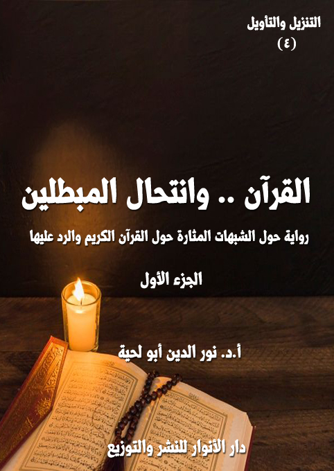

الكتاب: القرآن.. وانتحال المبطلين ج1
الوصف: رواية حول الشبهات المثارة على القرآن الكريم والرد عليها
السلسلة: التنزيل والتأويل
المؤلف: أ. د. نور الدين أبو لحية
الناشر: دار الأنوار للنشر والتوزيع
الطبعة: الثانية مزيدة ومنقحة، 1443 هـ
عدد الصفحات: 515
ISBN: 978-620-4-72151-4
لمطالعة الكتاب من تطبيق مؤلفاتي المجاني وهو أحسن وأيسر: هنا

هذا الكتاب هو المقدمة الضرورة الرابعة لهذه السلسلة، ويتناول القسم الثاني من أقسام المنحرفين عن القرآن الكريم، وهو القسم الذي سماه رسول الله صلى الله عليه وآله وسلم [انتحال المبطلين]
ومن خلال تحليل ذلك التعبير النبوي المقدس، رأينا أن المقصود منه تلك الجهات التي تريد نشر الباطل، وتشويه الحق، لا بالمواجهة المباشرة، وإنما بالانتحال، وأصناف الحيل.
وقد رأينا من خلال استقرائنا للواقع أن ذلك الانتحال قد تم من طرف أربع جهات، أولها وأسبقها من يطلق عليهم لقب [الحشوية]، وهم أولئك الرواة والمدلسين الذين امتلأت بهم كتب الحديث والتفسير، والذين كان لهم دور كبير في نشر الخرافة والدجل والشعوذة وتشويه الحقائق والقيم القرآنية.
وأما الجهة الثانية؛ فيمثلها من أطلقنا عليهم لقب [الكشفية]، وهم أولئك الذين اعتبروا الكشف والإلهام المجرد أداة من أدوات تأويل القرآن الكريم وتفسيره وفهمه، من غير مراعاة لأي ضابط أو قانون.
وأما الجهة الثالثة؛ فيمثلها من أطلقنا عليهم لقب [المشككين]، ونقصد بهم كل من حاول أن يشكك في القرآن الكريم، ابتداء من السابقين من المعاصرين لرسول الله صلى الله عليه وآله وسلم إلى المبشرين والمستشرقين والحداثيين وغيرهم.
وأما الجهة الرابعة؛ فيمثلها من أطلقنا عليهم لقب [المبدلين]، ونقصد بهم كل الذين حاولوا أن ينحرفوا بالقرآن الكريم عن معانيه الظاهرة الواضحة التي فهمها المتقدمون والمتأخرون إلى معاني بديلة، متأثرين في ذلك بموجة الحداثة الغربية ومناهجها المختلفة، ولذلك تعاملوا مع القرآن الكريم، مثلما تعامل حداثيو الغرب مع الكتاب المقدس، من غير أن يراعوا الفوارق بين الكتابين.
القرآن.. وانتحال المبطلين (1/7)
هذا الكتاب هو المقدمة الضرورة الرابعة لهذه السلسلة، ويتناول القسم الثاني من أقسام المنحرفين عن القرآن الكريم، وهو القسم الذي سماه رسول الله صلى الله عليه وآله وسلم [انتحال المبطلين]
ومن خلال تحليل ذلك التعبير النبوي المقدس، رأينا أن المقصود منه تلك الجهات التي تريد نشر الباطل، وتشويه الحق، لا بالمواجهة المباشرة، وإنما بالانتحال، وأصناف الحيل.
وقد رأينا من خلال استقرائنا للواقع أن ذلك الانتحال قد تم من طرف أربع جهات، أولها وأسبقها من يطلق عليهم لقب [الحشوية]، وهم أولئك الرواة والمدلسين الذين امتلأت بهم كتب الحديث والتفسير، والذين كان لهم دور كبير في نشر الخرافة والدجل والشعوذة وتشويه الحقائق والقيم القرآنية.. وقد رأينا تأثرهم خصوصا باليهود، وعلى رأسهم كعب الأحبار الذي تتلمذ عليه وعلى تلاميذه الكثير من الذين حشوا الدين بتلك الأباطيل.
وأما الجهة الثانية؛ فيمثلها من أطلقنا عليهم لقب [الكشفية]، وهم أولئك الذين اعتبروا الكشف والإلهام المجرد أداة من أدوات تأويل القرآن الكريم وتفسيره وفهمه، من غير مراعاة لأي ضابط أو قانون.
ولذلك أدخلوا في تأويل القرآن الكريم من حيث لا يشعرون الكثير من الخرافات والأباطيل التي حاولت إلغاء قدسيته، وتحريف معانيه.. وقد رأينا تأثرهم أيضا ببعض الفلسفات والديانات القديمة، والتي لا سند لها من العقل أو من النقل.
وقد اخترنا تلقيبهم بهذا، بدل تلقيبهم بأهل العرفان، لنميز أهل العرفان الصحيح،
القرآن.. وانتحال المبطلين (1/8)
والذين يهتمون بالسلوك والتربية والمعاني النبيلة والأذواق السامية، عن أولئك الذين يهتمون بالكشف عن أسرار الكون من غير أي برهان ولا دليل سوى تلك الكشوف والإلهامات التي يدعونها، والتي لا تملك العصمة الكافية لاعتبارها أدوات للمعرفة الحقيقية المقدسة.
وأما الجهة الثالثة؛ فيمثلها من أطلقنا عليهم لقب [المشككين]، ونقصد بهم كل من حاول أن يشكك في القرآن الكريم، ابتداء من السابقين من المعاصرين لرسول الله صلى الله عليه وآله وسلم إلى المبشرين والمستشرقين والحداثيين وغيرهم.. والذين استعملوا سلاح التشكيك، وسيلة لإلغاء قداسة القرآن الكريم، وذلك عبر بث شبه وإشكالات يكررونها بصيغ مختلفة.
وأما الجهة الرابعة؛ فيمثلها من أطلقنا عليهم لقب [المبدلين]، ونقصد بهم كل الذين حاولوا أن ينحرفوا بالقرآن الكريم عن معانيه الظاهرة الواضحة التي فهمها المتقدمون والمتأخرون إلى معاني بديلة، متأثرين في ذلك بموجة الحداثة الغربية ومناهجها المختلفة، ولذلك تعاملوا مع القرآن الكريم، مثلما تعامل حداثيو الغرب مع الكتاب المقدس، من غير أن يراعوا الفوارق بين الكتابين.
وقد قسمنا فصول الكتاب إلى أربعة أقسام، كل قسم يضم صنفا من أصناف المبطلين، وقد راعينا فيه ما راعيناه في كل أجزاء هذه السلسلة، وأول ذلك تبسيط القضايا المطروحة قدر الإمكان، بحيث يفهمها الجميع، وبسهولة ويسر، ومن غير إخلال بالمعاني المطروحة، وقد كان للحوار والجانب الروائي دور كبير في ذلك.
بالإضافة إلى محاولة استيعاب كل ما يرتبط بتلك الجهات التي ذكرناها، إما بالتعريف بها، أو بالمنابع التي تستقي منها، أو بالشبهات والإشكالات التي تطرحها، أو بالردود العلمية عليها.
القرآن.. وانتحال المبطلين (1/9)
ومن الأمثلة على ذلك أننا في الفصل الثالث المرتبط بالمشككين، تحدثنا عن المدارس الاستشراقية، وإشكالاتها المختلفة، مع الرد العلمي عليها، ومن الجهات المتعددة، بحيث يشكل ذلك مادة كافية لكل من يريد أن يطلع على موقف المستشرقين من القرآن الكريم، وشبههم نحوه، وكيفية الرد عليها.
ومثل ذلك فعلنا في الفصل الخاص بالمبدلين، والذي تحدثنا فيه عن الحداثيين والقرآنيين، حيث عرفنا بهم، وبالمنابع التي يستمدون منها، والمناهج التي يعتمدونها، والأفكار التي يطرحونها، مع الرد العلمي عليها.
وهكذا فعلنا في سائر الفصول، مع العلم أن تفاصيل الردود في بعض المسائل أو الكثير منها تركناه لمحله في سائر أجزاء السلسلة، لأن غرض هذا الجزء هو التعرف على الباطل الذي حاول أن يقتحم حصن القرآن الكريم وقداسته، وليس الرد المفصل الذي يحتاج إلى المقدمات الكثيرة.
أما الجانب الروائي من الكتاب؛ فهو يحكي رحلة المؤلف مع أستاذه الجديد [معلم الحقائق] إلى مدينة قرآنية جميلة، تنعم بكل البركات والخيرات بفضل تمسكها بالقرآن الكريم، لكن المبطلين أرادوا أن ينحرفوا بها عنه، ولذلك أرسلوا لها أولئك الأصناف الأربعة من الحشوية والكشفية والمشككين والمبدلين.
لكن الله تعالى قيض لها من الحكماء من يحاوروا أولئك الأصناف، ويناقشوهم في شبهاتهم وإشكالاتهم إلى أن استطاعوا أن يهدوهم سواء السبيل، وهو ما حمى المدينة من كل تلك الأباطيل، ﴿لِيُحِقَّ الْحَقَّ وَيُبْطِلَ الْبَاطِلَ وَلَوْ كَرِهَ الْمُجْرِمُونَ﴾ [الأنفال: 8]
القرآن.. وانتحال المبطلين (1/10)
بعد أن طلب مني معلم القرآن أن أهيء نفسي للرحلة الخاصة بتعلم ما يتعلق بـ[القرآن.. وانتحال المبطلين] رحت أبحث في الأسفار القديمة والحديثة عن المبطلين المضللين الذين أبى عليهم كبرهم واستعلاؤهم التسليم لكلمات الله المقدسة، والإذعان لها، والاستفادة مما فيها من حقائق ينادي كل شيء بصدقها.
أولئك الذين لم يكتفوا بكلمات ربهم؛ وإنما راحوا يعقدون حلفهم مع كل شياطين الإنس والجن، ليشوهوا تلك الأنوار المقدسة التي ملأ الله بها حياة عباده، ليوهموهم أنها ليست سوى دياجير وظلمات، لأن أعينهم كأعين الخفافيش لا تطيق العيش إلا في الظلمات.
وبعد أن رأيت كثرتهم وكثرة الشبهات والأباطيل التي يقذفونها، أصابني ضيق شديد؛ لأني خشيت على نفسي ـ أنا العبد البسيط الضعيف ـ أن يتسرب إلي من أوهامهم وتضليلاتهم وتشكيكاتهم ما يفسد علي ديني، وهو أغلى ما أملك، بل كل ما أملك.
وقد تذكرت حينها أقوال مشايخ التقوى والورع، والذين نصحوا كل ضعيف بالابتعاد عن مواضع الفتنة والشبه، حتى لا تتسرب إلى قلبه وعقله وروحه ولطائفه؛ فتفسد عليه صبغة الله الصافية التي صبغه بها، وفطرته الجميلة النقية التي جبله عليها.
وقد اشتد ذلك الخاطر على نفسي إلى درجة أني قررت، أو تجرأت أن أرفع يدي إلى السماء، ثم أقول: يا رب.. أنا عبدك الضعيف؛ فجنب عقلي ما يشوشه، وجنب نفسي ما يكدرها، وجنب قلبي كل الأهواء التي تحول بينه وبين رؤية الحقائق الصافية الجميلة، كما هي بصفائها وجمالها.. فأنا لا أريد علما يحولني إلى جاهل، ولا عقلا يحولني إلى ضال.
بعد أن قلت ذلك الدعاء، توهمت أو زينت لي نفسي أن معلم القرآن سيحضر
القرآن.. وانتحال المبطلين (1/11)
شخصيا، ليخبرني عن إلغاء تلك الرحلة المقررة، والدخول مباشرة إلى عالم الحقائق والقيم القرآنية من دون الولوج على تلك السراديب والمستنقعات.
لكن الأمر لم يكن كذلك.. فما هي إلا لحظات بعد انتهائي من الدعاء، حتى شعت أنوار في البيت، وفي منتصف الليل.. فخرجت أنظر إلى مصدرها، وإذا بي أرى شخصا لا يختلف عن سائر المعلمين، قال لي: لقد استجاب الله دعاءك.. وها أنذا بين يديك، أرسلني معلم القرآن إليك.. لأسير بك حيث يزداد تمسكك بكتاب ربك، وبالحقائق العظيمة التي جاء بها.
لم أملك إلا أن أسجد لله تعالى شاكرا، لكني ما إن قمت من سجودي، حتى قال لي: خذ قلمك وقراطيسك ودواتك، لنسير إلى تلك الرحلة التي طلب منك معلم القرآن أن تهيء نفسك لها.
قلت ـ من حيث لا أشعر ـ: لكن.. ألم تُلغَ تلك الرحلة؟.. لقد توهمت أن الله استجاب دعائي عندما طلبت منه أن يجنبني الفتن، ما ظهر منها وما بطن.
قال: أجل.. لقد استجاب الله دعاءك لا على ما ترغب، بل على ما تقتضيه تربيتك وإصلاحك.. فالله رب العالمين، وهو أكرم من أن يستجيب لعباده فيما قد يضر بتربيتهم وصلاحهم.
قلت: لكن كيف ذلك؟
قال: ألم تطلب في دعائك صفاء الروح، وسلامة القلب والعقل.. وأن يظل تمسكك بالحق قائما ثابتتا لا تزعزعه الأعاصير؟
قلت: أجل.. ولكن هذه الرحلة قد تتسبب فيما أخشاه على نفسي من الفتنة، وعلى قلبي من الكدر، وعلى عقلي من التشويش.
القرآن.. وانتحال المبطلين (1/12)
قال: بل ستكون سببا فيما طلبته.. فالحق الذي تخشى عليه الأعاصير وهم وليس حقا.. والحق الذي لا يثبت في وجه كل باطل سراب لا يطفئ ظمأك.. ألم تسمع قوله تعالى في وصف الكلمة الطيبة التي تصف الحقائق المقدسة: ﴿أَلَمْ تَرَ كَيْفَ ضَرَبَ اللَّهُ مَثَلًا كَلِمَةً طَيِّبَةً كَشَجَرَةٍ طَيِّبَةٍ أَصْلُهَا ثَابِتٌ وَفَرْعُهَا فِي السَّمَاءِ تُؤْتِي أُكُلَهَا كُلَّ حِينٍ بِإِذْنِ رَبِّهَا وَيَضْرِبُ اللَّهُ الْأَمْثَالَ لِلنَّاسِ لَعَلَّهُمْ يَتَذَكَّرُونَ﴾ [إبراهيم: 24 ـ 25]؟
قلت: بلى.. وقد سمعت معها قوله تعالى في وصف الأباطيل المدنسة: ﴿وَمَثَلُ كَلِمَةٍ خَبِيثَةٍ كَشَجَرَةٍ خَبِيثَةٍ اجْتُثَّتْ مِنْ فَوْقِ الْأَرْضِ مَا لَهَا مِنْ قَرَارٍ﴾ [إبراهيم: 26]
قال: فاسمع معها قوله تعالى بعدها في وصف عباده الصادقين المخلصين: ﴿يُثَبِّتُ اللَّهُ الَّذِينَ آمَنُوا بِالْقَوْلِ الثَّابِتِ فِي الْحَيَاةِ الدُّنْيَا وَفِي الْآخِرَةِ وَيُضِلُّ اللَّهُ الظَّالِمِينَ وَيَفْعَلُ اللَّهُ مَا يَشَاءُ﴾ [إبراهيم: 27].. فالله تعالى وعد عباده الصادقين بالثبات في وجه كل الفتن والأعاصير، ما داموا قد سلموا كل شؤونهم له.. وقد أخبر أن الضلال مصير الظالمين المستعلين المستكبرين لا العبيد المتواضعين.
قلت: لكني أخشى ألا أكون أهلا لذلك التثبيت.. فالله تعالى لا يعطي عباده إلا بحسب استعداداتهم.
قال: ستكتشف ذلك بنفسك، وحينها، سترى كيف تعالجها، فالتشخيص نصف العلاج، وأن تكتشف خطأك في هذه الدنيا؛ فتصححه، خير من أن تذهب به إلى تلك الدار، ولات ساعة مندم.
قلت: وعيت هذا.. لكني لم أدرك كيف يكون الضلال الذي تريد مني أن أرحل إليه سببا للهداية.. وهل يمكن للغواية أن تكون طريقا للهداية؟
قال: لاشك أنك من قوم يرددون كثيرا (الصحة تاج على رؤوس الأصحاء لا يراه
القرآن.. وانتحال المبطلين (1/13)
إلا المرضى)
قلت: صحيح.. وهو ليس مجرد مثل أو حكمة.. بل هو واقع؛ فالإنسان السليم المعافى لا يشعر بنعمة العافية والصحة إلا بعد أن يقع في المرض.
قال: لكنه قد لا يمرض، ومع ذلك يشعر بنعمة الصحة.
قلت: أجل.. وخاصة إن زار المرضى، ورأى آلامهم، حينها يشعر بنعمة الله عليه بالعافية.
قال: وهذا ما سنفعله.. فعندما ترى المرضى الذين تدنست أرواحهم بوحي الشياطين، ستعرف قيمة تسليمك وإذعانك لوحي ربك.
قلت: بورك فيك.. لقد ذكرتني برحلتي مع معلمي إلى النبي المعصوم.. فقد قال لي كلاما شبيها بهذا.. وبالفعل؛ فعندما سمعت كل شبهات المغرضين عن رسول الله صلى الله عليه وآله وسلم، وسمعت ردود الحكيم عليها، ازاد تعلقي برسول الله صلى الله عليه وآله وسلم أضعافا مضاعفة على ما كان عليه.
قال: وهكذا في هذه الرحلة، فسيزداد حبك لكتاب ربك، وعشقك له.. وسيصحبك فيها سبعة من الحكماء، وليس حكيما واحدا.
قلت: سبعة.. لقد ذكرتني بالحكماء السبعة الذين استطاعوا أن يجتثوا داء الطائفية من أصولها.. أولئك الذين دلني معلم السلام عليهم.. والذين ذكرتهم في كتاب [الطائفيون والحكماء السبعة].. لكني لم أتشرف بلقياهم، وقد ظللت متحسرا على ذلك.
قال: فستلقاهم في هذه الرحلة؛ فهم سيرافقونك فيها.. وفي كل محل من المحال التي تذهب إليها..
استبشرت كثيرا بذكر هؤلاء الذين عرفتهم في شبابي الباكر، وقلت: وأنت.. أي معلم تكون؛ فأنت لم تعرفني عن نفسك بعد؟
القرآن.. وانتحال المبطلين (1/14)
قال: أنا نقطة تحت الباء.
قلت: كلكم كذلك.. فمن أنت من بينهم؟
قال: أنا معلم الحقائق التي لم تتدنس بالأهواء.. وقد اكتسبت هذا بتلمذتي الخالصة على القرآن الكريم؛ فلا يمكن للحقائق أن تتقدس من دونه.
قلت: لقد كان كل المعلمين في رحلاتي السابقة، يخبرونني عن مسار رحلتي، لأكون على بينة من أمري.
قال: ستسير في هذه الرحلة إلى مدينة تمتلئ بالصفاء والنور والسلام، وهي تمثل القرآن الكريم أحسن تمثيل.. لكن شياطين الإنس والجن، راحوا يستعملون كل الوسائل لتحويلها عن صفائها وطهارتها.. ومن جملتها نشر الأباطيل والشبه حول القرآن الكريم؛ لأنهم يعلمون أن كل ما في تلك المدينة من بركات، سببها تمسكهم به، وإخلاصهم له.
قلت: فأنت تريد مني في رحلتي هذه أن أشارك الحكماء في مواجهتهم لتلك الأباطيل؟
قال: لا.. دورك محصور في دواتك وقلمك وقراطيسك.. فتلك الشبه التي غزت تلك المدينة غزت غيرها.. ونحن نريد من الحكمة التي ستُبث في تلك المدينة أن تنتشر إلى غيرها عبر تسجيلك لكل ما يحصل، وبدقة، كما عهدنا منك.
قلت: وعيت هذا.. فمن هم المبطلون الذين يريد الحكماء أن يقضوا على انتحالاتهم؟
قال: هم أربعة أصناف، تجتمع عندهم كل أصناف الأباطيل والمبطلين.
قلت: فما أولها؟
قال: الحشوية والمدلسون والوضاعون والكذابون.. أولئك الذين راحوا يدسون في تفسير الوحي المقدس كل ما أملت عليهم شياطينهم من الوحي المدنس.. فتمكنوا من
القرآن.. وانتحال المبطلين (1/15)
تحريف المعاني بعد أن استعصى عليهم تحريف الألفاظ، وتشبهوا في ذلك بما أخبر الله تعالى به عن الأمم السابقة حين قال: ﴿فَبِمَا نَقْضِهِمْ مِيثَاقَهُمْ لَعَنَّاهُمْ وَجَعَلْنَا قُلُوبَهُمْ قَاسِيَةً يُحَرِّفُونَ الْكَلِمَ عَنْ مَوَاضِعِهِ وَنَسُوا حَظًّا مِمَّا ذُكِّرُوا بِهِ وَلَا تَزَالُ تَطَّلِعُ عَلَى خَائِنَةٍ مِنْهُمْ إِلَّا قَلِيلًا مِنْهُمْ فَاعْفُ عَنْهُمْ وَاصْفَحْ إِنَّ اللَّهَ يُحِبُّ الْمُحْسِنِينَ﴾ [المائدة: 13]
قلت: فما الثاني؟
قال: الكشفية والغنوصيون الذين استعملوا الكشف والإلهام وسيلة لمزاحمة النبوة، بل ومعارضتها، وحولوا كتاب ربهم الذي يسره للذاكرين المتدبرين إلى ألغاز وطلاسم غامضة لا يفهمها إلا من يمر على أوكارهم، ويستمع لما يوحي شياطين الإنس والجن إليهم.
قلت: فما الثالث؟
قال: المشككون.. أولئك الذين أصغوا لأصحاب القلوب المريضة من الشرق والغرب، والقديم والحديث؛ فامتلأت نفوسهم بالشكوك والأوهام التي منعتهم من تقديس كلمات ربهم ا لمقدسة، أو الإذعان لها، ولذلك حرموا من الاستفادة منها؛ ففضل الله يأبى أن يتنزل على من يرفضه أو يرتاب فيه.
قلت: فما الرابع؟
قال: المبدلون والمغيرون الذين اغتروا بعقولهم ودنياهم؛ فتوهموا أنهم فهموا من القرآن الكريم ما لم يفهمه غيرهم.. ولذلك بدل أن يرتقوا به إلى سموات الحقيقة والجمال، راحوا ينزلون به إلى نفوسهم المدنسة بالأهواء والضلال.. ويدخل فيهم ومعهم أولئك الذين راحوا يزكون أنفسهم بكونهم قرآنيين؛ فلذلك ادعوا أنهم في غنى عن كل بيان حتى لو كان بيان رسول الله صلى الله عليه وآله وسلم أو ورثته الصادقين المخلصين.
ـ ـ ـ
القرآن.. وانتحال المبطلين (1/16)
بعد أن سمعت تلك الكلمات الطيبة من معلمي الجديد، وجدت نفسي في مدينة جميلة، بل في غاية النظام والجمال؛ فقد كانت الروائح الطيبة تملأ نسيمها العليل.. وكانت معه أصوات عذبة للقرآن الكريم، وفي كل المحال التي مررت بها.. أما أهلها؛ فلا يمكن أن أصف ما كانوا عليه من صحة وعافية وقوة.. وفوق ذلك ما يعلو أساريرهم من سلام وطمأنينة وأنوار.. وفوق ذلك ما يطبع علاقاتهم من رحمة ولطف ولين.
فسألت معلمي عن المدينة، وسرها، ومحلها، فقال: هذه مدينة الصادقين مع كلام ربهم.. لقد تنزلت عليهم البركات من كل الجهات.. بسبب ذلك التمسك الصادق.
قلت: لقد ذكرتني بقوله تعالى عن أهل الكتاب من قبلنا: ﴿وَلَوْ أَنَّهُمْ أَقَامُوا التَّوْرَاةَ وَالْإِنْجِيلَ وَمَا أُنْزِلَ إِلَيْهِمْ مِنْ رَبِّهِمْ لَأَكَلُوا مِنْ فَوْقِهِمْ وَمِنْ تَحْتِ أَرْجُلِهِمْ مِنْهُمْ أُمَّةٌ مُقْتَصِدَةٌ وَكَثِيرٌ مِنْهُمْ سَاءَ مَا يَعْمَلُونَ﴾ [المائدة: 66]
قال: هي في كل الكتب؛ فعدالة الله ولطفه بعباده يأبيان أن يميزا أمة عن أمة.. ألم تسمع قوله تعالى: ﴿وَالَّذِينَ يُمَسِّكُونَ بِالْكِتَابِ وَأَقَامُوا الصَّلَاةَ إِنَّا لَا نُضِيعُ أَجْرَ الْمُصْلِحِينَ﴾ [الأعراف: 170]؟
قلت: بلى.. وقد سمعت معها قوله: ﴿إِنَّ الَّذِينَ يَتْلُونَ كِتَابَ اللَّهِ وَأَقَامُوا الصَّلَاةَ وَأَنْفَقُوا مِمَّا رَزَقْنَاهُمْ سِرًّا وَعَلَانِيَةً يَرْجُونَ تِجَارَةً لَنْ تَبُورَ لِيُوَفِّيَهُمْ أُجُورَهُمْ وَيَزِيدَهُمْ مِنْ فَضْلِهِ إِنَّهُ غَفُورٌ شَكُورٌ﴾ [فاطر: 29 ـ 30]
قال: وقد قال بعدها: ﴿وَالَّذِي أَوْحَيْنَا إِلَيْكَ مِنَ الْكِتَابِ هُوَ الْحَقُّ مُصَدِّقًا لِمَا بَيْنَ يَدَيْهِ إِنَّ اللَّهَ بِعِبَادِهِ لَخَبِيرٌ بَصِيرٌ﴾ [فاطر: 31] ليبين أنه لا يمكن التمسك بالكتاب، ولا التحقق بمعانيه، ولا الارتفاع إلى قيمه قبل الإيمان بكونه حقا من عند الله.. فالحقيقة قبل التحقق.
قلت: أجل.. وقد أخبر بعدها عن الوارثين لكتاب الله، وبين المواقف منهم؛ فقال:
القرآن.. وانتحال المبطلين (1/17)
﴿ثُمَّ أَوْرَثْنَا الْكِتَابَ الَّذِينَ اصْطَفَيْنَا مِنْ عِبَادِنَا فَمِنْهُمْ ظَالِمٌ لِنَفْسِهِ وَمِنْهُمْ مُقْتَصِدٌ وَمِنْهُمْ سَابِقٌ بِالْخَيْرَاتِ بِإِذْنِ اللَّهِ ذَلِكَ هُوَ الْفَضْلُ الْكَبِيرُ﴾ [فاطر: 32]، ثم ذكر المصير الذي يصيرون إليه، فقال: ﴿جَنَّاتُ عَدْنٍ يَدْخُلُونَهَا يُحَلَّوْنَ فِيهَا مِنْ أَسَاوِرَ مِنْ ذَهَبٍ وَلُؤْلُؤًا وَلِبَاسُهُمْ فِيهَا حَرِيرٌ وَقَالُوا الْحَمْدُ لِلَّهِ الَّذِي أَذْهَبَ عَنَّا الْحَزَنَ إِنَّ رَبَّنَا لَغَفُورٌ شَكُورٌ الَّذِي أَحَلَّنَا دَارَ الْمُقَامَةِ مِنْ فَضْلِهِ لَا يَمَسُّنَا فِيهَا نَصَبٌ وَلَا يَمَسُّنَا فِيهَا لُغُوبٌ﴾ [فاطر: 33 ـ 35]
قال: فهذه الآيات الكريمة تصف هذه المدينة، وتصف أهلها الصادقين الذين أبت لهم همهم العالية أن يكونوا من الظالمين أو المقتصدين.. بل راحت تطلب السبق والقرب.. وقد آتاها الله ما طلبت.
قلت: ولكن يا معلمي.. ما علاقة هذه المدينة بالمبطلين وانتحالاتهم الكاذبة؟
قال: بعد أن سمع المبطلون بهذه المدينة، اجتمعوا بقضهم وقضيضهم ليتآمروا عليها؛ فيفسدوا عليها صفاءها وجمالها وبركاتها.. وقد استغلوا في ذلك طيبة أهلها، وإكرامهم لكل ضيف، وسماعهم لكل حديث بحسن نية.
قلت: لقد ذكرتني بقوله تعالى في وصف رسول الله صلى الله عليه وآله وسلم: ﴿وَمِنْهُمُ الَّذِينَ يُؤْذُونَ النَّبِيَّ وَيَقُولُونَ هُوَ أُذُنٌ قُلْ أُذُنُ خَيْرٍ لَكُمْ يُؤْمِنُ بِاللَّهِ وَيُؤْمِنُ لِلْمُؤْمِنِينَ وَرَحْمَةٌ لِلَّذِينَ آمَنُوا مِنْكُمْ وَالَّذِينَ يُؤْذُونَ رَسُولَ اللَّهِ لَهُمْ عَذَابٌ أَلِيمٌ﴾ [التوبة: 61].. فقد كان رسول الله صلى الله عليه وآله وسلم يصدق المؤمنين، ويحكم على ظواهرهم، حتى اتهم بكونه أذنا يسمع لكل حديث، ويمر عليه نفاق المنافقين، وكيد الكائدين.
قال: لقد كان لأهل هذه المدينة بعض هذه الصفات.. فهم يحسنون الظن بكل أحد.. ولذلك أرسلنا معلم القرآن لننقذ المدينة من كيدهم ومكرهم؛ فهم ـ مع صدقهم وإخلاصهم ـ ليسوا مؤيدين ولا مسددين بالوحي الذي كان يسدد ويؤيد به رسول الله صلى الله عليه وآله وسلم؛
القرآن.. وانتحال المبطلين (1/18)
فيعرف المؤمن من المنافق، والصادق من الكاذب.
قلت: ألهذا أرسل الحكماء لتنبيههم؟
قال: أجل.. فقد آتى الله الحكماء من العلم ما يميزون به بين الحق والباطل.. وهم ورثة النبوة في ذلك.. ألم تسمع قوله تعالى: ﴿يُؤْتِي الْحِكْمَةَ مَنْ يَشَاءُ وَمَنْ يُؤْتَ الْحِكْمَةَ فَقَدْ أُوتِيَ خَيْرًا كَثِيرًا وَمَا يَذَّكَّرُ إِلَّا أُولُو الْأَلْبَابِ﴾ [البقرة: 269]
قال: فقد آتى الله هؤلاء الحكماء الحكمة بسبب تلاوتهم الحقة للقرآن الكريم، وإدمانهم عليها، وكثرة تدبرهم لما يتلونه.
قلت: فهلا سرت بي إليهم.. فقد شوقتني إلى رؤيتهم بعد أن عرفت دورهم الكبير في منع الحرب بين الطائفتين الكبيرتين من المسلمين (1).
قال: نحن سائران إليهم.. أو هم سائرون إلينا.. وسنلتقي في المحل الذي شاء الله أن نلتقي فيه.
__________
(1) نشير إلى ما ذكرناه في كتاب [الطائفيون والحكماء السبعة]
القرآن.. وانتحال المبطلين (1/19)
بعد أن قطعنا مسافات طويلة في تلك المدينة، ونحن لا نشم إلا الروائح الطيبة، ولا نسمع إلا الأصوات العذبة، ولا نشاهد إلا الطيبين المتواضعين الذين يصدق عليهم ما وصف الله به عباده الصالحين من المخبتين وعباد الرحمن والمتبتلين وغيرهم.. إذا بي أرى حلقة كبيرة يجتمع فيها بعض سكان المدينة مع مجموعة من المشايخ، وقد تعجبت عندما شممت رائحة كريهة تنبعث منهم، فتوقفت، وقلت للمعلم: ما الذي حصل؟.. أرى أن البركات قد توقفت هنا.
قال: أجل.. ففي هذه الحلقة ينشر هؤلاء المشايخ سمومهم التي ورثوها من الفئة الباغية، وأصحاب الملك العضوض، لتحريف معاني القرآن الكريم بعد أن عجزوا عن تحريف ألفاظه.. وقد انتقوا لذلك بعض من شموا منهم روائح ضعف الإيمان؛ فراحوا يغرونهم بالأموال، ليحولوهم إلى أدوات ينخرون بها وحدة المدينة وقوتها وجمالها.
قلت: ويل لهذه المدينة إذن من هؤلاء، ومما يعد لها.. فستتحول روائحها الطيبة إلى هذه الروائح الكريهة التي تتقزز منها النفس.
قال: لا تخف.. فبسبب كثرة ما في المدينة من الصادقين والمخلصين والصالحين، أرسل الله لهم من الحكماء من ينقذهم.
قلت: لقد ذكرتني بقصة الخضر مع موسى عليهما السلام، فقد أخبر الله عن العلة التي ذهبا بسببها إلى ذلك الجدار الذي يريد أن ينقض لإصلاحه، فقال: ﴿وَأَمَّا الْجِدَارُ فَكَانَ لِغُلَامَيْنِ يَتِيمَيْنِ فِي الْمَدِينَةِ وَكَانَ تَحْتَهُ كَنْزٌ لَهُمَا وَكَانَ أَبُوهُمَا صَالِحًا فَأَرَادَ رَبُّكَ أَنْ يَبْلُغَا أَشُدَّهُمَا وَيَسْتَخْرِجَا كَنْزَهُمَا رَحْمَةً مِنْ رَبِّكَ﴾ [الكهف: 82]
قال: أجل.. فبركات الصالحين، لا تقتصر عليهم، ولا على أهليهم، بل تشمل كل
القرآن.. وانتحال المبطلين (1/20)
من يحيط بهم؛ فهم القوم لا يشقى بهم جليسهم.
قلت: فسيخلصهم الحكماء من هؤلاء الدجالين الحشوية المدلسين في النهاية إذن؟
قال: أجل.. وسترى كيف سيخلصونهم بعدها من كل المبطلين وأباطيلهم.. لا تنس أن تكتب كل ما يذكرونه حتى تعم حكمتهم سائر المدن.
ما إن قال معلمي هذا، حتى سمعت أحد الشيوخ الجالسين في الحلقة يقول بغضب شديد: كيف تسمعون لمن يشكك في ذلك الحبر الكبير، والإمام العظيم من أئمة الإسلام.. كعب الأحبار.. ذلك الذي شهد له بالعلم السلف والخلف، ابتداء من كبار الصحابة والتابعين؟
قال آخر: فهل أنتم أفضل من أولئك الصحابة والتابعين الذين رووا عن كعب الأحبار، أو تتلمذوا على يديه، من أمثال (أبي هريرة وعمر بن الخطاب وابنه عبد الله وأبي بردة بن أبي موسى الأشعري وروح بن زنباع وعبد الله بن الزبير وعبد الله بن عمرو بن العاص وسعيد بن المسيب وأنس بن مالك وأبي الدرداء)(1)
قال آخر: ألم تعلموا المكانة العظيمة التي توفرت له في المدينة النبوية، حيث استطاع أن يربي مجموعة من التلاميذ الكبار، كأبي هريرة وعبد الله بن عمرو بن العاص وعبد الله بن عمر وغيرهم كثير (2).. ولم يكتف بذلك، بل سعى بكل جهده لرفع مكانتهم، ومساعدتهم في نشر العلم بين المسلمين، فقد قال عن عبد الله بن عمرو بن العاص: أنت أفقه العرب.. ودعا الناس لسؤاله، ولما أجابهم، قال: (صدق الرجل.. عالم والله)(3).. ومدح أبا هريرة
__________
(1) ميزان الاعتدال 4/ 173 وتهذيب التهذيب 8/ 439.
(2) تفسير ابن كثير 3/ 104.
(3) تاريخ الطبري 1/ 402.
القرآن.. وانتحال المبطلين (1/21)
فقال: (ما رأيت أحدا لم يقرأ التوراة أعلم بما فيها من أبي هريرة)(1)
قال آخر: وقد استطاع فوق ذلك أن ينشر علمه وتفسيره للقرآن الكريم، ويكشف كل المشكلات المرتبطة بالعقيدة في الله وأنبيائه من خلال الروايات الكثيرة التي تلقتها الأمة بالقبول عنه، أو عن تلاميذه وزملائه من أمثال وهب بن منبه، وابن جريج، وابن إسحاق، والسدي الكبير وقتادة، ومحمد بن كعب القرظي، ومجاهد.. وغيرهم كثير.
قال آخر: وقبل ذلك كله.. ألم يعلموا ما قاله ابن كثير في بيان علاقته الجيدة مع الخليفة الثاني عمر، فقد قال: (فإن كعب الأحبار لما أسلم في زمن عمر كان يتحدث بين يدي عمر بن الخطاب بأشياء من علوم أهل الكتاب، فيستمع له عمر تأليفا له وتعجبا مما عنده مما يوافق كثير منه الحق الذي ورد به الشرع المطهر، فاستجاز كثير من الناس نقل ما يورده كعب الأحبار لهذا المعنى، ولما جاء من الإذن في التحديث عن بني إسرائيل)(2)
قال آخر: بل ورد من الروايات ما يدل على كونه أسلم على يديه، فقد ذكر المؤرخون أنه أسلم في زمان عمر، حيث أقبل وهو يريد بيت المقدس، فمر على المدينة، فخرج إليه عمر، فقال: يا كعب أسلم، قال ألستم تقرأون في كتابكم ﴿مَثَلُ الَّذِينَ حُمِّلُوا التَّوْرَاةَ ثُمَّ لَمْ يَحْمِلُوهَا كَمَثَلِ الْحِمَارِ يَحْمِلُ أَسْفَارًا﴾ [الجمعة: 5]، وأنا قد حملت التوراة، فتركه، ثم خرج حتى انتهى إلى حمص.. ثم عاد كعب إلى المدينة وأعلن إسلامه بعد أن فكر جيدا فيما قاله له عمر (3).
قال آخر: ومنذ ذلك اليوم صار مقربا جدا من عمر، ومما يروى من شدة العلاقة بينهما، أنه قال له: يا أمير المؤمنين هل ترى في منامك شيئا؟.. فانتهره، فقال: إنا نجد رجلا
__________
(1) تذكرة الحفاظ 1/ 36، الإصابة 4/ 206.
(2) البداية والنهاية (1/ 34 ـ 35)
(3) فضائح يهود متلبسون بالإسلام، ص 14.
القرآن.. وانتحال المبطلين (1/22)
يرى أمر الأمة في منامه (1).
قال آخر: بل ورد من الروايات ما يدل على كونه كان مستشاره الديني الخاص، فقد قال ابن تيمية عنه: (لما دخل عمر بن الخطاب البيت المقدس، وأراد أن يبني مصلى للمسلمين، قال لكعب؟ أين أبنيه؟ قال ابنه خلف الصخرة، قال: خالطتك يهودية يا ابن اليهودية؛ بل أبنيه أمامها ـ وذلك لأن اليهود تعظم تلك الصخرة ـ ولهذا كان عبد الله بن عمر إذا دخل بيت المقدس صلى في قبليه ولم يذهب إلى الصخرة، وكانوا يكذبون ما ينقله كعب: أن الله قال لها: أنت عرشي الأدنى ويقولون: من وسع كرسيه السموات والأرض كيف تكون الصخرة عرشه الأدنى؟)(2)
قال آخر: ومن تلك الروايات ما روي أن عمر قال لكعب: أنشدك الله يا كعب أتجدني خليفة أم ملكا؟ قال: بل خليفة فاستحلفه، فقال كعب: (خليفة والله من خير الخلفاء وزمانك خير زمان)(3)
قال آخر: ومثل ذلك تلك الروايات التي تذكر علاقته مع عائشة، وكيف كانت تستشيره، فقد روي عن عبد الله بن الحارث قال: كنت عند عائشة وعندها كعب الحبر، فذكر إسرافيل، فقالت عائشة: يا كعب أخبرني عن إسرافيل، فقال كعب: عندكم العلم، فقالت: أجل فأخبرني، قال: له أربعة أجنحة جناحان في الهواء، وجناح قد تسربل به، وجناح على كاهله، والعرش على كاهله، والقلم على أذنه، فإذا نزل الوحي كتب القلم، ثم درست الملائكة، وملك الصور جاث على إحدى ركبتيه، وقد نصبت الأخرى، فالتقم الصور، محني ظهره شاخص بصره إلى إسرافيل، وقد أمر إذا رأى إسرافيل قد ضم جناحه
__________
(1) مختصر تاريخ ابن عساكر لابن منظور 18/ 287.
(2) مجموع الفتاوى (15/ 153)
(3) رواه نعيم بن حماد في الفتن، ص 241.
القرآن.. وانتحال المبطلين (1/23)
أن ينفخ في الصور، فقالت عائشة: (هكذا سمعت رسول الله صلى الله عليه وآله وسلم يقول)(1)
قال آخر: وهكذا رووا عن عبد الله بن الزبير أنه قال: (ما أصبت فى سلطانى شيئاً إلا قد أخبرنى به كعب قبل أن يقع).. ورووا عن معاوية قوله: (ألا إنَّ أبا الدرداء أحد الحكماء، ألا إنَّ عمرو بن العاص أحد الحكماء، ألا إنَّ كعب الأحبار أحد العلماء، إن كان عنده علم كالثمار وإن كنا المفرطين)(2)
قال آخر: وكيف لا تكون له كل تلك المناقب والمكارم والفضل، وهو الذي جمع بين الحسنيين، بين كتاب محمد صلى الله عليه وآله وسلم، وكتاب موسى عليه السلام، وقد ورد في الحديث في فضائل عبد الله بن عمرو بن العاص، أنه قال: (رأيت فيما يرى النائم لكأن في إحدى أصبعي سمنا وفي الأخرى عسلا فأنا ألعقهما، فلما أصبحت ذكرت ذلك لرسول الله صلى الله عليه وآله وسلم فقال: (تقرأ الكتابين التوراة والفرقان، فكان يقرؤهما)(3)
قال آخر: وكل هذا يدل على أن كمال المؤمن ليس في أخذه من القرآن الكريم، واقتصاره عليه فقط.. بل الكمال في أن يأكل السمن مع العسل.. وينهل من القرآن ومن كتب أهل الكتاب.
قال آخر: وكيف لا يكون الكمال في ذلك.. ورسول الله صلى الله عليه وآله وسلم نفسه ـ كما يذكرنا شيخنا شيخ الإسلام ابن تيمية وغيره من مشايخ السلف ـ كان يستفيد من اليهود، ويفرح لما يلقونه له من العلم بالله، وقد ورد في الحديث الذي ورد في صحيح البخاري أن يهودياً جاء إلى النبي صلى الله عليه وآله وسلم فقال: (يا محمد إن الله يمسك السموات على إصبع، والأرضين على إصبع، والجبال على إصبع، والشجر على إصبع، والخلائق على إصبع، ثم يقول: أنا الملك، فضحك رسول
__________
(1) رواه الطبراني في الأوسط، مجمع الزوائد ومنبع الفوائد (10/ 331)
(2) الإصابة في تمييز الصحابة (5/ 650)
(3) أحمد 2/ 222 (7067)
القرآن.. وانتحال المبطلين (1/24)
الله صلى الله عليه وآله وسلم حتى بدت نواجذه، ثم قرأ: ﴿وَمَا قَدَرُوا اللَّهَ حَقَّ قَدْرِهِ وَالْأَرْضُ جَمِيعًا قَبْضَتُهُ يَوْمَ الْقِيَامَةِ وَالسَّمَاوَاتُ مَطْوِيَّاتٌ بِيَمِينِهِ سُبْحَانَهُ وَتَعَالَى عَمَّا يُشْرِكُونَ﴾ [الزمر: 67])(1)
قال آخر: لقد فرح شيخنا شيخ الإسلام ابن تيمية وسلفه وخلفه بهذا الحديث فرحا عظيما حتى اعتبروه أصلا من أصول الدين، بل اعتبروه من الأحاديث الدالة على صفات الله عز وجل وكمالاته، وقد بنى عليه اعتبار الإصبع صفة من صفات الله تعالى، فقد قال في كتابه [بيان تلبيس الجهمية في تأسيس بدعهم الكلامية]: (وندين الله عز وجل بأنه يقلب القلوب، وأن القلوب بين أصبعين من أصابع الله عز وجل، وأنه عز وجل يضع السموات على إصبع، والأرضين على إصبع)(2)
قال آخر: بل إنه ـ بحذقه وذكائه وحضور بديهته وعلمه العظيم ـ استطاع أن يكتشف من خلاله كون النبي صلى الله عليه وآله وسلم كان يستمع لأحاديث اليهود، ويصدقها، ثم يأتيهم بالآيات التي تدل على ما قالوا، لقد قال: (وكان اليهود إذا ذكروا بين يديه أحاديث في ذلك يقرأ من القرآن ما يصدقها كما في الصحيحين عن عبد الله بن مسعود أن يهودياً قال للنبي صلى الله عليه وآله وسلم: (إن الله يوم القيامة يمسك السموات على إصبع..)(3)
قال آخر: وقد قال ذلك في مواضع كثيرة، ولذلك هو يقبل أحاديث كعب الأحبار وغيره من اليهود، لأن مرجعهم فيما يذكرونه هي التوراة الصحيحة، ومن الأمثلة على ذلك قوله في كتابه دقائق التفسير: (وعمر بن الخطاب لما رأى بيد كعب الأحبار نسخة من التوراة قال: يا كعب إن كنت تعلم أن هذه هي التوراة التي أنزلها الله على موسى بن عمران فاقرأها، فعلق الأمر على ما يمتنع العلم به، ولم يجزم عمر بأن ألفاظ تلك مبدلة لما لم يتأمل كل ما
__________
(1) رواه البخاري (9/ 148)(7414) ومسلم (4/ 2147)
(2) بيان تلبيس الجهمية في تأسيس بدعهم الكلامية (1/ 112)
(3) درء التعارض 7/ 96
القرآن.. وانتحال المبطلين (1/25)
فيها، والقرآن والسنة المتواترة يدلان على أن التوراة والإنجيل الموجودين في زمن النبي صلى الله عليه وآله وسلم فيهما ما أنزله الله عز وجل، والجزم بتبديل ذلك في جميع النسخ التي في العالم متعذر، ولا حاجة بنا إلى ذكره، ولا علم لنا بذلك، ولا يمكن أحدا من أهل الكتاب أن يدعي أن كل نسخة في العالم بجميع الألسنة من الكتب متفقة على لفظ واحد، فإن هذا مما لا يمكن أحدا من البشر أن يعرفه باختياره)(1)
قال آخر: وهذا ليس موقفا خاصا بابن تيمية، فقد قال العلامة ابن العثيمين في تفسير سبب ضحك رسول الله صلى الله عليه وآله وسلم: (سبب ضحك رسول الله صلى الله عليه وآله وسلم هو سروره حيث جاء في القرآن ما يصدق ما وجد هذا الحبر في كتابه، لأنه لا شك أنه إذا جاء ما يصدق القرآن، فإن الرسول صلى الله عليه وآله وسلم سوف يسر به، وإن كان الرسول صلى الله عليه وآله وسلم يعلم علم اليقين أن القرآن من عند الله لكن تضافر البينات مما يقوي الشيء)(2)
قام بعض الجالسين، وقال: لكن مع كل ما ذكرتموه عن كعب الأحبار، وفضله، ومكانته في الدين إلا أني قرأت أن من الصحابة أنفسهم من يتهمه بالكذب، والقاعدة التي نعرفها في التعامل مع هؤلاء هو أن من عرف الكذب عنه، ولو مرة واحدة يطرد من قائمة الرواة الموثوقين.
قال أحد الحشوية: كل ذلك مدسوس وكذب؛ فكعب الأحبار وغيره، من العلماء العدول الثقاة، كانوا مقربين جدا من الصحابة، بل من كبارهم، ولسنا أحرص على الدين من الصحابة.
قال آخر: لقد كتب بعض أصحابنا من الملتزمين بسنة رسول الله صلى الله عليه وآله وسلم والمنافحين عنها
__________
(1) دقائق التفسير (2/ 58)
(2) القول المفيد على كتاب التوحيد لابن عثيمين 363.
القرآن.. وانتحال المبطلين (1/26)
رسالة في الدفاع عنه سماها [كعب الأحبار المفترى عليه] (1)، وقد قال في مقدمتها: (فهذا بحث أدفع فيه بعض الافتراءات على كعب الأحبار، التي ذكرها أبورية في كتابه (أضواء على السنة المحمدية)، وقلده بعد ذلك كثيرون، وهو في الأساس أخذ عن محمد رشيد رضا وبعض المستشرقين، وهؤلاء إنما أرادوا الطعن في السنة، وذلك لأن جمعاً من الصحابة رووا عن كعب الأحبار واحترموه، فأراد هؤلاء إظهار الصحابة في صورة السذج الذين خدعهم كعب)، ثم نقل النصوص الكثيرة عن أئمة السلف التي تمجده، وتجعله قطبا من أقطاب الدين، خاصة في تفسير القصص القرآني.
قال أحد الجالسين: فما تقولون في مقولة معاوية عنه، والتي تتهمه بالكذب، وهي قوله: (إن كان من أصدق هؤلاء المحدثين الذين يحدثون عن أهل الكتاب، وإن كنا ـ مع ذلك ـ لنبلو عليه الكذب)(2)
قال أحد الحشوية: مع أن هذه المقولة صحيحة إلا أن المحققين من علمائنا استطاعوا أن يبينوا معناها، وأن المراد ليس الكذب المعروف.. فقد قال ابن حجر: (وقوله (عليه الكذب) أي: يقع بعض ما يخبرنا عنه بخلاف ما يخبرنا به، قال ابن التين: وهذا نحو قول ابن عباس في حق كعب المذكور: (بدل من قبله فوقع في الكذب)، قال: والمراد بالمحدثين في قوله: (إن كان من أصدق هؤلاء المحدثين الذين يحدثون عن أهل الكتاب) أنداد كعب ممن كان من أهل الكتاب وأسلم، فكان يحدث عنهم، وكذا من نظر في كتبهم فحدث عما فيها، قال: ولعلهم كانوا مثل كعب، إلا أن كعبا كان أشد منهم بصيرة، وأعرف بما يتوقاه)(3)
__________
(1) هو لعبد بن فهد الخليفي.
(2) صحيح البخاري (13/ 345)، رقم (7361)
(3) فتح الباري (13/ 346)
القرآن.. وانتحال المبطلين (1/27)
قال آخر: ومثل ذلك قال ابن حبان في كتاب الثقات: (أراد معاوية أنه يخطئ أحيانا فيما يخبر به، ولم يرد أنه كان كذابا، وقال غيره: الضمير في قوله: (لنبلو عليه) للكتاب لا لكعب، وإنما يقع في كتابهم الكذب لكونهم بدلوه وحرفوه)(1)
قال آخر: ومثل ذلك قال ابن الجوزي: (المعنى: أن بعض الذي يخبر به كعب عن أهل الكتاب يكون كذبا لا أنه يتعمد الكذب، وإلا فقد كان كعب من أخيار الأحبار)(2)
ما إن انتهى حديث الحشوية إلى ذلك الموضع، وبعد أن رأوا جمهور الحاضرين قد خضعوا لهم؛ فلم يبدوا أي اعتراض، قال كبيرهم: إن لم يكن لديكم أي شبهة أخرى.. فسنعود لحديثنا الذي بدأنا به، وهو أن كعب الأحبار وتلاميذه هم الوحيدون الذين حلوا كل المعضلات، وأجابوا عن كل المشكلات، فلا يمكن لأحد أن يفهم القرآن الكريم من دون المرور عليهم، والتلمذة على أيديهم.
قال آخر: وبما أننا لا نستطيع في هذا المجلس أن نذكر لكم تفاصيل ذلك.. فلذلك ندع لكم أن تسألونا عن أي إشكال في أي آية من القرآن الكريم لنذكر لكم كيف وجدوا حلولا لها.
ما إن قال ذلك، حتى رأيت سبعة من الفتيان الذين تلوح على ملامحهم أنوار الحكمة والإيمان، كما تلوح عليهم أنوار الشجاعة والجرأة والصدع بقول الحق، يقومون في المجلس، ثم يخاطب أحدهم الحضور قائلين: هل تعرفون هؤلاء الذين تجلسون إليهم؟
قال آخر: إنهم أولئك الحشوية المدلسين المدنسين للدين، أولئك الذين أرسلتهم
__________
(1) فتح الباري (13/ 346)
(2) فتح الباري (13/ 346)
القرآن.. وانتحال المبطلين (1/28)
الشياطين إلى الأمة ليحجبوها عن كتاب ربها وتدبره وتعظيمه.
قال آخر: ويججبوها عن نبيها صلى الله عليه وآله وسلم وهدايته ورحمته.
قال آخر: ويحجبوها عن ورثته الطاهرين الصادقين المخلصين.
قال آخر: ويحجبوها عن كل صادق مخلص من هذه الأمة ابتداء من الصحابة المنتجبين.
قال آخر: وكل ذلك ليحل بدلهم المنحرفون المحرفون.
قال آخر: لقد أقصوا كل هؤلاء، لأنهم يعلمون أن مؤامراتهم في تحريف الدين لا يمكن أن تتم في وجود هذه المصادر المقدسة.
قال أحد الحشوية: كيف تتهموننا زورا وبهتانا بأننا نقوم بإقصاء القرآن، وها أنت ترانا نرتل نفس آياته.. بل ندعو هؤلاء الحضور ليسمعوا معنا تفسيره.
قال أحد الحكماء: فهل سمعتم وصايا النبوة في التحذير من خلط الإسلام بغيره من الأديان..
قال آخر: وهل رأيتم كيف غضب رسول الله صلى الله عليه وآله وسلم غضبا شديدا، حين أتاه عمر بكتاب من كتب اليهود، فقال له رسول الله صلى الله عليه وآله وسلم: (أمتهوكون فيها يا ابن الخطاب!؟ والذي نفسي بيده، لقد جئتكم بها بيضاء نقية، لا تسألوهم عن شيء فيخبروكم بحق فتكذبوا به أو بباطل فتصدقوا به، والذي نفسي بيده لو أن موسى صلى الله عليه وسلم كان حيا ما وسعه إلا أن يتبعني)(1)
قال آخر: فهذا الحديث العظيم يخبر أن دين الله أبيض نقي صاف ليس فيه أي دنس
__________
(1) أحمد: 3/ 387 ح (15195)
القرآن.. وانتحال المبطلين (1/29)
أو شبهة تمنع العقل السليم من التسليم له.. لكن هذا الأبيض يمكنه أن يتحول إلى أسود إذا ما اختلط بغيره.. فهو لشدة بياضه وجماله أسرع الأشياء إلى التلوث إذا لم يحافظ عليه.
قال أحد الحشوية: لكن رسول الله صلى الله عليه وآله وسلم الذي قال ذلك، هو نفسه الذي قال: (لا تكتبوا عني شيئا غير القرآن، فمن كتب عني شيئا غير القرآن فليمحه.. وحدثوا عن بني إسرائيل ولا حرج)(1).. فهل تؤمنون ببعض الكتاب وتكفرون ببضع؟
قال آخر: ألا ترون من العجيب أن ينهى رسول الله صلى الله عليه وآله وسلم عن كتابة حديثه، وفي نفس الوقت يجيز الحديث عن بني إسرائيل، وهو الذي غضب تلك الغضبة الشديدة، وأخبر أن دينه أبيض نقي، وأن خلطهم له بغيره من الأديان سيشوهه، ويدنسه، بل يحوله إلى دين بشري، بدلا أن يكون دينا إلهيا.
قال آخر: الفهم الصحيح للحديث عن (بني إسرائيل بلا حرج)، هو ما ذكره الإمام الصادق عندما سأله بعضهم قائلا: حديث يرويه الناس أنّ رسول الله صلى الله عليه وآله وسلم قال: (حدّثوا عن بني إسرائيل ولا حرج؟) قال: (نعم) قيل: فنحدّث بما سمعنا عن بني إسرائيل ولا حرج علينا؟ قال: (أما سمعت ما قال: كفى بالمرء كذبا أن يحدّث بكلّ ما سمع) قيل: كيف هذا؟ قال: (ما كان في الكتاب أنّه كان في بني إسرائيل فحدّث أنّه كان في هذه الأمّة ولا حرج)(2)
قال آخر: وبذلك فإن هذا الحديث، وبهذا الفهم الراقي، يجتمع مع ذلك التحذير الذي حذر منه رسول الله صلى الله عليه وآله وسلم؛ ففيما ورد في القرآن الكريم عن بني إسرائيل وقصصهم ما يغني عن غيرها.. والتعامل معها بعد ذلك بالاعتبار والتدبر، لا بالبحث فيما لا يغني ولا يجدي.
قال آخر: وهكذا حصل مع الكثير من الأحاديث؛ فسلفكم من الحشوية المدلسين
__________
(1) البخاري (6/ 496) والترمذي (7/ 431)
(2) قصص الأنبياء ص 187.
القرآن.. وانتحال المبطلين (1/30)
الذين تدعون لهم إما يسيئون فهمها، أو يكذبون في روايتهم لها.. ولذلك دسوا باسم رسول الله صلى الله عليه وآله وسلم الكثير من الأحاديث التي تشوه الدين وتحرفه، مستغلين تلك القوانين التي وضعها المحدثون، والتي تكتفي بالثقة في الرواة، دون محاكمة الأحاديث إلى ما أمرنا الله تعالى بالمحاكمة إليه.
قال آخر: ومن الأمثلة على تلك الروايات التي تسللت إلى السنة النبوية، فشوهتها أعظم تشويه، ذلك الحديث الذي يعارض قوله تعالى: ﴿إِنَّ رَبَّكُمُ اللَّهُ الَّذِي خَلَقَ السَّمَاوَاتِ وَالْأَرْضَ فِي سِتَّةِ أَيَّامٍ﴾ [الأعراف: 54]، ويعارض معه الحقائق العلمية في الفلك والجيولوجيا وعلوم الحياة وغيرها من العلوم، وهو ما روي عن أبي هريرة، أنه قال: أخذ رسول الله صلى الله عليه وآله وسلم بيدي فقال: (خلق الله عز وجل التربة يوم السبت، وخلق فيها الجبال يوم الأحد، وخلق الشجر يوم الاثنين، وخلق المكروه يوم الثلاثاء، وخلق النور يوم الأربعاء، وبث فيها الدواب يوم الخميس، وخلق آدم عليه السلام بعد العصر من يوم الجمعة في آخر الخلق في آخر ساعة من ساعات الجمعة فيما بين العصر إلى الليل)(1)
قال آخر: هذا الحديث مجرد مثال على تلك الأحاديث التي اختلط فيها المقدس بالمدنس، والأمثلة على ذلك أكثر من أن تحصر، وقد روى ابن كثير عن عروة بن الزبير بن العوام، قال: قال لى أبي الزبير: أدننى من هذا اليمانى (يعني أبا هريرة) فإنه يكثر الحديث عن رسول الله صلى الله عليه وآله وسلم قال: فأدنيته منه فجعل أبو هريرة يحدث، وجعل الزبير يقول صدق كذب صدق كذب، قال: قلت يا أبة ما قولك صدق كذب، قال: يا بني أما أن يكون سمع هذه الأحاديث من رسول الله صلى الله عليه وآله وسلم فلا أشك، ولكن منها ما يضعه على مواضعه ومنها ما وضعه على غير مواضعه)(2)
__________
(1) مسلم (2789)
(2) البدابة والنهاية ج 8 ص 109.
القرآن.. وانتحال المبطلين (1/31)
قال آخر: ومثله ما حدث به ابن كثير عن مسلم صاحب الصحيح بسنده عن بكير بن الأشج، قال: قال لنا بشر بن سعيد: (اتقوا الله وتحفظوا من الحديث، فوالله لقد رأيتنا تجالس أبا هريرة فيحدث عن رسول الله صلى الله عليه وآله وسلم، ويحدثنا عن كعب الأحبار، ثم يقوم فأسمع بعض ما كان معنا يجعل حديث رسول الله صلى الله عليه وآله وسلم عن كعب وحديث كعب عن رسول الله صلى الله عليه وآله وسلم)(1)
قال آخر: وهكذا أصبح لأي شخص يتزين أمام المحدثين أو علماء الجرح والتعديل بزينة التقوى والصلاح أن يروي أي حديث لرسول الله صلى الله عليه وآله وسلم، ثم يقبل ذلك الحديث من دون مناقشة، بل يتهم راده، بكل صنوف التهم.. لا حرصا على النبوة، وإنما حرصا على قداسة الرواة.
قال آخر: بل إن الأمر وصل بهم إلى حد القول بتخطئة رسول الله صلى الله عليه وآله وسلم حرصا على صدق الرواة.. ومن الأمثلة على ذلك ما رواه محمد بن سيرين عن أبي هريرة، قال: قال رسول الله صلى الله عليه وآله وسلم: (فقدت أمة من بني إسرائيل، لم يدر ما فعلت، وإني لا أراها إلا الفأر، ألا ترونها إذا وضع لها ألبان الإبل لا تشربه، وإذا وضع لها ألبان الشاء شربته؟)، قال أبو هريرة: حدثت بهذا الحديث كعبا، فقال: سمعته من رسول الله صلى الله عليه وآله وسلم؟ فقلت: نعم، فقال لي ذلك مرارا، فقلت: أتقرأ التوراة!؟)(2).. فمع أن هذا الحديث يتعارض معارضة تامة مع قوله صلى الله عليه وآله وسلم: (إن الله لم يجعل لمسخ نسلاً ولا عقباً، وقد كانت القردة والخنازير قبل ذلك)(3).. والأصل في هذه الحال، أي عند التعارض بين الأخبار، قبول أحدهما ورفض الآخر؛ إلا أنهم التمسوا حلا لدرء التعارض أدى بهم إلى أن المخطئ في الحديث ليس أبا هريرة، وإنما
__________
(1) البداية والنهاية ج 8 ص 109.
(2) رواه البخارى (3/ 1203)، ومسلم (4/ 2294)
(3) فتح الباري 353/ 6.
القرآن.. وانتحال المبطلين (1/32)
رسول الله صلى الله عليه وآله وسلم نفسه.. ذلك أنهم كما يذكرون: اجتهد في ذلك، ولم يقل عن علم أو وحي.
قال آخر: لقد عبر عن هذا المعنى ابن حجر بقوله: (وذكر عند النبي صلى الله عليه وآله وسلم القردة والخنازير فقال: (إن الله لم يجعل للمسخ نسلاً ولا عقباً، وقد كانت القردة والخنازير قبل ذلك)، وعلى هذا يحمل قوله صلى الله عليه وآله وسلم: (لا أراها إلا الفأر)، وكأنه كان يظن ذلك ثم أعلم بأنها ليست هي)(1)
قال آخر: وهذا التعليل الحشوي المشوه لرسول الله صلى الله عليه وآله وسلم عجيب جدا، لأنه يتناقض مع كل تلك القيم التي دعا إليها لقرآن الكريم، وأولها تناقضه مع قوله تعالى: ﴿وَلَا تَقْفُ مَا لَيْسَ لَكَ بِهِ عِلْمٌ إِنَّ السَّمْعَ وَالْبَصَرَ وَالْفُؤَادَ كُلُّ أُولَئِكَ كَانَ عَنْهُ مَسْئُولًا﴾ [الإسراء: 36].. ويتناقض مع قوله تعالى: ﴿وَمَا يَنْطِقُ عَنِ الْهَوَى إِنْ هُوَ إِلَّا وَحْيٌ يُوحَى﴾ [النجم: 3 ـ 4].. ويتناقض مع كل تلك الأحاديث الصحيحة المتواترة، التي تبين أن رسول الله صلى الله عليه وآله وسلم لا يقول إلا حقا، ومنها قوله صلى الله عليه وآله وسلم في الحديث الذي رواه عبد الله بن عمرو، قال: قلت: يا رسول الله، إنى أسمع منك أشياء أفأكتبها؟ قال: نعم، قلت: فى الغضب والرضا؟ قال: (نعم، فإنى لا أقول فيهما إلا حقا)(2)
قال أحد الحضور: قد نقبل هذا منكم.. لكن لم ذكرتم أن هؤلاء يقومون بإقصاء القرآن، وها أنتم ترونهم يرتلون نفس آياته.. بل دعونا لنسمع منهم تفسيره.
قال أحد الحكماء: تحريف القرآن وكلمات الله ليست قاصرة على تغيير ألفاظها، بل الأخطر منها تغيير معانيها، لتصبح ألفاظها بعد ذلك كسوة لكل أنواع الدنس.
قال آخر: لقد قال الإمام الجواد محذرا من ذلك: (وكل أمة قد رفع الله عنهم علم
__________
(1) فتح الباري: 6/ 353.
(2) الدارمي (490) وأبو داود (3646)، وابن خزيمة (2280)، وغيرهم.
القرآن.. وانتحال المبطلين (1/33)
الكتاب حين نبذوه وولاهم عدوهم حين تولوه، وكان من نبذهم الكتاب أن أقاموا حروفه وحرفوا حدوده، فهم يروونه ولا يرعونه، والجهال يعجبهم حفظهم للرواية، والعلماء يحزنهم تركهم للرعاية)(1)
قال آخر: وهكذا حذر رسول الله صلى الله عليه وآله وسلم وكل أئمة الهدى من التلاعب بالمعاني القرآنية وتأويلها وتفسيرها بما يخرجها عن مضامينها المقصودة.
قال آخر: وقد وقع ذلك في هذه الأمة على يد أولئك الحشوية الذين وضعوا الأحاديث والروايات الكثيرة المزاحمة للقرآن الكريم، وبدل أن يحاكموها إليه، حاكموه إليها.
قال آخر: أجل.. فمع أن الله تعالى وضع لنا معيارا مقدسا نتحاكم إليه في كل شيء، وهو ما عبر عنه قوله تعالى: ﴿فَإِنْ تَنَازَعْتُمْ فِي شَيْءٍ فَرُدُّوهُ إِلَى اللَّهِ وَالرَّسُولِ إِنْ كُنْتُمْ تُؤْمِنُونَ بِاللَّهِ وَالْيَوْمِ الْآخِرِ ذَلِكَ خَيْرٌ وَأَحْسَنُ تَأْوِيلًا﴾ [النساء: 59]؛ والذي من مستلزماته الرجوع إلى القرآن الكريم لمحاكمة أي رواية أو حديث أو رأي أو اجتهاد في أي قضية عقدية أو سلوكية.. بل كل ما يتعلق بجميع قضايا الحياة.. إلا أن الذين قاموا بهذا الإقصاء رفضوا هذا الاحتكام، لأنه يحطم كل مشروع الدين البشري الذي أسسته الفئة الباغية في مقابل الدين الإلهي الذي يقوم على مركزية القرآن الكريم ومرجعيته الكبرى في كل شيء.
قال آخر: ولهذا فإنهم إن وردهم أي حديث ووجدوا فيه مخالفة صريحة للقرآن الكريم، فإنهم لا يستغربون من ذلك، ولا يتهمون رواة الحديث، ولا يقولون باستحالة التعارض بين القرآن الكريم والسنة المطهرة.. وإنما يلجؤون إلى أنواع من التوفيق المتكلف، والذي ينتهي باعتبار الحديث هو الحاكم، أما ما ذكر في القرآن فهو مجرد إرشاد أو نصح أو
__________
(1) الكافي: 8/ 53 /16.
القرآن.. وانتحال المبطلين (1/34)
كلام عام لا يستفاد منه أي معنى تنفيذي.
قال آخر: ولهذا اشتدوا في إنكار ما ورد في الدعوة إلى عرض الأحاديث على القرآن الكريم، كقوله صلى الله عليه وآله وسلم: (إن الحديث سيفشو عني، فما أتاكم عني يوافق القرآن فهو عني، وما أتاكم عني يخالف القرآن فليس عني)(1).. وقوله: (ما جاءكم عني فاعرضوه على كتاب الله فما وافقه فأنا قلته، وما خالفه فلم أقله)(2).. وقوله: (إذا حدثتم عني حديثا تعرفونه ولا تنكرونه، فصدقوا به قلته أو لم أقله فإني أقول ما تعرفونه ولا تنكرونه، وإذا حدثتم عني حديثا تنكرونه ولا تعرفونه فكذبوا به، فإني لا أقول ما تنكرونه، وأقول ما تعرفونه)(3).. وقوله: (إني والله لا يمسك الناس علي بشيء إلا أني لا أحل إلا ما أحل الله في كتابه ولا أحرم إلا ما حرم الله في كتابه)(4).. وغيرها من الأحاديث الكثيرة الواردة في مصادر المدارس الإسلامية المختلفة (5).
قام أحد الحشوية، وقال: كل هذه الأحاديث التي أوردتها مكذوبة، وقد وضعها الطاعنون في السنة، ليجعلوها وسيلة لإنكارها.. ألم تسمع ما قال شيخنا الكبير العلامة ابن بطة، بعد عرض تلك الأحاديث: (قال ابن الساجي: قال أبي رحمه الله: هذا حديث موضوع عن النبي صلى الله عليه وآله وسلم قال: وبلغني عن علي بن المديني، أنه قال: ليس لهذا الحديث أصل، والزنادقة وضعت هذا الحديث)(6).. ثم علق على ذلك بقوله: (وصدق ابن الساجي، وابن المديني رحمهما الله، لأن هذا الحديث كتاب الله يخالفه، ويكذب قائله وواضعه، والحديث الصحيح، والسنة الماضية عن رسول الله صلى الله عليه وآله وسلم ترده قال الله عز وجل: ﴿فَلَا وَرَبِّكَ لَا يُؤْمِنُونَ حَتَّى
__________
(1) البيهقي في (معرفة السنن والآثار)(1/ 9) وابن المقرئ في معجمه (3/ 239)
(2) البيهقي في (معرفة السنن والآثار)(1/ 116)
(3) الطحاوي في (شرح مشكل الآثار)(15/ 347)، والدار قطني في سننه (4/ 208)
(4) الشافعي في مسنده (1/ 129)، رقم (116)، والبيهقي في (معرفة السنن والآثار)(3/ 360)
(5) ذكرت تلك الأحاديث بتفصيل في كتاب: منابع الهداية الصافية، ص 13، فما بعدها.
(6) الإبانة الكبرى لابن بطة (1/ 266)
القرآن.. وانتحال المبطلين (1/35)
يُحَكِّمُوكَ فِيمَا شَجَرَ بَيْنَهُمْ ثُمَّ لَا يَجِدُوا فِي أَنْفُسِهِمْ حَرَجًا مِمَّا قَضَيْتَ وَيُسَلِّمُوا تَسْلِيمًا﴾ [النساء: 65]، والذي أمرنا الله عز وجل أن نسمع ونطيع، ولا نضرب لمقالته صلى الله عليه وآله وسلم المقاييس، ولا نلتمس لها المخارج، ولا نعارضها بالكتاب، ولا بغيره، ولكن نتلقاها بالإيمان والتصديق والتسليم إذا صحت بذلك الرواية)(1)
قال آخر: وهكذا قال العلامة ابن عبد البر: (وهذه الألفاظ لا تصح عنه صلى الله عليه وآله وسلم عند أهل العلم بصحيح النقل من سقيمه، وقد عارض هذا الحديث قوم من أهل العلم فقالوا: نحن نعرض هذا الحديث على كتاب الله قبل كل شيء ونعتمد على ذلك، قالوا: فلما عرضناه على كتاب الله عز وجل وجدناه مخالفا لكتاب الله؛ لأنا لم نجد في كتاب الله ألا نقبل من حديث رسول الله صلى الله عليه وآله وسلم إلا ما وافق كتاب الله، بل وجدنا كتاب الله يطلق التأسي به والأمر بطاعته ويحذر المخالفة عن أمره جملة على كل حال)(2)
قال آخر: وبناء على هذا، وقف علماؤنا الربانيون موقفا متشددا من كل داعية للرجوع إلى القرآن للتحاكم إليه عند التنازع في تصحيح الأحاديث، وقد صبوا جام غضبهم على الشيعة في هذا، واعتبارهم هم السبب في هذه الفتنة الخبيثة، كما قال شيخنا الكبير العلامة الجامي عند حديثه عن هذه المسألة: (لقد حاول هؤلاء الزنادقة والروافض إزالة السنن من الوجود والقضاء عليها ـ لو استطاعوا ـ أو أن يجعلوا وجودها وجوداً شكلياً فاقداً للقيمة، إلا أنهم لم ينالوا خيراً، ولم يستطيعوا أن ينالوا من السنة شيئاً، فانقلبوا خاسرين ومهزومين، مثلهم كمثل الذي يحاول قلع جبل أحد مثلاً فأخذ يحوم حوله وفي سفحه لينقل من أحجاره حجراً حجراً ظناً من أنه يمكنه بصنيعه هذا قلع الجبل وإزالته من مكانه، أو
__________
(1) الإبانة الكبرى لابن بطة (1/ 266)
(2) جامع بيان العلم وفضله (4/ 17)
القرآن.. وانتحال المبطلين (1/36)
كالذي يغترف من البحر اغترافاً بيده أو بدلوه محاولاً بذلك أن ينفد البحر أو ينقص)(1)
قال أحد الحكماء: هل تعرفون أيها الحضور الكرام العواقب الخطيرة التي انجرت وراء هذه المقولات والأحكام التي عُزل بها القرآن الكريم؟
قال آخر: لقد وصل بهم الأمر بعد أن قاموا بإقصاء التحاكم إلى القرآن الكريم إلى حد معارضة آياته بالروايات الواردة عن الصحابة والتابعين.. حتى لو ضعف سندها.. والأمثلة على ما رووه من روايات في نسخ القرآن الكريم كثيرة جدا، وتنسخ أجمل القيم والمعاني القرآنية.
قال آخر: ومن الأمثلة على ذلك ما ذكروه من تعطيل قيم العفو والمصافحة المذكورة في قوله تعالى: ﴿فَاعْفُوا وَاصْفَحُوا حَتَّى يَأْتِيَ اللّهُ بِأَمْرِهِ إِنَّ اللّهَ عَلَى كُلِّ شَيْءٍ قَدِير﴾ [البقرة:109]، فقد قال الشيخ مرعي بن يوسف المقدسي الحنبلى عنها: (أصل العفو الترك والمحو والصفح الإعراض والتجاوز نسخ بقوله تعالى: ﴿قَاتِلُوا الَّذِينَ لاَ يُؤْمِنُونَ بِاللّهِ وَلاَ بِالْيَوْمِ الآخِرِ وَلاَ يُحَرِّمُونَ مَا حَرَّمَ اللّهُ وَرَسُولُهُ﴾ [التوبة:29]، وأمر الله القتل والسبي لبني قريظة، والجلاء والنفي لبني النضير، قال المحققون: إن مثل هذا لا يسمى منسوخا، لأن الله جعل العفو والصفح مؤقتا بغاية، وهو إتيان أمره بالقتال، ولو كان غير مؤقت بغاية لجاز أن يكون منسوخا)(2)
قال آخر: ومثل ذلك قولهم في قوله تعالى: ﴿قُلْ أَتُحَاجُّونَنَا فِي اللّهِ وَهُوَ رَبُّنَا وَرَبُّكُمْ وَلَنَا أَعْمَالُنَا وَلَكُمْ أَعْمَالُكُمْ وَنَحْنُ لَهُ مُخْلِصُون﴾ [البقرة:139]، فقد اعتبروها أيضا منسوخة، نسختها آية السيف (3).. فما حاجة المسلمين إلى محاجة خصومهم ومجادلتهم وحوارهم بعد
__________
(1) الصفات الإلهية في الكتاب والسنة النبوية في ضوء الإثبات والتنزيه، ص 31.
(2) قلائد المرجان في بيان الناسخ والمنسوخ في القرآن (ص 54)
(3) الناسخ والمنسوخ للنيسابوري ص 44 ـ 45.
القرآن.. وانتحال المبطلين (1/37)
أن أن أمدهم الله بقوة السيف؟ فكفى بالسيف شافيا، وكفى بالسيف محاورا.
قال آخر: ومثل ذلك قولهم في قوله تعالى: ﴿وقَاتِلُوا فِي سَبِيلِ اللّهِ الَّذِينَ يُقَاتِلُونَكُمْ وَلاَ تَعْتَدُوا إِنَّ اللّهَ لاَ يُحِبُّ الْمُعْتَدِين﴾ [البقرة:190]، فهي مثل أخواتها منسوخة آية السيف، وقد قال النيسابوري فيها: (قوله ﴿وَلاَ تَعْتَدُوا﴾، هذا كان في الابتداء، عندما كان الإسلام ضعيفا)(1)
قال آخر: ومثل ذلك قولهم في قوله تعالى: ﴿أولَئِكَ الَّذِينَ يَعْلَمُ اللّهُ مَا فِي قُلُوبِهِمْ فَأَعْرِضْ عَنْهُمْ وَعِظْهُمْ وَقُل لَّهُمْ فِي أَنفُسِهِمْ قَوْلاً بَلِيغًا﴾ [النساء:63]، فقد ذكروا أن هذا (كان في بدء الإسلام، ثم صار الوعظ والإعراض منسوخاً بآية السيف)(2)
قال آخر: ومثل ذلك قولهم في قوله تعالى: ﴿فَاعْفُ عَنْهُمْ وَاصْفَحْ إِنَّ اللّهَ يُحِبُّ الْمُحْسِنِين﴾ [المائدة:13]، فقد ذكروا أن سلفهم ذكر أنها (نزلت في اليهود، ثم نسخ العفو والصفح بآية السيف)(3)
قال آخر: ومثل ذلك قولهم في قوله تعالى: ﴿ادْعُ إِلِى سَبِيلِ رَبِّكَ بِالْحِكْمَةِ وَالْمَوْعِظَةِ الْحَسَنَةِ وَجَادِلْهُم بِالَّتِي هِيَ أَحْسَنُ إِنَّ رَبَّكَ هُوَ أَعْلَمُ بِمَن ضَلَّ عَن سَبِيلِهِ وَهُوَ أَعْلَمُ بِالْمُهْتَدِين﴾ [النحل:125]، فقد نصوا على أنها منسوخة نسختها آية السيف (4).. فما حاجة المسلمين للحكمة والموعظة وقد من الله عليهم بنعمة القوة والعزة والتسلط.
قال آخر: وهكذا نسخوا كل القيم القرآنية بآية السيف.. ولم يكتفوا بذلك، بل راحوا لغيرها من الآيات يخصوص عمومها، ويقيدون مطلقها بالاجتهاد المجرد، أو بما يروونه من الروايات، ومن الأمثلة على ذلك إقصاؤهم للآية الكريمة التي تضع قانون
__________
(1) الناسخ والمنسوخ للنيسابوري ص 65 ـ 66.
(2) الناسخ والمنسوخ للنيسابوري ص 135.
(3) الناسخ والمنسوخ للنيسابوري، ص 150.
(4) قلائد المرجان، ص 210.
القرآن.. وانتحال المبطلين (1/38)
التعامل مع المخالف في الدين أيا كان كتابيا أو غير كتابي، وهي قوله تعالى: ﴿لَا يَنْهَاكُمُ اللَّهُ عَنِ الَّذِينَ لَمْ يُقَاتِلُوكُمْ فِي الدِّينِ وَلَمْ يُخْرِجُوكُمْ مِنْ دِيَارِكُمْ أَنْ تَبَرُّوهُمْ وَتُقْسِطُوا إِلَيْهِمْ إِنَّ اللَّهَ يُحِبُّ الْمُقْسِطِينَ﴾ [الممتحنة: 8]؛ فالآية الكريمة تدعو إلى البر والقسط بين المسلمين وغيرهم من أهل الأديان المختلفة، بل حتى مع الملحدين منهم، لأن القيد فيها مرتبط بالمحاربة، ولا علاقة له بالدين، وهي بذلك تقسم الناس إلى معتدين ومسالمين، كما تقسمهم آيات أخرى إلى مستضعفين ومستكبرين، لكن المفسرين ـ وباسم علم أسباب النزول ـ عطلوا الآية الكريمة تعطيلا تاما، حيث أنهم جعلوها خاصة بقوم مخصوصين في زمان مخصوص، وأن علاقتنا بها لا تتعدى الترتيل.
قال آخر: ومن الأمثلة على ذلك قول مجاهد في تفسيره لها: (الذين آمنوا بمكة ولم يهاجروا).. وقال عبد الله بن الزبير، (عنى بها من غير أهل مكة من لم يهاجر).. وقد روى عنه الطبري وغيره في سبب نزول الآية قوله: (نزلت في أسماء بنت أبي بكر، وكانت لها أم فى الجاهلية يقال لها قتيلة ابنة عبد العزى، فأتتها بهدايا وصناب وأقط وسمن، فقالت: لا أقبل لك هدية، ولا تدخلي علي حتى يأذن رسول الله صلى الله عليه وآله وسلم فذكرت ذلك عائشة لرسول الله صلى الله عليه وآله وسلم، فأنزل الله الآية (1).. ومنها قول بأنه عني بها من مشركي مكة من لم يقاتل المؤمنين، ولم يخرجوهم من ديارهم؛ ونسخ الله ذلك بعد بالأمر بقتالهم، وهو قول ابن زيد، فقد قال: (هذا قد نسخ، نسخه القتال، أمروا أن يرجعوا إليهم بالسيوف، ويجاهدوهم بها، يضربونهم، وضرب الله لهم أجل أربعة أشهر، إما المذابحة، وإما الإسلام)(2)
قال آخر: وبناء على هذا فقد عطلت هذه الآية الكريمة تعطيلا تاما.. وعطل بنفس السبب قوله تعالى في شأن رقة النصارى مقارنة باليهود: ﴿لَتَجِدَنَّ أَشَدَّ النَّاسِ عَدَاوَةً لِّلَّذِينَ
__________
(1) انظر هذه الروايات في تفسير الطبري (23/ 322)
(2) تفسير الطبري (23/ 323)
القرآن.. وانتحال المبطلين (1/39)
آمَنُوا الْيَهُودَ وَالَّذِينَ أَشْرَكُوا وَلَتَجِدَنَّ أَقْرَبَهُمْ مَّوَدَّةً لِّلَّذِينَ آمَنُوا الَّذِينَ قَالُوَا إِنَّا نَصَارَى ذَلِكَ بِأَنَّ مِنْهُمْ قِسِّيسِينَ وَرُهْبَانًا وَأَنَّهُمْ لاَ يَسْتَكْبِرُون﴾ [المائدة:82]، فقد ذكروا عن سلفهم أن هذا ليس عاما بكل النصارى، بل خاص بالنجاشي ووفده الذين أسلموا لما قدموا على النبي صلى الله عليه وآله وسلم وهم اثنان وثلاثون أو أربعون أو سبعون أو ثمانون رجلا، وليس المراد كل النصارى لأنهم في عداوتهم كاليهود (1).
قال آخر: وهكذا عطلت هذه الآيات الكريمة بسلاح أسباب النزول، كما عطل غيرها بسلاح الناسخ والمنسوخ.
قال آخر: ولهذا تحول القرآن الكريم إلى أضعف المصادر.. فيمكن لأي رواية أو حديث أن يعطل آياته.. كإجازتهم تعطيل قوله تعالى: ﴿كُتِبَ عَلَيْكُمْ إِذَا حَضَرَ أَحَدَكُمُ الْمَوْتُ إِنْ تَرَكَ خَيْرًا الْوَصِيَّةُ لِلْوَالِدَيْنِ وَالْأَقْرَبِينَ بِالْمَعْرُوفِ حَقًّا عَلَى الْمُتَّقِينَ﴾ [البقرة: 180]، والتي تجيز الوصية للوالدين والأقربين وهم من الورثة، بحديث يرفعونه إلى رسول الله صلى الله عليه وآله وسلم هو (إن الله أعطى كل ذي حق حقه فلا وصية لوارث)(2)
قال آخر: وهم يصرحون بذلك، ويعتبرون السنة أقوى من القرآن الكريم، بل حاكمة عليه، وقد عقد الزركشي في ذلك فصلا بعنوان [مسألة حاجة الكتاب إلى السنة]، فقال: (قال الأوزاعي: الكتاب أحوج إلى السنة من السنة إلى الكتاب، وقال أبو عمر: يريد أنها تقضي عليه، وتبين المراد منه.. وقال يحيى بن أبي كثير: السنة قاضية على الكتاب)(3)
قال آخر: وبعد كل هذا الإقصاء للقرآن الكريم من دوره في قبول الأحاديث ورفضها، مرروا الكثير من الروايات والأحاديث المدسوسة المدلسة المكذوبة، بحجة أن
__________
(1) قلائد المرجان في بيان الناسخ والمنسوخ في القرآن (ص 100)
(2) رواه أبو داود (2870)، والترمذي (2120)، وابن ماجة (2713)
(3) البحر المحيط في أصول الفقه (6/ 11)
القرآن.. وانتحال المبطلين (1/40)
رواتها ثقاة، ولسنا ندري من أين لهم الثقة المطلقة بذلك، مع أن الله تعالى قال لرسول الله صلى الله عليه وآله وسلم في شأن المنافقين: ﴿وَمِمَّنْ حَوْلَكُمْ مِنَ الْأَعْرَابِ مُنَافِقُونَ وَمِنْ أَهْلِ الْمَدِينَةِ مَرَدُوا عَلَى النِّفَاقِ لَا تَعْلَمُهُمْ نَحْنُ نَعْلَمُهُمْ سَنُعَذِّبُهُمْ مَرَّتَيْنِ ثُمَّ يُرَدُّونَ إِلَى عَذَابٍ عَظِيمٍ﴾ [التوبة: 101]؛ فإن كان رسول الله صلى الله عليه وآله وسلم يخفى عليه ـ بحسب الآية الكريمة ـ بعض المنافقين، فكيف لا يخفى على ابن معين أو ابن أبي حاتم أو البخاري بعض الرواة الذين تسللوا لكتب الحديث، ليجعلوها وسيلة لتحريف الدين وتشويه قيمه.
قال أحد الحضور: قد نقبل هذا منكم.. لكن لم ذكرتم أن هؤلاء يقومون بإقصاء الورثة.. فمن الورثة؟.. وكيف تم إقصاؤهم؟
قال أحد الحكماء: الورثة هم أولئك الذين أُمرنا بالتسليم لهم، وأخذ الدين عنهم، أولئك الذين قال الله تعالى في شأنهم: ﴿ثُمَّ أَوْرَثْنَا الْكِتَابَ الَّذِينَ اصْطَفَيْنَا مِنْ عِبَادِنَا﴾ [فاطر: 32]
قال آخر: الورثة هم أولئك الذين حددهم رسول الله صلى الله عليه وآله وسلم بدقة، بل عينهم بأعيانهم وأسمائهم وصفاتهم وكل ما يتعلق بهم.. لكن البغي الذي مارسته الأمم السابقة في حق ورثتها مارسته هذه الأمة؛ فبغت عليهم، وحسدتهم، وأعرضت عنهم، ثم أحلت بدلهم كعب الأحبار وأمثاله من اليهود وتلاميذ اليهود.
قال آخر: الورثة هم أولئك الذين وردت الأحاديث الصحيحة المتواترة، وفي كل المصادر الإسلامية بالوصية بهم، والدعوة إلى التمسك بحبلهم، ومنها قوله صلى الله عليه وآله وسلم: (إني تارك فيكم ما إن تمسكتم به لن تضلوا بعدي، أحدهما أعظم من الآخر: كتاب الله، حبل ممدود من السماء إلى الأرض، وعترتي أهل بيتي، ولن يتفرقا حتى يردا علي الحوض، فانظروا كيف
القرآن.. وانتحال المبطلين (1/41)
تخلفوني فيهما)(1).. وفي حديث آخر قال رسول الله صلى الله عليه وآله وسلم: (أيها الناس، إني تارك فيكم أمرين لن تضلوا إن اتبعتموهما، وهما: كتاب الله، وأهل بيتي عترتي)(2)
قال آخر: وسيد أولئك الورثة ذلك الذي قال رسول الله صلى الله عليه وآله وسلم في حقه: (أنا مدينة العلم، وعلى بابها، فمن أراد العلم فليأت الباب)(3)
قال آخر: بل ورد في تفسير قوله تعالى: ﴿لِنَجْعَلَهَا لَكُمْ تَذْكِرَةً وَتَعِيَهَا أُذُنٌ وَاعِيَة﴾ [الحاقة:12] أن النبي صلى الله عليه وآله وسلم قال له عند نزولها: (سألت الله أن يجعلها أُذنك يا عليّ).. وقد استجاب الله دعاء نبيه صلى الله عليه وآله وسلم، فقد كان الإمام علي يقول: (فما نسيت شيئاً بعد ذلك وما كان لي أن أنسى)(4)
قال آخر: لكن الأمة فرطت في هذه الوصايا، وبدل أن يأخذ الناس دينهم منه ومن أبنائه وأحفاده الذين أوصى بهم رسول الله صلى الله عليه وآله وسلم.. راحوا يأخذونه عن كعب الأحبار وغيره من اليهود الذين أسلموا، أو الصحابة الذين تتلمذوا عليهم، في نفس الوقت الذي يعرضون عن ذلك الذي أخبر رسول الله صلى الله عليه وآله وسلم أنه مفتاح باب العلم والحكمة.
قال آخر: ألم تسمعوا أيها الحضور الكرام للإمام علي، هو يقول متأسفا: (هاه إن ههنا لعلما جما ـ وأشار بيده إلى صدره ـ لو أصبت له حملة، بل أصيب لَقِنا غير مأمون عليه مستعملا آلة الدين للدنيا، ومستظهرا بنعم الله على عباده وبحججه على أوليائه أو منقادا لحملة الحق لا بصيرة في أحنائه، ينقدح الشك في قلبه لأول عارض من شبهة، ألا لا ذا ولا ذلك، أو منهوما باللذة سلس القيادة للشهوة، أو مغرما بالجمع شيء شبها بهما الأنعام
__________
(1) رواه الترمذي (3788)، والفسوي في (المعرفة والتاريخ)(1/ 536)
(2) رواه الحاكم (4577)، والشجري في (ترتيب الأمالي)(712)
(3) الترمذى (5/ 637، رقم 3723)، والحاكم (3/ 138، رقم 4639)، وغيرهما.
(4) انظر: تفاسير: الطبري، والسيوطي، والرازي، وابن كثير، والقرطبي، والشوكاني، وغيرهم عند تفسيرهم للآية.
القرآن.. وانتحال المبطلين (1/42)
السائمة، كذلك يموت العلم بموت حامليه)(1)
قال آخر: ألم تسمعوا إلى ما حدث أبو الطفيل عنه، فقال: (شهدت عليا يخطب وهو يقول: (سلوني؛ فوالله لا تسألوني عن شيء إلا أخبرتكم به، وسلوني عن كتاب الله؛ فوالله ما من آية إلا وأنا أعلم: أبليل نزلت أم بنهار؟ أم في سهل أم في جبل؟)(2)
قال آخر: ألم تسمعوا قوله محذرا من إقصاء الورثة والإقبال على المدلسين المدنسين: (لو تعلمون ما أعلم ممّا طوي عنكم غيبه، إذا لخرجتم إلى الصّعدات تبكون على أعمالكم، وتلتدمون على أنفسكم، ولتركتم أموالكم لا حارس لها ولا خالف عليها، ولهمّت كلّ امرئ منكم نفسه لا يلتفت إلى غيرها.. ولكنّكم نسيتم ما ذكّرتم، وأمنتم ما حذّرتم، فتاه عنكم رأيكم، وتشتّت عليكم أمركم، ولوددت أنّ اللّه فرّق بيني وبينكم، وألحقني بمن هو أحقّ بي منكم: قوم واللّه ميامين الرّأي، مراجيح الحلم، مقاويل بالحقّ، متاريك للبغي، مضوا قدما على الطّريقة، وأوجفوا على المحجّة، فظفروا بالعقبى الدّائمة، والكرامة الباردة)(3)
قال آخر: لقد استطاعت الفئة الباغية التي تحكمت في الأمور أن تحول دون وصول علم هؤلاء الورثة إلى جمهور الأمة، والحيلة التي احتالوها لذلك بسيطة، وهي أن كل من يتحدث عن هؤلاء الذين أوصى بهم رسول الله صلى الله عليه وآله وسلم يعتبر شيعيا، وكل شيعي مبتدع، وما دام كذلك، فإنه لا تحل الرواية عنه.
قال آخر: في نفس الوقت الذي لم يقصوا فيه أولئك اليهود الذين تتلمذوا على أيديهم، لسبب بسيط، وهو علاقتهم الطيبة مع تلك السلطات الحاكمة، وكأن دين الله يحدده
__________
(1) نهج البلاغة (4/ 36)
(2) الإصابة: ج 2 ص 509.
(3) نهج البلاغة: الخطبة رقم (116)
القرآن.. وانتحال المبطلين (1/43)
الحكام، لا رسول الله صلى الله عليه وآله وسلم.
قال أحد الحضور: قد نقبل هذا منكم.. لكن لم ذكرتم أن هؤلاء يقومون بإقصاء السابقين الصادقين.. فمن هم هؤلاء؟.. وكيف تم إقصاؤهم؟
قال أحد الحكماء: لقد أشار رسول الله صلى الله عليه وآله وسلم إلى ذلك الإقصاء، فقال مخاطبا الأنصار: (إنكم ستلقون بعدي أثرة فاصبروا حتى تلقوني على الحوض)(1)
قال آخر: وقد حدث بعضهم عن وقوع ما أخبر عنه رسول الله صلى الله عليه وآله وسلم، فذكر أن أبا أيوب أتى معاوية فذكر حاجة له، فجفاه ولم يرفع به رأسا، فقال أبو أيوب: أما ان رسول الله صلى الله عليه وآله وسلم قد خبرنا أنه ستصيبنا بعده أثرة قال: فبم أمركم؟ قال: أمرنا أن نصبر حتى نرد عليه الحوض، قال: فاصبروا إذا، فغضب أبو أيوب، وحلف أن لا يكلمه أبدا (2).
قال آخر: وقد روي أن معاوية لما قدم المدينة لقيه أبو قتادة الأنصاري فقال: تلقاني الناس كلهم غيركم يا معشر الأنصار فما منعكم أن تلقوني؟ قال: لم تكن لنا دواب، قال معاوية: فأين النواضح؟ قال أبو قتادة: عقرناها في طلبك وطلب أبيك يوم بدر، ثم قال أبو قتادة: إن رسول الله صلى الله عليه وآله وسلم قال لنا إنا لنرى بعده أثرة، قال معاوية: فما أمركم؟ قال: أمرنا أن نصبر حتى نلقاه، قال: (فاصبروا حتى تلقوه!)(3)
قال آخر: فهذه الأحاديث لا تشير فقط إلى الأثرة المادية التي مارسها معاوية، وإنما إلى ما هو أخطر من ذلك، وهو توفير المنابر ومجالس العلم لليهود وتلاميذهم في نفس الوقت الذي أُبعد فيه خيرة المهاجرين والأنصار.
__________
(1) رواه أحمد والبخاري ومسلم والبيهقي والترمذي والنسائي، سبل الهدى والرشاد (10/ 115)
(2) رواه الحاكم، سبل الهدى والرشاد (10/ 115)
(3) مصنف عبد الرزاق (ج 11 /ص 60)
القرآن.. وانتحال المبطلين (1/44)
قال آخر: ولهذا؛ فإنا لو جمعنا الروايات والأحاديث الواردة عن جميع الصحابة الذين حضروا بدرا في تفسير القرآن الكريم، لم نجدها تعادل جزءا بسيطا من الروايات التي يروونها عن كعب الأحبار، وتلاميذه الذين تتلمذوا على يديه.
قال آخر: ولهذا؛ فإن الذي يدعون إلى العودة إلى السلف في تفسير القرآن الكريم لا يقصدون أولئك الذين وصفهم الله تعالى بقوله: ﴿وَالسَّابِقُونَ الْأَوَّلُونَ مِنَ الْمُهَاجِرِينَ وَالْأَنْصَارِ وَالَّذِينَ اتَّبَعُوهُمْ بِإِحْسَانٍ﴾ [التوبة: 100]
قال آخر: ولا يقصدون أولئك البسطاء المستضعفين الذين شهد الله تعالى على صدقهم، فقال: ﴿وَلَا تَطْرُدِ الَّذِينَ يَدْعُونَ رَبَّهُمْ بِالْغَدَاةِ وَالْعَشِيِّ يُرِيدُونَ وَجْهَهُ﴾ [الأنعام: 52]
قال آخر: ولا أولئك الذين وصفهم بقوله: ﴿وَالَّذِينَ تَبَوَّؤا الدَّارَ وَالْإِيمَانَ مِنْ قَبْلِهِمْ يُحِبُّونَ مَنْ هَاجَرَ إِلَيْهِمْ وَلَا يَجِدُونَ فِي صُدُورِهِمْ حَاجَةً مِمَّا أُوتُوا وَيُؤْثِرُونَ عَلَى أَنْفُسِهِمْ وَلَوْ كَانَ بِهِمْ خَصَاصَةٌ وَمَنْ يُوقَ شُحَّ نَفْسِهِ فَأُولَئِكَ هُمُ الْمُفْلِحُونَ﴾ [الحشر: 9]
قال آخر: وإنما يقصدون أولئك اليهود، أو الذين تتلمذوا عليهم من الصحابة الصغار، أو من الصحابة الذين أسلموا متأخرين، أو من الطلقاء الذين شغلوا أول حياتهم بحرب رسول الله صلى الله عليه وآله وسلم، وشغلوا آخر حياتهم بحرب ورثته وتشويه دينه.
قام بعض الحشوية، وقال: لكن الصحابة الذين تذكرهم هم أنفسهم من أثنى على كعب الأحبار، وقربه، واعتبره من أوعية العلم.
قال أحد الحكماء: أنتم تنتقون من الصحابة من تشاؤون.. ولو تحاكمتم إلى القرآن الكريم لعرفتم أن الصحابة المنتجبين أولئك الذين امتثلوا وصايا نبيهم صلى الله عليه وآله وسلم في عدم خلط الإسلام بأي دين من الأديان.
قال آخر: وهؤلاء كان موقفهم متشددا من كعب وأمثاله من الذين دسوا في الدين
القرآن.. وانتحال المبطلين (1/45)
ما ليس منه.. لقد روي عن ابن مسعود أنه جاءه رجل، فقال له: من أين جئت؟، قال: من الشام، قال: من لقيت؟ قال: لقيت كعبا، فقال: ما حدثك كعب؟ قال: حدثني أن السماوات تدور على منكب ملك، قال: فصدقته أو كذبته؟ قال: ما صدقته ولا كذبته، قال ابن مسعود: (لوددت أنك افتديت من رحلتك إليه، براحلتك ورحلها.. وكذب كعب!.. إن الله يقول: ﴿إِنَّ اللَّهَ يُمْسِكُ السَّمَاوَاتِ وَالْأَرْضَ أَنْ تَزُولَا وَلَئِنْ زَالَتَا إِنْ أَمْسَكَهُمَا مِنْ أَحَدٍ مِنْ بَعْدِهِ إِنَّهُ كَانَ حَلِيمًا غَفُورًا﴾ [فاطر: 41].. ثم قال: (ما تنتكت اليهودية في قلب عبد فكادت أن تفارقه)، وقال: (كذب كعب.. ما ترك يهوديته)(1)
قال آخر: ومثل ذلك ما روي عن حذيفة بن اليمان أعلم الناس بالمنافقين، فقد روى قتادة قال: بلغ حذيفة أن كعبا يقول: (إن السماء تدور على قطب كالرحى)، فقال حذيفة: (كذب كعب! إن الله يقول: ﴿إِنَّ اللَّهَ يُمْسِكُ السَّمَاوَاتِ وَالْأَرْضَ أَنْ تَزُولَا وَلَئِنْ زَالَتَا إِنْ أَمْسَكَهُمَا مِنْ أَحَدٍ مِنْ بَعْدِهِ إِنَّهُ كَانَ حَلِيمًا غَفُورًا﴾ [فاطر: 41] (2)
قال آخر: ومثل ذلك ما روي عن ابن عباس، فقد روي عنه قوله: (يا معشر المسلمين، كيف تسألون أهل الكتاب وكتابكم الذي أنزل على نبيه أحدث الأخبار بالله تقرؤونه لم يشب!؟ وقد حدثكم الله أن أهل الكتاب بدلوا ما كتب الله، وغيروا بأيديهم الكتاب؛ فقالوا: هو من عند الله ليشتروا به ثمنا قليلا، أفلا ينهاكم ما جاءكم من العلم عن مساءلتهم!؟ ولا والله ما رأينا منهم رجلا قط يسألكم عن الذي أنزل عليكم)(3)
__________
(1) الطبري في تفسيره (22/ 144)، قال ابن كثير في تفسيره (3/ 562): (وهذا إسناد صحيح إلى كعب وإلى ابن مسعود)، وانظر: تفسير القرطبي (14/ 357)
(2) الإصابة في تمييز الصحابة (5/ 650)
(3) صحيح البخاري 3: 237.
القرآن.. وانتحال المبطلين (1/46)
ما إن انتهى الحكماء من أقوالهم تلك، حتى رأيت الظلمة بدأت تنقشع من وجوه الحاضرين، ليحل بدلها نور الإيمان، وحينها قال أحد الحكماء: لا بأس.. دعونا نستمع لهؤلاء المشايخ الذين يريدون أن يفسروا القرآن لكم بحسب ما ورثوه عن أسلافهم.. لنحاكمهم للقرآن الكريم نفسه.
قال أحد الحشوية متوجها للحضور: ها هم أخيرا يسلمون لنا، ويعرفون أنه لا يمكن أن يُفهم القرآن الكريم أو تعرف تفاصيل أخباره من دوننا.. ولذلك نقول لكم: سلونا ما شئتم من الأسئلة.. فستجدون عند سلفنا الأجوبة التي لا يمكن معرفتها من دونهم.
قال آخر: وسترون كيف يتعمق فهمكم للقرآن الكريم، فليس من عرف التفاصيل كمن اكتفى بالعموميات التي يستوي فيها جميع الناس.
قال أحد الحضور، متوجها لبعض الشيوخ: هيا حدثنا عن سفينة نوح عليه السلام، تلك التي ذُكرت في قوله تعالى: ﴿فَكَذَّبُوهُ فَأَنْجَيْنَاهُ وَالَّذِينَ مَعَهُ فِي الْفُلْكِ وَأَغْرَقْنَا الَّذِينَ كَذَّبُوا بِآيَاتِنَا إِنَّهُمْ كَانُوا قَوْمًا عَمِينَ﴾ [الأعراف: 64]، وقوله: ﴿وَاصْنَعِ الْفُلْكَ بِأَعْيُنِنَا وَوَحْيِنَا وَلَا تُخَاطِبْنِي فِي الَّذِينَ ظَلَمُوا إِنَّهُمْ مُغْرَقُونَ﴾ [هود: 37]، وقوله: ﴿فَأَوْحَيْنَا إِلَيْهِ أَنِ اصْنَعِ الْفُلْكَ بِأَعْيُنِنَا وَوَحْيِنَا فَإِذَا جَاءَ أَمْرُنَا وَفَارَ التَّنُّورُ فَاسْلُكْ فِيهَا مِنْ كُلٍّ زَوْجَيْنِ اثْنَيْنِ وَأَهْلَكَ إِلَّا مَنْ سَبَقَ عَلَيْهِ الْقَوْلُ مِنْهُمْ وَلَا تُخَاطِبْنِي فِي الَّذِينَ ظَلَمُوا إِنَّهُمْ مُغْرَقُونَ﴾ [المؤمنون: 27]
قال أحد الحشوية: بورك فيك وفي سؤالك الوجيه، والذي يدل على كونك من الذين يتلون القرآن الكريم حق تلاوته، ويتدبرونه حق تدبيره.. والحمد لله ورد في مصادرنا الإجابة على كل تلك الأسئلة، وبتفصيل.
القرآن.. وانتحال المبطلين (1/47)
قال آخر: فمما ورد في ذلك من الأحاديث ما روي أن الحواريين قالوا لعيسى بن مريم عليهما السلام لو بعثت لنا رجلا شهد السفينة فحدثنا بها، فانطلق بهم حتى انتهى إلى كثيب من تراب، فأخذ كفا من ذلك التراب بكفه، ثم قال: أتدرون ما هذا؟ قالوا: الله ورسوله أعلم! قال: هذا كعب حام بن نوح! قال: فضرب الكثيب بعصاه، فقال: قم بإذن الله، فإذا هو قائم ينفض التراب عن رأسه قد شاب، قال له عيسى: هكذا هلكت؟ قال: لا، مت وأنا شاب ولكني ظننت أنها الساعة فمن ثم شبت، قال: حدثنا عن سفينة نوح، قال: كان طولها ألف ذراع ومئتي ذراع، وعرضها ستمائة ذراع، وكانت ثلاث طبقات، فطبقة فيها الدواب والوحوش، وطبقة فيها الأنس، وطبقة فيها الطير، فلما كثرت أرواث الدواب، أوحى الله تعالى إلى نوح، أن اغمز ذنب الفيل، فغمزه فوقع منه خنزير وخنزيرة فأقبلا على الأرواث، فلما وقع الفأر تجوز بالسفينة يقرضها وحبالها، وذلك أن الفأر توالدت في السفينة، فأوحى الله تعالى إلى نوح أن اضرب بين عيني الأسد، فضرب فخرجت من منخره سنور وسنورة، فأقبلا على الفأر، قال له عيسى: كيف علم نوح أن البلاد قد غرقت؟ قال: بعث الغراب يأتيه بالخبر، فوجد جيفة فوق عليها، فدعا عليه بالخوف؛ فلذلك لا يألف البيوت، ثم بعث الحمامة فجاءت بورق زيتون بمنقارها وطين برجليها، فعلم أن البلاد قد غرقت.. فطوقها الخضرة التي في عنقها ودعا لها أن تكون في أنس وأمان، فمن ثم تألف البيوت، فقالوا: يا رسول الله ألا ننطلق به إلى أهلنا فيجلس معنا ويحدثنا؟ قال: كيف يتبعكم من لا رزق له!؟ قال: فقال له عبد بإذن الله فعاد ترابا (1).
قال آخر: وروي أنه كان في سفينة نوح ثمانون إنسانا، أحدهم جرهم (2).
__________
(1) رواه الطبري في تفسيره 15/ 311، وفي تاريخ الرسل والملوك 1/ 184.
(2) الطبري في تفسيره 15/ 326، وفي تاريخ الرسل والملوك 1/ 187، وابن أبي حاتم في تفسير القرآن العظيم 6/ 2030.
القرآن.. وانتحال المبطلين (1/48)
قال آخر: وروي أن نوحا حمل معه جسد آدم جعله معترضا بين الرجال والنساء، وقصد نوح جميع الدواب من البهائم والوحوش والطيور وغيرها ليحملها (1).
قال آخر: وروي أن أول ما حمل نوح في الفلك من الدواب، الذرة، وآخر ما حمل الحمار، فلما دخل الحمار ودخل صدره، تعلق إبليس بذنبه، فلم تستقل رجلاه، فجعل نوح يقول: ويحك ادخل فينهض فلا يستطيع، حتى قال نوح: ويحك ادخل، ولو كان الشيطان معك، كلمة زلت على لسانه، فلما قالها نوح خلى الشيطان سبيله فدخل، ودخل الشيطان معه، فقال له نوح: ما أدخلك علي يا عدو الله؟ (فقال: ألم تقل: ادخل ولو كان الشيطان معك، قال: اخرج عني يا عدو الله)، قال: مالك بد من أن تحملني معك.. وكان فيما يزعمون في ظهر الفلك (2).
قال آخر: وروي أن الحية والعقرب أتيا نوحا، فقالتا: احملنا، فقال نوح: إنكما سبب الضر والبلايا والأوجاع لا أحملكما، قالتا: احملنا فنحن نضمن لك أن لا نضر أحدا ذكرك، فمن قرأ حين خاف مضرتهما ﴿سَلَامٌ عَلَى نُوحٍ فِي الْعَالَمِينَ إِنَّا كَذَلِكَ نَجْزِي الْمُحْسِنِينَ إِنَّهُ مِنْ عِبَادِنَا الْمُؤْمِنِينَ﴾ [الصافات: 79 ـ 81] ما ضرتاه (3).
قال آخر: وروي أن نوحا لما أمر أن يصنع الفلك قال: يا رب، وأين الخشب؟ قال: اغرس الشجر، فغرس الساج عشرين سنة، وكف عن الدعاء، وكفوا عن الاستهزاء، فلما أدرك الشجر أمره ربه فقطعها، وجففها، فقال: يا رب، كيف أتخذ هذا البيت؟ قال: اجعله على ثلاثة صور؛ رأسه كرأس الديك، وجؤجؤه كجؤجؤ الطير، وذنبه كذنب الديك، واجعلها مطبقة، واجعل لها أبوابا في جنبها، وشدها بدسر ـ يعني: مسامير الحديد ـ، وبعث
__________
(1) معالم التنزيل للبغوي 4/ 177، لباب التأويل للخازن 3/ 303.
(2) الطبري في تفسيره 15/ 314، وفي تاريخ الرسل والملوك 1/ 184.
(3) معالم التنزيل للبغوي 4/ 177، لباب التأويل للخازن 3/ 304.
القرآن.. وانتحال المبطلين (1/49)
الله جبريل، فعلمه صنعة السفينة، فكانوا يمرون به ويسخرون منه، ويقولون: ألا ترون إلى هذا المجنون، يتخذ بيتا يسير به على الماء، وأين الماء!؟ ويضحكون، وذلك قوله: ﴿وكلما مر عليه ملأ من قومه سخروا منه﴾، فجعل السفينة ستمائة ذراع طولها، وستين ذراعا في الأرض، وعرضها ثلاثمائة ذراع وثلاثة وثلاثون، وأمر أن يطليها بالقار، ولم يكن في الأرض قار، ففجر الله له عين القار حيث تنحت السفينة تغلي غليانا حتى طلاها، فلما فرغ منها جعل لها ثلاثة أبواب وأطبقها، فحمل فيها السباع والدواب، فألقى الله على الأسد الحمى، وشغله بنفسه عن الدواب، وجعل الوحش والطير في الباب الثاني، ثم أطبق عليها، وجعل ولد آدم أربعين رجلا وأربعين امرأة في الباب الأعلى، ثم أطبق عليهم، وجعل الدرة معه في الباب الأعلى؛ لضعفها ألا تطأها الدواب (1).
قال آخر: وروي أن نوحا اتخذ السفينة في سنتين، وكان طول السفينة ثلثمائة ذراع، وعرضها خمسون ذراعا، وطولها في السماء ثلاثون ذراعا، وكانت من خشب الساج، وجعل لها ثلاثة بطون، فحمل في البطن الأسفل الوحوش والسباع والهوام، وفي البطن الأوسط الدواب والأنعام، وركب هو ومن معه في البطن الأعلى مع ما يحتاج إليه من الزاد (2).
قال أحد الحضور: لكن هذا الذي ذكرته يتناقض مع ما ذكرتموه في روايات سابقة؛ فبأي رواية نصدق، أبهذه الرواية أم بالرواية السابقة؟
قال أحد الحشوية بغضب: صدق بالجميع.. فما الضرر في أن تكون السفينة بتلك الأبعاد التي تراها أنت متناقضة.. بينما هي في الحقيقة ليست متناقضة.. التناقض في عقلك وليس في الرويات.
قال آخر: دعنا من هذا.. ولنواصل وصف تلك السفينة العجيبة.. لقد ذكر رواتنا
__________
(1) ابن عساكر 62/ 248.
(2) ابن عساكر 62/ 248.
القرآن.. وانتحال المبطلين (1/50)
الكبار الثقاة العدول أن الله تعالى أمر نوحا عليه السلام أن يطليها بالقار، وهو الدهان الأسود الذي يطلى به الخشب والإبل وهو ما يعرف بالزفت أو شيء من هذا المعنى، أمر أن يطليها بالقار، ولم يكن في الأرض قار؛ ففجر الله له عين القار حيث تنحت السفينة تغلي غليانا حتى طلاها؛ فلما فرغ منها جعل لها ثلاثة أبواب، وأطبقها وحمل فيها السباع والدواب؛ فألقى الله على الأسد الحمى وشغله بنفسه عن الدواب، وجعل الوحش والطير في الباب الثاني، ثم أطبق عليهما (1).
بعد أن انتهوا من إيراد كل تلك الروايات العجيبة الغريبة المملوءة بالخرافات، قال أحد الحشوية: هل رأيتم العجائب الواردة في هذا الأحاديث العظيمة.. وهل يمكنكم من دونها أن تعرفوا تلك الأسرار العظيمة المتعلقة بعلم الحيوان، والتي عجز العلم الحديث عن الوصول إليها، فلذلك راح يتبنى معلومات خاطئة بدلها؟.. وهل يمكنكم أن تعرفوا تلك المعارف التي تعينكم على تصور السفينة من دونها؟.. أليس ذلك وحده ما يجعلكم تفهمون القرآن الكريم حق فهمه، وتتدبرونه حق تدبره؟
قال أحد الحضور: فأخبرونا عما ورد في الكتب التي أشدتم بها عن تفسير قوله تعالى عن إبراهيم عليه السلام: ﴿فَلَمَّا بَلَغَ مَعَهُ السَّعْيَ قَالَ يَا بُنَيَّ إِنِّي أَرَى فِي الْمَنَامِ أَنِّي أَذْبَحُكَ فَانْظُرْ مَاذَا تَرَى قَالَ يَا أَبَتِ افْعَلْ مَا تُؤْمَرُ سَتَجِدُنِي إِنْ شَاءَ اللَّهُ مِنَ الصَّابِرِينَ﴾ [الصافات: 102] فمن المقصود في الآية الكريمة، هل هو إسماعيل أم إسحق عليهما السلام؟
قال أحد الحشوية: لاشك أنه إسحق عليه السلام.. وقد قال شيخنا ابن جرير الطبري في ذلك: (وكان فيما ذكر أن إبراهيم عليه السلام نذر حين بشرته الملائكة بإسحاق
__________
(1) ابن عساكر 62/ 248.
القرآن.. وانتحال المبطلين (1/51)
ولدا أن يجعله إذا ولدته سارة لله ذبيحا، فلما بلغ إسحاق مع أبيه السعي أري إبراهيم في المنام، فقيل له: أوف لله بنذرك، ورؤيا الأنبياء يقين، فلذلك مضى لما رأى في المنام، وقال له ابنه إسحاق ما قال)(1)
قال آخر: ثم ذكر من الروايات التي تدل على هذا رواية عن السدي، يقول فيها: (قال جبرائيل لسارة: أبشري بولد اسمه إسحاق، ومن وراء إسحاق يعقوب، فضربت جبهتها عجبا.. قالت سارة لجبريل: ما آية ذلك؟ فأخذ بيده عودا يابسا، فلواه بين أصابعه، فاهتز أخضر، فقال إبراهيم: هو لله إذن ذبيح، فلما كبر إسحاق أتي إبراهيم في النوم، فقيل له: أوف بنذرك الذي نذرت، إن الله رزقك غلاما من سارة أن تذبحه، فقال لإسحاق: انطلق نقرب قربانا إلى الله، وأخذ سكينا وحبلا ثم انطلق معه حتى إذا ذهب به بين الجبال قال له الغلام: يا أبت أين قربانك؟ ﴿قَالَ يَابُنَيَّ إِنِّي أَرَى فِي الْمَنَامِ أَنِّي أَذْبَحُكَ فَانْظُرْ مَاذَا تَرَى قَالَ يَاأَبَتِ افْعَلْ مَا تُؤْمَرُ سَتَجِدُنِي إِنْ شَاءَ اللَّهُ مِنَ الصَّابِرِينَ﴾ [الصافات: 102] فقال له إسحاق: يا أبت أشدد رباطي حتى لا أضطرب، واكفف عني ثيابك حتى لا ينتضح عليها من دمي شيء، فتراه سارة فتحزن، وأسرع مر السكين على حلقي؛ ليكون أهون للموت علي، فإذا أتيت سارة فاقرأ عليها مني السلام، فأقبل عليه إبراهيم يقبله وقد ربطه وهو يبكي وإسحاق يبكي، حتى استنقع الدموع تحت خد إسحاق، ثم إنه جر السكين على حلقه، فلم تحك السكين، وضرب الله صفيحة من النحاس على حلق إسحاق، فلما رأى ذلك ضرب به على جبينه، وحز من قفاه، فذلك قوله (فلما أسلما) يقول: سلما لله الأمر (وتله للجبين) فنودي يا إبراهيم (قد صدقت الرؤيا) بالحق فالتفت فإذا بكبش، فأخذه وخلى عن ابنه، فأكب على ابنه يقبله، وهو يقول: اليوم يا بني وهبت لي؛ فلذلك يقول الله: (وفديناه
__________
(1) تفسير الطبري (21/ 74)
القرآن.. وانتحال المبطلين (1/52)
بذبح عظيم) فرجع إلى سارة فأخبرها الخبر، فجزعت سارة وقالت: يا إبراهيم أردت أن تذبح ابني ولا تعلمني!)(1)
قال آخر: وروى عن عبد الله بن عمير قال: (قال موسى: يا رب يقولون يا إله إبراهيم وإسحاق ويعقوب، فبم قالوا ذلك؟ قال: إن إبراهيم لم يعدل بي شيئا قط إلا اختارني عليه، وإن إسحاق جاد لي بالذبح، وهو بغير ذلك أجود، وإن يعقوب كلما زدته بلاء زادني حسن ظن)(2)
قال آخر: وروى عن عمرو بن أبي سفيان بن أسيد بن حارثة الثقفي، أخبره أن كعبا قال لأبي هريرة: ألا أخبرك عن إسحاق بن إبراهيم النبي؟ قال أبو هريرة: بلى، قال كعب: لما رأى إبراهيم ذبح إسحاق، قال الشيطان: والله لئن لم أفتن عند هذا آل إبراهيم لا أفتن أحدا منهم أبدا، فتمثل الشيطان لهم رجلا يعرفونه، فأقبل حتى إذا خرج إبراهيم بإسحاق ليذبحه دخل على سارة امرأة إبراهيم، فقال لها: أين أصبح إبراهيم غاديا بإسحاق؟ قالت سارة: غدا لبعض حاجته، قال الشيطان: لا والله ما لذلك غدا به، قالت سارة: فلم غدا به؟ قال: غدا به ليذبحه! قالت سارة: ليس من ذلك شيء، لم يكن ليذبح ابنه! قال الشيطان: بلى والله! قالت سارة: فلم يذبحه؟ قال: زعم أن ربه أمره بذلك؛ قالت سارة: فهذا أحسن بأن يطيع ربه إن كان أمره بذلك، فخرج الشيطان من عند سارة حتى أدرك إسحاق وهو يمشي على إثر أبيه، فقال: أين أصبح أبوك غاديا بك؟ قال: غدا بي لبعض حاجته، قال الشيطان: لا والله ما غدا بك لبعض حاجته، ولكن غدا بك ليذبحك، قال إسحاق: ما كان أبي ليذبحني! قال: بلى؛ قال: لم؟ قال: زعم أن ربه أمره بذلك؛ قال إسحاق: فوالله لئن أمره بذلك ليطيعنه، قال: فتركه الشيطان وأسرع إلى إبراهيم، فقال: أين أصبحت غاديا بابنك؟
__________
(1) تفسير الطبري (21/ 75)
(2) تفسير الطبري (21/ 80)
القرآن.. وانتحال المبطلين (1/53)
قال: غدوت به لبعض حاجتي، قال: أما والله ما غدوت به إلا لتذبحه، قال: لم أذبحه؟ قال: زعمت أن ربك أمرك بذلك؛ قال: الله فوالله لئن كان أمرني بذلك ربي لأفعلن؛ قال: فلما أخذ إبراهيم إسحاق ليذبحه وسلم إسحاق، أعفاه الله وفداه بذبح عظيم، قال إبراهيم لإسحاق: قم أي بني، فإن الله قد أعفاك؛ وأوحى الله إلى إسحاق: إني قد أعطيتك دعوة أستجيب لك فيها؛ قال، قال إسحاق: اللهم إني أدعوك أن تستجيب لي، أيما عبد لقيك من الأولين والآخرين لا يشرك بك شيئا، فأدخله الجنة (1).
قال آخر: وروى عن أبي هريرة، عن كعب الأحبار أن الذي أمر إبراهيم بذبحه من ابنيه إسحاق، وأن الله لما فرج له ولابنه من البلاء العظيم الذي كان فيه، قال الله لإسحاق: إني قد أعطيتك بصبرك لأمري دعوة أعطيك فيها ما سألت، فسلني، قال: رب أسألك أن لا تعذب عبدا من عبادك لقيك وهو يؤمن بك، فكانت تلك مسألته التي سأل (2).
قال آخر: وقد حكى الطبري وغيره هذا القول عن أعلام السلف كابن عباس وعبد الله بن مسعود وأبي هريرة وغيرهم من الصحابة، بالإضافة لأكثر من عشرة من سادات التابعين (3).
قال آخر: وبعد أن حكى الأقوال المختلفة في هذا عقب عليها مرجحا بقوله: (وأولى القولين بالصواب في المفدي من ابني إبراهيم خليل الرحمن على ظاهر التنزيل قول من قال: هو إسحاق، لأن الله قال: ﴿وَفَدَيْنَاهُ بِذِبْحٍ عَظِيمٍ﴾ [الصافات: 107] فذكر أنه فدى الغلام الحليم الذي بشر به إبراهيم حين سأله أن يهب له ولدا صالحا من الصالحين، فقال: ﴿رَبِّ هَبْ لِي مِنَ الصَّالِحِينَ﴾ [الصافات: 100] فإذ كان المفدي بالذبح من ابنيه هو المبشر به، وكان
__________
(1) تفسير الطبري (21/ 81)
(2) تفسير الطبري (21/ 82)
(3) انظر: تفسير الطبري (21/ 79)
القرآن.. وانتحال المبطلين (1/54)
الله تبارك اسمه قد بين في كتابه أن الذي بشر به هو إسحاق، ومن وراء إسحاق يعقوب، فقال جل ثناؤه: ﴿فَبَشَّرْنَاهَا بِإِسْحَاقَ وَمِنْ وَرَاءِ إِسْحَاقَ يَعْقُوبَ﴾ [هود: 71] وكان في كل موضع من القرآن ذكر تبشيره إياه بولد، فإنما هو معني به إسحاق، كان بينا أن تبشيره إياه بقوله: ﴿فَبَشَّرْنَاهُ بِغُلَامٍ حَلِيمٍ﴾ [الصافات: 101] في هذا الموضع نحو سائر أخباره في غيره من آيات القرآن، وبعد: فإن الله أخبر جل ثناؤه في هذه الآية عن خليله أنه بشره بالغلام الحليم عن مسألته إياه أن يهب له من الصالحين، ومعلوم أنه لم يسأله ذلك إلا في حال لم يكن له فيه ولد من الصالحين، لأنه لم يكن له من ابنيه إلا إمام الصالحين، وغير موهم منه أن يكون سأل ربه في هبة ما قد كان أعطاه ووهبه له، فإذ كان ذلك كذلك فمعلوم أن الذي ذكر تعالى ذكره في هذا الموضع هو الذي ذكر في سائر القرآن أنه بشره به وذلك لا شك أنه إسحاق، إذ كان المفدي هو المبشر به)(1)
قال آخر: وقد فند كل الأدلة التي استدل بها القائلون بأن المفدى هو إسماعيل عليه السلام، فقال: (وأما الذي اعتل به من اعتل في أنه إسماعيل، أن الله قد كان وعد إبراهيم أن يكون له من إسحاق ابن ابن، فلم يكن جائزا أن يأمره بذبحه مع الوعد الذي قد تقدم، فإن الله إنما أمره بذبحه بعد أن بلغ معه السعي، وتلك حال غير ممكن أن يكون قد ولد لإسحاق فيها أولاد، فكيف الواحد؟ وأما اعتلال من اعتل بأن الله أتبع قصة المفدي من ولد إبراهيم بقوله ﴿وَبَشَّرْنَاهُ بِإِسْحَاقَ نَبِيًّا مِنَ الصَّالِحِينَ﴾ [الصافات: 112] ولو كان المفدي هو إسحاق لم يبشر به بعد، وقد ولد، وبلغ معه السعي، فإن البشارة بنبوه إسحاق من الله فيما جاءت به الأخبار جاءت إبراهيم وإسحاق بعد أن فدي تكرمة من الله له على صبره لأمر ربه فيما امتحنه به من الذبح، وقد تقدمت الرواية قبل عمن قال ذلك، وأما اعتلال من اعتل بأن
__________
(1) تفسير الطبري (21/ 86)
القرآن.. وانتحال المبطلين (1/55)
قرن الكبش كان معلقا في الكعبة فغير مستحيل أن يكون حمل من الشام إلى الكعبة، وقد روي عن جماعة من أهل العلم أن إبراهيم إنما أمر بذبح ابنه إسحاق بالشام، وبها أراد ذبحه)(1)
بعد أن انتهوا من إيراد كل تلك الروايات المخالفة لدلالة القرآن الكريم الواضحة في كون الذبيح هو إسماعيل عليه السلام، قال أحد الحضور: فأخبرونا عما ورد في الكتب التي أشدتم بها عن أسماء الكواكب الواردة في قوله تعالى: ﴿إِذْ قَالَ يُوسُفُ لِأَبِيهِ يَا أَبَتِ إِنِّي رَأَيْتُ أَحَدَ عَشَرَ كَوْكَبًا وَالشَّمْسَ وَالْقَمَرَ رَأَيْتُهُمْ لِي سَاجِدِينَ﴾ [يوسف: 4]
قال أحد الحشوية: بوركت في هذا السؤال، والجواب عنه وحده كاف للدلالة على أن كل ما ذكره هؤلاء المثرثرون ليس سوى جعجعة بلا طحين.. فلن تجدوا أسماء هذه الكواكب إلا في تفاسيرنا المعتمدة، تلك التي أثنى عليها شيخ الإسلام، واعتبرها الكتب الوحيدة المفسرة للقرآن الكريم بعيدا عن البدع والمبتدعة.
قال آخر: وبخصوص سؤالكم المهم والوجيه، والدال على اهتمامكم بالمعارف القرآنية، فقد روى أئمتنا العظام أن بستانيا يهوديا جاء إلى النبي صلى الله عليه وآله وسلم فقال: يا محمد أخبرني عن الكواكب التي رآها يوسف عليه السلام ساجدة له، ما أسماؤها؟ فسكت النبي صلى الله عليه وآله وسلم فلم يجبه بشيء؛ فنزل جبريل عليه السلام فأخبره بأسمائها، فبعث رسول الله صلى الله عليه وآله وسلم إلى البستاني اليهودي فقال: (هل أنت مؤمن إن أخبرتك بأسمائها)، قال: نعم: قال: (حرثان، والطارق والذيال وذو الكفتان، وقابس، ودنان، وهودان، والفيلق، والمصبح، والضروح، والفريخ، والضياء، والنور، رآها في آفق السماء ساجدة له فلما قص يوسف على يعقوب قال: هذا أمر
__________
(1) تفسير الطبري (21/ 86)
القرآن.. وانتحال المبطلين (1/56)
مشتت يجمعه الله من بعد) فقال اليهودي: إي والله، إنها لأسماؤها (1).
قال أحد الحضور: فما قالوا في تفسير قوله تعالى: ﴿لَقَدْ كَانَ فِي يُوسُفَ وَإِخْوَتِهِ آيَاتٌ لِلسَّائِلِينَ إِذْ قَالُوا لَيُوسُفُ وَأَخُوهُ أَحَبُّ إِلَى أَبِينَا مِنَّا وَنَحْنُ عُصْبَةٌ إِنَّ أَبَانَا لَفِي ضَلَالٍ مُبِينٍ اقْتُلُوا يُوسُفَ أَوِ اطْرَحُوهُ أَرْضًا يَخْلُ لَكُمْ وَجْهُ أَبِيكُمْ وَتَكُونُوا مِنْ بَعْدِهِ قَوْمًا صَالِحِينَ قَالَ قَائِلٌ مِنْهُمْ لَا تَقْتُلُوا يُوسُفَ وَأَلْقُوهُ فِي غَيَابَتِ الْجُبِّ يَلْتَقِطْهُ بَعْضُ السَّيَّارَةِ إِنْ كُنْتُمْ فَاعِلِينَ قَالُوا يَا أَبَانَا مَا لَكَ لَا تَأْمَنَّا عَلَى يُوسُفَ وَإِنَّا لَهُ لَنَاصِحُونَ أَرْسِلْهُ مَعَنَا غَدًا يَرْتَعْ وَيَلْعَبْ وَإِنَّا لَهُ لَحَافِظُونَ قَالَ إِنِّي لَيَحْزُنُنِي أَنْ تَذْهَبُوا بِهِ وَأَخَافُ أَنْ يَأْكُلَهُ الذِّئْبُ وَأَنْتُمْ عَنْهُ غَافِلُونَ قَالُوا لَئِنْ أَكَلَهُ الذِّئْبُ وَنَحْنُ عُصْبَةٌ إِنَّا إِذًا لَخَاسِرُونَ فَلَمَّا ذَهَبُوا بِهِ وَأَجْمَعُوا أَنْ يَجْعَلُوهُ فِي غَيَابَتِ الْجُبِّ وَأَوْحَيْنَا إِلَيْهِ لَتُنَبِّئَنَّهُمْ بِأَمْرِهِمْ هَذَا وَهُمْ لَا يَشْعُرُونَ وَجَاؤا أَبَاهُمْ عِشَاءً يَبْكُونَ قَالُوا يَا أَبَانَا إِنَّا ذَهَبْنَا نَسْتَبِقُ وَتَرَكْنَا يُوسُفَ عِنْدَ مَتَاعِنَا فَأَكَلَهُ الذِّئْبُ وَمَا أَنْتَ بِمُؤْمِنٍ لَنَا وَلَوْ كُنَّا صَادِقِينَ﴾ [يوسف: 7 ـ 17]
قال أحد الحشوية: في هذه الآيات عجائب كثيرة، لا يمكن معرفتها من دون علمائنا الربانيين الذين ذكرناهم لكم.. ومن تلك العجائب أن يعقوب أرسل يوسف معهم، فأخرجوه وبه عليهم كرامة، فلما برزوا إلى البرية أظهروا له العداوة، وجعل أخوه يضربه، فيستغيث بالآخر فيضربه، فجعل لا يرى منهم رحيما، فضربوه حتى كادوا يقتلونه، فجعل يصيح ويقول: يا ابتاه! يا يعقوب! لو تعلم ما يصنع بابنك بنو الإماء.. فلما كادوا أن يقتلوه، قال لهم يهوذا: أليس قد أعطيتموني موثقا لا تقتلوه؛ فانطلقوا به إلى الجب ليطرحوه، فجعلوا
__________
(1) الحديث سعيد بن منصور في سننه 5/ 377، والبيهقي في دلائل النبوة 6/ 277، ابن الجوزي في الموضوعات 1/ 145. والحديث ضعفه البزار والعقيلي، بل قال ابن حبان: لا أصل له من حديث رسول الله (، وقال أبو زرعة: هذا حديث منكر ليس بشيء، وقال ابن الجوزي: موضوع، وتفرد به الحكم بن ظهير الفزاري الكوفي، وهو ضعيف باتفاق، وتركه البخاري وجماعة، واتهمه بعضهم، توفي سنة (180 هـ) انظر: تهذيب الكمال للمزي 2/ 427، تقريب التهذيب لابن حجر (1454)، انظر: هامش تفسير الثعلبي (14/ 491)
القرآن.. وانتحال المبطلين (1/57)
يدلونه في البئر؛ فيتعلق بشفير البئر؛ فربطوا يديه ونزعوا قميصه؛ فقال: يا إخوتاه! ردوا علي القميص أتوارى به في الجب، فقالوا: ادع الشمس والقمر والأحد عشر كوكبا تؤنسك، قال: إني لم أر شيئا، فدلوه في البئر، حتى إذا بلغ نصفها ألقوه؛ إرادة أن يموت، فكان في البئر ماء فسقط فيه، ثم آوى إلى صحرة فيها فقام عليها، فلما ألقوه في الجب جعل يبكي، فنادوه، فظن أنها رحمة أدركتهم فأجابهم، فأرادوا أن يرضخوه بالحجارة فيقتلوه، فقام يهوذا فمنعهم، وقال: قد أعطيتموني موثقا ألا تقتلوه، وكان يهوذا يأتيه بالطعام (1).
قال آخر: وروي أن الله تعالى أمر الصخرة حتى ارتفعت من أسفل البئر فوقع يوسف عليها وهو عريان، وكان إبراهيم الخليل عليه السلام حين ألقي في النار جرد من ثيابه وقذف في النار عريانا، فأتاه جبريل بقميص من حرير الجنة فألبسه إياه، فكان ذلك القميص عند إبراهيم، فلما مات ورثه إسحاق، فلما مات إسحاق ورثه يعقوب، فلما شب يوسف جعل يعقوب ذلك القميص في تعويذ وعلقه في عنقه، وكان لا يفارقه، فلما ألقي في البئر عريانا جاءه جبريل ـ وكان عليه ذلك التعويذ ـ فأخرج القميص منه، فألبسه إياه (2).
قال أحد الحضور: فأخبرونا عن تفسير قوله تعالى: ﴿وَشَرَوْهُ بِثَمَنٍ بَخْسٍ دَرَاهِمَ مَعْدُودَةٍ وَكَانُوا فِيهِ مِنَ الزَّاهِدِينَ﴾ [يوسف: 20]
قال أحد الحضور: لقد رويت في ذلك روايات عديدة تبدو متعارضة، لكنا نصدق بها جميعا، فعقولنا أقل من تفهم الدين.. ومن تلك الروايات ما روي عن ابن مسعود وابن عباس وقتادة والسدي أن المبلغ كان: عشرين درهما، فاقتسموها درهمين درهمين (3).. ومنها
__________
(1) الطبري 15/ 574 بتمامه، وابن أبي حاتم في تفسير القرآن العظيم 7/ 2110.
(2) زاد المسير لابن الجوزي 4/ 190 عن كعب.
(3) الطبري 16/ 13، وابن أبي شيبة وابن المنذر والحاكم كما في الدر المنثور للسيوطي 4/ 18.
القرآن.. وانتحال المبطلين (1/58)
ما قال مجاهد، وهو أنها اثنان وعشرون درهما (1).. وقال عكرمة: أربعون درهما (2).
قال أحد الحضور: فأخبرونا عما ورد في الكتب التي أشدتم بها عن تفسير قوله تعالى: ﴿وَمَا تِلْكَ بِيَمِينِكَ يَا مُوسَى قَالَ هِيَ عَصَايَ أَتَوَكَّأُ عَلَيْهَا وَأَهُشُّ بِهَا عَلَى غَنَمِي وَلِيَ فِيهَا مَآرِبُ أُخْرَى﴾ [طه: 17 ـ 18]
قال أحد الحشوية: بورك فيك، وفي سؤالك الوجيه.. وقد ذكر علماؤنا لتلك العصا عجائب وأخبارا كثيرة.. ومنها أن موسى عليه السلام كان يحمل على عصاه زاده وسقاه، فجعلت تماشيه وتحدثه، وكان يضرب بها الأرض فيخرج ما يأكل يومه، ويركزها فيخرج الماء، فإذا رفعها ذهب الماء، وكان يرد بها غنمه، وتقيه الهوام بإذن الله، وإذا ظهر له عدو حاربت وناضلت عنه، وإذا أراد الاستقاء من البئر أدلاها فطالت على طول البئر وصارت شعبتاها كالدلو حتى يستقي، وكان يظهر على شعبتيها كالشمعتين بالليل تضيء له ويهتدي بها، وإذا اشتهى ثمرة من الثمار ركزها في الأرض فتغصنت غصن تلك الشجرة وأورقت ورقها وأثمرت ثمرها فهذه المآرب (3).
قال أحد الحضور: فما معنى قوله تعالى: ﴿فَأَلْقَاهَا فَإِذَا هِيَ حَيَّةٌ تَسْعَى﴾ [طه: 20]
قال أحد الحشوية: روي عن أئمتنا الكبار في تفسيرها أنها صارت حية صفراء لها عرف كعرف الفرس، وجعلت تتورم حتى صارت ثعبانا وهو أكبر ما يكون من الحيات (4).
قال آخر: وروي أنه لما قيل لموسى عليه السلام: ألقها يا موسى، ألقاها، فإذا هي
__________
(1) الطبري 16/ 14.
(2) ابن أبي حاتم في تفسير القرآن العظيم 7/ 2116.
(3) معالم التنزيل للبغوي 5/ 269، مختصرا، مفاتيح الغيب للرازي 22/ 27 بمعناه، الجامع لأحكام القرآن للقرطبي 11/ 187 مختصرا، لباب التأويل للخازن 3/ 266، مختصرا. قال ابن كثير في تفسير القرآن العظيم 9/ 320: ولكن كل ذلك من الأخبار الإسرائيلية.
(4) معالم التنزيل 5/ 269.
القرآن.. وانتحال المبطلين (1/59)
حية تسعى، ولم تكن قبل ذلك حية، فمرت بشجرة فأكلتها، ومرت بصخرة فابتلعتها، فجعل موسى يسمع وقع الصخرة في جوفها، فولى مدبرا، فنودي أن يا موسى خذها، فلم يأخذها، ثم نودي الثانية: أن خذها ولا تخف، فلم يأخذها، فقيل له في الثالثة: إنك من الآمنين، فأخذها (1).
قال أحد الحضور: فما معنى قوله تعالى: ﴿وَقَالُوا مَهْمَا تَأْتِنَا بِهِ مِنْ آيَةٍ لِتَسْحَرَنَا بِهَا فَمَا نَحْنُ لَكَ بِمُؤْمِنِينَ فَأَرْسَلْنَا عَلَيْهِمُ الطُّوفَانَ وَالْجَرَادَ وَالْقُمَّلَ وَالضَّفَادِعَ وَالدَّمَ آيَاتٍ مُفَصَّلَاتٍ فَاسْتَكْبَرُوا وَكَانُوا قَوْمًا مُجْرِمِينَ وَلَمَّا وَقَعَ عَلَيْهِمُ الرِّجْزُ قَالُوا يَا مُوسَى ادْعُ لَنَا رَبَّكَ بِمَا عَهِدَ عِنْدَكَ لَئِنْ كَشَفْتَ عَنَّا الرِّجْزَ لَنُؤْمِنَنَّ لَكَ وَلَنُرْسِلَنَّ مَعَكَ بَنِي إِسْرَائِيلَ فَلَمَّا كَشَفْنَا عَنْهُمُ الرِّجْزَ إِلَى أَجَلٍ هُمْ بَالِغُوهُ إِذَا هُمْ يَنْكُثُونَ﴾ [الأعراف: 132 ـ 135]
قال أحد الحشوية (2): بورك فيك، وفي سؤالك الوجيه، وقد روي عن أئمتنا الكبار في تفسيرها أنه لما آمنت السحرة، رجع فرعون عدو الله مغلوبا معلولا، ثم أبى هو وقومه إلا الإقامة على الكفر والتمادي في الشر، فتابع الله عز وجل عليهم بالآيات، وأخذهم بالسنين، ونقص من الثمرات، فلما عالج موسى عليه السلام منهم بالآيات الأربع: العصا واليد والسنين ونقص من الثمار، دعا فقال: يارب إن عبدك فرعون علا في الأرض، وبغى وعتا وإن قومه قد نقضوا عهدك، وأخلفوا وعدك، رب فخذهم بعقوبة تجعلها لهم نقمة، ولقومي عظة ولمن بعدهم من الأمم الباقية آية وعبرة، فبعث الله عز وجل عليهم الطوفان، وهو الماء أرسل الله تعالى عليهم السماء حتى كادوا أن يهلكوا، وبيوت بني إسرائيل وبيوت القبط مشتبكة مختلطة بعضها في بعض، فامتلأت بيوت القبط ماء، حتى قاموا في الماء إلى تراقيهم، من جلس منهم غرق، ولم يدخل بيوت بني إسرائيل من الماء قطرة، وفاض الماء
__________
(1) تفسير الطبري (18/ 295)
(2) تفسير الثعلبي (12/ 483)
القرآن.. وانتحال المبطلين (1/60)
على وجه أرضهم وركد، لا يقدرون على أن يحرثوا ولا يعملوا شيئا حتى جهدوا، ودام عليهم ذلك سبعة أيام من السبت إلى السبت، فقالوا لموسى عليه السلام: ادع لنا ربك يكشف عنا المطر، فنؤمن لك ونرسل معك بني إسرائيل، فدعا ربه فرفع عنهم الطوفان، فلم يؤمنوا ولم يرسلوا معه بني إسرائيل، وعادوا بشر ما بحضرتهم، فأنبت الله تعالى لهم في تلك السنة شيئا لم ينبته لهم قبل ذلك من الكلأ والزرع والثمر وأعشبت بلادهم وأخصبت، فقالوا: هذا ما كنا نتمنى، وما كان هذا الماء إلا نعمة علينا وخصبا، وما يسرنا أنا لم نمطر.
قال آخر (1): فأقاموا شهرا في عافية، فبعث الله تعالى عليهم الجراد، فأكلت عامة زروعهم وثمارهم وأوراق الشجر وأنواع الزهر، حتى إن كانت لتأكل الأبواب، وسقوف البيت والخشب والثياب والأمتعة ومسامير الأبواب من الحديد، حتى تقع دورهم، وابتلي الجراد بالجوع فجعلت لا تشبع، غير أنه لايدخل بيوت بني إسرائيل، ولا يصيبهم من ذلك شيء، فعجوا وضجوا، وقالوا: ياموسى ادع لنا ربك لئن كشفت عنا الرجز لنؤمنن لك، ولنرسلن معك بني إسرائيل، وأعطوه عهد الله وميثاقه، فدعا موسى عليه السلام، فكشف الله تعالى عنهم الجراد بعد ما أقام عليهم سبعة أيام من السبت إلى السبت، وروي أن موسى عليه السلام برز إلى الفضاء، فأشار بعصاه نحو المشرق والمغرب، فرجعت الجراد من حيث جاءت، حتى كأن لم يكن قط، وكان قد بقيت من زروعهم وغلاتهم بقية، فقالوا: قد بقي لنا ما هو كافينا، وما نحن بتاركي ديننا، ولا نرسل معك بني إسرائيل، ولم يفوا بما عهدوا، وعادوا إلى أعمالهم السوء.
قال آخر (2): فأقاموا شهرا في عافية، ثم بعث الله عز وجل عليهم القمل، وأمر موسى عليه السلام أن يمشي إلى كثيب أعفر، بقرية من قرى مصر، تدعى عين الشمس
__________
(1) تفسير الثعلبي (12/ 484)
(2) تفسير الثعلبي (12/ 485)
القرآن.. وانتحال المبطلين (1/61)
فمشى موسى عليه السلام إلى ذلك الكثيب وكان أهيل عظيما، فضربه بعصاه فانثال عليهم قملا، فتتبع ما بقي من حروثهم وأشجارهم ونباتهم، فأكله ولحس الأرض كلها، وكان يدخل بين ثوب أحدهم وبين جلده فيعضه، وكان يأكل أحدهم الطعام، فيمتلئ قملا، حتى إن أحدهم ليبني الاسطوانة بالجص، فيزلقها حتى لا يرتقي فوقها شيء، يرفع فوقها الطعام، فإذا صعد إليه ليأكله، وجده ملآن قملا.. وكان الرجل يخرج عشرة أجربة إلى الرحا، فلا يرد منها ثلاثة أقفزة، فلم يصابوا ببلاء كان أشد عليهم من القمل، وأخذت أشعارهم وأبشارهم وأشفار عيونهم وحوا جبهم، ولزم جلودهم كأنه الجدري عليهم، ومنعتهم النوم والقرار، فلم يستطيعوا له حيلة، فصرخوا وصاحوا إلى موسى عليه السلام إنا نتوب ولا نعود، فادع لنا ربك فيكشف عنا هذا البلاء، فدعا موسى عليه السلام فرفع الله تعالى القمل عنهم بعد ما أقام عليهم سبعة أيام من السبت إلى السبت، فنكثوا وعادوا إلى أخبث أعمالهم، وقالوا: ما كنا قط أحق أن نستيقن أنه ساحر منا اليوم، يجعل الرمل دواب، وعزة فرعون لا نصدقه أبدا ولا نتبعه.
قال آخر (1): فدعا موسى عليه السلام عليهم بعدما أقاموا شهرا في عافية، فأرسل الله عليهم الضفادع، فدخلت عليهم دورهم، وامتلأت منها بيوتهم وأطعمتهم وأفنيتهم وأنديتهم، فلا يكشف أحد ثوبا ولا إناء ولا طعاما ولا شرابا إلا وجد فيه الضفادع، وكان الرجل يجلس إلى ذقنه في الضفادع ويهم أن يتكلم فيثب الضفدع في فيه، وكانت تثب في قدورهم تفسد عليهم طعامهم، وتطفئ نيرانهم، وكان أحدهم يضطجع، فتركبه الضفادع فتكون عليه ركاما، حتى ما يستطيع أن ينصرف إلى شقه الآخر، ويفتح فاه لأكلته فيسبق الضفدع أكلته إلى فيه، ولا يعجن عجينا إلا تسدحت فيه، ولا يطبخ قدرا إلا أمتلأت
__________
(1) تفسير الثعلبي (12/ 487)
القرآن.. وانتحال المبطلين (1/62)
ضفادع، فلقوا منها أذى شديدا.. وروي أن الضفادع كانت برية، فلما أرسلها الله تعالى على آل فرعون سمعت وأطاعت، فجعلت تقذف أنفسها في القدور، وهي تغلي وفي التنانير وهي تفور، فأثابها الله بحسن طاعتها برد الماء.. فلما رأو ذلك بكوا وشكوا إلى موسى عليه السلام، وقالوا: هذه المرة نتوب ولا نعود، فأخذ عهودهم ومواثيقهم، ثم دعا ربه فكشف الله تعالى عنهم الضفادع، بعدما أقام عليهم سبعا من السبت إلى السبت، فأقاموا شهرا في عافية ثم نقضوا العهد، وعادوا لكفرهم وتكذيبهم.
قال آخر (1): فدعا عليهم موسى عليه السلام، فأرسل الله تعالى عليهم الدم، فسال النيل عليهم دما، وصارت مياههم دما كلها، فما يستقون من الآبار والأنهار إلا وجدوا دما عبيطا أحمر، فشكوا إلى فرعون، وقالوا: إنا قد ابتلينا بهذا الدم، وليس لنا شراب، فقال: إنه قد سحركم، فقالوا: من أين سحرنا؟ ونحن لا نجد في أوعيتنا شيئا من الماء إلا دما عبيطا أحمر، فكان فرعون يجمع بين الرجلين على الإناء الواحد، القبطي والآخر الإسرائيلي، فيكون ما يلي الإسرائيلي ماء، وما يلي القبطي دما، وكان القبطي والإسرائيلي يستقيان من ماء واحد، فيخرج ماء هذا القبطي دما، ويخرج للإسرائلي ماء عذبا، فيقومان إلى الجر فيه الماء فيخرج للإسرائيلي ماء وللقبطي دما، حتى إن المرأة من آل فرعون كانت تأتي المرأة من بني إسرائيل، حين جهدهم العطش فتقول: اسقيني من مائك، فتغرف لها من جرتها، أو تصب لها من قربتها، فيعود في الإناء دما، حتى إن كانت لتقول لها: اجعليه في فيك ثم مجيه في في، فتأخذ في فيها ماء، فإذا مجته في فيها صار دما، قالوا: والنيل على ذلك يسقي الزروع، فإذا ذهبوا ليستقوا من بين الزرع عاد الماء دما عبيطا، وإن فرعون اعتراه العطش، حتى إنه ليضطر إلى مضغ الأشجار الرطبة، فإذا مضغها يصير ماؤها في فيه ملحا أجاجا، فمكثوا في
__________
(1) تفسير الثعلبي (12/ 488)
القرآن.. وانتحال المبطلين (1/63)
ذلك سبعة أيام لا يأكلون إلا الدم، ولا يشربون إلا الدم، فأتوا موسى عليه السلام وقالوا: ياموسى ادع لنا ربك يكشف عنا هذا الدم؛ فنؤمن بك ونرسل معك بني اسرائيل، فدعا ربه عز وجل فكشف، فلم يؤمنوا ولم يرسلوا معه بني إسرائيل.
بعد أن ذكر الحشوية هذا وغيره مما سبق أن ذكرت أمثلة عنه في الرحلة السابقة عند بيان [القرآن وعقبات التأويل] التفت أحد الحشوية إلى الحكماء، وقال: بعد أن سمعتم كل هذه العلوم العظيمة، نتحداكم أمام هذه الجمع المبارك أن تأتوا بمثلها من غير هذه المصادر التي تنتقدونها، بل تتهمونها، بل تحتقرونها.. بل نتحداكم أن تأتوا بأقصر قصة منها.
قال أحد الحكماء: إن عجزنا عن جوابكم إلى ما طلبتم لا يعني أننا مبطلون، بل قد يعني أننا محقون.. فعدم إجابتك للص الذي يتحداك في أن تتقن اللصوصية كإتقانه لها، أو القاتل الذي يتحداك بأن تقتل مثله وبدم بارد، لا يعني أنك فشلت.. بل يعني أنك انتصرت.. لأنك وقفت في صف الحق، ولم تقف في صف الجريمة والباطل.
قال أحد الحشوية: هل وصل بكم الأمر إلى مقارنتنا بهؤلاء المجرمين؟
قال الحكيم: معاذ الله أن نقرنكم بهم؛ فهم مع جرائمهم الشديدة، أقل جرما منكم.. فجرائمهم ترتبط بحياة الناس الدنيوية المادية التي سرعان ما تنقضي، وجرائمكم ترتبط بالدين، وبالدار الآخرة، والحياة الأبدية.
قال أحد الحضور: نرجو أن توضحوا لنا أدلتكم على ذلك، حتى لا ننزل بكم الأحكام الواردة في قوله تعالى: ﴿وَمَنْ يَكْسِبْ خَطِيئَةً أَوْ إِثْمًا ثُمَّ يَرْمِ بِهِ بَرِيئًا فَقَدِ احْتَمَلَ بُهْتَانًا وَإِثْمًا مُبِينًا﴾ [النساء: 112]
قال أحد الحكماء: معاذ الله أن نكون مدعين في ذلك.. فجرائم هؤلاء في حقكم وحق
القرآن.. وانتحال المبطلين (1/64)
الدين أكثر من أن يحصى خطرها، وأدناها أربعة جرائم: الكذب والتزوير.. والتساهل والتمييع.. والفضول والتكلف.. والغفلة والتناقض.
قال أحد الحضور: فحدثنا عن أدلتكم على الجريمة الأولى.. جريمة الكذب والتزوير.
قال الحكيم: لاشك أنكم تعلمون أن الكذب والتزوير يشتدان ويعظمان كلما عظمت الجهة التي يتوجهان إليها.
قال أحد الحضور: صحيح.. ولهذا اعتبر الله تعالى في آيات عديدة الكذب على الله والافتراء على دينه أعظم أنواع الظلم، ذلك أنه يشبه من يضع السموم في الأدوية، فيصبح ملاذ الشفاء سبب الموت، قال تعالى: ﴿وَمَنْ أَظْلَمُ مِمَّنِ افْتَرَى عَلَى اللَّهِ كَذِبًا أَوْ كَذَّبَ بِآيَاتِهِ إِنَّهُ لَا يُفْلِحُ الظَّالِمُونَ﴾ [الأنعام: 21].. ثم بين أن الكذب الذي أدمنوا عليه في الدنيا، يبقى معهم في الآخرة، وأنهم يلجؤون إلى ما كانوا يلجؤون إليه في الدنيا من الاحتيال على تشويه الحقائق بالقسم ونحوه، قال تعالى: ﴿وَيَوْمَ نَحْشُرُهُمْ جَمِيعًا ثُمَّ نَقُولُ لِلَّذِينَ أَشْرَكُوا أَيْنَ شُرَكَاؤُكُمُ الَّذِينَ كُنْتُمْ تَزْعُمُونَ ثُمَّ لَمْ تَكُنْ فِتْنَتُهُمْ إِلَّا أَنْ قَالُوا وَاللَّهِ رَبِّنَا مَا كُنَّا مُشْرِكِينَ انْظُرْ كَيْفَ كَذَبُوا عَلَى أَنْفُسِهِمْ وَضَلَّ عَنْهُمْ مَا كَانُوا يَفْتَرُونَ﴾ [الأنعام: 22 ـ 24]
قال آخر: وقبل هذه الآيات الكريمة أشار الله تعالى إلى أن تكذيب هؤلاء للحقائق ليس ناشئا عن ضعف أدلتها، وإنما لما أدمنت عليه نفوسهم من الكذب؛ فصاروا يتصورون كل الخلق مثلهم، حتى أنبياء الله، قال تعالى: ﴿الَّذِينَ آتَيْنَاهُمُ الْكِتَابَ يَعْرِفُونَهُ كَمَا يَعْرِفُونَ أَبْنَاءَهُمُ الَّذِينَ خَسِرُوا أَنْفُسَهُمْ فَهُمْ لَا يُؤْمِنُونَ﴾ [الأنعام: 20]
قال آخر: وفي آية أخرى ذكر الله تعالى أن الذين يفترون على الله الكذب، قد يتفاقم
القرآن.. وانتحال المبطلين (1/65)
وضعهم، إلى أن يدعو تنزل وحي الله عليهم، قال تعالى: ﴿وَمَنْ أَظْلَمُ مِمَّنِ افْتَرَى عَلَى اللَّهِ كَذِبًا أَوْ قَالَ أُوحِيَ إِلَيَّ وَلَمْ يُوحَ إِلَيْهِ شَيْءٌ وَمَنْ قَالَ سَأُنْزِلُ مِثْلَ مَا أَنْزَلَ اللَّهُ﴾ [الأنعام: 93]، ثم بين عاقبة هؤلاء لينفر النفوس منها، فقال: ﴿وَلَوْ تَرَى إِذِ الظَّالِمُونَ فِي غَمَرَاتِ الْمَوْتِ وَالْمَلَائِكَةُ بَاسِطُو أَيْدِيهِمْ أَخْرِجُوا أَنْفُسَكُمُ الْيَوْمَ تُجْزَوْنَ عَذَابَ الْهُونِ بِمَا كُنْتُمْ تَقُولُونَ عَلَى اللَّهِ غَيْرَ الْحَقِّ وَكُنْتُمْ عَنْ آيَاتِهِ تَسْتَكْبِرُونَ﴾ [الأنعام: 93].. وهي تبين أن المنبع الذي نبع منه هذا النوع من الكذب هو الكبرياء، ذلك أن المستكبر لا يستطيع أن يسلم لغيره، ولهذا يلجأ إلى الكذب والافتراء ليشكل دينا على مقاسه ومزاجه.
قال الحكيم: ولهذا؛ فإن الكاذب على الله من أخطر المجرمين، لأنه لا يقتل أجساد الناس، وإنما يقتل أرواحهم، ويسمم منابع الهداية التي أنزلها الله عليهم، وقد قال تعالى: ﴿فَمَنْ أَظْلَمُ مِمَّنِ افْتَرَى عَلَى اللَّهِ كَذِبًا أَوْ كَذَّبَ بِآيَاتِهِ إِنَّهُ لَا يُفْلِحُ الْمُجْرِمُونَ﴾ [يونس: 17]
قال أحد الحشوية: لكن كيف تطبقون علينا كل تلك الآيات التي وصف الله بها الكفرة المضللين؛ فأين نحن منهم، وأين هم منا؟
قال الحكيم: ألم تسمعوا قوله صلى الله عليه وآله وسلم: (لتتبعن سنن من كان قبلكم شبرا بشبر وذراعا بذارع، حتى لو دخلوا جحر ضب لتبعتموهم)، فقلنا يا رسول الله اليهود والنصارى؟ قال: (فمن هما)(1)
قالوا: بلى.. فما علاقتها بهذا؟
قال الحكيم: كما أن أولئك قاموا بتحريف كتبهم وتبديل ألفاظها لتتناسب مع أمزجتهم؛ فقد قام أسلافكم الذين تدعون لهم أيضا بنفس الشيء؛ فقد راحوا يمارسون الكذب من خلال تصديقهم للكذبة؛ فتصديق الكاذب، ونشر كذبه كذب محقق.. بل إن
__________
(1) البخاري (4356) ومسلم (2669)
القرآن.. وانتحال المبطلين (1/66)
ناشر الكذب أكثر جرما من الكاذب نفسه.
قالوا: كيف ذلك؟
قال الحكيم: أنتم تعلمون أن الله تعالى أخبر عن كذب اليهود، وتزوريهم لكتبهم، فهل تشكون في ذلك؟
قال أحد الحضور: وكيف نشك في ذلك، وقد قال تعالى عنهم: ﴿أَفَتَطْمَعُونَ أَنْ يُؤْمِنُوا لَكُمْ وَقَدْ كَانَ فَرِيقٌ مِنْهُمْ يَسْمَعُونَ كَلَامَ اللَّهِ ثُمَّ يُحَرِّفُونَهُ مِنْ بَعْدِ مَا عَقَلُوهُ وَهُمْ يَعْلَمُونَ﴾ [البقرة: 75]، وقال: ﴿مِنَ الَّذِينَ هَادُوا يُحَرِّفُونَ الْكَلِمَ عَنْ مَوَاضِعِهِ وَيَقُولُونَ سَمِعْنَا وَعَصَيْنَا وَاسْمَعْ غَيْرَ مُسْمَعٍ وَرَاعِنَا لَيًّا بِأَلْسِنَتِهِمْ وَطَعْنًا فِي الدِّينِ وَلَوْ أَنَّهُمْ قَالُوا سَمِعْنَا وَأَطَعْنَا وَاسْمَعْ وَانْظُرْنَا لَكَانَ خَيْرًا لَهُمْ وَأَقْوَمَ وَلَكِنْ لَعَنَهُمُ اللَّهُ بِكُفْرِهِمْ فَلَا يُؤْمِنُونَ إِلَّا قَلِيلًا﴾ [النساء: 46]، وقال: ﴿فَبِمَا نَقْضِهِمْ مِيثَاقَهُمْ لَعَنَّاهُمْ وَجَعَلْنَا قُلُوبَهُمْ قَاسِيَةً يُحَرِّفُونَ الْكَلِمَ عَنْ مَوَاضِعِهِ وَنَسُوا حَظًّا مِمَّا ذُكِّرُوا بِهِ وَلَا تَزَالُ تَطَّلِعُ عَلَى خَائِنَةٍ مِنْهُمْ إِلَّا قَلِيلًا مِنْهُمْ فَاعْفُ عَنْهُمْ وَاصْفَحْ إِنَّ اللَّهَ يُحِبُّ الْمُحْسِنِينَ﴾ [المائدة: 13]
قال أحد الحكماء: وأنتم تعلمون أن أكثر تلك الروايات التي أوردتموها إما أنها نقلت عن كعب الأحبار وغيره من اليهود، أو من تلاميذهم الذي تتملذوا على أيديهم.. وهم في ذلك بين أمرين: إما أن يكونوا قد نقلوها من كتبهم التي أخبر الله تعالى عن تحريفها وتزويرها، وإما أن يكونوا قد اخترعوها من عند أنفسهم.
قال آخر: وفي كلا الحالتين هم كذبة ومزورون، لأن الذي ينقل من كتاب في كذب وتزوير، ولا يبين ذلك، مشارك في جريمة الكذب والتزوير.
قال أحد الحشوية: ولكن من تلك الروايات التي أوردناها ما روي عن ابن عباس
القرآن.. وانتحال المبطلين (1/67)
ذلك الذي دعا رسول الله صلى الله عليه وآله وسلم بأن يعلم تأويل القرآن.. فهل تعتبرون ابن عباس كاذبا ومدلسا.
قال آخر: ألم تعلموا أن كل جهابذة التفسير والحديث رووا أحاديثه، وزينوا بها تفاسيرهم؛ فهل أنتم أكثر ورعا وحرصا على الدين منهم؟
قال آخر: ألم تطلعوا على تفسيره العظيم المسمى [تنوير المقياس من تفسير ابن عباس]، ذاك الذي جمعه أبو طاهر محمد بن يعقوب الفيروز آبادى الشافعي، صاحب القاموس المحيط؟
قال الحكيم: وكيف لا نطلع عليه، وعلى ما في غيره من الروايات، وهل يمكن لأحد أن يرد أمرا دون أن يبذل كل جهده في البحث عنه؟
قال آخر: لقد وجدنا من خلال اطلاعنا على الكتاب المذكور أن جميع ما روي عن ابن عباس فيه يدور على محمد بن مروان السدى الصغير، عن محمد بن السائب الكلبى، عن أبى صالح، عن ابن عباس.. وقد قال الذهبي في ترجمته للسدي: (محمد بن مروان السدي الكوفي، وهو السدي الصغير، يروي عن هشام بن عروة والأعمش، تركوه، واتهمه بعضهم بالكذب، وهو صاحب الكلبي)(1)
قال آخر: وأما الكلبي، فهو محمد بن السائب الكلبي، أبو النضر الكوفي المفسر، وهو وضاع مشهور.. قال سفيان: قال لي الكلبي: كل ما حدثتك عن أبي صالح فهو كذب.. وقال أحمد بن زهير: قلت لأحمد بن حنبل: يحل النظر في تفسير الكلبى؟ قال: لا.. وقال ابن حبان: مذهبه في الدين ووضوح الكذب فيه أظهر من أن يحتاج إلى الإغراق في وصفه، يروي عن أبي صالح عن ابن عباس التفسير، وأبو صالح لم ير ابن عباس، ولا سمع الكلبي
__________
(1) ميزان الاعتدال (4/ 32)
القرآن.. وانتحال المبطلين (1/68)
من أبي صالح إلا الحرف بعد الحرف، لا يحل ذكره في الكتب، فكيف الاحتجاج به)(1).. ومثل ذلك قال ابن معين: (بالعراق كتاب ينبغي أن يدفن: تفسير الكلبي عن أبى صالح)(2)
قال آخر (3): وهكذا لو تتبعنا أكثر الطرق التي رويت عن ابن عباس في التفسير لوجدنا صدق ما روي عن الشافعي بشأنه، فقد قال: (لم يثبت عن ابن عباس فى التفسير إلا شبيه بمائة حديث)
قال أحد الحشوية: نحن نعرف ذلك أيضا.. ولهذا نحن ننتقي أجود الطرق إليه، وأكثرها وثاقة؟
قال الحكيم: فما هي أجودها عندكم؟
قال الحشوي (4): طريق ابن إسحاق صاحب السير، عن محمد بن أبى محمد مولى آل زيد بن ثابت، عن عكرمة، أو سعيد بن جبير عن ابن عباس، وهى طريق جيدة وإسنادها حسن وقد أخرج منها ابن جرير وابن أبى حاتم كثيراً، وأخرج الطبرانى منها فى معجمه الكبير.
قال الحكيم: ما دمتم تعتبرون هذه الطريق أفضل الطرق عندكم.. فأخبروني عن موقفكم من مالك بن أنس، وهل تقبلونه حكما بيننا؟
قال الحشوي: طبعا؛ فالإمام مالك من كبار أئمة السلف، وقد أشاد به به كل علمائنا الربانيين ابتداء من ابن تيمية، والذي اعتبره من كبار مراجع السنة، والذين يرجع إليهم عند الخلاف؛ ومما قاله عنه: (لا ريب عند أحد أن مالكا أقوم الناس بمذهب أهل المدينة رواية ورأيا؛ فإنه لم يكن في عصره ولا بعده أقوم بذلك منه كان له من المكانة عند أهل الإسلام
__________
(1) ميزان الاعتدال (3/ 557 ـ 559)
(2) ميزان الاعتدال (1/ 645)
(3) التفسير والمفسرون، الذهبي: 1/ 61.
(4) التفسير والمفسرون، الذهبي: 1/ 60.
القرآن.. وانتحال المبطلين (1/69)
الخاص منهم والعام ما لا يخفى على من له بالعلم أدنى إلمام.. ولهذا قال الشافعي: ما تحت أديم السماء كتاب أكثر صوابا بعد كتاب الله من موطأ مالك، وهو كما قال الشافعي)(1)
قال الحكيم: لقد ذكر ابن حبان موقف مالك منه، وسببه، فقال: (.. لما صنف مالك الموطأ قال ابن إسحاق: ائتوني به فأنا بيطاره، فنقل إلى مالك فقال: هذا دجال من الدجاجلة، يروي عن اليهود، وكان بينهم ما يكون بين الناس حتى عزم محمد بن إسحاق على الخروج إلى العراق فتصالحا حينئذ فأعطاه مالك عند الوداع خمسين دينارا ونصف ثمرته تلك السنة، ولم يكن يقدح فيه مالك من أجل الحديث إنما كان ينكر عليه تتبعه غزوات النبي صلى الله عليه وآله وسلم عن أولاد اليهود الذين أسلموا وحفظوا قصة خيبر وبني قريظة، والنضير، ما أشبهها من الغزوات عن أسلافهم، وكان ابن إسحاق يتتبع هذا عنهم ليعلم من غير أن يحتج بهم، وكان مالك لا يرى الرواية إلا عن متقن صدوق فاضل يحسن ما يروي ويدري ما يحدث)(2).. وهذا يدل على أن مالكا ـ على حسب هذه الرواية ـ من الذين يشككون في تلك القصص التي رواها ابن إسحق عن اليهود، ذلك أنه كان ينقل عنهم، من غير أن يكون لهم ـ كما يذكر مالك ـ الإتقان والصدق والفضل.
قال الحشوي: وما أدرانا بصدق ما أورده ابن حبان عنه.. فقد يكون من المتوهمين المخطئين في حقه.
قال الحكيم: لم يكن اتهامه قاصرا على ما ذكره ابن حبان من اتهام مالك له بالكذب والأخذ عن اليهود، وإنما ذكره غيره أيضا، فهم يتفقون جميعا على موقف مالك المتشدد من كل روايات ابن إسحق، فقد حدث ابن إدريس قال: (قلت لمالك بن أنس وذكر المغازي فقلت: قال ابن إسحاق: أنا بيطارها، فقال: قال لك: أنا بيطارها؟ نحن نفيناه عن
__________
(1) مجموع الفتاوى (20/ 320)
(2) الثقات، 7/ 381 ـ 383.
القرآن.. وانتحال المبطلين (1/70)
المدينة)(1).. وقال أبو جعفر العقيلي: (حدثني أسلم بن سهل، حدثني محمد بن عمرو بن عون، حدثنا محمد بن يحيى بن سعيد القطان قال: قال أبي: سمعت مالكا يقول: يا أهل العراق من يغت ـ أي يفسد ـ عليكم بعد محمد بن إسحاق)(2).. وقال محمد بن الحسين القطان: (أنبأنا دعلج بن أحمد، قال: أنبأنا أحمد بن علي الأبار قال: نبأنا إبراهيم بن زياد سبلان قال: نبأنا حسين بن عروة قال: سمعت مالك بن أنس يقول: محمد بن إسحاق كذاب)(3)
قال آخر: ولم يكن ذلك موقف مالك لوحده، بل شاركه فيه غيره من كبار العلماء والمحدثين المتقدمين، ومنهم هشام بن عروة؛ فقد روى الرازي عن يحيى بن سعيد القطان قال: (قال هشام بن عروة: هو كان يدخل على امرأتي؟ ـ يعني محمد بن إسحاق ـ كالمنكر)، وقال في رواية أخرى قال: (أهو كان يصل إليها؟ وقال الرازي: قال عمر بن حبيب: قلت لهشام بن عروة: حدثنا محمد بن إسحاق قال: ذاك كذاب)(4)
قال آخر: ومنهم يحيى القطان، فقد روى الغلاس عنه قال: (كنا عند وهب بن جرير، فانصرفنا من عنده فمررنا بيحيى القطان فقال: أين كنتم؟ فقلنا: كنا عند وهب بن جرير ـ يعني نقرأ عليه كتاب المغازي عن أبيه، عن ابن إسحاق ـ فقال: (تنصرفون من عنده بكذب كثير)، وقال عنه: (ما تركت حديثه إلا لله، أشهد أنه كذاب)(5).. وقال ـ يذكر مصادره على كذبه: (قال لي وهيب بن خالد: إنه كذاب، قلت لوهيب: ما يدريك؟ قال: قال لي مالك: أشهد أنه كذاب، قلت لمالك: ما يدريك؟ قال: قال لي هشام بن عروة: أشهد أنه كذاب، قلت لهشام: ما يدريك؟ قال: حدث عن امرأتي فاطمة بنت المنذر، ودخلت علي
__________
(1) الجرح والتعديل 7/ 192 ـ 193، سير أعلام النبلاء 7/ 251، تاريخ بغداد 1/ 223.
(2) سير أعلام النبلاء 7/ 53.
(3) تاريخ بغداد 1/ 223.
(4) الجرح والتعديل 7/ 193، تاريخ بغداد 1/ 222.
(5) سير أعلام النبلاء 7/ 49 ـ 52.
القرآن.. وانتحال المبطلين (1/71)
وهي ابنة تسع سنين، وما رآها حتى لقيت الله)(1)
قال آخر: وهكذا قال عنه كبار علماء الجرح والتعديل، والذين ذكروا مدى صلته باليهود، فقد قال ابن المديني: (ثقة، لم يضعه عندي إلا روايته عن أهل الكتاب)
قال الحشوي: لكن هناك الكثير ممن لم يتهمه بالكذب.. فلم تقبلون من اتهمه بالكذب، وترفضون غيرهم من الذين وثقوه.
قال آخر: لقد بحثنا في غير هؤلاء الذين اتهموه بالكذب؛ فوجدناهم يتهمونه بأخي الكذب، وهو التدليس، وهو لا يقل عن الكذب، ولعل الإجماع قائم على ذلك، فقد قال الرازي: (قال الأثرم لأبي عبد الله: ما تقول في محمد بن إسحاق؟ قال: هو كثير التدليس جدا، فكان أحسن حديثه عندي ما قال: أخبرني وسمعت)(2).. وقال أبو داود: (سمعت أحمد بن حنبل ذكره فقال: كان رجلا يشتهي الحديث فيأخذ كتب الناس فيضعها في كتبه)(3).. وقال ابن حبان: (وإنما أتى لأنه كان يدلس على الضعفاء فوقع المناكير في روايته من قبل أولئك، فأما إذا بين السماع فيما يرويه فيما يرويه فهو ثبت، يحتج بروايته)(4)
قال آخر: ولهذا ذكره ابن حجر في الطبقة الرابعة من طبقات المدلسين، وهم (من اتفق على أنه لا يحتج بشيء من حديثهم إلا بما صرحوا فيه بالسماع؛ لكثرة تدليسهم على الضعفاء والمجاهيل)(5).. وقال عنه الذهبي: (إنه أول من دون العلم بالمدينة قبل مالك وذويه، وكان في العلم بحراً عَجَّاجاً، ولكنه ليس بالمجود كما ينبغي)(6)، وذكر أنه أهل الجرح والتعديل اعتبروه صدوقا يدلس، وأنه (يروي الغرائب، ويحدِّث عن المجهولين بأحاديث باطلة)
__________
(1) سير أعلام النبلاء 7/ 49 ـ 52.
(2) الجرح والتعديل 7/ 194، عيون الأثر 1/ 12.
(3) عيون الأثر 1/ 12، التهذيب 9/ 43.
(4) الثقات لابن حبان 7/ 383.
(5) طبقات المدلسين ص 22 ـ 79.
(6) سير أعلام النبلاء للذهبي، 7/ 53.
القرآن.. وانتحال المبطلين (1/72)
قال آخر: ويظهر ذلك بوضوح لمن طالع سيرته، حيث أنه يعتمد على مجهولين في أسانيده، فيقول مثلا: (حدثني بعض أهل العلم) أو (حدثني بعض أهل مكة) أو (حدثني من لا أتهم)، وإذا ما شك في صحة الرواية عبر عن ذلك بقوله: (فيما يذكرون) أو (فيما يزعمون).. كما أنه يجمع الروايات أحياناً مع بعضها دون تمييز لها، ويقدم لها بذكر الأسانيد مجموعة، ويسوق ملخصها.
قال الحشوي: لكنا نروي أحاديث ابن عباس من طرق أخرى.. ومنها مثلا طريق عبد الملك بن جريج، عن ابن عباس.
قال الحكيم (1): وهي أيضا تحتاج إلى دقة في البحث، ليُعرف الصحيح منها والسقيم، فإن ابن جريج لم يقصد الصحة فيما جمع، وإنما روى ما ذُكِرَ فى كل آية من الصحيح والسقيم، فلم يتميز فى روايته الصحيح من غيره.
قال الحشوي: لا بأس.. فما تقول في طريق الضحاك بن مزاحم الهلالى عن ابن عباس، فقد وَثَّقه نفر كبير من المحدثين؟
قال الحكيم (2): لكن طريقه إلى ابن عباس منقطعة، لأنه روى عنه ولم يلقه، فإن انضم إلى ذلك رواية بشر بن عمارة، عن أبى روق، عن الضحَّاك، وهي ضعيفة لضعف بشر، وقد أخرج من هذه النسخة كثيراً ابن جرير وابن أبى حاتم.. وإن كان من رواية جويبر عن الضحاك فأشد ضعفاً، لأن جويبر شديد الضعف متروك، ولم يُخَرِّج ابن جرير ولا ابن أبى حاتم من هذه الطريق شيئاً، إنما خرَّجها ابن مردويه، وأبو الشيخ بن حبان.
قال الحشوي (3): لا بأس.. فما تقول في طريق مقاتل بن سليمان الأزدى الخراسانى،
__________
(1) التفسير والمفسرون، الذهبي: 1/ 60.
(2) التفسير والمفسرون، الذهبي: 1/ 60.
(3) التفسير والمفسرون، الذهبي: 1/ 60.
القرآن.. وانتحال المبطلين (1/73)
وهو المفسِّر الذى يُنسب إلى الشافعى أنه قال فيه: (إن الناس عيال عليه فى التفسير).. وله هو الآخر تفسير جميل للقرآن الكريم، ونحن ننقل منه كثيرا.
قال الحكيم: أجل.. وقد قال ابن المبارك عنه: (ما أحسن تفسير مقاتل لو كان ثقة)(1)
قال آخر: ولو رجعنا إلى الكتب المؤرخة للملل والنحل نجد من أقواله العجب العجاب، فقد قال الأشعري ـ والذي يرجع إليه ابن تيمية وغيره كثيرا عند إيراد أقوال أصحاب الفرق المختلفة ـ: (حكي عن أصحاب مقاتل أن الله جسم، وأن له جثةً، وأنه على صورة الإنسان لحم ودم وشعر وعظم وجوارح وأعضاء من يد ورجل ورأس وعينين مصمت، وهو مع ذلك لا يشبه غيره ولا يشبهه غيره)(2)
قال آخر: وقال ابن حبان عنه: (كان يأخذ عن اليهود والنصارى علم القرآن الذي يوافق كتبهم، وكان مشبهاً يشبه الرب بالمخلوقين وكان يكذب مع ذلك في الحديث)(3)
قال آخر: وقال الذهبي: (ظهر بخراسان الجهم بن صفوان ودعا إلى تعطيل صفات الله عز وجل.. وظهر في خراسان في قبالته مقاتل بن سليمان المفسر وبالغ في إثبات الصفات حتى جسم وقام على هؤلاء علماء التابعين وأئمة السلف وحذروا من بدعهم)(4)
قال الحشوي: لا بأس.. فما تقول فيما رواه تلميذه النجيب عكرمة عنه.. وما ترى في رواياته في تفسير القرآن الكريم، فهي من مصادرنا المعتبرة؟
قال الحكيم: ما أعرفه عنه هو ما روي عن ابن عمر أنه قال لنافع: (لا تكذب عليَّ كما كذب عكرمة على ابن عباس).. وذكر عن جرير بن عبد الحميد عن يزيد بن أبي زياد، قال: دخلت على علي بن عبد الله بن عباس وعكرمة مقيد، فقلت: ما لهذا؟ قال: إنه يكذب
__________
(1) ميزان الاعتدال للذهبي 4/ 173.
(2) مقالات الإسلاميين 152 و209.
(3) الضعفاء لابن الجوزي 1/ 136.
(4) طبقات الحفاظ 1/ 159.
القرآن.. وانتحال المبطلين (1/74)
على أبي (1).
قال آخر: وليس ذلك فقط، بل كان ـ كما يذكر الكثير من المؤرخين ـ يرى رأي المتشددين من الخوراج، والذين يحكم عليهم أصحابكم بأنهم كلاب أهل النار ـ فقد قال ابن حجر في (مقدمة فتح الباري): (وفد عكرمة على نجدة الحروري فأقام عنده تسعة أشهر ثم رجع إلى ابن عباس فسلم عليه، فقال: قد جاء الخبيث قال: فكان يحدث برأي نجدة، وكان يعني نجدة أول من أحدث رأي الصفرية وقال الجوزجاني قلت لأحمد بن حنبل أكان عكرمة إباضيا فقال: يقال: إنه كان صفرياً، وقال أبو طالب عن أحمد كان يرى رأي الخوارج الصفرية، وقال يحيى بن معين كان ينتحل مذهب الصفرية ولأجل هذا تركه مالك، وقال مصعب الزبيري كان يرى رأي الخوارج)(2)
قال الحشوي: لا بأس.. فما تقولون فيما رواه محمد بن السائب الكلبى عن أبى صالح عن ابن عباس؟.. والكلبى مشهور بالتفسير، وليس لأحد تفسير أطول منه.
قال الحكيم (3): إن وُجِدَ مَن قال: رضوه فى التفسير، فقد وُجِد مَن قال: أجمعوا على ترك حديثه، وليس بثقة، ولا يُكتب حديثه، واتهمه جماعة بالوضع.. وممن يروي عن الكلبى، محمد بن مروان السدى الصغير، وقد قالوا فيه: إنه يضع الحديث، وذاهب الحديث متروك.
قال آخر: ولهذا قال السيوطى: (إن انضم إلى ذلك ـ أى طريق الكلبى ـ رواية محمد بن مروان السدى الصغير، فهى سلسلة الكذب).. وقال: (الكلبى: اتهموه بالكذب وقد مرض فقال لأصحابه فى مرضه: كل شئ حدثتكم عن أبى صالح كذب.. ومع ضعف
__________
(1) انظر: وفيات الأعيان 1: 320، وتهذيب التهذيب 7: 238 وسير أعلام النبلاء للذهبي 5: 22.
(2) مقدمة فتح الباري 425.
(3) التفسير والمفسرون، الذهبي: 1/ 61.
القرآن.. وانتحال المبطلين (1/75)
الكلبى فقد روى عنه تفسيره مثله أو أشد ضعفاً، وهو محمد بن مروان السدى الصغير)(1)
قال الحشوي: لكنا لا ننتقي نحن الروايات.. بل ننقلها من كبار المفسرين الذين شهد لهم أئمتنا بالصدق والوثاقة.
قال آخر: ومنهم الإمام الحافظ محيي السنة، أبو محمد الحسين بن مسعود بن محمد المعروف بالفراء البغوي الفقيه الشافعي المحدث المفسر، صاحب التصانيف الجليلة كشرح السنة، ومعالم التنزيل، والمصابيح، وغيرها.. ونحن ننقل كثيرا من تفسيره المسمى بـ[معالم التنزيل]، والذي سُئل عنه شيخ الإسلام والمسلمين ابن تيمية، فقيل له: (أي التفاسير أقرب إلى الكتاب والسنة الزمخشري، أم القرطبي، أم البغوي، أم غير هؤلاء؟)، فقال: (أما التفاسير الثلاثة المسئول عنها فأسلمها من البدعة، والأحاديث الضعيفة البغوي، لكنه مختصر من تفسير الثعلبي، وحذف منه الأحاديث الموضوعة، والبدع التي فيه، وحذف أشياء غير ذلك)(2)
قال الحكيم (3): اطلعنا عليه ودرسنا رواياته وأسانيدها؛ فقد ذكر في مقدّمة تفسيره أسانيده إلى تفسير كلّ من عبدالله بن عباس، ومجاهد بن جبر، وعطاء بن أبي رباح، والحسن البصري، وقتادة، وأبي العالية، ورفيع بن مهران، ومحمد بن كعب القرظي، وزيد بن أسلم، ومحمد بن السائب الكلبي، والضحاك بن مزاحم الهلالي، ومقاتل بن حيان، ومقاتل بن سليمان، والسدّي (4).
__________
(1) الدر المنثور (ج 6 ص 423)
(2) مجموع الفتاوى (13/ 386)
(3) انظر مقالا بعنوان: التفسير الأثري في التراث الإسلامي دراسة مقارنة بين الطبرسي والبغوي، الدكتور مرتضى الايرواني، مجلة نصوص معاصرة، ع 9.
(4) معالم التنزيل 1/ 28 ـ 30.
القرآن.. وانتحال المبطلين (1/76)
قال آخر: وقد رأينا أنه اقتصر في تخريج تفسير ابن عباس على ما رواه معاوية بن صالح عن علي بن أبي طلحة الوالي عن عبدالله بن عباس، مع ما في هذا الطريق من الانقطاع لأنّ ابن أبي طلحة لم يسمع من ابن عباس التفسير، وإنما أخذه عن مجاهد أو سعيد بن جبير.
قال آخر: وهكذا اعتمد في تفسيره على ما روي عن طريق عطية العوفي وعكرمة عن ابن عباس، دون ذكر بقية الطرق التي تزيد على ذلك بكثير.. وقال عند ذكره سند تفسير الكلبي: (وأما تفسير الكلبي، فقد قرأت بمَرو على الشيخ أبي عبدالله محمد بن الحسن المروزي في شهر رمضان سنة أربع وستين وأربعمائة، قال: ثنا أبو مسعود محمد بن أحمد بن محمد بن يونس الخطيب الكشمهيني، في محرّم سنة خمسين وأربعمائة، قال: ثنا أبو إسحاق بن إبراهيم بن أحمد بن محمد بن معروف الهرمروزي، ثنا محمد بن علي الأنصاري المفسّر، ثنا علي إسحاق وصالح بن محمد السمرقندي قالا: ثنا محمد بن مروان عن محمد بن السائب الكلبي عن أبي نضر عن أبي صالح، ثنا ذاذان مولى أم هانئ بنت أبي طالب، عن أبن عباس)(1).. وهذا طريق آخر لتفسير ابن عباس وليس طريقاً لتفسير الكلبي خاصّة.
قال آخر: وهكذا نراه لا يلتزم ذكر السند كاملاً عندما ينقل عمّن لم يذكرهم في صدر كتابه، فهو كثيراً ما ينقل عن بعض الصحابة آراء تفسيرية دون ذكر سنده إليهم، لا في مقدّمة الكتاب، ولا عند ذكر الرأي.
قال آخر: لكن مع ذلك كله صار محترما ومقبولا بسبب كثرة الإسرائيليات التي ذكرها في تفسيره، فمنها ـ مثلا ـ في موضوع دخول إبليس الجنّة وإغواء آدم وحواء ـ على حدّ زعمه ـ ذكر: دخول إبليس الجنّة بواسطة الحيّة.. صفة الحيّة.. محاورته آدم وحواء وبكاءه لخداعهما.. أكلهما من الشجرة والأقوال في كيفية أكل آدم.. هبوط آدم من الجنّة.. تعليم الله
__________
(1) معالم التنزيل 1/ 29.
القرآن.. وانتحال المبطلين (1/77)
آدم صنعة الحديد والزراعة.. جزاء حواء على إغوائها آدم بالأكل.. بدوّ السوءات (1).
قال آخر: بالإضافة إلى الفضول والتكلف الذي ملأ به تفسيره، فقد ذكر في تفسير قوله تعالى: ﴿وَسِعَ كُرْسِيُّهُ السَّمَاوَاتِ وَالْأَرْضَ وَلَا يَئُودُهُ حِفْظُهُمَا وَهُوَ الْعَلِيُّ الْعَظِيمُ﴾ [البقرة: 255] الروايات المكذوبة في عدد حَمَلة الكرسي، وعدد وجوه كلّ ملك، ومكان أقدامهم، وصورة كلّ ملك، وما يسأله كلّ ملك من الله تعالى، والمسافة بين حَمَلة العرش وحمَلة الكرسي.. وهكذا فعل في قصّة طالوت وجالوت وغيرها (2).
قال أحد الحشوية: فما تقولون في تفسير أبي إسحاق النيسابوري الثعلبي صاحب (تفسير الثعلبي) والذي هو في الحقيقة (الكشف والبيان في تفسير القرآن)، والذي قال عنه الصفدي: (كان أوحد زمانه في علم القرآن)(3).
قال آخر: وقال عنه ياقوت: (المقرئ، المفسر، الواعظ، الأديب، الثقة، الحافظ، صاحب التصانيف الجليلة، من التفسير الحاوي أنواع الفرائد، من المعاني والإشارات، ولكمال أرباب الحقائق، ووجوه الإعراب والقراءات، ثم كتاب العرائس والقصص، وغير ذلك مما لا يحتاج إلى ذكره لشهرته، وهو صحيح النقل موثوق به)(4)
قال آخر: وقال عنه ابن كثير: (المفسر المشهور، له التفسير الكبير، وله كتاب العرائس في قصص الأنبياء (عليهم السلام) وغير ذلك، وكان كثير الحديث واسع السماع، ولهذا يوجد في كتبه من الغرائب شيء كثير، وذكره عبد الغفار بن إسماعيل الفارسي في تاريخ نيشابور وأثنى عليه وقال: هو صحيح النقل موثوق به)(5)
__________
(1) معالم التنزيل 1/ 64.
(2) معالم التنزيل 1/ 226 ـ 235.
(3) الوافي بالوفيات (7: 307 ترجمة 3299)
(4) معجم الأدباء (5: 36/ 5)
(5) البداية والنهاية (12/ 43)
القرآن.. وانتحال المبطلين (1/78)
قال آخر: وروى عنه السبكي ما يدل على صلاحه وتقواه، فمن أشعاره قوله (1):
وإني لأدعو الله والأمر ضيق... علي فما ينفك أن يتفرجا
ورب فتى سدت عليه وجوهه... أصاب له في دعوة الله مخرجا
قال آخر: وفوق ذلك؛ فقد أثنى عليه شيخ الإسلام ابن تيمية كثيرا، واعتبره من العلماء بالسنة، واعتبر تفسيره من تفاسيرهم المعتمدة.
قال أحد الحكماء: أجل، هو قال ذلك عنه، لأن الأهم عنده هو تلك العقائد المرتبطة بالتجسيم والتشبيه وتخطئة الأنبياء عليهم السلام، لا صفاء القرآن الكريم وبعده عن كل شبهة وتدليس وتحريف.
قال آخر: ولذلك هو نفسه من قال عنه: (ثم علماء الحديث متفقون على أن الثعلبي وأمثاله يروون الصحيح والضعيف، ومتفقون على أن مجرد روايته لا توجب اتباع ذلك، ولهذا يقولون في الثعلبي وأمثاله: إنه حاطب ليل يروي ما وجد، وسواء كان صحيحاً أو سقيماً، فتفسيره وإن كان غالب الأحاديث التي فيه صحيحة ففيه ما هو كذب موضوع، باتفاق أهل العلم)(2)
قال آخر: وقال عنه: (أما ما نقله من تفسير الثعلبي، فقد أجمع أهل العلم بالحديث أن الثعلبي يروي طائفة من الأحاديث الموضوعة، كالحديث الذي يرويه في أول سورة عن أبي أمامة في فضل تلك السورة، وكأمثال ذلك، ولهذا يقولون: هو كحاطب ليل، وهكذا الواحدي تلميذه، وأمثالهما من المفسرين، ينقلون الصحيح والضعيف)(3)
قال آخر: وقال في وصف الثعلبي نفسه: (والثعلبي هو في نفسه كان فيه خير ودين،
__________
(1) طبقات الشافعية الكبرى (4: 58 ـ 59/ترجمة 267)
(2) منهاج السنة (7/ 90)
(3) منهاج السنة (7/ 12)
القرآن.. وانتحال المبطلين (1/79)
وكان حاطب ليل ينقل ما وجد في كتب التفسير من صحيح وضعيف وموضوع، والواحدي صاحبه كان أبصر منه بالعربية، لكن هو أبعد عن السلامة، واتباع السلف، والبغوي تفسيره مختصر من الثعلبي، لكنه صان تفسيره عن الأحاديث الموضوعة، والآراء المبتدعة)(1)
قال آخر: بل إنه شهد بهذه الشهادة في كل التفاسير التي زعم أنها تفاسير تمثل السنة، فقد قال: (الثعلبي، والواحدي، وأمثالهما.. وهؤلاء من عادتهم يروون ما رواه غيرهم، وكثير من ذلك لا يعرفون هل هو صحيح أم ضعيف، ويروون من الأحاديث الإسرائيليات ما يعلم غيرهم أنه باطل في نفس الأمر، لأن وظيفتهم النقل لما نقل، أو حكاية أقوال الناس، وإن كان كثير من هذا وهذا باطلاً، وربما تكلموا على صحة بعض المنقولات وضعفها، لكن لا يطردون هذا، ولا يلتزمون)(2)
قال آخر: وبذلك؛ فإن المهم عند ابن تيمية ليس تنقية السنة من كل الأحاديث التي تشوهها، وإنما في تلك العقائد المرتبطة بالتجسيم والتشبيه وتشويه الدين، والتي جعلها معيارا من خلاله يحكم بكون المسلم سنيا أو مبتدعا.
قال أحد الحشوية: فما تقولون في تفسير جامع البيان للطبري، ذاك الذي شهد له الخطيب البغدادي بأنه (جمع من العلوم ما لم يشاركه فيه أحد من أهل عصره، وكان حافظا لكتاب الله، عارفا بالقراءات بصيرا بالمعاني، فقيها في أحكام القرآن، عالما بالسنن وطرقها صحيحها وسقيمها وناسخها ومنسوخها، عارفا بأقوال الصحابة والتابعين، ومن بعدهم من الخالفين في الأحكام، ومسائل الحلال والحرام، عارفا بأيام الناس وأخبارهم، وله
__________
(1) مجموع الفتاوى (13/ 354)
(2) منهاج السنة (7/ 177)
القرآن.. وانتحال المبطلين (1/80)
الكتاب المشهور في [تارخ الأمم والملوك]، وكتاب في التفسير لم يصنف أحد مثله، وكتاب سماه [تهذيب الآثار] لم أر سواه في معناه إلا أنه لم يتمه، وله في أصول الفقه وفروعه كتب كثيرة، واختيار من أقاويل الفقهاء.. وتفرد بمسائل حفظت عنه.. وسمعت علي بن عبيد الله بن عبد الغفار اللغوي المعروف بالسمسماني يحكي: أن محمد بن جرير مكث أربعين سنة يكتب في كل يوم منها أربعين ورقة)(1)
قال آخر: وقال عنه أبو حامد الإسفراييني: (لو سافر رجلٌ إلى الصين حتى يحصل على كتاب تفسير محمد بن جرير لم يكن ذلك كثيرًا)(2)
قال آخر: وذكر صاحب (لسان الميزان) أن ابن خزيمة استعار تفسير ابن جرير ممن كتبه عن الطبري فردّه بعد سنين ثم قال: (نظرتُ فيه من أوله إلى آخره؛ فما أعلم على أديم الأرض أعلم من ابن جرير)(3)
قال آخر: وقال فيه شيخ الإسلام ابن تيمية: (أما التفاسير التي في أيدي الناس فأصحها تفسير محمد بن جرير الطبري؛ فإنه يذكر مقالات السلف بالأسانيد الثابتة، وليس فيه بدعة، ولا ينقل عن المُتَّهمِين)(4)
قال أحد الحكماء: وهو مع كل ما ذكرتم كان كسائر الحشوية حاطب ليل، يهمه الجمع أكثر من التحقيق.. وقد حكى الخطيب عنه أنه قال لأصحابه: أتنشطون لتفسير القرآن، قالوا: كم يكون قدره؟ فقال ثلاثون ألف ورقة، فقالوا: هذا مما تفنى الأعمار قبل تمامه، فاختصره في نحو ثلاثة آلاف ورقة، ثم قال: هل تنشطون لتاريخ العالم من آدم إلى وقتنا هذا؟ قالوا: كم يكون قدره؟ فذكر نحوا مما ذكره في التفسير فأجابوه بمثل ذلك..
__________
(1) تاريخ بغداد ت بشار (2/ 548)
(2) سير أعلام النبلاء (14/ 272)
(3) لسان الميزان، ت: أبو غدة (7/ 25)
(4) مقدمة في أصول التفسير (ص 51)
القرآن.. وانتحال المبطلين (1/81)
فقال: إنا لله، ماتت الهمم (1).
قال آخر: ولذلك كان يهتم بجمع أكبر عدد من الروايات حتى لو كان هو نفسه يعلم كذبها، وكمثال على ذلك أنه كان يعلم عدم أهلية سيف بن عمر (2) للرواية، لكنه مع ذلك روى له.. لأنه لو أزال من كتابه تلك الروايات فسينقص عدد صفحات كتابه، وسينقص معها تقدير المحدثين له.
بعد أن ذكر الحكماء الأدلة الكثيرة على الكذب والتزوير الذي وقع فيه الحشوية نتيجة اهتمامهم بالرواية أكثر من الدراية، وبالجمع أكثر من التحقيق، والذي اكتفيت ببعضه هنا، قام أحد الحضور، وقال: وعينا هذا.. فما الجريمة الثانية؟
قال أحد الحكماء: الجريمة الثانية هي التساهل في الروايات المرتبطة بتفسير القرآن الكريم، مع أن الاحتياط فيها أوجب.. لكنهم لم يبالوا بذلك، بل راحوا يتشددون في الأحاديث التي تصف الجزئيات البسيطة في الوضوء والغسل، مع كون الأمر فيها بسيطا، ويتساهلون في نفس الوقت في تلك الروايات التي تشوه الدين بكل أجزائه.
قال آخر: وقد شهد كبار العلماء على أنفسهم بذلك، ومن الأمثلة على ذلك ما روي أن الإمام أحمد بن حنبل سئل عن موسى بن عُبيدة الربَذَي، وعن محمد بن إسحاق، فقال: (أما محمد بن إسحاق فهو رجل تكتب عنه هذه الأحاديث ـ كأنه يعني المغازي ونحوها ـ وأما موسى بن عبيدة فلم يكن به بأس، ولكنه حدث بأحاديث مناكير عن عبد الله بن دينار،
__________
(1) تاريخ بغداد وذيوله (2/ 161)
(2) هو سيف بن عمر الأسديّ التميمي وهو مؤرخ كوفي كتب ما كتبه زمن هارون الرشيد، وقد تجاهله أغلب المؤرخين المبكرين؛ كالبلاذري وعمر بن شبة، بالإضافة إلى أن أصحاب الجرح والتعديل ضعفوه واتهموه بالكذب، فقد قال فيه النسائي صاحب السنن (المتوفى 303 هـ)، والمعاصر للطبري: (ضعيف متروك الحديث، ليس بثقة، ولا مأمون)(الضعفاء والمتروكين: 187) لكنّ الطبري استند إليه استناداً واسعاً فيما تعلق بتاريخ الخلافة المبكرة من أبي بكر إلى علي. وعبر نقول الطبري عنه أثرت رواية سيف هذا تأثيراً بالغاً في الكتابة التاريخية.
القرآن.. وانتحال المبطلين (1/82)
عن ابن عمر، عن النبي صلى الله عليه وآله وسلم فأما إذا جاء الحلال والحرام أردنا قوما هكذا)، وقبض الراوي على أصابع يديه الأربع من كل يد، ولم يضم الإبهام (1).. أي أنهم يتشددون في الروايات المرتبطة بالأحكام، ويتساهلون في غيرها، ولذلك ذكر أنه يمكن الرواية عن ابن إسحق، لكن فيما يتعلق بالسيرة فقط، أما ما عداها، فلا تقبل روايته.
قال آخر: وهكذا قال الحاكم في الأحاديث التي أراد استدراكها على الصحيحين، فقد قال: (وأنا بمشيئة الله أُجري الأخبار التي سقطت على الشيخين في كتاب الدعوات على مذهب أبي سعيد عبد الرحمن بن مهدي في قبولها، فإني سمعت أبا زكريا يحيى بن محمد العنبري، يقول: سمعت أبا الحسن محمد بن إسحاق بن إبراهيم الحنظلي، يقول: كان أبي يحكي، عن عبد الرحمن بن مهدي، يقول: إذا روينا، عن النبي صلى الله عليه وآله وسلم في الحلال والحرام والأحكام: شددنا في الأسانيد، وانتقدنا الرجال، وإذا روينا في فضائل الأعمال، والثواب والعقاب، والمباحات والدعوات: تساهلنا في الأسانيد)(2)
قال آخر: وهكذا اتفق جميع المحدثين على التساهل في الرواية فيما عدا الحلال والحرام، ولهذا نرى كتب التفسير والتاريخ والسيرة مملوءة بالأحاديث التي لا سند لها، بل الأحاديث الموضوعة، باعتبارهم لا يلقون كبير بال لها.
قال آخر: وقد عقد الخطيب البغدادي في كتابه [الكفاية في علم الرواية] الذي يعتبر مصدرا من مصادر علم الحديث الأولى، بابا بعنوان [باب التشدد في أحاديث الأحكام، والتجوز في فضائل الأعمال]، وقد قال في مقدمته: (قد ورد عن غير واحد من السلف أنه لا يجوز حمل الأحاديث المتعلقة بالتحليل والتحريم إلا عمن كان بريئا من التهمة، بعيدا من
__________
(1) تاريخ ابن معين برواية الدوري، ابن معين (3/ 60)
(2) رواه الحاكم في المستدرك (1/ 666)
القرآن.. وانتحال المبطلين (1/83)
الظنة، وأما أحاديث الترغيب والمواعظ ونحو ذلك فإنه يجوز كتبها عن سائر المشايخ)(1)، وهم يعتبرون أن التفسير والسيرة والتاريخ ونحوها من أبواب المواعظ والقصص، وهي بذلك أدنى درجة من أحاديث الترغيب والترهيب نفسها.
قال آخر: وقد نقل البغدادي عن سفيان الثوري، وهو من يعتبرونه أمير المؤمنين في الحديث قوله: (لا تأخذوا هذا العلم في الحلال والحرام إلا من الرؤساء المشهورين بالعلم، الذين يعرفون الزيادة والنقصان، ولا بأس بما سوى ذلك من المشايخ)(2)
قال آخر: ونقل عن ابن عيينة قوله: (لا تسمعوا من بقية ما كان في سنة، واسمعوا منه ما كان في ثواب وغيره)(3)
قال آخر: وبناء على هذا، فإن كل من رووا أحداث التفسير والسيرة ابتداء من العصر الأول كانوا من المتساهلين في روايتها، حيث غلب عليهم التدليس وغيره، حتى لو كانوا ثقاة في مسائل الحلال والحرام، وقد عبر عن ذلك ابن تيميّة في [مقدمة أصول التفسير] بقوله: (ومعلوم أن المنقول في التفسير أكثرُهُ كالمنقول في المغازي والملاحم؛ ولهذا قال الإمام أحمد: ثلاثةُ أمورٍ ليس لها إسناد: التفسيرُ، والملاحمُ، والمغازي، ويروى: ليس له أصلٌ، أي: إسنادٌ؛ لأن الغالبَ عليها المراسيل، مثل ما يذكره عروة بن الزبير، والشعبي، والزهري، وموسى بن عقبة، وابن إسحاق، ومَنْ بعدهم، كيحيى بن سعيد الأموي، والوليد بن مسلم، والواقدي ونحوهم في المغازي)(4)
قال آخر: وهذا كله خلاف لما ورد في القرآن الكريم والسنة المطهرة من ضرورة التثبت في الأحاديث والأخبار، بغض النظر عن القضايا المطروحة فيها.. فالكذب كذب
__________
(1) الكفاية في علم الرواية (ص 133)
(2) الكفاية في علم الرواية، ص 134.
(3) الكفاية في علم الرواية، ص 134.
(4) مجموع الفتاوى (13/ 346)
القرآن.. وانتحال المبطلين (1/84)
سواء كان في التفسير والسيرة، أو في الطهارة والصلاة.
قال آخر: ولهذا استطاع المدلسون والحقدة أن يدخلوا من هذه الأبواب لتشويه الدين، بل وتحريفه، وتحويل القرآن الكريم من كتاب للعلم والحكمة إلى مصدر للدجل والخرافة.
بعد أن ذكر الحكماء الأدلة على التمييع والتساهل الذي وقع فيه الحشوية، قام أحد الحضور، وقال: وعينا هذا.. فما الجريمة الثالثة؟
قال أحد الحكماء: الجريمة الثالثة هي الفضول والتكلف والبحث فيما لا يجدي، وهو ما نهى عنه القرآن الكريم، والذي دعانا إلى الاعتبار بالقصص لا بالبحث في تفاصيل أحداثها، وقد قال تعالى عند عرضه لقصة أصحاب الكهف: ﴿سَيَقُولُونَ ثَلَاثَةٌ رَابِعُهُمْ كَلْبُهُمْ وَيَقُولُونَ خَمْسَةٌ سَادِسُهُمْ كَلْبُهُمْ رَجْمًا بِالْغَيْبِ وَيَقُولُونَ سَبْعَةٌ وَثَامِنُهُمْ كَلْبُهُمْ قُلْ رَبِّي أَعْلَمُ بِعِدَّتِهِمْ مَا يَعْلَمُهُمْ إِلَّا قَلِيلٌ فَلَا تُمَارِ فِيهِمْ إِلَّا مِرَاءً ظَاهِرًا وَلَا تَسْتَفْتِ فِيهِمْ مِنْهُمْ أَحَدًا﴾ [الكهف: 22]
قال آخر: وقد علق بعض العلماء على الآية الكريمة بقوله: (ومرّ التاريخ، وبدأ الناس يتناقشون في أمور لا فائدة فيها ولا غنى، بينما كان من المفترض أن يكون نقاشهم في دراسة تجربتهم، وموقفهم، وطبيعة الدرس الذي يمكن استفادته للمستقبل.. وهذا هو ما يفعله التخلّف في حياة الناس، عند ما يتجمدون في مسألة المعرفة على الأمور التافهة التي لا تمثل شيئا في مصلحة الإنسان في ما يتصل بحياته العملية، فيغرقون في الأمور التجريدية، أو في الخلافات اللفظية، أو في القضايا الشكلية، أو في الأعداد التي لا تعني شيئا، أو في الأسماء أو الأنساب التي لا توحي بشيء، وغير ذلك مما لا ينفع من علمه ولا يضرّ من
القرآن.. وانتحال المبطلين (1/85)
جهله.. وهذا ما يحدثنا القرآن عنه، كمظهر من مظاهر التخلّف التي ينبغي للإنسان أن يبتعد عنها.. ﴿سَيَقُولُونَ ثَلاثَةٌ رابِعُهُمْ كَلْبُهُمْ وَيَقُولُونَ خَمْسَةٌ سادِسُهُمْ كَلْبُهُمْ﴾ وسيقولون الكثير مما قد يعلمون منه القليل، ويجهلون منه الكثير، ويريد الله لرسوله، وللمسلمين من خلاله، أن يختصروا المسألة بكلمة حاسمة تنهي الخلاف: ﴿قُلْ رَبِّي أَعْلَمُ بِعِدَّتِهِمْ﴾ فلنترك الأمر لله، في ما يعلمه من خفايا الأشياء التي لا نملك أساسا لمعرفتها، ولا نجد أيّة فائدة في البحث عنها ﴿ما يَعْلَمُهُمْ إِلَّا قَلِيلٌ﴾ ممن استطاعوا التعرّف على مصادر التاريخ الموثوقة من وحي أو غير ذلك)(1)
قال آخر: وقد أشار إلى هذا بعض العلماء فقال: (وقد فتن كثير من المتأخرين بهذا ـ أي بكثرة الكلام ـ فظنوا أن من كثر كلامه وجداله وخصامه في مسائل الدين، فهو أعلم ممن ليس كذلك، وهذا جهل محض! وانظر إلى أكابر الصحابة وعلمائهم، كيف كان كلامهم أقل من كلام التابعين، والصحابة أعلم منهم، وكذلك تابعو التابعين كلامهم أكثر من كلام التابعين، والتابعون أعلم منهم.. فليس العلم بكثرة الرواية، ولا بكثرة المقال، ولكنه نور يقذف في القلب، يفهم به العبد الحق، ويميز به بينه وبين الباطل، ويعبر عن ذلك بعبارات وجيزة محصلة للمقاصد. وقد كان النبي صلى الله عليه وآله وسلم أوتي جوامع الكلم، واختصر له الكلام اختصارا، ولهذا ورد النهي عن كثرة الكلام، والتوسع في القيل والقال.. وقد ابتلينا بجهلة من الناس يعتقدون في بعض من توسع في القول من المتأخرين أنه أعلم ممن تقدم)(2)
قال آخر: وأشار آخر إلى هذه الظاهرة في العقل الحشوي، فقال منكرا لها: (وأكثر طالبي الحديث في هذا الزمان يغلب على إرادتهم كتب الغريب دون المشهور، وسماع المنكر دون المعروف، والاشتغال بما وقع فيه السهو والخطأ من روايات المجروحين والضعفاء،
__________
(1) تفسير من وحي القران (14/ 298)
(2) فضل علم السلف على الخلف، ص 26 و28 و47.
القرآن.. وانتحال المبطلين (1/86)
حتى لقد صار الصحيح عند أكثرهم مجتنبا، والثابت مصدوفا عنه مطرحا، وذلك كله لعدم معرفتهم بأحوال الرواة ومحلهم، ونقصان علمهم بالتمييز، وزهدهم في تعلمه، وهذا خلاف ما كان عليه الأئمة من المحدثين والأعلام من أسلافنا الماضين)(1)
قال آخر: ثم روى عن أحمد قوله: (شر الحديث الغرائب التي لا يعمل بها ولا يعتمد عليها)، وقوله: (تركوا الحديث وأقبلوا على الغرائب، ما أقل الفقه فيهم)(2)
قال آخر: وما ذكره أحمد صحيح ودقيق، ولكن العقل الحشوي لا يقبل من أحمد إلا ما يوافق مزاجه.. لأن كل عقل ممتلئ بالحشو لابد أن يكون عقلا مزاجيا، ذلك أنه لا ينطلق للوصول إلى الحقيقة من البحث العلمي الجاد، وإنما ينطلق من إرضاء غريزته وفضوله.
قال أحد الحضور: لكن مع ما ذكرتموه؛ فإن تلك التفاسير تلبي الكثيرمن الحاجات الفطرية؛ فكل البشر يحبون التفاصيل، ولا نستطيع أن نمنعهم منها.
قال آخر: وقد أشار إلى ذلك ابن خلدون في الاعتذار لهؤلاء، فقد قال: (وصار التفسير على صنفين: تفسير نقلي مسند إلى الآثار من النصارى، وأهل التوراة الذين بين العرب يومئذ بادية مثلهم ولا يعرفون من ذلك إلا ما تعرفه العامة من أهل الكتاب ومعظمهم من حمير الذين أخذوا بدين اليهودية، فلما أسلموا بقوا على ما كان عندهم مما لا تعلق له بالأحكام الشرعية التي يحتاطون لها مثل أخبار بدء الخليقة وما يرجع إلى الحدثان والملاحم وأمثال ذلك.. وهؤلاء مثل كعب الأحبار ووهب بن منبه وعبد الله بن سلام وأمثالهم؛ فامتلأت التفاسير من المنقولات عندهم في أمثال هذه الأغراض أخبار موقوفة عليهم، وليست مما يرجع إلى الأحكام فيتحرى في الصحة التي يجب بها العمل، وتساهل المفسرون في مثل ذلك وملئوا كتب التفسير بهذه المنقولات.. وأصلها كما قلناه عن أهل
__________
(1) الكفاية في علم الرواية للخطيب البغدادي (ص 141)
(2) الكفاية في علم الرواية للخطيب البغدادي (ص 141)
القرآن.. وانتحال المبطلين (1/87)
التوراة الذين يسكنون البادية، ولا تحقيق عندهم بمعرفة ما ينقلونه من ذلك إلا أنهم بعد صيتهم وعظمت أقدارهم، لما كانوا عليه من المقامات في الدين والملة، فتلقيت بالقبول من يومئذ)(1)
قال الحكيم: لكن ذلك يشبه ما ورد في قوله تعالى: ﴿وَمِنَ النَّاسِ مَنْ يَشْتَرِي لَهْوَ الْحَدِيثِ لِيُضِلَّ عَنْ سَبِيلِ اللَّهِ بِغَيْرِ عِلْمٍ وَيَتَّخِذَهَا هُزُوًا أُولَئِكَ لَهُمْ عَذَابٌ مُهِينٌ﴾ [لقمان: 6]، ثم قوله بعدها: ﴿وَإِذَا تُتْلَى عَلَيْهِ آيَاتُنَا وَلَّى مُسْتَكْبِرًا كَأَنْ لَمْ يَسْمَعْهَا كَأَنَّ فِي أُذُنَيْهِ وَقْرًا فَبَشِّرْهُ بِعَذَابٍ أَلِيمٍ﴾ [لقمان: 7].. فقد روي في سبب نزولها أنها نزلت في النضر بن الحارث، وذلك أنه كان يخرج تاجرا إلى فارس، فيشتري أخبار الأعاجم، فيرويها ويحدّث بها قريشا ويقول لهم: إن محمدا يحدثكم بحديث عاد وثمود، وأنا أحدثكم بحديث رستم وإسفنديار وأخبار الأكاسرة فيستمعون حديثه ويتركون استماع القرآن (2).. وهو نفس ما يستعمله هؤلاء حين يشغلون قراء القرآن الكريم بتلك الأساطير المملوءة بالخرافات والتناقضات عن التدبر والاعتبار.
قال أحد الحضور: إن ما ذكرته من الاستدلال بالآية الكريمة جميل.. ونحن نريد منكم أن تفسروا لنا تلك الآيات الكريمة التي فسرها لنا هؤلاء المشايخ بحسب الرؤية التي تذكرها.. لنقارن بعد ذلك بين ما ذكروه، وما ذكرتموه.
قال أحد الحكماء: لا بأس.. ولنبدأ بأول ما سألتموهم عنه، وهو سفينة نوح عليه السلام.. فبدل البحث في طولها وعرضها، والحيوانات التي ركبت فيها، والخرافات المرتبطة بذلك.. يمكن فهم الآيات الكريمة بما يعمق الإيمان، وبما يعلمنا كيف نسير في حياتنا على منهج الأنبياء عليهم السلام.
__________
(1) تاريخ ابن خلدون (1/ 555)
(2) النيسابوري، أسباب النزول، ص 192.
القرآن.. وانتحال المبطلين (1/88)
قال آخر: ومن الأمثلة على التأويلات النافعة التي يمكن أن تؤول بها تلك الآيات الكريمة المرتبطة بنوح عليه السلام وسفينته، ما عبر عنه بعضهم بقوله: (انتهت مهمة نوح في الدعوة، فقد استنفذ كل التجارب والأساليب، فلم يؤمن له إلا نفر من قومه، أما الباقون فقد ازدادوا تمردا وطغيانا، فلم ينفع ترغيب معهم أو ترهيب، بحيث لم يبق أمل في هدايتهم وإيمانهم، وجاء دور العذاب، ولكن الله أراد أن يعلن ذلك لنوح بأسلوب ينعش روحيته ولا يشعر معه بالهزيمة، أو بالتقصير، لقيامه بمهمته كنبيّ خير قيام، وصبره علي ما لا يملك عليه أحد صبرا خلال مسيرة دعوته التي امتدت طويلا، امتداد عمره، دون تأفف أو ضجر، ولم يسقط أمام كل تحديات الكفار، ﴿وَأُوحِيَ إِلَى نُوحٍ أَنَّهُ لَنْ يُؤْمِنَ مِنْ قَوْمِكَ إِلَّا مَنْ قَدْ آمَنَ فَلَا تَبْتَئِسْ بِمَا كَانُوا يَفْعَلُونَ﴾ [هود: 36] من كفر وعصيان، لأنّك قد أقمت عليهم الحجة بمختلف الوسائل، ويسّرت لهم كل سبل الهداية فامتنعوا عن السير فيها، وبذلك فإنهم يتحملون مسئولية أفعالهم كلها)(1)
قال آخر (2): وبعدها جاءه الأمر الإلهي بصنع السفية.. ﴿وَاصْنَعِ الْفُلْكَ﴾ أى السفينة ﴿بِأَعْيُنِنا﴾ أى برعايتنا، باعتبار أن عمله كان بنظر الله بحيث لا يستطيع أن يمنعه أحد من ذلك ﴿وَوَحْيِنا﴾ في ما أمره الله، وفي ما علّمه من طريقة الصنع، ومهّد له من تبيان وسائله، ﴿وَلا تُخاطِبْنِي فِي الَّذِينَ ظَلَمُوا﴾ بالعفو عنهم، انطلاقا من طهارة مشاعرك وطيبة قلبك، فقد صدر الحكم عليهم من الله، وانتهى أمرهم بذلك، لأنهم لا يستحقون الرحمة من الله بعد أن رفضوا رحمته في رسالته وفي شريعته، فحق عليهم العذاب، ﴿إِنَّهُمْ مُغْرَقُونَ﴾ بطريقة عجيبة معجزة لا يتصورها أحد منهم، ولا تخطر لهم على بال.
__________
(1) تفسير من وحي القران (12/ 63)
(2) تفسير من وحي القران (12/ 64)
القرآن.. وانتحال المبطلين (1/89)
قال آخر (1): ثم ذكر الله تعالى سخريتهم منه، وهو يصنع السفينة، فقال: ﴿وَيَصْنَعُ الْفُلْكَ﴾، أي ويستمر في صناعته بجدّ واجتهاد في الليل والنهار.. لكن عمله ذاك كان محلّ استغراب، لأن المنطقة التي يعيش فيها كانت فلاة لا وجود للماء فيها، أو في المواقع القريبة منها، بما يوحي أن عمله ذاك كان حالة من العبث، أو مظهرا لغياب العقل، لذا كان موضع سخرية قومه.. ﴿وَكُلَّما مَرَّ عَلَيْهِ مَلَأٌ مِنْ قَوْمِهِ سَخِرُوا مِنْهُ﴾ بما يحملونه من عقد خبيثة ضدّه، تجعلهم يعملون على إذلاله، وبما يحمله حكمهم على الأشياء من سطحية وتسرع لا ينفذ إلى أعماق الأمور، فلو فكروا بطريقة موضوعيّة، لنظروا إلى تاريخ حياته الذي يكشف لهم عن قوّة فكره، وسلامة نظره، ولسألوه عن سرّ عمله الغامض في الظاهر، باعتباره صادرا عن شخص يملك العقل الكامل، والذهنية المتوازنة ليتمكنوا بعد استجماع كل عناصر الموضوع الحكم، ولكنهم ينطلقون من موقع الرغبة في تحطيمه، لا من موقع الرغبة في الفهم الصحيح للأمور.
قال آخر (2): لكن الله أراد لنوح عليه السلام أن يردّ الأسلوب بمثله، لأن الفكر إنما يكون لمن يحترمون الفكر، والحوار ينشأ مع من يريدون الحوار، أما من يريدون التحطيم والتدمير، عن قصد وتصميم شرّير فلا بد من مواجهتهم بأسلوبهم، لأن ذلك ما تقتضيه الحكمة في مواجهة الموقف بما يتطابق مع مقتضى الحال، وهكذا أراد الله له أن يقول، في ما ألهمه من وحي الحكمة: ﴿قالَ إِنْ تَسْخَرُوا مِنَّا فَإِنَّا نَسْخَرُ مِنْكُمْ كَما تَسْخَرُونَ﴾، فذلك هو ردّ الفعل على الموقف، ولكنه يختلف في دوافعه عما انطلقتم فيه، فإذا كانت سخريتكم ناشئة عن عقدة، أو عن جهل لطبيعة العمل الذي أقوم به، فإنا نسخر منكم من موقع اطلاعنا على النهاية السيئة التي ستنتهون إليها، ﴿فَسَوْفَ تَعْلَمُونَ مَنْ يَأْتِيهِ عَذابٌ يُخْزِيهِ وَيَحِلُّ عَلَيْهِ
__________
(1) تفسير من وحي القران (12/ 64)
(2) تفسير من وحي القران (12/ 64)
القرآن.. وانتحال المبطلين (1/90)
عَذابٌ مُقِيمٌ﴾ من دون أن تشعروا، أو تفكروا، أو تواجهوا ذلك بجدّية ومسئوليّة.
قال آخر: وهكذا اكتفى القرآن الكريم بذكر ما ينفعنا ويفيدنا، ويعلمنا كيف نسلم للحق، ونستسلم له، حتى لا ينزل بنا العذاب الذي نزل بالمعاندين؛ فـ (هذه القصة واضحة الدلالة كغيرها من القصص القرآني على أن نزول العذاب ـ عذاب الاستئصال والهلاك ـ كان بسبب العناد والإصرار على الكفر، وملازمة الشرك والوثنية)(1)
قال أحد الحضور: إن ما ذكرتموه جميل جدا.. وهو أنفع لنا من تلك التفاصيل التي ذكرها هؤلاء المشايخ.. فحدثونا عما فسروه لنا من قصة يوسف عليه السلام لنقارن بين ما تذكرونه، وما يذكرونه.
قال أحد الحكماء: قصة يوسف عليه السلام مجال رحب للكثير من العلوم والحقائق والقيم النافعة التي يغنينا التدبر فيها عن كل ذلك الفضول والتكلف الذي لا حاجة إليه.
قال آخر: ومن الأمثلة على ذلك ما ورد في رؤياه.. فهي مجال للبحث في سر الرؤى وحقيقتها ودورها في الحياة.. وقد قال بعض المفسرين عند ذكره لتلك الآيات الكريمة: (إن مسألة الرؤيا في المنام من المسائل التي تستقطب أفكار الأفراد العاديين من الناس والعلماء في الوقت نفسه.. فما هذه الأحلام التي يراها الإنسان في منامه من أحداث سيئة أو حسنة، وميادين موحشة أو مؤنسة، وما يثير السرور أو الغم في نفسه!؟.. أهي مرتبطة بالماضي الذي عشعش في أعماق روح الإنسان وبرز الى الساحة بعد بعض التبديلات والتغييرات؟.. أم هي مرتبطة بالمستقبل الذي تلتقط صوره عدسة الروح برموز خاصة من الحوادث المستقبلية!؟.. أو هي أنواع مختلفة، منها ما يتعلق بالماضي، ومنها ما يتعلق بالمستقبل، ومنها ناتج عن الميول النفسية والرغبات وما الى ذلك!؟)(2).. ثم أجاب على
__________
(1) التفسير المنير (18/ 36)
(2) الأمثل، ناصر مكارم الشيرازي (7/ 128)
القرآن.. وانتحال المبطلين (1/91)
هذه الأسئلة جميعا.
قال آخر: أرأيتم.. هذه التساؤلات هي التي يمكنها أن تفيد في البحث والتحقيق، لنصل إلى المعارف التي تفيدنا في ديننا وحياتنا.. أما أسماء الكواكب، فما فائدتها؟
قال أحد الحضور: وما ضررها؟
قال الحكيم: هي تضر.. لأنها معلومات غير صحيحة، والكذب ضار مطلقا.. بالإضافة إلى أنه لو قرأ تلك الأسماء فلكي فسيجعلها وسيلة للتفكه والسخرية بالدين؛ وقد أمرنا ألا نكون حجابا بين الخلق والإيمان.
قال أحد الحضور: ما ذكرتموه جيد جدا.. فما قال هؤلاء الذين ذكرتموهم في تفسير تلك الآيات الكريمة التي تتحدث عن موسى عليه السلام وعصاه؟
قال أحد الحكماء: لقد قال أحدهم في تفسيره للآيات التي تتحدث عن ذلك: (لا شك أن الأنيباء يحتاجون إلى المعجزة لإثبات ارتباطهم بالله، وإلا فإن أي واحد يستطيع أن يدعي النبوة، وبناء على هذا فإن معرفة الأنبياء الحقيقيين من المزيفين لا يتيسر إلا عن طريق المعجزة.. وهذه المعجزة يمكن أن تكون بذاتها دعوة وكتابا سماويا للنبي، ويمكن أن تكون أمورا أخرى من قبيل المعجزات الحسية والجسمية، إضافة إلى أن المعجزة مؤثرة في نفس النبي، فهي تزيد من عزيمته وإيمانه وثباته.. على كل حال، فإن موسى عليه السلام بعد تلقيه أمر النبوة، يجب أن يتلقى دليلها وسندها أيضا)(1)
قال آخر: ثم ذكر نوع المعجزة التي تلقاها موسى عليه السلام، فقال: (تلقى موسى عليه السلام في تلك الليلة المليئة بالذكريات والحوادث معجزتين كبيرتين من الله، ويبين القرآن الكريم هذه الحادثة فيقول: ﴿وَمَا تِلْكَ بِيَمِينِكَ يَا مُوسَى﴾ [طه: 17].. إن هذا السؤال
__________
(1) الأمثل، ناصر مكارم الشيرازي (9/ 539)
القرآن.. وانتحال المبطلين (1/92)
البسيط المقترن باللطف والمحبة، إضافة إلى أنه بث الطمانينة في نفس موسى عليه السلام الذي كان غارقا حينئذ في دوامة من الاضطراب والهيجان فإنه كان مقدمة لحادثة مهمة.. فأجاب موسى عليه السلام: ﴿هِيَ عَصَايَ﴾ [طه: 18]، ولما كان راغبا في أن يستمر في حديثه مع محبوبه الذي فتح الباب بوجهه لأول مرة، وربما كان يظن أيضا أن قوله: ﴿هِيَ عَصَايَ﴾ غير كاف، فأراد أن يبين آثارها وفوائدها فأضاف: ﴿قَالَ هِيَ عَصَايَ أَتَوَكَّأُ عَلَيْهَا وَأَهُشُّ بِهَا عَلَى غَنَمِي﴾ [طه: 18] أي أضرب بها على اغصان الشجر فتتساقط اوراقها لتأكلها الأغنام
قال أحد الحشوية: كل هذه الفوائد للعصا معروفة.. لكن المهم ما قاله بعدها، وهو الذي كان سببا في تلك التفاصيل التي ذكرها السلف، وهو قوله تعالى: ﴿وَلِيَ فِيهَا مَآرِبُ أُخْرَى﴾ [طه: 18] (1)
قال الحكيم: ذلك أيضا واضح وبسيط، ولا يحتاج كل ذلك التكلف.. فمن المعلوم ما للعصا لأصحابها من فوائد، وخاصة للبدو والرعاة؛ فهم يستعملونها أحيانا كسلاح للدفاع عن أنفسهم أمام الحيوانات المؤذية والأعداء، وأحيانا يصنعون منها مظلة في الصحراء تقيهم حر الشمس، وأحيانا أخرى يربطون بها وعاء أو دلوا ويسحبون الماء من البئر العميق (2).
قال آخر: أليس هذا أكثر تأثيرا في موسى عليه السلام وغيره، وأكثر دلالة على القدرة.. من أن تكون العصا التي خصت بتلك الآيات عصا خاصة.. فأيهما أكثر إعجازا أن تكون تلك الآيات مرتبطة بأي عصا، أو بعصا معينة محدودة؟
قال أحد الحضور: فما تقولون فيما ذكره هؤلاء المشايخ من أن الذبيح هو إسحق وليس إسماعيل عليهما السلام؟
__________
(1) الأمثل، ناصر مكارم الشيرازي (9/ 539)
(2) الأمثل، ناصر مكارم الشيرازي (9/ 540)
القرآن.. وانتحال المبطلين (1/93)
قال أحد الحكماء: مع أن كليهما نبي من الأنبياء المحترمين إلا أن تدبر القرآن الكريم وحده كاف للدلالة على أن المقصود هو إسماعيل عليه السلام.. ومن أهم الأدلة على ذلك قوله تعالى بعد قصة الذبح: ﴿وَبَشَّرْنَاهُ بِإِسْحَاقَ نَبِيًّا مِنَ الصَّالِحِينَ﴾ [الصافات: 112]، (وهذه الآية توضح بصورة جيدة، أن الله سبحانه وتعالى بشر إبراهيم بولادة إسحاق بعد قضية الذبح، نتيجة تضحياته، ولهذا فإن قضية الذبح لا تخصه أبدا، إضافة إلى أن الباري عزوجل عندما يبشر أحدا بالنبوة، فذلك يعني بقاء ذلك الشخص حيا، وهذا لا يتناسب مع قضية الذبح التي خصت غلاما)(1)
قال آخر: ويدل لذلك من القرآن الكريم أيضا قوله تعالى: ﴿وَامْرَأَتُهُ قَائِمَةٌ فَضَحِكَتْ فَبَشَّرْنَاهَا بِإِسْحَاقَ وَمِنْ وَرَاءِ إِسْحَاقَ يَعْقُوبَ﴾ [هود: 71]، فهذه الآية الكريمة توضح أن إبراهيم عليه السلام كان مطمئنا على بقاء ولده إسحاق، وأن الله سيرزق إسحاق ولدا اسمه يعقوب، وهذا يعني أن الذبح لا يشمله أبدا.. فالذين اعتبروا إسحاق هو الذبيح، يبدو أنهم لم يأخذوا بنظر الإعتبار حقيقة هذه الآيات)(2)
قال آخر: وهكذا ترون كيف أثرت غلبة الرواية والحشو على التدبر البسيط، والذي يمكننا من الوصول إلى الحقيقة من غير أي تكلف.
بعد أن ذكر الحكماء الأدلة على الفضول والتكلف الذي وقع فيه الحشوية، قام أحد الحضور، وقال: وعينا هذا.. فما الجريمة الرابعة؟
قال أحد الحكماء: الجريمة الرابعة هي الغفلة والتناقض.. وذلك ما يمكن لأي عاقل أن يكتشفه.. ولعلكم معشر الحضور قد مررتم ببعض ذلك.
__________
(1) الأمثل، ناصر مكارم الشيرازي (14/ 369)
(2) الأمثل، ناصر مكارم الشيرازي (14/ 369)
القرآن.. وانتحال المبطلين (1/94)
قال أحد الحضور (1): إن شئتم الصدق.. فقد مررت أثناء دراستي لهذه التفاسير على الكثير من ذلك، لكني لم أكن أجرؤ على الإفصاح عنها خشية أن أكون من الذين يستعملون عقولهم في فهم الدين.. ومن الأمثلة على ذلك ما قرأته في تفسير قوله تعالى على لسان المسيح عليه السلام: ﴿وَأُنَبِّئُكُمْ بِمَا تَأْكُلُونَ وَمَا تَدَّخِرُونَ فِي بُيُوتِكُمْ إِنَّ فِي ذَلِكَ لَآيَةً لَكُمْ إِنْ كُنْتُمْ مُؤْمِنِينَ﴾ [آل عمران: 49]، فقد قرأت قول السدّي: (كان عيسى عليه السلام في الكتاب يحدّث الغلمان بما يصنع آباؤهم، ويقول للغلام: انطلق فقد أكل أهلك كذا وكذا ورفعوا لك كذا وكذا، فينطلق الصبي إلى أهله ويبكي عليهم حتى يعطوه ذلك الشيء، فيقولون: من أخبرك بهذا؟ فيقول: عيسى، فحبسوا صبيانهم عنه، وقالوا: لا تلعبوا مع هذا الساحر فجمعوهم في بيت، فجاء عيسى يطلبهم فقالوا: ليسوا ها هنا، فقال: فما في هذا البيت؟ قالوا: خنازير، قال عيسى: كذلك يكونون، ففتحوا عليهم فإذا هم خنازير..)(2).. ولا أدري كيف جُمع الصبيان كلّهم في بيت واحد، ولو قال: حبست كلّ عائلة صبيّها عنه لكان مقبولاً!؟
قال آخر: ومثل ذلك ما روي عن وهب بن منبّه أنه قال عند تفسير قوله تعالى: ﴿أَوْ كَالَّذِي مَرَّ عَلَى قَرْيَةٍ وَهِيَ خَاوِيَةٌ عَلَى عُرُوشِهَا قَالَ أَنَّى يُحْيِي هَذِهِ اللَّهُ بَعْدَ مَوْتِهَا فَأَمَاتَهُ اللَّهُ مِائَةَ عَامٍ ثُمَّ بَعَثَهُ قَالَ كَمْ لَبِثْتَ قَالَ لَبِثْتُ يَوْمًا أَوْ بَعْضَ يَوْمٍ قَالَ بَلْ لَبِثْتَ مِائَةَ عَامٍ فَانْظُرْ إِلَى طَعَامِكَ وَشَرَابِكَ لَمْ يَتَسَنَّهْ وَانْظُرْ إِلَى حِمَارِكَ وَلِنَجْعَلَكَ آيَةً لِلنَّاسِ وَانْظُرْ إِلَى الْعِظَامِ كَيْفَ نُنْشِزُهَا ثُمَّ نَكْسُوهَا لَحْمًا فَلَمَّا تَبَيَّنَ لَهُ قَالَ أَعْلَمُ أَنَّ اللَّهَ عَلَى كُلِّ شَيْءٍ قَدِيرٌ﴾ [البقرة: 259].. فقد ذكر خبرا طوبلا ورد فيه أن بختنصر اختار من صبيان بني إسرائيل (سبعين ألف صبي فقسّمهم بين الملوك الذين كانوا معه، فأصاب كل رجل منهم أربعة غلمة)(3).. وهذا يعني
__________
(1) انظر مقالا بعنوان: التفسير الأثري في التراث الإسلامي دراسة مقارنة بين الطبرسي والبغوي، الدكتور مرتضى الايرواني، مجلة نصوص معاصرة، ع 9.
(2) معالم التنزيل 1/ 204.
(3) معالم التنزيل 1/ 244.
القرآن.. وانتحال المبطلين (1/95)
أن الملوك الذين كانوا معه يزيد عددهم على سبعة عشر ألف ملك، فهل يعقل أن يكون معه هذا العدد من الملوك؟
قال آخر: ومثل ذلك قوله في ذلك الخبر: (ثم ربط أرمياء حماره بحبل جديد، فألقى الله تعالى عليه النوم، فلمّا قام نزع الله منه الروح مائة عام.. فلما مضى من موته سبعون سنة أرسل الله ملكاً إلى ملك من ملوك فارس يقال له: نوشك، فقال: إنّ الله يأمرك أن تنفر بقومك فتعمر بيت المقدس وإيليا حتى يعود أعمر ما كان، فانتدب الملك بألف قهرمان مع كلّ قهرمان ثلاثمائة ألف عامل وجعلوا يعمرونه..)(1)، فهل يُعقل أن ينتدب الملك ألف قهرمان مع كلّ قهرمان ثلاثمائة ألف عامل، أي ثلاثمائة مليون عامل لبناء بيت المقدس وإعماره!؟ فمن أين جيئ بهؤلاء العمال؟ وأين أسكنوهم ليعملوا؟ وكيف أطعموهم؟ وكيف نسّقوا العمل بينهم؟ وهل يحتاج بناء مدينة إلى مثل هذا العدد من العمّال؟
بعد أن أجاب الحكماء على كل الإشكالات التي طرحها الحضور قام أحد الحشوية، وقال: ولكن ـ مهما يكن ـ فقد كان لتلك القصص والروايات دورها في توضيح وتفصيل ما ورد في القرآن الكريم، وهو ما يميل إليه أكثر الناس.. بالإضافة إلى أنه لولاها لكانت تفاسير القرآن الكريم مختصرة جدا، وكان التراث الإسلامي الذي نفتخر به محدودا أيضا.
قال أحد الحكماء: إن مثلكم أيها الشيخ الجليل مثل شخص استدعى ضيوفا ليقدم لهم وليمة، وكان لديه طعام طيب يكفيهم.. لكنه لشرهه للكثرة، وحبه للتمدح بها، راح يضيف إليها طعاما كثيرا خبيثا.. فهل تراكم تأكلون ذلك الطعام؟
__________
(1) معالم التنزيل 1/ 245.
القرآن.. وانتحال المبطلين (1/96)
قال الحشوي: سننتقي منه الطيب ونأكله.
قال الحكيم: فإن عسر عليكم التمييز؟
سكت الحشوي، فقال الحكيم: طبعا لو تجرأتم فأكلتموه؛ فستتسممون بذلك.. وسيكون ذلك الطعام وبالا عليكم لا منفعة لكم.
قال الحشوي: لكن ما علاقة ذلك بما نحن فيه؟
قال الحكيم: هذا ما فعله أسلافكم الذين تقدسونهم، فقد جرهم التساهل مع الكذب في الأخبار إلى التساهل من المتجرئين على الكذب على الله؛ فالمدمن على الكذب، لا يكتفي بالكذب على الخلق والافتراء عليهم، وإنما تطالبه نفسه بالمزيد والمزيد إلى أن يفتري على الله نفسه، مثلما تفعل المخدرات بأصحابها، والذين يحتاجون إلى زيادة الجرعات كل حين، حتى يلبوا الحاجات التي لا تنقطع لإدمانهم.
قال آخر: لقد قال الله تعالى يشير إلى ذلك عند إخباره عن افتراءات اليهود على الله تعالى: ﴿لَقَدْ سَمِعَ اللَّهُ قَوْلَ الَّذِينَ قَالُوا إِنَّ اللَّهَ فَقِيرٌ وَنَحْنُ أَغْنِيَاءُ سَنَكْتُبُ مَا قَالُوا وَقَتْلَهُمُ الْأَنْبِيَاءَ بِغَيْرِ حَقٍّ وَنَقُولُ ذُوقُوا عَذَابَ الْحَرِيقِ﴾ [آل عمران: 181]، وقال: ﴿وَقَالَتِ الْيَهُودُ يَدُ اللَّهِ مَغْلُولَةٌ غُلَّتْ أَيْدِيهِمْ وَلُعِنُوا بِمَا قَالُوا بَلْ يَدَاهُ مَبْسُوطَتَانِ يُنْفِقُ كَيْفَ يَشَاءُ وَلَيَزِيدَنَّ كَثِيرًا مِنْهُمْ مَا أُنْزِلَ إِلَيْكَ مِنْ رَبِّكَ طُغْيَانًا وَكُفْرًا وَأَلْقَيْنَا بَيْنَهُمُ الْعَدَاوَةَ وَالْبَغْضَاءَ إِلَى يَوْمِ الْقِيَامَةِ كُلَّمَا أَوْقَدُوا نَارًا لِلْحَرْبِ أَطْفَأَهَا اللَّهُ وَيَسْعَوْنَ فِي الْأَرْضِ فَسَادًا وَاللَّهُ لَا يُحِبُّ الْمُفْسِدِينَ﴾ [المائدة: 64].. وهي تشير إلى أن اليهود ـ مع كثرة الأنبياء الذين أرسلهم الله إليهم ـ إلا أن نفوسهم الأمارة الممتلئة بالكذب وتزوير الحقائق جعلتهم لا يستفيدون منهم، وهو ما يدل على أن الكذب والافتراء هو الحجاب الأعظم بين الإنسان والحقائق.
بعد أن قال الحكماء هذا، دب صمت في ذلك المجلس، وقد رأيت خلاله وجوه
القرآن.. وانتحال المبطلين (1/97)
الحشوية قد تغيرت، ورأيت عليها بعض الأنوار التي لم أرها من قبل، وبعد لحظات قليلة، قام كبيرهم، وقال: لست أدري ما أقول لكم معشر الحكماء، لكن ما ذكرتموه صحيح جدا.. وأنا الآن بين زملائي الشيوخ، وبين هؤلاء الحضور الكرام أقر وأشهد بأني كنت ضحية لكل تلك الإسرائيليات والخرافات التي دست في الدين.. والتي كنت أحسن الظن بها بسبب ثقتي الزائدة في رواتها، بل قولي بعصمتهم من حيث لا أشعر.. لكني الآن وبعد أن سمعت هذه الكلمات الطيبة، أقر أمامكم بأني كنت أحمل الكثير من العقائد المشوهة، والتي لا تتناسب مع جلال الله وجماله، ولا مع رسل الله عليهم السلام وكمالهم، ولا مع الدين وقيمه.
قال آخر: ليس هناك أجمل من الحقيقة.. وأنا أشكر كثيرا شيخنا الشجاع الذي استطاع أن يقهر نفسه الأمارة، ويعلن توبته أمامكم.. وأنا بدوري أفعل ذلك.. ومستعد لأن أبين أمامكم كل الأخطاء التي كنا نمارسها من حيث لا نشعر في تخريب الإسلام وتشويهه.
وهكذا نطق جميع الحشوية بذلك، وأمثاله، وبعد أن انتهوا من حديثهم، قال بعض الحكماء: بارك الله فيكم، وفي إيمانكم وتقواكم وورعكم، ونحن نلتمس منكم أن تذكروا للحاضرين ما يحميهم من الشبهات التي قد تعرض لهم أو لأمثالهم في المستقبل؛ فلعل هناك من بيننا من يكتب ما تقولونه لينقله لغير أهل هذه المدينة.
قام كبير الحشوية، وقال: الأباطيل والخرفات التي دسها قومنا من الحشوية في الدين، لا يمكن إحصاؤها في هذا المجلس، ولذلك سنكتفي بذكر خمسة منها، ترتبط بالحقائق الكبرى التي جاء القرآن الكريم بالتعريف بها.. أما أولاها؛ فيرتبط بالعقيدة في الله.. وأما الثاني؛ فيرتبط بالعقيدة في رسله.. وأما الثالث؛ فيرتبط بالعقيدة في ملائكته..
القرآن.. وانتحال المبطلين (1/98)
وأما الرابع؛ فيرتبط بالعقيدة في المعاد.. وأما الخامس، فيرتبط بحقائق الكون، وعلاقتها بالعلم.
قام بعض الحاضرين، وقال: فحدثونا عن الأول.. حدثونا عن التشويه المتعلق بالعقيدة في الله.
قال كبير الحشوية: الأمثلة والأدلة على ذلك أكثر من أن تحصر.. وهي تمتلئ بها تلك الكتب التي نعظمها ونقدسها، بل نقدمها على القرآن الكريم نفسه.. ومنها كتب التفسير وكتب السنة وكتب ذلك الذي كنا لا نسميه إلا بشيخ الإسلام.
قال أحد الحضور: فهلا ذكرت لنا بعضها لنتجنبه ونحذر منه.
قال كبير الحشوية: منها (كتاب السنة) لابن أبي عاصم، ففي هذا الكتاب الكثير من الأخبار المنكرة الغريبة، مثل خلق الله آدم على صورة وجهه، أو على صورة الرحمن، وأن الله تعالى تجلى للجبل منه مثل الخنصر، وأن العرش يئط به من ثقله، وأنه يقعد محمداً صلى الله عليه وآله وسلم معه على العرش، وأن المؤمنين يجالسون الله عز وجل في الجنة وغير ذلك.. وقد عقد بابا في هذا الكتاب يذكر فيه أن الله يمكن أن يسمى شخصا أورد فيه هذا الحديث: (لا شخص أغير من الله تعالى، ولا شخص أحب إليه العذر من الله عز وجل، ومن أجل ذلك بعث الرسل مبشرين ومنذرين، ولا شخص أحب إليه المدح من الله تعالى، ومن أجل ذلك وعد الجنة)(1)
قال آخر: ومنها (كتاب السنة) المنسوب إلى عبد الله بن أحمد بن حنبل.. فمما اشتمل عليه هذا الكتاب من التجسيم: وصفُه الله تعالى بالجلوس على العرش، وإثبات صدر له
__________
(1) السنة لابن أبي عاصم (1/ 230)
القرآن.. وانتحال المبطلين (1/99)
وذراعين، وإثبات الثقل والصورة التي صور عليها آدم، وأنه على كرسي من ذهب تحمله أربعة من الملائكة، وأنه واضع رجليه على الكرسي، وأن الكرسي قد عاد كالنعل في قدميه، وأنه إذا أراد أن يخوف أحداً من عباده أبدى عن بعضه، وأنه قرَّب داودَ عليه السلام حتى مس بعضه وأخذ بقدمه وغير ذلك مما سيكشف عنه البحث.
قال آخر: ومنها (كتاب السنة) لأبي بكر الخلال، والذي قرر فيه قعود النبي صلى الله عليه وآله وسلم مع الباري سبحانه على الفضلة التي تفضل من العرش.. وفيه أن الله عز وجل ينادي: يا داود اُدن مني فلا يزال يدنيه حتى يمس بعضه ويقول: كن أمامي فيقول رب ذنبي ذنبي، فيقول الله له كن خلفي خذ بقدمي (1).
قال آخر: ومنها (كتاب التوحيد) لأبي بكر بن خزيمة.. والذي عقد فيه بابا بعنوان إثبات الأصابع لله عز وجل، وبابا في إثبات القدم، ونحو ذلك.. ومنها ما جاء في أن الكرسي موضع قدميه، وأن العرش يئط به، وأنه تجلى منه مثل طرف الخنصر، وأنه يهبط ثم يرتفع، وأنه ينزل إلى سماء الدنيا بروحه وملائكته فينتفض تعالى عن ذلك علواً كبيراً، وأن جنة عدن مسكنه، وأن محمداً صلى الله عليه وآله وسلم رآه في روضة خضراء دونه فراش من ذهب يحمله أربعة من الملائكة، وغير ذلك.
قال آخر: ومنها كتاب (إبطال التأويلات) لأبي يعلى الفراء، والذي شحنه بأوصاف كثيرة لله يعف اللسان عن قولها، من أمثال (2): (شاب، أمرد، أجعد، في حلة حمراء، عليه تاج، ونعلان من ذهب، وعلى وجهه فَرَاش من ذهب).. وهو ينص كل حين على أن من لم يؤمن بهذه الصفات العظيمة فهو (زنديق)، (معتزلي)، (جهمي)، (لا تقبل شهادته)، (لا يسلم عليه)، (لا يعاد)، ثم يقول: (وليس في قوله: شاب وأمرد وجعد وقطط وموفور
__________
(1) السنة لأبي بكر بن الخلال (1/ 263)
(2) إبطال التأويلات: 1/ 133.
القرآن.. وانتحال المبطلين (1/100)
إثبات تشبيه، لأننا نثبت ذلك تسمية كما جاء الخبر لا نعقل معناها، كما أثبتنا ذاتا ونفسا، ولأنه ليس في إثبات الفَرَاش والنعلين والتاج وأخضر أكثر من تقريب المحدث من القديم، وهذا غير ممتنع كما لم يمتنع وصفه بالجلوس على العرش..)(1)
قال آخر: وهو يرجع كثيرا إلى اليهود وتلاميذهم، فينقل عن كعب الأحبار أنه قال: (إن الله تعالى نظر إلى الأرض فقال: إني واطئ على بعضك، فانتسفت إليه الجبال فتضعضعت الصخرة فشكر الله لها ذلك فوضع عليها قدمه)(2)، ثم يعتبر هذا لإفك حقيقة عقدية، يدلل لها بالرواية التالية: (آخر وطأة وطئها رب العالمين بوَجّ)، ثم يذكر قول كعب الأحبار: (وَجّ مقدس، منه عَرَجَ الرب إلى السماء يوم قضى خلق الأرض)، ويعلق على هذه الترهات بقوله: (اعلم أنه غير ممتنع على أصولنا حمل هذا الخبر على ظاهره، وأن ذلك على معنى يليق بالذات دون الفعل)(3)
قال أحد الحضور: فهل هناك من خص هذه المعاني بالتأليف؟
قال كبير الحشوية: أجل.. وكثيرون هم.. ومن أمثلتها ما كتب حول إثبات الجهة والمكان لله تعالى، كالكتب المؤلفة حول العرش، مثل (كتاب العرش وماروي فيه) لمحمد بن عثمان بن أبي شيبة.. وقد ذكر في هذا الكتاب أن أقرب الخلق إلى الله جبريل وميكائيل وإسرافيل، بينهم وبين ربهم مسيرة خمسمائة عام، وأن السماء منفطرة من ثقل الله، وأن محمداً صلى الله عليه وآله وسلم رأى ربه في روضة خضراء وغير ذلك.
قال آخر: ومنها (كتاب إثبات الحد لله عز وجل وبأنه قاعد وجالس على عرشه)، لأبي محمد محمود بن أبي القاسم بن بدران الآنمي الدشتي، والذي ذكر في مقدمته دوافعه
__________
(1) إبطال التأويلات: 1/ 146.
(2) إبطال التأويلات: 1/ 202.
(3) إبطال التأويلات (ص 379)
القرآن.. وانتحال المبطلين (1/101)
لتأليفه، فقال: (فإن سائلاً سألني، وقال: أحب أن تجمع ما جاء في إثبات الحد لله تعالى، ويعني بذالك حدٌ لا يعلمه إلا الله، وأما من زعم أن لله عز وجل حداً يعلمه غيره فهو ضالٌ مضل مبتدع، فأجبت إلى ذلك، وجمعت في كتابي هذا شيئاً يسيراً من مذهب علماء السلف وأئمتهم، وما روي وصح عنهم، وما احتجوا في ذالك من الكتاب والسنة، وما ذكروه في كتبهم وتصانيفهم، منهم: الإمام عبدالله بن المبارك، والإمام أبو عبدالله أحمد بن حنبل، وإسحاق بن راهويه، وعثمان بن سعيد الدارمي، وأبو عبد الله ابن بطة، وأبو إسماعيل الأنصاري، وأبو القاسم بن منده، وإسماعيل بن الفضل الأصبهاني، والقاضي أبو يعلى بن الفراء، والإمام أبو الحسن ابن الزاغوني، والحافظ أبو العلاء الهمذاني، رضي الله عنهم، وكل واحد منهم له تصانيف كثيرة، وإمام من أئمة الإسلام، وحافظ من الحفاظ، وعالم من العلماء، وفقيه من الفقهاء، وشيخ من المشايخ فكلهم من أصحاب الحديث، يعرفون تفسير القرآن العظيم، والأحاديث عن النبي صلى الله عليه وآله وسلم، وتأويلها، واحتجوا في إثبات الحد لله عز وجل بنص الكتاب والسنة، وما قالوا في ذلك بالمقاييس والآراء، ولا بأهواء أنفسهم، وإنما قالوا بدلائل وبراهين من الكتاب والسنة، ولا يكون على وجه الأرض أحدٌ أعلم بالكتاب والسنة من أصحاب الحديث، فمن يخالفهم ولا يقول ما قالوه، ولا يعتقد ما اعتقدوه؛ فهو مبتدع ضال مضل)(1)
قال آخر: ومنها كتاب (عقيدة أهل الإيمان في خلق آدم على صورة الرحمن)، للشيخ حمود بن عبدالله بن حمود التويجري، وهو منتشر كثيرا، وقد ذكر مؤلفه دوافع تأليفه، فقال: (ولا يزال القول بمذهب الجهمية مستمرا إلى زماننا.. وقد رأيت ذلك في بعض مؤلفات المعاصرين وتعليقاتهم الخاطئة، وذكر لي عن بعض المنتسبين إلى العلم أنه ألقى ذلك على
__________
(1) إثبات الحد لله عز وجل، ص 8.
القرآن.. وانتحال المبطلين (1/102)
الطلبة في بعض المعاهد الكبار في مدينة الرياض. ولما ذكر له بعض الطلبة قول أهل السنة أعرض عنه وأصر على قول الجهمية. عافانا الله وسائر المسلمين مما ابتلاه به)(1)، وهو يقصد بالجهمية كل منزهة الأمة، لأنهم جميعا، حتى مع تصحيح الحديث لا يقولون بمقتضاه الظاهر، بل يؤولونه بمختلف صنوف التأويلات.
قال أحد الحضور: بورك فيكم.. فهلا ذكرتم لنا بعض الأمثلة والنماذج عنها.
قال كبير الحشوية: هي كثيرة جدا.. لكنا سنقتصر لكم على سبعة نماذج منها (2) لتتأكدوا مما نقول.
قال أحد الحضور: فحدثونا عن النموذج الأول منها؟
قال كبير الحشوية: النموذج الأول، وهو أخطرها، إثبات الحدود والجسمية لله تعالى، وذلك خلافا لما يعتقده جميع المسلمين من أن الله مطلق لا حدود له، بينما كنا نرى عكس ذلك.. بل كنا نرى أن المطلق عدم محض لا وجود له، ولذلك كنا نكفر جميع مخالفينا بسبب ذلك، ونسميهم جهمية ومعطلة.
قال آخر: وقد أولى شيوخنا هذا الركن اهتماما كبيرا، بل جعلوه المقدمة الأولى لكل صفات الله تعالى، بل اعتبروه من أصول العقائد التي تفرق بين السني والبدعي، بل بين المؤمن والكافر.. فالمؤمن والسني هو الذي يقول بمحدودية الله.. والكافر والبدعي هو من يقول بعدم محدوديته.
قال آخر: ومن الكتب التي ألفها شيوخنا في تقرير هذا المعنى والبرهنة عليه ما كتبه
__________
(1) عقيدة أهل الإيمان في خلق آدم على صورة الرحمن (1/ 6)
(2) سنكتفي هنا بذكر بعض ما يذكره الحشوية مما يتعلق بصفات الله تعالى، وهو بعض ما سنذكره ونرد عليه بتفصيل في كتاب: القرآن وتأويل الجاهلين.
القرآن.. وانتحال المبطلين (1/103)
الحافظ محمود الدشتي بعنوان [إثبات الحد لله عز وجل وبأنه قاعد وجالس على عرشه]، والذي لقي العناية الكبيرة من المتأخرين من أصحابنا تحقيقا وطبعا ونشرا.
قال آخر: وقد قال شيخنا عثمان بن سعيد الدارمي في ذلك: (زعمت الجهمية أن ليس لله حد، وإنما يعنون بهذه الكلمة أن الله تعالى لا شيء، إذ كان معلوما عند الخلق كلهم أنه ليس شيء يقع عليه اسم الشيء إلا وله حد وصفة، فقولهم: لا حد له أنه لا شيء، وقد قال الله تعالى: ﴿قُلْ أَيُّ شَيْءٍ أَكْبَرُ شَهَادَةً قُلِ اللَّهُ﴾ [الأنعام: 19]، ومذهب علماء السلف: أن الله هو الأول القديم، وله حد لا يعلمه غيره، ولكن ليس لأحد أن يتوهم لحده غاية في نفسه، ولكن عليهم أن يؤمنوا بذلك، ويكلوا علم ذلك إلى الله تعالى)(1)
قال آخر: وقد خص شيخنا ابن تيمية ـ الذي كنا نعتبره ناطقا باسم الإسلام ـ هذه المسألة بالكثير من التفاصيل في كتبه ورسائله، ومنها ما ذكره في كتابه [بيان تلبيس الجهمية في تأسيس بدعهم الكلامية] حيث اعتبر إثباب الحد لله، من العقائد الأساسية التي يقتضيها الإيمان.
قال آخر: ومن ذلك ما نقله عن الدارمي ـ مقرا له ـ في كتابه [نقض عثمان بن سعيد على المريسي الجهمي العنيد فيما افترى على الله تعالى في التوحيد] قوله فيه: (باب الحد والعرش: وادعى المعارض أيضا أنه ليس له حد ولا غاية ولا نهاية، قال: وهذا الأصل الذي بنى عليه جهم جميع ضلالاته واشتق منه أغلوطاته، وهي كلمة لم يبلغنا أنه سبق جهما إليها أحد من العالمين، فقال له قائل ممن يحاوره: قد علمت مرادك أيها الأعجمي، تعني أن الله تعالى لاشيء، لأن الخلق كلهم علموا أنه ليس شيء يقع عليه اسم الشيء إلا وله حد وغاية وصفة، وأن لاشيء ليس له حد ولا غاية ولا صفة، فالشيء أبدا موصوف لامحالة،
__________
(1) إثبات الحد لله عز وجل، الدشتي، ص 12.
القرآن.. وانتحال المبطلين (1/104)
ولا شيء يوصف بلا حد ولا غاية، وقولك لا حد له تعني أنه لا شيء)(1)
قال آخر: ونقل عن الخلال وعن أبي يعلى وغيرهم ممن يسميهم أهل السنة (2) النقول الكثيرة التي تنص على أن من ضروريات المعرفة الإلهية إثبات الحد لله، ومن تلك الروايات ما رواه الخلال عن محمد بن إبراهيم القيسي، قال: قلت لأحمد بن حنبل: يحكى عن ابن المبارك ـ وقيل له: كيف نعرف ربنا؟ ـ قال: (في السماء السابعة على عرشه بحد)، فقال أحمد: (هكذا هو عندنا)(3)
قال آخر: ومنها ما رواه عن حرب بن إسماعيل قال: قلت لإسحاق بن راهويه: (هو على العرش بحد؟) قال: (نعم بحد)، وعن ابن المبارك أنه قال: (هو على عرشه بائن من خلقه بحد)(4)
قال آخر: وقد علق ابن تيمية على هذه الروايات بقوله: (ولما كان الجهمية يقولون ما مضمونه إن الخالق لا يتميز عن الخلق فيجحدون صفاته التي تميز بها، ويجحدون قَدْرَهُ؛ حتى يقول المعتزلة إذا عرفوا أنه حي، عالم، قدير: قد عرفنا حقيقته وماهيته، ويقولون إنه لا يباين غيره. بل إما أن يصفوه بصفة المعدوم؛ فيقولوا: لا داخل العالم ولا خارجه، ولا كذا ولا كذا، أو يجعلوه حالاً في المخلوقات أو وجوده وجود المخلوقات، فبين ابن المبارك أن الرب سبحانه وتعالى على عرشه مباين لخلقه منفصل عنه، وذكر الحد.. لأن الجهمية كانوا يقولون ليس له حد، وما لا حد له لا يباين المخلوقات ولا يكون فوق العالم لأن ذلك مستلزم للحد)(5)
قال آخر: وهكذا كنا نرى أنه لا يمكن فهم الروايات والأحاديث الكثيرة إلا من
__________
(1) بيان تلبيس الجهمية (2/ 605)
(2) بيان تلبيس الجهمية (2/ 612)
(3) نقض تأسيس الجهمية (1/ 428)
(4) نقض تأسيس الجهمية (2/ 34)
(5) نقض تأسيس الجهمية (1/ 442 ـ 443)
القرآن.. وانتحال المبطلين (1/105)
خلال إثبات المحدودية والتجسيم.. ومن الأمثلة على ذلك ما كنا نرويه عن عبد الله بن سلمة أنه قال: أرسل ابن عمر إلى ابن عباس يسأله، هل رأى محمد ربه، فأرسل إليه ابن عباس: أن نعم، قال: فرد عليه ابن عمر رسوله: أن كيف رآه، قال: (رآه في روضة خضراء روضة من الفردوس دونه فراش من ذهب، على سرير من ذهب، يحمله أربعة من الملائكة، ملك في صورة رجل، وملك في صورة ثور، وملك في صورة أسد، وملك في صورة نسر)(1)
قال آخر: فقد كنا نروي هذا الحديث، ونستعمل كل الوسائل لإثبات صحته، ثم نذكر للمتبعين لنا، أنه لا يمكن حمله إلا على محدود ومن الجهات الست، لأنه صلى الله عليه وآله وسلم رآه في روضة خضراء تحيط به من كل الجوانب.
قال آخر: ومثل ذلك كنا نردد في كل المجالس تلك الرواية التجسيمية الغريبة، والتي نرويها عن أنس بن مالك أنه قال: سمعت رسول الله صلى الله عليه وآله وسلم يقول: (أتاني جبريل فقال: إن الرب اتخذ في الجنة واديا من مسك أفيح، فإذا كان يوم الجمعة فينزل عن كرسيه من عليين، وحف الكرسي بمنابر من ذهب مكللة بالجواهر، ويجيء النبيون فيجلسون على تلك المنابر، ثم ينزل أهل الغرف فيجلسون على ذلك الكثيب، ويتجلى لهم ربهم، فيقول: أنا الذي صدقتكم وعدي، وأتممت عليكم نعمتي، وهذا محل كرامتي فاسألوني قال: فيسألونه الرضا، قال: فليسوا إلى شيء أحوج منهم إلى يوم الجمعة ليزدادوا النظر إلى وجه ربهم عز وجل)(2)، وقد كنا نذكر عند شرحنا للحديث أنه واضح في دلالته على كون الله تعالى محدودا من الجهات جميعا.
قال آخر: ومن الروايات التي كنا نوردها في هذا، ما نرويه عن أبي النضرة قال:
__________
(1) رواه ابن خزيمة في كتاب التوحيد: ص 198، والآجري في الشريعة: ص 494، وعبد الله بن الإمام أحمد في كتاب السنة: ص 35، والبيهقي في الأسماء والصفات: ص 557 ـ 558.
(2) الدارمي في الرد على الجهمية: ص 45، وعبد الله بن الإمام أحمد في كتاب السنة: ص 48، 49، والذهبي في العلو: ص 28. قال الذهبي: هذا حديث مشهور وافر الطرق.
القرآن.. وانتحال المبطلين (1/106)
خطبنا ابن عباس بالبصرة على هذا المنبر فقال: قال رسول الله صلى الله عليه وآله وسلم: (آتي باب الجنة فآخذ بحلقة الباب، فأقرع الباب، فيقال لي: من أنت؟ فأقول: أنا محمد؟ فيفتح لي، فيتجلى لي ربي عز وجل فأخر له ساجدا وهو على سريره أو على كرسيه)(1)، وفي رواية: (حتى آتي الجنة فأخذ بحلقة الباب، فأستفتح، فيفتح لي، وأحيا ويرحب بي؟ فإذا دخلت الجنة نظرت إلى ربي ـ عز وجل ـ على عرشه فخررت ساجدا)
قال آخر: ومثل ذلك تلك الرواية التجسيمية الغريبة الواردة في صحيح البخاري من أن النبي صلى الله عليه وآله وسلم يستأذن على الله في داره، فقد ورد فيها الحديث بهذه الصيغة، قال ابن القيم: (وفي بعض ألفاظ البخاري في صحيحه (فاستأذن على ربي في داره فيؤذن لي عليه)(2)، قال عبد الحق في الجمع بين الصحيحين هكذا قال في داره في المواضع الثلاث يريد مواضع الشفاعات التي يسجد فيها ثم يرفع رأسه)(3)
قال آخر: وقد قال شيخنا ابن عثيمين في شرحه على كتاب التوحيد من صحيح البخاري معلقا عليها: (هذا الحديث ليس فيه إشكال إلا قوله: (أستأذن على ربي في داره)، فيقال: إن دار الله عزوجل التي جاءت في هذا الحديث لا تشبه دور البشر، تكنه من الحر ومن البرد ومن المطر، ومن الرياح، لكن هي دار الله أعلم بها)(4)
قال آخر: وهكذا ذكر شيخنا ابن تيمية في غرائب حديث النزول هذه الرواية التي تثبت الحد لله تعالى ومن جميع الجهات، وهي: (ثم تبعث الصيحة فلعمر إلهك ما تدع على ظهرها من شيء إلا مات والملائكة الذين مع ربك عز وجل فأصبح ربك يطوف في الأرض وخلت عليه البلاد فأرسل ربك عز وجل السماء.. قلت: يا رسول الله فما يعمل بنا ربنا جل
__________
(1) الدارمي في الرد على بشر المريسي: ص 347، أحمد: (1/ 281 ـ 282، 295 ـ 296)
(2) البخاري (7002) معلَّقًا.
(3) اجتماع الجيوش الإسلامية (53)
(4) ابن عثيمين في شرحه على كتاب التوحيد من صحيح البخاري، 104.
القرآن.. وانتحال المبطلين (1/107)
وعز إذا لقيناه؟ قال: تعرضون عليه بادية له صفحاتكم لا تخفى عليه منكم خافية فيأخذ ربك عز وجل بيده غرفة من الماء فينضح قبلكم بها فلعمر إلهك ما يخطئ وجه أحدكم منها قطرة)(1)
قال آخر: فهذه الرواية تذكر أن الله العلي العظيم يطوف في الأرض، وأنه يأخذ بيده غرفة من الماء فينضح بها.. وقد قال شيخنا ابن القيم بعد إيراده الرواية: (هذا حديث كبير جليل تنادي جلالته وفخامته وعظمته على أنه قد خرج من مشكاة النبوة لا يعرف إلا من حديث عبد الرحمن بن المغيرة بن عبد الرحمن المدني رواه عنه إبراهيم بن حمزة الزبيري، وهما من كبار علماء المدينة ثقتان محتج بهما في الصحيح، احتج بهما إمام أهل الحديث محمد بن إسماعيل البخاري، ورواه أئمة أهل السنة في كتبهم وتلقوه بالقبول وقابلوه بالتسليم والانقياد ولم يطعن أحد منهم فيه ولا في أحد من رواته. فممن رواه الإمام ابن الإمام أبو عبد الرحمن عبد الله بن أحمد بن حنبل في مسند أبيه وفي كتاب السنة.. ومنهم الحافظ الجليل أبو بكر أحمد بن عمرو بن أبي عاصم النبيل في كتاب السنة له، ومنهم الحافظ أبو أحمد محمد بن أحمد بن إبراهيم بن سليمان العسال في كتاب المعرفة، ومنهم الحافظ أبو محمد عبدالله بن محمد بن حيان أبو الشيخ الأصبهاني في كتاب السنة، ومنهم الحافظ أبو عبدالله محمد بن إسحاق بن محمد بن يحيى بن مندة حافظ أصبهان،.. وجماعة من الحفاظ سواهم يطول ذكرهم)(2)
قال آخر: بل إنه لم يكتف بذلك، وإنما راح ينقل عن شيخنا أبي عبد الله بن منده مقرا له قوله: (ولا ينكر هذا الحديث إلا جاحد أو جاهل أو مخالف للكتاب والسنة)(3)
__________
(1) مجموع الفتاوى (4/ 184)
(2) زاد المعاد 3/ 677 ـ 682.
(3) زاد المعاد 3/ 677 ـ 682.
القرآن.. وانتحال المبطلين (1/108)
قال آخر: بل إنه لم يكتف بذلك.. وإنما راح يفسر الحديث حرفا حرفا يستنبط منه الكثير من الصفات التي ينكرها أهل التجهيل والتعطيل والتأويل، فيقول: (وقوله فيظل يضحك هو من صفات أفعاله سبحانه وتعالى التي لا يشبهه فيها شيء من مخلوقاته كصفات ذاته، وقد وردت هذه الصفة في أحاديث كثيرة لا سبيل إلى ردها كما لا سبيل إلى تشبيهها وتحريفها.. وكذلك فأصبح ربك يطوف في الأرض هو من صفات فعله.. والكلام في الجميع صراط واحد مستقيم إثبات بلا تمثيل بلا تحريف ولا تعطيل.. وقوله: فيأخذ ربك بيده غرفة من الماء فينضح بها قبلكم فيه إثبات صفة اليد له سبحانه بقوله وإثبات الفعل الذي هو النضح)(1)
قال آخر: ومثله شيخنا الدارمي الذي رد بشدة على إشكالات المعطلة التي يطرحونها على هذه الرواية، فقال: (يقال لهذا البَقْبَاق النفاخ إن الله أعظم من كل شيء وأكبر من كل خلق، ولم يحمله العرش عِظَمًا ولاقوة ولا حملة العرش حملوه بقوتهم ولا استقلوا بعرشه ولكنهم حملوه بقدرته، وقد بلغنا أنهم حين حملوا العرش وفوقه الجبار في عزته وبهائه ضَعفوا عن حمله واستكانوا وجَثَوا على رُكَبِهم حتى لُقّنوا لا حول ولا قوة إلا بالله فاستقلوا به بقدرة الله وإرادته ولولا ذلك ما استقلّ به العرش، ولا الحملة، ولا السموات والأرض ولا من فيهن ولو قد شاء لاستقر على ظهر بعوضة فاستقلت به)(2)
قال آخر: وبناء على هذا؛ فإننا مع عدم اعتبارنا [الجسم] صفة لله تعالى، إلا أنا كنا نعتبر أن نسبة الجسمية لله كمعنى صحيحة، وإن لم يصح إطلاق الجسمية عليه كاسم أو صفة.. وقد قال شيخنا ابن تيمية في تفسير قوله تعالى: ﴿لَيْسَ كَمِثْلِهِ شَيْءٌ وَهُوَ السَّمِيعُ
__________
(1) زاد المعاد 3/ 677 ـ 682.
(2) نقض الدارمي على المريسي (1/ 457)، وبيان تلبيس الجهمية (3/ 242)
القرآن.. وانتحال المبطلين (1/109)
الْبَصِيرُ﴾ [الشورى: 11]، وقوله: ﴿هَلْ تَعْلَمُ لَهُ سَمِيًّا﴾ [مريم: 65]: (فإنه لا يدل على نفي الصفات بوجه من الوجوه، بل ولا على نفي ما يسميه أهل الاصطلاح جسما بوجه من الوجوه)(1).. ومراده من الصفات اليد والوجه والساق، وغيرها، فهو يعتقد أن الجميع يوصف به سبحانه من غير تأويل ولا تعطيل، بل بنفس المعنى اللغوي.
قال آخر: وورد في نفس الكتاب: (وأما ذكر التجسيم وذم المجسمة، فهذا لا يعرف في كلام أحد من السلف والأئمة، كما لا يعرف في كلامهم أيضا القول بأن الله جسم أو ليس بجسم)(2)
قال آخر: وعندما راح يبين سبب عدم إطلاق السلف لفظ الجسم لا نفيا ولا إثباتا لله تعالى لم يذكر أن ذلك لتناقضه مع العقل أو مع القرآن، وإنما ذكر لذلك وجهين: (أحدهما: أنه ليس مأثورا لا في كتاب ولا سنة، ولا أثر عن أحد من الصحابة والتابعين لهم بإحسان، ولا غيرهم من أئمة المسلمين، فصار من البدع المذمومة.. والثاني: أن معناه يدخل فيه حق وباطل، فالذين أثبتوه أدخلوا فيه من النقص والتمثيل ما هو باطل، والذين نفوه أدخلوا فيه من التعطيل والتحريف ما هو باطل)(3)، ومراده من التعطيل والتحريف ـ كما هو معلوم ـ تعطيل الله عن لوازم الجسمية كالحيز والحدود ونحوها.
قال آخر: بل إنه كان يستعمل كل ما أوتي من قوة المنطق أن يبرهن على ضرورة أن يكون الله جسما حتى يكون موجودا.. فالوجود عنده يقتضي الجسمية، وقد قال في ذلك: (فالمثبتة يعلمون بصريح العقل امتناع أن يكون موجوداً معيناً مخصوصاً قائماً بنفسه ويكون مع ذلك لا داخل العالم ولا خارجه، وأنه في اصطلاحهم لا جسم ولا عرض ولا
__________
(1) درء تعارض العقل والنقل، 1/ 100.
(2) درء تعارض العقل والنقل:1/ 189.
(3) منهاج السنة النبوية 2/ 225
القرآن.. وانتحال المبطلين (1/110)
متحيز، كما يعلمون أنه يمتنع أن يقال إنه لا قائم بنفسه ولا قائم بغيره.. فإنك إذا استفسرتهم عن معنى التحيز ومعنى الجسم فسروه بما يعلم أنه الموصوف بأنه القائم بنفسه، ولهذا لا يعقل أحد ما هو قائم بنفسه إلا ما يقولون هو متحيز وجسم.. فدعوى المدعين وجود موجود ليس بمتحيز ولا جسم ولا قائم بمتحيز أو جسم مثل دعواهم وجود موجود ليس قائما بنفسه ولا قائما بغيره.. ومن قيل له هل تعقل شيئاً قائماً بنفسه ليس في محل وهو مع هذا ليس بجسم ولا جوهر ولا متحيز ومع هذا إنه لا يجوز أن يكون فوق غيره ولا تحته ولا عن يمينه ولا عن يساره ولا أمامه ولا وراءه وأنه لا يكون مجامعا له ولا مفارقا له ولا قريبا منه ولا بعيدا عنه ولا متصلا به ولا منفصلا عنه ولا مماسا له ولا محايثا له وأنه لا يشار إليه بأنه هنا أو هناك ولا يشار إلى شيء منه دون شيء ولا يرى منه شيء دون شيء ونحو ذلك من الأوصاف السلبية التي يجب أن يوصف بها ما يقال إنه ليس بجسم ولا متحيز لقال حاكماً بصريح عقله هذه صفة المعدوم لا الموجود)(1)
قال آخر: ولهذا نراه يطبق جميع أوصاف الأجسام على كل الموجودات، لا يفرق في ذلك بين الله تعالى واجب الوجوب، وبين الممكنات التي خلقها، فيقول: (الوجه السادس أن يقال ما عُلم به أن الموجود الممكن والمحدث لا يكون إلا جسما أو عرضا أو لا يكون إلا جوهرا أو جسما أو عرضا أو لا يكون إلا متحيزاً أو قائما بمتحيز أو لا يكون إلا موصوفا أو لا يكون إلا قائما بنفسه أو بغيره يُعلم به أن الموجود لا يكون إلا كذلك.. فإن الفطرة العقلية التي حكمت بذلك لم تفرق فيه بين موجود وموجود، ولكن لما اعتقدت أن الموجود الواجب القديم يمتنع فيه هذا أخرجته من التقسيم، لا لأن الفطرة السليمة والعقل الصريح مما يخرج ذلك، ونحن لم نتكلم فيما دل على نفي ذلك عن الباري، فإن هذا من باب المعارض،
__________
(1) بيان تلبيس الجهمية (2/ 364)
القرآن.. وانتحال المبطلين (1/111)
وسنتكلم عليه، وإنما المقصود هنا بيان أن ما به يعلم هذا التقسيم في الممكن والمحدث هو بعينه يعلم به التقسيم في الموجود مطلقا)(1)
قال آخر: وهو لا يكتفي بهذه التصريحات فقط، بل إنه في كتابه [بيان تلبيس الجهمية] يكاد يدافع عن لفظ [الجسم] بعينه، فيقول: (وليس في كتاب الله، ولا سنّة رسوله، ولا قول أحد من سلف الأُمّة وأئمتها أنّه ليس بجسم، وأنّ صفاته ليست أجساماً وأعراضاً)(2)
قال آخر (3): وسبب ذلك أن الإخبار عن الله تعالى ـ كما يذكر أصحابنا ـ لا يشترط فيه التوقيف، وهو أوسع مما يدخل في باب أسمائه وصفاته، كـ (الشيء) و(الموجود) و(القائم بنفسه)، فإنه يخبر به عنه، ولا يدخل في أسمائه الحسنى وصفاته العليا، فالإخبار عنه قد يكون باسم حسن، أو باسم ليس بسيء، أي باسم لا ينافي الحسن، ولا يجب أن يكون حسناً، ولا يجوز أن يخبر عن الله باسم سيء؛ فيخبر عن الله بما لم يرد إثباته ونفيه (4).
قال آخر: لقد كنا نردد كل ذلك وندافع عنه في نفس الوقت الذي نعرض فيه على الأدلة الكثيرة التي تكذب ذلك، وأولها ما ورد عن العترة الطاهرة الذين استبدلناهم باليهود وتلاميذ اليهود.
قال آخر: ولهذا كنا نكذب ما روي عن الإمام علي الذي صرح بنفي الحد عن الله تعالى، فقال: (ليس له حد ينتهي إلى حده)(5).. وقال: (وحد الأشياء كلها عند خلقه، إبانة لها من شبهه، وإبانة له من شبهها، لا تقدره الأوهام بالحدود والحركات، ولا بالجوارح والأدوات.. تعالى الله عما ينحله المحددون من صفات الأقدار، ونهايات الأقطار، وتأثل المساكن، وتمكن الأماكن، فالحد لخلقه مضروب، وإلى غيره منسوب)(6)
__________
(1) بيان تلبيس الجهمية (2/ 370)
(2) بيان تلبيس الجهمية:1/ 101.
(3) العرش للذهبي (1/ 239)
(4) بدائع الفوائد (1/ 161)، مجموع الفتاوى (6/ 142 ـ 143)
(5) الكافي: 1/ 142 / 7، التوحيد: 33/ 1.
(6) نهج البلاغة: الخطبة 163.
القرآن.. وانتحال المبطلين (1/112)
قال آخر: ومثله ذكر كل الأئمة من العترة الطاهرة الذين لم يخلطوا دينهم بما تسرب إلى الأمة من تحريفات الأمم، ومنهم الإمام الحسين الذي قال: (لا يقدر الواصفون كنه عظمته، ولا يخطر على القلوب مبلغ جبروته؛ لأنه ليس له في الأشياء عديل، ولا تدركه العلماء بألبابها، ولا أهل التفكير بتفكيرهم إلا بالتحقيق إيقانا بالغيب؛ لأنه لا يوصف بشيء من صفات المخلوقين، وهو الواحد الصمد، ما تصور في الأوهام فهو خلافه، ليس برب من طرح تحت البلاغ، ومعبود من وجد في هواء أو غير هواء)(1)
قال آخر: ومنهم الإمام السجاد الذي قال: (إن الله لا يوصف بمحدودية، عظم ربنا عن الصفة، فكيف يوصف بمحدودية من لا يحد، و﴿لَا تُدْرِكُهُ الْأَبْصَارُ وَهُوَ يُدْرِكُ الْأَبْصَارَ وَهُوَ اللَّطِيفُ الْخَبِيرُ﴾ [الأنعام: 103])(2)
قال آخر: وقال في دعائه: (ضلت فيك الصفات، وتفسخت دونك النعوت، وحارت في كبريائك لطائف الأوهام)(3).. وقال: (اللهم يا من لا يصفه نعت الواصفين)(4).. وقال: (الحمد لله الذي قصرت عن رؤيته أبصار الناظرين، وعجزت عن نعته أوهام الواصفين)(5).. وقال في دعائه يوم عرفة: (أنت الذي لا تحد فتكون محدودا، ولم تمثل فتكون موجودا، ولم تلد فتكون مولودا)(6)
قال آخر: ومنهم الإمام الصادق الذي قال: (هو الخالق للأشياء لا لحاجة، فإذا كان لا لحاجة استحال الحد والكيف فيه)(7).. وقال: (إن الله لا يوصف، وكيف يوصف وقد قال في كتابه: ﴿وَمَا قَدَرُوا اللَّهَ حَقَّ قَدْرِهِ﴾ [الزمر: 67]، فلا يوصف بقدر إلا كان أعظم من
__________
(1) تحف العقول: 244، بحار الأنوار: 4/ 301.
(2) الكافي: 1/ 100 / 2.
(3) الصحيفة السجادية: 129 الدعاء 32.
(4) الصحيفة السجادية: 123 الدعاء 31.
(5) الصحيفة السجادية: 19 الدعاء 1.
(6) الصحيفة السجادية: 187 الدعاء 47.
(7) الكافي: 1/ 145 / 6.
القرآن.. وانتحال المبطلين (1/113)
ذلك)(1)
قال آخر: وقال: (إن الله عظيم رفيع لا يقدر العباد على صفته، ولا يبلغون كنه عظمته، ﴿لَا تُدْرِكُهُ الْأَبْصَارُ وَهُوَ يُدْرِكُ الْأَبْصَارَ وَهُوَ اللَّطِيفُ الْخَبِيرُ﴾ [الأنعام: 103]، ولا يوصف بكيف ولا أين وحيث، وكيف أصفه بالكيف!؟ وهو الذي كيف الكيف حتى صار كيفا، فعرفت الكيف بما كيف لنا من الكيف، أم كيف أصفه بأين!؟ وهو الذي أين الأين حتى صار أينا، فعرفت الأين بما أين لنا من الأين، أم كيف أصفه بحيث!؟ وهو الذي حيث الحيث حتى صار حيثا، فعرفت الحيث بما حيث لنا من الحيث، فالله ـ تبارك وتعالى ـ داخل في كل مكان وخارج من كل شيء، ﴿﴿لَا تُدْرِكُهُ الْأَبْصَارُ وَهُوَ يُدْرِكُ الْأَبْصَارَ﴾ [الأنعام: 103]، لا إله إلا هو العلي العظيم، ﴿وَهُوَ اللَّطِيفُ الْخَبِيرُ﴾ [الملك: 14] (2)
قال آخر: وقال لبعض أصحابه: (أي شيء (الله أكبر)؟ قال: الله أكبر من كل شيء، فقال: (وكان ثم شيء فيكون أكبر منه؟)، قيل: وما هو؟ قال: (الله أكبر من أن يوصف)(3)
قال آخر: ومنهم الإمام الكاظم الذي قال: (من ظن بالله الظنون هلك، فاحذروا في صفاته من أن تقفوا له على حد تحدونه، بنقص أو زيادة، أو تحريك أو تحرك، أو زوال أو استنزال، أو نهوض أو قعود؛ فإن الله جل وعز عن صفة الواصفين ونعت الناعتين وتوهم المتوهمين)(4)
قال آخر: ومنهم الإمام الرضا الذي قال: (ولو حد له وراء؛ إذا حد له أمام، ولو التمس له التمام؛ إذا لزمه النقصان)(5).. وقال: (لا يتغير الله بانغيار المخلوق، كما لا يتحدد بتحديد المحدود)(6)
__________
(1) الكافي:1/ 103 / 11.
(2) الكافي: 1/ 103 / 12، التوحيد: 115/ 14.
(3) الكافي: 1/ 118 / 9.
(4) الكافي: 1/ 125 / 1، التوحيد: 183/ 18.
(5) التوحيد: 40/ 2، عيون أخبار الرضا: 1/ 153 / 51.
(6) التوحيد: 37/ 2، عيون أخبار الرضا: 1/ 151 / 51.
القرآن.. وانتحال المبطلين (1/114)
قال آخر: ولما سمع كلاما في التشبيه، خر ساجدا، وقال: (سبحانك ما عرفوك ولا وحدوك، فمن أجل ذلك وصفوك، سبحانك لو عرفوك لوصفوك بما وصفت به نفسك)(1)
قال آخر: وقال الإمام الجواد: قام رجل إلى الإمام الرضا، فقال له: يا ابن رسول الله، صف لنا ربك؛ فإن من قبلنا قد اختلفوا علينا، فقال: (إنه من يصف ربه بالقياس لا يزال الدهر في الالتباس، مائلا من المنهاج، ظاعنا في الاعوجاج، ضالا عن السبيل، قائلا غير الجميل، أعرفه بما عرف به نفسه من غير رؤية، وأصفه بما وصف به نفسه من غير صورة؛ لا يدرك بالحواس، ولا يقاس بالناس، معروف بغير تشبيه)(2)
قال آخر: ومنهم الإمام الهادي الذي قال: (سبحان من لا يحد ولا يوصف! ﴿لَيْسَ كَمِثْلِهِ شَيْءٌ﴾ [الشورى: 11])(3)
قال آخر: وقبل ذلك ما ورد في الحديث عن رسول الله صلى الله عليه وآله وسلم أنه قال: (إن الخالق لا يوصف إلا بما وصف به نفسه، وكيف يوصف الخالق الذي تعجز الحواس أن تدركه، والأوهام أن تناله، والخطرات أن تحده، والأبصار الإحاطة به!؟.. جل عما يصفه الواصفون، نأى في قربه وقرب في نأيه، كيف الكيفية؛ فلا يقال له: كيف، وأين الأين؛ فلا يقال له أين، وهو منقطع الكيفية فيه والأينونية، فهوالأحد الصمد كما وصف نفسه، والواصفون لا يبلغون نعته، لم يلد ولم يولد ولم يكن له كفوا أحد)(4)
قال آخر: وكان من دعاء رسول الله صلى الله عليه وآله وسلم، وهو سيد العارفين في دعائه: (اللهم إني أسألك بكل اسم هو لك، سميت به نفسك، أو أنزلته في كتابك أو علمته أحدا من خلقك،
__________
(1) الكافي: 1/ 101 / 3، التوحيد: 114/ 13.
(2) التوحيد: 47/ 9.
(3) الكافي: 1/ 102 / 5.
(4) كفاية الأثر: 12، كشف الغمة: 3/ 176، الكافي: 1/ 138 / 3 والتوحيد: 61/ 18.
القرآن.. وانتحال المبطلين (1/115)
أو استأثرت به في علم الغيب عندك أن تجعل القرآن ربيع قلبي ونور صدري وجلاء حزني وذهاب همي وغمي)(1).. فأسماء الله الحسنى فيض من فيوضات كمال الله.. وبما أن كمال الله لا حد له.. فأسماؤه لا نهاية لها.
قال آخر: بل كنا نعرض عن القرآن الكريم نفسه، فقد قال تعالى في الأمر بتكبيره: ﴿وَقُلِ الْحَمْدُ لِلَّهِ الَّذِي لَمْ يَتَّخِذْ وَلَدًا وَلَمْ يَكُنْ لَهُ شَرِيكٌ فِي الْمُلْكِ وَلَمْ يَكُنْ لَهُ وَلِيٌّ مِنَ الذُّلِّ وَكَبِّرْهُ تَكْبِيرًا﴾ [الإسراء: 111].. وتكبير الله يعني أنه أكبر من كل وهم وتصور وحدود.. وهو يعني أن الله أكبر من تصوراتنا وتعقلاتنا وتوهماتنا وأفكارنا وتأملاتنا.. وأنه أكبر من أن ينحصر في حيز محدود، أو أمد معدود، أو مكان أو زمان.. وأنه أكبر من أن تجري عليه القوانين التي تجري علينا، أو تحكمه السنن التي تقيدنا.. وأنه أكبر في ذاته وصفاته وكل ما يرتبط به.
قال آخر: ولهذا كان التحديد والتقدير من عقائد المشركين الذين اعتبروا الله جرما من الأجرام له نهاية ومقادر وحدود، وقد قال تعالى يذكرهم: ﴿مَا قَدَرُوا اللَّهَ حَقَّ قَدْرِهِ إِنَّ اللَّهَ لَقَوِيٌّ عَزِيزٌ﴾ [الحج: 74]، وقال: ﴿وَمَا قَدَرُوا اللَّهَ حَقَّ قَدْرِهِ وَالْأَرْضُ جَمِيعًا قَبْضَتُهُ يَوْمَ الْقِيَامَةِ وَالسَّمَاوَاتُ مَطْوِيَّاتٌ بِيَمِينِهِ سُبْحَانَهُ وَتَعَالَى عَمَّا يُشْرِكُونَ﴾ [الزمر: 67]
قال آخر: وهكذا لو رجعنا إلى العلماء العدول لوجدنا الكثير من الأدلة القرآنية التي تنفي ما كنا نتوهمه من تحديد الله وتجسيمه، ومن الأمثلة على ذلك ما استنبطه بعضهم من قوله تعالى: ﴿هُوَ الْأَوَّلُ وَالْآخِرُ وَالظَّاهِرُ وَالْبَاطِنُ﴾ [الحديد: 3]، حيث ذكر أن (الله تعالى وصف نفسه بكونه ظاهرا وباطنا، ولو كان جسما لكان ظاهره غير باطنه، فلم يكن الشيء الواحد موصوفا بأنه ظاهر وبأنه باطن لأنه على تقدير كونه جسما يكون الظاهر منه سطحه
__________
(1) أحمد (1/ 391)(3712)(1/ 452)(4318)
القرآن.. وانتحال المبطلين (1/116)
والباطن منه عمقه، فلم يكن الشيء الواحد ظاهرا وباطنا.. وأيضا المفسرون قالوا إنه ظاهر بحسب الدلائل، باطن بحسب أنه لا يدركه الحس ولا يصل إليه الخيال، ولو كان جسما لما أمكن وصفه بأنه لا يدركه الحس ولا يصل إليه الخيال)(1)
قال آخر: ومن الأمثلة على ذلك ما استنبطه من قوله تعالى: ﴿هُوَ الْأَوَّلُ وَالْآخِرُ﴾ [الحديد: 3]، حيث ذكر أن (هذا يقتضي أن يكون ذاته متقدما في الوجود على كل ما سواه وأن يكون متأخرا في الوجود عن كل ما سواه، وذلك يقتضي أنه كان موجودا قبل الحيز والجهة، ويكون موجودا بعد فناء الحيز والجهة)(2)
قال آخر: ومن الأمثلة على ذلك ما استنبطه من قوله تعالى: ﴿وَلَا يُحِيطُونَ بِهِ عِلْمًا﴾ [طه: 110] وقوله: ﴿لَا تُدْرِكُهُ الْأَبْصَارُ﴾ [الأنعام: 103]، حيث ذكر أن (ذلك يدل على كونه تعالى منزها عن المقدار والشكل والصورة، وإلا لكان الإدراك والعلم محيطين به، وذلك على خلاف هذين النصين.. فإن قيل لم لا يجوز أن يقال إنه وإن كان جسما لكنه جسم كبير، فلهذا المعنى لا يحيط به الإدراك والعلم، قلنا لو كان الأمر كذلك لصح أن يقال بأن علوم الخلق وأبصارهم لا تحيط بالسماوات ولا بالجبال ولا بالبحار ولا بالمفاوز، فإن هذه الأشياء أجسام كبيرة والأبصار لا تحيط بأطرافها والعلوم لا تصل إلى تمام أجزائها، ولو كان الأمر كذلك لما كان في تخصيص ذات الله تعالى بهذا الوصف فائدة)(3)
قال آخر: ومن الأمثلة على ذلك ما استنبطه من قوله تعالى: ﴿قُلْ لِمَنْ مَا فِي السَّمَاوَاتِ وَالْأَرْضِ قُلْ لِلَّهِ﴾ [الأنعام: 12]، حيث ذكر أن (هذا مشعر بأن المكان وكل ما فيها ملك لله تعالى، ومثله قوله تعالى: ﴿وَلَهُ مَا سَكَنَ فِي اللَّيْلِ وَالنَّهَارِ﴾ [الأنعام: 13]، وذلك يدل على أن
__________
(1) أساس التقديس في علم الكلام، ص 29.
(2) أساس التقديس في علم الكلام، ص 33.
(3) أساس التقديس في علم الكلام، ص 30.
القرآن.. وانتحال المبطلين (1/117)
الزمان وكل ما فيه ملك لله تعالى.. ومجموع الآيتين يدلان على أن المكان والمكانيات والزمان والزمانيات كلها ملك لله تعالى، وذلك يدل على تنزيهه عن المكان والزمان)(1)
قال آخر: ومن الأمثلة على ذلك ما استنبطه من قوله تعالى: ﴿وَيَحْمِلُ عَرْشَ رَبِّكَ فَوْقَهُمْ يَوْمَئِذٍ ثَمَانِيَةٌ﴾ [الحاقة: 17]، وقوله: ﴿الَّذِينَ يَحْمِلُونَ الْعَرْشَ﴾ [غافر: 7]، حيث ذكر أنه (لو كان الخالق في العرش لكان حامل العرش حاملا لمن في العرش، فيلزم إحتياج الخالق إلى المخلوق)(2)
قال أحد الحضور: وعينا هذا.. فحدثونا عن النموذج الثاني.
قال كبير الحشوية: النموذج الثاني هو ما كنا نعتقده من لوازم الجسمية والحدود، وهو إثبات الجهة لله تعالى، حيث كنا نعتبر هذه المسألة من أهم المسائل العقدية، والتي ينبني عليه الإيمان والكفر.
قال آخر: ومن الأمثلة على ذلك ما كنا نرويه عن هشام بن عبيد الله الرازي صاحب محمد بن الحسن ـ قاضي الري ـ أنه حبس رجلاً في التجهم فتاب فجيء به إلى هشام ليطلقه فقال: الحمد لله على التوبة، فامتحنه هشام فقال: أتشهد أن الله على عرشه بائن من خلقه؟ قال: أشهد أن الله على عرشه، ولا أدري ما بائن من خلقه، فقال: (ردوه إلى الحبس فإنه لم يتب)(3)
قال آخر: وكنا نروي عن عبدالله بن أبي جعفر الرازي أنه كان يضرب قرابة له بالنعل على رأسه يرمي برأي جهم ويقول: (لا حتى تقول (الرحمن على العرش استوى بائن من
__________
(1) أساس التقديس في علم الكلام، ص 31.
(2) أساس التقديس في علم الكلام، ص 32.
(3) اجتماع الجيوش الإسلامية (140)
القرآن.. وانتحال المبطلين (1/118)
خلقه)(1)
قال آخر: وهكذا كنا ننقل من شيوخنا الكثير من النصوص، والتي كنا نعتبرها مثل آيات القرآن الكريم تماما، ومنها ما ذكره ابن أبي شيبة، حيث قال: (توفرت الأخبار على أن الله تعالى خلق العرش فاستوى عليه بذاته، ثم خلق الأرض والسموات، فصار من الأرض إلى السماء، ومن السماء إلى العرش، فهو فوق السموات وفوق العرش بذاته)(2)
قال آخر: وقال الدارمي: (الآثار التي جاءت عن رسول الله في نزول الرب تبارك وتعالى تدل على أن الله عز وجل فوق السموات على عرشه بائن من خلقه)(3).. وقال: (إن الأمة كلها، والأمم السالفة قبلها، لم يكونوا يشكون في الله تعالى أنه فوق السماء، بائن من خلقه، غير هذه العصابة الزائغة عن الحق المخالفة للكتاب وأثارات العلم كلها)(4)
قال آخر: وقال ابن خزيمة: (من لم يقرّ بأن الله على عرشه، استوى فوق سبع سمواته، بائن من خلقه؛ فهو كافر يستتاب، فإن تاب وإلا ضُربت عنقه)(5)
قال آخر: بالإضافة إلى ذلك إجماعهم على معنى القرب والبعد، وأنهما على معناهما الظاهر الواضح، على عكس ما يقوله المؤولة المعطلة، وقد عبر عن هذا شيخنا الدارمي بقوله: (.. فيقال لهذا المعارض المدعي ما لا علم له من أنبأك أن رأس الجبل ليس بأقرب إلى الله تعالى من أسفله؟ لأنه من آمن بأن الله فوق عرشه فوق سمواته علم يقيناً أن رأس الجبل أقرب إلى الله من أسفله، وأن السماء السابعة أقرب إلى عرش الله تعالى من السادسة والسادسة أقرب إليه من الخامسة ثم كذلك إلى الأرض)(6)
__________
(1) الذهبي في العرش (239)
(2) كتاب العرش، لابن أبي شيبة (291)
(3) الرد على الجهمية (73)
(4) الرد على الجهمية (ص 21)
(5) الذهبي في العرش (277)
(6) نقض عثمان بن سعيد 1/ 504. وانظر الفواكه العذاب لحمد بن ناصر 157 وإثبات علوالله لحمود التويجري 84
القرآن.. وانتحال المبطلين (1/119)
قال آخر: وبناء على هذا اتفقوا على أن أقرب الخلق إلى الله هو العرش، ثم الملائكة الحاملين للعرش.. وهكذا.. وقد استدلوا على ذلك بما روي مرفوعا إلى النبي صلى الله عليه وآله وسلم: (ولكن ربنا تبارك وتعالى اسمه إذا قضى أمرا سبح حملة العرش، ثم سبح أهل السماء الذين يلونهم، حتى يبلغ التسبيح أهل هذه السماء الدنيا، ثم قال الذين يلون حملة العرش لحملة العرش ماذا قال ربكم، فيخبرونهم ماذا قال)(1)
قال آخر: وقد استدل شيوخنا بهذا الحديث على أن (حملة العرش هم أول من يتلقى أمر الله، ثم يبلغونه للذين يلونهم من أهل السموات، فكونهم أقرب الخلق إلى الله دليل على أن العرش أقرب منهم إليه سبحانه لأنهم إنما يحملونه)(2)
قال آخر: بل ورد في بعض الروايات ما يدل على المسافة التي تفصل الله تعالى عن أقرب الخلق إليه، ففي الحديث عن رسول الله صلى الله عليه وآله وسلم قال: (إن أقرب الخلق إلى الله تعالى جبرائيل وإسرافيل وميكائيل وإنهم من الله تعالى بمسيرة خمسين ألف سنة)(3)
قال آخر: وقد ذكر سلفنا الذين كنا نرجع إليهم الكثير من الشروح والتوضيحات المرتبطة بذلك، ومنها ما روي عن وهيب بن الورد، أنه قال: (بلغني أن أقرب الخلق من الله عز وجل إسرافيل العرش على كاهله.. فإذا نزل الوحي دلي لوح من تحت العرش، فيقرع جبهة إسرافيل، فينظر فيه فيدعو جبريل فيرسله، فإذا كان يوم القيامة أتى بإسرافيل ترعد فرائصه، فيقال: ما صنعت فيما أدى إليك اللوح؟ فيقول: بلغت جبريل. فيدعى جبريل ترعد فرائصه فيقال: ما صنعت فيما بلغك إسرافيل؟ فيقول: بلغت الرسل. فيؤتى بالرسل ترعد فرائصهم فيقال: ما صنعتم فيما أدى إليكم جبريل؟ فيقولون: بلغنا الناس)(4)
__________
(1) رواه مسلم (2229)
(2) محمد بن عثمان بن أبي شيبة وكتابه العرش 81
(3) العلو للعلي الغفار 1/ 90. أبو الشيخ في العظمة 2/ 684 (276)
(4) العظمة لأبي الشيخ الأصبهاني (3/ 846)
القرآن.. وانتحال المبطلين (1/120)
قال آخر: وبناء على هذا فسروا قوله تعالى: ﴿فَلَنَسْأَلَنَّ الَّذِينَ أُرْسِلَ إِلَيْهِمْ وَلَنَسْأَلَنَّ الْمُرْسَلِينَ فَلَنَقُصَّنَّ عَلَيْهِمْ بِعِلْمٍ وَمَا كُنَّا غَائِبِينَ﴾ [الأعراف: 6، 7]
قال آخر: فقد روي عن وهب بن منبه أنه قال: (إذا كان يوم القيامة يقول الله عز وجل: يا إسرافيل، هات ما وكلتك به فيقول: نعم يا رب في الصور كذا وكذا ثقبة، وكذا وكذا روحا، للإنس منها كذا وكذا، وللجن منها كذا وكذا، وللشياطين منها كذا وكذا، وللوحوش منها كذا وكذا، وللطير كذا، ومنها كذا وكذا للحيتان، وللبهائم منها كذا وكذا وللهوام منها كذا وكذا، فيقول الله عز وجل: خذه من اللوح فإذا هو مثلا بمثل لا يزيد ولا ينقص، ثم يقول الله عز وجل: هات ما وكلتك به يا ميكائيل فيقول: نعم يا رب أنزلت من السماء كذا وكذا كيلة كذا وكذا مثقالا وزنة كذا وكذا مثقالا وزنة كذا وكذا قيراطا وزنة كذا وكذا خردلة وزنة كذا وكذا ذرة، أنزلت في سنة كذا وكذا، وفي شهر كذا وكذا كذا وكذا، وفي جمعة كذا وكذا، وفي يوم كذا وكذا للزرع كذا وكذا وأنزلت منه للشياطين كذا وكذا في يوم كذا وكذا، وأنزلت للإنس منه كذا وكذا في يوم كذا وكذا كذا وكذا، وأنزلت للبهائم كذا وكذا وزنة كذا وكذا، وأنزلت للوحوش كذا وكذا وزنة كذا، وكذا، وللطير منه كذا وكذا، وللباد منه كذا وكذا، وللحيتان منه كذا وكذا وللهوام منه كذا وكذا فذلك كذا وكذا فيقول: خذه من اللوح، فإذا هو مثلا بمثل لا يزيد ولا ينقص، ثم يقول: يا جبريل هات ما وكلتك به، فيقول: نعم يا رب أنزلت على نبيك فلان كذا وكذا آية في شهر كذا وكذا في جمعة كذا وكذا في يوم كذا وكذا، وأنزلت على نبيك فلان كذا وكذا آية وعلى نبيك فلان كذا وكذا سورة فيها كذا وكذا آية، فذلك كذا وكذا أحرفا، وأهلكت كذا وكذا مدينة، وخسفت بكذا وكذا، فيقول: خذه من اللوح فإذا هو مثلا بمثل لا يزيد ولا ينقص، ثم يقول عز وجل: هات ما وكلتك به يا عزرائيل. فيقول: نعم يا رب قبضت روح كذا وكذا إنسي وكذا
القرآن.. وانتحال المبطلين (1/121)
وكذا جني، وكذا وكذا شيطان وكذا وكذا غريق، وكذا وكذا حريق، وكذا وكذا كافر، وكذا وكذا شهيد وكذا وكذا هديم وكذا وكذا لديغ وكذا وكذا في سهل، وكذا وكذا في جبل، وكذا وكذا طير، وكذا وكذا هوام، وكذا وكذا وحش فذلك كذا، وكذا جملته كذا وكذا فيقول: خذه من اللوح فإذا هو مثلا بمثل لا يزيد ولا ينقص فالله تبارك وتعالى علم قبل أن يكتب وأحكم)(1)
قال آخر: وبهذا الحديث فسروا قوله تعالى: ﴿هُوَ الْأَوَّلُ وَالْآخِرُ وَالظَّاهِرُ وَالْبَاطِنُ وَهُوَ بِكُلِّ شَيْءٍ عَلِيمٌ﴾ [الحديد: 3]، بل ذكروا أن جبريل عليه السلام كان إذا احتاج إلى سؤال الله رحل إليه، ودنا منه، ليسأله.
قال آخر: ومن تلك الروايات أن رسول الله صلى الله عليه وآله وسلم سأل جبريل عليه السلام: أي بقاع الأرض أشر؟، قال: الله أعلم، قال: ألا تسأل ربك عز وجل؟ قال: ما أجرأكم يا بني آدم إن الله لا يسئل عما يفعل، ثم عاد إلى رسول الله صلى الله عليه وآله وسلم، فقال: (إني دنوت من ربي حتى كنت منه بمكان لم أكن قط أقرب منه، كنت بمكان بيني وبينه سبعون حجابا من نور، فأوحى الله تبارك وتعالى إلي أن شر بقاع الأرض السوق)(2)
قال آخر: وفي رواية أخرى أن جبريل عليه السلام قال لرسول الله صلى الله عليه وآله وسلم بعد رحلته الطويلة: (يا محمد، لقد وقفت اليوم موقفا لم يقفه ملك قبلي ولا يقفه ملك بعدي، كان بيني وبين الجبار تبارك وتعالى سبعون ألف حجاب من نور، الحجاب يعدل العرش والكرسي والسماوات والأرض بكذا وكذا ألف عام، فقال: أخبر محمدا صلى الله عليه وآله وسلم أن خير البقاع المساجد، وخير أهلها أولهم دخولا، وآخرهم خروجا، وشر البقاع الأسواق، وشر أهلها أولهم
__________
(1) العظمة لأبي الشيخ الأصبهاني (3/ 847)
(2) العظمة لأبي الشيخ الأصبهاني (2/ 672)
القرآن.. وانتحال المبطلين (1/122)
دخولا، وآخرهم خروجا)(1)
قال آخر: وهكذا فسروا قوله تعالى عن موسى عليه السلام: ﴿وَقَرَّبْنَاهُ نَجِيًّا﴾ [مريم: 52]، فعن مجاهد قال: (بين السماء السابعة، وبين العرش سبعون ألف حجاب: حجاب نور، وحجاب ظلمة، وحجاب نور، وحجاب ظلمة، فما زال موسى عليه السلام يقرب حتى كان بينه وبينه حجاب، فلما رأى مكانه وسمع صريف القلم، قال: ﴿رَبِّ أَرِنِي أَنْظُرْ إِلَيْكَ﴾ [الأعراف: 143])(2)
قال آخر: وهكذا فسروا قوله تعالى: ﴿وَإِنَّ لَهُ عِنْدَنَا لَزُلْفَى وَحُسْنَ مَآبٍ﴾ [ص: 25] فقد رووا عن مجاهد قوله: (إن داود عليه السلام يجيء يوم القيامة خطيئته مكتوبة في كفه، فيقول: يا رب خطيئتي مهلكتي، فيقول له: كن بين يدي، فينظر إلى كفه فيراها، فيقول: يا رب خطيئتي مهلكتي، فيقول: خذ بحقوي، فذلك قوله، عز وجل: ﴿وَإِنَّ لَهُ عِنْدَنَا لَزُلْفَى وَحُسْنَ مَآبٍ﴾ [ص: 25])(3)
قال آخر: وهكذا فسروا قوله تعالى عن المعراج: ﴿ثُمَّ دَنَا فَتَدَلَّى فَكَانَ قَابَ قَوْسَيْنِ أَوْ أَدْنَى﴾ [النجم: 8 ـ 10]، فقد رووا عن أنس بن مالك قوله: (ثم عرج به إلى السماء السابعة فقالوا له مثل ذلك كل سماء فيها أنبياء قد سماهم فوعيت منهم إدريس في الثانية وهارون في الرابعة وآخر في الخامسة لم أحفظ اسمه وإبراهيم في السادسة وموسى في السابعة بتفضيل كلام الله، فقال موسى: رب لم أظن أن ترفع علي أحداً، ثم علا به فوق ذلك بما لا يعلمه إلا الله حتى جاء سدرة المنتهى، ودنا الجبار رب العزة فتدلى حتى كان منه قاب قوسين أو أدنى، فأوحى الله فيما أوحى إليه خمسين صلاة على أمتك كل يوم وليلة، ثم هبط حتى بلغ موسى،
__________
(1) العظمة لأبي الشيخ الأصبهاني (2/ 675)
(2) العظمة لأبي الشيخ الأصبهاني (2/ 690)، وأخرجه الطبري في تفسيره 16/ 95 والبيهقي في الأسماء والصفات 508.
(3) السنة لعبد الله بن أحمد (2/ 503)
القرآن.. وانتحال المبطلين (1/123)
فاحتبسه موسى فقال: يا محمد ماذا عهد إليك ربك؟ قال عهد إلي خمسين صلاة كل يوم وليلة. قال إن أمتك لا تستطيع ذلك فارجع فليخفف عنك ربك وعنهم. فالتفت النبي إلى جبريل كأنه يستشيره في ذلك فأشار إليه جبريل أن نعم إن شئت فعلا به إلى الجبار فقال وهو مكانه يا رب خفف عنا فإن أمتي لا تستطيع هذا فوضع عنه عشر صلوات..)(1)
قال آخر: وقد ذكر شيخنا ابن تيمية قصة عجيبة ذكرها البغوي في تفسيره عن أيوب عليه السلام، رواها عن وهب بن منبه، كتفسير لقوله تعالى: ﴿وَاذْكُرْ عَبْدَنَا أَيُّوبَ إِذْ نَادَى رَبَّهُ أَنِّي مَسَّنِيَ الشَّيْطَانُ بِنُصْبٍ وَعَذَابٍ﴾ [ص: 41]، فقد ذكر أن أيوب لم يقل تلك الكلمة التي ذكرها القرآن الكريم فقط، وإنما قال أيضا: (لو أن ربي نزع الهيبة التي في صدري وأطلق لساني حتى أتكلم بملء فمي بما كان ينبغي للعبد أن يحاج عن نفسه لرجوت أن يعافيني عند ذلك مما بي، ولكنه ألقاني وتعالى عني، فهو يراني ولا أراه، ويسمعني ولا أسمعه، فلا نظر إلي فيرحمني، ولا دنا مني، ولا أدناني فأدلي بعذري، وأتكلم ببراءتي، وأخاصم عن نفسي)(2)
قال آخر: ويروي أن الله تعالى أجابه بنزوله على الغمام وخطابه له، قال وهبه بن منبه: (فلما قال ذلك أيوب وأصحابه عنده أظله غمام حتى ظن أصحابه أنه عذاب أليم، ثم نودي يا أيوب إن الله عز وجل يقول: ها أنا قد دنوت منك ولم أزل منك قريبا ثم فأدل بعذرك وتكلم ببراءتك وخاصم عن نفسك واشدد إزارك، وقم مقام جبار يخاصم جبار إن استطعت، فإنه لا ينبغي أن يخاصمني إلا جبار مثلي ولا شبه لي لقد منتك نفسك يا أيوب أمرا ما تبلغه بمثل قوتك أين أنت مني يوم خلقت الأرض فوضعتها على أساسها هل كنت معي تمد بأطرافها وهل علمت بأي مقدار قدرتها أم على أي شيء وضعت أكنافها أبطاعتك
__________
(1) البخاري 6/ 370 (7079)
(2) كتب ورسائل ابن تيمية في العقيدة 5/ 464.
القرآن.. وانتحال المبطلين (1/124)
حمل الماء الأرض أم بحكمتك كانت الأرض للماء غطاء أين كنت مني يوم رفعت السماء سقفا محفوظا في الهواء..)(1)
قال آخر: وقد استدل شيخنا شيخ الإسلام ابن تيمية بهذه القصة على دنو الله من خلقه، فقال: (وقد جاء أيضاً من حديث وهب بن منبه وغيره من الاسرائيليات قربه من أيوب عليه السلام وغيره من الأنبياء عليهم السلام، ولفظه الذي ساقه البغوي أنه أظله غمام ثم نودى يا أيوب أنا الله، يقول أنا قد دنوت منك أنزل منك قريبا، لكن الاسرائيليات إنما تذكر على وجه المتابعة لا على وجه الاعتماد عليها وحدها)(2)
قال آخر: وبناء على هذا المفهوم للقرب اتفق سلفنا على أن معنى قرب أهل الجنة من الله هو القرب الحسي لا كما يتوهمه المنزهة من القرب المعنوي.. وقد روي في ذلك عن عبد الله بن مسعود قوله: (سارعوا إلى الجمع في الدنيا فإن الله تعالى ينزل لأهل الجنة كل جمعة في كثيب من كافور أبيض، فيكونون في القرب منه على قدر تسارعهم إلى الجمع في الدنيا)(3)
قال آخر: وبناء على هذا أيضا فسروا المقام المحمود الذي وعد الله تعالى به رسوله صلى الله عليه وآله وسلم في قوله: ﴿عَسَى رَبُّكَ أَنْ يَبْعَثَكَ مَقَامًا مَحْمُوْدًا﴾ [الإسراء:79]، حيث ذكروا أن معناه إقعاد الله تعالى لنبيه صلى الله عليه وآله وسلم على العرش، فقد روي عن أبي هريرة، أنه قال: سئل رسول الله صلى الله عليه وآله وسلم عن قول الله: ﴿عَسَى أَنْ يَبْعَثَكَ رَبُّكَ مَقَامًا مَحْمُودًا﴾ [الإسراء: 79] قال: (نعم، إذا كان يوم القيامة نادى مناد: أين حبيب الله؟ فأتخطى صفوف الملائكة حتى أصير إلى جانب العرش، ثم يمد يده فيأخذ بيدي فيقعدني على العرش)(4)
قال آخر: وقد كنا نعرض أيما إعراض على ما ورد في القرآن الكريم من الأدلة الكثيرة
__________
(1) تفسير البغوي (3/ 303)
(2) كتب ورسائل ابن تيمية في العقيدة 5/ 464.
(3) العلو 1/ 60.
(4) انظر: الرد بالعدة والعتاد على من أنكر أثر مجاهد في الإقعاد، ص 15.
القرآن.. وانتحال المبطلين (1/125)
على تنزيه الله تعالى عن الجهة والمكان، ومن الأمثلة على ذلك ما ورد في قصة إبراهيم عليه السلام مع قومه، واستدلاله بحصول التغير في الكواكب على ذلك، وقد عبر عن هذا الدليل الفخر الرازي بقوله: (فقد حكى الله تعالى عنه في كتابه بأنه استدل بحصول التغير في أحوال الكواكب على حدوثها، ثم قال عند تمام الإستدلال: ﴿وَجَّهْتُ وَجْهِيَ لِلَّذِي فَطَرَ السَّمَاوَاتِ وَالْأَرْضَ حَنِيفًا﴾ [الأنعام: 79])(1)
قال آخر: ثم ذكر وجوه دلالة الآية الكريمة على تنزيه الله تعالى وتقديسه عن التحيز والجهة، ومنها أنه ما دام قد ثبت بالبرهان أن (الأجسام متماثلة.. فإنه ما صح على أحد المثلين وجب أن يصح على المثل الآخر، فلو كان تعالى جسما، أو جوهرا وجب أن يصح عليه كل ما صح على غيره، وأن يصح على غيره كل ما صح عليه، وذلك يقتضي جواز التغير عليه ولما حكم الخليل صلى الله عليه وآله وسلم بأن المتغير من حال إلى حال لا يصلح للإلهية، وثبت أنه لو كان جسما لصح عليه التغير لزم القطع بأنه تعالى ليس بمتحيز أصلا)(2)
قال آخر (3): ومنها أن إبراهيم عليه السلام قال عند تمام الإستدلال: ﴿وَجَّهْتُ وَجْهِيَ لِلَّذِي فَطَرَ السَّمَاوَاتِ وَالْأَرْضَ حَنِيفًا﴾ [الأنعام: 79]، فلم يذكر من صفات الله تعالى إلا كونه خالقا للعالم، والله تعالى مدحه على هذا الكلام وعظمه، فقال: ﴿وَتِلْكَ حُجَّتُنَا آتَيْنَاهَا إِبْرَاهِيمَ عَلَى قَوْمِهِ نَرْفَعُ دَرَجَاتٍ مَنْ نَشَاءُ﴾ [الأنعام: 83]، (ولو كان إله العالم جسما موصوفا بمقدار مخصوص وشكل مخصوص لما كمل العلم به تعالى إلا بعد العلم بكونه جسما متحيزا، ولو كان كذلك لما كان مستحقا للمدح والتعظيم بمجرد معرفة كونه خالقا للعالم، فلما كان هذا القدر من المعرفة كافيا في كمال معرفة الله تعالى دل ذلك على أنه تعالى
__________
(1) أساس التقديس في علم الكلام، ص 26.
(2) أساس التقديس في علم الكلام، ص 26.
(3) أساس التقديس في علم الكلام، ص 27.
القرآن.. وانتحال المبطلين (1/126)
ليس بمتحيز)(1)
قال آخر: ومنها أنه تعالى لو كان جسما (لكان كل جسم مشاركا له في تمام الماهية فالقول بكونه جسما يقتضي إثبات الشريك لله تعالى، وذلك ينافي قوله: ﴿وَمَا أَنَا مِنَ الْمُشْرِكِينَ﴾ [الأنعام: 79]، فثبت بما ذكرناه أن العظماء من الأنبياء عليهم السلام كانوا قاطعين بتنزيه الله تعالى وتقديسه عن الجسمية والجوهرية والجهة)(2)
قال آخر: بالإضافة إلى ذلك؛ فإن كل ما ذكر شيوخنا من الحشوية من الآيات والأحاديث التي يرون كونها مثبتة للجهة معارضة بآيات وأحاديث كثيرة تبين تنزهه عنها، ولذلك هم يضطرون لتأويلها، وبذلك يقعون فيما ينهون عنه.
قال آخر: ومن الأمثلة على ذلك ما ورد في القرآن الكريم من الآيات الكثيرة التي تخبر عن قرب الله تعالى من خلقه، ومعيته لهم، وفي كل الأحوال.. وأنه أدنى إليهم من حبل الوريد، كما قال تعالى: ﴿وَلَقَدْ خَلَقْنَا الْإِنْسَانَ وَنَعْلَمُ مَا تُوَسْوِسُ بِهِ نَفْسُهُ وَنَحْنُ أَقْرَبُ إِلَيْهِ مِنْ حَبْلِ الْوَرِيدِ﴾ [ق: 16]
قال آخر: ومنها الآيات التي تذكر حضور الله ومعيته مع كل شيء، كما قال تعالى: ﴿هُوَ الَّذِي خَلَقَ السَّمَاوَاتِ وَالأَرْضَ فِي سِتَّةِ أَيَّامٍ ثُمَّ اسْتَوَى عَلَى الْعَرْشِ يَعْلَمُ مَا يَلِجُ فِي الأَرْضِ وَمَا يَخْرُجُ مِنْهَا وَمَا يَنزِلُ مِنَ السَّمَاء وَمَا يَعْرُجُ فِيهَا وَهُوَ مَعَكُمْ أَيْنَ مَا كُنتُمْ وَالله بِمَا تَعْمَلُونَ بَصِيرٌ﴾ [الحديد 4]، وقال: ﴿مَا يَكُونُ مِنْ نَجْوَى ثَلَاثَةٍ إِلَّا هُوَ رَابِعُهُمْ وَلَا خَمْسَةٍ إِلَّا هُوَ سَادِسُهُمْ وَلَا أَدْنَى مِنْ ذَلِكَ وَلَا أَكْثَرَ إِلَّا هُوَ مَعَهُمْ أَيْنَ مَا كَانُوا ثُمَّ يُنَبِّئُهُمْ بِمَا عَمِلُوا يَوْمَ الْقِيَامَةِ إِنَّ الله بِكُلِّ شَيْءٍ عَلِيمٌ﴾ [المجادلة: 7]
قال آخر: ومثل ذلك ذكره لمعيته مع المؤمنين الصالحين، حيث قال تعالى: ﴿وَقَالَ
__________
(1) أساس التقديس في علم الكلام، ص 27.
(2) أساس التقديس في علم الكلام، ص 27.
القرآن.. وانتحال المبطلين (1/127)
الله إِنِّي مَعَكُمْ لَئِنْ أَقَمْتُمُ الصَّلَاةَ وَآتَيْتُمُ الزَّكَاةَ وَآمَنْتُمْ بِرُسُلِي وَعَزَّرْتُمُوهُمْ وَأَقْرَضْتُمُ الله قَرْضًا حَسَنًا﴾ [المائدة: 12]، وقال: ﴿إِذْ يَقُولُ لِصَاحِبِهِ لاَ تَحْزَنْ إِنَّ الله مَعَنَا﴾ [التوبة 40]، وقال: ﴿إِذْ يُوحِي رَبُّكَ إلى الْمَلَائِكَةِ أَنِّي مَعَكُمْ فَثَبِّتُوا الَّذِينَ آمَنُوا سَأُلْقِي فِي قُلُوبِ الَّذِينَ كَفَرُوا الرُّعْبَ﴾ [الأنفال: 12]
قال آخر: ومثل ذلك ذكر قرب المؤمنين، والصالحين منهم خصوصا، فقال: ﴿وَمَا أَمْوَالُكُمْ وَلَا أَوْلَادُكُمْ بِالَّتِي تُقَرِّبُكُمْ عِنْدَنَا زُلْفَى إِلَّا مَنْ آمَنَ وَعَمِلَ صَالِحًا فَأُولَئِكَ لَهُمْ جَزَاءُ الضِّعْفِ بِمَا عَمِلُوا وَهُمْ فِي الْغُرُفَاتِ آمِنُونَ﴾ [سبأ: 37]
قال آخر: وبهذا تفسر الآيات التي تدل على البعد في حق الله تعالى، فقد ذكر الله تعالى بعد الكفار عن ربهم وحجابهم عنه، فقال: ﴿وَلَوْ جَعَلْنَاهُ قُرْآنًا أَعْجَمِيًّا لَقَالُوا لَوْلَا فُصِّلَتْ آيَاتُهُ أَأَعْجَمِيٌّ وَعَرَبِيٌّ قُلْ هُوَ لِلَّذِينَ آمَنُوا هُدًى وَشِفَاءٌ وَالَّذِينَ لَا يُؤْمِنُونَ فِي آذَانِهِمْ وَقْرٌ وَهُوَ عَلَيْهِمْ عَمًى أُولَئِكَ يُنَادَوْنَ مِنْ مَكَانٍ بَعِيدٍ﴾ [فصلت: 44]
قال آخر: وكل ذلك يستحيل أن يراد به المكان والجهة، ولذلك، نرى مثبتو الجهة مضطرين لتأويل كل تلك النصوص في سبيل إثبات ما رأوا إثباته، فوقعوا في التناقضات الكثيرة.
قال آخر: ولو أنهم نزهوا الله تعالى عن المكان، لما احتاجوا إلى كل ذلك التكلف في الإثبات والتأويل.
قال أحد الحضور: وعينا هذا.. فحدثونا عن النموذج الثالث.
قال كبير الحشوية: النموذج الثالث هو ما كنا نعتقده من لوازم الجسمية والحدود، وهو عدم استحالة التركيب على الله تعالى، على عكس ما يقوله المنزهة، ذلك أننا مع عدم
القرآن.. وانتحال المبطلين (1/128)
اعتبار هذا من صفات الله تعالى؛ إلا أنا كنا نعتبر معناه صحيحا.
قال آخر: وقد كنا نستدل على ذلك بإجماع سلفنا الذين كنا نعتبرهم قدوتنا في ديننا، والذين ذكروا أن صفة الأنامل مرتبطة بصفة الأصابع، والأصابع مرتبطة بصفة اليد، وأن لله تعالى يدين، وغيرها، ولذلك لا يمكن معرفة صفات الله تعالى من دون الإيمان بالتركيب.
قال آخر: ومن الأحاديث التي كنا نستدل بها على جواز البعضية والتركيب على الله، ما أورده علماؤنا في تفسير قوله تعالى: ﴿قَالَ رَبِّ أَرِنِي أَنظُرْ إِلَيْكَ قَالَ لَنْ تَرَانِي وَلَكِنْ انظُرْ إِلَى الْجَبَلِ فَإِنْ اسْتَقَرَّ مَكَانَهُ فَسَوْفَ تَرَانِي فَلَمَّا تَجَلَّى رَبُّهُ لِلْجَبَلِ جَعَلَهُ دَكّاً وَخَرَّ مُوسَى صَعِقاً﴾ [الأعراف: 143]، فقد رووا عن أنس عن النبي صلى الله عليه وآله وسلم في قوله تعالى: ﴿فَلَمَّا تَجَلَّى رَبُّهُ لِلْجَبَلِ﴾ [الأعراف: 143] قال: هكذا، يعني أنه أخرج طرف الخنصر، قال أحمد: أرانا معاذ، فقال له حميد الطويل: ما تريد إلى هذا يا أبا محمد، قال: فضرب صدره ضربة شديدة، وقال: (من أنت يا حميد؟ وما أنت يا حميد؟ يحدثني به أنس بن مالك عن النبي صلى الله عليه وآله وسلم فتقول أنت ما تريد إليه)(1).. وفي رواية أخرى عن أنس: أنَّ النبي صلى الله عليه وآله وسلم قرأ هذه الآية ﴿فَلَمَّا تَجَلَّى رَبُّهُ لِلْجَبَلِ جَعَلَهُ دَكّاً﴾ [الأعراف: 143] قال حماد هكذا وأمسك سليمان بطرف إبهامه على أنملة إصبعه اليمنى، قال: (فساخ الجبل وخَرَّ موسى صعقاً)(2)
قال آخر: ومن تلك الروايات ما يذكره علماؤنا عند حديثهم عن صفتي [الْحُجْزَةُ وَالْحَقْوُ]، واللذان يعنيان في ظاهرهما [موضع عقد الإزار وشده]، فهم يذكرون أنهما (صفتان ذاتيان خبريتان ثابتتان بالسنة الصحيحة)، ويستدلون لهما بما روي عن ابن عباس قال: (إن الرحم شجنة آخذة بحجزة الرحمن؛ يصل من وصلها، ويقطع من قطعها)(3)
__________
(1) أحمد: (3/ 125)
(2) الترمذي: (5/ 115)
(3) أحمد (2956) وابن أبي عاصم في السنة (538))
القرآن.. وانتحال المبطلين (1/129)
قال آخر: ويستدلون لذلك أيضا بما روي عن أبي هريرة قال: (خلق الله الخلق، فلما فرغ منه؛ قامت الرحم، فأخذت بحقو الرحمن، فقال: مه!.. قالت: هذا مقام العائذ بك من القطيعة)(1)، وهم يذكرون أن هذا الحديث صريح في اعتبار الحقو بعضا من الله، ولهذا تمسكت به الرحم، كما يتمسك أحدنا بآخر عند التوسل إليه، وقد قال بعض شيوخنا في شرحه: (وهذا الحديث في الجملة من أحاديث الصفات، التي نص الأئمة على أنه يمر كما جاء، وردوا على من نفى موجبه، وما ذكره الخطابي وغيره أن هذا الحديث مما يتأول بالاتفاق؛ فهذا بحسب علمه، حيث لم يبلغه فيه عن أحد من العلماء أنه جعله من أحاديث الصفات التي تمر كما جاءت)(2)، ثم نقل عن ابن حامد قوله: (ومما يجب التصديق به أن لله حقوا)، وعن المروزي قوله: قرأت على أبي عبد الله كتابا، فمر فيه ذكر حديث أبي هريرة عن النبي صلى الله عليه وآله وسلم: (إن الله خلق الرحم، حتى إذا فرغ منها؛ أخذت بحقو الرحمن)، فرفع المحدث رأسه، وقال: أخاف أن تكون كفرت، قال أبو عبد الله: هذا جهمي)(3)
قال آخر: ونقل عن القاضي أبو يعلى قوله: (اعلم أنه غير ممتنع حمل هذا الخبر على ظاهره، وأن (الحقو) و(الحجزة) صفة ذات، لا على وجه الجارحة والبعض، وأن الرحم آخذة بها، لا على وجه الاتصال والمماسة، بل نطلق ذلك تسمية كما أطلقها الشرع، وقد ذكر شيخنا أبو عبد الله هذا الحديث في كتابه، وأخذ بظاهره، وهو ظاهر كلام أحمد)(4)
قال آخر: ثم عقب عليه بقوله: (قلت: قوله: (لا على وجه الجارحة والبعض)، وقوله: (لا على وجه الاتصال والمماسة)؛ قول غير سديد، وهو من أقوال أهل البدع التي أفسدت عقول كثير من الناس؛ فمثل هذا الكلام المجمل لا يجوز نفيه مطلقا، ولا إثباته
__________
(1) رواه البخاري (4830) وغيره.
(2) شرح كتاب التوحيد من صحيح البخاري (2/ 383)
(3) شرح كتاب التوحيد من صحيح البخاري (2/ 383)
(4) شرح كتاب التوحيد من صحيح البخاري (2/ 383)
القرآن.. وانتحال المبطلين (1/130)
مطلقا؛ لأنه يحتمل حقا وباطلا، فلا بد من التفصيل في ذلك، والإعراض عنه أولى؛ لأن كلام رسول الله صلى الله عليه وآله وسلم خال منه، وليس هو بحاجة إليه؛ فهو واضح، وليس ظاهر هذا الحديث أن لله إزارا ورداء من جنس الأزر والأردية التي يلبسها الناس، مما يصنع من الجلود والكتان والقطن وغيره، بل هذا الحديث نص في نفي هذا المعنى الفاسد؛ فإنه لو قيل عن بعض العباد: إن العظمة إزاره والكبرياء رداؤه؛ لكان إخباره بذلك عن العظمة والكبرياء اللذين ليسا من جنس ما يلبس من الثياب. فإذا كان هذا المعنى الفاسد لا يظهر من وصف المخلوق؛ لأن تركيب اللفظ يمنع ذلك، وبين المعنى المراد؛ فكيف يدعى أن هذا المعنى ظاهر اللفظ في حق الله تعالى، فإن كل من يفهم الخطاب ويعرف اللغة؛ يعلم أن الرسول صلى الله عليه وآله وسلم لم يخبر عن ربه بلبس الأكسية والثياب)(1)
قال آخر: ومن الآثار التي كنا نستدل بها على جواز التركيب على الله ما كنا نرويه عن عكرمة أنه قال: (إن الله عز وجل إذا أراد أن يخوف عباده أبدى عن بعضه إلى الأرض فعند ذلك تزلزل، وإذا أراد أن تدمدم على قوم تجلى لها)(2)، وقد صرح ابن القيم بصحة هذه الرواية، بل اعتبر ما ورد فيها من العقائد التي أثبتها في نونيته المشهورة (3).
قال آخر: وقد استشهد شيخنا ابن تيمية بهذه الرواية على صحة إطلاق القول بأن الصفة بعض الموصوف، فقال: (وأما إطلاق القول بأن الصفة بعض الموصوف وأنها ليست غيره، فقد قال ذلك طوائف من أئمة أهل الكلام وفرسانهم، وإذا حقق الأمر في كثير من هذه المنازعات لم يجد العاقل السليم العقل ما يخالف ضرورة العقل لغير غرض، بل كثير من المنازعات يكون لفظيا أو اعتباريا، فمن قال إن الأعراض بعض الجسم أو أنها ليست
__________
(1) شرح كتاب التوحيد من صحيح البخاري (2/ 383)
(2) السنة 2/ 470 (1069) الفردوس بمأثور الخطاب للديلمي 1/ 248 (961) وعزاه ابن تيمية في الفتاوى الكبرى 5/ 87 إلى الطبراني في كتاب السنة.
(3) انظر شرح قصيدة ابن القيم لأحمد بن إبراهيم 1/ 230
القرآن.. وانتحال المبطلين (1/131)
غيره، ومن قال إنها غيره يعود النزاع بين محققيهم إلى لفظ واعتبار واختلاف اصطلاح في مسمى (بعض) و(غير) كما قد أوضحنا ذلك في بيان تلبيس الجهمية الذي وضعه أبو عبد الله الرازي في نفي الصفات الخبرية وبنى ذلك على أن ثبوتها يستلزم افتقار الرب تعالى إلى غيره وتركيبه من الأبعاض، وبينا ما في ذلك من الألفاظ المشتركة المجملة.. فهذا إن كان أحد أطلق البعض على الذات وغيره من الصفات وقال إنه بعض الله وأنكر ذلك عليه لأن الصفة ليست غير الموصوف مطلقا، وإن كان الإنكار لأنه لا يقال في صفات الله لفظ البعض، فهذا اللفظ قد نطق به أئمة الصحابة والتابعين وتابعيهم ذاكرين وآثرين)(1)
قال آخر: ثم نقل الرواية التي ذكرناها، ثم قال: (وقد جاء في الأحاديث المرفوعة في تجليه سبحانه للجبل والتي فيها أنه ما تجلى منه إلا مثل الخنصر، وفي قصة داود: قال: يدنيه حتى يمس بعضه، وهذا متواتر عن هؤلاء.. ولا ريب أن لفظ البعض والجزء والغير ألفاظ مجملة فيها إيهام وإبهام، فإنه قد يقال ذلك على ما يجوز أن يوجد منه شيء دون شيء بحيث يجوز أن يفارق بعضه بعضاً وينفصل بعضه عن بعض، أو يمكنُ ذلك فيه كما يقال حدُّ الغيرين ما جاز مفارقة أحدهما للآخر كصفات الأجسام المخلوقة من أجزائها وأعراضها فإنه يجوز أن تتفرق وتنفصل والله سبحانه منزه عن ذلك كله مقدس عن النقائص والآفات.. وقد يراد بذلك ما يعلم منه شيء دون شيء فيكون المعلوم ليس هو غير المعلوم وإن كان لازما له لا يفارقه والتغاير بهذا المعنى ثابت لكل موجود فإن العبد قد يعلم وجود الحق ثم يعلم أنه قادر ثم أنه عالم.. فمن نفى عنه وعن صفاته التغاير والتبعيض بهذا المعنى فهو معطل جاحد للرب فإن هذا التغاير لا ينتفي إلا عن المعدوم.. فقول السلف والأئمة ما وصف به الله من الله وصفاته منه وعِلم الله من الله ونحو ذلك مما استعملوا فيه لفظ (من)
__________
(1) الفتاوى الكبرى 5/ 85 ـ 92 وانظر كلام الفراء في إبطال التأويلات 2/ 340.
القرآن.. وانتحال المبطلين (1/132)
وإن قال قائل معناها التبعيض فهو تبعيض بهذا الاعتبار كما يقال إنه تغاير بهذا الاعتبار)(1)
قال آخر: ومن الروايات التي استدل بها سلفنا كذلك ما أوردوه عند تفسير قوله تعالى: ﴿وَإِنَّ لَهُ عِنْدَنَا لَزُلْفَى وَحُسْنَ مَآبٍ﴾ [ص: 25]، فقد رووا عن مجاهد عن عبيد بن عمير قوله: (حتى يضع بعضه عليه)(2)، وفي رواية: (ذكر الدنو منه حتى ذكر أنه يمس بعضه)(3)، وفي رواية: (ما يأمن داود عليه السلام يوم القيامة حتى يقال له اُدنه فيقول ذنبي ذنبي حتى بلغ فيقال اُدنه فيقول ذنبي ذنبي فيقال له اُدنه فيقول ذنبي ذنبي حتى بلغ مكاناً الله أعلم به قال سفيان كأنه يمسك شيئا)(4)، وفي رواية عن مجاهد: (حتى يأخذ بقدمه)(5)، وفي رواية عن مجاهد: (إذا كان يوم القيامة ذكر داود ذنبه فيقول الله عز وجل له كن أمامي فيقول رب ذنبي ذنبي فيقول الله له كن خلفي فيقول رب ذنبي ذنبي فيقول الله عز وجل خذ بقدمي)(6) وفي رواية: (حتى يضع يده في يده)(7)
قال آخر: وغيرها من الروايات، والتي لا يستفاد منها غير تركيب الله تعالى من أجزاء وأبعاض.. ولهذا قال القاضي أبو يعلى تعليقا عليها: (اعلم أنه غير ممتنع حمل هذا الخبر على ظاهره إذ ليس فيه ما يحيل صفاته ولا يخرجها عما تستحقه لأنا لا نثبت قدماً وفخذاً وجارحة ولا أبعاضاً، بل نثبت ذلك صفة كما أثبتنا الذات والوجه واليدي)(8)
قال آخر: وقال ابن القيم مشيرا إلى أمثال هذه الروايات معتبرا المنكر لها جهميا معطلا: (وقد قال غير واحد من السلف: كان داود بعد التوبة خيراً منه قبل الخطيئة، قالوا ولهذا قال سبحانه: ﴿فَغَفَرْنَا لَهُ ذَلِكَ وَإِنَّ لَهُ عِنْدَنَا لَزُلْفَى وَحُسْنَ مَآبٍ﴾ [ص: 25]، فزاده
__________
(1) الفتاوى الكبرى 5/ 85 ـ 92.
(2) السنة 2/ 475 (1086) و2/ 507 (1180) الخلال في السنة 1/ 262 (319)
(3) السنة 2/ 503 (1165)
(4) السنة 2/ 502 (1161)
(5) السنة 2/ 507 (1182)
(6) السنة 1/ 262 (322) ابن أبي شيبة في المصنف 6/ 342 (31888)
(7) السنة 2/ 502 (1163)
(8) انظر حاشية المرجع السابق 1/ 207 ـ 210
القرآن.. وانتحال المبطلين (1/133)
على المغفرة أمرين الزلفى وهي درجة القرب منه، وقد قال فيها سلف الأمة وأئمتها ما لا تحتمله عقول الجهمية وفراخهم، ومن أراد معرفتها فعليه بتفاسير السلف)(1)
قال آخر: وسبب كل هذا الذي حصل لنا من الانحراف هو إعرضنا عن أئمة الهدى الذين أوصانا بهم رسول الله صلى الله عليه وآله وسلم، فمن الأحاديث الصريحة عنهم في ذلك، قول الإمام علي في وصف الله تعالى: (لا يتغير بحال، ولا يتبدل في الأحوال، ولا تبليه الليالي والأيام، ولا يغيره الضياء والظلام، ولا يوصف بشيء من الأجزاء ولا بالجوارح والأعضاء، ولا بعرض من الأعراض، ولا بالغيرية والأبعاض، ولا يقال: له حد ولا نهاية، ولا انقطاع ولا غاية، ولا أن الأشياء تحويه فتقله أو تهويه، أو أن شيئا يحمله فيميله أو يعدله)(2)
قال آخر: وسئل الإمام الصادق: (كيف هو الله؟)، فقال: (واحد في ذاته، فلا واحد كواحد؛ لأن ما سواه من الواحد متجزئ، وهو تبارك وتعالى واحد لا يتجزأ، ولا يقع عليه العد)(3)
قال آخر: وعن يونس بن ظبيان،: دخلت على الإمام الصادق، فقلت له: إن هشام بن الحكم يقول قولا عظيما، إلا أني أختصر لك منه أحرفا، فزعم أن الله جسم؛ لأن الأشياء شيئان: جسم وفعل الجسم، فلا يجوز أن يكون الصانع بمعنى الفعل، ويجوز أن يكون بمعنى الفاعل، فقال الإمام الصادق: (ويحه.. أما علم أن الجسم محدود متناه، والصورة محدودة متناهية، فإذا احتمل الحد احتمل الزيادة والنقصان، وإذا احتمل الزيادة والنقصان كان مخلوقا)، قلت: فما أقول؟ قال: (لا جسم ولا صورة وهو مجسم الأجسام ومصور الصور، لم يتجزأ ولم يتناه ولم يتزايد ولم يتناقص، لو كان كما يقولون لم يكن بين الخالق
__________
(1) طريق الهجرتين 1/ 357
(2) نهج البلاغة: الخطبة 186، الاحتجاج: 1/ 477 / 116.
(3) الاحتجاج: 2/ 217 / 223، بحار الأنوار: 10/ 167.
القرآن.. وانتحال المبطلين (1/134)
والمخلوق فرق، ولا بين المنشئ والمنشأ، لكن هو المنشئ، فرق بين من جسمه وصوره وأنشأه، إذ كان لا يشبهه شيء ولا يشبه هو شيئا)(1)
قال آخر: ويروى أنه دخل رجل من الزنادقة على الإمام الرضا، فقال: حدّ لي ربك، فقال: لا حد له، قال: ولم؟ قال: (لأن كل محدود متناه إلى حد، وإذا احتمل التحديد احتمل الزيادة، وإذا احتمل الزيادة احتمل النقصان، فهو غير محدود ولا متزايد ولا متناقص ولا متجزي ولا متوهم)(2)
قال آخر: وقال الإمام الجواد: (كل متجزى أو متوهم بالقلة والكثرة فهو مخلوق دال على خالق له)(3)
قال آخر: ولهذا، فإن العلماء الذين لم يتأثروا بمن تأثرنا بهم من المجسمة وجد في القرآن الكريم الأدلة الكثيرة على تنزيه الله تعالى عن ذلك، ومن الأمثلة على ذلك ما ذكره بعضهم من الآيات الكريمة الدالة على نفي التركيب والأبعاض عن الله، فقال: (ولم يكتف القرآن حتى صرح بهذه اللوازم تفصيلا لمن تدبره مستدلا بها لعباده فقال: ﴿وَالسَّمَاءَ رَفَعَهَا﴾ [الرحمن: 7] ﴿وَالْأَرْضَ وَضَعَهَا﴾ [الرحمن: 10] فهذا بين لك أن الارتفاع والانضاع الحسيين كما يشاهد في السماء والأرض هما من صفات الحادثات الممكنات لا بد لهما من فاعل، وأنه فاعل ذلك فهو الرافع الخافض، وما هو من دلائل الحدوث يستحيل أن يكون وصفا للواجب المتعالي، وكذلك قال سبحانه ﴿اللَّهُ الَّذِي رَفَعَ السَّمَاوَاتِ﴾ [الرعد: 2] ﴿وَهُوَ الَّذِي مَدَّ الْأَرْضَ﴾ [الرعد: 3] أي خفضها وجعلها بحيث تصلح للمشي في مناكبها قال ﴿وَجَعَلَ فِيهَا رَوَاسِيَ وَأَنْهَارًا وَمِنْ كُلِّ الثَّمَرَاتِ جَعَلَ فِيهَا زَوْجَيْنِ اثْنَيْنِ﴾ [الرعد: 3] ثم ذكر
__________
(1) الكافي: 1/ 106 / 6، التوحيد: 99/ 7.
(2) التوحيد: 250 و252/ 3، عيون أخبار الرضا: 1/ 132/28.
(3) الكافي: 1/ 116 / 7، التوحيد: 193/ 7.
القرآن.. وانتحال المبطلين (1/135)
انقسام الأرض إلى أجزاء مختلفة واتصاف ثمار الجنات والزروع بتفاضل بعضها على بعض في الأكل، وأنه هو فاعل ذلك ومجزئه ومقسمه، كما أشار في آية أخرى إلى أنه مجزئ جسم الإنسان إلى أجزاء، وجاعل لكل منها وظيفة، فقال ﴿أَلَمْ نَجْعَلْ لَهُ عَيْنَيْنِ وَلِسَانًا وَشَفَتَيْنِ﴾ [البلد: 8، 9] واحتج على الإنسان بوجوده على القدر المخصوص وتجزئته إلى الأجزاء المسماة المعدولة عما يجوز عليها من الصفات إلى ما هي عليه من الحسن والنظام وتركبه، فقال: ﴿يَاأَيُّهَا الْإِنْسَانُ مَا غَرَّكَ بِرَبِّكَ الْكَرِيمِ الَّذِي خَلَقَكَ فَسَوَّاكَ فَعَدَلَكَ فِي أَيِّ صُورَةٍ مَا شَاءَ رَكَّبَكَ﴾ [الانفطار: 6 ـ 8] فالعقول تفهم ببداهتها أن الانقسام إلى الأجزاء لا سيما إذا كانت مسواة، والتركب من الجوارح والأعضاء لا بد له من موجد مقسم مركب، ولذلك احتج الله به على ابن آدم، ومحال أن يحتج الله على الحدوث بوصف، ثم يكون هذا الوصف في ذاته عز وجل، فمن قال بتركب ذات الله من الأجزاء وحمل اليدين والعين والأعين والوجه واليمين الواردة في كتاب الله في وصف الله والقدمين والساق في الحديث على الأعضاء والأجزاء، وحمل العلو الوارد في وصفه تعالى على العلو الحسى المكاني، والنزول على مثل ذلك، وأن ذلك مقتضى الكتاب والسنة، وأنه بذلك يكون سلفيا، فما فهم الكتاب ولا السنة ولا تابع السلف الصالح، فهذا كتاب الله يرد عليه أبلغ رد)(1)
قال آخر: وبعد أن ساق نصا لناصر الدين البيضاوي في تفسير قوله تعالى: ﴿وَجَعَلُوا لَهُ مِنْ عِبَادِهِ جُزْءًا﴾ [الزخرف: 15] قال: (فإنه تعالى لو جاز عليه الانقسام أو صح عليه الصغر أو الامتداد لكان مقدرا، وقد علمت أن كتابه سبحانه ينادي بأن كل مقدر حادث مخلوق، فيكون ممكنا، والممكن يستحيل أن يكون خالقا وموجدا، وقد ثبت أنه الخلاق فيجب أن يكون متصفا بوجوب الوجود وتوابع هذا الوجود الواجب من الكمالات العليا، فوجب
__________
(1) فرقان القرآن بين صفات الخالق وصفات والأكوان، ص 60.
القرآن.. وانتحال المبطلين (1/136)
أن يكون منزها عن التركب وقبول الانقسام، وكل ما هو من خصائص المادة والأجسام، بذلك نطق كتاب الله لقوم يسمعون، ونادت بهذا آياته من ألقى إليها السمع وهو شهيد، وعلى ذلك أطبق أهل السنة الذين لم يصابوا بما أصيب به أهل الهوى من مرض التشبيه والتجسيم الذي أصيب به اليهود من قبلهم، ووقع فيه النصارى من بعدهم)(1)
قال آخر: ثم ذكر موقف المخالفين متعجبا منه، فقال: (والعجب أنك ترى إمام المدافعين عن بيضة أهل التشبيه وشيخ إسلام أهل التجسيم ممن سبقه من الكرامية وجهلة المحدثين الذين يحفظون وليس لهم فقه فيما يحفظون، أحمد بن عبد الحليم المعروف بابن تيمية، يرمي إمام الحرمين وحجة الإسلام الغزالي بأنهما أشد كفرا من اليهود والنصارى، لقولهما بالتنزيه، وهما لم ينفردا به، بل هو قول المحققين من علماء الملة الإسلامية من الصحابة فمن بعدهم إلى زمانه وإلى زماننا، وإلى أن يأتي أمر الله)(2)
قال أحد الحضور: وعينا هذا.. فحدثونا عن النموذج الرابع.
قال كبير الحشوية: النموذج الرابع هو ما كنا نعتقده من لوازم الجسمية والحدود، وهو إثبات التغير والحركة على الله تعالى، على عكس ما يقوله المنزهة، ذلك أننا مع عدم اعتبار الحركة والتغير من صفات الله تعالى؛ إلا أنا كنا نعتبر معناها صحيحا في حق الله تعالى.
قال آخر: وقد كنا نستدل لذلك بإجماع سلفنا الذين اعتبروا المجيء والنزول والهرولة من صفات الله تعالى، وهي صفات لا يمكن فهمها من دون إثبات الحركة لله تعالى.
قال آخر: ولهذا اعتبر شيوخنا نفي الحركة والانتقال عن الله حكم عليه بالإعدام، كما قال ابن القيم: (وقد دل القرآن والسنة والإجماع على أنه سبحانه يجيء يوم القيامة،
__________
(1) فرقان القرآن بين صفات الخالق وصفات والأكوان، ص 61.
(2) فرقان القرآن بين صفات الخالق وصفات والأكوان، ص 61.
القرآن.. وانتحال المبطلين (1/137)
وينزل لفصل القضاء بين عباده، ويأتي في ظلل من الغمام والملائكة، وينزل كل ليلة إلى سماء الدنيا، وينزل عشية عرفة، وينزل إلى الأرض قبل يوم القيامة، وينزل إلى أهل الجنة.. وهذه أفعال يفعلها بنفسه في هذه الأمكنة فلا يجوز نفيها عنه بنفي الحركة والنقلة المختصة بالمخلوقين، فإنها ليست من لوازم أفعاله المختصة به، فما كان من لوازم أفعاله لم يجز نفيه عنه، وما كان من خصائص الخلق لم يجز إثباته له، وحركة الحي من لوازم ذاته، ولا فرق بين الحي والميت إلا بالحركة والشعور، فكل حي متحرك بالإرادة وله شعور، فنفي الحركة عنه كنفي الشعور، وذلك يستلزم نفي الحياة)(1)
قال آخر: وقال شيخنا ابن تيمية مشيرا إلى ذلك: (وهكذا يقال لهم فى أنواع الفعل القائم به كالإتيان والمجيء والنزول وجنس الحركة، إما أن يقبل ذلك وإما أن لايقبله؛ فإن لم يقبله كانت الأجسام التى تقبل الحركة ولم تتحرك أكمل منه، وإن قبل ذلك ولم يفعله كان ما يتحرك أكمل منه، فإن الحركة كمال للمتحرك، ومعلوم أن من يمكنه أن يتحرك بنفسه أكمل ممن لا يمكنه التحرك وما يقبل الحركة أكمل ممن لايقبلها)(2)
قال آخر: وقال في شرح حديث النزول: (لفظ [الحركة] هل يوصف الله بها أم يجب نفيه عنه؟ اختلف فيه المسلمون وغيرهم من أهل الملل وغير أهل الملل من أهل الحديث وأهل الكلام وأهل الفلسفة وغيرهم على ثلاثة أقوال، وهذه الثلاثة موجودة في أصحاب الآئمة الأربعة من أصحاب الإمام أحمد وغيرهم)(3)
قال آخر: ثم ذكر معنى الحركة عند المدارس المختلفة، مبتدئا بمن يطلق عليهم المعطلة، فقال: (والمقصود هنا أن الناس متنازعون في جنس الحركة العامة التي تتناول ما
__________
(1) مختصر الصواعق (2/ 257 ـ 258)
(2) مجموع الفتاوى 8/ 23
(3) مجموع الفتاوى 5/ 565
القرآن.. وانتحال المبطلين (1/138)
يقوم بذات الموصوف من الأمور الاختيارية؛ كالغضب والرضى والفرح، وكالدنو والقرب والاستواء والنُّزول، بل والأفعال المتعدية كالخلق والإحسان وغير ذلك على ثلاثة أقوال: أحدها: قول من ينفي ذلك مطلقاً وبكل معنى.. وهذا أول من عرف به هم الجهمية والمعتزلة)(1)
قال آخر: ثم ذكر قول السلف المثبتين للحركة، فقال: (والقول الثاني: إثبات ذلك، وهو قول الهشامية والكرامية وغيرهم من طوائف أهل الكلام الذين صرحوا بلفظ الحركة.. وذكر عثمان بن سعيد الدارمي إثبات لفظ الحركة في كتاب نقضه على بشر المريسي، ونصره على أنه قول أهل السنة والحديث، وذكره حرب بن إسماعيل الكرماني ـ لما ذكر مذهب أهل السنة والأثر ـ عن أهل السنة والحديث قاطبة، وذكر ممن لقي منهم على ذلك: أحمد بن حنبل، وإسحاق بن راهويه، وعبد الله بن الزبير الحميدي، وسعيد بن منصور، وهو قول أبي عبد الله بن حامد وغيره.. وكثير من أهل الحديث والسنة يقول: المعنى صحيح، لكن؛ لا يطلق هذا اللفظ؛ لعدم مجيء الأثر به؛ كما ذكر ذلك أبو عمر بن عبد البر وغيره في كلامهم على حديث النُّزول، والقول المشهور عن السلف عند أهل السنة والحديث: هو الإقرار بما ورد به الكتاب والسنة؛ من أنه يأتي وينْزل وغير ذلك من الأفعال اللازمة)(2)
قال آخر: ثم نقل عن أبي عمرو الطلمنكي قوله: أجمعوا (يعني: أهل السنة والجماعة) على أنَّ الله يأتي يوم القيامة والملائكة صفَّاً صفَّاً لحساب الأمم وعرضها كما يشاء وكيف يشاء؛ قال تعالى: ﴿هَلْ يَنْظُرُونَ إِلَّا أَنْ يَأْتِيَهُمُ اللَّهُ فِي ظُلَلٍ مِنَ الْغَمَامِ وَالْمَلَائِكَةُ وَقُضِيَ الْأَمْرُ﴾ [البقرة: 210]، وقال تعالى: ﴿وَجَاءَ رَبُّكَ وَالْمَلَكُ صَفًّا صَفًّا﴾ [الفجر: 22].. وأجمعوا على أنَّ الله يَنْزل كل ليلة إلى سماء الدنيا على ما أتت به الآثار كيف شاء، لا يحدون في ذلك
__________
(1) مجموع الفتاوى (5/ 577)
(2) مجموع الفتاوى (5/ 577)
القرآن.. وانتحال المبطلين (1/139)
شيئا.. ثم روى بإسناده عن محمد بن وضاح؛ قال: وسألت يحيى بن معين عن النُّزول؟ فقال: نعم؛ أقر به، ولا أحِدُّ فيه حَدَّاً)(1)
قال آخر: ثم ذكر القول الثالث، وهو الذي لا ينفي إطلاق وصف الحركة على الله ولا يثبته، وإن لم ينف معناها، فقال: (القول الثالث: الإمساك عن النفي والإثبات، وهو اختيار كثيرٌ من أهل الحديث والفقهاء والصوفية؛ كابن بطة وغيره، وهؤلاء فيهم من يعرض بقلبه عن تقدير أحد الأمرين، ومنهم من يميل بقلبه إلى أحدهما، ولكن؛ لا يتكلم لا بنفي ولا بإثبات)(2)
قال آخر: وهكذا عبر عن إثبات الحركة لله تعالى شيخنا ابن عثيمين بقوله: (النصوص في إثبات الفعل والمجيء والاستواء والنُّزول إلى السماء الدنيا إن كانت تستلزم الحركة لله؛ فالحركة له حق ثابت بمقتضى هذه النصوص ولازمها، وإن كنا لا نعقل كيفية هذه الحركة)(3)
قال آخر: وسبب كل هذا الذي حصل لنا من الانحراف هو إعرضنا عن أئمة الهدى الذين أوصانا بهم رسول الله صلى الله عليه وآله وسلم، فمن الأحاديث الصريحة عنهم في ذلك، قول الإمام علي في وصف الله تعالى: (ولا يتغير بحال، ولا يتبدل في الأحوال، ولا تبليه الليالي والأيام، ولا يغيره الضياء والظلام)(4)
قال آخر: وقال في تنزيه الله تعالى: (المشاهد لجميع الأماكن بلا انتقال إليها)(5).. وقال: (لا يجري عليه السكون والحركة، وكيف يجري عليه ما هو أجراه، ويعود فيه ما هو أبداه، ويحدث فيه ما هو أحدثه إذا لتفاوتت ذاته، ولتجزأ كنهه، ولامتنع من الأزل معناه،
__________
(1) مجموع الفتاوى (5/ 577)
(2) مجموع الفتاوى (5/ 577)
(3) إزالة الستار عن الجواب المختار (ص 32)
(4) نهج البلاغة: الخطبة 186، الاحتجاج: 1/ 477 / 116.
(5) الكافي: 1/ 142 / 7، التوحيد: 33.
القرآن.. وانتحال المبطلين (1/140)
ولكان له وراء إذ وجد له أمام، ولالتمس التمام إذ لزمه النقصان، وإذا لقامت آية المصنوع فيه، ولتحول دليلا بعد أن كان مدلولا عليه، وخرج بسلطان الامتناع من أن يؤثر فيه ما يؤثر في غيره!؟)(1)
قال آخر: وقال: (إن ربي لا يوصف بالبعد ولا بالحركة ولا بالسكون، ولا بالقيام قيام انتصاب، ولا بجيئة ولا بذهاب.. هو في الأشياء على غير ممازجة، خارج منها على غير مباينة.. داخل في الأشياء لا كشيء في شيء داخل وخارج منها لا كشيء من شيء خارج)(2).. وقال: (الخالق لا بمعنى حركة)(3)
قال آخر: وقال الإمام الحسين: (لا تتداوله الأمور، ولا تجري عليه الأحوال، ولا تنزل عليه الأحداث)(4)
قال آخر: وسئل الإمام الباقر عن قول الله تبارك وتعالى: ﴿وَلَا تَطْغَوْا فِيهِ فَيَحِلَّ عَلَيْكُمْ غَضَبِي وَمَنْ يَحْلِلْ عَلَيْهِ غَضَبِي فَقَدْ هَوَى﴾ [طه: 81]، ما ذلك الغضب؟.. فقال: (هو العقاب، إنه من زعم أن الله قد زال من شيء إلى شيء فقد وصفه صفة مخلوق، وإن الله تعالى لا يستفزه شيء فيغيره)(5)
قال آخر: وقال الإمام الصادق في قول الله عز وجل: ﴿فَلَمَّا آسَفُونَا انْتَقَمْنَا مِنْهُمْ فَأَغْرَقْنَاهُمْ أَجْمَعِينَ﴾ [الزخرف: 55]: (إن الله عز وجل لا يأسف كأسفنا، ولكنه خلق أولياء لنفسه يأسفون ويرضون وهم مخلوقون مربوبون، فجعل رضاهم رضا نفسه وسخطهم سخط نفسه؛ لأنه جعلهم الدعاة إليه والأدلاء عليه، فلذلك صاروا كذلك، وليس أن ذلك يصل إلى الله ما يصل إلى خلقه، لكن هذا معنى ما قال من ذلك، وقد قال: (من أهان لي وليا
__________
(1) نهج البلاغة: الخطبة 186، الاحتجاج: 1/ 476.
(2) التوحيد: 305/ 1، الأمالي للصدوق: 423.
(3) الكافي: 1/ 140 / 5.
(4) تحف العقول: 244.
(5) الكافي: 1/ 110 / 5، التوحيد: 168/ 1.
القرآن.. وانتحال المبطلين (1/141)
فقد بارزني بالمحاربة ودعاني إليها)، وقال: ﴿مَنْ يُطِعِ الرَّسُولَ فَقَدْ أَطَاعَ اللَّهَ﴾ [النساء: 80]، وقال: ﴿إِنَّ الَّذِينَ يُبَايِعُونَكَ إِنَّمَا يُبَايِعُونَ اللَّهَ يَدُ اللَّهِ فَوْقَ أَيْدِيهِمْ﴾ [الفتح: 10]، فكل هذا وشبهه على ما ذكرت لك، وهكذا الرضا والغضب وغيرهما من الأشياء مما يشاكل ذلك، ولو كان يصل إلى الله الأسف والضجر، وهو الذي خلقهما وأنشأهما لجاز لقائل هذا أن يقول: إن الخالق يبيد يوما ما؛ لأنه إذا دخله الغضب والضجر دخله التغيير، وإذا دخله التغيير لم يؤمن عليه الإبادة، ثم لم يعرف المكون من المكون، ولا القادر من المقدور عليه، ولا الخالق من المخلوق، تعالى الله عن هذا القول علوا كبيرا)(1)
قال آخر: وقال: (إن الله ـ تبارك وتعالى ـ لا يوصف بزمان ولا مكان ولا حركة ولا انتقال ولا سكون، بل هو خالق الزمان والمكان والحركة والسكون، تعالى الله عما يقولون علوا كبيرا!)(2)
قال آخر: وقال الإمام الكاظم: (أما قول الواصفين: إنه ينزل ـ تبارك وتعالى ـ فإنما يقول ذلك من ينسبه إلى نقص أو زيادة، وكل متحرك محتاج إلى من يحركه أو يتحرك به، فمن ظن بالله الظنون هلك، فاحذروا في صفاته من أن تقفوا له على حد تحدونه بنقص أو زيادة، أو تحريك أو تحرك، أو زوال أو استنزال، أو نهوض أو قعود، فإن الله ـ جل وعز ـ عن صفة الواصفين، ونعت الناعتين، وتوهم المتوهمين)(3)
قال آخر: وقال الإمام الرضا: (لم يتغير عز وجل بخلق الخلق، ولكن الخلق يتغير بتغييره)(4)
قال آخر: وقال: (فاعل لا بمعنى الحركات والآلة)(5)، وقال: (مدبر لا بحركة)(6)
__________
(1) الكافي: 1/ 144 / 6، التوحيد: 168/ 2.
(2) التوحيد: 184/ 20، الأمالي للصدوق: 353.
(3) الكافي: 1/ 125 / 1، التوحيد: 183/ 18.
(4) التوحيد: 433/ 1، عيون أخبار الرضا: 1/ 171 / 1.
(5) نهج البلاغة: الخطبة 1، الاحتجاج: 1/ 473.
(6) التوحيد: 37/ 2، عيون أخبار الرضا: 1/ 151 / 51.
القرآن.. وانتحال المبطلين (1/142)
قال أحد الحضور: وعينا هذا.. فحدثونا عن النموذج الخامس.
قال كبير الحشوية: النموذج الخامس هو ما كنا نعتقده من لوازم الجسمية والحدود، وهو إثبات النظير والمثيل، وقد كنا نستدل لذلك بإجماع سلفنا الذين كنا نعتبرهم قدوتنا في ديننا، والذين اعتبروا اليد والساق والعين والوجه وغيرها من صفات الله تعالى.. ولا يمكن فهمها من دون إثبات أمثالها في كلامنا، وإن كنا ننزه الله تعالى عن كونها مشابهة لنا.
قال آخر: وقد شرح ذلك بتفصيل إمام أئمتنا ابن خزيمة عند رده على من يتهمنا بالتشبيه، حيث قال: (زعمت الجهمية عليهم لعائن الله أن أهل السنة ومتبعي الآثار، القائلين بكتاب ربهم وسنة نبيهم صلى الله عليه وآله وسلم، المثبتين لله عز وجل من صفاته ما وصف الله به نفسه في محكم تنزيله المثبت بين الدفتين وعلى لسان نبيه المصطفى صلى الله عليه وآله وسلم بنقل العدل عن العدل موصولا إليه مشبهة، جهلا منهم بكتاب ربنا وسنة نبينا صلى الله عليه وآله وسلم وقلة معرفتهم بلغة العرب، الذين بلغتهم خوطبنا)(1)
قال آخر: ثم رد على هذا بذكر مثال عن صفة الوجه لله تعالى، وأن هناك فرقا بين من يثبتها كصفة، وبين من يشبه وجه الله بوجوه عباده، فقال: (اسمعوا الآن أيها العقلاء، ما نذكر من جنس اللغة السائرة بين العرب، هل يقع اسم المشبهة على أهل الآثار ومتبعي السنن؟.. نحن نقول ـ وعلماؤنا جميعا في جميع الأقطار ـ: إن لمعبودنا عز وجل وجها كما أعلمنا الله في محكم تنزيله، فذواه بالجلال والإكرام، وحكم له بالبقاء، ونفى عنه الهلاك، ونقول: إن لوجه ربنا عز وجل من النور والضياء والبهاء ما لو كشف حجابه لأحرقت سبحات وجهه كل شيء أدركه بصره، محجوب عن أبصار أهل الدنيا، لا يراه بشر ما دام في
__________
(1) التوحيد لابن خزيمة (1/ 54)
القرآن.. وانتحال المبطلين (1/143)
الدنيا الفانية ونقول: إن وجه ربنا القديم لا يزال باقيا، فنفى عنه الهلاك والفناء)(1)
قال آخر: ثم ذكر الفرق بين وجه الله تعالى ووجوه خلقه، فقال: (ونقول: إن لبني آدم وجوها كتب الله عليها الهلاك، ونفى عنها الجلال والإكرام، غير موصوفة بالنور والضياء والبهاء التي وصف الله بها وجهه، تدرك وجوه بني آدم أبصار أهل الدنيا، لا تحرق لأحد شعرة فما فوقها، لنفي السبحات عنها، التي بينها نبينا المصطفى صلى الله عليه وآله وسلم لوجه خالقنا ونقول: إن وجوه بني آدم محدثة مخلوقة، لم تكن، فكونها الله بعد أن لم تكن مخلوقة، أوجدها بعد ما كانت عدما، وإن جميع وجوه بني آدم فانية غير باقية، تصير جميعا ميتا، ثم تصير رميما، ثم ينشئها الله بعد ما قد صارت رميما، فتلقى من النشور والحشر والوقوف بين يدي خالقها في القيامة، ومن المحاسبة بما قدمت يداه وكسبه في الدنيا ما لا يعلم صفته غير الخالق البارئ، ثم تصير إما إلى جنة منعمة فيها، أو إلى النار معذبة فيها)(2)
قال آخر: وبناء على هذا بين مدى الفرق بين وجه الله ووجوه عباده، وأن ذلك هو المراد بنفي المثلية عن الله في قوله تعالى: ﴿لَيْسَ كَمِثْلِهِ شَيْءٌ﴾ [الشورى: 11]، فقال: (فهل يخطر يا ذوي الحجا ببال عاقل مركب فيه العقل، يفهم لغة العرب، ويعرف خطابها، ويعلم التشبيه، أن هذا الوجه شبيه بذاك الوجه؟.. وهل هاهنا أيها العقلاء، تشبيه وجه ربنا جل ثناؤه الذي هو كما وصفنا وبينا صفته من الكتاب والسنة بتشبيه وجوه بني آدم، التي ذكرناها ووصفناها؟ غير اتفاق اسم الوجه، وإيقاع اسم الوجه على وجه بني آدم، كما سمى الله وجهه وجها، ولو كان تشبيها من علمائنا لكان كل قائل: أن لبني آدم وجها، وللخنازير والقردة، والكلاب، والسباع، والحمير، والبغال، والحيات، والعقارب، وجوها، قد شبه وجوه بني آدم بوجوه الخنازير والقردة، والكلاب وغيرها مما ذكرت، ولست أحسب أن
__________
(1) التوحيد لابن خزيمة (1/ 54)
(2) التوحيد لابن خزيمة (1/ 54)
القرآن.. وانتحال المبطلين (1/144)
عقل الجهمية المعطلة عند نفسه، لو قال له أكرم الناس عليه: وجهك يشبه وجه الخنزير والقرد، والدب، والكلب، والحمار، والبغل ونحو هذا إلا غضب، لأنه خرج من سوء الأدب في الفحش في المنطق من الشتم للمشبه وجهه بوجه ما ذكرنا، ولعله بعد يقذفه، ويقذف أبويه ولست أحسب أن عاقلا يسمع هذا القائل المشبه وجه ابن آدم بوجوه ما ذكرنا إلا ويرميه بالكذب، والزور، والبهت أو بالعته، والخبل، أو يحكم عليه بزوال العقل، ورفع القلم، لتشبيه وجه ابن آدم بوجوه ما ذكرنا فتفكروا يا ذوي الألباب، أو وجوه ما ذكرنا أقرب شبها بوجوه بني آدم، أو وجه خالقنا بوجوه بني آدم؟ فإذا لم تطلق العرب تشبيه وجوه بني آدم بوجوه ما ذكرنا من السباع واسم الوجه، قد يقع على جميع وجوهها كما يقع اسم الوجه على وجوه بني آدم، فكيف يلزم أن يقال لنا: أنتم مشبهة؟ ووجوه بني آدم ووجوه ما ذكرنا من السباع والبهائم محدثة، كلها مخلوقة، قد قضى الله فناءها وهلاكها وقد كانت عدما، فكونها الله وخلقها وأحدثها، وجميع ما ذكرناه من السباع والبهائم لوجوهها أبصار، وخدود وجباة، وأنوف وألسنة، وأفواه، وأسنان، وشفاه ولا يقول مركب فيه العقل لأحد من بني آدم: وجهك شبيه بوجه الخنزير، ولا عينك شبيه بعين قرد، ولا فمك فم دب، ولا شفتاك كشفتي كلب، ولا خدك خد ذئب إلا على المشاتمة، كما يرمي الرامي الإنسان بما ليس فيه)(1)
قال آخر: وبناء على هذه الأوهام التي اعتبرها أدلة، قال: (فإذا كان ما ذكرنا على ما وصفنا ثبت عند العقلاء وأهل التمييز، أن من رمى أهل الآثار القائلين بكتاب ربهم وسنة نبيهم صلى الله عليه وآله وسلم بالتشبيه فقد قال الباطل والكذب، والزور والبهتان، وخالف الكتاب والسنة، وخرج من لسان العرب)(2)
__________
(1) التوحيد لابن خزيمة (1/ 57)
(2) التوحيد لابن خزيمة (1/ 57)
القرآن.. وانتحال المبطلين (1/145)
قال آخر: ثم ذكر الانحرافات التي وقع فيها المنزهة بسبب عدم سوء فهمها لنفي الشبيه عن الله تعالى، فقال: (وزعمت المعطلة من الجهمية: أن معنى الوجه الذي ذكر الله في الآي التي تلونا من كتاب الله، وفي الأخبار التي روينا عن النبي صلى الله عليه وآله وسلم كما تقول العرب: وجه الكلام، ووجه الدار، فزعمت لجهلها بالعلم أن معنى قوله: وجه الله: كقول العرب: وجه الكلام، ووجه الثوب، ووجه الدار، ووجه الثوب، وزعمت أن الوجوه من صفات المخلوقين وهذه فضيحة في الدعوى، ووقوع في أقبح ما زعموا أنهم يهربون منه، فيقال لهم: أفليس كلام بني آدم، والثياب والدور مخلوقة؟، فمن زعم منكم أن معنى قوله: ﴿وَجْهُ اللَّهِ﴾ [البقرة: 115] كقول العرب: وجه الكلام، ووجه الكلام، ووجه الثوب، ووجه الدار، أليس قد شبه ـ على أصلكم ـ وجه الله بوجه الموتان؟ لزعمكم ـ يا جهلة ـ أن من قال من أهل السنة والآثار، القائلين بكتاب ربهم وسنة نبيهم صلى الله عليه وآله وسلم لله وجه وعينان، ونفس، وأن يبصر ويرى ويسمع: أنه مشبه عندكم خالقه بالمخلوقين، حاشا لله أن يكون أحد من أهل السنة والأثر شبه خالقه بأحد من المخلوقين فإذا كان على ما زعمتم بجهلكم، فأنتم شبهتم معبودكم بالموتان)(1)
قال آخر: ثم ذكر الفرق الكبير بين المثبتة ومن يسميهم المعطلة في هذا، فقال: (نحن نثبت لخالقنا جل وعلا صفاته التي وصف الله عز وجل بها نفسه في محكم تنزيله، أو على لسان نبيه المصطفى صلى الله عليه وآله وسلم مما ثبت بنقل العدل عن العدل موصولا إليه ونقول كلاما مفهوما موزونا، يفهمه كل عاقل نقول: ليس إيقاع اسم الوجه للخالق البارئ بموجب عند ذوي الحجا والنهى أنه يشبه وجه الخالق بوجوه بني آدم قد أعلمنا الله جل وعلا في الآي التي تلوناها قبل أن الله وجها، ذواه بالجلال والإكرام، ونفى الهلاك عنه، وخبرنا في محكم تنزيله
__________
(1) التوحيد لابن خزيمة (1/ 57)
القرآن.. وانتحال المبطلين (1/146)
أنه يسمع ويرى، فقال جل وعلا لكليمه موسى ولأخيه هارون عليهما السلام: ﴿إِنَّنِي مَعَكُمَا أَسْمَعَ وَأَرَى﴾ [طه: 46]، وما لا يسمع ولا يبصر: كالأصنام، التي هي من الموتان، ألم تسمع مخاطبة خليل الله صلى الله عليه وآله وسلم أباه: ﴿يَا أَبَتِ لِمَ تَعْبُدُ مَا لَا يَسْمَعُ وَلَا يُبْصِرُ وَلَا يُغْنِي عَنْكَ شَيْئًا﴾ [مريم: 42]؟ أفلا يعقل ـ يا ذوي الحجا ـ من فهم عن الله تبارك وتعالى هذا: أن خليل الله صلى الله عليه وآله وسلم وسلامه لا يوبخ أباه على عبادة ما لا يسمع ولا يبصر، ثم يدعو إلى عبادة من لا يسمع ولا يبصر، ولو قال الخليل صلى الله عليه وآله وسلم لأبيه: أدعوك إلى ربي الذي لا يسمع ولا يبصر، لأشبه أن يقول: فما الفرق بين معبودك ومعبودي؟ والله قد أثبت لنفسه أنه يسمع ويرى، والمعطلة من الجهمية تنكر كل صفة لله جل وعلا وصف بها نفسه في محكم تنزيله، أو على لسان نبيه صلى الله عليه وآله وسلم لجهلهم بالعلم، وقال عز وجلَ: ﴿أَرَأَيْتَ مَنِ اتَّخَذَ إِلَهَهُ هَوَاهُ أَفَأَنْتَ تَكُونُ عَلَيْهِ وَكِيلًا أَمْ تَحْسَبُ أَنَّ أَكْثَرَهُمْ يَسْمَعُونَ أَوْ يَعْقِلُونَ إِنْ هُمْ إِلَّا كَالْأَنْعَامِ بَلْ هُمْ أَضَلُّ سَبِيلًا﴾ [الفرقان: 44] فأعلم الله عز وجل أن من لا يسمع ولا يعقل كالأنعام، بل هم أضل سبيلا، فمعبود الجهمية عليهم لعائن الله كالأنعام التي لا تسمع ولا تبصر والله قد ثبت لنفسه: أنه يسمع ويرى، والمعطلة من الجهمية تنكر كل صفة لله وصف بها نفسه في محكم تنزيله، أو على لسان نبيه صلى الله عليه وآله وسلم لجهلهم بالعلم، وذلك أنهم وجدوا في القرآن أن الله قد أوقع أسماء من أسماء صفاته على بعض خلقه، فتوهموا لجهلهم بالعلم أن من وصف الله بتلك الصفة التي وصف الله بها نفسه، قد شبهه بخلقه)(1)
قال آخر: ثم ذكر ما ورد في القرآن الكريم من إثبات المثلية بين الله وعباده في أصول الصفات لا في كيفياتها، فقال: (فاسمعوا يا ذوي الحجا ما أبين من جهل هؤلاء المعطلة أقول: وجدت الله وصف نفسه في غير موضع من كتابه، فأعلم عباده المؤمنين أنه سميع
__________
(1) التوحيد لابن خزيمة (1/ 57)
القرآن.. وانتحال المبطلين (1/147)
بصير، فقال: ﴿وَهُوَ السَّمِيعُ الْبَصِيرُ﴾ [الشورى: 11]، وذكر عز وجل الإنسان فقال: ﴿فَجَعَلْنَاهُ سَمِيعًا بَصِيرًا﴾ [الإنسان: 2]، وأعلمنا جل وعلا أنه يرى، فقال: ﴿وَقُلِ اعْمَلُوا فَسَيَرَى اللَّهُ عَمَلَكُمْ وَرَسُولُهُ وَالْمُؤْمِنُونِ﴾ [التوبة: 105]، وقال لموسى وهارون عليهما السلام: ﴿إِنَّنِي مَعَكُمَا أَسْمَعُ وَأَرَى﴾ [طه: 46]، فأعلم عز وجل أنه يرى أعمال بني آدم، وأن رسوله وهو بشر يرى أعمالهم أيضا، وقال: ﴿أَلَمْ يَرَوْا إِلَى الطَّيْرِ مُسَخَّرَاتٍ فِي جَوِّ السَّمَاءِ﴾ [النحل: 79] وبنو آدم يرون أيضا الطير مسخرات في جو السماء، وقال عز وجل: ﴿وَاصْنَعِ الْفُلْكَ بِأَعْيُنِنَا﴾ [هود: 37]، وقال: ﴿تَجْرِي بِأَعْيُنِنَا﴾ [القمر: 14]، وقال: ﴿وَاصْبِرْ لِحُكْمِ رَبِّكَ فَإِنَّكَ بِأَعْيُنِنَا﴾ [الطور: 48]، فثبت ربنا عز وجل لنفسه عينا، وثبت لبني آدم أعينا، فقال: ﴿تَرَى أَعْيُنَهُمْ تَفِيضُ مِنَ الدَّمْعِ﴾ [المائدة: 83] فقد خبرنا ربنا: أن له عينا، وأعلمنا أن لبني آدم أعينا، وقال لإبليس عليه لعنة الله: ﴿مَا مَنَعَكَ أَنْ تَسْجُدَ لِمَا خَلَقْتُ بِيَدِي﴾ [ص: 75]، وقال: ﴿بَلْ يَدَاهُ مَبْسُوطَتَانِ يُنْفِقُ كَيْفَ يَشَاءُ﴾ [المائدة: 64]، وَقَالَ: ﴿الْأَرْضُ جَمِيعًا قَبْضَتُهُ يَوْمَ الْقِيَامَةِ وَالسَّمَاوَاتُ مَطْوِيَّاتٌ بِيَمِينِهِ﴾ [الزمر: 67]، فثبت ربنا جل وعلا لنفسه يدين، وخبرنا أن لبني آدم يدين، فقال: ﴿ذَلِكَ بِمَا قَدَّمَتْ أَيْدِيكُمْ﴾ [آل عمران: 182]، وقال: ﴿ذَلِكَ بِمَا قَدَّمَتْ يَدَاكَ﴾ [الحج: 10]، وقال: ﴿إِنَّ الَّذِينَ يُبَايِعُونَكَ إِنَّمَا يُبَايِعُونَ اللَّهَ يَدُ اللَّهِ فَوْقَ أَيْدِيهِمْ﴾ [الفتح: 10]، وقال: ﴿الرَّحْمَنُ عَلَى الْعَرْشِ اسْتَوَى﴾ [طه: 5] وخبرنا: أن ركبان الدواب يستوون على ظهورها، وقال في ذكر سفينة نوح: ﴿وَاسْتَوَتْ عَلَى الْجُودِيِّ﴾ [هود: 44])(1)
قال آخر: وبعد استعراضه لهذه الآيات الكريمة الواضحة، قال: (أفيلزم ـ ذوي الحجا ـ عند هؤلاء الفسقة أن من ثبت لله ما يثبت الله في هذه الآي أن يكون مشبها خالقه بخلقه، حاشا الله أن يكون هذا تشبيها كما ادعوا لجهلهم بالعلم، نحن نقول: إن الله سميع
__________
(1) التوحيد لابن خزيمة (1/ 57)
القرآن.. وانتحال المبطلين (1/148)
بصير كما أعلمنا خالقنا وبارئنا، ونقول من له سمع وبصر من بني آدم: فهو سميع بصير، ولا نقول: إن هذا تشبيه المخلوق بالخالق ونقول: إن لله عز وجل يدين، يمينين لا شمال فيهما، قد أعلمنا الله تبارك وتعالى أن له يدين، وخبرنا نبينا صلى الله عليه وآله وسلم أنهما: يمينان لا شمال فيهما، ونقول: إن من كان من بني آدم سليم الجوارح والأعضاء فله يدان: يمين وشمال ولا نقول: إن يد المخلوقين كيد الخالق، عز ربنا عن أن تكون يده كيد خلقه، وقد سمى الله لنا نفسه عزيزا، وسمى بعض الملوك عزيزا، فقال: ﴿وَقَالَ نِسْوَةٌ فِي الْمَدِينَةِ امْرَأَةُ الْعَزِيزِ تُرَاوِدُ فَتَاهَا عَنْ نَفْسِهِ﴾ [يوسف: 30]، وسمى أخوة يوسف أخاهم يوسف: عزيزا، فقالوا: ﴿يَا أَيُّهَا الْعَزِيزُ إِنَّ لَهُ أَبًا شَيْخًا كَبِيرًا﴾ [يوسف: 78]، وقال: ﴿قَالُوا يَا أَيُّهَا الْعَزِيزُ مَسَّنَا وَأَهْلَنَا الضُّرُّ﴾ [يوسف: 88]، فليس عزة خالقنا العزة التي هي صفة من صفات ذاته، كعزة المخلوقين الذين أعزهم الله بها)(1)
قال آخر: ولو أنا عدنا إلى أحاديث رسول الله صلى الله عليه وآله وسلم وأحاديث عترته الطاهرة لما وقعنا في هذا، فمن الأحاديث الصريحة في نفي المثيل والنظير عن الله تعالى ما روي عن رسول الله صلى الله عليه وآله وسلم أنه قال: (ليس شيء إلا وله شيء يعدله، إلا الله عز وجل، فإنه لا يعدله شيء)(2).. وقال: (قال الله جل جلاله: ما عرفني من شبهني بخلقي)(3)
قال آخر: وقال الإمام علي: (لا له مثل فيعرف بمثله)(4).. وقال: (الذي نأى من الخلق فلا شيء كمثله)(5).. وقال: (اتقوا الله أن تمثلوا بالرب الذي لا مثل له، أو تشبهوه بشيء من خلقه، أو تلقوا عليه الأوهام، أو تعملوا فيه الفكر، أو تضربوا له الأمثال، أو تنعتوه بنعوت المخلوقين؛ فإن لمن فعل ذلك نارا)(6).. وقال: (من وحد الله سبحانه لم يشبهه
__________
(1) التوحيد لابن خزيمة (1/ 62)
(2) ثواب الأعمال: 17/ 6.
(3) التوحيد: 68/ 23، عيون أخبار الرضا: 1/ 116.
(4) الكافي: 1/ 142 / 7، التوحيد: 33/ 1.
(5) الكافي: 1/ 141 / 7، التوحيد: 32.
(6) روضة الواعظين: 46.
القرآن.. وانتحال المبطلين (1/149)
بالخلق)(1)
قال آخر: وقال في تنزيه الله تعالى: (وأشهد أن من ساواك بشيء من خلقك فقد عدل بك، والعادل بك كافر بما تنزلت به محكمات آياتك، ونطقت عنه شواهد حجج بيناتك (2)
قال آخر: وقال: (فأشهد أن من شبهك بتباين أعضاء خلقك وتلاحم حقاق مفاصلهم المحتجبة لتدبير حكمتك لم يعقد غيب ضميره على معرفتك، ولم يباشر قلبه اليقين بأنه لاند لك، وكأنه لم يسمع تبرؤ التابعين من المتبوعين إذ يقولون: ﴿تَاللَّهِ إِنْ كُنَّا لَفِي ضَلَالٍ مُبِينٍ إِذْ نُسَوِّيكُمْ بِرَبِّ الْعَالَمِينَ﴾ [الشعراء: 97 ـ 98])(3)
قال آخر: وقال في تفسير قوله تعالى: ﴿اللَّهُ الصَّمَدُ﴾ [الإخلاص: 2]: (تأويل الصمد لا اسم ولا جسم ولا مثل ولا شبه ولا صورة ولا تمثال ولا حد ولا حدود ولا موضع ولا مكان ولا كيف ولا أين ولا هنا ولا ثمة ولا ملأ ولا خلأ، ولا قيام ولا قعود، ولاسكون ولا حركة، ولا ظلماني ولا نوراني، ولا روحاني ولا نفساني ولا يخلو منه موضع ولا يسعه موضع ولا على لون، ولا على خطر قلب، ولا على شم رائحة، منفي عنه هذه الأشياء)(4)
قال آخر: وقال الإمام الحسين: (أيها الناس، اتقوا هؤلاء المارقة الذين يشبهون الله بأنفسهم، يضاهؤون قول الذين كفروا من أهل الكتاب، بل هو الله ليس كمثله شيء وهو السميع البصير، لا تدركه الأبصار وهو يدرك الأبصار، وهو اللطيف الخبير، استخلص الوحدانية والجبروت، وأمضى المشيئة والإرادة والقدرة والعلم بما هو كائن، لا منازع له في شيء من أمره، ولا كفو له يعادله، ولا ضد له ينازعه، ولا سمي له يشابهه، ولا مثل له يشاكله)(5)
__________
(1) غرر الحكم: 8648.
(2) نهج البلاغة: الخطبة 91، التوحيد: 54.
(3) نهج البلاغة: الخطبة 91.
(4) بحار الأنوار، ج 3 ص 230.
(5) تحف العقول: 244.
القرآن.. وانتحال المبطلين (1/150)
قال آخر: وقال الإمام الصادق: (من شبه الله بخلقه فهو مشرك، إن الله ـ تبارك وتعالى ـ لا يشبه شيئا، ولا يشبهه شيء، وكل ما وقع في الوهم فهو بخلافه)(1)
قال آخر: وقال لمحمد بن مسلم: (يا محمد، إن الناس لا يزال بهم المنطق حتى يتكلموا في الله، فإذا سمعتم ذلك فقولوا: لا إله إلا الله الواحد الذي ليس كمثله شيء)(2)
قال آخر: وقال الإمام الرضا ـ في تمجيد الله جل وعلا ـ: (إلهي بدت قدرتك ولم تبد هيئة، فجهلوك وقدروك والتقدير على غير ما به وصفوك، وإني بريء يا إلهي من الذين بالتشبيه طلبوك، ليس كمثلك شيء، إلهي ولن يدركوك، وظاهر ما بهم من نعمتك دليلهم عليك لو عرفوك، وفي خلقك يا إلهي مندوحة أن يتناولوك بل سووك بخلقك، فمن ثم لم يعرفوك، واتخذوا بعض آياتك ربا فبذلك وصفوك، تعاليت ربي عما به المشبهون نعتوك)(3)
قال آخر: وقام إليه رجل فقال له: يا ابن رسول الله، صف لنا ربك؛ فإن من قبلنا قد اختلفوا علينا، فقال الإمام الرضا: (إنه من يصف ربه بالقياس لا يزال الدهر في الالتباس، مائلا عن المنهاج، ظاعنا في الاعوجاج، ضالا عن السبيل، قائلا غير الجميل، أعرفه بما عرف به نفسه من غير رؤية، وأصفه بما وصف به نفسه من غير صورة، لا يدرك بالحواس، ولا يقاس بالناس، معروف بغير تشبيه، ومتدان في بعده لا بنظير، لا يمثل بخليقته)(4)
قال آخر: وقال الإمام الجواد: (ربنا ـ تبارك وتعالى ـ لا شبه له، ولا ضد ولا ند ولا كيف ولا نهاية ولا تبصار بصر)(5)
قال آخر: وهكذا انطلق علماؤنا من تدبرهم للقرآن الكريم، ولأمثال هذه الأحاديث الواردة عن أئمة الهدى، واستنبطوا البراهين العقلية الكثيرة الدالة على استحالة المثلية على
__________
(1) التوحيد: 80.
(2) الكافي: 1/ 92 / 3، التوحيد: 456.
(3) التوحيد: 125/ 2، عيون أخبار الرضا: 1/ 117.
(4) التوحيد: 47.
(5) الكافي: 1/ 117 / 7، التوحيد: 194.
القرآن.. وانتحال المبطلين (1/151)
الله تعالى، وقد صاغوا براهينهم بأشكال مختلفة.
قال آخر: ومن الأمثلة على ذلك ما ذكره الرازي في تفسير قوله تعالى: ﴿لَيْسَ كَمِثْلِهِ شَيْءٌ وَهُوَ السَّمِيعُ الْبَصِيرُ﴾ [الشورى: 11]، فقد ذكر في تفسيرها الكثير من وجوه دلالتها على ذلك، فقال: (احتج علماء التوحيد قديما وحديثا بهذه الآية في نفي كونه تعالى جسما مركبا من الأعضاء والأجزاء وحاصلا في المكان والجهة، وقالوا لو كان جسما لكان مثلا لسائر الأجسام، فيلزم حصول الأمثال والأشباه له، وذلك باطل بصريح قوله تعالى: ﴿لَيْسَ كَمِثْلِهِ شَيْءٌ وَهُوَ السَّمِيعُ الْبَصِيرُ﴾ [الشورى: 11])(1)
قال آخر: ثم فصل وجه الاستدلال بها، فقال: (ويمكن إيراد هذه الحجة على وجه آخر، فيقال إما أن يكون المراد ليس كمثله شيء في ماهيات الذات، أو أن يكون المراد ليس كمثله في الصفات شيء، والثاني باطل، لأن العباد يوصفون بكونهم عالمين قادرين، كما أن الله تعالى يوصف بذلك، وكذلك يوصفون بكونهم معلومين مذكورين، مع أن الله تعالى يوصف بذلك، فثبت أن المراد بالمماثلة المساواة في حقيقة الذات، فيكون المعنى أن شيئا من الذوات لا يساوي الله تعالى في الذاتية، فلو كان الله تعالى جسما، لكان كونه جسما ذاتا لا صفة، فإذا كان سائر الأجسام مساوية له في الجسمية، أعني في كونها متحيزة طويلة عريضة عميقة، فحينئذ تكون سائر الأجسام فحينئذ تكون سائر الأجسام مماثلة لذات الله تعالى في كونه ذاتا، والنص ينفي ذلك فوجب أن لا يكون جسما)(2)
قال آخر: وقد رد على ما ذكره ابن خزيمة الذي ذكرتم أقواله في وجه نفي المماثلة بين الله وعباده، فقال: (هذا المسكين الجاهل إنما وقع في أمثال هذه الخرافات لأنه لم يعرف حقيقة المثلين وعلماء التوحيد حققوا الكلام في المثلين، ثم فرعوا عليه الاستدلال بهذه الآية، فنقول
__________
(1) مفاتيح الغيب (27/ 582)
(2) مفاتيح الغيب (27/ 582)
القرآن.. وانتحال المبطلين (1/152)
المثلان هما اللذان يقوم كل واحد منهما مقام الآخر في حقيقته وماهيته، وتحقيق الكلام فيه مسبوق بمقدمة أخرى فنقول: المعتبر في كل شيء، إما تمام ماهيته وإما جزء من أجزاء ماهيته وإما أمر خارج عن ماهيته، ولكنه من لوازم تلك الماهية، وإما أمر خارج عن ماهيته ولكنه ليس من لوازم تلك الماهية، وهذا التقسيم مبني على الفرق بين ذات الشيء وبين الصفات القائمة به)(1)
قال أحد الحضور: وعينا هذا.. فحدثونا عن النموذج السادس.
قال كبير الحشوية: النموذج السادس هو ما كنا نعتقده من لوازم الجسمية والحدود، وهو إثبات الشكل والصورة لله تعالى، وقد كنا نستدل على ذلك باتفاق أئمتنا على إثباتها، وقد قال ابن قتيبة: (والذي عندي ـ والله تعالى أعلم ـ أن الصُّورة ليست بأعجب من اليدين والأصابع والعين، وإنما وقع الإلف لتلك لمجيئها في القرآن، ووقعت الوحشة من هذه لأنها لم تأت في القرآن، ونحن نؤمن بالجميع، ولا نقول في شيء منه بكيفية ولا حدٍّ)(2)
قال آخر: وقال شيخنا ابن تيمية في ذلك: (الأحاديث مع آيات القرآن أخبرت بأنه تعالى يأتي عباده يوم القيامة على الوجه الذي وصف، وعند هؤلاء هو كل آتٍ، وما في الدنيا والآخرة، وأما أهل الإلحاد والحلول الخاص، كالذين يقولون بالاتحاد أو الحلول في المسيح أو علي أو بعض المشايخ أو بعض الملوك أو غير ذلك مما قد بسطنا القول عليهم في غير هذا الموضع؛ فقد يتأولون أيضاً هذا الحديث كما تأوله أهل الاتحاد والحلول المطلق؛ لكونه قال: فيأتيهم الله في صورة، لكن يقال لهم: لفظ (الصُّورة) في الحديث كسائر ما ورد من الأسماء والصفات التي قد يسمى المخلوق بها على وجه التقييد، وإذا أطلقت على الله مختصة به؛ مثل
__________
(1) مفاتيح الغيب (27/ 583)
(2) تأويل مختلف الحديث، ص 261.
القرآن.. وانتحال المبطلين (1/153)
العليم والقدير والرحيم والسميع والبصير، ومثل خلقه بيديه واستوائه على العرش ونحو ذلك)(1)
قال آخر: وقال: (لفظ الصورة في الحديث كسائر ما ورد من الأسماء والصفات التي قد يسمى المخلوق بها على وجه التقييد، وإذا أطلقت على الله اختصت به، مثل العليم، والقدير، والرحيم، والسميع، والبصير، ومثل خلقه بيديه، واستوائه على العرش، ونحو ذلك)(2)
قال آخر: والأعجب من هذا، أنا كنا نروي من الأحاديث ما يحدد تلك الصورة بدقة، ومن الأمثلة على ذلك ما كنا نرويه عن أبي هريرة أن رسول الله صلى الله عليه وآله وسلم قال: (خلق الله آدم على صورته، طوله ستون ذراعا)(3).. وكنا نروي وعن ابن عمر أن رسول الله صلى الله عليه وآله وسلم قال: (لا تقبحوا الوجه؛ فإن الله خلق آدم على صورة الرحمن)(4)
قال آخر: والحديث الأخير، وإن ضعفه كبار أئمتنا كابن خزيمة (5)، والألباني (6) إلا أنهم تلقوا معناه بالقبول.. بالإضافة إلى ذلك كنا نذكر أن للحديث شواهد تقويه، ومنها ما كنا نرويه عن أبي هريرة قال: قال رسول الله صلى الله عليه وآله وسلم: (إذا قاتل أحدكم فليجتنب الوجه؛ فإن الله ـ تعالى ـ خلق آدم على صورة وجهه)(7)
قال آخر: ولهذا رد علماؤنا على ما ذكره ابن خزيمة في هذا الموضع، حيث قال:
__________
(1) بيان تلبيس الجهمية (7/ 131)
(2) نقض التأسيس 3/ 396.
(3) البخاري (3326) ومسلم (2841)
(4) عبدالله بن أحمد في السنة 498، وابن أبي عاصم في السنة 529، وابن خزيمة في التوحيد 1/ 85، والدارقطني في الصفات 45.
(5) ضعف هذا الحديث ابن خزيمة في كتاب [التوحيد 1/ 87]، وقد أعله بثلاث علل: الأولى: أن الثوري قد خالف الأعمش في إسناده فأرسله. الثانية: عنعنة الأعمش، وهي مردودة؛ لأنه مدلس ما لم يصرح بالسماع من حبيب بن أبي ثابت. والثالثة: لا يعلم لحبيب بن أبي ثابت سماع من عطاء.
(6) بالإضافة للعلل السابقة ذكر الألباني علة رابعة، وهي تغير جرير بن عبدالحميد وسوء حفظه، وقد اضطربت روايته برواية لفظ (على صورته) عند ابن أبي عاصم 530، واللالكائي 716. وقد قوى الشيخ طارق عوض الله هذه العلة في حاشيته على [المنتخب من العلل] للخلال بذكر الإمام الدارقطني لتفرد جرير بن عبدالحميد عن الأعمش عن حبيب بن أبي ثابت عن عطاء؛ انظر [المنتخب من علل الخلال، لابن قدامة ص 269]. والخامسة: الانقطاع بين عطاء وابن عمر.
(7) السنة لابن أبي عاصم (1/ 227 ـ 228)
القرآن.. وانتحال المبطلين (1/154)
(توهم بعض من لم يتحر العلم أن قوله (على صورته) يريد صورة الرحمن، عز ربنا وجل عن أن يكون هذا معنى الخبر، بل معنى قوله (خلق آدم على صورته) الهاء في هذا الموضع كناية عن اسم المضروب والمشتوم، أراد صلى الله عليه وآله وسلم أن الله خلق آدم على صورة هذا المضروب الذي أمر الضارب باجتناب وجهه بالضرب، والذي قبح وجهه)(1)
قال آخر: ومن الأمثلة على ردودهم ما عبر عنه ابن قتيبة بقوله في [تأويل مختلف الحديث] بعد سرد الأقوال في تأويل هذا الحديث: (ومنها أن المراد أن الله خلق آدم على صورة الوجه، قال: وهذا لا فائدة فيه، والناس يعلمون أن الله تبارك وتعالى خلق آدم على خلق ولده، وجهه على وجوههم، وزاد قوم في الحديث أنه صلى الله عليه وآله وسلم مر برجل يضرب وجه رجل آخر، فقال (لا تضربه، فإن الله تعالى خلق آدم على صورته) أي صورة المضروب، وفي هذا القول من الخلل ما في الأول)(2)
قال آخر: ومثله الطبراني فقد اعتبر هذا التأويل تجهما، فقال في كتاب السنة: (حدثنا عبدالله بن أحمد بن حنبل قال (قال رجل لأبي: إن رجلاً قال: خلق الله آدم على صورته، أي صورة الرجل، فقال: كذب، هذا قول الجهمية، وأي فائدة في هذا)(3)
قال آخر: ومثله الذهبي، فقد قال معاتبا من يشتدون على ابن خزيمة بسبب ذلك: (وكتابه في التوحيد مجلد كبير، وقد تأول في ذلك حديث الصورة، فليعذر من تأول بعض الصفات، وأما السلف فما خاضوا في التأويل بل آمنوا وكفوا، وفوضوا علم ذلك إلى الله ورسوله، ولو أن كل من أخطأ في اجتهاده مع صحة إيمانه وتوخيه لاتباع الحق أهدرناه، وبدعناه، لقل من يسلم من الأئمة معنا، رحم الله الجميع بمنه وكرمه)(4)
__________
(1) التوحيد (1/ 84 ـ 85)
(2) تأويل مختلف الحديث ص (319)
(3) ميزان الاعتدال (1/ 603)
(4) سير أعلام النبلاء (14/ 374)
القرآن.. وانتحال المبطلين (1/155)
قال آخر: ومثلهم جميعا شيخنا ابن تيمية؛ فقد ذكر ثلاثة عشر وجهاً للرد على هذا التأويل، وقد قدم لها بقوله: (والكلام على ذلك أن يقال هذا الحديث لم يكن بين السلف من القرون الثلاثة نزاع في أن الضمير عائد إلى الله فإنه مستفيض من طرق متعددة عن عدد من الصحابة وسياق الأحاديث كلها يدل على ذلك وهو أيضاً مذكور فيما عند أهل الكتابين من الكتب كالتوراة وغيرها، ولكن كان من العلماء في القرن الثالث من يكره روايته، ويروي بعضه كما يكره رواية لعض الأحاديث لمن يخاف على نفسه ويفسد عقله أو دينه كما قال عبد الله بن مسعود: (ما من رجل يحدث قوماً حديثاً لم تبلغه عقولهم إلا كان فتنة لبعضهم) وفي البخاري عن علي بن أبي طالب أنه قال: (حدثوا الناس بما يعرفون ودعوا ما ينكرون أتحبون أن يكذب الله ورسوله)، وإن كان مع ذلك لا يرون كتمان ما جاء به الرسول مطلقاً، بل لابد أن يبلغوه حيث يصلح ذلك)(1)
قال آخر: ثم ذكر اتفاق الأمة على ثبوته، فقال: (ولهذا اتفقت الأمة على تبليغه وتصديقه، وإنما دخلت الشبهة في الحديث لتفريق ألفاظه فإن من ألفاظه المشهورة إذا قاتل أحدكم فليتق الوجه، فإن الله خلق آدم على صورته، ولا يقل أحدكم قبح الله وجهك ووجه من أشبه وجهك، فإن الله خلق آدم على صورته، وهذا فيه حكم عملي يحتاج إليه الفقهاء، وفيه الجملة الثانية الخبرية المتعلقة بلا وكثير من الفقهاء روى الجملة الأولى فقط وهي قوله فإذا قاتل أحدكم فليجتنب الوجه، ولم يذكر الثانية وعامة أهل الأصول والكلام إنما يروون الجملة الثانية وهي قوله خلق الله آدم على صورته ولا يذكرون الجملة الطلبية فصار الحديث متواتراً بين الطائفتين وصاروا متفقين على تصديقه لكن مع تفريق بعضه عن بعض وإن كان محفوظاً عند آخرين من علماء الحديث وغيرهم)(2)
__________
(1) بيان تلبيس الجهمية (6/ 373)
(2) بيان تلبيس الجهمية (6/ 375)
القرآن.. وانتحال المبطلين (1/156)
قال آخر: ثم ذكر كيف تصرف المتأخرون في تأويله وتحريفه، حتى من أهل الحديث أنفسهم، فقال: (وقد ذكره النبي صلى الله عليه وآله وسلم ابتداء في إخباره بخلق آدم في ضمن حديث طويل إذا ذكر على وجهه زال كثير من الأمور المحتملة، ولكن ظهر لما انتشرت الجهمية في المائة الثالثة جعل طائفة الضمير فيه عائداً إلى غير الله تعالى حتى نقل ذلك عن طائفة من العلماء المعروفين بالعلم والسنة في عامة أمورهم كأبي ثور وابن خزيمة وأبي الشيخ الأصبهاني وغيرهم)(1)
قال آخر: وبناء على هذا المعنى كتب شيخنا الكبير حمود بن عبدالله بن حمود التويجري كتابه العظيم [عقيدة أهل الإيمان في خلق آدم على صورة الرحمن]، والذي قدم له شيخنا عبدالعزيز بن عبدالله بن باز، بقوله: (اطلعت على ما كتبه صاحب الفضيلة الشيخ حمود بن عبدالله التويجري وفقه الله وبارك في أعماله فيما ورد من الأحاديث في خلق آدم على صورة الرحمن.. فألفيته كتاباً قيماً كثير الفائدة قد ذكر فيه الأحاديث الصحيحة الواردة في خلق آدم على صورة الرحمن، وفيما يتعلق بمجيء الرحمن يوم القيامة على صورته، وقد أجاد وأفاد، وأوضح ما هو الحق في هذه المسألة، وهو أن الضمير في الحديث الصحيح في خلق آدم على صورته يعود إلى الله عز وجل، وهو موافق لما جاء في حديث ابن عمر أن الله خلق آدم على صورة الرحمن، وقد صححه الإمام أحمد وإسحاق بن راهويه والآجري وابن تيمية وآخرون من الأئمة رحمة الله عليهم جميعاً، وقد بين كثير من الأئمة خطأ الإمام ابن خزيمة في إنكار عود الضمير إلى الله سبحانه في حديث ابن عمر والصواب ما قاله الأئمة المذكورون وغيرهم في عود الضمير إلى الله عز وجل بلا كيف ولا تمثيل، بل صورة الله سبحانه تليق به وتناسبه كسائر صفاته ولا يشابهه فيها شيء من خلقه سبحانه وتعالى)(2)
__________
(1) بيان تلبيس الجهمية (6/ 376)
(2) عقيدة أهل الإيمان في خلق آدم على صورة الرحمن (7)
القرآن.. وانتحال المبطلين (1/157)
قال آخر: وقد ذكر شيخنا التويجري دوافع تأليفه، وهي الدوافع التي لا تختلف كثيرا عن تلك الدوافع التي كان ينطلق منها شيوخنا وأئمتنا من أمثال الدارمي وابن خزيمة وابن تيمية وغيرهم، فقال: (ولا يزال القول بمذهب الجهمية مستمرا إلى زماننا، وقد رأيت ذلك في بعض مؤلفات المعاصرين وتعليقاتهم الخاطئة، وذكر لي عن بعض المنتسبين إلى العلم أنه ألقى ذلك على الطلبة في بعض المعاهد الكبار في مدينة الرياض، ولما ذكر له بعض الطلبة قول أهل السنة أعرض عنه وأصر على قول الجهمية، عافانا الله وسائر المسلمين مما ابتلاه به)(1)
قال آخر: بل إننا كنا نورد الأحاديث التي اتفق على صحتها علماؤنا ما يعرض صورة الله تعالى بالتدقيق، سواء تلميحا أو تصريحا.. وبما أن ذكر ذلك من الصعب تقبله، فلذلك كنا نقدم لذلك بالكثير من المقدمات، ومنها المباحث الكثيرة الواردة في كتب التوحيد والسنة من المسألة المعروفة بـ[رؤية رسول الله صلى الله عليه وآله وسلم لربه]، وهي مسألة حظيت باهتمام كبير من شيوخنا وأئمتنا.. وأكثرهم يميل إلى أنها وقعت.
قال آخر: وحتى الذي لا يميل إلى ذلك يذكر بأن رسول الله صلى الله عليه وآله وسلم رأى ربه في الرؤيا.. ثم يعقب على ذلك بأن رؤيا الأنبياء حق.. وبذلك فإن ما وصف رسول الله صلى الله عليه وآله وسلم ربه من الصفات الحسية مقبول سواء قيل برؤية اليقظة، أم بالرؤيا المنامية.
قال آخر: ولأن النتيجة في كليهما واحدة، فقد تعامل شيوخنا بهدوء مع هذه المسألة على الرغم من وجود آثار كثيرة تثبت الرؤية، والمثبت عندهم مقدم على النافي، قال الذهبي: (ولا نعنف من أثبت الرؤية لنبينا في الدنيا، ولا من نفاها، بل نقول الله ورسوله أعلم، بل نعنف ونبدع من أنكر الرؤية في الآخرة، إذ رؤية الله في الآخرة ثبتت بنصوص متوافرة)(2)
__________
(1) عقيدة أهل الإيمان في خلق آدم على صورة الرحمن (6)
(2) سير أعلام النبلاء 10/ 114
القرآن.. وانتحال المبطلين (1/158)
قال آخر: أما الفريق الذي يرى أنها قد وقعت، ويصف بالضبط صورة الله بدقة، فهم أكثر شيوخنا، كما قال ابن تيمية: (وأكثر علماء أهل السنة يقولون: إن محمدًا صلى الله عليه وآله وسلم رأى ربه ليلة المعراج)(1)
قال آخر: ويستند هذا الفريق إلى بعض الآثار عن الصحابة والتابعين، والتي يجزمون فيها، ويحلفون برؤية رسول الله صلى الله عليه وآله وسلم لربه، وأهمها ما رووه عن عكرمة عن ابن عباس قال: (أتعجبون أن تكون الخلة لإبراهيم والكلام لموسى، والرؤية لمحمد صلى الله عليه وآله وسلم)(2)
قال آخر: ومنها ما رووه عن قتادة أن أنسًا قال: (رأى محمدٌ ربَّه)(3).. ومنها ما رووه أن مروان سأل أبا هريرة: هل رأى محمدٌ صلى الله عليه وآله وسلم ربَّه عز وجل؟ فقال: (نعم، قد رآه)(4)
قال آخر: ومثل ذلك رووا عن التابعين أن عكرمة سئل عن قوله تعالى: ﴿مَا كَذَبَ الْفُؤَادُ مَا رَأَى﴾ [النجم 11]، فقال: (أتريد أن أقول لك: قد رآه.. نعم قد رآه، ثم قد رآه، ثم قد رآه، حتى ينقطع النفس)(5).. ورووا عن المبارك بن فضالة قال: (كان الحسن يحلف ثلاثة لقد رأى محمد صلى الله عليه وآله وسلم ربه)(6)
قال آخر: وقد ورد في بعض تلك الروايات وصفا دقيقا لكيفية رؤيته له، وهو ما روي عن عطاء عن ابن عباس في قوله تعالى: ﴿وَلَقَدْ رَآهُ نَزْلَةً أُخْرَى﴾ [النجم 13]، حيث روي عن عبد الله بن عمر أنه بعث إلى عبد الله بن عباس يسأله: هل رأى محمد صلى الله عليه وآله وسلم ربه؟ فبعث إليه: (أن نعم قد رآه)، فرد رسوله إليه وقال: كيف رآه؟ فقال: (رآه على كرسي من
__________
(1) مجموع الفتاوى 3/ 386.
(2) ابن أبي عاصم في السنة (1/ 192)، وعبد الله بن أحمد في السنة (1/ 299)، والنسائي في الكبرى (5/ 165)، وابن خزيمة في التوحيد (1/ 479، ح 272)، والآجري في الشريعة (3/ 1541، ح 1031)(2/ 1048، ح 627)
(3) ابن أبي عاصم في السنة 1/ 188 432. وابن خزيمة في كتاب التوحيد 2/ 487، 280.
(4) عبد الله بن أحمد في السنة 1/ 176، 218، واللالكائي في شرح أصول اعتقاد أهل السنة 3/ 571، 908.
(5) ابن جرير في تفسيره 27/ 48. وعبد الله بن أحمد في السنة 1/ 178 221. واللالكائي في شرح أصول الاعتقاد 3/ 571 907
(6) ابن خزيمة في التوحيد 2/ 488 281. وتفسير عبد الرزاق 2/ 204. والشفا للقاضي عياض 1/ 258.
القرآن.. وانتحال المبطلين (1/159)
ذهب، تحمله أربعة من الملائكة، ملك في صورة رجل، وملك في صورة أسد، وملك في صورة ثور، وملك في صورة نسر، في روضة خضراء، دونه فراش من ذهب)(1)
قال آخر: وبعد تثبيت شيوخنا لهذه المقدمات بمختلف أنواعها، يذكرون أهم نتيجة، وهي تحديد صورة الله تعالى بدقة، حتى إذا ظهر للمؤمنين المثبتين يوم القيامة لم يخطئوا فيه.
قال آخر: والحديث الذي يدل على هذا هو ما رووه عن أم الطفيل امرأة أبي بن كعب أنها قالت: (سمعت رسول الله صلى الله عليه وآله وسلم يذكر أنه رأى ربه عز وجل في المنام في صورة شاب موفر في خضر على فراش من ذهب، في رجليه نعلان من ذهب)، وفي رواية (رأيت ربي في المنام في صورة شاب موقر في خضر، عليه نعلان من ذهب، وعلى وجهه فراش من ذهب)، وفي رواية: (أنه رأى ربه عز وجل في النوم في صورة شاب ذي وفرة، قدماه في الخضرة، عليه نعلان من ذهب، على وجهه فراش من ذهب)(2)
قال آخر: وفي رواية عن ابن عباس عن رسول الله صلى الله عليه وآله وسلم أنه قال: (رأيت ربي، عز وجل، في حلة خضراء في صورة شاب عليه تاج يلمع منه البصر)، وفي وراية: (أن محمداً صلى الله عليه وآله وسلم رأى ربه في صورة شاب أمرد من دونه ستر من لؤلؤ، قدميه، أو قال: رجليه في خضرة)، وفي رواية (رأيت ربي جعداً أمرد عليه حلة خضراء)(3)
قال آخر: وقد دافع شيخنا ابن تيمية عن هذا الحديث والروايات الواردة فيه أيما
__________
(1) ابن أبي شيبة في كتاب العرش ص 391 38، وابن خزيمة في التوحيد 2/ 483 ب 275، وعبد الله بن أحمد في السنة 1/ 175. والآجري في الشريعة 3/ 1543.
(2) ابن أبي عاصم في السنة 1/ 205 471. والطبراني في المعجم الكبير 25/ 143 346. والبيهقي في الأسماء والصفات 2/ 367 ـ 369 942. والدارقطني في الرؤية ص 190 316.
(3) هذا الحديث صححه جمعٌ من أعلام السلفية الكبار منهم: الإمام أحمد (المنتخب من علل الخلال: ص 282، وإبطال التأويلات لأبي يعلى 1/ 139)، وأبو زرعة الرازي (إبطال التأويلات لأبي يعلى 1/ 144)، والطبراني (إبطال التأويلات لأبي يعلى 1/ 143)، وأبو الحسن بن بشار (إبطال التأويلات 1/ 142، 143، 222)، وأبو يعلى في (إبطال التأويلات 1/ 141، 142، 143)، وابن صدقة (إبطال التأويلات 1/ 144)(تلبيس الجهمية 7/ 225)، وابن تيمية في (بيان تلبيس الجهمية 7/ 290، 356)
القرآن.. وانتحال المبطلين (1/160)
دفاع، فقال: (قال الخلال أبوبكر المروذي: قرئ على أبي عبد الله شاذان حدثنا حماد بن سلمة عن قتادة عن عكرمة عن ابن عباس أن محمدًا رأى ربه، فذكر الحديث، قلت إنهم يطعنون في شاذان يقولون ما رواه غير شاذان، قال بلى قد كتبته عن عفان عن رجل عن حماد عن سلمة عن قتادة عن ابن عباس، قال: قال رسول الله صلى الله عليه وآله وسلم: رأيت ربي، وقال المروذي في موضع آخر قلت لأبي عبد الله: فشاذان كيف هو؟ قال: ثقة، وجعل يثبته، وقال: في هذا يشنع به علينا، قلت: أفليس العلماء تلقته بالقبول، قال بلى قلت إنهم يقولون إن قتادة لم يسمع من عكرمة قال هذا لايدري الذي قال وغضب وأخرج إليَّ كتابه فيه أحاديث بما سمع قتادة من عكرمة، فإذا ستة أحاديث سمعت عكرمة حدثنا بهذا المروذي عن أبي عبد الله قال أبو عبد الله: قد ذهب من يحسن هذا وعجب من قول من قال لم يسمع وقال سبحان الله هو قدم البصرة فاجتمع عليه الخلق)(1)
قال آخر: وقال في موضع آخر: (شاذان يقول أرسلت إلى أبي عبد الله أحمد بن حنبل أستأذنه في أن أحدث بحديث قتادة عن عكرمة عن ابن عباس، قال: رأيت ربي، قال: حدث به فقد حدث به العلماء، قال الخلال أبنا الحسن بن ناصح قال: حدثنا الأسود بن عامر شاذان ثنا حماد بن سلمة عن قتادة عن عكرمة عن ابن عباس أن النبي صلى الله عليه وآله وسلم رأى ربه جعدًا قططا أمرد في حلة حمراء والصواب حلة خضراء)(2)
قال آخر: ثم روى أحاديث الرؤية المنامية، ويبين انطباقها على الأحاديث الدالة على الرؤية في اليقظة، فقد روى عن امرأة أبي بن كعب أنها سمعت رسول الله صلى الله عليه وآله وسلم يقول: (رأيت ربي في المنام في خضر من الفردوس إلى أنصاف ساقيه في رجليه نعلان من ذهب)(3)
__________
(1) بيان تلبيس الجهمية (7/ 194)
(2) بيان تلبيس الجهمية (7/ 196)
(3) بيان تلبيس الجهمية (7/ 194)
القرآن.. وانتحال المبطلين (1/161)
قال آخر: ثم علق عليه بقوله: (وهذا الحديث الذي أمر أحمد بتحديثه قد صرح فيه بأنه رأى ذلك في المنام، وهذه الألفاظ نظير الألفاظ التي في حديث ابن عباس)(1)
قال آخر: بل إن ابن تيمية فوق ذلك، وحتى يبين إمكانية الاستدلال بحديث الرؤية المنامية على صفة الله، قال: (وإذا كان كذلك فالإنسان قد يرى ربه في المنام ويخاطبه فهذا حق في الرؤيا، ولا يجوز أن يعتقد أن الله في نفسه مثل ما رأى في المنام فإن سائر ما يرى في المنام لا يجب أن يكون مماثلا، ولكن لا بد أن تكون الصورة التي رآه فيها مناسبة ومشابهة لاعتقاده في ربه، فإن كان إيمانه واعتقاده مطابقا أتي من الصور وسمع من الكلام ما يناسب ذلك، وإلا كان بالعكس.. وليس في رؤية الله في المنام نقص ولا عيب يتعلق به سبحانه وتعالى وإنما ذلك بحسب حال الرائي وصحة إيمانه وفساده واستقامة حاله وانحرافه)(2)
قال آخر: وما يريده شيخنا ابن تيمية من هذا الكلام واضح، ذلك أنه يعرف أن المسلمين جميعا يعرفون أن محمدا صلى الله عليه وآله وسلم أعرف الخلق بربه، ولذلك رؤيته مقاربة أو مطابقة لله نفسه.. خاصة إذا انضم إليها ما صححه من الأحاديث المتعلقة بالرؤية الحسية.
قال آخر: ولو أنا رجعنا إلى أئمة الهدى الذين عزلناهم، واستبدلناهم بأولئك المشايخ ما وقعنا فيما وقعنا فيه، ومن ذلك قول الإمام الصادق في تنزيه الله تعالى: (سبحان من لا يعلم أحد كيف هو إلا هو، ليس كمثله شيء وهو السميع البصير، لا يحد ولا يحس ولا يجس (3)، ولا تدركه الأبصار ولا الحواس، ولا يحيط به شيء ولا جسم ولا صورة ولا تخطيط ولا تحديد)(4)
قال آخر: وقال في تنزيه الله: (لا جسم ولا صورة، وهو مجسم الأجسام ومصور
__________
(1) بيان تلبيس الجهمية (7/ 194)
(2) بيان تلبيس الجهمية (1/ 73)
(3) الجس: المس باليد.
(4) الكافي: 1/ 104 / 1.
القرآن.. وانتحال المبطلين (1/162)
الصور، لم يتجزأ ولم يتناه ولم يتزايد ولم يتناقص، لو كان كما يقولون لم يكن بين الخالق والمخلوق فرق، ولا بين المنشىو المنشا؛ لكن هو المنشئ، فرق بين من جسمه وصوره وأنشأه، إذ كان لا يشبهه شيء ولا يشبه هو شيئا)(1)
قال آخر: وسئل الإمام الكاظم عن الجسم والصورة، فقال: (سبحان من ليس كمثله شيء، لا جسم ولا صورة)(2)
قال آخر: وسئل الإمام الرضا عن التوحيد، فقال: (الحمد لله فاطر الأشياء إنشاء، ومبتدعها ابتداعا بقدرته وحكمته، لا من شيء فيبطل الاختراع، ولا لعلة فلا يصح الابتداع، خلق ما شاء، كيف شاء، متوحدا بذلك لإظهار حكمته وحقيقة ربوبيته، لا تضبطه العقول ولا تبلغه الأوهام ولا تدركه الأبصار ولا يحيط به مقدار، عجزت دونه العبارة وكلت دونه الأبصار، وضل فيه تصاريف الصفات، احتجب بغير حجاب محجوب، واستتر بغير ستر مستور، عرف بغير رؤية، ووصف بغير صورة، ونعت بغير جسم، لا إله إلا الله الكبير المتعال)(3)
قال آخر: وقيل له: يا ابن رسول الله، إن الناس يروون أن رسول الله صلى الله عليه وآله وسلم قال: (إن الله خلق آدم على صورته)، فقال: (قاتلهم الله، لقد حذفوا أول الحديث، إن رسول الله صلى الله عليه وآله وسلم مر برجلين يتسابان، فسمع أحدهما يقول لصاحبه: قبح الله وجهك ووجه من يشبهك! فقال صلى الله عليه وآله وسلم: يا عبد الله، لا تقل هذا لأخيك؛ فإن الله عز وجل خلق آدم على صورته)(4)
قال أحد الحضور: وعينا هذا.. فحدثونا عن النموذج السابع.
__________
(1) الكافي: 1/ 106 / 6.
(2) الكافي: 1/ 104 / 2.
(3) الكافي: 1/ 105 / 3.
(4) التوحيد: 153/ 11، عيون أخبار الرضا: 1/ 119/12.
القرآن.. وانتحال المبطلين (1/163)
قال كبير الحشوية: النموذج السابع هو ما كنا نعتقده من لوازم الجسمية والحدود، وهو إثبات الرؤية الحسية لله تعالى؛ وقد اتفق جميع أئمتنا على ذلك، وقد قال شيخنا ابن تيمية في ذلك: (وإنما يكذب بها أو يحرفها ـ أي: أحاديث الرؤية في الآخرة ـ الجهمية، ومن تبعهم من المعتزلة والرافضة ونحوهم، من الذين يكذبون بصفات الله تعالى وبرؤيته، وغير ذلك، وهم المعطلة شرار الخلق والخليقة)(1)
قال آخر: وقد نقل أئمتنا الإجماع على ذلك، فقد قال عبدالغني المقدسي: (وأجمع أهل الحق واتفق أهل التوحيد والصدق أن الله تعالى يرى في الآخرة كما جاء في كتابه وصح عن رسوله)(2)
قال آخر: وقال ابن أبي العز الحنفي: (وقد قال بثبوت الرؤية الصحابة والتابعون، وأئمة الإسلام المعروفون بالإمامة في الدين، وأهل الحديث، وسائر طوائف أهل الكلام المنسوبون إلى السنة والجماعة)(3)
قال آخر: ولهذا حكم أئمتنا على كفر جاحد الرؤية، وقد قال شيخنا ابن تيمية في ذلك: (والذي عليه جمهور السلف أن من جحد رؤية الله في الدار الآخرة، فهو كافر، فإن كان ممن لم يبلغه العلم ذلك، عرف ذلك كما يعرف من لم تبلغه شرائع الإسلام، فإن أصر على الجحود بعد بلوغ العلم له، فهو كافر)(4)
قال آخر: وقال العلامة ابن باز: (رؤية الله في الآخرة ثابتة عند أهل السنة والجماعة من أنكرها كفر، يراه المؤمنون يوم القيامة ويرونه في الجنة كما يشاء بإجماع أهل السنة)(5)
قال آخر: وقد اتفق أئمتنا على أن رؤية الله تعالى هي أعظم نعيم لأهل الجنة، وقد
__________
(1) مجموع الفتاوى (3/ 391 ـ 392)
(2) عقيدة الحافظ عبدالغني المقدسي (58)
(3) شرح الطحاوي (153)
(4) مجموع الفتاوى (6/ 486)
(5) مجموع فتاوى ومقالات الشيخ ابن باز (28/ 412)
القرآن.. وانتحال المبطلين (1/164)
قال ابن القيم في ذلك: (فأعظم نعيم الآخرة ولذاتها، هو النظر إلى وجه الرب جل جلاله، وسماع كلامه منه، والقرب منه؛ كما ثبت في الصحيح في حديث الرؤية)(1)، وقال: (فأطيب ما في الدنيا معرفته ومحبته، وألذ ما في الآخرة رؤيته ومشاهدته)
قال آخر: وأما رؤية الله تعالى في الدنيا، فقد قال فيها شيخنا ابن تيمية: (وإنما لم نره في الدنيا لعجز أبصارنا، لا لامتناع الرؤيا، فهذه الشمس إذا حدق الرائي البصر في شعاعها، ضعف عن رؤيتها لا لامتناع في ذات المرئي، بل لعجز الرائي، فإذا كان في الدار الآخرة أكمل الله قوى الآدميين حتى أطاقهم رؤيته، ولهذا لما تجلى الله للجبل خر موسى صعقا؛ قال: سبحانك تبت إليك، وأنا أول المؤمنين بأنه لا يراك حي إلا مات، ولا يابس إلا تدهده، ولهذا كان البشر يعجزون عن رؤية الملك في صورته إلا من أيده الله كما أيد نبينا صلى الله عليه وآله وسلم)(2)
قال آخر: ولو أنا رجعنا إلى أئمة الهدى الذين عزلناهم، واستبدلناهم بأولئك المشايخ ما وقعنا فيما وقعنا فيه، ومن ذلك ما روي عن هشام، قال: كنت عند الإمام الصادق إذ دخل عليه معاوية بن وهب، وعبد الملك بن أعين، فقال له معاوية بن وهب: يا ابن رسول الله، ما تقول في الخبر الذي روي أن رسول الله صلى الله عليه وآله وسلم رأى ربه، على أي صورة رآه؟.. وعن الحديث الذي رووه أن المؤمنين يرون ربهم في الجنة، على أي صورة يرونه؟ فتبسم، ثم قال: يا فلان، ما أقبح بالرجل يأتي عليه سبعون سنة، أو ثمانون سنة، يعيش في ملك الله، ويأكل من نعمه، لا يعرف الله حق معرفته، ثم قال: يا معاوية، إن محمدا صلى الله عليه وآله وسلم لم ير ربه تبارك وتعالى بمشاهدة العيان، وإن الرؤية على وجهين: رؤية القلب ورؤية البصر؛ فمن عنى برؤية القلب فهو مصيب، ومن عنى برؤية البصر فقد كفر بالله وبآياته؛ لقول رسول الله
__________
(1) الداء والدواء (283 ـ 284)
(2) منهاج السنة النبوية (2/ 332)
القرآن.. وانتحال المبطلين (1/165)
صلى الله عليه وآله وسلم: من شبه الله بخلقه فقد كفر)(1)
قال آخر: وقيل له: أخبرني عن الله عز وجل هل يراه المؤمنون يوم القيامة؟.. فقال: نعم، وقد رأوه قبل يوم القيامة، قيل: متى؟ قال: حين قال لهم: ﴿أَلَسْتُ بِرَبِّكُمْ قَالُوا بَلَى﴾ [الأعراف: 172]، ثم سكت ساعة، ثم قال: (وإن المؤمنين ليرونه في الدنيا قبل يوم القيامة، ألست تراه في وقتك هذا؟) قال السائل: فقلت له: جعلت فداك؛ فأحدث بهذا عنك؟ فقال: (لا، فإنك إذا حدثت به فأنكره منكر جاهل بمعنى ما تقوله، ثم قدر أن ذلك تشبيه كفر، وليست الرؤية بالقلب كالرؤية بالعين، تعالى الله عما يصفه المشبهون والملحدون)(2)
قال آخر: وقال: (رأته القلوب بنور الإيمان، وأثبتته العقول بيقظتها إثبات العيان، وأبصرته الأبصار بما رأته من حسن التركيب، وإحكام التأليف، ثم الرسل وآياتها، والكتب ومحكماتها، واقتصرت العلماء على ما رأت من عظمته دون رؤيته)(3)
قال آخر: وقال لمن سأله: هل رأى رسول الله صلى الله عليه وآله وسلم ربه؟: (نعم، رآه بقلبه، فأما ربنا ـ جل جلاله ـ فلا تدركه أبصار الناظرين، ولا تحيط به أسماع السامعين)(4)
قال آخر: وهكذا روي عن إمام أئمة الهدى الإمام علي، فقد روي أنه كان يخطب على منبر الكوفة، إذ قام إليه رجل يقال له ذعلب، ذو لسان بليغ في الخطب شجاع القلب، فقال: يا أمير المؤمنين هل رأيت ربك؟ قال: ويلك يا ذعلب، ما كنت أعبد ربا لم أره، فقال: يا أمير المؤمنين كيف رأيته؟ قال: ويلك يا ذعلب، لم تره العيون بمشاهدة الأبصار ولكن رأته القلوب بحقائق الإيمان، ويلك يا ذعلب، إن ربي لطيف اللطافة لا يوصف باللطف، عظيم العظمة لا يوصف بالعظم، كبير الكبرياء لا يوصف بالكبر، جليل الجلالة لا يوصف
__________
(1) كفاية الأثر: 256.
(2) التوحيد: 117/ 20، بحار الأنوار: 4/ 44 / 24.
(3) الاحتجاج: 2/ 212 / 223، بحار الأنوار: 10/ 164 / 2.
(4) الأمالي للسيد المرتضى: 1/ 103، روضة الواعظين: 41.
القرآن.. وانتحال المبطلين (1/166)
بالغلظ، قبل كل شيء لا يقال شيء قبله، وبعد كل شيء لا يقال له بعد، شاء الأشياء لا بهمة، دراك لا بخديعة في الأشياء كلها، غير متمازج بها ولا بائن منها، ظاهر لا بتأويل المباشرة، متجل لا باستهلال رؤية، ناء لا بمسافة، قريب لا بمداناة (1)
قال آخر: وروي أن رجلا من اليهود أتاه، فقال: يا علي، هل رأيت ربك؟ فقال: ما كنت بالذي أعبد إلها لم أره، ثم قال: لم تره العيون في مشاهدة الأبصار، غير أن الإيمان بالغيب بين عقد القلوب (2).
قال آخر: وهكذا روي عن سائر أئمة الهدى، فعن سنان، قال: حضرت الإمام الباقر، فدخل عليه رجل من الخوارج، فقال له: يا أبا جعفر، أي شيء تعبد؟ قال: الله تعالى، قال: رأيته؟ قال: (بل لم تره العيون بمشاهدة الأبصار، ولكن رأته القلوب بحقائق الإيمان)(3)
قال آخر: وعن المدائني، قال: بينما محمد بن علي بن الحسين (الإمام الباقر) في فناء الكعبة، فإذا أعرابي فقال له: هل رأيت الله حيث عبدته؟ فأطرق وأطرق من كان حوله، ثم رفع رأسه إليه فقال: (ما كنت لأعبد شيئا لم أره، فقال: وكيف رأيته؟ قال: لم تره الأبصار بمشاهدة العيان، ولكن رأته القلوب بحقائق الإيمان، لا يدرك بالحواس، ولا يقاس بالناس، معروف بالآيات، منعوت بالعلامات، لا يجور في قضيته، بان من الأشياء وبانت الأشياء منه، ليس كمثله شيء، ذلك الله لا إله إلا هو)، فقال الأعرابي: الله أعلم حيث يجعل رسالاته (4).
__________
(1) الكافي: 1/ 138 / 4، التوحيد: 308/ 2.
(2) المحاسن: 1/ 373.
(3) الكافي: 1/ 97 / 5، التوحيد: 108/ 5.
(4) تاريخ دمشق: 54/ 282؛ الإرشاد: 1/ 225، الاحتجاج: 1/ 493.
القرآن.. وانتحال المبطلين (1/167)
بعد أن انتهى الحشوية التائبون من ذكر الأدلة على ما في كتبهم من تجسيم وتشبيه، قام بعض الحضور، وقال: وعينا هذا.. فحدثونا عن التشويه الذي تعرضت له النبوة؟
قال كبير الحشوية: أجل.. وربما يكون أعظم خطرا مما ذكرناه؟
قال أحد الحضور: فهل هناك ما هو أخطر من تشويه العقيدة في الله؟
قال الحشوي: نعم إن تشويه العقيدة في الله خطير جدا، وهي تجعل صاحبها وثنيا من حيث لا يشعر، لكن تشويه الأنبياء والرسل وأعلام الهداية خطير أيضا، لأنه يرفع كل القيم النبيلة.. فالأنبياء هم الهداة؛ فإذا استطاع المدلسون تشويههم استطاعوا بعد ذلك أن ينسخوا ويمحوا كل القيم النبيلة التي دعوا إليها.
قال الحضور: فهل حصل هذا؟
قال الحشوي: أجل.. ذلك أننا لم نترك نبيا من الأنبياء عليهم السلام إلا وأغرقنا تفاسيرنا بالروايات والأخبار والأساطير التي تجعل القارئين يغفلون عنه وعن المعاني القرآنية النبيلة التي ارتبطت به، لينشغلوا بما نذكره، من غير تمييز بين الغث والسمين (1).
قال أحد الحضور: فحدثونا عن آدم عليه السلام؟
قال الحشوي: مع أن القرآن الكريم اقتصر عند ذكره له على تلك المعاني العظيمة التي تعرف بحقيقة الإنسان وكرامته ووظائفه إلا أن رواياتنا الكثيرة أغرقت قصته بالأساطير والتفاصيل التي لا حاجة لها، بل إنها تشوهه، وتشوه كل المعاني القرآنية التي وردت في حقه باعتبار الأب الأول للبشرية.
__________
(1) سنكتفي هنا بذكر بعض ما يذكره الحشوية مما يتعلق بالأنبياء عليهم السلام، وهو بعض ما سنذكره ونرد عليه بتفصيل في كتاب: القرآن وتأويل الجاهلين.
القرآن.. وانتحال المبطلين (1/168)
قال آخر: ومن تلك الروايات ما رووه عن أبي بن كعب عن النبي صلى الله عليه وآله وسلم قال: (إن آدم عليه السلام كان رجلا طوالا؛ كأنه نخلةٌ سحوقٌ، كثير شعر الرأس، فلما وقع بما وقع به بدت له عورته، وكان لا يراها قبل ذلك فانطلق هاربا، فأخذت برأسه شجرةٌ من شجر الجنة، فقال لها: أرسليني قالت: لست مرسلتك قال: فناداه ربه عز وجل: أمني تفر؟ قال: أي رب لا؛ أستحييك، قال: فناداه: وإن المؤمن يستحيي ربه عز وجل من الذنب إذا وقع به، ثم يعلم بحمد الله أين المخرج؛ يعلم أن المخرج في الاستغفار، والتوبة إلى الله عز وجل)(1)
قال آخر: ومنها ما روي عن ابن عباس، وابن مسعود، وغيرهما من أصحاب رسول الله صلى الله عليه وآله وسلم قالوا: (بعث الله عزوجل جبريل في الأرض ليأتيه بطين منها، فقالت الأرض: أعوذ بالله منك أن تنقص مني أو تشينني، فرجع ولم يأخذ، وقال: رب إنها عاذت بك فأعذتها، فبعث ميكائيل فعاذت منه فأعاذها، فرجع فقال كما قال جبريل.. فبعث ملك الموت فعاذت منه، فقال: وأنا أعوذ بالله أن أرجع ولم أنفذ أمره، فأخذ من وجه الأرض وخلط، ولم يأخذ من مكان واحد، وأخذ من تربة بيضاء وحمراء وسوداء، فلذلك خرج بنو آدم مختلفين.. فصعد به فبل التراب حتى عاد طينا لازبا.. ثم قال للملائكة: ﴿إِنِّي خَالِقٌ بَشَرًا مِنْ طِينٍ فَإِذَا سَوَّيْتُهُ وَنَفَخْتُ فِيهِ مِنْ رُوحِي فَقَعُوا لَهُ سَاجِدِينَ﴾ [ص: 71، 72]، فخلقه الله بيده لئلا يتكبر إبليس عنه، فخلقه بشرا، فكان جسدا من طين أربعين سنة من مقدار يوم الجمعة، فمرت به الملائكة ففزعوا منه لما رأوه، وكان أشدهم منه فزعا إبليس، فكان يمر به فيضربه، فيصوت الجسد كما يصوت الفخار يكون له صلصلة، فذلك حين يقول: ﴿مِنْ صَلْصَالٍ كَالْفَخَّارِ﴾ [الرحمن: 14]، ويقول: لامر ماخلقت، ودخل من فيه وخرج من دبره، وقال
__________
(1) الزهد لأحمد بن حنبل (ص: 43)(265) والبعث والنشور للبيهقي (ص: 139)(175) والمستدرك على الصحيحين (2/ 288)(3038)
القرآن.. وانتحال المبطلين (1/169)
للملائكة: لا ترهبوا من هذا فإن ربكم صمدٌ وهذا أجوف، لئن سلطت عليه لأهلكنه.. فلما بلغ الحين الذي يريد الله عز وجل أن ينفخ فيه الروح، قال للملائكة: إذا نفخت فيه من روحي فاسجدوا له، فلما نفخ فيه الروح فدخل الروح في رأسه عطس، فقالت الملائكة قل: الحمد لله، فقال: الحمد لله، فقال له الله: رحمك ربك، فلما دخلت الروح في عينيه نظر إلى ثمار الجنة، فلما دخلت الروح في جوفه اشتهى الطعام، فوثب قبل أن تبلغ الروح إلى رجليه عجلان إلى ثمار الجنة، وذلك حين يقول الله تعالى: ﴿خُلِقَ الْإِنْسَانُ مِنْ عَجَلٍ﴾ [الأنبياء: 37،] ﴿فَسَجَدَ الْمَلَائِكَةُ كُلُّهُمْ أَجْمَعُونَ إِلَّا إِبْلِيسَ أَبَى أَنْ يَكُونَ مَعَ السَّاجِدِينَ﴾ [الحجر: 30، 31])(1) إلى آخر القصة الطويلة.
قال آخر: ومن تلك الأحاديث والآثار ما يتناقض مع الأدلة التاريخية، وخاصة من علم الآثار؛ فتلك الروايات تذكر أن تاريخ البشرية جميعا من مبتدئه إلى منتهاه لا يتعدى سبعة آلاف سنة، كما عبر عن ذلك بعض مشايخنا بقوله ـ تحت عنوان [الباب الخامس في مدة العالم وعدة الرسل]ـ: (مدة الدنيا من ابتداء خلق العالم إلى انقضائه وفنائه سبعة آلاف سنة على ما جاءت به التوراة المنزلة على موسى عليه السلام وذكره أنبياء بني إسرائيل، وقد وافق عليه من قال بتسيير الكواكب، وأنها مسير الكواكب السبعة فسير كل كوكب منها ألف سنة، وقد روي عن رسول الله صلى الله عليه وآله وسلم أنه قال: (الدنيا سبعة آلاف سنة أنا في آخرها ألفا) وقال صلى الله عليه وآله وسلم: (بعثت والساعة كهاتين)، وجمع بين أصبعيه الوسطى والسبابة يعني أن الباقي منها كزيادة الوسطى على السبابة، وروى سلمة بن عبد الله الجهنى عن أبى مسجعة الجهني عن أبي رحاب الجهني أنه قال للنبي صلى الله عليه وآله وسلم رأيتك على منبر فيه سبع درجات وأنت على أعلاها فقال: (الدنيا سبعة الاف سنة أنا في آخرها ألفا)، وروى أبو نضرة عن أبي سعيد
__________
(1) رواه السدي، قصص الأنبياء لابن كثير، 1/ 39.
القرآن.. وانتحال المبطلين (1/170)
الخدري قال: سمعت رسول الله صلى الله عليه وآله وسلم بعد صلاة العصر يقول: (أيها الناس إن الدنيا خضرة حلوة وأن الله مستخلفكم فيها فناظر كيف تعملون)، وأخذ في خطبته إلى أن قال: (لأعرفن رجلا منعته مهابة الناس أن يتكلم بحق إذا رآه وشهده) ثم قال: (وقد أزف غروب الشمس أن مثل ما بقي من الدنيا فيما مضى منه كبقية يومكم هذا فيما مضى منه يوفى بكم سبعون أمة قد توفي تسع وستون وأنتم آخرها)، فصارت هذه المدة المقدرة في عمر الدنيا سبعة آلاف سنة متفقا عليها فيما تضمنته الكتب الإلهية ووردت به الأنباء النبوية مع ما سلك به الموافق من تسيير الكواكب السبعة، وإن كان المعول في المغيب على الأنباء الصادقة الصادرة عن علام الغيوب الذي لم يشرك في غيبه إلا من أطلعه عليه من رسله فخلق العالم في ستة أيام ابتداؤها يوم الأحد وانقضاؤها يوم الجمعة)(1)
قال آخر: وكل هذه النصوص التي أوردها من الأحاديث التي دلست على النبوة، وأضيفت لها في الفترة التي سيطر فيها اليهود وتلاميذ اليهود على الرواية والأخبار، ولذلك لا تعتبر سندا دينيا ولا تاريخيا، وهي مردودة جملة وتفصيلا.
قال آخر: ومن تك الروايات ما ورد حول طول آدم عليه السلام، هو ونسله من بعده، وهو ما يتنافى مع ما دل عليه العلم، ومن تلك الروايات ما روي عن أبي هريرة أن رسول الله صلى الله عليه وآله وسلم قال: (خلق الله آدم وطوله ستون ذراعا، ثم قال: اذهب فسلم على أولئك من الملائكة فاستمع ما يحيونك، فإنها تحيتك وتحية ذريتك. فقال السلام عليكم فقالوا: السلام عليكم ورحمة الله، فزادوه: ورحمة الله فكل من يدخل الجنة على صورة آدم، فلم يزل الخلق ينقص حتى الآن)(2)، وفي رواية: (خلق الله آدم وطوله ستون ذراعا، فلم يزل الخلق ينقص حتى الآن)، وفي رواية: (فكل من يدخل الجنة على صورة آدم وطوله ستون ذراعاً فلم يزل
__________
(1) أعلام النبوة: (1/ 53)
(2) رواه البخاري (3326) ومسلم (2841)
القرآن.. وانتحال المبطلين (1/171)
الخلق ينقص حتى الآن)(1)
قال آخر: والحديث يدل ـ كما يذكر شارحوه (2) ـ على أن كل قرن يكون له أقصر من القرن الذي قبله، إلى انتهى تناقص الطول إلى هذه الأمة واستقر الأمر على ذلك.
قال آخر: وقد حسب بعضهم طول آدم ـ بناء على اختلاف حساب الذراع ـ فقال: (مما جاء حول الذراع في ملحق الموازين والمكاييل والأطوال التالي: الذراع عند الحنفية يساوي 46.375 سنتيمترا.. الذراع عند المالكية يساوي 53 سنتيمترا.. الذراع عند الشافعية والحنابلة يساوي 61.834 سنتيمترا.. وبعد إجراء معادلة رياضية بسيطة يتبين بان طول آدم (60 ذراعا × 61.834 سنتيمترا = 3710.04 سنتيمترا)، وهو ما يعادل (37.1004 مترا). وبعبارة اخرى، يبلغ طول أدم عليه السلام حوالي سبعة وثلاثين مترا (37 مترا).. أما عرضه (فإنه (7 ذع × 61.834 سم = 432.838 سم)، وهو ما يعادل (4.32838 م
قال آخر: وكل هذا لم يثبت بدليل قطعي من العلم، ولا من النصوص القطعية المتواترة، ولذلك فإنه من الأساطير التي يرددها اليهود وغيرهم، والذين يهتمون لأمثال هذه القضايا الغريبة.
قال آخر: وكانت آخر جناية جناها قومنا عليه اتهامه بالحرص على الحياة بعد أن ذكروا أنه عاش ألف سنة كاملة.. وقد رووا في ذلك الروايات الكثيرة.. والتي تعاملوا معها جميعا، وكأنها حقائق قطعية مقدسة لا يصح نقدها، ولا الكلام فيها.
قال آخر: ومن تلك الروايات ما رووه عن ابن عباس أنه قال: قال رسول الله صلى الله عليه وآله وسلم:
__________
(1) مسلم (7092)
(2) قال الحافظ ابن حجر في فتح الباري (6/ 367): (أي أن كل قرن يكون نشأته في الطول أقصر من القرن الذي قبله، فانتهى تناقص الطول إلى هذه الأمة واستقر الأمر على ذلك)
القرآن.. وانتحال المبطلين (1/172)
(أول من جحد آدم عليه السلام قالها ثلاث مرات، إن الله لما خلقه مسح ظهره فأخرج ذريته فعرضهم عليه فرأى فيهم رجلا يزهر فقال: أى رب من هذا؟ قال ابنك داود قال: كم عمره؟ قال: ستون، قال: أى رب زد فى عمره، قال: لا إلا أن تزيده أنت من عمرك، فزاده أربعين سنة من عمره فكتب الله عليه كتابا وأشهد عليه الملائكة، فلما أراد أن يقبض روحه، قال: بقى من أجلى أربعون فقيل له: إنك جعلته لابنك داود قال: فجحد، قال: فأخرج الله عز وجل الكتاب وأقام عليه البينة فأتمها لداود، عليه السلام، مائة سنة وأتمها لآدم عليه السلام عمره ألف سنة)(1)
قال آخر: وفي رواية عن أبي هريرة يرفعها لرسول الله صلى الله عليه وآله وسلم، اتفق السلفيون على صحتها: (لما خلق الله آدم مسح ظهره، فسقط من ظهره كل نسمة هو خالقها من ذريته إلى يوم القيامة، وجعل بين عيني كل إنسان منهم وبيصا من نور، ثم عرضهم على آدم فقال: أي رب من هؤلاء؟ قال: هؤلاء ذريتك، فرأى رجلا فأعجبه وبيص مابين عينيه، فقال: أي رب من هذا؟ قال هذا رجل من آخر الأمم من ذريتك يقال له داود، قال: رب وكم جعلت عمره؟ قال ستين سنة، قال: أي رب زده من عمري أربعين سنة. فلما انقضى عمر آدم جاءه ملك الموت، قال: أو لم يبق من عمرى أربعون سنة؟ قال: أو لم تعطها ابنك داود؟ قال: فجحد فجحدت ذريته، ونسي آدم فنسيت ذريته، وخطئ آدم فخطئت ذريته)(2)
قال آخر: غهذه الرواية العجيبة تصور آدم عليه السلام بهذه الصورة الحقيرة التي لا تتناسب مع عامة الناس، فكيف بنبي كريم علمه الله أسماء كل شيء، ورضيه خليفة، وأسجد له ملائكته، ومع ذلك، وبعد أن نزل من الجنة، وتألم بآلام الأرض يصورونه وكأنه
__________
(1) أحمد 1/ 251 (2270)
(2) الترمذي (3076) قال الترمذي: حسن صحيح. وصححه الألباني في صحيح الترمذي (2683) وأخرجه الحاكم في المستدرك 2/ 325 وقال: صحيح على شرط مسلم ولم يخرجاه، ووافقه الذهبي.
القرآن.. وانتحال المبطلين (1/173)
حريص على البقاء مدة أطول.. ومن الملاحظات الجديرة بالانتباه في الرواية زيادة على تشويهها لآدم عليه السلام هو ما يبدو فيها من علامات اليهودية.. فالروايات بطرقها المختلفة تنص على أنه عندما عرضت ذريته جميعا عليه، بما فيهم رسول الله صلى الله عليه وآله وسلم، لم يشد انتباهه إلا لداود عليه السلام لأنه كان مميزا بكثرة نوره.. والنور يعني القرب والكمال.. وهم بذلك يصورون داود عليه السلام بأنه الأقرب والأكمل.. وهو موقف اليهود الذي لا زالوا يؤمنون به، فهم يعتبرون داود هو مثلهم الأعلى، بل يعتبرونه أكثر من موسى، لأن الهدف عندهم هو الملك، وقد تحقق في داود، ولم يتحقق في موسى عليهم السلام جميعا.
قال أحد الحضور: وعينا هذا.. فحدثونا عن إدريس عليه السلام؟
قال الحشوي: مع أن القرآن الكريم اقتصر عند ذكره له على ذكر اسمه وفضله وصبره ورفعة مكانته، كما قال تعالى: ﴿وَإِسْمَاعِيلَ وَإِدْرِيسَ وَذَا الْكِفْلِ كُلٌّ مِنَ الصَّابِرِينَ وَأَدْخَلْنَاهُمْ فِي رَحْمَتِنَا إِنَّهُمْ مِنَ الصَّالِحِينَ﴾ [الأنبياء: 85، 86]، وقال ﴿وَاذْكُرْ فِي الْكِتَابِ إِدْرِيسَ إِنَّهُ كَانَ صِدِّيقًا نَبِيًّا وَرَفَعْنَاهُ مَكَانًا عَلِيًّا﴾ [مريم: 56، 57] إلا أن مفسرينا ومؤرخينا أغرقوا حياته بتفاصيل كثيرة لا أثارة من العلم تدل عليها.
قال آخر: ومن الأمثلة على ذلك ما ذكروه من أن اسمه (خنوخ)، و(هرمس الهرامسة)، وأنه في عمود نسب رسول الله صلى الله عليه وآله وسلم، وأنه أول بني آدم أعطي النبوة بعد آدم وشيث عليهما السلام.. وأنه أول من خط بالقلم.. وأنه أدرك من حياة آدم ثلاثمائة سنة وثماني سنين.. وأنه المشار إليه في حديث رسول الله صلى الله عليه وآله وسلم عندما سئل عن الخط بالرمل فقال: (إنه
القرآن.. وانتحال المبطلين (1/174)
كان نبي يخط به فمن وافق خطه فذاك)(1).. وغيرها من البيانات الكثيرة المرتبطة بحياته، والتي لم يدل الدليل عليها.
قال آخر: ومثل ذلك ما ينسب للإمام الباقر من القصة الطويلة عن حياته، والتي لا يمكن الوثوق بما ورد فيها جميعا، فقد نسب إليه أنه قال: (كان نبوة إدريس عليه السلام أنه كان في زمنه ملك جبار وأنه ركب ذات يوم في بعض نزهة، فمر بأرض خضرة نضرة لعبد مؤمن فأعجبته، فسأل وزراءه لمن هذه؟ فقالوا: لفلان، فدعا به، فقال له: أمتعني بأرضك هذه، فقال: عيالي أحوج إليها منك، فغضب الملك وانصرف إلى أهله.. وكانت له امرأة يشاورها في الأمر إذا نزل به، فخرجت إليه فرأت في وجهه الغضب، فقالت: أيها الملك إنما يغتم ويأسف من لا يقدر على التغيير، فان كنت تكره أن تقتله بغير حجة، فأنا أكفيك أمره وأصير أرضه بيدك بحجة لك فيها العذر عند أهل مملكتك، فقال: ما هي؟.. قالت: أبعث أقواما من أصحابي حتى يأتوك به، فيشهدون لك عليه عندك أنه قد برئ من دينكم، فيجوز لك قتله وأخذ أرضه، قال: فافعلي وكان أهلها يرون قتل المؤمنين، فأمرتهم بذلك، فشهدوا عليه أنه برئ من دين الملك، فقتله واستخلص أرضه، فغضب الله تعالى للمؤمن فأوحى إلى إدريس عليه السلام أن ائت عبدي الجبار فقل له: أما رضيت أن قتلت عبدي المؤمن ظلما حتى استخلصت أرضه، فأحوجت عياله من بعده وأجعتهم، أما وعزتي لأنتقمن له منك في الآجل، ولأسلبنك ملكك في العاجل، ولأطعمن الكلاب ولحمك، فقد غرك حلمي)(2)
قال آخر: ثم ذكرت الرواية أن إدريس عليه السلام أتته رسالة ربه، وهو في مجلسه وحوله أصحابه، فقال الجبار: اخرج عني يا إدريس، ثم أخبر امرأته بما جاء به إدريس عليه
__________
(1)، قصص الأنبياء لابن كثير، 1/ 71.
(2) قصص الأنبياء للراوندي، ص 71.
القرآن.. وانتحال المبطلين (1/175)
السلام، فقال: لا تهولنك رسالة إدريس أنا أرسل إليه من يقتله وأكفيك أمره، وكان لإدريس عليه السلام أصحاب مؤمنون يأنسون به ويأنس بهم، فأخبرهم بوحى الله ورسالته إلى الجبار، فخافوا على إدريس منه.. ثم بعثت امرأة الجبار أربعين رجلا ليقتلوا إدريس، فأتوه فلم يجدوه في مجلسه، فانصرفوا ورآهم أصحاب إدريس، فأحسوا بأنهم يريدون قتل إدريس عليه السلام، فتفرقوا في طلبه وقالوا له: خذ حذرك يا إدريس، فتنحى عن القرية من يومه ذلك ومعه نفر من أصحابه، فلما كان في السحر ناجى ربه، فأوحى الله إليه أن تنح عنه وخلني وإياه، فقال إدريس عليه السلام: أسألك أن لا تمطر السماء على أهل هذه القرية، وإن خرجت وجهدوا وجاعوا، قال الله تعالى: إني قد أعطيتك ما سألته، فأخبر إدريس أصحابه بما سأل الله من حبس المطر عليهم وعنهم، وقال: اخرجوا من هذه القرية إلى غيرها من القرى، فتفرقوا وشاع الخبر بما سأل إدريس عليه السلام ربه (1).
قال آخر: ثم ذكرت الرواية أن إدريس عليه السلام تنحى إلى كهف في جبل شاهق، وظهر في المدينة جبار آخر، فسلب ملك الأول وقتله وأطعم الكلاب لحمه ولحم امرأته، فمكثوا بعد إدريس لم تمطر السماء عليهم، فلما جهدوا ومشى بعضهم إلى بعض قالوا: إن الذي نزل بنا مما ترون بسؤال إدريس عليه السلام ربه، وقد تنحى عنا ولا علم لنا بموضعه، والله أرحم بنا منه، فأجمعوا أمرهم على أن يتوبوا إلى الله تعالى، فقاموا على الرماد، ولبسوا المسوح، وحثوا على رؤوسهم التراب، وعجوا إلى الله بالتوبة والاستغفار والبكاء والتضرع إليه (2).
قال آخر: ثم ذكرت الرواية أن إدريس عليه السلام مضى حتى جلس على موضع مدينة الجبار الأول وهي تل، فاجتمع إليه الناس من أهل قريته، فقالوا مسنا الجوع والجهد
__________
(1) قصص الأنبياء للراوندي، ص 71.
(2) قصص الأنبياء للراوندي، ص 71.
القرآن.. وانتحال المبطلين (1/176)
في هذه العشرين سنة، فادع الله تعالى لنا أن يمطر علينا، قال إدريس عليه السلام: لا أدعوا حتى يأتيني جباركم وجميع أهل قريتكم مشاة حفاة، فبلغ الجبار قوله، فبعث إليه أربعين رجال يأتوه بادريس، فأتوه وعنفوا به، فدعا عليهم فماتوا، فبلغ الجبار الخبر، فبعث إليه خمسمائة رجل، فقالوا له: يا إدريس إن الملك بعثنا إليك لنذهب بك إليه، فقال لهم إدريس عليه السلام: انظروا إلى مصارع أصحابكم قالوا: متنا بالجوع فارحم وادع الله أن يمطر علينا فقال: حتى يأتي الجبار، ثم إنهم سألوا الجبار أن يمضي معهم، فأتوه وقفوا بين يديه خاضعين، فقال إدريس عليه السلام: الآن، فنعم.. فسأل الله أن يمطر عليهم فاظلتهم سحابة من السماء، فارعدت وأبرقت وهطلت عليهم)(1)
قال آخر: ومثل ذلك ما ينسب إلى ابن عباس أنه قال: (كان إدريس النبي صلوات الله عليه يسيح النهار ويصومه، ويبيت حيث ما جنه الليل، ويأتيه رزقه حيث ما أفطر، وكان يصعد له من العمل الصالح مثل ما يصعد لأهل الأرض كلهم، فسأل ملك الموت ربه في زيارة إدريس عليه السلام وأن يسلم عليه، فأذن له فنزل وأتاه، فقال: إني أريد أن أصحبك، فأكون معك فصحبه، وكانا يسيحان النهار ويصومانه، فإذا جنهما الليل أتى إدريس فطره فيأكل، ويدعو ملك الموت إليه فيقول: لا حاجة لي فيه، ثم يقومان يصليان وإدريس يفتر وينام، وملك الموت يصلي ولا ينام ولا يفتر، فمكثا بذلك أيام.. ثم إنهما مرا بقطيع غنم وكرم قد أينع، فقال ملك الموت: هل لك أن تأخذ من ذلك حملا، أو من هذا عناقيد فتفطر عليه؟ فقال: سبحان الله أدعوك إلى ما لي فتأبى، فكيف تدعوني إلى مال الغير؟.. ثم قال إدريس عليه السلام: قد صحبتني وأحسنت فيما بيني وبينك من أنت؟ قال: أنا ملك الموت قال إدريس: لي إليك حاجة فقال: وما هي؟ قال: تصعد بي إلى السماء فاستأذن ملك الموت
__________
(1) قصص الأنبياء للراوندي، ص 71.
القرآن.. وانتحال المبطلين (1/177)
ربه في ذلك، فأذن له فحمله على جناحه فصعد به إلى السماء.. ثم قال له إدريس عليه السلام: إن لي إليك حاجة أخرى قال: وما هي؟ قال: بلغني من الموت شدة فأحب أن تذيقني منه طرفا فانظر هو كما بلغني؟ فاستأذن ربه له، فأخذ بنفسه ساعة ثم خلى عنه فقال له: كيف رأيت؟ قال: بلغني عنه شدة، وأنه لأشد مما بلغني ولي إليك حاجة اخرى تريني النار فاستأذن ملك الموت صاحب النار، ففتح له، فلما رآها إدريس عليه السلام سقط مغشيا عليه.. ثم قال له: لي إليك حاجة اخرى تريني الجنة، فاستأذن ملك الموت خازن الجنة فدخلها فلما نظر إليها قال: يا ملك الموت ما كنت لأخرج منها إن الله تعالى يقول: ﴿كُلُّ نَفْسٍ ذَائِقَةُ الْمَوْتِ﴾ [آل عمران: 185]، وقد ذقته ويقول: ﴿وَإِنْ مِنْكُمْ إِلَّا وَارِدُهَا﴾ [مريم: 71]، وقد وردتها ويقول في الجنّة: ﴿وَمَا هُمْ مِنْهَا بِمُخْرَجِينَ﴾ [الحجر: 48])(1)
قال أحد الحضور: وعينا هذا.. فحدثونا عن نوح عليه السلام؟
قال الحشوي: مع أن القرآن الكريم اقتصر عند ذكره له على تلك المعاني العظيمة التي تعرف بجهوده العظيمة في الدعوة إلى الله، ومن غير كلل ولا ملل، وبكل الوسائل والأساليب، حتى استحق أن يكون من أولي العزم من الرسل إلا أن رواياتنا الكثيرة أغرقت قصته بالأساطير والتفاصيل التي لا حاجة لها، بل إنها تشوهه، وتشوه كل المعاني القرآنية التي وردت في حقه.
قال آخر: ومن الأمثلة على ذلك ما ذكر من التفاصيل المرتبطة بنسبه وتاريخ ميلاده.. والتي لا دليل عليها من القرآن الكريم ولا من السنة المطهرة، ولا من التاريخ، بل هي مجرد
__________
(1) قصص الأنبياء للراوندي، ص 77.
القرآن.. وانتحال المبطلين (1/178)
أراجيف نقلها مفسرونا ومؤرخونا من اليهود وتلاميذ اليهود، فقد ذكروا أنه (نوح بن لامك بن متوشلخ بن خنوخ ـ وهو إدريس ـ بن يرد بن مهلاييل بن قينن بن أنوش بن شيث بن آدم أبى البشر عليه السلام.. وكان مولده بعد وفاة آدم بمائة سنة وست وعشرين سنة، فيما ذكره ابن جرير وغيره.. وعلى تاريخ أهل الكتاب المتقدم يكون بين مولد نوح وموت آدم مائة وست وأربعون سنة، وكان بينهما عشرة قرون كما قال الحافظ أبو حاتم ابن حبان في صحيحه)(1)
قال آخر: وقد أقر ابن كثير أن كل ذلك أو أكثره مروي عن أهل الكتاب، وهو يقصد بذلك اليهود طبعا، فقد ساق حديثا يرفعونه إلى رسول الله صلى الله عليه وآله وسلم، وهو (مكث نوح عليه السلام في قومه ألف سنة ـ يعني إلا خمسين عاما ـ وغرس مائة سنة الشجر، فعظمت وذهبت كل مذهب، ثم قطعها ثم جعلها سفينة، ويمرون عليه ويسخرون منه، ويقولون: تعمل سفينة في البر كيف تجري؟ قال: سوف تعلمون.. فلما فرغ ونبع الماء وصار السكك خشيت أم الصبي عليه وكانت تحبه حبا شديدا فخرجت به إلى الجبل حتى بلغت ثلثه، فلما بلغها الماء خرجت به حتى استوت على الجبل، فلما بلغ الماء رقبتها رفعته بيديها فغرقا، فلو رحم الله منهم أحدا لرحم أم الصبى)(2)، ثم علق عليه بقوله: (وهذا حديث غريب، وقد روي عن كعب الأحبار ومجاهد وغير واحد، شبيه لهذه القصة، وأحرى بهذا الحديث أن يكون موقوفا متلقى عن مثل كعب الأحبار)(3)
قال آخر: ومثل ذلك ما ورد من التفاصيل المرتبطة بأولاده والأنساب المتعلقة بها، وكلها مما لا دليل عليه، وللأسف فإن علم الأنساب قائم عليها، مع عدم وجود ما يدل
__________
(1) قصص الأنبياء لابن كثير، 1/ 74.
(2) رواه بن جرير وابن أبى حاتم في تقسيريهما من طريق يعقوب بن محمد الزهري، عن قائد مولى عبد الله ابن أبي رافع، أن إبراهيم بن عبد الرحمن بن أبي ربيعة أخبره أن عائشة أم المؤمنين، أخبرته. وساق الحديث، قصص الأنبياء لابن كثير، 1/ 105.
(3) قصص الأنبياء لابن كثير، 1/ 105.
القرآن.. وانتحال المبطلين (1/179)
عليها من المصادر المعصومة الموثوقة.
قال آخر: ومن الأمثلة عنها ما عبر عنه ابن كثير بقوله: (وأما امرأة نوح وهي أم أولاده كلهم: وهم حام وسام، ويافث، ويام، ويسميه أهل الكتاب كنعان وهو الذي قد غرق، وعابر، فقد ماتت قبل الطوفان، وقيل إنها غرقت مع من غرق، وكانت ممن سبق عليه القول لكفرها.. وعند أهل الكتاب أنها كانت في السفينة، فيحتمل أنها كفرت بعد ذلك، أو أنها أنظرت ليوم القيامة)(1)، وقال: (وقد اختلف العلماء في عدة من كان معه في السفينة: فعن ابن عباس: كانوا ثمانين نفسا معهم نساؤهم، وعن كعب الأحبار كانوا اثنين وسبعين نفسا.. وقيل كانوا عشرة.. وقيل إنما كانوا نوحا وبنيه الثلاثة وكنائنه الأربع بامرأة يام الذى انخزل وانعزل، وسلك عن طريق النجاة فما عدل إذ عدل)(2)
قال آخر: بل إنهم يروون في ذلك أحاديث عن رسول الله صلى الله عليه وآله وسلم، وأنه قال: (سام أبو العرب، وحام أبو الحبش، ويافث أبو الروم)(3)، ويروون أنه قال: (ولد لنوح: سام وحام ويافث، فولد لسام: العرب وفارس والروم والخير فيهم.. وولد ليافث: يأجوج ومأجوج والترك والصقالبة ولا خير فيهم.. وولد لحام: القبط والبربر والسودان)(4)
قال آخر: والحديث مخالف لقوله تعالى: ﴿يَاأَيُّهَا النَّاسُ إِنَّا خَلَقْنَاكُمْ مِنْ ذَكَرٍ وَأُنْثَى وَجَعَلْنَاكُمْ شُعُوبًا وَقَبَائِلَ لِتَعَارَفُوا إِنَّ أَكْرَمَكُمْ عِنْدَ اللَّهِ أَتْقَاكُمْ﴾ [الحجرات: 13]، وذلك في اعتباره جنسا كاملا من أجناس البشرية، لا خير فيه، وهم من يطلق عليهم (ولد يافث)، ويقصد بهم يأجوج ومأجوج والترك والصقالبة.
قال آخر: لكن مع هذه المخالفة الصريحة إلا أن ابن كثير التفت في تعليقه عليه إلى
__________
(1) قصص الأنبياء لابن كثير، 1/ 100.
(2)، قصص الأنبياء لابن كثير، 1/ 100.
(3) رواه الترمذي، قصص الأنبياء لابن كثير، 1/ 108.
(4) قصص الأنبياء لابن كثير، 1/ 109.
القرآن.. وانتحال المبطلين (1/180)
السند، ولم يلتفت إلى تلك المعاني الخطيرة، فقال: (لا نعلم يروى مرفوعا إلا من هذا الوجه.. تفرد به محمد بن يزيد بن سنان عن أبيه، وقد حدث عنه جماعة من أهل العلم واحتملوا حديثه.. ورواه غيره عن يحيى بن سعيد مرسلا ولم يسنده، وإنما جعله من قول سعيد.. قلت: وهذا الذي ذكره أبو عمر، هو المحفوظ عن سعيد قوله، وهكذا روي عن وهب بن منبه مثله والله أعلم)(1)
قال آخر: بل إن ابن كثير ـ ومثله كل من أرخوا للأنبياء عليهم السلام ـ يقعون في طامات عظيمة عندما يصورونهم بصورة لا تليق، بل يصورون أن الأنبياء عليهم السلام ليسوا رحمة للبشرية، وإنما سبب نقمتهم، فقد قال: (وقد ذكر أن حاما واقع امرأته في السفينة، فدعا عليه نوح أن تشوه خلقة نطفته، فولد له ولد أسود وهو كنعان بن حام جد السودان.. وقيل بل رأى أباه نائما وقد بدت عورته فلم يسترها وسترها أخواه، فلهذا دعا عليه أن تغير نطفته، وأن يكون أولاده عبيدا لإخوته)(2)
قال آخر: وهكذا نجد في هذه المصادر الكثير من الخرافات المبنية على هذه الأسس الهشة، وهي تتقبل بكل سهولة، لأن رواتها ثقاة مفسرون للقرآن الكريم، ورواة للحديث الشريف.
قال آخر: ومن الأمثلة على ذلك قول قتادة: (عمران الأرض المقسم أربعة وعشرون ألف فرسخ في مثلها، فالسند والهند من ذلك اثنا عشر ألف فرسخ في مثلها، وهم ولد حام بن نوح، والصين من ذلك ثمانية آلاف فرسخ في مثلها، وهم ولد يافث، والروم من ذلك ثلاثة آلاف فرسخ في مثلها، والعرب ألف فرسخ في مثلها، وهم والروم جميعا من ولد سام
__________
(1) قصص الأنبياء لابن كثير، 1/ 109.
(2) قصص الأنبياء (1/ 110)
القرآن.. وانتحال المبطلين (1/181)
بن نوح.. والخراب أكثر)(1)
قال آخر: ولم يكتف سلفنا بنسبة تلك الأوهام والخرافات إلى شيوخهم، بل راحوا يدسون أمثالها إلى أئمة الهدى، ومن الأمثلة على ذلك ما ينسب إلى الإمام العسكري أنه قال: (عاش نوح عليه السلام ألفين وخمسمائة سنة، وكان يوما في السفينة نائما فهبت ريح فكشفت عورته فضحك حام ويافث فزجرهما سام ونهاهما عن الضحك، وكان كلما عطى سام شيئا تكشفه الريح كشفه حام ويافث، فانتبه نوح عليه السلام فرآهم وهم يضحكون، فقال: ماهذا؟ فأخبره سام بما كان، فرفع نوح عليه السلام يده إلى السماء يدعو ويقول: (اللهم غيرماء صلب حام حتى لا يولد له إلا السودان، اللهم غير ماء صلب يافث) فغير الله ماء صلبيهما، فجميع السودان حيث كانوا من حام، وجميع الترك والصقالبة ويأجوج ومأجوج والصين من يافث حيث كانوا، وجميع البيض سواهم من سام، وقال نوح عليه السلام لحام ويافث: جعل ذريتكما خولا لذرية سام إلى يوم القيامة، لانه بر بي وعققتماني، فلا زالت سمة عقوقكما لي في ذريتكما ظاهرة، وسمة البر بي في ذرية سام ظاهرة ما بقيت الدينا)(2)، وهي منافية تماما للقرآن الكريم، بل معارضة له أشد المعارضة.
قال آخر: ومثلها تلك الروايات التي تصور الشيطان بصورة الناصح، لخلافها الواضح لقوله تعالى: ﴿إِنَّ الشَّيْطَانَ لَكُمْ عَدُوٌّ﴾ [فاطر: 6]، ومن الأمثلة عنها ما ينسب للإمام الباقر أنه قال: (إن نوحا عليه السلام حين أمر بالغرس كان إبليس إلى جانبه، فلما أراد أن يغرس العنب قال: هذه الشجرة لي، فقال له نوح عليه السلام: كذبت، فقال إبليس: فمالي منها؟ فقال نوح عليه السلام: لك الثلثان، فمن هناك طاب الطلاء على الثلث)(3)
__________
(1) المنتظم في تاريخ الملوك والأمم (1/ 129)
(2) علل الشرائع: 22.
(3) علل الشرائع: 163.
القرآن.. وانتحال المبطلين (1/182)
قال آخر: وقريب من هذه الرواية ـ وهو ما يدل على أصلها الإسرائيلي ـ ما روي عن وهب بن منبه أنه قال: (لما خرج نوح عليه السلام من السفينة غرس قضبانا كانت معه في السفينه من النخل والاعناب وسائر الثمار فأطعمت من ساعتها وكانت معه حبلة العنب وكانت آخر شئ أخرج حبلة العنب فلم يجدها نوح عليه السلام، وكان إبليس قد أخذها فخبأها، فنهض نوح عليه السلام ليدخل السفينة فيلتمسها فقال له الملك الذي معه: اجلس يا نبي الله ستؤتى بها، فجلس نوح عليه السلام فقال له الملك: إن لك فيها شريكا في عصيرها فأحسن مشاركته، قال: نعم له السبع ولي ستة أسباع، قال له الملك: أحسن فأنت محسن، قال نوح عليه السلام: له السدس ولي خمسة أسداس، قال له الملك: أحسن فأنت محسن، قال نوح عليه السلام: له الخمس ولي الاربعة الاخماس، قال له الملك: أحسن فأنت محسن، قال نوح عليه السلام: له الربع ولي ثلاثة أرباع، قال له الملك: أحسن فأنت محسن، قال: فله النصف ولي النصف ولي التصرف، قال له الملك: أحسن فأنت محسن، قال عليه السلام: لي الثلث وله الثلثان فرضي، فما كان فوق الثلث من طبخها فلابليس وهو حظه، وما كان من الثلث فما دونه فهو لنوح عليه السلام وهو حظه وذلك الحلال الطيب ليشرب منه)(1)
قال آخر: وقريب منها ما ينسب للإمام الباقر أنه قال: (لما هبط نوح عليه السلام من السفينة غرس غرسا فكان فيما غرس النخلة ثم رجع إلى أهله فجاء إبليس لعنه الله فقلعها، ثم إن نوحا عليه السلام عاد إلى غرسه فوجده على حاله ووجد النخلة قد قلعت ووجد إبليس عندها فأتاه جبريل عليه السلام فأخبره أن إبليس لعنه الله قلعها، فقال نوح عليه السلام لابليس لعنه الله: ما دعاك إلى قلعها فوالله ما غرست غرسا أحب إلي منها، ووالله لا
__________
(1) علل الشرائع: 163..
القرآن.. وانتحال المبطلين (1/183)
أدعها حتى أغرسها، وقال إبليس لعنه الله: وأنا والله لا أدعها حتى أقلعها، فقال له: اجعل لي منها نصيبا، قال: فجعل له منها الثلث، فأبى أن يرضى فجعل له النصف فأبى أن يرضى وأبى نوح عليه السلام أن يزيده، فقال جبريل عليه السلام لنوح: يا رسول الله أحسن فإن منك الاحسان، فعلم نوح عليه السلام أنه قد جعل الله له عليها سلطانا فجعل نوح له الثلثين، فقال أبوجعفر عليه السلام: فإذا أخذت عصيرا فاطبخه حتى يذهبا الثلثان نصيب الشيطان فكل واشرب حينئذ)(1)
قال آخر: وقريب منها ما ينسب للإمام الصادق أنه قال: (إن إبليس نازع نوحا في الكرم فأتاه جبريل عليه السلام فقال له: إن له حقا فأعطه فأعطاه الثلث فلم يرض إبليس، ثم أعطاه النصف فلم يرض، فطرح جبريل نارا فأحرقت الثلثين وبقي الثلث، فقال: ما أحرقت النار فهو نصيبه، وما بقي فهولك يا نوح)(2)
قال آخر: وقريب منها ما ينسب لابن عباس أنه قال: (قال إبليس لنوح عليه السلام: لك عندي يد ساعلمك خصالا، قال نوح: وما يدي عندك؟ قال: دعوتك على قومك حتى أهلكهم الله جميعا، فإياك والكبر، وإياك والحرص، وإياك والحسد، فإن الكبر هوالذي حملني على أن تركت السجود لآدم فأكفرني وجعلني شيطانا رجيما، وإياك والحرص فإن آدم أبيح له الجنة ونهي عن شجرة واحدة فحمله الحرص على أن أكل منها، وإياك والحسد فإن ابن آدم حسد أخاه فقتله، فقال نوح: فأخبرني متى تكون أقدر على ابن آدم؟ قال: عند الغضب)(3)
قال آخر: وقريب منها ما ينسب للإمام الباقر أنه قال: (لما دعا نوح عليه السلام ربه
__________
(1) فروع الكافى 2: 189.
(2) فروع الكافى 2: 189.
(3) بحار الأنوار (11/ 293)
القرآن.. وانتحال المبطلين (1/184)
عز وجل على قومه، أتاه إبليس لعنه الله فقال: يا نوح.. إن لك عندي يدا أريد أن أكافيك عليها.. فقال له نوح عليه السلام: إنه ليبغض إلي أن يكون لك عندي يد فما هي؟.. قال: بلى دعوت الله على قومك فأغرقتهم فلم يبق أحد أغويه، فأنا مستريح حتى ينسق قرن آخر وأغويهم.. فقال له نوح عليه السلام: ما الذي تريد أن تكافيني به؟.. قال: اذكرني في ثلاث مواطن، فإني أقرب ما أكون إلى العبد إذا كان في إحداهن: اذكرني إذا غضبت، واذكرني إذا حكمت بين اثنين، واذكرني إذا كنت مع امرأة خاليا ليس معكما أحد)(1)
قال أحد الحضور: وعينا هذا.. فحدثونا عن هود عليه السلام؟
قال الحشوي: مع أن القرآن الكريم اقتصر عند ذكره له على جهوده العظيمة التي بذلها في دعوته لقومه، والأساليب التي استعملها في ذلك إلا أن مفسرينا ومؤرخينا راحوا يغرقون حياته بالتفاصيل التي لا دليل عليها.
قال آخر: ومن الأمثلة على ذلك ما ورد في نسب هود عليه السلام، وأنه (هود بن شالخ بن أرفخشذ بن سام بن نوح عليه السلام.. ويقال إن هودا هو عابر بن شالخ بن أرفخشذ بن سام بن نوح.. ويقال هود بن عبد الله بن رباح الجارود بن عاد بن عوص بن إرم بن سام بن نوح عليه السلام.. وأنه من قبيلة يقال لهم عاد بن عوض بن سام بن نوح)(2)، فكل هذه التفاصيل التي ترد في كتب التفسير والحديث وغيرها، لا دليل يدل عليها، بالإضافة إلى أنها تصرف عن الحقائق القرآنية.
قال آخر: ومثل ذلك ما ورد حول قوم هود عليه السلام، و(أنهم قبائل كثيرة: منهم عاد، وثمود، وجرهم، وطسم، وجديس، وأميم، ومدين، وعملاق، وعبيل، وجاسم،
__________
(1) بحار الأنوار: 11/ 318، والخصال 1/ 65.
(2) قصص الأنبياء لابن كثير، 1/ 120.
القرآن.. وانتحال المبطلين (1/185)
وقحطان، وبنو يقطن، وغيرهم)(1)
قال آخر (2): ومثل ذلك ما ذكروه من الخلاف في أجسامهم، حيث ذكر بعضهم أن طول كل رجل اثنا عشر ذراعا، وذكر آخر أن أطولهم مائة ذراع وأقصرهم ستين ذراعا.. وذكر آخر أن طولهم سبعون ذراعا وذكر آخر أن طولهم ثمانون وذكر آخر أن رأس أحدهم مثل قبة عظيمة وكان عين الرجل يفرخ فيها السباع، وكذلك مناخرهم.
قال آخر (3): ومثل ذلك ما ذكروه من أن الناس في ذلك الزمان كانوا إذا نزل بهم بلاء أو جهد، فطلبوا إلى الله الفرج منه، كانت طلبتهم إلى الله تعالى عند بيته الحرام بمكة مسلمهم ومشركهم، فيجتمع بمكة ناس كثير شتى، مختلفة أديانهم وكلهم معظم لمكة، عارف بحرمتها ومكانها من الله.. وأهل مكة يومئذ العماليق، وإنما سموا العماليق لأن أباهم عمليق بن لاوذ ابن سام بن نوح، وكان سيد العماليق إذ ذلك بمكة رجل يقال له: معاوية بن بكر، وكانت أم معاوية كلهدة بنت الخيبري رجل من عاد، فلما قحط المطر عن عاد وجهدوا، قالوا: جهزوا منكم وفدا إلى مكة فيستسقوا لكم، فبعثوا قيل بن عنز، ولقيم بن هزال بن هزيل، وعثيل بن ضد بن عاد الأكبر، ومرثد بن سعد بن عفير، وكان مسلما يكتم إسلامه، وجلهمة بن الخيبري، خال معاوية بن بكر، ثم بعثوا لقمان بن عاد الاصغر بن صد بن عاد الأكبر، فانطلق كل واحد من هؤلاء القوم ومعه رهط من قومه، حتى بلغ عدد وفدهم سبعين رجلا.
قال آخر (4): ثم ذكروا أنهم لما قدموا مكة نزلوا على معاوية بن بكر، وهو بظاهر مكة خارجا من الحرم، فأنزلهم وأكرمهم وكانوا أخواله وأصهاره، فأقاموا عنده شهرا يشربون
__________
(1) قصص الأنبياء لابن كثير، 1/ 120.
(2) تفسير الثعلبي (4/ 249)
(3) تفسير الثعلبي (12/ 396)
(4) تفسير الثعلبي (12/ 397)
القرآن.. وانتحال المبطلين (1/186)
الخمر، وتغنيهم الجرادتان: قينتان لمعاوية بن بكر، وكان مسيرهم شهرا، ومقامهم شهرا؛ فلما رأى معاوية بن بكر طول مقامهم، وقد بعثهم قومهم يتغوثون من البلاء الذي أصابهم شق ذلك عليه، وقال: هلك أخوالي وأصهاري! وهؤلاء مقيمون عندي، وهم ضيفي! والله ما أدري كيف أصنع بهم؟ أستحي أن آمرهم بالخروج إلى ما بعثوا إليه، فيظنون أنه ضيق مني بمقامهم عندي، وقد هلك من وراءهم من قومهم جهدا وعطشا! فشكا ذلك من أمرهم إلى قينتيه الجرادتين، فقالتا: قل شعرا نغنيهم به، لا يدرون من قاله، لعل ذلك أن يحركهم! فقال معاوية بن بكر:
ألا يا قيل ويحك! قم فهينم... لعل الله يصبحنا غماما
فيسقي أرض عاد إن عادا... قد أمسوا ما يبيتون الكلاما
من العطش الشديد فليس نرجو... به الشيخ الكبير ولا الغلاما
وقد كانت نساؤهم بخير... فقد أمست نساؤهم عيامى
وإن الوحش يأتيهم جهارا... ولا يخشى لعادي سهاما
وأنتم ها هنا فيما اشتهيتم... نهاركم وليلكم التماما
فقبح وفدكم من وفد قوم... ولا لقوا التحية والسلاما
قال آخر (1): ثم ذكروا أنه لما غنتهم الجرادتان بهذا، قال بعضهم لبعض: ياقوم، إنما بعثكم قومكم يتغوثون بكم من هذا البلاء الذي نزل بهم، فقد أبطأتم عليهم فادخلوا هذا الحرم فاستسقوا لقومكم، فقال مرثد بن سعد بن عفير ـ وكان قد آمن بهود عليه السلام ـ سرا من قومه ـ: إنكم لا تسقون بدعائكم، ولكن إن أطعتم نبيكم، وأنبتم إلى ربكم سقيتم، فأظهر إسلامه عند ذلك، فقال جلهمة بن الخيبري، خال معاوية بن بكر حين سمع قوله،
__________
(1) تفسير الثعلبي (12/ 399)
القرآن.. وانتحال المبطلين (1/187)
وعرف أنه قد اتبع دين هود عليه السلام قال:
أبا سعد فإنك من قبيل... ذوي كرم وأمك من ثمود
فإنا لن نطيعك ما بقينا... ولسنا فاعلين لما تريد
(أبا سعد أتأمرنا لنترك... دين قوم أطارق معيد)
أتأمرنا لنترك دين رفد... ورمل وآل صد والعبود
ونترك دين آباء كرام... ذوي رأي ونتبع دين هود
قال آخر (1): ثم ذكروا أنهم قالوا لمعاوية بن بكر وأبيه، وكان حييا شيخا كبيرا: احبسا عنا مرثد بن سعد، فلا يقدمن معنا مكة، فإنه قد اتبع دين هود، وترك ديننا، ثم خرجوا إلى مكة يستسقون بها لعاد، فلما ولوا إلى مكة خرج مرثد بن سعد من منزل معاوية حتى أدركهم بها، قبل أن يدعو الله بشيء مما خرجوا له، فلما انتهى قام يدعو الله، وبها وفد عاد قد اجتمعوا يدعون، فجعل يقول: اللهم أعطني سؤلي وحدي ولا تدخلني في شيء مما يدعونك به وفد عاد، وكان قيل بن عنز رأس وفد عاد، وقال وفد عاد: اللهم أعط قيلا ما سألك، واجعل سؤلنا مع سؤله، وقد كان تخلف عن وفد عاد حين دعا، لقمان بن عاد، وكان سيد عاد.. حتى إذا فرغوا من دعوتهم قام فقال: اللهم إني جئتك وحدي في حاجتي، فأعطني سؤلي، وسأل الله طول العمر. فعمر عمر سبعة أنسر.
قال آخر (2): وذكروا أن قيل بن عنز قال: يا إلهنا، إن كان هود صادقا فاسقنا، فإنا قد هلكنا، وقال: اللهم إني لم أجئ لمريض فأداويه ولا لأسير فأفاديه، اللهم اسق عادا ما كنت تسقيه، فأنشأ الله له سحائب ثلاثا: بيضاء، وحمراء، وسوداء، ثم نادى مناد من السماء: يا قيل اختر لنفسك ولقومك من هذا السحاب، فقال قيل: اخترت السحابة السوداء، فإنها
__________
(1) تفسير الثعلبي (12/ 401)
(2) تفسير الثعلبي (12/ 401)
القرآن.. وانتحال المبطلين (1/188)
أكثر السحابات ماء، فناداه مناد اخترت ياقيل رمادا رمددا، لا تبقي من آل عاد أحدا، لا والدا تترك ولا ولدا، إلا جعلتهم همدا، إلا بني اللوذية المهدا.. وبنو اللوذية: رهط بنو لقيم بن هزال بن هزيلة بن بكر، وكانوا سكانا بمكة مع أخوالهم، لم يكونوا مع عاد بأرضهم، فهم عاد الآخرة، من كان من نسلهم الذي بقوا من عاد.
قال آخر (1): ثم ذكروا أن الله تعالى ساق السحابة السوداء، التي اختارها قيل بما فيها من النقمة والعذاب إلى عاد، حتى خرجت عليهم من واد لهم يقال له: المغيث؛ فلما رأوها استبشروا بها، وقالوا: ﴿قَالُوا هَذَا عَارِضٌ مُمْطِرُنَا﴾ [الأحقاف: 24] يقول الله تعالى: ﴿بَلْ هُوَ مَا اسْتَعْجَلْتُمْ بِهِ رِيحٌ فِيهَا عَذَابٌ أَلِيمٌ تُدَمِّرُ كُلَّ شَيْءٍ بِأَمْرِ رَبِّهَا﴾ [الأحقاف: 24 ـ 25]، أي: كل شيء مرت به، وكان أول من أبصر ما فيها وعرفت إنها ريح، امرأة من عاد يقال لها: مهدد، فلما تبينت ما فيها صاحت، ثم صعقت، فلما أفاقت قالوا: ما رأيت؟.. قالت: رأيت ريحا فيها كشهب النار أمامها رجال يقودونها؛ فسخرها الله عليهم سبع ليال وثمانية أيام حسوما، أي: دائمة فلم تدع من عاد أحدا إلا هلك، فاعتزل هود عليه السلام، ومن معه من المؤمنين في حظيرة، وما يصيبه ومن معه من الريح إلا ما تلين عليه الجلود، وتلتذ الأنفس، وإنها لتمر على عاد بالظعن فتحملهم ما بين السماء والأرض، وتدمغهم بالحجارة.
قال آخر (2): ثم ذكروا أن وفد عاد خرج من مكة حتى مروا بمعاوية بن بكر، فنزلوا عليه فبينا هم عنده، إذ أقبل رجل على ناقة له في ليلة مقمرة مسيرة ثلاثة أيام من مصاب عاد، فأخبرهم الخبر، فقالوا: فأين فارقت هودا وأصحابه؟ قال: فارقتهم بساحل البحر؛ فكأنهم شكوا فيما حدثهم به، فقالت هزيلة بنت بكر: صدق ورب مكة! وذكروا أن مرثد بن سعد ولقمان بن عاد، وقيل بن عنز حين دعوا بمكة قيل لهم: قد أعطيتم مناكم، فاختاروا
__________
(1) تفسير الثعلبي (12/ 402)
(2) تفسير الثعلبي (12/ 403)
القرآن.. وانتحال المبطلين (1/189)
لأنفسكم، إلا أنه لا سبيل إلى الخلود، ولابد من الموت، فقال مرثد: اللهم أعطني برا وصدقا، فأعطي ذلك، وقال لقمان: أعطني يارب عمرا، فقيل له: أختر لنفسك، بقاء أبعار ضأن عفر في جبل وعر لا يلقى به القطر، أم سبعة أنسر إذا مضى نسر تحول إلى نسر، فاستحير لقمان عمر الأبعار، فاختار عمر النسور)، فعمر لقمان عمر سبعة أنسر، يأخذ الفرخ حين يخرج من بيضه، فيأخذ الذكر منها لقوته ويربيه، حتى إذا مات أخذ غيره، فلم يزل يفعل ذلك حتى أتى على السابع، وكان كل نسر يعيش ثمانين سنة، وكان آخرها لبد، فلما مات لبد مات لقمان معه.. وأما قيل فإنه قال: أختار أن يصيبه ما أصاب قومه، فقيل له: إنه الهلاك، فقال: لا أبالي لا حاجة لي في البقاء بعدهم، فأصابه الذي أصاب عادا من العذاب والهلاك فهلك.
قال آخر: وذكروا أن الله تعالى أوحى إلى الريح العقيم أن يخرج على قوم عاد فتنتقم له منهم، فخرجت بغير كيل على قدر منخر ثور، حتى رجفت الأرض ما بين المشرق إلى المغرب، فقال الخزان: يارب لن نطيقها، ولو خرجت على حالها لأهلكت ما بين مشارق الأرض ومغاربها فأوحى الله تعالى إليها أن ارجعي فاخرجي على قدر خرت الخاتم، فرجعت فخرجت على قدر خرت خاتم، وهي الحلقة (1).
قال أحد الحضور: وعينا هذا.. فحدثونا عن صالح عليه السلام؟
قال الحشوي: مع أن القرآن الكريم اقتصر عند ذكره له على جهوده العظيمة التي بذلها في دعوته لقومه، والأساليب التي استعملها في ذلك، وذلك حتى يكون أسوة لنا في صبره ورساليته إلا أن مفسرينا ومؤرخينا أغرقونا في التفاصيل الكثيرة التي تنسينا كل
__________
(1) ذكره السيوطي في الدر المنثور 3/ 179 وابن الجوزي في المنتظم 1/ 173.
القرآن.. وانتحال المبطلين (1/190)
ذلك.
قال آخر: ومن الأمثلة على ذلك ما ذكروا من نسبه، وأنه صالح بن عبيد بن آسف بن ماشج بن عبيد بن حادر بن ثمود (1).
قال آخر: ومثل ذلك ما ذكروه من قصته، مما لم يرد فيه أي دليل، وقد ذكر ذلك ابن إسحاق والسدي ووهب بن منبه وكعب وغيرهم من اليهود وتلاميذهم (2).
قال آخر (3): فقد ذكروا أن عادا لما هلكت وتقضى أمرها عمرت ثمود بعدها واستخلفوا في الأرض فربلوا فيها وكثروا وعمروا، حتى جعل أحدهم يبني المسكن من المدر فينهدم والرجل منهم حي، فلما رأوا ذلك اتخذوا من الجبال بيوتا فنحتوها وجابوها وجوفوها، وكانوا في سعة من معائشهم، فعتوا على الله وأفسدوا في الأرض وعبدوا غير الله، فبعث الله إليهم صالحا وكانوا قوما عربا، وكان صالح من أوسطهم نسبا، وأفضلهم موضعا، فبعثه الله سبحانه إليهم شابا فدعاهم إلى الله عز وجل حتى شمط وكبر لا يتبعه منهم إلا قليل مستضعفون.
قال آخر (4): وذكروا أنه لما ألح عليهم صالح بالدعاء والتبليغ، وأكثر لهم التخويف والتحذير، سألوه أن يريهم آية تكون مصداقا لقوله، فقال لهم: أي آية تريدون؟ قالوا: تخرج معنا إلى عيدنا هذا، وكان لهم عيد يخرجون إليه بأصنامهم، في يوم معلوم من السنة، فتدعو إلهك وندعو آلهتنا، فإن أستجيب لك اتبعناك وإن استجيب لنا اتبعتنا، فقال لهم صالح: نعم، فخرجوا بأوثانهم إلى عيدهم ذلك، وخرج صالح معهم فدعوا أوثانهم وسألوها أن لا يستجاب لصالح في شيء مما يدعو به، ثم قال جندع بن عمرو بن حواس وهو سيد ثمود
__________
(1) ذكره البغوي في معالم التنزيل 3/ 247.
(2) انظر: جامع البيان للطبري 8/ 224، تاريخ الرسل والملوك للطبري 1/ 26، البداية والنهاية لابن كثير 1/ 130، الكامل في التاريخ لابن الأثير 1/ 89.
(3) المراجع السابقة.
(4) المراجع السابقة.
القرآن.. وانتحال المبطلين (1/191)
يومئذ: يا صالح أخرج لنا من هذه الصخرة، لصخرة منفردة في ناحية الحجر يقال لها: الكاثبة، ناقة مخترجة جوفاء وبراء، والمخترجة ما شاكل البخت من الإبل، فإن فعلت ذلك صدقناك وآمنا بك، فأخذ صالح عليهم مواثيقهم لإن فعلت لتصدقني ولتومنن بي، قالوا: نعم.
قال آخر (1): وذكروا أن صالح عليه السلام صلى ركعتين ودعا ربه فتمخضت الصخرة تمخض النتوج بولدها ثم تحركت الهضبة، فانصدعت عن ناقة عشراء جوفاء وبراء، كما وصفوا لا يعلم ما بين جنبيها إلا الله عز وجل عظما، وهم ينظرون ثم نتجت سقبا مثلها في العظم، فآمن به جندع بن عمرو ورهط من قومه، وأراد أشراف ثمود أن يؤمنوا به ويصدقوه، فنهاهم عن ذلك ذؤاب بن عمرو بن لبيد والحباب صاحب أوثانهم، ورباب بن صمعر، وكانوا من أشراف ثمود.
قال آخر (2): وذكروا أنه كان لجندع بن عمرو ابن عم يقال له شهاب بن خليفة بن مخلاة بن لبيد فأراد أن يسلم فنهاه أولئك الرهط فأطاعهم، فقال رجل من ثمود:
وكانت عصبة من آل عمرو... إلى دين النبي دعوا شهابا
عزيز ثمود كلهم جميعا... فهم بأن يجيب ولو أجابا
لأصبح صالح فينا عزيزا... وما عدلوا بصاحبهم ذؤابا
ولكن الغواة من آل حجر... تولوا بعد رشدهم ذيابا
قال آخر (3): وذكروا أنه لما خرجت الناقة قال صالح عليه السلام: هذه ناقة لها شرب ولكم شرب يوم معلوم، فمكثت الناقة ومعها سقبها في أرض ثمود ترعى الشجر، وتشرب
__________
(1) المراجع السابقة.
(2) المراجع السابقة.
(3) المراجع السابقة.
القرآن.. وانتحال المبطلين (1/192)
الماء فكانت ترد الماء غبا، فإذا كان يومها وضعت رأسها في بئر من الحجر يقال لها بئر الناقة فما ترفعه حتى تشرب كل ماء فيها فلا تدع قطرة ماء فيها ثم ترفع رأسها، فتفشج حتى تفجج لهم فيحتلبون ما شاءوا من لبن فيشربون ويدخرون، حتى يملأوا أوانيهم كلها، ثم تصدر من غير الفج الذي منه وردت لا تقدر على أن تصدر من حيث ترد تضيق عنها فلا ترجع منه حتى إذا كان الغد كان يومهم فيشربون ما شاءوا من الماء ويدخرون ما شاءوا ليوم الناقة، فهم في ذلك في سعة ودعة.
قال آخر (1): وذكروا أن الناقة صارت تؤذيهم بتصرفاتها، وكأنهم يبررون بذلك ما فعله الأشقياء بها، حيث ذكروا أنها كانت تصيف إذا كان الحر على ظهر الوادي، فتهرب منها أغنامهم وبقرهم وإبلهم، فتهبط إلى بطن الوادي في حره وجدبه، وذلك أن المواشي كانت تنفر منها إذا رأتها، وتشتو ببطن الوادي إذا كان الشتاء، فتهرب مواشيهم إلى ظهر الوادي في البرد والجدب، فأضر ذلك بمواشيهم، للبلاء والاختبار، وكانت مراتعها في ما يزعمون الجناب وحسمى كل ذلك ترعى مع واد الحجر، فكبر ذلك عليهم فعتوا عن أمر ربهم وحملهم ذلك على عقر الناقة، فأجمعوا على عقرها.
قال آخر (2): وكعادتهم في نسبة كل خيانة للمرأة، فقد ذكروا أن امرأة من ثمود يقال لها عنيزة بنت عمرو بن مجلز تكنى أم غنم، وهي من بني العبيد بن المهل، وكانت امرأة ذؤاب بن عمرو، وكانت عجوزا مسنة، وكانت ذات بنات حسان، وكانت ذات مال من إبل وغنم وبقر، وامرأة أخرى يقال لها: صدوف بنت المحيا بن زهرة، وكانت جميلة غنية ذات مال من إبل وبقر وغنم، وكانتا من أشد الناس عداوة لصالح عليه السلام، فكانتا تحتالان في عقر الناقة مع كفرهما به لما أضرت به من مواشيهما، وكانت صدوق عند ابن خال
__________
(1) المراجع السابقة.
(2) المراجع السابقة.
القرآن.. وانتحال المبطلين (1/193)
لها يقال له صنتم بن هراوة بن سعد بن الغطريف بن هلال، فأسلم وحسن إسلامه، وكانت صدوق قد فوضت إليه مالها، فأنفقه على من أسلم معه من أصحاب صالح عليه السلام حتى رق المال، فاطلعت على ذلك من إسلامه صدوق، فعاتبته على ذلك، فأظهر لها دينه ودعاها إلى الله وإلى الإسلام، فأبت عليه وشنفت له، فأخذت أبناءها وبناتها منه فغيبتهم في بني عبيد بطنها التي هي منه، وكان صنتم زوجها من بني هليل، وكان ابن خالها فقال لها: ردي علي ولدي، فقالت: حتى أنافرك إلى بني صنعان بن عبيد أو إلى بني جندع بن عبيد، فقال لها صنتم: بل أنافرك إلى بني مرداس بن عبيد، وذلك أن بني مرداس كانوا مسلمين، فقالت: لا أنافرك إلا إلى من دعوتك إليه، فقال بنو مرداس: والله لتعطينه ولده طائعة أو كارهة، فلما رأت ذلك أعطته إياهم.
قال آخر (1): وذكروا أن صدوق وعنيزة احتالتا في عقر الناقة للشقاء الذي نزل بهم، فدعت صدوق رجلا من ثمود يقال له الحباب لعقر الناقة وعرضت عليه نفسها إن هو فعل، فأبى عليها فدعت ابن عم لها يقال له: مصدع بن مهرج بن المحيا، وجعلت له نفسها على أن يعقر الناقة، وكانت من أحسن النساء حالا وأكثرهن مالا، فأجابها إلى ذلك، ودعت عنيزة قدار بن سالف بن جندع رجلا من أهل قزح، واسم أمه قديرة، وكان رجلا أحمر أزرق قصيرا، يزعمون أنه كان لزنية من رجل يقال له: هسان، ولم يكن لسالف الذي يدعى إليه، ولكنه قد ولد على فراش سالف، فقالت: أعطيك أي بناتي شئت على أن تعقر الناقة، وكان قدار عزيزا منيعا في قومه، فانطلق قدار بن سالف ومصدع بن مهرج فاستغويا غواة ثمود، فاتبعهم سبعة نفر، فكانوا تسعة رهط أحدهم هذيل بن مبلغ خال قدار، وكان عزيزا من أهل حجر، ودعين بن غنم بن ذاغر بن مهرج وداود بن مهرج أخو مصدع، وخمسة لم
__________
(1) المراجع السابقة.
القرآن.. وانتحال المبطلين (1/194)
يذكر لنا أسماؤهم، فاجمعوا على عقر الناقة.
قال آخر (1): وذكروا من التشويهات العظيمة لرسالة صالح عليه السلام أن الله تعالى أوحى إليه: إن قومك سيعقرون ناقتك، فقال لهم ذلك، فقالوا: ما كنا لنفعل، فقال صالح عليه السلام: إنه يولد في شهركم هذا غلام يعقرها ويكون هلاككم على يديه، فقالوا: لا يولد لنا ابن في هذا الشهر إلا قتلناه، قال: فولد لتسعة منهم في ذلك الشهر، فذبحوا أبناءهم، ثم ولد للعاشر فأبى أن يذبح ابنه، وكان لم يولد له قبل ذلك شيء، وكان ابن العاشر أزرق أحمر فنبت نباتا سريعا، وكان إذا مر بالتسعة فرأوه، قالوا: لو كان أبناؤنا أحياء لكانوا مثل هذا، فغضب التسعة على صالح عليه السلام، لأنه كان سبب قتلهم أبناءهم، فتقاسموا بالله لنبيتنه وأهله، قالوا: نخرج فنري الناس أنا قد خرجنا إلى سفر، فنأتي الغار فنكون فيه حتى إذا كان الليل، وخرج صالح عليه السلام إلى مسجده أتيناه فقتلنا، ثم رجعنا إلى الغار فكنا فيه، ثم رجعنا فقلنا ﴿مَا شَهِدْنَا مَهْلِكَ أَهْلِهِ وَإِنَّا لَصَادِقُونَ﴾ [النمل: 49] يصدقوننا يعلمون أنا قد خرجنا إلى سفرنا، وكان صالح عليه السلام لا ينام معهم في القرية، وكان له مسجد يقال له مسجد صالح فيه يبيت بالليل، فإذا أصبح أتاهم ووعظهم وذكرهم، وإذا أمسى خرج إلى المسجد فبات فيه، فانطلقوا فلما دخلوا الغار وأرادوا أن يخرجوا من الليل فسقط عليهم الغار فقتلهم، فانطلق رجال ممن قد اطلع على ذلك منهم، فإذا هم رضخ، فرجعوا وجعلوا يصيحون في القرية، أي: عباد الله أما رضي صالح أن أمرهم بقتل أولادهم حتى قتلهم، فاجتمع أهل القرية على عقر الناقة.
قال آخر (2): وذكروا أنه إنما اجتمع التسعة على تبييت صالح بعد عقرهم الناقة، وإنذار صالح إياهم بالعذاب، ذلك أن التسعة الذين عقروا الناقة قالوا: هلم فلنقتل صالحا،
__________
(1) المراجع السابقة.
(2) المراجع السابقة.
القرآن.. وانتحال المبطلين (1/195)
وإن كان صادقا عجلناه، وإن كان كاذبا كنا قد ألحقناه بناقته، فأتوه ليلا ليبيتوه في أهله، فدمغتهم الملائكة بالحجارة، فلما أبطؤوا على أصحابهم، أتوا منزل صالح، فوجدوهم منشدخين قد رضخوا بالحجارة، فقالوا لصالح عليه السلام: أنت قتلتهم! ثم هموا به، فقامت عشيرته دونه ولبسوا السلاح، وقالوا لهم: والله لا يقتلونه أبدا، وقد وعدكم أن العذاب نازل بكم في ثلاث، فإن كان صادقا لم تزيدوا ربكم عليكم إلا غضبا، وإن كان كاذبا فأنتم من وراء ما تريدون! فانصرفوا عنهم ليلتهم تلك.
قال آخر (1): وذكروا أنه لما ولد ابن العاشر يعني قدار شب في اليوم شباب غيره في الجمعة، وشب في الشهر شباب غيره في السنة، فلما كبر جلس مع أناس يصيبون من الشراب، فأرادوا ماء يمزجون به شرابهم، وكان ذلك اليوم شرب الناقة فوجدوا الماء قد شربته الناقة، واشتد ذلك عليهم، وقالوا في شأن الناقة وشدتها عليهم، وقالوا ما نصنع نحن باللبن، لو كنا نأخذ هذا الماء الذي تشربه هذه الناقة فنسقيه أنعامنا وحروثنا كان خيرا لنا، فقال ابن العاشر: هل لكم في أن أعقر لكم؟ قالوا: نعم.
قال آخر (2): ونقلوا عن كعب الأحبار أنه قال: كان سبب عقرهم الناقة، أن امرأة يقال لها ملكا كانت قد ملكت ثمود، فلما أقبل الناس على صالح، وصارت الرئاسة إليه حسدته، فقالت لامرأة يقال لها قطام، وكانت معشوقة قدار بن سالف، ولامرأة أخرى يقال لها قيال، كانت معشوقة مصدع بن بردهز، ويقال ابن مهرج، وكان قدار ومصدع يجتمعان معهما كل ليلة، ويشربون الخمر، فقالت لهما ملكا: إن أتاكم الليلة قدار ومصدع فلا تطيعانهما، وقولا لهما: إن الملكة حزينة لأجل الناقة، ولأجل صالح، فنحن لا نطيعكما حتى
__________
(1) المراجع السابقة.
(2) جامع البيان للطبري 12/ 526، وذكره البغوي في معالم التنزيل 3/ 253.
القرآن.. وانتحال المبطلين (1/196)
تعقرا الناقة فإن عقرتماها أطعناكما، فلما أتياهما قالت لهما هذه المقالة، فقالا: نحن نكون من وراء عقرها.. فانطلق قدار ومصدع وأصحابهما السبعة، فرصدوا الناقة حين صدرت من الماء، وقد كمن لها قدار في أصل صخرة على طريقها، وكمن لها مصدع في أصل صخرة أخرى، فمرت على مصدع فرما بسهم فانتظم به عضلة ساقها، وخرجت أم غنم بنت عنيزة، وأمرت ابنتها وكانت من أحسن الناس فاسفرت لقدار، ثم أمرته فشد على الناقة بالسيف، فكشف عرقوبها فخرت ورغت رغاة واحدة، تحذر سقبها، ثم طعن في لبتها فنحرها، فخرج أهل البلدة واقتسموا لحمها وطبخوه.
قال آخر (1): وذكروا أنه لما رأى سقبها ذلك انطلق حتى أتى جبلا منيفا يقال له صنو، وقيل: اسمه قارة، وأتي صالح فقيل له: أدرك الناقة فقد عقرت، فأقبل وخرجوا يتلقونه ويعتذرون إليه، يانبي الله إنما عقرها فلان، فلا ذنب لنا، فقال صالح عليه السلام: انظروا هل تدركون فصيلها، فإن أدركتموها فعسى أن يرفع عنكم العذاب، فخرجوا يطلبونه، فلما رأوه على الجبل ذهبوا ليأخذوه، فأوحى الله تعالى إلى الجبل، فتطاول في السماء حتى ما تناله الطير، وجاء صالح عليه السلام، فلما رآه الفصيل بكي حتى سالت دموعه ثم رغا ثلاثا، وانفجرت الصخرة فدخلها، فقال صالح عليه السلام: (لكل رغاة أجل يوم) ﴿تَمَتَّعُوا فِي دَارِكُمْ ثَلَاثَةَ أَيَّامٍ ذَلِكَ وَعْدٌ غَيْرُ مَكْذُوبٍ﴾ [هود: 65].
قال آخر (2): وذكروا أن السقب اتبعه أربعة نفر من التسعة الذين عقروا الناقة، وفيهم مصدع بن مهرج، وأخوه ذؤاب بن مهرج، فرماه مصدع بسهم فانتظم قلبه، ثم جر برجله فأنزله، فألحقوا لحمه مع لحم أمه، فقال لهم صالح: انتهكتم حرمة الله تعالى، فأبشروا
__________
(1) جامع البيان للطبري 12/ 526، وذكره البغوي في معالم التنزيل 3/ 253.
(2) الطبري في جامع البيان 8/ 228.
القرآن.. وانتحال المبطلين (1/197)
بعذاب الله ونقمته، قالوا وهم يهزأون به: ومتى ذلك يا صالح؟ وما آية ذلك؟ وكان يسمون فيهم الأيام فيوم الأحد أول، والاثنين أهون، والثلاثاء دبار، والأربعاء جبار، والخميس مؤنس، والجمعة العروبة، والسبت شيار، وكانوا عقروا الناقة يوم الأربعاء، فقال لهم صالح عليه السلام حين قالوا ذلك: تصبحون غداة مؤنس ووجوهكم مصفرة، ثم تصبحون يوم العروبة ووجوهكم محمرة، ثم تصبحون يوم شيار ووجوهكم مسودة، ثم يصبحكم العذاب يوم الأول، فأصبحوا يوم الخميس ووجوههم مصفرة، كأنما طليت بالخلوق، صغيرهم وكبيرهم ذكرهم وأنثاهم، فأيقنوا العذاب وعرفوا أن صالحا قد صدقهم، فطلبوه ليقتلوه، وخرج صالح عليه السلام هاربا حتى لجأ إلى بطن من ثمود، يقال لهم: بنو غنم، فنزل على سيدهم رجل منهم يقال له: نفيل ويكنى أبا هدب وهو مشرك، فغيبه فلم يقدروا عليه.
قال آخر (1): وذكروا أنهم عدوا على أصحاب صالح يعذبونهم ليدلوهم عليه، فقال رجل من أصحاب صالح عليه السلام يقال له ميدع بن هرم: يا نبي الله إنهم ليعذبونا لندلهم عليك أفندلهم؟ قال: نعم، فدلهم عليه ميدع، فأتوا أبا هدب فكلموه في ذلك، فقال: نعم عندي صالح، وليس لكم إليه سبيل، فأعرضوا عنه وتركوه، وشغلهم عنه ما أنزل الله تعالى بهم من عذاب، فجعل بعضهم يخبر بعضا ما يرون في وجوههم، فلما أمسوا صاحوا بأجمعهم: ألا قد مضى يوم من الأجل، فلما أصبحوا اليوم الثاني إذا وجوههم محمرة كأنما خضبت بالدماء، فصاحوا وبكوا وعرفوا أنه العذاب، فلما أمسوا صاحوا بأجمعهم: ألا قد مضى يومان من الأجل وحضركم العذاب، فلما أصبحوا اليوم الثالث، إذا وجوههم مسودة كأنما طليت بالقار، فصاحوا جميعا: ألا قد حضركم العذاب.
__________
(1) الطبري في جامع البيان 8/ 228.
القرآن.. وانتحال المبطلين (1/198)
قال آخر (1): وذكروا أنه لما كان ليلة الأحد خرج صالح عليه السلام من بين أظهرهم، ومن أسلم معه إلى الشام، فنزل رملة فلسطين، فلما أصبح القوم تكفنوا وتحنطوا، وكان حنوطهم الصبر والمقر، وكانت أكفانهم الأنطاع، ثم ألقوا بأنفسهم بالأرض، فجعلوا يقلبون أبصارهم إلى السماء مرة وإلى الأرض مرة، لا يدرون من أين يأتيهم العذاب، فلما اشتد الضحى من يوم الأحد أتتهم صيحة من السماء، فيها صوت كل صاعقة، وصوت كل شيء له صوت في الأرض، فقطعت قلوبهم في صدورهم، فلم يبق منهم صغير ولا كبير إلا هلك، كما قال الله تعالى: ﴿فَأَصْبَحُوا فِي دَارِهِمْ جَاثِمِينَ﴾ [الأعراف: 78] إلا جارية مقعدة، يقال لها: ذريعة بنت سلق، وكانت كافرة شديدة العداوة لصالح عليه السلام، فأطلق الله تعالى لها رجليها بعدما عاينت العذاب أجمع، فخرجت كأسرع ما رؤي قط، حتى أتت قرح وهي وادي القرى فأخبرتهم بما عاينت من العذاب، وما أصاب ثمود من العذاب، ثم استسقت من الماء، فسقيت فلما شربت ماتت.
قال أحد الحضور: وعينا هذا.. فحدثونا عن صالح عليه السلام؟
قال الحشوي: مع أن القرآن الكريم اقتصر عند ذكره له على جهوده العظيمة التي بذلها في دعوته لقومه، والأساليب التي استعملها في ذلك، وذلك حتى يكون أسوة لنا في صبره ورساليته إلا أن مفسرينا ومؤرخينا أغرقونا في التفاصيل الكثيرة التي تنسينا كل ذلك.
قال آخر: بل إن القرآن الكريم يعتبر إبراهيم عليه السلام نموذجا مثاليا للرجل الأمة، أو الرجل الذي يشكل بمفرده أمة كاملة من القيم، كما قال تعالى في وصفه: ﴿إِنَّ
__________
(1) الطبري في جامع البيان 8/ 228.
القرآن.. وانتحال المبطلين (1/199)
إِبْرَاهِيمَ كَانَ أُمَّةً قَانِتًا لِلَّهِ حَنِيفًا وَلَمْ يَكُ مِنَ الْمُشْرِكِينَ﴾ [النحل: 120].. فهو أمة بروحانيته العميقة التي أهلته لأن يكون خليلا لله ﴿وَاتَّخَذَ اللَّهُ إِبْرَاهِيمَ خَلِيلًا﴾ [النساء: 125].. وهو أمة بقنوته وخشوعه وتوحيده الخالص لله، كما قال تعالى: ﴿مَا كَانَ إِبْرَاهِيمُ يَهُودِيًّا وَلَا نَصْرَانِيًّا وَلَكِنْ كَانَ حَنِيفًا مُسْلِمًا وَمَا كَانَ مِنَ الْمُشْرِكِينَ﴾ [آل عمران: 67]، وقال: ﴿إِنَّ إِبْرَاهِيمَ لَأَوَّاهٌ حَلِيمٌ﴾ [التوبة: 114]، وقال: ﴿إِنَّ إِبْرَاهِيمَ لَحَلِيمٌ أَوَّاهٌ مُنِيبٌ﴾ [هود: 75]
قال آخر: وهو أمة بوقوفة تلك المواقف النبيلة في الدعوة إلى الله مع كل من لقيه ابتداء من أقاربه وقومه، كما قال تعالى: ﴿وَإِذْ قَالَ إِبْرَاهِيمُ لِأَبِيهِ آزَرَ أَتَتَّخِذُ أَصْنَامًا آلِهَةً إِنِّي أَرَاكَ وَقَوْمَكَ فِي ضَلَالٍ مُبِينٍ﴾ [الأنعام: 74]، وانتهاء بالملك المستبد الظالم، الذي ناظره بكل رباطة جأش، قال تعالى: ﴿أَلَمْ تَرَ إِلَى الَّذِي حَاجَّ إِبْرَاهِيمَ فِي رَبِّهِ أَنْ آتَاهُ اللَّهُ الْمُلْكَ إِذْ قَالَ إِبْرَاهِيمُ رَبِّيَ الَّذِي يُحْيِي وَيُمِيتُ قَالَ أَنَا أُحْيِي وَأُمِيتُ قَالَ إِبْرَاهِيمُ فَإِنَّ اللَّهَ يَأْتِي بِالشَّمْسِ مِنَ الْمَشْرِقِ فَأْتِ بِهَا مِنَ الْمَغْرِبِ فَبُهِتَ الَّذِي كَفَرَ وَاللَّهُ لَا يَهْدِي الْقَوْمَ الظَّالِمِينَ﴾ [البقرة: 258]
قال آخر: ولذلك، تعرض للتهديد الشديد من أقاربه وقومه، فواجهه بكل قوة قائلا: ﴿أَتُحَاجُّونِّي فِي اللَّهِ وَقَدْ هَدَانِ وَلَا أَخَافُ مَا تُشْرِكُونَ بِهِ إِلَّا أَنْ يَشَاءَ رَبِّي شَيْئًا وَسِعَ رَبِّي كُلَّ شَيْءٍ عِلْمًا أَفَلَا تَتَذَكَّرُونَ وَكَيْفَ أَخَافُ مَا أَشْرَكْتُمْ وَلَا تَخَافُونَ أَنَّكُمْ أَشْرَكْتُمْ بِاللَّهِ مَا لَمْ يُنَزِّلْ بِهِ عَلَيْكُمْ سُلْطَانًا فَأَيُّ الْفَرِيقَيْنِ أَحَقُّ بِالْأَمْنِ إِنْ كُنْتُمْ تَعْلَمُونَ﴾ [الأنعام: 80، 81]
قال آخر: ولم يقف قومه عند تهديده، بل راحوا يجمعون الحطب الكثير، وراحوا يرمونه فيه، ولم يكن يبالي بكل الحطب الذي يجمع له، ولا بتلك النيران التي أوقدت من أجله، قال تعالى: ﴿قَالُوا حَرِّقُوهُ وَانْصُرُوا آلِهَتَكُمْ إِنْ كُنْتُمْ فَاعِلِينَ قُلْنَا يَانَارُ كُونِي بَرْدًا وَسَلَامًا عَلَى إِبْرَاهِيمَ وَأَرَادُوا بِهِ كَيْدًا فَجَعَلْنَاهُمُ الْأَخْسَرِينَ﴾ [الأنبياء: 51 ـ 70]، ومع ذلك كله لم يتزحزح قيد أنملة، بل ظل ثابتا.. حتى وهو في النار لم يغب ربه عنه لحظة واحدة..
القرآن.. وانتحال المبطلين (1/200)
فقد كان مستغرقا فيما يستغرق فيه الأنبياء من توجه للملأ الأعلى.
قال آخر: هذه بعض صورة إبراهيم عليه السلام كما يصورها القرآن الكريم، لكن مصادرنا وشيخنا أغاروا على هذه الصورة الجميلة، فانحرفوا بها انحرافا شديدا.. إذ جعلوه جبانا أمام الموت، ليس لديه ذلك الإيمان العظيم الذي واجه به قومه أو الملك أو النار.. وليس لديه ذلك اليقين العظيم الذي جعله يقدم ابنه قربانا لله..
قال آخر: بل جعلوه ضحية لتلك المخاوف التي تعتري البسطاء عندما يعلمون بقرب الموت منهم.. وقد صوروا في ذلك مشهدا غريبا أدى دور البطولة فيه ملك الموت، ليحاول من خلاله أن يقنع إبراهيم عليه السلام بضرورة الموت.
قال آخر (1): فقد ذكروا أن إبراهيم عليه السلام كثير الطعام يطعم الناس، ويضيفهم، فبينا هو يطعم الناس إذا هو بشيخ كبير يمشي في الحره، فبعث إليه بحمار، فركبه حتى إذا أتاه أطعمه، فجعل الشيخ يأخذ اللقمة يريد أن يدخلها فاه، فيدخلها عينه وأذنه ثم يدخلها فاه، فإذا دخلت جوفه خرجت من دبره، وكان إبراهيم قد سأل ربه عز وجل ألا يقبض روحه حتى يكون هو الذي يسأله الموت، فقال للشيخ حين رأى من حاله ما رأى: ما بالك يا شيخ تصنع هذا؟ قال: يا إبراهيم، الكبر، قال: ابن كم أنت؟ فزاد على عمر إبراهيم سنتين، فقال إبراهيم: إنما بيني وبينك سنتان، فإذا بلغت ذلك صرت مثلك! قال: نعم، قال إبراهيم: اللهم اقبضني إليك قبل ذلك، فقام الشيخ فقبض روحه، وكان ملك الموت.. وهكذا تصور الرواية الكيفية التي احتال بها ملك الموت على إبراهيم عليه السلام ليقنعه بلقاء ربه.
قال آخر: ولم يكتف قومنا بهذه الرواية الدالة على حرص إبراهيم عليه السلام على
__________
(1) تاريخ الطبري (1/ 312)
القرآن.. وانتحال المبطلين (1/201)
الحياة، بل رووا رواية أخرى أعظم خطرا، حيث صوروا إبراهيم عليه السلام، وهو يضحي بزوجته في سبيل نجاته.. وهو فعل لا يقدم عليه حتى عوام الناس.. بل حتى ذكور بعض الحيوانات تضحي بنفسها في سبيل نجاة إناثها، والمشكلة في هذه الرواية عند قومنا هو حرمة نقدها أو الحديث عنها لأن راويها أبو هريرة، ومخرجها البخاري ومسلم.
قال آخر: ونص الرواية كما رواها أبو هريرة، أن رسول الله صلى الله عليه وآله وسلم قال: (لم يكذب ابراهيم عليه السلام غير ثلاث: ثنتين في ذات الله، قوله: ﴿إِنِّي سَقِيمٌ﴾ [الصافات: 89]، وقوله: ﴿بَلْ فَعَلَهُ كَبِيرُهُمْ هَذَا﴾ [الأنبياء: 63]، وبينا هو يسير في أرض جبار من الجبابرة، إذ نزل منزلا، فأتى الجبار رجل فقال: إن في أرضك رجلا معه امرأة من أحسن الناس، فأرسل إليه، فجاء فقال: ما هذه المرأة منك؟ قال: هي أختي، قال: اذهب فأرسل بها إلي، فانطلق إلى سارة، فقال: إن هذا الجبار قد سألني عنك، فأخبرته أنك أختي فلا تكذبيني عنده، فإنك أختي في كتاب الله، فإنه ليس في الأرض مسلم غيري وغيرك، قال: فانطلق بها وقام ابراهيم عليه السلام يصلي قال: فلما دخلت عليه فرآها أهوى إليها وذهب يتناولها، فأخذ أخذا شديدا، فقال: ادعي الله ولا أضرك، فدعت له فأرسل فأهوى إليها، فذهب يتناولها، فاخذ أخذ شديدا، فقال: ادعى الله ولا أضرك، فدعت له فأرسل، ثم فعل ذلك الثالثة، فأخذ، فذكر مثل المرتين فأرسل قال: فدعا أدنى حجابه فقال: إنك لم تأتني بإنسان، ولكنك أتيتني بشيطان، أخرجها وأعطها هاجر، فأخرجت وأعطيت هاجر، فأقبلت بها، فلما أحس إبراهيم بمجيئها انفتل من صلاته، فقال: مهيم! فقالت: كفى الله كيد الفاجر الكافر! وأخدم هاجر)(1)
__________
(1) رواه البخاري 6/ 277 ـ 280، ومسلم رقم (2371)، وأبو داود رقم (2212)، والترمذي رقم (3165)، وأحمد (2/ 403) والنسائي في فضائل الصحابة (268)
القرآن.. وانتحال المبطلين (1/202)
قال آخر: فهذه الرواية تتناقض تماما مع ما ورد في القرآن الكريم من شجاعة إبراهيم عليه السلام وفي كل المواقف.. وهل يمكن لمن هو مثله أن يقبل أن يترك امرأته عند الجبارين من دون أن يدافع عنها؟ ثم كيف تنظر المرأة بعد ذلك لزوجها الذي فرط فيها من أجل نفسه أحوج ما تكون إليه؟ ثم ما الذي جعل إبراهيم عليه السلام يذهب إلى ذلك المكان الذي يعلم أنه ستأخذ منه زوجته قهرا؟
قال آخر: ثم كيف نطبق هذه السنة الإبراهيمية في حياتنا لأن الله تعالى أمرنا بأن نتبع ملته، ونسير سيرته، كما قال تعالى: ﴿وَمَنْ يَرْغَبُ عَنْ مِلَّةِ إِبْرَاهِيمَ إِلَّا مَنْ سَفِهَ نَفْسَهُ وَلَقَدِ اصْطَفَيْنَاهُ فِي الدُّنْيَا وَإِنَّهُ فِي الْآخِرَةِ لَمِنَ الصَّالِحِينَ﴾ [البقرة: 130]، وقال: ﴿قُلْ صَدَقَ اللَّهُ فَاتَّبِعُوا مِلَّةَ إِبْرَاهِيمَ حَنِيفًا وَمَا كَانَ مِنَ الْمُشْرِكِينَ﴾ [آل عمران: 95]، بل إن رسول الله صلى الله عليه وآله وسلم نفسه مكلف باتباع ملة إبراهيم عليه السلام، كما قال تعالى: ﴿ثُمَّ أَوْحَيْنَا إِلَيْكَ أَنِ اتَّبِعْ مِلَّةَ إِبْرَاهِيمَ حَنِيفًا وَمَا كَانَ مِنَ الْمُشْرِكِينَ﴾ [النحل: 123].. فكيف نحيي هذه السنة الإبراهيمية العظيمة كما يتصور قومنا؟
قال آخر: ومثل ذلك ما ورد من الروايات التي تشوه صورته التي رسمها القرآن الكريم، والتي تجعل حياته كلها جدا وكدا في الدعوة إلى الله ابتداءه من أقاربه الأدنين، وانتهاء بالملك إلا أن قومنا جعلوه يتقاعد عن هذه المهام العظيمة التي قضى حياته من أجلها، ركونا إلى الدنيا.
قال آخر: ومن الروايات التي أوردوها في هذا في تفسير قوله تعالى: ﴿فَمِنْهُمْ مَنْ آمَنَ بِهِ وَمِنْهُمْ مَنْ صَدَّ عَنْهُ وَكَفَى بِجَهَنَّمَ سَعِيرًا﴾ [النساء: 55] عن السدي، أن ابراهيم عليه السلام احتاج ـ وقد كان له صديق يعطيه ويأتيه ـ فقالت له ساره: لو أتيت خلتك فأصبت لنا منه طعاما! فركب حمارا له، ثم أتاه، فلما أتاه تغيب منه، واستحيا إبراهيم أن يرجع إلى
القرآن.. وانتحال المبطلين (1/203)
أهله خائبا، فمر على بطحاء، فملأ منها خرجه، ثم أرسل الحمار إلى أهله، فأقبل الحمار وعليه حنطة جيده، ونام ابراهيم عليه السلام فاستيقظ، وجاء إلى أهله، فوجد سارة قد جعلت له طعاما، فقالت: ألا تأكل؟ فقال: وهل من شيء؟ فقالت: نعم من الحنطة التي جئت بها من عند خليلك، فقال: صدقت، من عند خليلي جئت بها، فزرعها فنبتت له، وزكا زرعه وهلكت زروع الناس، فكان أصل ماله منها، فكان الناس يأتونه فيسألونه فيقول: من قال: لا إله إلا الله فليدخل فليأخذ، فمنهم من قال فاخذ، ومنهم من أبى فرجع، وذلك قوله تعالى: ﴿فَمِنْهُمْ مَنْ آمَنَ بِهِ وَمِنْهُمْ مَنْ صَدَّ عَنْهُ وَكَفَى بِجَهَنَّمَ سَعِيرًا﴾ [النساء: 55] فلما كثر مال إبراهيم ومواشيه احتاج إلى السعة في المسكن والمرعى، وكان مسكنه ما بين قرية مدين ـ فيما قيل ـ والحجاز إلى أرض الشام، وكان ابن أخيه لوط نازلا معه، فقاسم ماله لوطا، فأعطى لوطا شطره فيما قيل، وخيره مسكنا يسكنه ومنزلا ينزله غير المنزل الذي هو به نازل، فاختار لوط ناحية الأردن فصار إليها، وأقام إبراهيم عليه السلام بمكانه، فصار ذلك فيما قيل سببا لآثاره بمكة وإسكانه إياها إسماعيل، وكان ربما دخل أمصار الشام)(1).. وهكذا تصور الرواية إبراهيم عليه السلام منشغلا بماله بعد أن كثر لديه، وبعد أن أعطى جزءا منه للوط عليه السلام.
قال آخر: والخطر ليس في هذا التقاعد الذي منحوه لإبراهيم عليه السلام فقط، وإنما في ذلك المنهج الغريب الذي صوروه يدعو إلى الله به.. وهو الدعاء بالقمح والشعير، فقد ذكروا في الرواية أن الناس كانوا يأتونه بعد أن اغتنى، فيسألونه فيقول: من قال: لا إله إلا الله فليدخل فليأخذ، فمنهم من قال فاخذ، ومنهم من أبى فرجع.. وكأن الدعوة إلى الله مختصرة في كلمة تقال، وليس في حياة تغير تغيرا تماما.
__________
(1) تاريخ الطبري (1/ 308)
القرآن.. وانتحال المبطلين (1/204)
قال آخر: ومثل هذا الاختزال أيضا لذلك المنهج الدعوي العظيم الذي مارسه إبراهيم السلام، والذي أمرنا بالاقتداء به فيه، ذلك التفسير العجيب لقوله تعالى: ﴿وَإِذِ ابْتَلَى إِبْرَاهِيمَ رَبُّهُ بِكَلِمَاتٍ فَأَتَمَّهُنَّ قَالَ إِنِّي جَاعِلُكَ لِلنَّاسِ إِمَامًا قَالَ وَمِنْ ذُرِّيَّتِي قَالَ لَا يَنَالُ عَهْدِي الظَّالِمِينَ﴾ [البقرة: 124]، وهي الآية الكريمة التي تشهد لإبراهيم عليه السلام بالوفاء بجميع ما تتطلبه الدعوة إلى الله من جهود، كما شهد له قوله تعالى: ﴿وَإِبْرَاهِيمَ الَّذِي وَفَّى﴾ [النجم: 37]، فقد اختصروا الابتلاء بالكلمات التي تعني كل أنواع البلاء التي تعرض لها ابتداء بالنفي، وانتهاء بالحرق، في هذا التفسير الذي يروونه عن أئمتهم.
قال آخر: وقد رووا في ذلك عن ابن عباس، أنه قال: (ابتلاه الله بالطهارة: خمس في الرأس، وخمس في الجسد. في الرأس: قص الشارب، والمضمضة، والاستنشاق، والسواك، وفرق الرأس. وفي الجسد: تقليم الأظفار، وحلق العانة، والختان، ونتف الإبط، وغسل أثر الغائط والبول بالماء)(1).. ورووا عن قتادة قال: (ابتلاه بالختان، وحلق العانة، وغسل القبل والدبر، والسواك، وقص الشارب، وتقليم الأظافر، ونتف الإبط) قال أبو هلال: ونسيت خصلة (2).. ورووا عن أبي الخلد قال: (ابتلي إبراهيم بعشرة أشياء، هن في الإنسان: سنة: الاستنشاق، وقص الشارب، والسواك، ونتف الإبط، وقلم الأظفار، وغسل البراجم، والختان، وحلق العانة، وغسل الدبر والفرج)(3)
قال آخر: بل ذكروا في الرواية التي يرفعونها إلى رسول الله صلى الله عليه وآله وسلم اختصار الكلمات في بعض الأذكار، فقد رووا عن أنس قال: كان النبي صلى الله عليه وآله وسلم يقول: (ألا أخبركم لم سمى الله إبراهيم خليله: ﴿وَإِبْرَاهِيمَ الَّذِي وَفَّى﴾ [النجم: 37]، لأنه كان يقول كلما أصبح وكلما أمسى:
__________
(1) تفسير الطبري (2/ 9)، ورواه الحاكم 2: 266.
(2) تفسير الطبري (2/ 9)
(3) تفسير الطبري (2/ 10)
القرآن.. وانتحال المبطلين (1/205)
﴿فَسُبْحَانَ اللَّهِ حِينَ تُمْسُونَ وَحِينَ تُصْبِحُونَ﴾ [الروم: 17] حتى يختم الآية)(1).. أو في بعض الركعات، كما رووا عن عن أبي أمامة قال: قال رسول الله صلى الله عليه وآله وسلم: ﴿وَإِبْرَاهِيمَ الَّذِي وَفَّى﴾ [النجم: 37]، قال، أتدرون ماوفى؟ قالوا: الله ورسوله أعلم، قال: وفي عمل يومه، أربع ركعات في النهار)(2)
قال آخر: أما الإمامة التي هي مرتبطة عظيمة في الدين، تشمل جميع مناحي الحياة، فقد اختصروها في الإمامة في الحج (3)، وكأن رسالة إبراهيم عليه السلام كلها مختصرة في أن يقص شاربه ويقلم أظافره، وينتف إبطه، ثم يقوم بعد ذلك بإمامة الناس بالحج.
قال آخر: ولم يكتف قومنا بهذا، بل راحوا يغرقون قصة حياته بالتفصيل التي لا دليل عليها، ولا حاجة لها، ومن أمثلتها ما ذكروه من نسبه، حيث ذكروا أنه (ابراهيم بن تارخ بن ناحور بن ساروغ بن أرغوا بن فالغ بن عابر بن شالخ بن قينان بن ارفخشد بن سام بن نوح)(4)
قال آخر (5): وهكذا شغلونا بالتحقيق في الموضع الذي كان منه، والموضع الذي ولد فيه، حيث قال بعضهم: كان مولده بالسوس من أرض الأهواز.. وقال بعضهم: كان مولده ببابل من أرض السواد.. وقال بعضهم: كان بالسواد بناحية كوثى.. وقال بعضهم: كان مولده بالوركاء بناحية الزوابي وحدود كسكر، ثم نقله أبوه إلى الموضع الذي كان به نمرود من ناحية كوثى.. وقال بعضهم: كان مولده بحران، ولكن أباه تارخ نقله إلى أرض بابل.
قال آخر (6): وذكروا أنه لما أراد الله عز وجل أن يبعث ابراهيم عليه السلام حجة على قومه ورسولا إلى عباده، ولم يكن فيما بين نوح وإبراهيم عليه السلام من نبي قبله إلا
__________
(1) رواه أحمد في المسند: 15688 ج 3 ص 439.
(2) تفسير الطبري (2/ 16)
(3) تفسير الطبري (2/ 10)
(4) تاريخ الطبري (1/ 233)
(5) تاريخ الطبري (1/ 233)
(6) تاريخ الطبري (1/ 234)
القرآن.. وانتحال المبطلين (1/206)
هود وصالح، فلما تقارب زمان إبراهيم الذي أراد الله تعالى ذكره ما أراد، أتى أصحاب النجوم نمرود، فقالوا له: تعلم أنا نجد في علمنا أن غلاما يولد في قريتك هذه يقال له إبراهيم، يفارق دينكم، ويكسر أوثانكم، في شهر كذا وكذا من سنة كذا وكذا فلما دخلت السنة التي وصف أصحاب النجوم لنمرود، بعث نمرود إلى كل امرأة حبلى بقريته، فحبسها عنده، إلا ما كان من أم إبراهيم امرأة آزر فإنه لم يعلم بحبلها، وذلك أنها كانت جارية لم يعرف الحبل في بطنها، فجعل لا تلد امرأة غلاما في ذلك الشهر من تلك السنة إلا أمر به فذبح، فلما وجدت أم إبراهيم الطلق خرجت ليلا إلى مغارة كانت قريبا منها، فولدت فيها ابراهيم عليه السلام، وأصلحت من شأنه ما يصنع بالمولود، ثم سدت عليه المغارة، ثم رجعت إلى بيتها، ثم كانت تطالعه في المغارة لتنظر ما فعل، فتجده حيا يمص إبهامه، وذكروا أن الله جعل رزق ابراهيم عليه السلام فيها ما يجيئه من مصه.
قال آخر (1): وذكروا أن آزر سأل أم إبراهيم عن حملها ما فعل، فقالت: ولدت غلاما فمات فصدقها فسكت عنها، وكان اليوم ـ فيما يذكرون ـ على إبراهيم في الشباب كالشهر، والشهر كالسنة، ولم يمكث ابراهيم عليه السلام في المغارة إلا خمسة عشر شهرا، حتى قال لأمه: أخرجيني أنظر، فأخرجته عشاء، فنظر وتفكر في خلق السموات والأرض، وقال: إن الذي خلقني ورزقني وأطعمني وسقاني لربي، ما لي إله غيره ثم نظر في السماء ورأى كوكبا، فقال: ﴿هَذَا رَبِّي﴾ [الأنعام: 76]، ثم اتبعه ينظر إليه ببصره حتى غاب ﴿فَلَمَّا أَفَلَ قَالَ لَا أُحِبُّ الْآفِلِينَ﴾ [الأنعام: 76]، ثم اطلع للقمر فرآه بازغا فقال: ﴿هَذَا رَبِّي﴾ [الأنعام: 76] ثم أتبعه ببصره حتى غاب ﴿فَلَمَّا أَفَلَ قَالَ لَئِنْ لَمْ يَهْدِنِي رَبِّي لَأَكُونَنَّ مِنَ الْقَوْمِ الضَّالِّينَ﴾ [الأنعام: 77] فلما دخل عليه النهار وطلعت الشمس رأى عظم الشمس ورأى شيئا هو أعظم نورا
__________
(1) تاريخ الطبري (1/ 235)
القرآن.. وانتحال المبطلين (1/207)
من كل شيء رآه قبل ذلك، فقال: ﴿هَذَا رَبِّي هَذَا أَكْبَرُ فَلَمَّا أَفَلَتْ قَالَ يَا قَوْمِ إِنِّي بَرِيءٌ مِمَّا تُشْرِكُونَ إِنِّي وَجَّهْتُ وَجْهِيَ لِلَّذِي فَطَرَ السَّمَاوَاتِ وَالْأَرْضَ حَنِيفًا وَمَا أَنَا مِنَ الْمُشْرِكِينَ﴾ [الأنعام: 78 ـ 79]
قال آخر (1): وذكروا أن إبراهيم عليه السلام رجع إلى أبيه آزر وقد استقامت وجهته، وعرف ربه وبرئ من دين قومه إلا أنه لم يبادهم بذلك، فأخبره أنه ابنه، فأخبرته أم إبراهيم عليه السلام أنه ابنه، فأخبرته بما كانت صنعت في شأنه، فسر بذلك آزر وفرح فرحا شديدا، وكان آزر يصنع أصنام قومه التي يعبدون، ثم يعطيها إبراهيم يبيعها، فيذهب بها إبراهيم عليه السلام فيقول: من يشتري ما يضره ولا ينفعه! فلا يشتريها منه أحد، فإذا بارت عليه ذهب بها إلى نهر فصوب فيه رؤوسها، وقال: اشربي ـ استهزاء بقومه، وبما هم عليه من الضلالة ـ حتى فشا عيبه إياها، واستهزاؤه بها في قومه وأهل قريته من غير أن يكون ذلك بلغ نمرود الملك.
قال آخر (2): وذكروا من التشويهات العظيمة للأنبياء عليهم السلام أن سارة قالت لإبراهيم: تسر هاجر، فقد أذنت لك، فتسرى بها، فحملت بإسماعيل، ثم إنه حملت سارة بإسحاق، فلما ولدته وكبر اقتتل هو وإسماعيل، فغضبت سارة على أم إسماعيل، وغارت عليها، فأخرجتها، ثم إنها دعتها فأدخلتها ثم غضبت أيضا فأخرجتها ثم أدخلتها، وحلفت لتقطعن منها بضعة، فقالت: أقطع أنفها، أقطع أذنها، فيشينها ذلك، ثم قالت: لا بل أخفضها، فقطعت ذلك منها، فاتخذت هاجر عند ذلك ذيلا تعفي به عن الدم، فلذلك خفضت النساء، واتخذت ذيولا، ثم قالت: لا تساكني في بلد وأوحى الله إلى إبراهيم أن يأتي مكة، وليس يومئذ بمكة بيت، فذهب بها إلى مكة وابنها فوضعهما، وقالت له هاجر: إلى من
__________
(1) تاريخ الطبري (1/ 235)
(2) تاريخ الطبري (1/ 254)
القرآن.. وانتحال المبطلين (1/208)
تركتنا هاهنا؟ ثم ذكر خبرها، وخبر ابنها.
قال أحد الحضور: وعينا هذا.. فحدثونا عن لوط عليه السلام؟
قال الحشوي: مع أن القرآن الكريم اقتصر عند ذكره له على جهوده العظيمة التي بذلها في دعوته لقومه، والأساليب التي استعملها في ذلك، وذلك حتى يكون أسوة لنا في صبره ورساليته إلا أن مفسرينا ومؤرخينا أغرقونا في التفاصيل الكثيرة التي تنسينا كل ذلك.
قال آخر: ومن الأمثلة على ذلك ما ذكروا من نسبه، وأنه لوط بن هاران ابن تارخ بن أخي إبراهيم عليهما السلام (1).
قال آخر: ومما ذكر اليهود وتلاميذهم من قصته التي أغرقوا بها كتب التفسير والتاريخ والحديث مما لم يدل الدليل الصحيح عليه، أنه كانت لقومه ثمار وقرى لم يكن في الأرض مثلها فقصدهم الناس فآذوهم فعرض لهم إبليس في صورة شيخ فقال: إن فعلتم بهم كذا وكذا نجوتم منهم فأبوا، فلما ألح الناس عليهم قصدوهم فأصابوا غلمانا صباحا فأخبثوا واستحكم فيهم ذلك (2).
قال آخر (3): وذكروا أن أول من عمل عمل قوم لوط إبليس الخبيث لأن بلادهم أخصبت فانتجعها أهل البلدان، فتمثل لهم إبليس في صورة شاب، ثم دعا إلى دبره فنكح في دبره، ثم عبثوا بذلك العمل، فلما كثر ذلك فيهم عجت الأرض إلى ربها، فسمعت السماء فعجت إلى ربها، فسمع العرش فعج إلى ربه، فأمر الله تعالى السماء أن يحصبهم، وأمر الأرض
__________
(1) ذكره البغوي في معالم التنزيل 3/ 254.
(2) ذكره البغوي في معالم التنزيل 3/ 255.
(3) تفسير الثعلبي (12/ 436)
القرآن.. وانتحال المبطلين (1/209)
أن تخسف بهم.
قال آخر (1): وذكروا أنه لما خرجت الملائكة من عند إبراهيم نحو قرية لوط، فأتوها نصف النهار، فلما بلغوا نهر سدوم لقوا ابنة لوط تستقي من الماء لأهلها ـ وكانت له ابنتان: اسم الكبرى ريثا واسم الصغرى رعزيا ـ فقالوا لها: يا جارية، هل من منزل؟ قالت: نعم، فمكانكم لا تدخلوا حتى آتيكم، فرقت عليهم من قومها، فأتت أباها، فقالت: يا أبتاه، أرادك فتيان على باب المدينة، ما رأيت وجوه قوم هي أحسن منهم، لا يأخذهم قومك فيفضحوهم ـ وقد كان قومه نهوه أن يضيف رجلا ـ فقالوا له: خل عنا فلنضف الرجال، فجاء بهم فلم يعلم أحد إلا أهل بيت لوط، فخرجت امرأته فأخبرت قومها فقالت: إن في بيت لوط رجالا ما رأيت مثلهم ومثل وجوههم حسنا قط، فجاءه قومه يهرعون اليه.
قال آخر (2): وذكروا أنهم دخلوا على الملائكة فتناولتهم الملائكة، فطمست أعينهم فقالوا: يا لوط جئتنا بقوم سحرة، سحرونا كما أنت حتى نصبح قال: فاحتمل جبريل عليه السلام قريات لوط الأربع، في كل قرية مائة ألف، فرفعهم على جناحه بين السماء والأرض حتى سمع أهل السماء الدنيا أصوات ديكتهم ثم قلبهم، فجعل الله عاليها سافلها.
قال أحد الحضور: وعينا هذا.. فحدثونا عن يعقوب عليه السلام؟
قال الحشوي: مع أن القرآن الكريم اقتصر عند ذكره له على حرصه على إسلام أهله وولده، ووصيته لهم، وحرصه على ابنه يوسف، وتفويضه أمره فيما حصل له لله تعالى إلا أن الروايات التي كنا نرويها عنه مستندين لأولئك الكذبة كانت تنحرف بسيرته انحرافا تاما.
قال آخر: ومن الأمثلة على ذلك هذه القصة الطويلة التي سأذكرها لكم، ففي كل
__________
(1) تاريخ الطبري (1/ 299)
(2) تاريخ الطبري (1/ 302)
القرآن.. وانتحال المبطلين (1/210)
حرف منها تشويهات عظيمة، لا بنبي الله يعقوب عليه السلام فقط، وإنما بكل القيم النبيلة التي يقوم عليها الكون.
قال آخر (1): فقد ذكروا أن إسحاق عليه السلام تزوج امرأة فحملت بغلامين في بطن، فلما أرادت أن تضعهما اقتتل الغلامان في بطنها، فأراد يعقوب أن يخرج قبل عيص، فقال عيص: والله لئن خرجت قبلي لأعترضن في بطن أمي ولأقتلنها، فتأخر يعقوب، وخرج عيص قبله، وأخذ يعقوب بعقب عيص، فخرج فسمي عيصا لأنه عصى، فخرج قبل يعقوب، وسمي يعقوب لأنه خرج آخذا بعقب عيص، وكان يعقوب أكبرهما في البطن، ولكن عيصا خرج قبله.
قال آخر (2): ثم ذكروا أن الغلامين كبرا، فكان عيص أحبهما إلى أبيه، وكان يعقوب أحبهما إلى أمه، وكان عيص صاحب صيد، فلما كبر إسحاق، وعمي، قال لعيص: يا بني أطعمني لحم صيد واقترب مني أدع لك بدعاء دعا لي به أبي، وكان عيص رجلا أشعر، وكان يعقوب رجلا أجرد، فخرج عيص يطلب الصيد، وسمعت أمه الكلام فقالت ليعقوب: يا بني، اذهب إلى الغنم فاذبح منها شاة ثم اشوه، والبس جلده وقدمه إلى أبيك، وقل له: أنا ابنك عيص، ففعل ذلك يعقوب، فلما جاء قال: يا أبتاه كل، قال: من أنت؟ قال: أنا ابنك عيص، قال: فمسه، فقال: المس مس عيص، والريح ريح يعقوب، قالت أمه: هو ابنك عيص فادع له، قال: قدم طعامك، فقدمه فأكل منه، ثم قال: ادن مني، فدنا منه، فدعا له أن يجعل في ذريته الأنبياء والملوك، وقام يعقوب.
قال آخر (3): ثم ذكروا أن عيصا جاء فقال: قد جئتك بالصيد الذي أمرتني به، فقال:
__________
(1) تاريخ الطبري (1/ 319)
(2) تاريخ الطبري (1/ 320)
(3) تاريخ الطبري (1/ 320)
القرآن.. وانتحال المبطلين (1/211)
يا بني قد سبقك أخوك يعقوب، فغضب عيص وقال: والله لأقتلنه، قال: يا بني قد بقيت لك دعوة، فهلم أدع لك بها، فدعا له فقال: تكون ذريتك عددا كثيرا كالتراب ولا يملكهم أحد غيرهم، وقالت أم يعقوب ليعقوب: الحق بخالك فكن عنده خشية أن يقتلك عيص، فانطلق إلى خاله، فكان يسري بالليل ويكمن بالنهار، ولذلك سمي إسرائيل، وهو سري الله.
قال آخر (1): ثم ذكروا أنه أتى خاله، وقال عيص: أما إذ غلبتني على الدعوى فلا تغلبني على القبر، أن أدفن عند آبائي: إبراهيم وإسحاق، فقال: لئن فعلت لتدفنن معه، ثم ان يعقوب عليه السلام هوى ابنة خاله ـ وكانت له ابنتان ـ فخطب إلى أبيهما الصغرى منهما، فأنكحها إياه على أن يرعى غنمه إلى أجل مسمى، فلما انقضى الأجل زف إليه أختها ليا، قال يعقوب: إنما أردت راحيل، فقال له خاله: إنا لا ينكح فينا الصغير قبل الكبير، ولكن ارع لنا أيضا وأنكحها، ففعل فلما انقضى الأجل زوجه راحيل أيضا، فجمع يعقوب بينهما، فذلك قول الله: ﴿وَأَنْ تَجْمَعُوا بَيْنَ الْأُخْتَيْنِ إِلَّا مَا قَدْ سَلَفَ﴾ [النساء: 23]، يقول: جمع يعقوب بين ليا وراحيل.
قال آخر (2): ثم ذكروا أن ليا ولدت يهوذا، وروبيل، وشمعون وولدت راحيل يوسف، وبنيامين، وماتت راحيل في نفاسها ببنيامين، من وجع النفاس الذى ماتت فيه، وقطع خال يعقوب ليعقوب قطيعا من الغنم، فأراد الرجوع إلى بيت المقدس، فلما ارتحلوا لم يكن له نفقة، فقالت امرأة يعقوب ليوسف: خذ من أصنام أبي لعلنا نستنفق منه فأخذ، وكان الغلامان في حجر يعقوب، فأحبهما وعطف عليهما ليتمهما من أمهما، وكان أحب الخلق اليه يوسف عليه السلام، فلما قدموا أرض الشام، قال يعقوب لراع من الرعاة: إن
__________
(1) تاريخ الطبري (1/ 320)
(2) تاريخ الطبري (1/ 320)
القرآن.. وانتحال المبطلين (1/212)
أتاكم أحد يسألكم: من أنتم؟ فقولوا: نحن ليعقوب عبد عيص، فلقيهم عيص فقال: من أنتم؟ قالوا: نحن ليعقوب عبد عيص، فكف عيص عن يعقوب، ونزل يعقوب بالشام، فكان همه يوسف وأخوه، فحسده إخوته لما رأوا من حب أبيه له.
قال آخر: انظروا إلى الغرائب التي تصور بها هذه القصة الأنبياء عليهم السلام، والتشويهات العظيمة التي تحملها لهم وللقيم التي جاءوا بها.
قال أحد الحضور: وعينا هذا.. فحدثونا عن يوسف عليه السلام؟
قال الحشوي: مع أن القرآن الكريم اعتبر يوسف عليه السلام نموذجا للكثير من القيم الإنسانية الرفيعة، والتي تتناول الكثير من جوانب الحياة، والتي أشار إليها إخبار القرآن الكريم عند حديثه عن إعداده إعدادا خاصا، حيث ذكر اجتباءه من بداية حياته وصباه، وتعليمه من تأويل الأحاديث، وإتمام نعمته عليه.. إلا أن أهمها جميعا، أو أصلها جميعا هو تلك الروح الطاهرة الممتلئة بالعفاف، والتي صورها القرآن الكريم أحسن تصوير.
قال آخر: وأول تصوير لها هو ما عبر عنه القرآن الكريم بقوله ـ بعد ذكر حادثة الإغواء التي تعرض لها ـ ﴿كَذَلِكَ لِنَصْرِفَ عَنْهُ السُّوءَ وَالْفَحْشَاءَ إِنَّهُ مِنْ عِبَادِنَا الْمُخْلَصِينَ﴾ [يوسف: 24]، فقد علل الله تعالى تلك القوة التي استطاع أن يواجه بها الإغراء بكل جوانبه بكونه من المخلَصين، والمخلَصون هم أولئك الطاهرون الذين تخلصوا من رق أنفسهم وشهواتهم، وصاروا أحرارا بعبوديتهم لله وحده، ولذلك لا يستطيع أي شيء في الدنيا ولا في الآخرة أن يأسرهم، بعد أن فنوا في محبوبهم الأول، واستغرقوا في رحلتهم إليه.
قال آخر: لكن قومنا راحوا يرسمون له صورة مختلفة تماما، والمشكلة أنهم جعلوها
القرآن.. وانتحال المبطلين (1/213)
تفسيرا لقوله تعالى: ﴿وَلَقَدْ هَمَّتْ بِهِ وَهَمَّ بِهَا لَوْلَا أَنْ رَأَى بُرْهَانَ﴾ [يوسف: 24]، فقد فسرها رواة تلك الآثار المستمدة من اليهود ـ كما فسروا اليد والساق والرجل بالنسبة لله تعالى ـ فجعلوا همها وهمه واحدا.. أي أنه هم بالمخالطة، وأن همه بها كان كهمها به، ولولا أنه رأى برهان ربه لفعل، وقد صانته عن ارتكاب الجريمة ـ بعد الهم بها ـ رؤية البرهان، مع أنه كان يمكنهم أن يفسروها على مقتضى اللغة وعلى مقتضى عصمة الأنبياء بسهولة ويسر.. ولذلك وجوه كثيرة، وبجميعها نطق العرب، وأبسطها أن يقدروها (لولا أن رأى برهان ربه لهم بها)، لأن ذلك يدل على عدم تحقق الهم منه لما رأى برهان ربه.
قال آخر: مع أن ﴿برهان ربه﴾ كما فسره القرآن الكريم هو تلك الحجج اليقينية التي تجلي الحق ولا تدع ريبا لمرتاب، كما قال تعالى: ﴿فَذَانِكَ بُرْهَانَانِ مِنْ رَبِّكَ إِلَى فِرْعَوْنَ وَمَلَئِهِ إِنَّهُمْ كَانُوا قَوْمًا فَاسِقِينَ﴾ [القصص: 32]، وقال: ﴿يَاأَيُّهَا النَّاسُ قَدْ جَاءَكُمْ بُرْهَانٌ مِنْ رَبِّكُمْ﴾ [النساء: 174]، وقال: ﴿قُلْ هَاتُوا بُرْهَانَكُمْ إِنْ كُنْتُمْ صَادِقِينَ﴾ [البقرة: 111]، وهذا البرهان هنا هو (العلم المكشوف واليقين المشهود الذي يجر النفس الإنسانية إلى طاعة لا تميل معها إلى معصية، وانقياد لا تصاحبه مخالفة.. ذلك أن إحدى أُسس العصمة هو العلم اليقين بنتائج المآثم وعواقب المخالفة علماً لا يغلب، وانكشافاً لا يقهر، وهذا العلم الذي كان يصاحب يوسف هو الذي صدّه عمّا اقترحت عليه امرأة العزيز)(1)
قال آخر: كان يمكن لشيوخنا أن يرددوا هذا، خاصة وأن الكثير منهم يعرفون اللغة العربية ويتقنونها، لكنهم لم يلتفتوا إلى هذه المعاني القرآنية واللغوية.. فراحوا يفسرون الآية بالروايات، لأن الروايات والقصص هي الوحيدة التي يسمح عقلهم الخرافي بمرورها، ولهذا نجد مفسرا كبيرا كالطبري عند تفسيره للآية الكريمة ينقل الروايات الكثيرة التي
__________
(1) مفاهيم القرآن: 4/ 385 ـ 392.
القرآن.. وانتحال المبطلين (1/214)
نقلت بعد ذلك إلى كتب التاريخ وقصص الأنبياء.. ومنها نقلت إلى كتب العقائد لتنحرف بالصورة القرآنية ليوسف عليه السلام إلى الصورة اليهودية.
قال آخر: ومن تلك الروايات ما وراه عن السدي أنه قال: قالت له: يا يوسف، ما أحسن شعرك!.. قال: هو أول ما ينتثر من جسدي.. قالت: يا يوسف، ما أحسن وجهك.. قال: هو للتراب يأكله، فلم تزل حتى أطمعته، فهمت به وهم بها، فدخلا البيت، وغلقت الأبواب، وذهب ليحل سراويله، فإذا هو بصورة يعقوب قائما في البيت، قد عض على إصبعه، يقول: (يا يوسف لا تواقعها، فإنما مثلك ما لم تواقعها مثل الطير في جو السماء لا يطاق، ومثلك إذا واقعتها مثله إذا مات ووقع إلى الأرض لا يستطع أن يدفع عن نفسه، ومثلك ما لم تواقعها مثل الثور الصعب الذي لا يعمل عليه، ومثلك إن واقعتها مثل الثور حين يموت فيدخل النمل في أصل قرنيه لا يستطيع أن يدفع عن نفسه)، فربط سراويله، وذهب ليخرج يشتد، فأدركته، فأخذت بمؤخر قميصه من خلفه فخرقته، حتى أخرجته منه وسقط، وطرحه يوسف واشتد نحو الباب (1).
قال آخر: ومن تلك الروايات ما رووا عن ابن إسحاق، أنه قال: (أكبت عليه ـ يعني المرأة ـ تطمعه مرة وتخيفه أخرى، وتدعوه إلى لذة من حاجة الرجال في جمالها وحسنها وملكها، وهو شاب مستقبل يجد من شبق الرجال ما يجد الرجل؛ حتى رق لها مما يرى من كلفها به، ولم يتخوف منها حتى هم بها وهمت به، حتى خلوا في بعض بيوته)(2)
قال آخر: ونسبوا إلى ابن عباس أنه سئل عن هم يوسف ما بلغ؟ قال: (حل الهميان، وجلس منها مجلس الخاتن)(3).. وأنه قال: (استلقت له، وجلس بين رجليها)(4)
__________
(1) تفسير الطبري (16/ 33)، ورواه في تاريخه 1: 173.
(2) تفسير الطبري (16/ 34)
(3) تفسير الطبري (16/ 35)
(4) تفسير الطبري (16/ 35)
القرآن.. وانتحال المبطلين (1/215)
قال آخر: وبعد أن روى الطبري أمثال هذا الغثاء عن سلفنا من أمثال مجاهد وقتادة وعكرمة وغيرهم.. طرح هذا الإشكال الخطير، فقال: (فإن قال قائل: وكيف يجوز أن يوصف يوسف بمثل هذا، وهو لله نبي؟)(1)، ثم أجاب عليه بقوله: (قيل: إن أهل العلم اختلفوا في ذلك، فقال بعضهم: كان من ابتلي من الأنبياء بخطيئة، فإنما ابتلاه الله بها، ليكون من الله عز وجل على وجل إذا ذكرها، فيجد في طاعته إشفاقا منها، ولا يتكل على سعة عفو الله ورحمته.. وقال آخرون: بل ابتلاهم الله بذلك، ليعرفهم موضع نعمته عليهم، بصفحه عنهم، وتركه عقوبته عليه في الآخرة.. وقال آخرون: بل ابتلاهم بذلك ليجعلهم أئمة لأهل الذنوب في رجاء رحمة الله، وترك الإياس من عفوه عنهم إذا تابوا)(2)
قال آخر: وكعادة الكثير من المحدثين في الجمع بين طرحهم لآرائهم، ووصفها بالسنية، ثم ذكر المخالفين لهم بغية التحذير منها، ورميها بالبدعة، فقد قال الطبري بعدما ذكر إجابات أهل العلم من شيوخنا عن سر تصرفات يوسف عليه السلام: (وأما آخرون ممن خالف أقوال السلف وتأولوا القرآن بآرائهم، فإنهم قالوا في ذلك أقوالا مختلفة، فقال بعضهم: معناه: ولقد همت المرأة بيوسف، وهم بها يوسف أن يضربها أو ينالها بمكروه لهمها به مما أرادته من المكروه، لولا أن يوسف رأى برهان ربه، وكفه ذلك عما هم به من أذاها لا أنها ارتدعت من قبل نفسها، قالوا: والشاهد على صحة ذلك قوله: ﴿كَذَلِكَ لِنَصْرِفَ عَنْهُ السُّوءَ وَالْفَحْشَاءَ﴾ [يوسف: 24]، قالوا: فالسوء هو ما كان هم به من أذاها، وهو غير الفحشاء.. وقال آخرون منهم: معنى الكلام: ولقد همت به، فتناهى الخبر عنها، ثم ابتدئ الخبر عن يوسف، فقيل: (وهم بها يوسف لولا أن رأى برهان ربه)، كأنهم وجهوا معنى الكلام إلى أن يوسف لم يهم بها، وأن الله إنما أخبر أن يوسف لولا رؤيته برهان ربه لهم بها،
__________
(1) تفسير الطبري (16/ 37)
(2) تفسير الطبري (16/ 38)
القرآن.. وانتحال المبطلين (1/216)
ولكنه رأى برهان ربه فلم يهم بها، كما قيل: ﴿وَلَوْلَا فَضْلُ اللَّهِ عَلَيْكُمْ وَرَحْمَتُهُ لَاتَّبَعْتُمُ الشَّيْطَانَ إِلَّا قَلِيلًا﴾ [النساء: 83])(1)
قال آخر: ثم رد على هذه الأقوال التنزيهية الجارية على وفق مقتضى اللغة، بل على مقتضى القرآن الكريم، فقال: (قال أبو جعفر: ويفسد هذين القولين: أن العرب لا تقدم جواب لولا قبلها، لا تقول: (لقد قمت لولا زيد)، وهي تريد: (لولا زيد لقد قمت)، هذا مع خلافهما جميع أهل العلم بتأويل القرآن، الذين عنهم يؤخذ تأويله)(2)، ولسنا ندري من أين له هذا المعنى اللغوي، والذي قال به كبار علماء اللغة، وهم أدرى بها، وأكثر تخصصا منه.
قال آخر: وبعد أن فسر الطبري الهم راح يفسر البرهان، فقال: (أما البرهان الذي رآه يوسف، فترك من أجله مواقعة الخطيئة، فإن أهل العلم مختلفون فيه.. فقال بعضهم: نودي بالنهي عن مواقعة الخطيئة)(3)
قال آخر (4): ومن الروايات التي ساقها للدالة على ذلك ما رواه عن ابن عباس، أنه قال: (نودي: يا يوسف، أتزني، فتكون كالطير وقع ريشه، فذهب يطير فلا ريش له؟)، وروى عنه: (لم يعط على النداء، حتى رأى برهان ربه، قال: تمثال صورة وجه أبيه عاضا على أصبعه، فقال: يا يوسف، تزني، فتكون كالطير ذهب ريشه؟)، وروى عنه: (نودي: يا ابن يعقوب، لا تكن كالطير إذا زنى ذهب ريشه، وبقي لا ريش له! فلم يطع على النداء، ففزع)، وروى عنه: (نودي: يا ابن يعقوب لا تكونن كالطائر له ريش، فإذا زنى ذهب ريشه ـ أو قعد لا ريش له ـ فلم يعط على النداء شيئا، حتى رأى برهان ربه، ففرق ففر)
__________
(1) تفسير الطبري (16/ 38)
(2) تفسير الطبري (16/ 39)
(3) تفسير الطبري (16/ 39)
(4) انظر هذه الروايات في تفسير الطبري (16/ 39)، وما بعدها.
القرآن.. وانتحال المبطلين (1/217)
قال آخر (1): وروى عن قتادة قوله: (نودي يوسف فقيل: أنت مكتوب في الأنبياء، تعمل عمل السفهاء؟)، وروى عن الحسن قوله: (رأى تمثال يعقوب عاضا على إصبعه يقول: يوسف! يوسف!)، وروى عن القاسم بن أبي بزة قوله: (نودي: يا ابن يعقوب، لا تكونن كالطير له ريش، فإذا زنى قعد ليس له ريش، فلم يعرض للنداء وقعد، فرفع رأسه، فرأى وجه يعقوب عاضا على إصبعه، فقام مرعوبا استحياء من الله، فذلك قول الله: (لولا أن رأى برهان ربه)، وجه يعقوب)، وروى عن سعيد بن جبير: (رأى تمثال وجه يعقوب، فخرجت شهوته من أنامله)، وروى عنه، أنه قال: (رأى صورة فيها وجه يعقوب عاضا على أصابعه، فدفع في صدره، فخرجت شهوته من أنامله، فكل ولد يعقوب ولد له اثنا عشر رجلا إلا يوسف، فإنه نقص بتلك الشهوة، ولم يولد له غير أحد عشر)
قال آخر: وهكذا أصبح إخوة يوسف عليه السلام ـ بحسب الرؤية التي أوحاها لنا شيوخنا من السلف ـ أفضل من أخيهم، وأطهر منه، لأنه هم ولم يهموا، ولهذا أكرموا بالمزيد من الولد على خلافه.
قال آخر: بل إنهم يروون أنه رأي آيات قرآنية، وباللغة العربية، ولسنا ندري كيف رآها، وهل أنزلت عليه قبل أن تنزل على رسول الله صلى الله عليه وآله وسلم.. ومن تلك الروايات ما وراه الطبري عن محمد بن كعب، أنه قال: (رفع يوسف رأسه إلى سقف البيت حين هم، فرأى كتابا في حائط البيت: ﴿وَلَا تَقْرَبُوا الزِّنَا إِنَّهُ كَانَ فَاحِشَةً وَسَاءَ سَبِيلًا﴾ [الإسراء: 32])(2)
قال آخر: وروى عن أبي صخر، قال: سمعت القرظي يقول في البرهان الذي رأى يوسف: ثلاث آيات من كتاب الله: ﴿وَإِنَّ عَلَيْكُمْ لَحَافِظِينَ﴾ [الانفطار: 10]، وقوله: ﴿وَمَا تَكُونُ فِي شَأْنٍ﴾ [يونس: 61]، وقوله: ﴿أَفَمَنْ هُوَ قَائِمٌ عَلَى كُلِّ نَفْسٍ بِمَا كَسَبَتْ﴾ [الرعد: 33]،
__________
(1) انظر هذه الروايات في تفسير الطبري (16/ 39)، وما بعدها.
(2) تفسير الطبري (16/ 48)
القرآن.. وانتحال المبطلين (1/218)
قال نافع: سمعت أبا هلال يقول مثل قول القرظي، وزاد آية رابعة: ﴿وَلَا تَقْرَبُوا الزِّنَا﴾ [الإسراء: 32] (1)
قال آخر: وبعد أن أورد الطبري جميع هذه الأقوال وغيرها، قال بورع بارد: (قال أبو جعفر: وأولى الأقوال في ذلك بالصواب أن يقال: إن الله جل ثناؤه أخبر عن هم يوسف وامرأة العزيز كل واحد منهما بصاحبه، لولا أن رأى يوسف برهان ربه، وذلك آية من الله، زجرته عن ركوب ما هم به يوسف من الفاحشة، وجائز أن تكون تلك الآية صورة يعقوب، وجائز أن تكون صورة الملك، وجائز أن يكون الوعيد في الآيات التي ذكرها الله في القرآن على الزنا، ولا حجة للعذر قاطعة بأي ذلك كان من أي، والصواب أن يقال في ذلك ما قاله الله تبارك وتعالى، والإيمان به، وترك ما عدا ذلك إلى عالمه)(2)
قال أحد الحضور: وعينا هذا.. فحدثونا عن أيوب عليه السلام؟
قال الحشوي: مع أن القرآن الكريم اقتصر عند ذكره له على صبره وتضرعه لله تعالى، وكونه من عباد الله الصالحين الذين جعلهم محل هداية وقدوة لعباده، إلا أنا رحنا نغرق حياته بالتفاصيل الكثيرة التي لا دليل عليها، وفوق ذلك التشويهات التي أساءت إليه، وللقيم النبيلة التي يمثلها.
قال آخر (3): وأول ذلك، تلك التفاصيل التي ذكرها شيوخنا، والتي لا دليل عليها، معرفه نسبه وبلده ونحوهما، فقد رووا عن وهب بن منبه، أنه كان رجلا من الروم، وهو أيوب بن موص بن رازح بن عيص بن إسحاق بن إبراهيم.. وذكر غيره أنه أيوب بن موص
__________
(1) تفسير الطبري (16/ 48)
(2) تفسير الطبري (16/ 48)
(3) تاريخ الطبري (1/ 322)
القرآن.. وانتحال المبطلين (1/219)
بن رغويل بن العيص ابن إسحاق بن ابراهيم.. وذكر آخر أنه أيوب بن موص بن رعويل، ويقول: كان أبوه ممن آمن بابراهيم عليه السلام يوم إحرقه نمرود.
قال آخر (1): وهكذا اختلفوا في زوجته أيضا، فبعضهم ذكر أنها ابنة ليعقوب بن إسحاق، يقال: لها ليا، كان يعقوب زوجها منه.. وذكر آخر أنها ابنة للوط بن هاران.. وذكر آخر أنها رحمه بنت افراييم بن يوسف بن يعقوب، وكانت لها البثنية من الشام كلها بما فيها.
قال آخر (2): وهكذا ذكروا أن عمر أيوب عليه السلام كان ثلاثا وتسعين سنة، وأنه أوصى عند موته إلى ابنه حومل، وأن الله عز وجل بعث بعده ابنه بشر بن أيوب نبيا، وسماه ذا الكفل وأمره بالدعاء إلى توحيده، وأنه كان مقيما بالشام عمره حتى مات، وكان عمره خمسا وسبعين سنة، وأن بشرا أوصى إلى ابنه عبدان، وأن الله عز وجل بعث بعده شعيب بن صيفون بن عيفا بن نابت بن مدين ابن إبراهيم إلى أهل مدين.
قال آخر (3): وذكروا أنه قد كان معه ثلاثة نفر، آمنوا به وصدقوه وعرفوا فضله، رجل من أهل اليمن يقال له أليفز، ورجلان من أهل بلاده، يقال: لأحدهما بلدد، والآخر ظافر، وكانوا كهولا.
قال آخر (4): وقد بدأوا قصته بمشهد الثناء عليه من الملائكة عليهم السلام، وقد أطنبوا في ذلك أيما إطناب، فقد ذكروا أن لجبريل عليه السلام بين يدي الله عز وجل مقاما ليس لأحد من الملائكة في القربة والفضيلة، وإن جبريل عليه السلام هو الذي يتلقى الكلام، فإذا ذكر الله تعالى عبدا بخير تلقاه جبريل، ثم تلقاه ميكائيل عليه السلام، وحوله
__________
(1) تاريخ الطبري (1/ 322)
(2) تاريخ الطبري (1/ 325)
(3) تفسير الثعلبي (18/ 177) وانظر: جامع البيان 17/ 65 عرائس المجالس (ص 106)، والبغوي في معالم التنزيل 5/ 338.
(4) ذكر القصة بطولها الطبري في جامع البيان 17/ 57، قال عنها ابن كثير في تفسير القرآن العظيم 9/ 427: وقد روي عن وهب ابن منبه في خبره قصة طويلة ذكرها ابن جرير وابن أبي حاتم وذكرها غير واحد من متأخري المفسرين وفيها غرابة تركناها لحال الطول.. وقال عنها كذلك في البداية والنهاية 1/ 222: وقد روي عن وهب بن منبه وغيره من علماء بني إسرائيل في قصة أيوب خبر طويل في كيفية ذهاب ماله وولده وبلائه في جسده، والله أعلم بصحته.
القرآن.. وانتحال المبطلين (1/220)
الملائكة المقربون حافين من حول العرش، فإذا شاع ذلك في الملائكة المقربين صارت الصلوات على ذلك العبد من أهل السماوات، فإذا صلت عليه ملائكة السماوات هبطت عليه بالصلاة إلى ملائكة الأرض.
قال آخر (1): وذكروا أن إبليس لعنه الله كان لا يحجب عن شيء من السماوات، وكان يقف فيهن حيثما أراد، من هنالك وصل إلى آدم عليه السلام حين أخرجه من الجنة فلم يزل على ذلك يصعد في السماوات حتى رفع الله تعالى عيسى ابن مريم عليهما السلام، فحجب عن أربع، وكان يصعد في ثلاث، فلما بعث الله تعالى محمدا صلى الله عليه وآله وسلم حجب من الثلاث الباقية، فهو وجنوده محجوبون من جميع السماوات إلى يوم القيامة،
قال آخر (2): وذكروا أن إبليس سمع تجاوب الملائكة بالصلاة على أيوب عليه السلام، وذلك حين ذكره الله عز وجل وأثنى عليه، فأدركه البغي والحسد وصعد سريعا حتى وقف من السماء موقفا كان يقفه، فقال: يا إلهي، نظرت في أمر عبدك أيوب فوجدته عبدا أنعمت عليه فشكرك، وعافيته فحمدك، ثم لم تجربه بشدة ولا بلاء، وأنا لك زعيم لئن جربته بالبلاء ليكفرن بك ولينسينك،
قال آخر: وهكذا أصبح إبليس عند شيوخنا هو الذي يشير على الله بنوع البلاء الذي يصلح لعباده، غافلين عما ورد في القرآن الكريم من أن اختبارات الله تعالى لعباده خاضعة لعلمه بهم، وبما يصلحهم، كما ورد في الحديث عن رسول الله صلى الله عليه وآله وسلم أنه قال: (يقول الله عز وجل: إن من عبادي من لا يصلح إيمانه إلا بالغني ولو أفقرته لكفر، وإن من عبادي لا يصلح إيمانه إلا بالسقم ولو أصححته لكفر، وإن من عبادي من لا يصلح إيمانه إلا بالصحة
__________
(1) تفسير الثعلبي (18/ 178)
(2) تفسير الثعلبي (18/ 179)
القرآن.. وانتحال المبطلين (1/221)
ولو أسقمته لكفر)(1)
قال آخر (2): ثم ذكروا أن الله تعالى قال لإبليس: انطلق فقد سلطتك على ماله، فانقض لعنه الله حتى رجع إلى الأرض ثم جمع عفاريت الجن ومردة الشياطين وعظماءهم وقال لهم: ماذا عندكم من القوة والمعرفة، فإني قد سلطت على مال أيوب، فهي المصيبة الفادحة والفتنة التي لا يصبر عليها الرجال، فقال عفريت من الشياطين: أعطيت من القوة ما إذا شئت تحولت إعصارا من نار وأحرقت كل شيء آتي عليه، فقال له إبليس: فأت الإبل ورعاتها، فانطلق يؤم الإبل، وذلك حين وضعت رؤوسها وثبتت في مراعيها، فلم يشعر الناس حتى ثار من تحت الأرض إعصار من نار تنفخ منها أرواح السموم، لا يدنو منها أحد إلا احترق فلم يزل يحرقها ورعاتها حتى أتى على آخرها.
قال آخر (3): ثم ذكروا أنه لما فرغ منها تمثل إبليس على قعود منها براعيها، ثم انطلق يؤم أيوب عليه السلام حتى وجده قائما يصلي فقال: يا أيوب، قال: لبيك، قال: هل تدري ما الذي صنع ربك الذي اخترته وعبدته بإبلك ورعاتها؟.. قال أيوب عليه السلام: إنها ماله أعارنيه وهو أولى به إذا شاء نزعه، وقديما ما وطنت مالي ونفسي على الفناء، قال إبليس: فإن ربك أرسل عليها نارا من السماء فأحرقتها، هي ورعاتها كلها، فتركت الناس مبهوتين وقوفا عليها يتعجبون منها، منهم من يقول: ما كان أيوب يعبد شيئا وما كان إلا في غرور.. ومنهم من قال: لو كان إله أيوب يقدر على أن يصنع شيئا لمنع وليه.. ومنهم من يقول: بل هو الذي فعل ما فعل ليشمت به عدوه ويفجع به صديقه.
قال آخر (4): ثم ذكروا أن أيوب عليه السلام قال لإبليس: الحمد لله حين أعطاني
__________
(1) أبو نعيم في (حلية الأولياء/ 8: 318) وابن الجوزي في (العلل المتناهية/ 1: 45 رقم 27)
(2) تفسير الثعلبي (18/ 179)
(3) تفسير الثعلبي (18/ 180)
(4) تفسير الثعلبي (18/ 181)
القرآن.. وانتحال المبطلين (1/222)
وحين نزع مني، عريانا خرجت من بطن أمي، وعريانا أعود في التراب، وعريانا أحشر إلى الله عز وجل، ليس ينبغي لك أن تفرح حين أعارك الله وتجزع حين قبض عاريته، الله أولى بك وبما أعطاك، ولو علم الله فيك أيها العبد خيرا لتقبل روحك مع تلك الأرواح فأجرني فيك وصرت شهيدا، ولكنه علم منك شرا فأخرك وخلصت من البلاء كما تخلص الزوان من القمح الخالص.
قال آخر (1): ثم ذكروا أن إبليس لعنه الله رجع إلى أصحابه خاسئا ذليلا، فقال لهم: ماذا عندكم من القوة فإني لم أكلم قلبه، قال عفريت من عظمائهم: عندي من القوة ما إذا شئت صحت صوتا لا يسمعه ذو روح إلا خرجت مهجة نفسه، قال له إبليس: فأت الغنم ورعاتها، فانطلق يؤم الغنم ورعاتها، حتى إذا توسطها صاح صوتا تجثمت أمواتا عن آخرها، ومات رعاتها، ثم خرج إبليس متمثلا بقهرمان الرعاة حتى إذا جاء أيوب عليه السلام وهو قائم يصلي فقال له مثل القول الأول، ورد عليه أيوب الرد الأول.
قال آخر (2): ثم ذكروا أن إبليس رجع إلى أصحابه خائبا فقال لهم: ماذا عندكم من القوة فإني لم أكلم قلب أيوب، قال له عفريت من عظمائهم: عندي من القوة ما إذا شئت تحولت ريحا عاصفا ينسف كل شيء يأتي عليه حتى لا أبقي شيئا، قال له إبليس: فأت الفدادين والحرث، فانطلق يؤمهم وذلك حين قربوا الفدادين وانشأوا في الحرث والأتن وأولادها رتوع ولم يشعروا حتى هبت ريح عاصف فنسفت كل شيء من ذلك حتى كأنه لم يكن، ثم خرج إبليس لعنه الله متمثلا بقهرمان الحرث حتى جاء أيوب عليه السلام وهو قائم يصلي، فقال له مثل قوله الأول، ورد عليه أيوب مثل رده الأول.
__________
(1) تفسير الثعلبي (18/ 182)
(2) تفسير الثعلبي (18/ 183)
القرآن.. وانتحال المبطلين (1/223)
قال آخر (1): ثم ذكروا أن إبليس جعل يصيب ماله مالا مالا حتى مر على آخره، كلما انتهى إليه هلاك مال من ماله حمد الله عز وجل وأحسن الثناء عليه ورضي منه بالقضاء ووطن نفسه للصبر على البلاء حتى لم يبق له مال.
قال آخر (2): ثم ذكروا أن إبليس لما رأى أنه قد أفنى ماله ولم ينجح منه بشيء، صعد سريعا حتى وقف الموقف الذي كان يقفه فقال: إلهي إن أيوب يرى أنك ما متعته بنفسه وولده فأنت معطيه المال، فهل أنت مسلطي على ولده، فإنها الفتنة المضلة والمصيبة التي لا تقوم لها قلوب الرجال ولا يقوى عليها صبرهم.
قال آخر (3): ثم ذكروا أن الله تعالى قال له: انطلق فقد سلطتك على ولده، فانقض عدو الله حتى جاء بني أيوب عليه السلام وهم في قصرهم فلم يزل يزلزله بهم حتى تداعى من قواعده، ثم جعل يناطح جدره بعضها ببعض ويرميهم بالخشب والجندل حتى إذا مثل بهم كل مثلة رفع بهم القصر وقلبه فصاروا منكسين، فانطلق إلى أيوب عليه السلام متمثلا بالمعلم الذي يعلمهم الحكمة وهو جريح مشدوخ الوجه يسيل دمه ودماغه، فأخبره بذلك وقال يا أيوب: لو رأيت بنيك كيف عذبوا وكيف قلبوا وكانوا منكسين على رؤوسهم تسيل دماؤهم ودماغهم من أنوفهم وأشفاههم وأجوافهم، ولو رأيت كيف شقت بطونهم فتناثرت أمعاؤهم لقطع قلبك.
قال آخر (4): ثم ذكروا أنه لم يزل يقول هذا ونحوه ويرققه حتى رق أيوب عليه السلام فبكى وقبض قبضة من التراب فوضعها على رأسه، فاغتنم إبليس عليه اللعنة ذلك وصعد سريعا بالذي كان من جزع أيوب مسرورا ثم إنه لم يلبث أيوب عليه السلام أن فاء
__________
(1) تفسير الثعلبي (18/ 184)
(2) تفسير الثعلبي (18/ 184)
(3) تفسير الثعلبي (18/ 185)
(4) تفسير الثعلبي (18/ 186)
القرآن.. وانتحال المبطلين (1/224)
وأبصر واستغفر وصعد قرناؤه من الملائكة بتوبته فبدروا إبليس إلى الله تعالى وهو أعلم، فوقف إبليس خازيا ذليلا.
قال آخر (1): ثم ذكروا أن إبليس قال لله: يا إلهي إنما هون على أيوب خطر المال والولد، أن يرى أنك ما متعته بنفسه، فأنت تعيد له المال والولد، فهل أنت مسلطي على جسده؟ فأنا لك زعيم لئن أبتليته في جسده لينسينك وليكفرن بك وليجحدنك نعمتك.
قال آخر (2): ثم ذكروا أن الله تعالى قال له: انطلق فقد سلطتك على جسده ولكن ليس لك سلطان على لسانه ولا على قلبه، ولا على عقله، وكان الله سبحانه هو أعلم به لم يسلطه عليه إلا رحمة له، ليعظم له الثواب، ويجعله قدوة للصابرين، وعبرة وذكرى للعابدين في كل بلاء نزل بهم، ليتأسوا به ويقتدوا به في الصبر، ورجاء الثواب، فانقض عدو الله سريعا، فوجد أيوب عليه السلام ساجدا فعجل قبل أن يرفع رأسه فأتاه من قبل الأرض في موضع وجهه من سجوده فنفخ في منخريه نفخة اشتعل منها جسده، فذهل وخرج به من قرنه إلى قدميه ثآليل مثل أليات الغنم ووقعت فيه حكة لا يملكها فحك بأظفاره حتى سقطت كلها، ثم حكها بالمسوح الخشنة حتى قطعها ثم حكها بالفخارة والحجارة الخشنة فلم يزل يحكها حتى نغل لحمه وتقطع وتغير وأنتن.
قال آخر (3): ثم ذكروا أن أهل القرية أخرجوا أيوب عليه السلام فجعلوه على كناسة، وجعلوا له عريشا ورفضه خلق الله كلهم غير امرأته وهي رحمة (4) بنت أفرانيم بن يوسف بن يعقوب، وكانت تختلف إليه بما يصلحه وتلزمه.
__________
(1) تفسير الثعلبي (18/ 186)
(2) تفسير الثعلبي (18/ 187)
(3) تفسير الثعلبي (18/ 188)
(4) قال ابن كثير في تفسير القرآن العظيم 9/ 430: وقد زعم بعضهم أن اسم زوجته رحمة، فإن كان أخذ ذلك من سياق الآية فقد أبعد النجعة، وإن كان أخذه من نقل أهل الكتاب وصح عنهم ذلك فهو مما لا يصدق ولا يكذب.. وطبعا فإن قوله: لا يصدق ولا يكذب هي سبب كل الخرافات التي دست في التراث الإسلامي.
القرآن.. وانتحال المبطلين (1/225)
قال آخر (1): ثم ذكروا أنه لما رأى الثلاثة من أصحابه وهم: إلفيز وبلدد وظافر ما ابتلاه الله به اتهموه ورفضوه من غير أن يتركوا دينه، فلما طال به البلاء انطلقوا إليه وهو في بلائه فبكتوه ولاموه، وقالوا له: تب إلى الله سبحانه من الذنب الذي عوقبت به، وحضر معهم فتى حديث السن وكان قد آمن به وصدقه، فقال لهم: إنكم تكلمتم أيها الكهول، وكنتم أحق بالكلام لأسنانكم، ولكن قد تركتم من القول أحسن من الذي قلتم، ومن الرأي أصوب من الذي رأيتم، ومن الأمر أجمل من الذي أتيتم، وقد كان لأيوب عليكم من الحق والذمام أفضل من الذي وصفتم، فهل تدرون أيها الكهول حق من انتقصتم، وحرمة من انتهكتم، ومن الرجل الذي عبتم واتهمتم، ألم تعلموا أن أيوب نبي الله وخيرته وصفوته من أهل الأرض في يومكم هذا، ثم لم تعلموا ولم يطلعكم الله عز وجل من أمره على أنه سخط شيئا من أمره منذ آتاه الله ما آتاه إلى يومكم هذا، ولا على أنه نزع شيئا من الكرامة التي أكرمه بها، ولا أن أيوب غير الحق في طول ما صحبتموه إلى يومكم هذا.
قال آخر (2): وذكروا من كلام الفتى قوله: فإن كان البلاء هو الذي أزرى به عندكم، ووضعه في أنفسكم فقد علمتم أن الله يبتلي النبيين والصديقين والشهداء والصالحين، ثم ليس بلاؤه لأوليائه بدليل على سخطه عليهم ولا لهوانه لهم، ولكنها كرامة وخيرة لهم، ولو كان أيوب ليس من الله بهذه المنزلة، إلا أنه أخ أحببتموه على وجه الصحبة، لكان لا يجمل بالحليم أن يعذل أخاه عند البلاء، ولا يعيره بالمصيبة ولا يعيبه بما لا يعلم وهو مكروب حزين، ولكنه يرحمه ويبكي معه ويستغفر له ويحزن لحزنه ويدله على مراشد أمره، وليس بحكيم ولا رشيد من جهل هذا، فالله الله أيها الكهول، وقد كان في عظمة الله وجلاله وذكر الموت ما يقطع ألسنتكم ويكسر قلوبكم.
__________
(1) تفسير الثعلبي (18/ 189)
(2) تفسير الثعلبي (18/ 190)
القرآن.. وانتحال المبطلين (1/226)
قال آخر (1): وذكروا من كلام الفتى قوله: ألم تعلموا أن لله عبادا أسكتتهم خشيته من غير عي ولا بكم، وإنهم لهم الفصحاء البلغاء النبلاء الألباء العالمون بالله وبآياته، ولكنهم إذا ذكروا عظمة الله انقطعت ألسنتهم، واقشعرت جلودهم، وانكسرت قلوبهم، وطاشت عقولهم إعظاما لله وإعزازا وإجلالا، فإذا استفاقوا من ذلك استبقوا إلى الله بالأعمال الزاكية، يعدون أنفسهم مع الظالمين والخاطئين، وإنهم لأنزاه براء، ومع المقصرين المفرطين وإنهم لأكياس أقوياء لا يستكثرون لله الكثير، ولا يرضون لله بالقليل، ولا يدلون عليه بالأعمال، فهم مروعون مفزعون خاشعون مستكينون.
قال آخر (2): ثم ذكروا أن أيوب عليه السلام قال لهم: إن الله سبحانه يزرع الحكمة بالرحمة في قلب الصغير والكبير، فمتى نبتت في القلب أظهرها الله على اللسان، وليست تكون الحكمة قبل السن والشيبة ولا بطول التجربة، وإذا جعل الله العبد حكيما في الصبا، لم تسقط منزلته عند الحكماء، وهم يرون من الله سبحانه عليه نور الكرامة.
قال آخر (3): ثم ذكروا أن أيوب عليه السلام أقبل على الثلاثة فقال: أتيتموني غضابا رهبتم قبل أن تسترهبوا، وبكيتم قبل أن تضربوا، كيف بي لو قلت لكم: تصدقوا عني بأموالكم، لعل الله أن يخلصني، أو قربوا عني قربانا؛ لعل الله يتقبله ويرضى عني، وإنكم قد أعجبتكم أنفسكم وظننتم أنكم عوفيتم حسانكم، فهنالك بغيتم وتعززتم، ولو نظرتم فيما بينكم وبين ربكم ثم صدقتم لوجدتم لكم عيوبا سترها الله بالعافية التي ألبسكم، وقد كنت فيما خلا والرجال يوقرونني وأنا مسموع كلامي، معروف حقي، منتصف من خصمي، فأصبحت اليوم وليس لي رأي ولا كلام معكم، فأنتم كنتم أشد علي من مصيبتي.
__________
(1) تفسير الثعلبي (18/ 191)
(2) تفسير الثعلبي (18/ 192)
(3) تفسير الثعلبي (18/ 192)
القرآن.. وانتحال المبطلين (1/227)
قال آخر (1): ثم ذكروا أن أيوب عليه السلام أعرض عنهم وأقبل على ربه مستغيثا به متضرعا إليه، وفيها من الشكوى ما يتنافى مع الصبر والرضى الذي وصفه الله تعالى به، فقد ذكروا أنه قال: رب، لأي شيء خلقتني، ليتني إذ كرهتني لم تخلقني، يا ليتني كنت حيضة ألقتني أمي، أو يا ليتني عرفت الذنب الذي أذنبت، والعمل الذي عملت، فصرفت به وجهك الكريم عني، ولو كنت أمتني وألحقتني بآبائي فالموت كان أجمل بي، ألم أكن للغريب دارا، وللمسكين قرارا ولليتيم وليا، وللأرملة قيما، إلهي أنا عبد ذليل إن أحسنت فالمن لك، وإن أسأت فبيدك عقوبتي، جعلتني للبلاء عرضا وللفتنة نصبا، وقد وقع على بلاء لو سلطته على جبل ضعف عن حمله، كيف يحمله ضعفي.
قال آخر (2): وذكروا أنه كان من دعاء أيوب عليه السلام قوله: إلهي، تقطعت أصابعي، فإني لأرفع الأكلة من الطعام بيدي جميعا فلا يبلغان فمي إلا على الجهد مني، تساقطت لهواتي ولحم رأسي فما بين أذني من سداد حتى إن إحداهما ترى من الأخرى، وإن دماغي ليسيل من فمي، تساقط شعر عيني فكأنما حرق بالنار وجهي، وحدقتاي هما متدليتان على خدي.. ورم لساني حتى ملأ فمي فما أدخل فيه طعاما إلا غصني، ورمت شفتاي حتى غطت العليا أنفي والسفلى ذقني، تقطعت أمعائي في بطني، فإني لأدخله الطعام فيخرج كما دخل ما أحسه ولا ينفعني، ذهبت قوة رجلي فكأنهما قربتا ماء لا أطيق حملهما، ذهب المال فصرت أسأل بكفي فيطعمني من كنت أعوله اللقمة الواحدة فيمنها على ويعيرني، هلك أولادي ولو بقي أحد منهم أعانني على بلائي ونفعني.
قال آخر (3): وذكروا أنه كان من دعاء أيوب عليه السلام قوله: قد ملني أهلي وعقني
__________
(1) تفسير الثعلبي (18/ 193)
(2) تفسير الثعلبي (18/ 194)
(3) تفسير الثعلبي (18/ 195)
القرآن.. وانتحال المبطلين (1/228)
أرحامي، وتنكرت معارفي، ورغب عني صديقي، وقطعتني أصحابي، وجحدت حقوقي، ونسيت صنائعي، أصرخ فلا يصرخونني، وأعتذر فلا يعذرونني، دعوت غلامي فلم يجبني، وتضرعت لأمتي فلم ترحمني، وإن قضاءك هو الذي أذلني وأهانني، وإن سلطانك هو الذي أسقمني وأنحل جسمي، ولو أن ربي نزع الهيبة التي في قلبي، وأطلق لساني حتى أتكلم وأحاج عن نفسي بملء فمي ثم كان ينبغي للعبد أن يحاج عن نفسه، لرجوت أن يعافيني عند ذلك مما بي، ولكنه ألقاني وتعالى عني، فهو يراني ولا أراه، ويسمعني ولا أسمعه، لا نظر إلى فرحمني ولا دنا مني ولا أدناني، فأدلي بعذري فأتكلم ببراءتي وأخاصم عن نفسي.
قال آخر (1): وذكروا أنه لما قال ذلك أيوب عليه السلام وأصحابه عنده أظله غمام حتى ظن أصحابه أنه عذاب، ثم نودي منه: يا أيوب، إن الله تعالى يقول: ها أنا ذا قد دنوت منك ولم أزل منك قريبا منك، فقم فأدل بعذرك، وتكلم ببراءتك، وخاصم عن نفسك، واشدد إزارك، وقم مقام جبار إن استطعت، فإنه لا ينبغي أن يخاصمني إلا جبار مثلي، ولا ينبغي أن يخاصمني إلا من يجعل الزمام في فم الأسد، والسخال في فم العنقاء، واللجام في فم التنين، ويكيل مكيالا من الثور، ويزن مثقالا من الريح، ويصر صرة من الشمس، ويرد أمس، لقد منتك نفسك أمرا ما يبلغ بمثل قوتك، ولو كنت إذ منتك نفسك ذلك، ودعتك إليها تذكرت أي مرام رامت أردت أن تخاصمني بعيبك، أم أردت أن تحاجني بخطابك، أم أردت أن تكابرني بضعفك.
قال آخر (2): وذكروا من خطاب الله تعالى لأيوب عليه السلام قوله له: أين أنت مني يوم خلقت الأرض فوضعتها على أساسها، هل علمت بأي مقدار قدرتها، أم كنت معي تمد
__________
(1) تفسير الثعلبي (18/ 196)
(2) تفسير الثعلبي (18/ 197)
القرآن.. وانتحال المبطلين (1/229)
بأطرافها، أم تعلم ما بعد زواياها، أم على أي شيء وضعت أكنافها أبطاعتك حمل الماء الأرض، أم بحكمتك كانت الأرض للماء غطاء، أين كنت مني يوم رفعت السماء سقفا في الهواء، لا بعلائق شيلت ولا يحملها دعم من تحتها، هل يبلغ من حكمتك أن تجري نورها، أو تسير نجومها، أو يختلف بأمرك ليلها ونهارها، أين أنت مني يوم سجرت البحار، وأنبعت الأنهار.. أقدرتك حبست أمواج البحار على حدودها، أم قدرتك فتحت الأرحام حين بلغت مدتها، أين أنت مني يوم صببت الماء على التراب، ونصبت شوامخ الجبال هل تدري على أي شيء أرسيتها؟ أم هل لك من ذراع يطيق حملها؟.. أم هل تدري كم من مثقال فيها؛ أم أين الماء الذي أنزلت من السماء، هل تدري أم تلده أو أب يولده، أحكمتك أحصت القطر، وقسمت الأرزاق، أم قدرتك تثير السحاب وتغشيه الماء.
قال آخر (1): وذكروا من خطاب الله تعالى لأيوب عليه السلام قوله له: هل تدري ما أصوات الرعود؟.. أم من أي شيء لهب البرق؟.. وهل رأيت عمق البحر؟.. أم هل تدري ما بعد الهواء؟.. أم هل خزنت أرواح الأموات؟.. أم هل تدري أين خزانة الثلج؟.. وأين خزانة البرد؟.. (أم أين جبال البرد؟)، أم هل تدري أين خزانة الليل بالنهار؟.. وأين خزانة النهار بالليل؟.. وأين طريق النور؟.. وبأي لغة تتكلم الأشجار؟ وأين خزانة الريح؟.. وكيف تحبسه الأغلاق؟.. أم من جعل العقول في أجواف الرجال؟.. ومن شق الأسماع والأبصار؟.. ومن ذلت الملائكة لملكه؟.. وقهر الجبارين بجبروته، وقسم أرزاق الدواب بحكمته؟.. ومن قسم للأسد أرزاقها، وعرف الطير معايشها وعطفها على أفراخها، من أعتق الوحش من الخدمة، وجعل مساكنها البرية لا تستأنس بالأصوات ولا تهاب المسلطين؟.. أم من حكمتك عطفت أمهاتها عليها حتى أخرجت لها الطعام من
__________
(1) تفسير الثعلبي (18/ 199)
القرآن.. وانتحال المبطلين (1/230)
بطونها؛ وآثرتها بالعيش على نفوسها، أم من حكمتك يبصر العقاب الصيد البعيد؟.. وأصبح في أماكن القتلى، أين أنت مني يوم خلقت يهموت مكانه في منقطع التراب والوثيان يحملان الجبال والقرى والعمران؟.. آذانهما كأنها شجر الصنوبر الطوال ورؤوسهما كأنها كوم الجبال، وعروق أفخاذهما كأنها عقد النحاس، اأنت ملأت جلودهما لحما؛ أم أنت ملأت رؤوسهما دماغا؛ أم هل لك في خلقهما من شرك؟ أم هل لك بالقوة التي عملتهما يدان؟
قال آخر (1): وذكروا من خطاب الله تعالى لأيوب عليه السلام قوله له: أم هل يبلغ من قوتك أن تضع يدك على رؤوسهما، أو تقعد لهما على الطريق فتحبسهما أو تصدهما عن قوتهما، أين أنت مني يوم خلقت التنين؟ رزقه في البحر، ومسكنه في السحاب، عيناه توقدان نارا، ومنخراه يثوران دخانا، أذناه مثل قوس السحاب يثور منهما لهب كأنه إعصار العجاج، جوفه يحترق ونفسه تلتهب، وزبده جمر كأمثال الصخور، وكأن صريف أسنانه أصوات الصواعق، وكأن نظر عينيه لهب البروق، تمر به الجيوش وهو متكئ لا يفزعه شيء، ليس فيه مفصل، الحديد عنده مثل التبن، والنحاس عنده مثل الخيوط، لا يفزع من النشاب ولا يحس وقع الصخور على جسده، ويسير في الهواء كأنه عصفور، ويهلك كل شيء يمر به، هل أنت آخذه بأحبولتك، أو واضع اللجام في شدقيه، هل تحصي عمره، أم هل تعرف أجله أو تفوت رزقه، أم هل تدري ماذا خرب من الأرض، أم ماذا يخرب فيما بقي من عمره، أتطيق غضبه حين يغضب، أم تأمره فيطيعك الله تبارك وتعالى؟
قال آخر (2): ثم ذكروا أن أيوب عليه السلام قال لربه بعد أن سمع هذا العتاب الشديد منه: صغر شأني، وكل لساني وعقلي ورائي، وضعفت قولي وقصرت عن هذا الأمر
__________
(1) تفسير الثعلبي (18/ 201)
(2) تفسير الثعلبي (18/ 202)
القرآن.. وانتحال المبطلين (1/231)
الذي تعرض على، ليت الأرض انشقت لي فذهبت فيها ولم أتكلم بشيء يسخط ربي، اجتمع علي البلاء، إلهي، قد جعلتني لك مثل العدو، وقد كنت تكرمني وتعرف نصحي، وقد علمت أن كل الذي ذكرت صنع يديك وتدبير حكمتك، وأعظم من هذا ما شئت عملت لا يعجزك شيء، ولا تخفى عليك خافية، ولا تغيب عنك غائبة، من هذا الذي يظن أن يسر عنك سرا، وأنت تعلم ما يخطر على القلوب، وقد علمت منك في بلائي هذا ما لم أكن أعلم، وخفت حين بلوت أمرك أكثر مما كنت أخاف، إنما كنت أسمع بسطوتك سمعا، فأما الآن فهو نظر العين، إنما تكلمت حين تكلمت لتعذرني، وسكت حين سكت لترحمني، كلمة زلت فلن أعود، قد وضعت يدي على فمي، وعضضت على لساني، وألصقت بالتراب خدي، ودسست فيه وجهي لصغاري، وسكت لما أسكتتني خطيئتي، أعوذ بك اليوم منك، وأستجيرك من جهد البلاء فأجرني، وأستغيث بك من عقابك فأغثني، وأستعين بك فأعني، وأعتصم بك فاعصمني، وأستغفرك فاغفر لي ما قلت، فلن أعود يا سيدي لشيء تكرهه مني.
قال آخر (1): ثم ذكروا أن الله عز وجل قال له: يا أيوب، نفذ فيك علمي، وسبقت رحمتي غضبي، إن أخطأت فقد غفرت لك، ورددت عليك أهلك ومالك ومثلهم معهم، لتكون لمن خلفك آية، وتكون عبرة لأهل البلاء، وعزاء للصابرين، ﴿ارْكُضْ بِرِجْلِكَ هَذَا مُغْتَسَلٌ بَارِدٌ وَشَرَابٌ﴾ [ص: 42] فيه شفاؤك، وقرب عن صحابتك قربانا، واستغفر لهم فإنهم قد عصوني فيك.
قال آخر (2): ثم ذكروا أنه ركض برجله فانفجرت له عين فدخل فيها فاغتسل فأذهب الله عنه كل ما كان به من البلاء، ثم خرج فجلس فأقبلت امرأته فقامت تلتمسه في
__________
(1) تفسير الثعلبي (18/ 204)
(2) تفسير الثعلبي (18/ 204)
القرآن.. وانتحال المبطلين (1/232)
مضجعه فلم تجده فقامت كالوالهة متلددة، ثم قالت: يا عبد الله، هل لك من علم بالرجل المبتلى الذي كان هاهنا، فقال لها: وهل تعرفينه إذا رأيتيه؟ فقالت: نعم، ومالي لا أعرفه، فتبسم فقال: أنا هو فعرفته بمضحكه فاعتنقته.
قال آخر (1): وهكذا اختلفوا في وقت قوله: ﴿أَنِّي مَسَّنِيَ الضُّرُّ﴾ [الأنبياء: 83]، وفي مدة بلائه، حيث رووا عن رسول الله صلى الله عليه وآله وسلم أنه قال: إن أيوب نبي الله عليه السلام لبث به بلاؤه ثماني عشرة سنة، فرفضه القريب والبعيد، إلا رجلين من إخوانه كانا يغدوان إليه ويروحان فقال أحدهما لصاحبه ذات يوم: والله، لقد أذنب أيوب ذنبا ما أذنبه أحد من العالمين، فقال له صاحبه: وما ذاك قال: منذ ثماني عشرة سنة لم يرحمه الله فيكشف ما به، فلما راحا إلى أيوب، لم يصبر الرجل حتى ذكر ذلك لأيوب فقال أيوب: ما أدري ما تقولان، غير أن الله عز وجل يعلم أني كنت أمر بالرجلين يتنازعان فيذكران الله عز وجل، فأرجع إلى بيتي فأكفر عنهما كراهية أن يذكر الله في غير حق..: وكان يخرج إلى حاجته فإذا قضى حاجته أمسكت امرأته بيده حتى يبلغ، فلما كان ذات يوم أبطأت عليه، وأوحي إلى أيوب في مكانه: ﴿ارْكُضْ بِرِجْلِكَ هَذَا مُغْتَسَلٌ بَارِدٌ وَشَرَابٌ﴾ [ص: 42] فاستبطأنه فتلقته تنظر ما شأنه، وأقبل عليها وقد أذهب الله تعالى ما به من البلاء وهو أحسن ما كان، فلما رأته قالت: يا عبد الله، هل رأيت نبي الله هذا المبتلى فوالله على ذلك ما رأيت رجلا أشبه به منك إذ كان صحيحا، قال: إني أنا هو وكان له أندران أندر للقمح، وأندر للشعير، فبعث الله سحابتين فلما كانت إحداهما على أندر القمح أفرغت فيه الذهب حتى فاض، وأفرغت الأخرى في أندر الشعير الورق حتى فاض (2).
__________
(1) تفسير الثعلبي (18/ 207)
(2) أخرجه ابن أبي حاتم في تفسير القرآن العظيم 8/ 2460 (13698)، وذكره ابن كثير في تفسير القرآن العظيم 9/ 429 من رواية ابن أبي حاتم وتعقبه بقوله: رفع هذا الحديث غريب جدا.
القرآن.. وانتحال المبطلين (1/233)
قال آخر (1): وهكذا أساء شيوخنا وسلفنا إلى زوجته أيما إساءة، ومن الروايات التي ذكروها عنها أن إبليس صرخ صرخة جمع فيها جنوده من أقطار الأرض جزعا من صبر أيوب عليه السلام، فلما اجتمعوا إليه قالوا: ما أحزبك، قال: أعياني هذا العبد الذي سألت ربي أن يسلطني عليه وعلى ماله وولده، فلم أدع له مالا ولا ولدا، فلم يزدد بذلك إلا صبرا وثناء على الله عز وجل، ثم سلطت على جسده فتركته قرحة ملقاة على كناسة بني إسرائيل لا يقربه إلا امرأته، فقد افتضحت بربي فاستعنت بكم لتعينوني عليه، فقالوا له: أين مكرك؟.. أين عملك الذي أهلكت به من مضى؟.. قال: بطل ذلك كله في أيوب، فأشيروا علي، فقالوا: نشير عليك، أرأيت آدم حين أخرجته من الجنة من أين أتيته؟ قال: من قبل امرأته، قالوا: فشأنك بأيوب من قبل امرأته، فإنه لا يستطيع أن يعصيها، وليس أحد يقدر به غيرها، قال: أصبتم.
قال آخر (2): ثم ذكروا أن الشيطان انطلق حتى أتى امرأته، وهي تأخذ الصدقات، فتمثل لها في صورة رجل، فقال لها: أين بعلك يا أمة الله؟.. قالت: هو ذاك يحك قروحه ويتردد الدود في جسده، فلما سمعها طمع أن تكون كلمة جزع، فوسوس إليها فذكرها ما كانت فيه من النعيم والمال، وذكرها جمال أيوب وشبابه، وما هو فيه من الضر، وأن ذلك لا ينقطع عنه أبدا، فصرخت، فلما صرخت علم أن قد جزعت، فأتاها بسخلة، فقال: ليذبح هذه إلى أيوب ويبرأ، فجاءت تصرخ: يا أيوب، حتى متى يعذبك ربك، ألا يرحمك، أين المال، أين الماشية، أين الولد، أين الصديق، أين لونك الحسن قد تغير وصار مثل الرماد، أين جسمك الحسن الذي قد بلي وتردد فيه الدود، اذبح هذه السخلة واسترح.
__________
(1) تفسير الثعلبي (18/ 210)
(2) تفسير الثعلبي (18/ 211)
القرآن.. وانتحال المبطلين (1/234)
قال آخر (1): ثم ذكروا أن أيوب عليه السلام قال لها: أتاك عدو الله فنفخ فيك وأجبتيه، ويلك أرأيت ما تبكين عليه مما تذكرين مما كنا فيه من المال والولد والصحة، من أعطانيه؟ قالت: الله قال: فكم متعنا به؟ قالت: ثمانين سنة، قال: فمنذ كم ابتلانا الله بهذا البلاء قالت: مثذ سبع سنين وأشهر، قال: ويلك والله ما عدلت ولا أنصفت ربك، ألا صبرت في هذا البلاء الذي ابتلانا ربنا به ثمانين سنة، كما كنا في الرخاء ثمانين سنة، والله لئن شفاني الله لأجلدنك مائة جلدة، هيه، أمرتيني أن أذبح لغير الله طعامك وشرابك الذي تأتيني به، على حرام أن أذوق شيئا مما تأتيني به بعد إذ قلت لي هذا، فاغربي عني فلا أراك، فطردها فذهبت.
قال آخر (2): ثم ذكروا أنه لما نظر أيوب عليه السلام إلى امرأته قد طردها وليس عنده طعام ولا شراب ولا صديق خر ساجدا وقال: رب ﴿مَسَّنِيَ الضُّرُّ﴾ [الأنبياء: 83]، ثم رد ذلك إلى ربه فقال: ﴿وَأَنْتَ أَرْحَمُ الرَّاحِمِينَ﴾ [الأعراف: 151] فقال الرب الرحيم: له ارفع رأسك يا أيوب، قد استجبت لك ﴿ارْكُضْ بِرِجْلِكَ﴾ [ص: 42]، فركض برجله فنبعت عين ماء فاغتسل منها فلم يبق عليه من دائه شيء ظاهر إلا سقط عنه فأذهب الله كل ألم وكل سقم، وعاد إليه شبابه وجماله أحسن ما كان وأفضل ما كان، ثم ضرب برجله فنبعت عين ماء أخرى فشرب منها فلم يبق في جوفه داء إلا خرج منه فقام صحيحا فكسي حلة.
قال آخر (3): ثم ذكروا أنه جعل يلتفت، فلا يرى شيئا مما كان له من أهل ومال إلا وقد أضعفه الله تعالى له حتى أن الماء الذي اغتسل به تطاير على صدره جرادا من ذهب، فجعل يضمه بيده فأوحى الله إليه: يا أيوب، ألم أغنك؟ قال: بلى، ولكنها بركتك، فمن يشبع
__________
(1) تفسير الثعلبي (18/ 212)
(2) تفسير الثعلبي (18/ 213)
(3) تفسير الثعلبي (18/ 214)
القرآن.. وانتحال المبطلين (1/235)
منها، فخرج حتى جلس على مكان مشرف.
قال آخر (1): ثم ذكروا أن امرأته قالت: أرأيتك إن كان طردني إلى من أكله أدعه يموت جوعا ويضيع فتأكله السباع، لأرجعن إليه، فرجعت فلا كناسة ترى ولا تلك الحال التي كانت، وإذا الأمور قد تغيرت فجعلت تطوف حيث كانت الكناسة وتبكي وذلك بعين أيوب عليه السلام، وهابت صاحب الحلة أن تأتيه فتسأل عنه، فأرسل إليها أيوب فدعاها، فقال: ما تريدين يا أمة الله؟ فبكت وقالت: أردت ذلك المبتلى الذي كان منبوذا على الكناسة، لا أدري أضاع أم ما فعل؟.. فقال لها أيوب: وما كان منك؟ فبكت، وقالت: بعلي، فهل رأيته؟ قال: وهل تعرفينه إذا رأيتيه؟ قالت: وهل يخفى على أحد رآه، ثم جعلت تنظر إليه وهي تهابه، ثم قالت: أما إنه ما كان أشبه خلق الله بك إذ كان صحيحا، قال: فإني أنا أيوب الذي أمرتيني أن أذبح لإبليس، وإني أطعت الله وعصيت الشيطان، ودعوت الله سبحانه وتعالى فرد على ما ترين.
قال آخر (2): وذكر آخرون من أصحابنا أنه لما غلب أيوب عليه السلام إبليس ولم يستطع منه شيئا اعترض امرأته في هيئة ليست كهيئة بني آدم، في العظم والجسم والجمال، على مركب ليس من مراكب الناس، له عظم وبهاء وجمال، فقال لها: أنت صاحبة أيوب هذا الرجل المبتلى؟ قالت: نعم، قال: هل تعرفيني؟ قالت: لا، قال: فأنا إله الأرض، وأنا الذي صنعت بصاحبك ما صنعت، وذلك إنه عبد إله السماء وتركني فأغضبني ولو سجد لي سجدة واحدة رددت عليه وعليك كل ما كان لكما من مال وولد فإنه عندي، ثم أراها إياه فيما يرى ببطن الوادي الذي لقيها فيه.
__________
(1) تفسير الثعلبي (18/ 214)
(2) تفسير الثعلبي (18/ 216)
القرآن.. وانتحال المبطلين (1/236)
قال آخر (1): وذكر آخرون من أصحابنا أنه إنما قال لها: لو أن صاحبك أكل طعاما ولم يسم عليه لعوفي مما به من البلاء.. وقال آخرون أن إبليس قال لرحمة: إن شئت فاسجدي لي سجدة واحدة حتى أرد عليك المال والولد وأعافي زوجك، فرجعت إلى أيوب فأخبرته بما قال لها وما أراها، قال: لقد أتاك عدو الله ليفتنك عن دينك، ثم أقسم إن الله عافاه ليضربنها مائة جلدة، وقال: عند ذلك مسني الضر من طمع إبليس في سجود حرمتي له ودعائه إياها وإياي إلى الكفر، قالوا: إن الله تعالى رحم رحمة امرأة أيوب بصبرها معه على البلاء وخفف عنها وأراد أن يبر بيمين أيوب فأمره أن يأخذ جماعة من الشجر فيضربها بها ضربة واحدة كما قال الله عز وجل: ﴿وَخُذْ بِيَدِكَ ضِغْثًا فَاضْرِبْ بِهِ وَلَا تَحْنَثْ﴾ [ص: 44]
قال أحد الحضور: وعينا هذا.. فحدثونا عن موسى عليه السلام؟
قال الحشوي: مع أن موسى عليه السلام يمثل في القرآن الكريم نموذج الرجل المؤمن القوي الأمين الذي أعده الله منذ صباه الباكر لنصرة المستضعفين وتخليصهم من نير المستكبرين، ولذلك كان يملك كل مقومات الشجاعة من شبابه الباكر، مثلما يمتلك كل القيم النبيلة التي جاء الأنبياء عليهم السلام جميعا للدعوة إليها وتمثيلها في الواقع، إلا أن قومنا من الحشوية، وبالأساطير الكثيرة التي فسروا بها القرآن الكريم صرفونا عن ذلك جميعا.
قال آخر: ومن الأمثلة على ذلك ما يوردونه في تفسير قوله تعالى: ﴿يا أيها الذين آمنوا لا تكونوا كالذين آذوا موسى فبرأه الله مما قالوا وكان عند الله وجيها﴾، فمع أن معناها واضح، وهو يشير إلى ما ورد في القرآن الكريم من الأذى الكبير الذي تعرض له موسى
__________
(1) تفسير الثعلبي (18/ 216)
القرآن.. وانتحال المبطلين (1/237)
عليه السلام أثناء قيامه بمهماته التي كلف بها.
قال آخر: إلا أن قومنا فسروها بخلاف ذلك تماما، حيث اتفقت تفاسيرنا على إيراد هذه الرواية عند تفسير تلك الآية الكريمة (1).. ونصها هو ما رواه أبو هريرة يرفعه إلى رسول الله صلى الله عليه وآله وسلم أن بني إسرائيل كانوا (يغتسلون عراة، وينظر بعضهم إلى سواة بعض، وكان موسى يغتسل وحده، فقالوا: والله ما يمنع موسى أن يغتسل معنا إلا أنه آدر، قال: فذهب مرة يغتسل، فوضع ثوبه على حجر، ففر الحجر بثوبه، قال: فجمع موسى عليه السلام بإثره يقول: ثوبي حجر، ثوبي حجر، حتى نظرت بنو إسرائيل إلى سوأة موسى فقالوا: والله ما بموسى من بأس، فقام الحجر حتى نظر إليه، قال: فأخذ ثوبه، فطفق بالحجر ضربا) قال أبو هريرة: والله إن بالحجر ستة أو سبعة، ضرب موسى بالحجر (2).
قال آخر: ومع أن الرواية تخلو من أي حكم تربوي أو توجيهي، بل هي لم تزد سوى أن تسيء لنبي الله موسى عليه السلام بتصويره عريانا يراه بنو إسرائيل أجمعون، وكل ذلك لتنفي عنه تلك الآفة الخلقية التي اتهموه بها، والتي فسر شيوخنا على أساسها قوله تعالى: ﴿يَاأَيُّهَا الَّذِينَ آمَنُوا لَا تَكُونُوا كَالَّذِينَ آذَوْا مُوسَى فَبَرَّأَهُ اللَّهُ مِمَّا قَالُوا وَكَانَ عِنْدَ اللَّهِ وَجِيهًا﴾ [الأحزاب: 69]، وكأن بني إسرائيل لم يؤذوا موسى عليه السلام إلا بتلك التهمة التي لا قيمة لها، إلا أن شيوخنا لم يكتفوا بالدفاع عن الرواية دفاع المستميت، بل وانشغلوا بتبديع كل منكر لها.
قال آخر: ومن الخرافات المتعلقة بموسى عليه السلام، والتي شغلنا بها قومنا من الحشوية، بالإضافة إلى هذا، ما وضعوه في كتب التفسير والتاريخ عند تفسير قوله تعالى: ﴿قَالُوا يَا مُوسَى إِنَّ فِيهَا قَوْمًا جَبَّارِينَ وَإِنَّا لَنْ نَدْخُلَهَا حَتَّى يَخْرُجُوا مِنْهَا فَإِنْ يَخْرُجُوا مِنْهَا
__________
(1) انظر مثلا: تفسير الخازن لباب التأويل في معاني التنزيل (3/ 437)
(2) البخاري (1/ 107)، مسلم (1/ 267، 4/ 1841)، أحمد (2/ 315)
القرآن.. وانتحال المبطلين (1/238)
فَإِنَّا دَاخِلُونَ﴾ [المائدة: 22]، وما يبرر خوف بني إسرائيل وعدم استجابتهم لموسى عليه السلام، لأنهم سيلقون بشرا غير عاديين.
قال آخر: فهم يوردون عند تفسيرها قصة عوج بن عوق، وأنه كان طوله ثلاثة آلاف ذراع، وأنه كان يمسك الحوت، فيشويه في عين الشمس، وأن طوفان نوح لم يصل إلى ركبتيه، وأنه امتنع عن ركوب السفينة مع نوح، وأن موسى كان طوله عشرة أذرع وعصاه عشرة أذرع، ووثب في الهواء عشرة أذرع، فأصاب كعب عوج فقتله، فكان جسرا لأهل النيل سنة.
قال آخر: وقد قدم الطبري لتلك الروايات بقوله: (وهذا خبر من الله جل ثناؤه عن جواب قوم موسى عليه السلام، إذ أمرهم بدخول الأرض المقدسة: أنهم أبوا عليه إجابته إلى ما أمرهم به من ذلك، واعتلوا عليه في ذلك بأن قالوا، إن في الأرض المقدسة التي تأمرنا بدخولها، قوما جبارين لا طاقة لنا بحربهم، ولا قوة لنا بهم. وسموهم جبارين، لأنهم كانوا لشدة بطشهم وعظيم خلقهم، فيما ذكر لنا، قد قهروا سائر الأمم غيرهم)(1)
قال آخر: ومما ذكروه حول هؤلاء الجبارين وعظم خلقهم، ما حدث به السدي في قصة ذكرها من أمر موسى عليه السلام وبني إسرائيل، حيث قال: (ثم أمرهم بالسير إلى أريحا، وهي أرض بيت المقدس، فساروا، حتى إذا كانوا قريبا منهم، بعث موسى اثنى عشر نقيبا من جميع أسباط بني إسرائيل، فساروا يريدون أن يأتوه بخبر الجبارين، فلقيهم رجل من الجبارين، يقال له عوج، فأخذ الاثنى عشر فجعلهم في حجزته، وعلى رأسه حملة حطب، وانطلق بهم إلى امرأته فقال، انظري إلى هؤلاء القوم الذين يزعمون أنهم يريدون أن يقاتلونا، فطرحهم بين يديها، فقال: ألا أطحنهم برجلي؟ فقالت امرأته: لا بل خل عنهم
__________
(1) تفسير الطبري (10/ 171)
القرآن.. وانتحال المبطلين (1/239)
حتى يخبروا قومهم بما رأوا، ففعل ذلك)(1)
قال آخر: ورووا عن مجاهد في قول الله: ﴿وَبَعَثْنَا مِنْهُمُ اثْنَيْ عَشَرَ نَقِيبًا﴾ [المائدة: 12]: (من كل سبط من بني إسرائيل رجل، أرسلهم موسى إلى الجبارين، فوجدوهم يدخل في كم أحدهم اثنان منهم، يلقونهم إلقاء، ولا يحمل عنقود عنبهم إلا خمسة أنفس بينهم في خشبة، ويدخل في شطر الرمانة إذا نزع حبها خمسة أنفس، أو أربعة)(2)
قال آخر: ومما شوه به قومنا موسى عليه السلام ما رووه تفسير قوله تعالى: ﴿فَخَسَفْنَا بِهِ وَبِدَارِهِ الْأَرْضَ فَمَا كَانَ لَهُ مِنْ فِئَةٍ يَنْصُرُونَهُ مِنْ دُونِ اللَّهِ وَمَا كَانَ مِنَ الْمُنْتَصِرِينَ﴾ [القصص: 81]، فمع أن الآية واضحة في أن الله تعالى هو الذي خسف بقارون، وهو الذي عاقبه بذلك إلا أن شيوخنا يروون بأن موسى عليه السلام هو الذي فعل ذلك، وأنه كان قاسيا في عقابة لقارون، وأن الله عاتبه على تلك القسوة.
قال آخر: فقد رووا عن عن ابن عباس، قال: (لما نزلت الزكاة أتى قارون موسى، فصالحه على كل ألف دينار دينارا، وكل ألف شيء شيئا ـ أو قال: وكل ألف شاة شاة ـ ثم أتى بيته فحسبه فوجده كثيرا، فجمع بني إسرائيل، فقال: يا بني إسرائيل، إن موسى قد أمركم بكل شيء فأطعتموه، وهو الآن يريد أن يأخذ من أموالكم، فقالوا: أنت كبيرنا وأنت سيدنا، فمرنا بما شئت، فقال: آمركم أن تجيئوا بفلانة البغي، فتجعلوا لها جعلا فتقذفه بنفسها، فدعوها فجعل لها جعلا على أن تقذفه بنفسها، ثم أتى موسى، فقال لموسى: إن بني إسرائيل قد اجتمعوا لتأمرهم ولتنهاهم، فخرج إليهم وهم في براح من الأرض، فقال: يا بني إسرائيل من سرق قطعنا يده، ومن افترى جلدناه، ومن زنى وليس له امرأة جلدناه مائة، ومن زنى وله امرأة جلدناه حتى يموت، أو رجمناه حتى يموت [الطبري يشك] فقال
__________
(1) تفسير الطبري (10/ 172)، وهو في تاريخ الطبري 1: 221، 222.
(2) تفسير الطبري (10/ 174)
القرآن.. وانتحال المبطلين (1/240)
له قارون: وإن كنت أنت؟ قال: وإن كنت أنا، قال: فإن بني إسرائيل يزعمون أنك فجرت بفلانة. قال: ادعوها، فإن قالت، فهو كما قالت؛ فلما جاءت قال لها موسى: يا فلانة، قالت: يا لبيك، قال: أنا فعلت بك ما يقول هؤلاء؟ قالت: لا وكذبوا، ولكن جعلوا لي جعلا على أن أقذفك بنفسي، فوثب، فسجد وهو بينهم، فأوحى الله إليه: مر الأرض بما شئت، قال: يا أرض خذيهم! فأخذتهم إلى أقدامهم. ثم قال: يا أرض خذيهم، فأخذتهم إلى ركبهم. ثم قال: يا أرض خذيهم، فأخذتهم إلى حقيهم، ثم قال: يا أرض خذيهم، فأخذتهم إلى أعناقهم؛ قال: فجعلوا يقولون: يا موسى يا موسى، ويتضرعون إليه. قال: يا أرض خذيهم، فانطبقت عليهم، فأوحى الله إليه: يا موسى، يقول لك عبادي: يا موسى، يا موسى فلا ترحمهم؟ أما لو إياي دعوا، لوجدوني قريبا مجيبا)(1)
قال آخر: ومثل ذلك ما رووه عن عن أبي هريرة أن رسول الله صلى الله عليه وآله وسلم قال: (نزل نبي من الأنبياء (2) تحت شجرة فلدغته نملة، فأمر بجهازه فأخرج من تحتها، ثم أمر ببيتها فأحرق بالنار، فأوحى الله إليه: فهلا نملة واحدة؟)(3) وفي رواية لمسلم: (فأوحى الله إليه أفي أن قرصتك نملة أهلكت أمة من الأمم تسبح؟)
قال آخر: وهذه رواية خطيرة لا تتوافق أبدا مع رحمة الأنبياء ولطفهم وأخلاقهم العالية.. وقد ذكر القرآن الكريم ذلك التواضع الذي تواضع به سليمان عليه السلام أمام النملة، وما كان لموسى عليه السلام أن يختلف عن سليمان عليه السلام في ذلك.
قال آخر: وقد ورد في الحديث عن عبد الله بن مسعود قال: كنا مع رسول الله صلى الله عليه وآله وسلم في سفر، فانطلق لحاجته، فرأينا حمرة معها فرخان، فأخذنا فرخيها، فجاءت الحمرة، فجعلت
__________
(1) تفسير الطبري (19/ 629)
(2) روى الحكيم الترمذي في النوادر أنه موسى عليه السلام وبذلك جزم الكلاباذي في معاني الأخبار والقرطبي في التفسير، انظر: فتح الباري لابن حجر (6/ 358)
(3) أحمد (2/ 402) والبخاري (4/ 75) ومسلم (7/ 43)
القرآن.. وانتحال المبطلين (1/241)
تعرش، فلما جاء رسول الله صلى الله عليه وآله وسلم قال: من فجع هذه بولدها؟ ردوا ولدها إليها، ورأى قرية نمل قد أحرقناها، فقال: من أحرق هذه؟ قلنا: نحن، قال: إنه لا ينبغي أن يعذب بعذاب النار إلا رب النار (1).
قال آخر: هؤلاء هم الأنبياء عليهم السلام كما يصورهم القرآن الكريم، وكما تصورهم السنة النبوية، لا كما يصورهم شيوخنا، وما كان موسى عليه السلام ليختلف عن إخوانه من الأنبياء عليهم الصلاة والسلام في ذلك وغيره.
قال آخر: ولم يكتف قومنا من الحشوية برمي موسى عليه السلام بكل هذه الموبقات، بل راحوا يصورون خوفه من الموت إلى الدرجة التي لم يصل إليها حتى عامة الناس وبسطاؤهم.
قال آخر: وقد رووا في ذلك حديثا غريبا نسبوه زورا وبهتانا إلى رسول الله صلى الله عليه وآله وسلم وهو: (أرسل ملك الموت إلى موسى، فلما جاءه صكه ففقأ عينه، فرجع إلى ربه، فقال: أرسلتني إلى عبد لا يريد الموت، فرد الله إليه عينه، فقال: ارجع إليه، فقل له: يضع يده على متن ثور فله بكل ما غطت يده من شعرة سنة، قال: أي رب، ثم ماذا؟ قال: ثم الموت، قال: فالآن، فسأل الله أن يدنيه من الأرض المقدسة رمية بحجر، قال رسول الله صلى الله عليه وآله وسلم: فلو كنت ثم لأريتكم قبره إلى جانب الطريق عند الكثيب الأحمر)(2)
قال آخر: وقد لقي هذا الحديث ـ مع التشويهات العظيمة التي يحملها في حق الأنبياء والملائكة عليهم السلام ـ من أصحابنا المحدثين في القديم والحديث اهتماما كبيرا، حتى أنهم رووا عن أحمد بن حنبل، وإسحاق بن راهويه أنهما سئلا عن هذا الحديث في جملة من
__________
(1) أحمد (1/ 396)(3763) وفي (1/ 423)(4018) والبخاري في (الأدب المفرد)(382) وأبو داود (2675 و5268)
(2) أحمد (2/ 269) والبخاري (2/ 113) وفي (4/ 191) ومسلم (7/ 99) والنسائي (4/ 118)
القرآن.. وانتحال المبطلين (1/242)
أحاديث الصفات، فقال أحمد: كل هذا صحيح، وقال إسحاق: (هذا صحيح ولا يدفعه إلا مبتدع أو ضعيف الرأي)(1)
قال آخر: بل إن بعض حفاظنا جعل الإيمان بما في هذا الحديث من عقائد أهل السنة، فمن أنكره خرج عنهم مذؤوما مدحورا، فقال عند ذكر العقيدة التي أمرنا باعتقادها حتى نتميز عن سائر المبتدعة: (ونؤمن بأن ملك الموت أرسل إلى موسى عليه السلام فصكه ففقأ عينه، كما صح عن رسول الله صلى الله عليه وآله وسلم، ولا ينكره إلا ضال مبتدع أو ضعيف الرأي)(2)
قال آخر: وقد اجتهد أصحابنا في تبرير كل ما ورد في الحديث حرفا حرفا، مما لم يزد موسى عليه السلام إلا تشويها، ومن الأمثلة على ذلك قول بعضهم: (كان مجيء ملك الموت إلى موسى على غير الصورة التي كان يعرفه موسى عليه السلام عليها، وكان موسى غيورا، فرأى في داره رجلا لم يعرفه، فشال يده فلطمه، فأتت لطمته على فقء عينه التي في الصورة التي يتصور بها، لا الصورة التي خلقه الله عليها..، ولما كان من شريعتنا أن من فقأ عين الداخل داره بغير إذنه، أو الناظر إلى بيته بغير أمره، أنه لا جناح على فاعله، ولا حرج على مرتكبه، للأخبار الجمة الواردة فيه..، كان جائزا اتفاق الشريعة بشريعة موسى، بإسقاط الحرج عمن فقأ عين الداخل داره بغير إذنه، فكان استعمال موسى هذا الفعل مباحا له، ولا حرج عليه في فعله، فلما رجع ملك الموت إلى ربه، وأخبره بما كان من موسى فيه، أمره ثانيا بأمر آخر، هو أمر اختبار وابتلاء، فلما علم موسى كليم الله أنه ملك الموت، وأنه جاءه بالرسالة من عند الله، طابت نفسه بالموت، ولم يستمهل، وقال: الآن، فلو عرف موسى في المرة الأولى أنه ملك الموت، لاستعمل ما استعمل في المرة الأخرى عند تيقنه وعلمه به)(3)
__________
(1) انظر: الشريعة، أبو بكر الآجري (2/ 94) التمهيد (7/ 147، 148)
(2) أحاديث العقيدة المتوهم إشكالها في الصحيحين، ص 533.
(3) صحيح ابن حبان (14/ 112)
القرآن.. وانتحال المبطلين (1/243)
قال آخر: بل إن بعض أصحابنا ألف في ذلك كتابا بعنوان [توضيح طرق الرشاد لحسم مادة الإلحاد في حديث صك الرسول المكلم موسى عليه السلام للملك الموكل بقبض أرواح العباد]، وقد حاول أن يبين فيه أن الملاك الذي فقأ موسى عليه السلام هو ملاك الموت، وأن عينه فقئت حقيقة، ولولا أن الله ردها عليه لبقي أعور.. يقول في ذلك: (إن ملك الموت جاء في صورة يمكن فقء البشر لعينها، والمعهود في مجيء الملك للبشر هو مجيئه له على صورة البشر، كما قال تعالى: ﴿فَتَمَثَّلَ لَهَا بَشَرًا سَوِيًّا﴾ [مريم: 17]، وكما أفادته النصوص القرآنية التي ذكر فيها مجيء الملائكة لإبراهيم وللوط وداود، وكذا نصوص الأحاديث التي ذكر فيها مجيء جبريل ـ عليه السلام ـ لنبينا صلى الله عليه وآله وسلم، وبه تبين أن فقأ العين هنا هو على ظاهره، وأنه وقع في الصورة البشرية التي جاء ملك الموت عليها، وهو ممكن غير متعذر إلا في الصورة الملكية الأصلية النورانية البعيدة عن ذلك، إذ لم يعهد مجيء الملائكة للبشر فيها، أما رؤية نبينا صلى الله عليه وآله وسلم لجبريل على صورته الأصلية في السماء مرة، وبين السماء والأرض أخرى، فهي خارجة عن مجيء الملك الذي عليه مدار الحديث هنا، وبمجموع هذا الذي قررناه يكون قد حل استشكال صك موسى لعين الملك، وحصول فقء عين الملك من أثره)(1)
قال آخر: ولم يكتف قومنا من الحشوية بهذا، بل راحوا يذكرون رواية أخرى تصور خوف موسى عليه السلام من الموت، وهي الرواية التي تصور حادثة وفاة هارون عليه السلام، والذي لم يكن يختلف عن موسى عليه السلام في أي صفة من صفات الكمال.
قال آخر: والرواية كما رووها عن عن عبد الله بن مسعود، وعن ناس من أصحاب النبي صلى الله عليه وآله وسلم تقول: (ثم إن الله تبارك وتعالى أوحى إلى موسى، أني متوف هارون، فأت به جبل
__________
(1) توضيح طرق الرشاد، ص 196 بتصرف.
القرآن.. وانتحال المبطلين (1/244)
كذا وكذا فانطلق موسى وهارون نحو ذلك الجبل، فإذا هما بشجرة لم ير مثلها، وإذا هما ببيت مبني، وإذا هما فيه بسرير عليه فرش، وإذا فيه ريح طيبة، فلما نظر هارون إلى ذلك الجبل والبيت وما فيه أعجبه، فقال: يا موسى إني لأحب أن أنام على هذا السرير، قال له موسى: فنم عليه، قال: إني أخاف أن يأتي رب هذا البيت فيغضب علي، قال له موسى: لا ترهب أنا أكفيك رب هذا البيت فنم، قال: يا موسى بل نم معي، فإن جاء رب البيت غضب علي وعليك جميعا، فلما ناما أخذ هارون الموت، فلما وجد حسه قال: يا موسى خدعتني، فلما قبض رفع ذلك البيت وذهبت تلك الشجرة ورفع السرير إلى السماء، فلما رجع موسى إلى بني إسرائيل، وليس معه هارون قالوا: فان موسى قتل هارون وحسده لحب بني إسرائيل له، وكان هارون أكف عنهم وألين لهم من موسى، وكان في موسى بعض الغلظ عليهم، فلما بلغه ذلك قال لهم: ويحكم! كان أخي، أفترونني أقتله! فلما أكثروا عليه قام فصلى ركعتين ثم دعا الله فنزل بالسرير حتى نظروا إليه بين السماء والأرض فصدقوه ثم إن موسى بينما هو يمشي ويوشع فتاه إذا أقبلت ريح سوداء، فلما نظر إليها يوشع ظن أنها الساعة والتزم موسى، وقال: تقوم الساعة وأنا ملتزم موسى نبي الله، فاستل موسى من تحت القميص وترك القميص في يد يوشع، فلما جاء يوشع بالقميص أخذته بنو إسرائيل، وقالوا: قتلت نبي الله! قال: لا والله ما قتلته، ولكنه استل مني، فلم يصدقوه وأرادوا قتله قال: فإذا لم تصدقوني فأخروني ثلاثة أيام، فدعا الله فأتي كل رجل ممن كان يحرسه في المنام، فأخبر أن يوشع لم يقتل موسى، وأنا قد رفعناه إلينا، فتركوه ولم يبق أحد ممن أبى أن يدخل قرية الجبارين مع موسى إلا مات، ولم يشهد الفتح)(1)
قال آخر: فهذه الأسطورة تصور أنبياء الله الكرام، وهم خائفون وجلون من الموت
__________
(1) تاريخ الطبري (1/ 432)
القرآن.. وانتحال المبطلين (1/245)
إلى الدرجة التي فاقوا فيها أدنى العوام من الناس.
قال أحد الحضور: وعينا هذا.. فحدثونا عن داود عليه السلام؟
قال الحشوي: مع أن داود عليه السلام يمثل في القرآن الكريم نموذج النبي الممتلئ بالشكر والعفاف والطهر، فهو منشغل بتسبيحه الجميل لله، والذي تتجاوب معه لرقته وعذوبته وطهره الجبال والطير.. وهو ـ مع الملك الذي آتاه الله، والتسخيرات العظيمة التي سخرت له ـ كان يعمل كسائر الناس بيده في تليين الحديد، ليأكل الحلال الصرف الذي لا شبهة فيه، وليكون مثلا أعلى لأمته التي كلف بقيادتها.
قال آخر: وقد أشار الله تعالى إلى هذه المعاني السامية في شخصية داود عليه السلام، فقال: ﴿وَلَقَدْ آتَيْنَا دَاوُودَ مِنَّا فَضْلًا يَاجِبَالُ أَوِّبِي مَعَهُ وَالطَّيْرَ وَأَلَنَّا لَهُ الْحَدِيدَ أَنِ اعْمَلْ سَابِغَاتٍ وَقَدِّرْ فِي السَّرْدِ وَاعْمَلُوا صَالِحًا إِنِّي بِمَا تَعْمَلُونَ بَصِيرٌ﴾ [سبأ: 10، 11]، وقال: ﴿وَسَخَّرْنَا مَعَ دَاوُودَ الْجِبَالَ يُسَبِّحْنَ وَالطَّيْرَ وَكُنَّا فَاعِلِينَ وَعَلَّمْنَاهُ صَنْعَةَ لَبُوسٍ لَكُمْ لِتُحْصِنَكُمْ مِنْ بَأْسِكُمْ فَهَلْ أَنْتُمْ شَاكِرُونَ﴾ [الأنبياء: 79، 80]، وقال: ﴿وَلَقَدْ آتَيْنَا دَاوُودَ وَسُلَيْمَانَ عِلْمًا وَقَالَا الْحَمْدُ لِلَّهِ الَّذِي فَضَّلَنَا عَلَى كَثِيرٍ مِنْ عِبَادِهِ الْمُؤْمِنِينَ وَوَرِثَ سُلَيْمَانُ دَاوُودَ وَقَالَ يَاأَيُّهَا النَّاسُ عُلِّمْنَا مَنْطِقَ الطَّيْرِ وَأُوتِينَا مِنْ كُلِّ شَيْءٍ إِنَّ هَذَا لَهُوَ الْفَضْلُ الْمُبِينُ﴾ [النمل: 15، 16]
قال آخر: بل إن الله تعالى يشير إلى أنه جعل داود عليه السلام خليفة.. فهو خليفة بجعل إلهي، لا باختيار بشري.. وهذا يعني أنه تتوفر فيه كل صفات الخليفة النظرية والعملية، ولذلك فإنه لابد أن تتوفر فيه كل القيم النبيلة، لأن الخلافة الإلهية تقتضي ذلك، فالجور والظلم والانحراف.. كل ذلك يحول بين الخليفة وأداء وظيفته التي كلف بها، قال
القرآن.. وانتحال المبطلين (1/246)
تعالى: ﴿يَا دَاوُودُ إِنَّا جَعَلْنَاكَ خَلِيفَةً فِي الْأَرْضِ فَاحْكُمْ بَيْنَ النَّاسِ بِالْحَقِّ وَلَا تَتَّبِعِ الْهَوَى فَيُضِلَّكَ عَنْ سَبِيلِ اللَّهِ إِنَّ الَّذِينَ يَضِلُّونَ عَنْ سَبِيلِ اللَّهِ لَهُمْ عَذَابٌ شَدِيدٌ بِمَا نَسُوا يَوْمَ الْحِسَابِ﴾ [ص: 26]
قال آخر: وكان الأصل أن يحاكم شيوخنا كل ما ورد عن داود عليه السلام من روايات في ضوء هذه الآيات المحكمات الواضحات.. لكنهم لم يفعلوا، بل راحوا يبحثون عن أي ثغرة من المتشابه يمكنها أن تشوه بها كل تلك المعاني السامية التي أراد القرآن الكريم من خلال عرضها على هذه الأمة أن يكون فيها أمثال داود من الممتلئين بالعدالة والشكر والنبل والعفاف.
قال آخر: وقد وجدوا تلك الثغرة في قوله تعالى: ﴿وَهَلْ أَتَاكَ نَبَأُ الْخَصْمِ إِذْ تَسَوَّرُوا الْمِحْرَابَ إِذْ دَخَلُوا عَلَى دَاوُودَ فَفَزِعَ مِنْهُمْ قَالُوا لَا تَخَفْ خَصْمَانِ بَغَى بَعْضُنَا عَلَى بَعْضٍ فَاحْكُمْ بَيْنَنَا بِالْحَقِّ وَلَا تُشْطِطْ وَاهْدِنَا إِلَى سَوَاءِ الصِّرَاطِ إِنَّ هَذَا أَخِي لَهُ تِسْعٌ وَتِسْعُونَ نَعْجَةً وَلِيَ نَعْجَةٌ وَاحِدَةٌ فَقَالَ أَكْفِلْنِيهَا وَعَزَّنِي فِي الْخِطَابِ قَالَ لَقَدْ ظَلَمَكَ بِسُؤَالِ نَعْجَتِكَ إِلَى نِعَاجِهِ وَإِنَّ كَثِيرًا مِنَ الْخُلَطَاءِ لَيَبْغِي بَعْضُهُمْ عَلَى بَعْضٍ إِلَّا الَّذِينَ آمَنُوا وَعَمِلُوا الصَّالِحَاتِ وَقَلِيلٌ مَا هُمْ وَظَنَّ دَاوُودُ أَنَّمَا فَتَنَّاهُ فَاسْتَغْفَرَ رَبَّهُ وَخَرَّ رَاكِعًا وَأَنَابَ فَغَفَرْنَا لَهُ ذَلِكَ وَإِنَّ لَهُ عِنْدَنَا لَزُلْفَى وَحُسْنَ مَآبٍ﴾ [ص: 21 ـ 25]
قال آخر: فمع أن الآيات الكريمة واضحة في دلالتها من خلال ظاهر ألفاظها، وهي تنسجم تماما مع تلك الشفافية الروحية التي وصفه الله بها.. خاصة وأن الله تعالى قدم لذلك بقوله: ﴿وَاذْكُرْ عَبْدَنَا دَاوُودَ ذَا الْأَيْدِ إِنَّهُ أَوَّابٌ إِنَّا سَخَّرْنَا الْجِبَالَ مَعَهُ يُسَبِّحْنَ بِالْعَشِيِّ وَالْإِشْرَاقِ وَالطَّيْرَ مَحْشُورَةً كُلٌّ لَهُ أَوَّابٌ﴾ [ص: 17 ـ 19]
قال آخر: وهي آيات كريمة تشير إلى تلك الشفافية، وتشير معها إلى ذلك التحليق
القرآن.. وانتحال المبطلين (1/247)
الروحي الجميل الذي تجاوبت له الكائنات من حوله، والذي لم يمنعه من أداء وظيفته المرتبطة بالرعية والخلافة عليها، ولذلك بمجرد أن تسور الرجلان عليه المحراب، وأخبره أولهما بالظلم الذي لحق به، سارع فانتصر له، مثلما فعل قبل ذلك أخوه موسى عليه السلام حين سارع لنصرة المستضعف.. وهنا عاتبه الله لأنه لم يستمع للثاني من الخصمين.. ولكونه أوابا وصاحب روحانية عالية، فقد تأثر لذلك العتاب تأثرا شديدا، وهوى ساجدا لله بكل رقة وعبودية وخضوع.
قال آخر: هذه هي الدلالة الظاهرة للقصة كما وردت في القرآن الكريم، وهذا هو تفسير القائلين بالعصمة المطلقة لها.. وهو تفسير يتوافق مع القرآن الكريم كما يتوافق مع اللغة العربية.. لكن شيوخنا من الحشوية لم يلتفتوا إلى هذه المعاني القرآنية واللغوية.. فراحوا يفسرون الآيات الكريمة بالروايات والقصص.. فالعقل الخرافي لا يفسر الأشياء إلا بالأساطير والقصص والحكايات.
قال آخر: ومن الأمثلة على ذلك ما ذكره الطبري في تفسيره لتلك الآيات الكريمة، والتي قدم لها بخلاصة رأيه فيها ورأي السلف، فقال: (القول في تأويل قوله تعالى: ﴿إِنَّ هَذَا أَخِي لَهُ تِسْعٌ وَتِسْعُونَ نَعْجَةً وَلِيَ نَعْجَةٌ وَاحِدَةٌ فَقَالَ أَكْفِلْنِيهَا وَعَزَّنِي فِي الْخِطَابِ﴾ [ص: 23]، وهذا مثل ضربه الخصم المتسوّرون على داود محرابه له، وذلك أن داود كانت له فيما قيل: تسع وتسعون امرأة، وكانت للرجل الذي أغزاه حتى قُتل امرأة واحدة؛ فلما قتل نكح فيما ذكر داود امرأته، فقال له أحدهما: ﴿إِنَّ هَذَا أَخِي﴾ [ص: 23] يقول: أخي على ديني)(1)
قال آخر: ومن العجب أن شيوخنا الذين ينكرون القول بالمجاز والكناية وغيرها في حق الله تعالى حتى لو أدى ذلك للتجسيم، نراهم هنا يفسرون [النعجة] بالمرأة من باب
__________
(1) تفسير الطبري (21/ 177)
القرآن.. وانتحال المبطلين (1/248)
الكناية، يقول الطبري: (وإنما كنى بالنعجة ها هنا عن المرأة، والعرب تفعل ذلك، ومنه قول الأعشى:
قد كنت رائدها وشاة محاذر... حذرا يقل بعينه إغفالها
يعني بالشاة: امرأة رجل يحذر الناس عليها، وإنما يعني: لقد ظلمت بسؤال امرأتك الواحدة إلى التسع والتسعين من نسائه)(1)
قال آخر: وبعد أن مهد الطبري بكل هذه التمهيدات، فأصبح نص الآية يدل على أن النعجة ليست سوى امرأة، وأصبح لداود عليه السلام تسعة وتسعين امرأة.. بموجب ذلك.. وفوق ذلك لم تكفه تلك النساء جميعا، فراح يضم امرأة أخرى لرجل آخر لا يملك غيرها.
قال آخر (2): بعد أن مهد لهذا، أخذ يذكر الروايات عن السلف التي تفسر ذلك، وهي تذكر أن داود عليه السلام قال: يا رب قد أعطيت إبراهيم وإسحاق ويعقوب من الذكر ما لوددت أنك أعطيتني مثله، قال الله: إني ابتليتهم بما لم أبتلك به، فإن شئت ابتليتك بمثل ما ابتليتهم به، وأعطيتك كما أعطيتهم، قال: نعم، قال له: فاعمل حتى أرى بلاءك؛ فكان ما شاء الله أن يكون، وطال ذلك عليه، فكاد أن ينساه.
قال آخر (3): ثم ذكر أنه بينا هو في محرابه، إذ وقعت عليه حمامة من ذهب فأراد أن يأخذها، فطار إلى كوة المحراب، فذهب ليأخذها، فطارت، فاطلع من الكوة، فرأى امرأة تغتسل، فنزل من المحراب، فأرسل إليها فجاءته، فسألها عن زوجها وعن شأنها، فأخبرته أن زوجها غائب، فكتب إلى أمير تلك السرية أن يؤمره على السرايا ليهلك زوجها، ففعل،
__________
(1) تفسير الطبري (21/ 179)
(2) تفسير الطبري (21/ 181)
(3) تفسير الطبري (21/ 181)
القرآن.. وانتحال المبطلين (1/249)
فكان يصاب أصحابه وينجو، وربما نصروا، وإن الله عز وجل لما رأى الذي وقع فيه داود، أراد أن يستنقذه؛ فبينما داود ذات يوم في محرابه، إذ تسور عليه الخصمان من قبل وجهه.
قال آخر (1): ثم ذكر أنه لما رآهما ـ وهو يقرأ ـ فزع وسكت، وقال: لقد استضعفت في ملكي حتى إن الناس يستورون علي محرابي، قالا له: ﴿لَا تَخَفْ خَصْمَانِ بَغَى بَعْضُنَا عَلَى بَعْضٍ﴾ [ص: 22] ولم يكن لنا بد من أن نأتيك، فاسمع منا؛ قال أحدهما: ﴿إِنَّ هَذَا أَخِي لَهُ تِسْعٌ وَتِسْعُونَ نَعْجَةً﴾ [ص: 23] أنثى ﴿وَلِيَ نَعْجَةٌ وَاحِدَةٌ فَقَالَ أَكْفِلْنِيهَا﴾ [ص: 23] يريد أن يتمم بها مئة، ويتركني ليس لي شيء ﴿وَعَزَّنِي فِي الْخِطَابِ﴾ [ص: 23] قال: إن دعوت ودعا كان أكثر، وإن بطشت وبطش كان أشد مني، فذلك قوله ﴿وَعَزَّنِي فِي الْخِطَابِ﴾ [ص: 23] قال له داود: أنت كنت أحوج إلى نعجتك منه ﴿لَقَدْ ظَلَمَكَ بِسُؤَالِ نَعْجَتِكَ إِلَى نِعَاجِهِ﴾ [ص: 24].. إلى قوله ﴿وَقَلِيلٌ مَا هُمْ﴾ [ص: 24] ونسي نفسه، فنظر الملكان أحدهما إلى الآخر حين قال ذلك، فتبسم أحدهما إلى الآخر، فرآه داود وظن أنما فتن ﴿فَاسْتَغْفَرَ رَبَّهُ وَخَرَّ رَاكِعًا وَأَنَابَ﴾ [ص: 24] أربعين ليلة، حتى نبتت الخضرة من دموع عينيه، ثم شدد الله له ملكه.
قال آخر: ولم يكتفوا بهذا، بل نسبوا هذا إلى رسول الله صلى الله عليه وآله وسلم، فقد رووا عن أنس قال: سمعت رسول الله صلى الله عليه وآله وسلم يقول: (إن داود النبي حين نظر إلى المرأة فأهم، قطع على بني إسرائيل، فأوصى صاحب البعث، فقال: إذا حضر العدو، فقرب فلانا بين يدي التابوت، وكان التابوت في ذلك الزمان يستنصر به، ومن قدم بين يدي التابوت لم يرجع حتى يقتل أو يهزم عنه الجيش، فقتل زوج المرأة ونزل الملكان على داود يقصان عليه قصته، ففطن داود فسجد، فمكث أربعين ليلة ساجدا حتى نبت الزرع من دموعه على رأسه)(2)
قال آخر: ولم يكتفوا بهذه التشويهات، بل راحوا يفسرون قوله تعالى: ﴿أَلَمْ تَرَ إِلَى الْمَلَإِ
__________
(1) تفسير الطبري (21/ 181)
(2) تفسير الطبري (21/ 187)
القرآن.. وانتحال المبطلين (1/250)
مِنْ بَنِي إِسْرَائِيلَ مِنْ بَعْدِ مُوسَى إِذْ قَالُوا لِنَبِيٍّ لَهُمُ ابْعَثْ لَنَا مَلِكًا نُقَاتِلْ فِي سَبِيلِ اللَّهِ قَالَ هَلْ عَسَيْتُمْ إِنْ كُتِبَ عَلَيْكُمُ الْقِتَالُ أَلَّا تُقَاتِلُوا قَالُوا وَمَا لَنَا أَلَّا نُقَاتِلَ فِي سَبِيلِ اللَّهِ وَقَدْ أُخْرِجْنَا مِنْ دِيَارِنَا وَأَبْنَائِنَا فَلَمَّا كُتِبَ عَلَيْهِمُ الْقِتَالُ تَوَلَّوْا إِلَّا قَلِيلًا مِنْهُمْ وَاللَّهُ عَلِيمٌ بِالظَّالِمِينَ﴾ [البقرة: 246، 247] بما يتناقض مع ما ذكره الله تعالى تماما.
قال آخر: فقد ذكر الله تعالى أنه اختار لهم ذلك الملك الحكيم القوي الذي يمكنه أن يؤدي هذا الدور بأحسن وجه، كما قال تعالى: ﴿وَقَالَ لَهُمْ نَبِيُّهُمْ إِنَّ اللَّهَ قَدْ بَعَثَ لَكُمْ طَالُوتَ مَلِكًا﴾ [البقرة: 247]، لكن بني إسرائيل لم يعجبهم اختيار الله، فاعترضوا عليه، قال تعالى: ﴿قَالُوا أَنَّى يَكُونُ لَهُ الْمُلْكُ عَلَيْنَا وَنَحْنُ أَحَقُّ بِالْمُلْكِ مِنْهُ وَلَمْ يُؤْتَ سَعَةً مِنَ الْمَالِ﴾ [البقرة: 247]
قال آخر: وقد رد الله عليهم بأن الله هو الذي اصطفاه، وفوق ذلك آتاه من مقومات الحاكم ما يستطيع أن يؤدي دوره بأحسن الوجوه، قال تعالى: ﴿قَالَ إِنَّ اللَّهَ اصْطَفَاهُ عَلَيْكُمْ وَزَادَهُ بَسْطَةً فِي الْعِلْمِ وَالْجِسْمِ وَاللَّهُ يُؤْتِي مُلْكَهُ مَنْ يَشَاءُ وَاللَّهُ وَاسِعٌ عَلِيمٌ﴾ [البقرة: 247]
قال آخر: لكن بني إسرائيل ـ بطبعهم الجدلي ـ زاد اعتراضهم، وطلبوا آية من الله تدل على صدق نبيهم، فأعطاهم الله ما طلبوا، قال تعالى: ﴿وَقَالَ لَهُمْ نَبِيُّهُمْ إِنَّ آيَةَ مُلْكِهِ أَنْ يَأْتِيَكُمُ التَّابُوتُ فِيهِ سَكِينَةٌ مِنْ رَبِّكُمْ وَبَقِيَّةٌ مِمَّا تَرَكَ آلُ مُوسَى وَآلُ هَارُونَ تَحْمِلُهُ الْمَلَائِكَةُ إِنَّ فِي ذَلِكَ لَآيَةً لَكُمْ إِنْ كُنْتُمْ مُؤْمِنِينَ﴾ [البقرة: 248]
قال آخر: ثم ذكر الله تعالى ما مارسه طالوت مع جنوده من أنواع الاختبار حتى يميزهم، فلا يسير معه إلى المؤمن القوي، قال تعالى: ﴿فَلَمَّا فَصَلَ طَالُوتُ بِالْجُنُودِ قَالَ إِنَّ اللَّهَ مُبْتَلِيكُمْ بِنَهَرٍ فَمَنْ شَرِبَ مِنْهُ فَلَيْسَ مِنِّي وَمَنْ لَمْ يَطْعَمْهُ فَإِنَّهُ مِنِّي إِلَّا مَنِ اغْتَرَفَ غُرْفَةً بِيَدِهِ فَشَرِبُوا مِنْهُ إِلَّا قَلِيلًا مِنْهُمْ﴾ [البقرة: 249]
قال آخر: وفي ذلك إشارة إلى ذكاء طالوت، والذي عرف أنه لا ينتصر على جالوت
القرآن.. وانتحال المبطلين (1/251)
إلا المؤمنين أصحاب العزائم القوية.. وكان من أصحاب تلك العزائم ـ كما يذكر القرآن الكريم ـ داود، الذي استطاع أن يقتل جالوت، ويتسبب في هزيمة طالوت وجنوده، قال تعالى: ﴿فَهَزَمُوهُمْ بِإِذْنِ اللَّهِ وَقَتَلَ دَاوُودُ جَالُوتَ وَآتَاهُ اللَّهُ الْمُلْكَ وَالْحِكْمَةَ وَعَلَّمَهُ مِمَّا يَشَاءُ وَلَوْلَا دَفْعُ اللَّهِ النَّاسَ بَعْضَهُمْ بِبَعْضٍ لَفَسَدَتِ الْأَرْضُ وَلَكِنَّ اللَّهَ ذُو فَضْلٍ عَلَى الْعَالَمِينَ﴾ [البقرة: 251]
قال آخر: وتنتهي القصة القرآنية بهذا.. لكن شيوخنا من الحشوية راحوا يذكرون من الروايات ما يجعل الحق للإسرائيليين في رفضهم لطالوت، لأنهم جعلوا منه ظالما مستبدا، بل ساعيا لقتل داود عليه السلام.. وبذلك فإن من يقرأ القصة القرآنية، ويفسرها بالقصة الإسرائيلية لاشك أنه سيميل إلى موقف اليهود في بغضهم لطالوت.. وكيف لا يبغضونه، وهم يرون أنه يريد أن يقتل نبيا من الأنبياء الكرام؟
قال آخر (1): ومن الأمثلة على ما ذكره مفسرونا من السلف ـ بألفاظ متشابهة ومعان متفقة ـ أنه عبر النهر مع طالوت، وفيمن عبر إيشا أبو داود في ثلاثة عشر ابنا له، وكان داود أصغرهم، فأتاه ذات يوم، فقال: يا أبتاه ما أرمي بقذافتي شيئا إلا صرعته فقال: أبشر يا بني؛ فإن الله عز وجل جعل رزقك في قذافتك، ثم أتاه مرة أخرى، فقال: يا أبتاه لقد دخلت بين الجبال، فوجدت أسدا رابضا، فركبته، وأخذت بأذنه فلم يهجني!؟ فقال: أبشر يا بني؛ فإن هذا خير يريده الله بك، ثم أتاه يوما آخر، وقال: يا أبتاه إني لأمشي بين الجبال، فأسبح فما يبقى جبل إلا سبح معي، فقال: أبشر يا بني؛ فإن هذا خير أعطاكه الله عز وجل، فأرسل جالوت إلى طالوت أن ابرز إلي، أو أبرز إلي من يقاتلني، فإن قتلني فلكم ملكي، وإن قتلته فلي ملككم، فشق ذلك على طالوت، فنادى في عسكره: من قتل جالوت زوجته بنتي،
__________
(1) تفسير الثعلبي (7/ 7)
القرآن.. وانتحال المبطلين (1/252)
وناصفته ملكي، فهاب الناس جالوت، فلم يجبه أحد.
قال آخر (1): ثم ذكروا أن طالوت سأل نبيهم عليه السلام أن يدعو، فدعا الله عز وجل في ذلك، فأتي بقرن فيه دهن القدس، وتنور من حديد، وقيل له: إن صاحبكم الذي يقتل جالوت هو الذي يوضع هذا القرن على رأسه، فيغلي الدهن، (ثم يدهن به) رأسه، ولا يسيل على وجهه؛ يكون على رأسه كهيئة الإكليل، ويدخل في هذا التنور فيملؤه ولا يتقلقل فيه، فدعا طالوت بني إسرائيل، فجربهم، فلم يوافقه منهم أحد.. فأوحى الله عز وجل إلى نبيهم: أن في ولد إيشا من يقتل الله به جالوت، فدعا طالوت إيشا، وقال له: أعرض علي بنيك، فأخرج له اثني عشر رجلا أمثال السواري، وفيهم رجل بارع عليم، فجعل يعرضهم على القرن، فلا يرى شيئا، فيقول لذلك الجسيم: ارجع، فيرده عليه، فأوحى الله عز وجل إليه: أنا لا نأخذ الرجال على صورهم؛ ولكنا نأخذهم على صلاح قلوبهم، فقال لإيشا: هل بقي لك ولد غيرهم؟ فقال: لا، فقال النبي: رب زعم أن لا ولد له غيرهم، فقال: كذب، فقال النبي: إن ربي كذبك، قال: صدق الله يا نبي الله، إن لي ابنا صغيرا، يقال له: داود استحييت أن يراه الناس؛ لقصر قامته، وحقارته، فخلفته في الغنم يرعاها، وهو في شعب كذا.
قال آخر (2): ثم ذكروا أن داود عليه السلام كان رجلا قصيرا، مسقاما، مصفارا، أزرق، أثغر، فدعاه طالوت، أو خرج طالوت إليه، فوجد الوادي قد سال بينه وبين الزريبة التي كان يريح إليها، فوجده يحمل شاتين شاتين يجيزهما السيل، ولا يخوض بهما الماء، فلما رآه قال: هذا هو لا شك فيه، هذا يرحم البهائم، فهو بالناس أرحم، فدعاه، ووضع القرن على رأسه، ففاض، فقال له طالوت: هل لك أن تقتل جالوت، وأزوجك ابنتي، وأجري
__________
(1) تفسير الثعلبي (7/ 8)
(2) تفسير الثعلبي (7/ 10)
القرآن.. وانتحال المبطلين (1/253)
خاتمك في ملكي؟ قال: نعم، قال: وهل آنست من نفسك شيئا تتقوى به على قتله؟ قال: نعم أنا أرعى، فيجيء الأسد، أو النمر، أو الذئب فيأخذ شاة، فأقوم له، فأفتح لحييه عنها، وأخرقهما إلى قفاه.
قال آخر (1): ثم ذكروا أنه رده إلى عسكره، فمر داود عليه السلام في الطريق بحجر، فناداه: يا داود احملني؛ فإني حجر هارون الذي قتل به ملك كذا، فحمله في مخلاته، ثم مر بحجر آخر، فناداه: يا داود احملني؛ فإني حجر موسى الذي قتل به ملك كذا، فحمله في مخلاته، ثم مر بحجر آخر، فقال له: احملني؛ فإني حجرك الذي تقتل به جالوت، وقد خبأني الله تعالى لك، فوضعه في مخلاته.. فلما تصافوا للقتال، وبرز جالوت وسأل المبارزة انتدب له داود، فأعطاه طالوت فرسا، ودرعا، وسلاحا، فلبس السلاح وركب الفرس، فسار قريبا، ثم انصرف، فرجع إلى الملك، فقال من حوله: جبن الغلام، فجاء فوقف على الملك، فقال: ما شأنك؟ قال: إن الله تعالى إن لم ينصرني لم يغن عني هذا السلاح شيئا، فدعني أقاتل كما أريد، قال: نعم، فأخذ داود مخلاته، فتقلدها، وأخذ المقلاع، ومضى نحو جالوت، وكان جالوت من أشدهم، وأقواهم، وكان يهزم الجيوش وحده، وكان له بيضة فيها ثلاثمائة من حديد، فلما نظر إلى داود ألقي في قلبه الرعب، فقال له: أنت تبرز إلى!؟ قال: نعم، وكان جالوت على فرس أبلق عليه السلاح التام، قال: فأتيتني بالمقلاع، والحجر كما يؤتى الكلب!؟ قال: نعم، لأنت شر من الكلب، قال: لا جرم لأقسمن لحمك بين سباع الأرض، وطير السماء، فقال داود: أو يقسم الله لحمك، فقال داود: باسم إله إبراهيم، وأخرج حجرا، ثم وضعه في مقلاعه، ثم أخرج الآخر، وقال: باسم إله إسحاق، ووضعه في مقلاعه، ثم أخرج الثالث، وقال: باسم إله يعقوب، ووضعه في مقلاعه، فصارت كلها حجرا واحدا،
__________
(1) تفسير الثعلبي (7/ 12)
القرآن.. وانتحال المبطلين (1/254)
ودور المقلاع، ورماه به، فسخر الله له الريح حتى أصاب الحجر أنف البيضة، وخالط دماغه، وخرج من قفاه، وقتل من ورائه ثلاثين رجلا، وهزم الله تعالى الجيش، وخر جالوت قتيلا، فأخذه يجره حتى ألقاه بين يدي طالوت، ففرح المسلمون فرحا شديدا، وانصرفوا إلى المدينة سالمين غانمين، والناس يذكرون داود.
قال آخر: هذا هو الشطر الأول من القصة، وهو بالإضافة إلى الغرائب والعجائب التي قد نغض الطرف عنها، يجعل هدف داود عليه السلام من جهاده في سبل الله هو الحصول على تلك الهدية التي وعده بها طالوت، كما ذكر في الرواية: (هل لك أن تقتل جالوت وأزوجك ابنتي وأجري خاتمك في ملكي).. وبهذا وحده ينهار كل ذلك البنيان الذي بناه القرآن الكريم من تلك القصة العظيمة التي تهدف إلى بيان شروط نصر الله لعباده من الإخلاص والتجرد والصدق.
قال آخر: لكن الرواية لا تكتفي بذلك الهدم للمعنى القرآني، بل تضيف إليه هدم طالوت نفسه الذي يمثل اصطفاء الله.. وكأن الله خدع بني إسرائيل حين اصطفى لهم شخصا لا يصلح لحكمهم، وكأن بني إسرائيل كانوا أعلم من الله حين رفضوا ذلك الاختيار الإلهي.
قال آخر (1): فقد ذكروا أن داود عليه السلام جاء طالوت، فقال له: أنجزني ما وعدتني، وأعطني امرأتي، فقال له: أتريد ابنة الملك بغير صداق!؟ قال داود: ما شرطت علي صداقا، وليس لي شيء، قال: لا أكلفك إلا ما تطيق، أنت رجل حربي، وفي جبالنا أعداء لنا غلف، فإذا قتلت منهم مائتي رجل، وجئتني بغلفهم؛ زوجتك ابنتي، فأتاهم، فجعل كلما قتل منهم رجلا نظم غلفته في خيط، حتى نظم غلفهم، فجاء بها إلى طالوت، وألقاها
__________
(1) تفسير الثعلبي (7/ 15)
القرآن.. وانتحال المبطلين (1/255)
إليه، وقال: ادفع لي امرأتي، فزوجه ابنته، وأجرى خاتمه في ملكه.. وهكذا تحول داود عليه السلام حسب شيوخنا وتفاسيرنا من مجاهد في سبيل الله إلى مجاهد في سبيل ابنة طالوت.
قال آخر (1): ولا تكتفي الرواية بهذا، بل تضيف إلى ذلك شناعات أخرى، لا تقل عن السابقة، حيث تذكر أن الناس مالوا إلى داود، وأحبوه، وأكثروا ذكره، فوجد طالوت من ذلك، وحسده، وأراد قتله، فأخبر بذلك بنت طالوت رجل يقال له: ذو العينين، فقالت لداود: إنك مقتول الليلة، قال: ومن يقتلني!؟ قالت: أبي، قال: وهل أجرمت جرما؟ قالت: حدثني من لا يكذب، ولا عليك أن تغيب الليلة حتى تنظر مصداق ذلك، فقال: لئن كان أراد ذلك لا أستطيع خروجا، ولكن ائتيني بزق من خمر، فأتته به، فوضعته في مضجعه على السرير، وسجاه، ودخل تحت السرير، فدخل طالوت نصف الليل وأراد أن يغتال داود، فقال لها: أين بعلك؟ قالت: هو نائم على السرير، فضربه ضربة بالسيف، فسال الخمر، فلما وجد ريح الشراب قال: يرحم الله داود ما أكثر شربه للخمر! وخرج.
قال آخر (2): ثم ذكروا أنه لما أصبح علم أنه لم يفعل شيئا، قال: إن رجلا طلبت منه ما طلبت لخليق أن لا يدعني حتى يدرك مني ثأره، فاشتد حجابه، وحراسه، وأغلق دونه أبوابه..
ثم إن داود أتاه ليلة، وقد هدأت العيون، فأعمى الله تعالى الحجبة عنه، وفتح الأبواب، فدخل عليه، وهو نائم على فراشه، فوضع سهما عند رأسه، وسهما عند رجليه، وسهما عن يمينه، وسهما عن شماله، ثم خرج، فلما استيقظ طالوت بصر بالسهام فعرفها، فقال: يرحم الله داود هو خير مني، ظفرت به، فقصدت قتله، وظفر بي، فكف عني، ولو شاء لوضع هذا السهم في حلقي، وما أنا بالذي آمنه.
__________
(1) تفسير الثعلبي (7/ 16)
(2) تفسير الثعلبي (7/ 17)
القرآن.. وانتحال المبطلين (1/256)
قال آخر (1): ثم ذكروا أنه لما كانت القابلة أتاه ثانيا، وأعمى الله الحجاب، فدخل عليه وهو نائم، فأخذ إبريق طالوت الذي كان يتوضأ منه، وكوزه الذي كان يشرب منه، وقطع شعرات من لحيته، وشيئا من هدب ثيابه، ثم خرج وهرب، وتوارى.. فلما أصبح طالوت، ورأى ذلك؛ سلط على داود العيون، وطلبه أشد الطلب، فلم يقدر عليه.
قال آخر (2): ثم ذكروا أن طالوت ركب يوما فوجد داود يمشي في البرية، فقال طالوت: اليوم أقتل داود أنا راكب وهو ماش، وكان داود إذا فزع لم يدرك، فركض طالوت على إثره فاشتد داود، فدخل غارا، فأوحى الله تعالى إلى العنكبوت، فنسجت عليه بيتا، فلما انتهى طالوت إلى الغار، ونظر إلى بناء العنكبوت، فقال: لو كان دخل هاهنا لخرق بناء العنكبوت، فتركه، ومضى، وانطلق داود، وأتى الجبل مع المتعبدين، فتعبد فيه.
قال آخر (3): ثم ذكروا أن العلماء والعباد طعنوا على طالوت في شأن داود، فجعل طالوت لا ينهاه أحد عن قتل داود إلا قتله، وأغرى بقتل العلماء، فلم يكن يقدر على عالم في بني إسرائيل يطيق قتله إلا قتله، ولم يكن يحارب جيشا إلا هزم، حتى أتي بامرأة تعلم اسم الله الأعظم، فأمر جباره بقتلها، فرحمها الجبار، وقال: لعلنا نحتاج إلى عالم، فتركها.
قال آخر (4): ثم ذكروا أنه وقع في قلب طالوت التوبة، وندم على ما فعل، وأقبل على البكاء حتى رحمه الناس، وكان كل ليلة يخرج إلى القبور، فيبكي، وينادي: أنشد الله عبدا يعلم أن لي توبة إلا أخبرني بها، فلما أكثر عليهم ناداه مناد من القبور: يا طالوت أما ترضى أن قتلتنا حتى تؤذينا أمواتا، فازداد بكاء، وحزنا، فرحمه الجبار، فكلمه فقال: ما لك أيها الملك!؟ فقال: هل تعلم لي في الأرض عالما أسأله هل لي من توبة؟ فقال له الجبار: هل تدري
__________
(1) تفسير الثعلبي (7/ 18)
(2) تفسير الثعلبي (7/ 19)
(3) تفسير الثعلبي (7/ 19)
(4) تفسير الثعلبي (7/ 19)
القرآن.. وانتحال المبطلين (1/257)
ما مثلك؟ إنما مثلك مثل ملك نزل قرية عشاء، فصاح الديك، فتطير منه، فقال: لا تتركوا في القرية ديكا إلا ذبحتموه، فلما أراد أن ينام، قال لأصحابه: إذا صاح الديك، فأيقظونا حتى ندلج، فقالوا له: وهل تركت ديكا يسمع صوته!؟ ولكن هل تركت عالما في الأرض!؟ فازداد حزنا، وبكاء.
قال آخر (1): ثم ذكروا أنه لما رأى الجبار ذلك قال: أرأيت إن دللتك على عالم لعلك أن تقتله، قال: لا، فتوثق عليه الجبار، وأخبره أن المرأة العالمة عنده، قال: انطلق بي إليها؛ أسألها: هل لي من توبة؟ وكان إنما يعلم ذلك الاسم أهل بيت، إذا فنيت رجالهم علمت نساؤهم، فلما بلغ طالوت الباب، قال الجبار: أيها الملك إنها إن رأتك فزعت، فخلفه خلفه، ثم دخل عليهم، فقال لها: ألست أعظم الناس عليك منة أنجيتك من القتل، وآويتك عندي؟ قالت: بلى، قال: فإن لي إليك حاجة، هذا طالوت يسأل: هل له من توبة؟ فغشي عليها من الفرق، فقال لها: إنه لا يريد قتلك، ولكن يسألك؛ هل له من توبة؟ فقالت: لا والله؛ لا أعلم لطالوت توبة، ولكن هل تعلمون مكان قبر نبي.
قال آخر (2): ثم ذكروا أنه انطلق بها إلى قبر أشمويل، فصلت، ودعت، ثم نادت صاحب القبر، فخرج أشمويل من القبر ينفض رأسه من التراب، فلم انظر إليهم ثلاثتهم: المرأة، وطالوت، والجبار، قال: ما لكم أقامت القيامة؟ قالت: لا، ولكن طالوت يسألك: هل له من توبة؟ قال أشمويل: يا طالوت ما فعلت بعدي؟ قال: لم أدع من الشر شيئا إلا فعلته، وجئت أطلب التوبة، قال: كم لك من الولد؟ قال: عشرة رجال، قال: ما أعلم لك توبة، إلا أن تتخلى من ملكك، وتخرج أنت وولدك في سبيل الله، ثم تقدم ولدك حتى يقتلوا بين يديك، ثم تقاتل أنت حتى تقتل في آخرهم، ثم رجع أشمويل إلى القبر وسقط ميتا.
__________
(1) تفسير الثعلبي (7/ 21)
(2) تفسير الثعلبي (7/ 22)
القرآن.. وانتحال المبطلين (1/258)
قال آخر (1): ثم ذكروا أن طالوت رجع أحزن ما كان رهبة أن لا يتابعه ولده، وقد بكى حتى سقطت أشفار عينيه، ونحل جسمه، فدخل عليه أولاده فقال لهم: أرأيتم لو دفعت إلى النار هل كنتم تفدونني؟ قالوا: بلى نفديك بما قدرنا عليه، قال: فإنها النار إن لم تفعلوا ما أقول لكم، قالوا: فاعرض علينا، فذكر لهم القصة، قالوا: وإنك لمقتول، قال: نعم، قالوا: فلا خير لنا في الحياة بعدك، طابت أنفسنا بالذي سألت، فتجهز بماله وولده، فقدم ولده، وكانوا عشرة، فقاتلوا حتى قتلوا بين يديه، ثم شد هو بعدهم حتى قتل، فجاء قاتله إلى داود عليه السلام ليبشره، فقال له: قد قتلت عدوك، فقال داود: ما أنت بالذي تحيا بعده، فضرب عنقه.. وأتى بنو إسرائيل بداود، فأعطوه خزائن طالوت، وملكوه على أنفسهم.
قال آخر: هذه قصة طالوت كما ذكرها مفسرونا الكثيرون (2)، ومن غير تعليق عليها، أو رد عليها، وهي وحدها كفيلة بأن تهدم كل القيم التي جاء بها القرآن الكريم، لا تلك الآيات التي تحدثت عن داود عليه السلام وحده.
قال أحد الحضور: وعينا هذا.. فحدثونا عن سليمان عليه السلام؟
قال الحشوي: مع أن سليمان عليه السلام يمثل في القرآن الكريم ـ مع والده داود
__________
(1) تفسير الثعلبي (7/ 23)
(2) ممن ذكر هذه القصة: وهب بن منبه، فقد رواها عبد الرزاق في تفسير القرآن 1/ 103 والطبري في جامع البيان 2/ 625 ـ 626 وابن أبي حاتم في تفسير القرآن العظيم 2/ 477 (2526) وعزاه السيوطي في الدر المنثور 1/ 565 لابن المنذر، كلهم من طريق بكار بن عبد الله.. ورواها الطبري في جامع البيان 2/ 627 ـ 628 وفي تاريخ الرسل والملوك 1/ 477 من طريق عبد الصمد بن معقل.. ورواها في جامع البيان 2/ 626 ـ 627 من طريق ابن إسحاق قال: حدثني بعض أهل العلم كلهم عن وهب بن منبه بها.. وذكرها السدي رواها عنه الطبري في جامع البيان 2/ 629 ـ 630، وفي تاريخ الرسل والملوك 1/ 472، وابن أبي حاتم في تفسير القرآن العظيم 2/ 478 (2530) وابن زيد رواها عنه الطبري في جامع البيان 2/ 630 ـ 631، وفي تاريخ الرسل والملوك 1/ 476، والربيع رواها عنه الطبري في جامع البيان 2/ 630.. ورواها مجاهد في تفسيره 1/ 113 ومن طريقه رواه الطبري في جامع البيان 2/ 629 وعزاه السيوطي للفريابي، وعبد بن حميد كما في الدر المنثور للسيوطي 1/ 565.
وأما قصة توبة طالوت وقصته مع المرأة العابدة، فقد رواها الطبري في جامع البيان وفي تاريخ الرسل والملوك 1/ 473 ـ 474 عن السدي.. وقصة النبي الذي ذهبوا إلى قبره هو يوشع، ذكرها ابن حجر في فتح الباري 7/ 292 مختصرة، وعزاها لابن إسحاق في المبتدأ، وأخرجها عن ابن إسحاق ابن المنذر كما في الدر المنثور للسيوطي 1/ 566 ـ 567. وذكر السيوطي في الدر المنثور 1/ 566 ـ 567 أن ابن عساكر روى عن مكحول بمعناها، ووقع عنده أن النبي هو اليسع.. وذكرها مقاتل بن سليمان في تفسيره 1/ 132 والثعلبي في عرائس المجالس (ص 273 ـ 274) [انظر هامش: تفسير الثعلبي (7/ 25)]
القرآن.. وانتحال المبطلين (1/259)
عليه السلام الذي يذكر معه في كل محل يُذكر فيه ـ القيم العظيمة التي تحكم تلك الأسرة الطيبة الممتلئة بالروحانية، والتي استحقت أن يفتح لها الكثير من الخزائن التي وصدت على غيرها، وما فتح لها ذلك إلا بعبوديتها وخضوعها لله.. إلا أن شيوخنا انحرفوا بقصته كما انحرفوا بقصة أبيه انحرافا تاما.
قال آخر: والمشكلة في ذلك أنهم جعلوا من القرآن الكريم مطية لذلك، حتى لا تُقرأ آياته إلا ومعها تلك المعاني المحرفة التي تفسرها.
قال آخر: ومن الأمثلة على ذلك تلك الروايات المفسرة لقوله تعالى: ﴿أَمْ يَحْسُدُونَ النَّاسَ عَلَى مَا آتَاهُمُ اللَّهُ مِنْ فَضْلِهِ فَقَدْ آتَيْنَا آلَ إِبْرَاهِيمَ الْكِتَابَ وَالْحِكْمَةَ وَآتَيْنَاهُمْ مُلْكًا عَظِيمًا﴾ [النساء: 54]، فقد فسروا قوله تعالى: ﴿أَمْ يَحْسُدُونَ النَّاسَ عَلَى مَا آتَاهُمُ اللَّهُ مِنْ فَضْلِهِ﴾ [النساء: 54] بقولهم (قالت اليهود: انظروا إلى هذا الذي لا والله، ما يشبع من الطعام، لا والله ما له هم إلا النساء، لو كان نبيا لشغله أمر النبوة عن النساء.. حسدوه على كثرة نسائه، وعابوه بذلك، وقالوا: لو كان نبيا ما رغب في كثرة النساء، فأكذبهم الله تعالى)(1)
قال آخر (2): وقالوا في تفسير قوله تعالى: ﴿فَقَدْ آتَيْنَا آلَ إِبْرَاهِيمَ الْكِتَابَ وَالْحِكْمَةَ﴾ [النساء: 54] (يعني بالحكمة: النبوة، ﴿وَآتَيْنَاهُمْ مُلْكًا عَظِيمًا﴾ [النساء: 54] فأخبرهم بما كان لداود وسليمان، عليهما السلام من النساء يوبخهم بذلك، فأقرت اليهود لرسول الله صلى الله عليه وآله وسلم أنه اجتمع عند سليمان ألف امرأة، ثلثمائة مهرية، وسبعمائة سرية، وعند داود عليه السلام مائة امرأة، فقال لهم رسول الله صلى الله عليه وآله وسلم: (ألف امرأة عند رجل، ومائة امرأة عند رجل أكثر، أو تسع نسوة؟) وكان يومئذ تسع نسوة عند رسول الله صلى الله عليه وآله وسلم، فسكتوا (3).
__________
(1) ابن سعد في الطبقات الكبرى 8/ 163.
(2) تفسير الثعلبي (10/ 413)
(3) الطبري في جامع البيان 5/ 140، ونسبه ابن الجوزي زاد المسير 2/ 111 لابن عباس.
القرآن.. وانتحال المبطلين (1/260)
قال آخر: ومنها الروايات المفسرة لقوله تعالى: ﴿وَلَقَدْ فَتَنَّا سُلَيْمَانَ وَأَلْقَيْنَا عَلَى كُرْسِيِّهِ جَسَدًا ثُمَّ أَنَابَ﴾ [ص: 34]، فقد كانت هذه الآية الكريمة فرصة كبيرة لهم، ليعبثوا بمعناها كما يحلو لهم.. مع أنه كان يمكنهم أن يفهموها وفق الأوصاف التي ذكرها القرآن الكريم، أو كان يمكنهم أن يفوضوا علمها لله تعالى.. أو يمروها كما جاءت، كما يذكرون في الصفات، ويجعلون حكايتها تفسيرها، وتفسيرها حكايتها.
قال آخر: وكان في إمكانهم أن يفسروها بما فسرها به بعضهم من أنه كان لسليمان عليه السلام ولد شاب ذكي، وكان يحبّه حبّاً شديداً، فأماته الله على بساطه فجأة بلا مرض، اختباراً من الله تعالى له، وابتلاءً لصبره في إماتة ولده، وألقى جسمه على كرسيّه (1).
قال آخر: لكنهم لم يفعلوا.. لأن هذه القصة ليس فيها أي جوانب إثارة.. بالإضافة إلى أنه ليس فيها أي امرأة واحدة، وهم لا يحبون القصص التي لا تحوي على النساء من الحرائر والجواري.. ولذلك لجأوا إلى اليهود، ليلبوا لهم رغبتهم.. وقد وجدوا عندهم ذلك، فقد حكوا لهم قصصا في تفسير الآية الكريمة تحول من سليمان عليه السلام، ذلك العبد الأواب الخاشع الخاضع المتواضع إلى زير نساء.. لا هم له إلا النساء حتى لو كان على حساب القيم النبيلة التي ما استخلفه الله إلا لتوفرها فيه.
قال آخر: ومن تلك القصص ما حدث به وهب بن منبه (2)، حيث ذكر أن سليمان
__________
(1) تنزيه الأنبياء للشريف المرتضى: 99.
(2) قال فيه ابن كثير [تفسير القرآن العظيم 4/ 92، 93] بعد أن أورد عدة روايات ومنها عن ابن عباس ـ وهي قول السدي ـ قال: (لكن الظاهر أنه إنما تلقاه ابن عباس إن صح عنه ـ من أهل الكتاب وفيهم طائفة لا يعتقدون نبوة سليمان عليه الصلاة والسلام، فالظاهر أنهم يكذبون عليه، ولهذا كان في السياق منكرات من أشدها ذكر النساء، فإن المشهور عن مجاهد وغير واحد من أئمة السلف أن ذلك الجني لم يسلط على نساء سليمان بل عصمهن الله سبحانه وتعالى منه تشريفا وتكريما لنبيه عليه السلام، وقد رويت هذه القصة مطولة عن جماعة من السلف، كسعيد بن المسيب وزيد بن أسلم وجماعة آخرين وكلها متلقاة من قصص أهل الكتاب والله سبحانه وتعالى أعلم بالصواب)
وقال الشنيقيطي في [أضواء البيان 4/ 85]: وما يذكره المفسرون في تفسير قوله تعالى: ﴿وَلَقَدْ فَتَنَّا سُلَيْمَانَ﴾ [ص: 34] الآية، من قصة الشيطان الذي أخذ الخاتم وجلس على كرسي سليمان، وطرد سليمان عن ملكه، حتى وجد الخاتم في بطن السمكة التي أعطاها من كان يعمل عنده بأجر مطرودا عن ملكه، إلى آخر القصة، لا يخفى أنه باطل لا أصل له، وأنه لا يليق بمقام النبوة، فهو من الإسرائيليات التي لا يخفى أنها باطلة.
وقال أبو حيان وغيره: (إن هذه المقالة من أوضاع اليهود وزنادقة السوفسطائية ولا ينبغي لعاقل أن يعتقد صحة ما فيها، وكيف يجوز تمثل الشيطان بصورة نبي حتى يلتبس أمره عند الناس ويعتقدوا أن ذلك المتصور هو النبي، ولو أمكن وجود هذا لم يوثق بإرسال نبي، نسأل الله تعالى سلامة ديننا وعقولنا، ومن أقبح ما فيه زعم تسلل الشيطان على نساء نبيه حتى وطئهن وهن حيض، الله أكبر هذا بهتان عظيم وخطب جسيم ونسبة الخبر إلى ابن عباس لا تسلم صحتها، وكذا لا تسلم دعوى قوة سنده وإن قال بها من قال) انظر: روح المعاني للألوسي 23/ 199، وهامش تفسير الثعلبي (22/ 538)
القرآن.. وانتحال المبطلين (1/261)
عليه السلام سمع بمدينة في جزيرة من جزائر البحر يقال لها [صيدون] لها ملك عظيم الشأن لم يكن للناس إليه سبيل لمكانه في البحر، وكان الله قد أتى سليمان عليه السلام سلطانا لا يمتنع عليه شيء في بر ولا بحر، إنما يركب إليه الريح، فخرج إلى تلك المدينة تحمله الريح على ظهر الماء حتى نزل بها جنوده من الجن والإنس فقتل ملكها واستبى ما فيها وأصاب فيما أصاب بنتا لذلك الملك يقال لها جرادة، لم ير مثلها حسنا وجمالا، فاصطفاها لنفسه ودعاها إلى الإسلام فأسلمت على جفاء منها وقلة فقه، وأحبها حبا لم يحبه شيئا من نسائه، وكانت على منزلتها عنده لا يذهب حزنها ولا يرقأ دمعها، فشق ذلك على سليمان فقال لها: ويحك ما هذا الحزن الذي لا يذهب والدمع الذي لا يرقأ!؟ قالت: إن أبي أذكره وأذكر ملكه وما كان فيه وما أصابه فيحزنني ذلك، قال سليمان عليه السلام: فقد أبدلك الله به ملكا هو أعظم من ملكه وسلطانه هو أعظم من سلطانه، وهداك للإسلام وهو خير من ذلك كله، قالت: إن ذلك لك، ولكني إذا ذكرته أصابني ما ترى من الحزن، فلو أنك أمرت الشياطين فصوروا صورته في داري التي أنا فيها أراها بكرة وعشيا لرجوت أن يذهب ذلك حزني وأن يسلي عني بعض ما أجد في نفسي.
قال آخر (1): ثم ذكر أن سليمان عليه السلام أمر الشياطين فقال: مثلوا لها صورة أبيها في دارها حتى لا تنكر منه شيئا، فمثلوه لها حتى نظرت إلى أبيها إلا أنه لا روح فيه، فعمدت عليه حين صنعوه فأزرته وقمصته وعممته وردته بمثل ثيابه التي كان يلبس، ثم كانت إذا خرج سليمان عليه السلام من دارها تغدو عليه في ولائدها حتى تسجد له ويسجدون له كما
__________
(1) تفسير الثعلبي (22/ 533)
القرآن.. وانتحال المبطلين (1/262)
تصنع به في ملكه وتروح كل عشية بمثل ذلك، وسليمان عليه السلام لا يعلم شيئا من ذلك أربعين صباحا،
قال آخر: هذا هو الجزء الأول من القصة، وهو يظهر سليمان عليه السلام بصورة المتسلط الظالم الجبار، الذي يتسلط على غيره من الملوك، ثم يأسر بناتهم.. ثم يطلب منهن أن يتعاملن معه بلطف مع أنه هو الذي قتل والدهن.. وكل هذا كان مما تقبله عقولنا وبسهولة، لأنه لا قيم ثابتة عندنا.
قال آخر (1): وكما أن رواياتنا تظهر الصحابة أعظم وأحكم من رسول الله صلى الله عليه وآله وسلم، فقد اجتهد الرواة هنا أيضا أن يجعلوا من صاحب سليمان عليه السلام أعلم وأحكم، وقد ذكر ذلك وهب، وهو يحكي قصة الجسد الملقى على الكرسي، فقال: (وبلغ ذلك آصف بن برخيا وكان صديقا وكان لا يرد عن باب سليمان، أي ساعة أراد دخول شيء من بيوته دخل حاضرا كان سليمان أو غائبا، فأتاه وقال: يا نبي الله كبرت سني ورق عظمي ونفد عمري وقد حان مني ذهاب وقد أحببت أن أقدم مقاما قبل الموت أذكر فيه من مضى من أنبياء الله فأثني عليهم بعلمي فيهم وأعلم الناس بعض ما كانوا يجهلون من كثير من أمورهم، فقال: افعل.
قال آخر (2): ثم ذكر أن سليمان عليه السلام جمع له الناس، فقام فيهم خطيبا فذكر من مضى من أنبياء الله فأثنى على كل نبي بما فيه وذكر ما فضله الله به حتى انتهى إلى سليمان عليه السلام فقال: ما كان أجملك في صغرك وأروعك في صغرك وأفضلك في صغرك وأحكم أمرك في صغرك وأبعدك من كل مكروه في صغرك ثم انصرف، فوجد سليمان في نفسه من ذلك حتى تملى غضبا، فلما دخل سليمان داره أرسل إليه فقال: يا آصف ذكرت من
__________
(1) تفسير الثعلبي (22/ 534)
(2) تفسير الثعلبي (22/ 534)
القرآن.. وانتحال المبطلين (1/263)
مضى من أنبياء الله فأثنيت عليهم خيرا في كل زمانهم وعلى كل حال من أمرهم، فلما ذكرتني جعلت تثني علي بخير في صغري، وسكت عما سوى ذلك من أمري وكبري فما الذي أحدثت في آخر عمري!؟ قال: إن غير الله ليعبد في دارك منذ أربعين صباحا في هوى امرأة، فقال: في داري! قال: في دارك، فقال: إنا لله وإنا إليه راجعون، لقد عرفت أنك ما قلت الذي قلت إلا عن شيء بلغك.
قال آخر (1): ثم ذكر أن سليمان عليه السلام رجع إلى داره وكسر ذلك الصنم وعاقب تلك المرأة وولائدها ثم أمر بثياب الطهرة فأتي بها ثياب لا يغزلها إلا الأبكار ولم تسمها امرأة ذات دم، فلبسها ثم خرج إلى فلاة من الأرض وحده فأمر برماد ففرش له، ثم أقبل تائبا إلى الله عز وجل حتى جلس على ذلك الرماد وتمحك فيه بثيابه تذللا لله عز وجل وتضرعا إليه، يبكي ويدعو ويستغفر بما كان في داره ويقول فيما يقول: رب ماذا ببلائك عند آل داود أن يعبدوا غيرك وأن يقروا في دورهم وأهاليهم عبادة غيرك فلم يزل كذلك يومه حتى أمسى ثم رجع إلى دراه وكانت أم ولد له يقال لها: الأمينة كان إذا دخل مذهبه وأراد إصابة امرأة من نسائه وضع خاتمه عندها حتى يتطهر وكان لا يلمس خاتمه إلا وهو طاهر وكان ملكه في خاتمه.
قال آخر (2): ثم ذكر أن سليمان عليه السلام وضع خاتمه يوما من تلك الأيام عندها كما كان يضعه ثم دخل مذهبه، وأتاها الشيطان صاحب البحر، وكان اسمه صخرا على صورة سليمان عليه السلام لا تنكر منه شيئا فقال: يا أمينة خاتمي، فناولته إياه فجعله في يده، ثم خرج حتى جلس على سرير سليمان وعكفت عليه الطير والجن والإنس، وخرج سليمان عليه السلام فأتى الأمينة وقد غيرت حاله وهيئته عند كل من رآه، فقال: يا أمينة خاتمي!
__________
(1) تفسير الثعلبي (22/ 535)
(2) تفسير الثعلبي (22/ 536)
القرآن.. وانتحال المبطلين (1/264)
فقالت: ومن أنت، قال: أنا سليمان بن داود، فقالت: كذبت لست سليمان بن داود وقد جاء سليمان فأخذ خاتمه وهو جالس على سريره في ملكه، فعرف سليمان عليه السلام أن خطيئته قد أدركته فخرج فجعل يقف على الدار من دور بني إسرائيل، فيقول: أنا سليمان بن داود، فيحثون عليه التراب ويسبونه ويقولون: انظروا إلى هذا المجنون أي شيء يقول، يزعم أنه سليمان بن داود، فلما رأى سليمان ذلك عمد إلى البحر فكان ينقل الحيتان لأصحاب البحر إلى السوق فيعطونه كل يوم سمكتين، فإذا أمسى باع إحدى سمكتيه بأرغفة وشوى الأخرى فأكلها.
قال آخر (1): ثم ذكر أن سليمان عليه السلام مكث بذلك أربعين صباحا عدة ما كان عبد ذلك الوثن في داره، فأنكر آصف وعظماء بني إسرائيل حكم عدو الله الشيطان في تلك الأربعين اليوم، فقال آصف: يا معشر بني إسرائيل، هل رأيتم من اختلاف في حكم ابن داود ما رأيت!؟ قالوا: نعم، قال: أمهلوني حتى أدخل على نسائه فأسألهن هل أنكرن منه في خاصة أمره ما أنكرناه في عامة الناس، فدخل على نسائه فقال: ويحكن، هل أنكرتن من أمر ابن داود ما أنكرنا!؟ فقلن: أشده، ما يدع امرأة منا في دمها، ولا يغتسل من جنابة، فقال: إنا لله وإنا إليه راجعون، إن هذا لهو البلاء المبين، ثم خرج إلى بني إسرائيل فقال: ما في الخاصة أعظم مما في العامة.
قال آخر (2): ثم ذكر أنه لما مضى أربعون صباحا طار الشيطان عن مجلسه ثم مر بالبحر فقذف الخاتم فيه فبلعته سمكة وأخذها بعض الصيادين وقد عمل له سليمان عليه السلام صدر يومه ذلك حتى إذا كان العشي أعطاه سمكتيه، فأعطي السمكة التي أخذت الخاتم، وخرج سليمان بسمكتيه فباع التي ليس في بطنها الخاتم بالأرغفة ثم عمد إلى
__________
(1) تفسير الثعلبي (22/ 536)
(2) تفسير الثعلبي (22/ 537)
القرآن.. وانتحال المبطلين (1/265)
السمكة الأخرى فبقرها ليشويها فاستقبله خاتمه في جوفها وأخذه فجعله في يده ووقع ساجدا وعكفت عليه الطيور والجن وأقبل عليه الناس، وعرف أن الذي كان دخل عليه أحدث في داره، فرجع إلى ملكه، وأظهر التوبة من ذنبه وأمر الشياطين فقال: أتوني بصخر، وطلبته له الشياطين حتى أخذته فأتي به فجاب له صخرة فأدخله فيها ثم شد عليه بأخرى، ثم أوثقها بالحديد والرصاص ثم أمر به فقذف في البحر.
قال آخر (1): هذه هي الرواية كما رواها وهب بن منبه، وهناك رواية قريبة منها رواها السدي، جاء فيها: كان لسليمان عليه السلام مائة امرأة وكانت امرأة منهن يقال لها جرادة وهي آثر نسائه وآمنهن عنده كان إذا أجنب وأتى حاجة نزع خاتمه ولم يأمن عليه أحدا من الناس غيرها فجاءته يوما من الأيام فقالت له: إن أخي بينه وبين فلان خصومة وأنا أحب أن تقضي له إذا جاءك، فقال: نعم، ولم يفعل فابتلي بقوله، فأعطاها خاتمه ودخل المخرج.
قال آخر (2): ثم ذكر أن الشيطان خرج في صورته فقال لها: هاتي الخاتم فأعطته فجاء حتى جلس على مجلس سليمان عليه السلام، وخرج سليمان بعد فسألها أن تعطيه خاتمه فقالت: ألم تأخذه قبل! قال: لا، وخرج مكانه تائها ومكث الشيطان يحكم بين الناس أربعين يوما فأنكر الناس حكمه واجتمع قراء بني إسرائيل وعلماؤهم فجاءوا حتى دخلوا على نسائه فقالوا: إنا قد أنكرنا هذا فإن كان سليمان فقد ذهب عقله وأنكرنا أحكامه، فبكى النساء عند ذلك، قال: فأقبلوا يمشون حتى أتوه فأحدقوا به ثم نشروا التوراة فقرأوها فلما قرأوا التوراة طار من بين أيديهم حتى وقع على شرفة والخاتم معه ثم طار حتى ذهب إلى البحر فوقع الخاتم منه في البحر فابتلعه حوت.
__________
(1) تفسير الثعلبي (22/ 538)
(2) تفسير الثعلبي (22/ 539)
القرآن.. وانتحال المبطلين (1/266)
قال آخر (1): ثم ذكر سليمان عليه السلام أقبل في حاله التي كان فيها حتى انتهى إلى صيادي البحر وهو جائع وقد اشتد جوعه فاستطعم من صيدهم وقال: إني أنا سليمان فقام إليه بعضهم فضربه بعصا فشجه، فجعل يغسل دمه وهو على شاطئ البحر، فلام الصيادون صاحبهم الذي ضربه، وقالوا: بئس ما صنعت حيث ضربته، فقال: إنه زعم أنه سليمان فأعطوه سمكتين مما قد مذر، عندهم، فلم شغله ما كان له من الضرب، حتى قام إلى شط البحر فشق بطونها وجعل يغسلها فوجد خاتمه في بطن إحداهما فأخذه فلبسه فرد الله عليه ملكه وبهاءه، وجاءت الطير حتى حافت عليه فعرف القوم أنه سليمان فقاموا يعتذرون مما صنعوا فقال: ما أحمدكم على عذركم ولا ألومكم على ما كان منكم، هذا أمر لابد منه ثم جاء حتى أتى ملكه وأمر حتى أتي بالشيطان الذي أخذ خاتمه وجعله في صندوق، ثم أطبق عليه وأقفل عليه بقفل وختم عليه بخاتمه، ثم أمر به فألقي في البحر وهو حي كذلك حتى الساعة.
قال آخر (2): ومن الروايات التي ذكروها في تفسير الآية الكريمة أن سليمان عليه السلام لما افتتن سقط الخاتم من يده وكان فيه ملكه فأخذه سليمان فأعاده إلى يده، فسقط من يده فلما رآه سليمان عليه السلام لا يثبت في يده أيقن بالفتنة، وأن آصف قال لسليمان عليه السلام: إنك مفتون بذنبك والخاتم لا يتماسك في يدك أربعة عشر يوما ففر إلى الله تائبا من ذنبك، وأنا أقوم مقامك وأسير في عالمك وأهل بيتك بسيرتك إلى أن يتوب الله عليك ويردك إلى ملكك، ففر سليمان عليه السلام هاربا إلى ربه، وأخذ آصف الخاتم فوضعه في يده فثبت.
__________
(1) تفسير الثعلبي (22/ 539)
(2) تفسير الثعلبي (22/ 540)
القرآن.. وانتحال المبطلين (1/267)
قال آخر (1): وذكروا بحسب هذه الرواية أن الجسد الذي قال الله تعالى فيه: ﴿وَأَلْقَيْنَا عَلَى كُرْسِيِّهِ جَسَدًا﴾ [ص: 34] كان هو آصف كاتب سليمان عليه السلام وكان عنده علم من الكتاب، فقام آصف في ملك سليمان عليه السلام وعالمه يسير بسيرته ويعمل بعمله أربعة عشر يوما إلى أن رجع سليمان عليه السلام إلى منزله تائبا إلى الله عز وجل ورد الله عليه ملكه، فقام آصف من مجلسه وجلس سليمان عليه السلام على كرسيه، وأعاد الخاتم في يده فثبت فيها.
قال آخر: وهكذا أصبحت تلك الآية الكريمة مطية لكل من يريد أن يخترع حكاية أو أسطورة لا ليتسلى بها فقط، وإنما ليشوه بها أنبياء الله، ويشوه معها كل القيم العظيمة التي جاءوا بها.
قال آخر: ولم يكتفوا بهذا، بل راحوا إلى الكرسي المذكور في الآية الكريمة ليجعلوه وسيلة ليرموا سليمان عليه السلام بالترف والبذخ الذي يقع فيه الملوك، فقد ذكروا أن (سليمان عليه السلام لما ملك بعد أبيه أمر باتخاذ كرسي ليجلس عليه للقضاء، وأمر أن يعمل بديعا ومهولا بحيث أن لو رآه مبطل أو شاهد زور ارتدع وتهيب)(2)
قال آخر (3): ثم ذكروا صفته، وكأنهم شاهدوه رأي العين.. فقد ذكروا أنه عُمل له كرسي من أنياب الفيلة، وفصصوه بالياقوت واللؤلؤ والزبرجد وأنواع الجواهر وحففوه بأربع نخلات من ذهب شماريخها الياقوت الأحمر والزمرد الأخضر على رأس نخلتين منها طاووسان من ذهب وعلى رأس الأخريين نسران من ذهب بعضها مقابل لبعض، وجعلوا من جنبتي الكرسي أسد من ذهب على رأس كل واحد منها عمود من الزمرد الأخضر، وقد
__________
(1) تفسير الثعلبي (22/ 541)
(2) تفسير الثعلبي (22/ 550)
(3) تفسير الثعلبي (22/ 551)
القرآن.. وانتحال المبطلين (1/268)
عقدوا على النخلات أشجار كروم من الذهب الأحمر، واتخذوا عناقيدها من الياقوت الأحمر بحيث أظل عريش الكرم النخل والكرسي.
قال آخر (1): ثم ذكروا أن سليمان عليه السلام إذا أراد صعوده وضع قدميه على الدرجة السفلى فيستدير الكرسي كله بما فيه دوران الرحى المسرعة وتنشر تلك النسور والطواويس أجنحتها ويبسط الأسدان أيديهما فيضربان الأرض بأذنابهما، وكذلك يفعل في كل درجة يصعدها سليمان عليه السلام فإذا استوى بأعلاه أخذ النسران اللذان على النخلتين تاج سليمان فوضعاه على رأس سليمان عليه السلام ثم يستدير الكرسي بما فيه ويدور معه النسران والطاووسان والأسدان مائلات برؤوسها إلى سليمان عليه السلام ينضحن عليه من أجوافها المسك والعنبر ثم تناوله حمامة من ذهب قائمة على عمود من جوهر من أعمدة الكرسي التوراة فيفتحها سليمان عليه السلام ويقرؤها على الناس ويدعوهم إلى فصل القضاء.
قال آخر (2): ثم ذكروا كيف يجلس عظماء بني إسرائيل على كراسي الذهب المفصصة بالجواهر ـ وهي ألف كرسي عن يمينه ـ ويجيء عظماء الجن وتجلس على كراسي من الفضة على يساره وهو ألف كرسي حافين جميعا به، ثم يحف بهم الطير يظلهم ويتقدم إليه الناس للقضاء، فإذا دعي بالبينات وتقدمت الشهود لإقامة الشهادات دار الكرسي بما فيه من جميع ما حوله دوران الرحى المسرعة، ويبسط الأسدان أيديهما ويضربان الأرض بأذنابهما وينشر النسران والطاووسان أجنحتها، فيفزع منها الشهود ويدخلهم من ذلك رعب شديد، فلا يشهدون إلا بالحق.
قال آخر: ولم يكتفوا بكل هذا لتشويه سليمان عليه السلام، فهم يعلمون أن وهب
__________
(1) تفسير الثعلبي (22/ 551)
(2) تفسير الثعلبي (22/ 552)
القرآن.. وانتحال المبطلين (1/269)
بن منبه والسدي وغيرهما لن تصل أحاديثهم إلى رتبة الأحاديث النبوية، فلذلك راحوا يدسون في حديث رسول الله صلى الله عليه وآله وسلم ما يشوه سليمان عليه السلام أعظم تشويه.
قال آخر: فقد روى البخاري ومسلم وهما ـ عند شيوخنا أكثر حرمة من القرآن الكريم نفسه ـ عن رسول الله صلى الله عليه وآله وسلم أنه قال: (قال سليمان بن داود: لأطوفن الليلة على مائة امرأة ـ أو تسع وتسعين ـ كلهن يأتي بفارس يجاهد في سبيل الله، فقال له صاحبه: قل: إن شاء الله، فلم يقل: إن شاء الله، فلم تحمل منهن إلا امرأة واحدة جاءت بشق رجل، والذي نفس محمد بيده لو قال: إن شاء الله لجاهدوا في سبيل الله فرسانا أجمعون)(1)
قال آخر: وهم يستدلون بهذا الحديث في مواضع كثيرة، أهمها تلك القوة الغرائزية العظيمة التي لا يمكن تصورها، والتي وهبها الله ـ في تصورهم ـ للأنبياء عليهم السلام.. ربما هدية لهم على الجهود التي يقومون بها في الدعوة إلى الله، ولذلك نراهم يذكرون للأنبياء النساء الكثيرات كما في هذا الحديث، وإن كان الخلاف قد وقع في عدد نسوته بالضبط، لأن أبا هريرة أو رواة الحديث لم يضبطوا عددهن جيدا، فمرة يذكرون أنهن مائة، وتارة أنهن تسعون، وتارة أنهن سبعون، وتارة أنهن ستون.
قال آخر: ومع ذلك فقد حاول شيوخنا أن يجدوا حلا لتلك الأعداد المتناقضة المتضاربة.. بل إن أكبر هيئة دينية في السعودية، وهي اللجنة الدائمة للفتوى تولت التحقيق في ذلك، وقد نصوا على نتائج التحقيق، فقالوا ـ ردا على من رمى الحديث بالاضطراب ـ: (الحديث المضطرب: هو الذي روي من طرق مختلفة متساوية في القوة، ولم يمكنه الجمع بينهما، أما إن كان بعضها أقوى أو أمكن الجمع فلا اضطراب، وعلى هذا فلا يعتبر الاختلاف في عدد النساء في الحديث المسؤول عنه اضطرابا يرد به الحديث لأمرين: رجحان
__________
(1) صحيح البخاري (3424)، صحيح مسلم (1654)، سنن النسائي (3831)، مسند أحمد بن حنبل (2/ 506)
القرآن.. وانتحال المبطلين (1/270)
الرواية التي ذكر فيها أن عددهن تسعون، فقد قال البخاري في صحيحه: قال شعيب وأبو الزناد: تسعين، وهو أصح، إمكان الجمع بين هذه الروايات، وقد ذهب إلى ذلك ابن حجر في كتابته على هذا الحديث في الباب الذي ذكرته في السؤال، قال رحمه الله: (فمحصل الروايات ستون وسبعون وتسعون وتسع وتسعون ومائة، والجمع بينها أن الستين كن حرائر، وما زاد عليهن كن سراري أو بالعكس، وأما السبعون فللمبالغة، وأما التسعون والمائة فكن دون المائة وفوق التسعين، فمن قال: تسعون، ألغى الكسر، ومن قال: مائة، جبره، ومن ثم وقع التردد في رواية جعفر)(1))(2)
قال آخر: وهكذا استطاعوا أن يحل مشكلة العدد بهذه الطريقة.. لكن المسألة الأخرى التي عرضت لهم، والتي وردهم السؤال بشأنها أخطر، وصاحبها ربما يكون قد استعمل عقله، فقد قال لهم سائلا: (ولا ريب في صحة هذا الحديث باعتبار الرواة والإسناد، ولكن مفهوم الحديث خلاف للعقل والشعور صريحا، ومفهومه يعلن ويجهر أن النبي صلى الله عليه وآله وسلم ما قال هكذا كما نقل الراوي، بل ذكر النبي صلى الله عليه وآله وسلم من أباطيل وخرافات اليهود مثالا، وفهم الراوي أن النبي صلى الله عليه وآله وسلم قاله بيانا واقعيا؛ لأن كل إنسان إن حاسب في نفسه فوضح عليه أن فرض عدد الأزواج ستون 60، إن باشرهن سليمان عليه السلام في ساعة 6 أزواج باشرهن كل الليل بغير توقف متواليا عشر ساعة، فهل هذا ممكن عقلا؟)(3)
قال آخر: لكن اللجنة الدائمة للفتوى بما لديها من عقول جبارة استطاعت أن تحل هذه المشكلة أيضا، وبكل سهولة، فقد قالوا جوابا للسائل: (دعوى مخالفة هذا الحديث للعقل الصريح دعوى باطلة؛ لبنائها على قياس الناس بعضهم على بعض في الصحة، وقوة
__________
(1) فتح الباري (6/ 460.
(2) فتاوى اللجنة الدائمة (4/ 295)
(3) فتاوى اللجنة الدائمة (4/ 294)
القرآن.. وانتحال المبطلين (1/271)
البدن، والقدرة على الجماع، وسرعة الإنزال وبطئه، وهو قياس فاسد لشهادة الواقع بتفاوتهم فيما ذكر وفي غيره وخاصة الأنبياء عليهم الصلاة والسلام بالنسبة لغيرهم، فقد أوتوا من قوة البدن والقدرة على الجماع مع كمال العفة وضبط النفس، وكبح جماح الشهوة ما لم يؤت غيرهم، فكانت العفة وصيانة الفرج عن قضاء الوطر في الحرام مع القدرة على الجماع وقوة دواعيه معجزة لهم عليهم الصلاة والسلام، وكان من السهل على أحدهم أن يطأ عشر نسوة في ساعة ومائة امرأة في عشر ساعات أو أقل، لتحقق الاختصاص بالقوة، وإمكان الإنزال في خمس دقائق أو أقل منها)(1)
وقال آخر: لأن عقول الحشوية لا تحن لشيء كما تحن لكثرة النقول، وخاصة من الأئمة الحفاظ البارعين، فقد نقلوا له ما يكبح جماح عقله عن التفكير، فذكروا له من أقوال أعلام السلف والخلف ما يدل على إجماعهم على القوة الجبارة التي وهبت للنبي في هذا الجانب.
قال آخر: ومن تلك النقول ما نقلوه عن العيني أنه قال: (وفيه ما كان الله تعالى خص به الأنبياء من صحة البنية وكمال الرجولية، مع ما كانوا فيه من المجاهدات في العبادة، والعادة ـ في مثل هذا لغيرهم ـ الضعف عن الجماع، لكن خرق الله تعالى لهم العادة في أبدانهم، كما خرقها لهم في معجزاتهم وأحوالهم، فحصل لسليمان عليه الصلاة والسلام من الإطاقة أن يطأ في ليلة مائة.. وليس في الأخبار ما يحفظ فيه صريحاً غير هذا إلا ما ثبت عن سيدنا رسول الله صلى الله عليه وآله وسلم أنه أعطي قوة ثلاثين رجلاً في الجماع (2)..، وكان إذا صلى الغداة دخل على نسائه فطاف عليهن بغسل واحد ثم يبيت عند التي هي ليلتها (3)، وذلك لأنه كان قادراً
__________
(1) فتاوى اللجنة الدائمة (4/ 296)
(2) رواه عبد الرزاق في مصنفه: (7/ 507) رقم (14052)، وابن خزيمة في صحيحه: (1/ 426) رقم (233)
(3) صحيح ابن خزيمة: (5/ 423) رقم (1225)
القرآن.. وانتحال المبطلين (1/272)
على توفية حقوق الأزواج وليس يقدر على ذلك غيره مع قلة الأكل)(1)
قال آخر: وهكذا استطاعوا أن يجيبوا عما ورد في الحديث من ذلك الجزم من سليمان عليه السلام، من غير إرجاع الأمر لله، مع تذكير الملاك أو غيره له، والذي قد يوهم بأن هبة الولد ليست لله، وإنما هي نتيجة الطواف ـ كما ورد في الحديث ـ فقد نقلوا عن الطبري قوله: (إن النسيان على وجهين: أحدهما: على وجه التضييع من العبد والتفريط.. والآخر: على وجه عجز الناسي عن حفظ ما استحفظ ووكل به، وضعف عقله عن احتماله.. فأما الذي يكون من العبد على وجه التضييع منه والتفريط، فهو ترك منه لما أمر بفعله، فذلك الذي يرغب العبد إلى الله في تركه مؤاخذته به، وهو النسيان الذي عاقب الله به آدم صلوات الله عليه فأخرجه من الجنة)(2)
قال آخر: ونقلوا عن العيني قوله: (قوله (فلم يقل إن شاء الله): فلم يقل سليمان إن شاء الله بلسانه، لا أنه غفل عن التفويض إلى الله تعالى بقلبه، فإنه لا يليق بمنصب النبوة، وإنما هذا كما اتفق لنبينا لما سئل عن الروح والخضر وذي القرنين فوعدهم أن يأتي بالجواب غدا جازما بما عنده من معرفة الله تعالى، وصدق وعده، في تصديقه وإظهار كلمته، لكنه ذهل عن النطق بها لا عن التفويض بقلبه، فاتفق أن يتأخر الوحي عنه ورمي بما رمي به لأجل ذلك)(3)
قال آخر: ونقلوا عن ابن الجوزي قوله في بيان فضل الاستثناء: (وهذه الكلمة لما أهمل ذكرها سليمان في قوله (لأطوفن الليلة على مائة امرأة تلد كل امرأة غلاماً) لم يحصل له مقصوده، وإذا أطلقت على لسان رجل من يأجوج ومأجوج فقال (غداً يحفر السد إن شاء
__________
(1) عمدة القاري: (21/ 244 ـ 245)
(2) جامع البيان: (6/ 133)
(3) عمدة القاري: (21/ 242 ـ 243)
القرآن.. وانتحال المبطلين (1/273)
الله) نفعتهم فقدر على الحفر، فإذا فات مقصود نبي بتركها وحصل مراد كافر بقولها، فليُعرف قدرها، وكيف لا وهي تتضمن إظهار عجز البشرية وتسليم الأمر إلى قدرة الربوبية)(1)
قال آخر: ولو أن هؤلاء جميعا راحوا يبحثون في القرآن الكريم عن كيفية طلب الأنبياء عليهم الصلاة والسلام للولد، وهل كان ذلك بالطريقة التي وردت في هذا الحديث، أم أنهم كانوا متواضعين جدا أمام ربهم سبحانه وتعالى، يعلمون أن الولد وغير الولد هبة من الله لا يمكن لأحد أن يزعم أنه من دون الله يمكن أن ينال هذه الهبة العظيمة.
قال آخر: أجل.. فلو رجعوا إلى القرآن الكريم لوجدوا إبراهيم عليه السلام، وبعد تلك المعاناة الشديدة التي واجهه بها قومه، وبعد بلوغه من الكبر عتيا، يتوجه إلى الله بحياء عظيم يطلب منه أن يرزقه من الصالحين.. ولم يحدد لا عددا ولا نوعا.. يكفي فقط أن يكون من الصالحين، كما قال تعالى: ﴿وَقَالَ إِنِّي ذَاهِبٌ إِلَى رَبِّي سَيَهْدِينِ رَبِّ هَبْ لِي مِنَ الصَّالِحِينَ فَبَشَّرْنَاهُ بِغُلَامٍ حَلِيمٍ﴾ [الصافات: 99 ـ 101]
قال آخر: وهكذا لو رجعوا إلى القرآن الكريم لوجدوا زكريا عليه السلام يقف نفس موقف جده إبراهيم عليه السلام، يطلب من الله الولد بتواضع وحياء عظيم، قال تعالى: ﴿هُنَالِكَ دَعَا زَكَرِيَّا رَبَّهُ قَالَ رَبِّ هَبْ لِي مِنْ لَدُنْكَ ذُرِّيَّةً طَيِّبَةً إِنَّكَ سَمِيعُ الدُّعَاءِ فَنَادَتْهُ الْمَلَائِكَةُ وَهُوَ قَائِمٌ يُصَلِّي فِي الْمِحْرَابِ أَنَّ اللَّهَ يُبَشِّرُكَ بِيَحْيَى مُصَدِّقًا بِكَلِمَةٍ مِنَ اللَّهِ وَسَيِّدًا وَحَصُورًا وَنَبِيًّا مِنَ الصَّالِحِينَ﴾ [آل عمران: 38، 39]
قال آخر: بل إن القرآن الكريم يشير إلى احترام أنبياء الله لسنن الله في الولد كاحترامهم لغيرهم من السنن، ولذلك لما بشرت الملائكة زكريا عليه السلام أجابهم: ﴿رَبِّ
__________
(1) كشف المشكل من حديث الصحيحين: (1/ 332)
القرآن.. وانتحال المبطلين (1/274)
أَنَّى يَكُونُ لِي غُلَامٌ وَقَدْ بَلَغَنِيَ الْكِبَرُ وَامْرَأَتِي عَاقِرٌ﴾ [آل عمران: 40]
قال آخر: وهكذا لو رجعوا إلى القرآن الكريم لوجدوا سليمان عليه السلام العبد الشكور، وهو يلجأ إلى الله كل حين، لا يغفل عنه أبدا.. فكيف يغفل عنه، وهو يطلب ـ وفي ليلة واحدة ـ أن يرزق مائة ولد كلهم يعيش إلى أن يجاهد في سبيل الله.
قال آخر: إن هذا التألي على الله يستحيل على عوام الناس من المسلمين، فكيف يقع من عبد شكور أواب ممتلئ بالطاعة لله والعبودية لله.
قال آخر: هذه هي صورة الأنبياء عند شيوخنا، وهي صورة لا تختلف عن صور الملوك والمتكبرين والمتجبرين الذين يباهون بكثرة النساء والجواري، ولعله لأجل هذا لا نستغرب أن يجمع شيخنا وإمامنا الطبري، في اسم تاريخه بين الرسل والملوك، حيث سماه [تاريخ الرسل والملوك]، فالرسل بحسب تصوراتهم ليسوا سوى ملوك.. ولهذا هم يحبون الملوك، ويجلونهم، ويقدرونهم، ويحرمون نقدهم، أو الحديث عنهم، لأنهم لا يختلفون عن الرسل إلا في ناحية واحدة ـ بحسب الرؤية السلفية ـ هي ذلك الوحي الذي ينزل من السماء عليهم.
قال آخر: وهكذا انطلق شيوخنا إلى الآيات الواردة في قصة سليمان عليه السلام مع ملكة سبأ، والتي تذكر منهجه في دعوتها إلى الله، إلى تشويهه من خلالها، والإساءة إلى كل القيم النبيلة التي جاء بها.
قال آخر: تبدأ الآيات الكريمة ـ التي حرف شيوخنا معناها ـ بحكاية الهدهد عن ملكة سبأ التي وجدها وقومها يسجدون للشمس من دون الله، كما قال تعالى: ﴿إِنِّي وَجَدْتُ امْرَأَةً تَمْلِكُهُمْ وَأُوتِيَتْ مِنْ كُلِّ شَيْءٍ وَلَهَا عَرْشٌ عَظِيمٌ وَجَدْتُهَا وَقَوْمَهَا يَسْجُدُونَ لِلشَّمْسِ مِنْ دُونِ اللَّهِ وَزَيَّنَ لَهُمُ الشَّيْطَانُ أَعْمَالَهُمْ فَصَدَّهُمْ عَنِ السَّبِيلِ فَهُمْ لَا يَهْتَدُونَ أَلَّا يَسْجُدُوا لِلَّهِ
القرآن.. وانتحال المبطلين (1/275)
الَّذِي يُخْرِجُ الْخَبْءَ فِي السَّمَاوَاتِ وَالْأَرْضِ وَيَعْلَمُ مَا تُخْفُونَ وَمَا تُعْلِنُونَ اللَّهُ لَا إِلَهَ إِلَّا هُوَ رَبُّ الْعَرْشِ الْعَظِيمِ﴾ [النمل: 23 ـ 26]، فالهدهد لم يذكر جمال الملكة، ولا أصلها ولا فصلها كما ذكر شيوخنا، وإنما اهتم لدينها ونوع الإله الذي تعبده، وقد استنكر ـ وهو هدهد ـ ذلك أيما استنكار، فلذلك راح يشكوهم لسليمان عليه السلام.
قال آخر: وبما أن وظيفة سليمان عليه السلام هي الدعوة إلى الله، فقد أرسل إليهم يدعوهم إلى الحضور عنده، ليبلغهم دعوة ربه، كما قال تعالى: ﴿قَالَ سَنَنْظُرُ أَصَدَقْتَ أَمْ كُنْتَ مِنَ الْكَاذِبِينَ اذْهَبْ بِكِتَابِي هَذَا فَأَلْقِهْ إِلَيْهِمْ ثُمَّ تَوَلَّ عَنْهُمْ فَانْظُرْ مَاذَا يَرْجِعُونَ قَالَتْ يَاأَيُّهَا الْمَلَأُ إِنِّي أُلْقِيَ إِلَيَّ كِتَابٌ كَرِيمٌ إِنَّهُ مِنْ سُلَيْمَانَ وَإِنَّهُ بِسْمِ اللَّهِ الرَّحْمَنِ الرَّحِيمِ أَلَّا تَعْلُوا عَلَيَّ وَأْتُونِي مُسْلِمِينَ﴾ [النمل: 27 ـ 32]
قال آخر: وكان لذكاء ملكة سبأ دوره في ذهابها إلى سليمان عليه السلام.. وكان سليمان عليه السلام يعرف المدخل الذي يدخل به إليها وإلى قومها، فقد رأى حبهم للترف.. بدليل أنه كان لها عرش عظيم.. فلذلك راح يبين لهم أنهم بإسلامهم وجوههم لله لن يفقدوا ذلك النعيم الذي كانوا يعيشونه.
قال آخر: ولذلك فإن ذكر الله تعالى ما أظهر لسليمان عليه السلام لملكة سبأ من مظاهر الملك الذي أعطاه الله له لم يكن غرضه منه الفخر عليها، وإنما كان غرضه تعريفها بالله، لأنها انشغلت بالعرش العظيم الذي كان لها عن الله، فلذلك كان أول ما لاقاها به سليمان عليه السلام هو عرشها الذي حجبها عن الله، وعن التسليم له، قال تعالى: ﴿فَلَمَّا جَاءَتْ قِيلَ أَهَكَذَا عَرْشُكِ قَالَتْ كَأَنَّهُ هُوَ﴾ [النمل:42]، فلما قالت ذلك، وفي غمرة انبهارها بما رأت أخبرها سليمان عليه السلام بأنه مع هذا الملك كان مسلما لله، فلم يحجب به عن الله، فقال تعالى على لسانه: ﴿وَأُوتِينَا الْعِلْمَ مِنْ قَبْلِهَا وَكُنَّا مُسْلِمِينَ﴾ [النمل: 42]
القرآن.. وانتحال المبطلين (1/276)
قال آخر: فلما رأى سليمان عليه السلام حاجتها إلى المزيد من الأدلة، أحضرها إلى الصرح الممرد من القوارير، وقد كان من الجمال بحيث لا يساوي عرشها الذي شغلها عن الله شيئا بجانبه، وحينذاك لم تملك إلا أن تسلم لله، قال تعالى: ﴿قِيلَ لَهَا ادْخُلِي الصَّرْحَ فَلَمَّا رَأَتْهُ حَسِبَتْهُ لُجَّةً وَكَشَفَتْ عَنْ سَاقَيْهَا قَالَ إِنَّهُ صَرْحٌ مُمَرَّدٌ مِنْ قَوَارِيرَ قَالَتْ رَبِّ إِنِّي ظَلَمْتُ نَفْسِي وَأَسْلَمْتُ مَعَ سُلَيْمَانَ لِلَّهِ رَبِّ الْعَالَمِينَ﴾ [النمل:44]
قال آخر: وقد أشار القرآن الكريم إلى هذا المعنى حين ذكر ذكاء ملكة سبأ الذي استطاعت به أن تميز به الملوك من المؤمنين، فقد أرسلت بهدية قيمة لسليمان عليه السلام لتختبر موقفه من المال، قال تعالى على لسانها: ﴿وَإِنِّي مُرْسِلَةٌ إِلَيْهِمْ بِهَدِيَّةٍ فَنَاظِرَةٌ بِمَ يَرْجِعُ الْمُرْسَلُونَ﴾ [النمل:35]، لكن سليمان عليه السلام نظر إلى ما أعطاه الله من الإيمان والفضل فوجده أعظم بكثير من أن ينحجب بهديتهم، فقال: ﴿أَتُمِدُّونَنِ بِمَالٍ فَمَا آتَانِيَ اللَّهُ خَيْرٌ مِمَّا آتَاكُمْ بَلْ أَنْتُمْ بِهَدِيَّتِكُمْ تَفْرَحُونَ﴾ [النمل:36]
قال آخر: ولعله لأجل هذا ورد في القرآن الكريم ذلك الطلب الغريب من سليمان عليه السلام والذي أساء شيوخنا فهمه، وشوهوه بسببه أيما تشويه، وهو طلبه من ربه سبحانه وتعالى أن يعطيه ملكا لم يعطه أحدا من عباده، كما نص على ذلك قوله تعالى: ﴿قَالَ رَبِّ اغْفِرْ لِي وَهَبْ لِي مُلْكًا لَا يَنْبَغِي لِأَحَدٍ مِنْ بَعْدِي إِنَّكَ أَنْتَ الْوَهَّابُ﴾ [ص: 35]
قال آخر: مع أن سليمان عليه السلام ـ بحسب ما يدل عليه النص القرآني ـ ما طلب ذلك الملك، وبتلك الصورة التي لا ينازعه فيها أحد إلا ليكون حجة على من شغله ملكه عن الله، وكأن سليمان عليه السلام يقول لربه: (يارب هب لي من الملك ما تشاء.. بل هب لي ملكا لا ينبغي لأحد من بعدي أن يحصل عليه.. فإن هذا الملك مهما كان عظيما.. وذلك الفضل مهما كان وفيرا لن يحجباني عنك، ولن يبعدا قلبي عن الرغبة فيك.. فإني لا أرى
القرآن.. وانتحال المبطلين (1/277)
الأشياء مهما كثرت إلا منك.. ولا أرى نفسي إلا بك.. فكيف أحجب بهداياك الواصلة إلي.. أم كيف أنشغل بفضلك عنك؟)
قال آخر: لكن شيوخنا أعرضوا عن كل تلك المعاني النبيلة التي تنص عليها تلك الآيات الكريمة، وراحوا يذكرون التفاصيل الكثيرة عن تلك القصة.. وأولها اسم ملكة سبأ ونسبها وكل التفاصيل المرتبطة بها، والتي لم يذكرها القرآن الكريم، ولا الأحاديث الصحيحة، ولذلك فإن مصدرها واضح، وهم أولئك اليهود الذين تتملذوا على أيديهم.
قال آخر (1): فقد ذكروا أن اسمها بلقيس بنت اليشرح، بن ذي جدن، بن اليشرح بن الحرث بن قيس بن صيفى بن سبأ ابن يشجب بن يعرب بن قحطان.. وذكروا أن أبا بلقيس الذي يسمى اليشرح ـ ويلقب بالهدهاد ـ ملكا عظيم الشأن، وقد ولد له أربعون ملكا، وكان يملك أرض اليمن كلها، وكان يقول لملوك الأطراف: ليس أحد منكم كفوا لي، وأبى أن يتزوج منهم، فزوجوه امرأة من الجن يقال لها: ريحانة بنت السكن، فولدت تلمقة، وهي بلقيس ولم يكن له ولد غيرها.. بل إنهم دسوا في ذلك حديثا لرسول الله صلى الله عليه وآله وسلم يقول فيه: (كان أحد أبوي بلقيس جنيا)(2)
قال آخر (3): وذكروا أنه لما مات أبو بلقيس ولم يخلف ولدا غيرها طمعت في الملك فطلبت من قومها أن يبايعوها فأطاعها قوم وعصاها آخرون، فاختاروا عليها رجلا فملكوه عليهم، وافترقوا فرقتين كل فرقة منها استولت بملكها على طرف من أرض اليمن، ثم إن هذا الرجل الذي ملكوه أساء السيرة في أهل مملكته حتى كان يمد يده إلى حريم رعيته،
__________
(1) تفسير الثعلبي (20/ 223)
(2) أخرجه ابن عدي في الكامل 3/ 372، وقال: لا أعلم رواه عن قتادة غير سعيد ابن بشير، وهو ضعيف، والذهبي في ميزان الاعتدال 2/ 129، وذكره ابن عساكر في تاريخ دمشق 69/ 67، وعزاه الشوكاني في فتح القدير 4/ 168 للطبري، وأبي الشيخ في العظمة، وابن مردويه وابن عساكر، من حديث أبي هريرة، وكذا الديلمي في الفردوس 3/ 277.
(3) تفسير الثعلبي (20/ 225)
القرآن.. وانتحال المبطلين (1/278)
ويفجر بهن، وأراد أصحابه أن يخلعوه فلم يقدروا عليه، فلما رأت بلقيس ذلك أدركتها الغيرة فأرسلت إليه تعرض نفسها عليه فأجابها الملك: والله ما منعني أن أبتديك بالخطبة إلا اليأس منك، فقالت: لا أرغب عنك فإنك كفؤ كريم فاجمع رجال قومي واخطبني إليهم فجمعهم وخطبها إليهم، فقالوا: لا نراها تفعل هذا، فقال لهم: إنما هي ابتدأتني وأنا أحب أن تسمعوا قولها فتشهدوا عليها فلما جاؤوها وذكروا لها، قالت: نعم أحببت الولد ولم أزل، كنت أرغب عن هذا، فالساعة قد رضيت به فزوجوها منه.
قال آخر (1): ثم ذكروا أنها لما زفت إليه خرجت في ناس كثير من خدمها وحشمها حتى غصت منازله ودوره بهم، فلما جاءته سقته الخمر حتى سكر، ثم جزت رأسه وانصرفت من الليل إلى منزلها، فلما أصبح الناس رأوا الملك قتيلا ورأسه منصوبا على باب دارها، فعلموا أن تلك المناكحة كانت مكرا وخديعة منها، فاجتمعوا إليها فقالوا لها: أنت أحق بهذا الملك من غيرك، فقالت: لولا العار والشنار ما قتلته، ولكن عم فساده فأخذتني الحمية حتى فعلت ما فعلت فملكوها، واستتب أمرها.
قال آخر (2): وذكروا في تفسير قوله تعالى: ﴿وَأُوتِيَتْ مِنْ كُلِّ شَيْءٍ وَلَهَا عَرْشٌ عَظِيمٌ﴾ [النمل: 23] أنه سرير ضخم حسن وكان مقدمه من ذهب مفصص بالياقوت الأحور والزمرد الأخضر ومؤخره من فضة مكلل بأنواع الجواهر وله أربع قوائم: قامة من ياقوت أحمر وقائمة من ياقوت أخضر وقائمة من زمرد وقائمة من در وصفائح السرير من ذهب وعليه سبعة أبيات على كل بيت باب مغلق.
قال آخر: ونقلوا عن ابن عباس أن عرش بلقيس ثلاثين ذراعا في ثلاثين ذراعا
__________
(1) تفسير الثعلبي (20/ 226)
(2) تفسير الثعلبي (20/ 228)
القرآن.. وانتحال المبطلين (1/279)
وطوله في الهواء ثلاثون ذراعا (1).. وقال مقاتل: كان ثمانين ذراعا في ثمانين ذراعا وطوله في الهواء ثمانون ذراعا مكلل بالجواهر (2).
قال آخر (3): وذكروا في تفسير قوله تعالى: ﴿فَانْظُرْ مَاذَا يَرْجِعُونَ﴾ [النمل: 28] أن الهدهد أخذ الكتاب، وأتى به بلقيس وكانت بأرض يقال له مأرب من صنعاء على ثلاثة أيام فوافاها في قصرها وقد غلقت الأبواب، وكانت إذا رقدت غلقت الأبواب، وأخذت المفاتيح فوضعتها تحت رأسها، وأوت إلى فراشها، فأتاها الهدهد وهي نائمة مستلقية على قفاها فألقى الكتاب على نحرها.
قال آخر (4): وذكر آخر أن الهدهد حمل الكتاب بمنقاره فطار حتى وقف على رأس المرأة، وحولها القادة والجنود فرفرف ساعة والناس ينظرون حتى رفعت المرأة رأسها، فألقى الكتاب في حجرها.
قال آخر (5): وذكر آخر أنه كانت لها كوة مستقبلة الشمس تقع الشمس فيها حين تطلع؛ فإذا نظرت إليها سجدت لها، فجاء الهدهد تلك الكوة فسدها بجناحيه فارتفعت الشمس ولم تعلم فلما استبطأت الشمس قامت تنظر فرمى بالصحيفة إليها، فأخذت بلقيس الكتاب، وكانت كاتبة قارئة عربية من قوم تبع بن شراحيل الحميري، فلما رأت الخاتم أرعدت وخضعت؛ لأن ملك سليمان عليه السلام كان في خاتمه، وعرفت أن الذي أرسل هذا الكتاب هو أعظم ملكا منها؛ لأن ملكا رسله الطير إنه لملك عظيم، فقرأت الكتاب،
__________
(1) ابن أبي حاتم في تفسير القرآن العظيم 9/ 2867 عن ابن عباس بنحوه، وذكره البغوي في معالم التنزيل 6/ 156 ولم ينسبه، ونسبه ابن كثير في تفسير القرآن العظيم 10/ 401 لمحمد بن إسحاق..
(2) تفسير مقاتل 3/ 301، وذكره عنه البغوي في معالم التنزيل 6/ 156، والقرطبي في الجامع لأحكام القرآن 13/ 184، وذكر نحوه ابن كثير في تفسير القرآن العظيم 10/ 401، عن زهير بن محمد بلفظ: طوله ثمانون ذراعا وعرضه أربعون ذراعا، والبيضاوي في أنوار التنزيل 4/ 115، والشوكاني في فتح القدير 4/ 133.
(3) تفسير الثعلبي (20/ 236)
(4) تفسير الثعلبي (20/ 237)
(5) تفسير الثعلبي (20/ 238)
القرآن.. وانتحال المبطلين (1/280)
وتأخر الهدهد غير بعيد، فجاءت حتى قعدت على سرير ملكها، وجعلت الملأ من قومها.
قال آخر (1): وقد استطاع شيوخنا أن يعدوا الملأ من قومها، فذكروا أنهم اثنا عشر ألف قائد، مع كل قائد مائة ألف مقاتل.. وقال آخر: كان أهل مشورتها ثلاثمائة وثلاثة عشر رجلا، كل رجل منهم على عشرة آلاف.
قال آخر: وذكروا في تفسير قوله تعالى حكاية على لسان ملكة سبأ: ﴿وَإِنِّي مُرْسِلَةٌ إِلَيْهِمْ بِهَدِيَّةٍ فَنَاظِرَةٌ بِمَ يَرْجِعُ الْمُرْسَلُونَ﴾ [النمل: 35 ـ 36] الأخبار الطويلة في ذكر الهدية التي أرسلتها (2).
قال آخر (3): ومن ذلك أنهم ذكروا أن بلقيس كانت امرأة لبيبة أريبة قد سيست وساست، فقالت للملأ من قومها: إني مرسلة إلى سليمان وقومه بهدية أصانعه بذلك عن ملكي، وأختبره بها: أملك هو أم نبي فإن يكن ملكا قبل الهدية وانصرف، وإن لم يكن ملكا لم يقبل الهدية ولم يرضه منا إلا أن نتبعه على دينه فأهدت إليه وصفاء ووصائف.
قال آخر (4): وقد اختلفوا في ذلك اختلافا شديدا، حيث ذكر بعضهم أنها ألبستهم لباسا واحدا حتى لا يعرف ذكر من أنثى.. وذكر آخر أنها ألبست الغلمان لباس الجواري وألبست الجواري لبسة الغلمان.. وهكذا اختلفوا في عددهم، فقال بعضهم: مائة وصيف ومائة وصيفة وقال آخر: مائتي غلام ومائتي جارية.. وقال آخر: عشرة غلمان وعشر
__________
(1) تفسير الثعلبي (20/ 238)
(2) رويت هذه الأخبار الطويلة في أغلب كتب التفسير عن وهب بن منبه مع اختلاف في بعض ألفاظها؛ انظر: جامع البيان للطبري 19/ 156، تفسير القرآن العظيم لابن أبي حاتم عن السدي 9/ 2878، معالم التنزيل للبغوي 6/ 162 والسيوطي في الدر المنثور 11/ 366 ذكر جزءا من القصة، ونسبت لابن عباس في الجامع لأحكام القرآن للقرطبي 13/ 197، روح المعاني للألوسي 19/ 199، وقال الألوسي بعد ذكرها: وكل ذلك أخبار لا يدرى صحتها ولا كذبها، ولعل في بعضها ما يميل القلب إلى القول بكذبه والله تعالى أعلم، وذكره الزمخشري في الكشاف 3/ 147، وابن عطية في المحرر الوجيز 4/ 259، وأبو السعود في إرشاد العقل السليم 6/ 284 ـ 285، ولم ينسبوه، وذكر ابن كثير في تفسير القرآن العظيم 10/ 405 ـ 406 بعضها، ثم قال: وأكثره مأخوذ من الإسرائيليات، وعزاه السيوطي في الدر المنثور لابن أبي حاتم عن السدي وذكر جزء منها عن قتادة. [هامش تفسير الثعلبي (20/ 254)]
(3) تفسير الثعلبي (20/ 245)، وذكره الطبري في جامع البيان 19/ 155، عن وهب بن منبه، وذكره البغوي في معالم التنزيل 6/ 160.
(4) تفسير الثعلبي (20/ 246)
القرآن.. وانتحال المبطلين (1/281)
جواري.. وقال آخر: خمسمائة غلام وخمسمائة جارية وقال آخر: أهدت له صفائح الذهب، في أوعية الديباج، وقيل: كانت أربع لبنات من ذهب.
قال آخر (1): ثم ذكروا أنه لما بلغ ذلك سليمان عليه السلام أمر الجن فموهوا له الآجر بالذهب، ثم أمر به فألقي في الطريق، فلما جاءوا رأوه ملقى في الطريق في كل مكان قالوا: قد جئنا نحمل شيئا نراه هاهنا ملقى، ما يلتفت إليه فصغر ذلك في أعينهم ما جاءوا به.
قال آخر (2): ورووا عن وهب وغيره من اليهود الذين أسلموا أنها عمدت إلى خمسمائة جارية وخمسمائة غلام فألبست الجواري لباس الغلمان الأقبية والمناطق، وألبست الغلمان لباس الجواري، وجعلت في أساعدهم أساور من ذهب، وفي أعناقهم أطواقا من ذهب، وفي آذانهم أقراطا وشنوفا، مرصعات بأنواع الجوهر وحملت الجواري على خمسمائة رمكة والغلمان على خمسمائة برذون على كل فرس لجام من ذهب مرصع بأنواع الجواهر وغواشيها من الديباج الملونة وبعثت فيه خمسمائة لبنة من ذهب وخمسمائة لبنة من فضة وتاجا مكللا بالدر والياقوت المرتفع وأرسلت إليه أيضا المسك والعنبر وعود الألنجوج وعمدت إلى حقة فجعلت فيها درة يتيمة غير مثقوبة وخرزة جزعية مثقوبة معوجة الثقب، ودعت رجلا من أشراف قومها يقال له المنذر بن عمرو وضمت إليه رجالا من قومها أصحاب رأي وعقل، وكتبت معه كتابا بنسخة الهدية، وقالت: إن كنت نبيا فميز بين الوصفاء والوصايف، وأخبر بما في الحقة قبل أن تفتحها، واثقب الدرة ثقبا مستويا، وأدخل خيط الخرزة، وأمرت بلقيس الغلمان فقالت: إذا كلمكم سليمان فكلموه بكلام فيه تأنيث وتخنيث يشبه كلام النساء، وأمرت الجواري أن يكلمنه بكلام فيه غلظة يشبه كلام الرجال، ثم قالت للرسول: انظر إلى الرجل إذا دخلت عليه فإن نظر إليك نظر غضب فاعلم أنه ملك ولا
__________
(1) تفسير الثعلبي (20/ 248)
(2) تفسير الثعلبي (20/ 248)
القرآن.. وانتحال المبطلين (1/282)
يهولنك منظره فأنا أعز منه، وإن رأيت الرجل بشا لطيفا فاعلم أنه نبي مرسل فتفهم قوله ورد الجواب.
قال آخر (1): ثم ذكروا أن الرسول انطلق بالهدايا، وأقبل الهدهد مسرعا إلى سليمان عليه السلام، فأخبره الخبر كله فأمر سليمان عليه السلام الجن أن يضربوا لبنات الذهب والفضة ففعلوا، ثم أمرهم أن يبسطوا من موضعه الذي هو فيه إلى تسع فراسخ ميدانا واحدا بلبنات الذهب والفضة، وأن يجعلوا حول الميدان حائطا شرفها من الذهب والفضة ففعلوا، ثم قالـ: أي الدواب أحسن مما رأيتم في البر والبحر؟ قالوا: يا نبي الله إنا رأينا دواب في بحر كذا وكذا منمرة منقطة مختلفة ألوانها لها أجنحة وأعراف ونواصي قال: على بها الساعة فأتوا بها فقال: شدوها على يمين الميدان وعن يساره وعلى لبنات الذهب والفضة وألقوا لها علوفاتها، ثم قال للجن: علي بأولادكم فاجتمع خلق كثير فأقامهم عن يمين الميدان ويساره، ثم قعد سليمان عليه السلام في مجلس على سريره ووضع له أربعة آلاف كرسي عن يمينه ومثلها عن يساره، وأمر الشياطين أن يصطفوا صفوفا فراسخ، وأمر الإنس فاصطفوا فراسخ عن يمينه ويساره.
قال آخر (2): ثم ذكروا أنه لما دنا القوم من الميدان، ونظروا إلى ملك سليمان عليه السلام، ورأوا الدواب التي لم تر أعينهم تروث على لبنات الذهب والفضة تقاصرت إليهم أنفسهم ورموا بما معهم من الهدايا.
قال آخر (3): وفي بعض الروايات أن سليمان عليه السلام لما أمر بفرش الميدان بلبنات الذهب والفضة أمرهم أن يتركوا على طريقهم موضعا على قدر موضع اللبنات التي معهم
__________
(1) تفسير الثعلبي (20/ 250)
(2) تفسير الثعلبي (20/ 251)
(3) تفسير الثعلبي (20/ 251)
القرآن.. وانتحال المبطلين (1/283)
فلما رأوا الرسل موضع اللبنات خاليا وكل الأرض مفروشة خافوا أن يتهموا بذلك فطرحوا ما معهم في ذلك المكان، فلم يكن عندهم علم ذلك، ثم سأل الجن فلم يكن عندهم علم ذلك، ثم سأل الشياطين فقالوا: نرسل إلى الأرضة فجاءت الأرضة وأخذت شعرة في فيها ودخلت فيها حتى خرجت من الجانب الآخر، فقال لها سليمان عليه السلام: حاجتك؟ فقالت تصير رزقي في الشجرة، قال: لك ذلك، ثم قال: من لهذه، درة يسلكها الخيط؟ فقالت دودة بيضاء: أنا لها يا رسول الله، فأخذت الدودة الخيط في فيها ودخلت الثقب حتى خرجت من الجانب الآخر، فقال سليمان عليه السلام: حاجتك؟ قالت: تجعل رزقي في الفواكه، قال: لك ذلك.
قال آخر (1): ثم ذكروا أن سليمان عليه السلام ميز بين الغلمان والجواري بأن أمرهم أن يغسلوا وجوههم وأيديهم، فكان الجارية تأخذ الماء من الآنية بإحدى يديها ثم تجعله على الأخرى ثم تضرب به على الوجه، والغلام كان يأخذ الماء من الآنية يضرب به وجهه، وكانت الجارية تصب على باطن ساعدها، والغلام على ظهر الساعد، وكانت الجارية تصب الماء صبا، وكان الغلام يحدر على يده حدرا، فميز بينهن بذلك ثم رد سليمان عليه السلام الهدية.
قال آخر: وذكروا في تفسير قوله تعالى حكاية على لسان سليمان عليه السلام: ﴿ارْجِعْ إِلَيْهِمْ فَلَنَأْتِيَنَّهُمْ بِجُنُودٍ لَا قِبَلَ لَهُمْ بِهَا وَلَنُخْرِجَنَّهُمْ مِنْهَا أَذِلَّةً وَهُمْ صَاغِرُونَ﴾ [النمل: 37] الكثير من الأخبار المسيئة لسليمان عليه السلام، والقيم العظيمة التي جاء بها.
قال آخر (2): ومن ذلك ما رووه عن وهب وغيره من اليهود الذين أسلموا أنه لما رجعت رسل بلقيس إليها من عند سليمان عليه السلام قالت: قد والله عرفت ما هذا بملك،
__________
(1) تفسير الثعلبي (20/ 253)
(2) تفسير الثعلبي (20/ 256)
القرآن.. وانتحال المبطلين (1/284)
وما لنا به من طاقة، وما نصنع بمكاثرته شيئا، فبعثت إلى سليمان عليه السلام إني قادمة عليك بملوك قومي حتى أنظر ما أمرك وما تدعو إليه من دينك، ثم أمرت بعرشها فجعل في آخر سبعة أبيات بعضها في بعض في آخر قصر من سبعة قصور لها، ثم أغلقت دونه الأبواب، ووكلت به حراسا يحفظونه، ثم قالت لمن خلفت على سلطانها: احتفظ بما قبلك وسرير ملكي فلا يخلص إليه أحد ولا يرينه حتى آتيك، ثم أمرت مناديا فنادى في أهل مملكتها يؤذنونهم بالرحيل، وشخصت إلى سليمان عليه السلام في اثني عشر ألف قيل من ملوك اليمن تحت يدي كل قيل ألوف كثيرة.
قال آخر (1): ثم ذكروا أن سليمان عليه السلام كان رجلا مهيبا لا يُبتدأ بشيء حتى يكون هو الذي يسأل عنه فخرج يوما فجلس على سرير ملكه فرأى رهجا قريبا منه فقال: ما هذه؟ قالوا: بلقيس يا رسول الله، قال: وقد نزلت منا بهذا المكان؟
قال آخر: وهكذا اخترعوا الكثير من الخرافات عند تفسيرهم لقوله تعالى: ﴿قال ياأيها الملأ أيكم يأتيني بعرشها قبل أن يأتوني مسلمين﴾، ومن ذلك قول بعضهم، وهم أكثر شيوخنا: أن سليمان عليه السلام علم أنها إن أسلمت حرم عليه مالها، فأراد أن يأخذ سريرها قبل أن يحرم عليه أخذه بإسلامها.. وقال آخر: لأنه أعجبته صفته لما وصفه الهدهد فأحب أن يراه.. وقال آخر: أراد أن يختبر عقلها فيأمر بتنكيره وتغييره لينظر هل تثبته إذا رأته أم تنكره؟ (2).
قال آخر (3): وقالوا في تفسير قوله تعالى: ﴿قَالَ نَكِّرُوا لَهَا عَرْشَهَا نَنْظُرْ أَتَهْتَدِي أَمْ
__________
(1) رواه الطبري في جامع البيان عن وهب بن منبه 19/ 154، وفي تاريخ الرسل والملوك 1/ 290 مطولا، وابن أبي حاتم في تفسير القرآن العظيم 9/ 2883، من طريق سلمة عن ابن إسحاق عن يزيد بن رومان، وذكره البغوي في معالم التنزيل 6/ 163، وابن كثير في تفسير القرآن العظيم 10/ 401 ونسبه لمحمد بن إسحاق عن يزيد بن رومان، انظر: هامش تفسير الثعلبي (20/ 257)
(2) انظر: جامع البيان للطبري 19/ 160، الجامع لأحكام القرآن للقرطبي 13/ 202، تفسير القرآن العظيم لابن كثير 10/ 407.
(3) تفسير الثعلبي (20/ 273)
القرآن.. وانتحال المبطلين (1/285)
تَكُونُ مِنَ الَّذِينَ لَا يَهْتَدُونَ﴾ [النمل: 41]: إنما حمل سليمان عليه السلام على ذلك ـ كما ذكره وهب ومحمد بن كعب وغيرهما من أهل الكتاب ـ أن الشياطين خافت أن يتزوجها سليمان عليه السلام فتفشي إليه أسرار الجن، ولا ينفكون من تسخير سليمان عليه السلام وذريته من بعده، فأرادوا أن يزهدوه فيها، فأساءوا الثناء عليها، وقالوا: إن في عقلها أشياء، وإن رجلها كحافر الحمار، فأراد سليمان عليه السلام أن يختبر عقلها بتنكير عرشها، وينظر إلى قدميها ببناء الصرح.
قال آخر (1): وذكروا في تفسير قوله تعالى: ﴿قِيلَ لَهَا ادْخُلِي الصَّرْحَ فَلَمَّا رَأَتْهُ حَسِبَتْهُ لُجَّةً وَكَشَفَتْ عَنْ سَاقَيْهَا قَالَ إِنَّهُ صَرْحٌ مُمَرَّدٌ مِنْ قَوَارِيرَ قَالَتْ رَبِّ إِنِّي ظَلَمْتُ نَفْسِي وَأَسْلَمْتُ مَعَ سُلَيْمَانَ لِلَّهِ رَبِّ الْعَالَمِينَ﴾ [النمل: 44] أن سليمان عليه السلام لما أقبلت بلقيس تريده أمر الشياطين فبنوا له صرحا أي: قصرا من زجاج كأنه الماء بياضا وأجرى تحته الماء وألقي فيه كل شيء من دواب البحر والسمك وغيره، ثم وضع له سريره في صدرها فجلس عليه وعكف عليه الطير والجن، والإنس.. وإنما أمر ببناء هذا الصرح؛ لأن الشياطين قال بعضهم لبعض: سخر الله تعالى لسليمان ما سخر وبلقيس ملكة سبأ ينكحها فتلد له غلاما فلا ننفك من العبودية أبدا فأرادوا أن يزهدوه فيها فقالوا: إن رجلها رجل حمار، وإنها شعراء الساقين؛ لأن أمها كانت من الجن، فأراد عليه السلام أن يعلم حقيقة ذلك وينظر إلى قدميها وساقيها (2).
قال آخر (3): وذكروا أنها لما كشفت عن ساقيها لتخوضه إلى سليمان عليه السلام نظر
__________
(1) تفسير الثعلبي (20/ 276)
(2) انظر: ابن أبي حاتم في تفسير القرآن العظيم 9/ 2895 عن أبي صالح مختصرة، وزاد في نسبته السيوطي في الدر المنثور 11/ 376 لعبد بن حميد وابن المنذر عن أبي صالح مختصرة، وذكره البغوي في معالم التنزيل 6/ 168، والقرطبي في الجامع لأحكام القرآن 13/ 209، وذكره ابن كثير في تفسير القرآن العظيم 10/ 410 ـ 411، ونسبه لمحمد بن كعب القرظي، وذكر القصة من غير نسبة أبو السعود في إرشاد العقل السليم 6/ 289، والألوسي في روح المعاني 19/ 208، [هامش: تفسير الثعلبي (20/ 277)
(3) تفسير الثعلبي (20/ 278)
القرآن.. وانتحال المبطلين (1/286)
فإذا هي أحسن الناس ساقا وقدما إلا أنها كانت شعراء الساقين، فلما رأى ذلك صرف بصره عنها وناداها أنه صرح مملس مستو وليس ببحر فلما جلست قالت: يا سليمان إني أريد أن أسألك عن شيء، قال: سلي، قالت: أخبرني: عن ماء رواء؛ لا من أرض ولا من سماء؟ وكان سليمان عليه السلام إذا جاءه شيء لا يعلمه سأل الإنس عنه، فإن كان عندهم علم ذلك وإلا سأل الجن، فإن علموا وإلا سأل الشياطين، فسأل الشياطين عن ذلك فقالوا له: ما أهون هذا، مر الخيل فلتجر؛ ثم املأ الآنية من عرقها، فقال لها سليمان عليه السلام: عرق الخيل، قالت: صدقت.
قال آخر (1): ثم ذكروا أنها سألته، فقالت: أخبرني عن لون الرب؟ فوثب سليمان عليه السلام عن سريره وخر ساجدا وصعق عليه، فقامت عنه، وتفرقت جنوده، وجاءه الرسول عليه السلام فقال: يا سليمان يقول لك ربك ما شأنك؟ قال: يا رب أنت أعلم بما قالت، قال: فإن الله يأمرك أن تعود إلى سريرك وترسل إليها وإلى من حضر من جنودك وجنودها فتسألهم وتسألها عما سألتك عنه ففعل ذلك سليمان عليه السلام فلما دخلوا عليه قال لها: عم سألتني؟ قالت: سألتك عن ماء رواء ليس من أرض ولا من سماء فأجبت، قال: وعن أي شيء سألتني أيضا؟ قالت: ما سألتك عن شيء إلا هذا، فسأل الجنود فقالوا مثل قولها، أنساهم الله تعالى ذلك وكفي سليمان الجواب (2).
قال آخر (3): وذكروا في تفسير قوله تعالى: ﴿قالت رب إني ظلمت نفسي وأسلمت
__________
(1) تفسير الثعلبي (20/ 279)
(2) رواه الطبري في تاريخ الرسل والملوك 1/ 491 ـ 494، ونسبها لعطاء بن السائب عن مجاهد عن ابن عباس ولكن باختلاف في بعض ألفاظها وترتيبها، ونسبه ابن كثير في تفسير القرآن العظيم 10/ 413 لعطاء بن السائب عن ابن عباس وعزاه لابن أبي شيبة في مصنفه، وحسنه ابن أبي شيبة، وقال: ما أحسنه من حديث، ولعله يريد الحسن اللغوي لا التقوية، وعلق ابن كثير على نهاية الرواية بقوله: قلت بل هو منكر غريب جدا ولعله من أوهام عطاء ابن السائب على ابن عباس والله أعلم، والأقرب في مثل هذه السياقات أنها متلقاة عن أهل الكتاب مما وجد في صحفهم كروايات كعب ووهب، سامحهما الله تعالى فيما نقلاه إلى هذه الأمة من أخبار بني إسرائيل من الأوابد والغرائب والعجائب مما كان وما لم يكن، ومما حرف وبدل ونسخ، وقد أغنانا الله سبحانه عن ذلك بما هو أصح وأنفع وأوضح ولله الحمد والمنة، انظر: هامش: تفسير الثعلبي (20/ 280)
(3) تفسير الثعلبي (20/ 281)
القرآن.. وانتحال المبطلين (1/287)
مع سليمان لله رب العالمين﴾ أنها لما أسلمت أراد سليمان عليه السلام أن يتزوجها، فلما هم بذلك كره ما رأى من كثرة شعر ساقيها، وقال: ما أقبح هذا فسأل الإنس ما يذهب هذا؟، قالوا: المواسي قالت: المرأة لم تمسني حديدة قط فكره سليمان عليه السلام المواسي، وقال: إنها تقطع ساقيها فسأل الجن فقالوا ما ندري، ثم سأل الشياطين فتلكأوا عليها ثم قالوا: إنا نحتال لك حتى تكون كالفضة البيضاء فاتخذوا لها النورة والحمام.
قال أحد الحضور: وعينا هذا.. فحدثونا عن يونس عليه السلام؟
قال الحشوي: مع أن القرآن الكريم اقتصر عند ذكره له على ذكر اسمه وفضله، في نفس الوقت الذي ذكر فيه ما حصل له بسبب استعجاله في الدعاء على قومه بعد أن عارضوه وحادوه، وهو ما جعله يقع في ذلك البلاء الذي ذكره الله تعالى في قوله: ﴿وَذَا النُّونِ إِذْ ذَهَبَ مُغَاضِبًا فَظَنَّ أَنْ لَنْ نَقْدِرَ عَلَيْهِ فَنَادَى فِي الظُّلُمَاتِ أَنْ لَا إِلَهَ إِلَّا أَنْتَ سُبْحَانَكَ إِنِّي كُنْتُ مِنَ الظَّالِمِينَ فَاسْتَجَبْنَا لَهُ وَنَجَّيْنَاهُ مِنَ الْغَمِّ وَكَذَلِكَ نُنْجِي الْمُؤْمِنِينَ﴾ [الأنبياء: 87 ـ 88]، ولهذا نهي رسول الله صلى الله عليه وآله وسلم عن اتباعه في هذا الاستعجال، كما قال تعالى: ﴿فَاصْبِرْ لِحُكْمِ رَبِّكَ وَلَا تَكُنْ كَصَاحِبِ الْحُوتِ إِذْ نَادَى وَهُوَ مَكْظُومٌ لَوْلَا أَنْ تَدَارَكَهُ نِعْمَةٌ مِنْ رَبِّهِ لَنُبِذَ بِالْعَرَاءِ وَهُوَ مَذْمُومٌ فَاجْتَبَاهُ رَبُّهُ فَجَعَلَهُ مِنَ الصَّالِحِينَ﴾ [القلم: 48 ـ 50] إلا أن قومنا من الحشوية شحنوا قصته بالكثير من الغرائب التي تسيء إليه وإلى العبرة التي تحملها، والتي دعا القرآن الكريم إلى الاستفادة منها.
قال آخر (1): ومن التفاصيل التي ذكروها في هذا من غير أثارة من علم، أن يونس عليه السلام وقومه كانوا يسكنون فلسطين، فغزاهم ملك فسبى منهم تسعة أسباط ونصف
__________
(1) تفسير الثعلبي (18/ 231)
القرآن.. وانتحال المبطلين (1/288)
سبط وبقي سبطان ونصف، فأوحى الله عز وجل إلى شعيا النبي عليه السلام أن سر إلى حزقيا الملك، وقل له حتى يوجه حزقيا نبيا قويا أمينا، فإني ألقي في قلوب أولئك حتى يرسلوا معه بني إسرائيل، فقال له الملك: فمن ترى نبعث؛ وكان في مملكته خمسة من الأنبياء، فقال: يونس؛ فإنه قوي أمين، فدعا الملك يونس وأمره أن يخرج، فقال يونس: هل أمرك الله بإخراجي؟ قال: لا، قال: فهل سماني لك؟ قال: لا، قال: فههنا غيري أنبياء أقوياء أمناء، فألحوا عليه فخرج مغاضبا للنبي وللملك ولقومه، فأتى بحر الروم فإذا سفينة مشحونة، فركبها فلما تلجلجت السفينة تكفأت حتى كادوا أن يغرقوا، فقال الملاحون: هاهنا رجل عاص أو عبد آبق، ومن رسمنا أن نقترع في مثل هذا، فمن وقعت عليه القرعة ألقيناه في البحر، ولأن يغرق واحد خير من أن تغرق السفينة بما فيها، فاقترعوا ثلاث مرات، فوقعت القرعة في كلها على يونس عليه السلام، فقام، فقال: أنا الرجل العاصي والعبد الآبق، وألقى نفسه في الماء، فجاء حوت فابتلعه، ثم جاء حوت آخر أكبر منه فابتلع هذا الحوت، وأوحى الله عز وجل إلى الحوت: لا تؤذ منه شعرة؛ فإني جعلت بطنك سجنه ولم أجعله طعاما لك.
قال آخر (1): وذكر آخرون ما هو أخطر من ذلك، حيث ذكروا أنه ذهب عن قومه مغاضبا لربه إذ كشف عنهم العذاب بعدما وعدهموه، وذلك أنه كره أن يكون بين قوم قد جربوا عليه الخلف فيما وعدهم فاستحى منهم، ولم يعلم السبب الذي دفع عنهم العذاب والهلاك، فخرج مغاضبا، وقال: والله لا أرجع إليهم كذابا أبدا إني وعدتهم العذاب في يوم فلم يأت.
قال آخر: ومن الروايات التي رووها في ذلك ما حدثوا به كذبا وزورا عن ابن عباس، أنه قال: بعث الله يونس عليه السلام إلى أهل قريته، فردوا عليه ما جاءهم به
__________
(1) تفسير الثعلبي (18/ 233)
القرآن.. وانتحال المبطلين (1/289)
وامتنعوا منه، فلما فعلوا ذلك أوحى الله إليه: إني مرسل عليهم العذاب في يوم كذا وكذا، فاخرج من بين أظهرهم، فأعلم قومه الذي وعده الله من عذابه إياهم، فقالوا: ارمقوه، فإن خرج من بين أظهركم فهو والله كائن ما وعدكم، فلما كانت الليلة التي وعدوا بالعذاب في صبحها أدلج ورآه القوم، فخرجوا من القرية إلى براز من أرضهم، وفرقوا بين كل دابة وولدها، ثم عجوا إلى الله، فاستقالوه، فأقالهم، وتنظر يونس الخبر عن القرية وأهلها، حتى مر به مار، فقال: ما فعل أهل القرية؟ فقال: فعلوا أن نبيهم خرج من بين أظهرهم، عرفوا أنه صدقهم ما وعدهم من العذاب، فخرجوا من قريتهم إلى براز من الأرض، ثم فرقوا بين كل ذات ولد وولدها، وعجوا إلى الله وتابوا إليه، فقبل منهم، وأخر عنهم العذاب، فقال يونس عند ذلك وغضب: والله لا أرجع إليهم كذابا أبدا، وعدتهم العذاب في يوم ثم رد عنهم، ومضى على وجهه مغاضبا)(1)
قال آخر: وهذا حديث خطير، فهو يصور يونس عليه السلام بصورة الغاضب من ربه، لأنه لم ينفذ العذاب عليهم.. ويصورونه فوق ذلك بصورة الغليظ القاسي الذي لم يفرح بإيمان قومه، بل يصورونه حزينا لأجل إيمانهم.
قال آخر: ومثله ما روي عن وهب بن منبه، أنه قال: إن يونس بن متى كان عبدا صالحا، وكان في خلقه ضيق، فلما حملت عليه أثقال النبوة، ولها أثقال لا يحملها إلا قليل، تفسخ تحتها تفسخ الربع تحت الحمل، فقذفها بين يديه، وخرج هاربا منها، يقول الله لنبيه صلى الله عليه وآله وسلم: ﴿فَاصْبِرْ كَمَا صَبَرَ أُولُو الْعَزْمِ مِنَ الرُّسُلِ وَلَا تَسْتَعْجِلْ لَهُمْ﴾ [الأحقاف: 35] ﴿فَاصْبِرْ لِحُكْمِ رَبِّكَ وَلَا تَكُنْ كَصَاحِبِ الْحُوتِ﴾ [القلم: 48]: أي لا تلق أمري كما ألقاه (2).
قال آخر: وقد علق الطبري على هذه الروايات وغيرها بقوله: (وهذا القول، أعني
__________
(1) تفسير الطبري (18/ 512)
(2) تفسير الطبري (18/ 513)
القرآن.. وانتحال المبطلين (1/290)
قول من قال: ذهب عن قومه مغاضبا لربه، أشبه بتأويل الآية، وذلك لدلالة قوله ﴿فَظَنَّ أَنْ لَنْ نَقْدِرَ عَلَيْهِ﴾ [الأنبياء: 87] على ذلك، على أن الذين وجهوا تأويل ذلك إلى أنه ذهب مغاضبا لقومه، إنما زعموا أنهم فعلوا ذلك استنكارا منهم أن يغاضب نبي من الأنبياء ربه، واستعظاما له، وهم بقيلهم أنه ذهب مغاضبا لقومه قد دخلوا في أمر أعظم ما أنكروا، وذلك أن الذين قالوا: ذهب مغاضبا لربه اختلفوا في سبب ذهابه كذلك، فقال بعضهم: إنما فعل ما فعل من ذلك كراهة أن يكون بين قوم قد جربوا عليه الخلف فيما وعدهم، واستحيا منهم، ولم يعلم السبب الذي دفع به عنهم البلاء، وقال بعض من قال هذا القول: كان من أخلاق قومه الذين فارقهم قتل من جربوا عليه الكذب، عسى أن يقتلوه من أجل أنه وعدهم العذاب، فلم ينزل بهم ما وعدهم من ذلك، وقد ذكرنا الرواية بذلك في سوره يونس، فكرهنا إعادته في هذا الموضع، وقال آخرون: بل إنما غاضب ربه من أجل أنه أمر بالمصير إلى قوم لينذرهم بأسه، ويدعوهم إليه، فسأل ربه أن ينظره، ليتأهب للشخوص إليهم، فقيل له: الأمر أسرع من ذلك، ولم ينظر حتى شاء أن ينظر إلى أن يأخذ نعلا ليلبسها، فقيل له نحو القول الأول، وكان رجلا في خلقه ضيق، فقال: أعجلني ربي أن آخذ نعلا فذهب مغاضبا، وممن ذكر هذا القول عنه: الحسن البصري)(1)
قال آخر: وقد حاول أن يبرر غضبه على ربه، فقال: (وليس في واحد من هذين القولين من وصف نبي الله يونس صلوات الله عليه شيء إلا وهو دون ما وصفه بما وصفه الذين قالوا: ذهب مغاضبا لقومه، لأن ذهابه عن قومه مغاضبا لهم، وقد أمره الله تعالى بالمقام بين أظهرهم، ليبلغهم رسالته، ويحذرهم بأسه، وعقوبته على تركهم الإيمان به، والعمل بطاعتك لا شك أن فيه ما فيه، ولولا أنه قد كان صلى الله عليه وسلم أتى ما قاله
__________
(1) تفسير الطبري (18/ 513)
القرآن.. وانتحال المبطلين (1/291)
الذين وصفوه بإتيان الخطيئة، لم يكن الله تعالى ذكره ليعاقبه العقوبة التي ذكرها في كتابه، ويصفه بالصفة التي وصفه بها)(1)
بعد أن انتهى الحشوية التائبون من ذكر الأدلة على ما في كتبهم من إساءات وتشويهات وتدنيسات للنبوة، قام بعض الحضور، وقال: وعينا هذا.. فحدثونا عن التشويه الذي تعرض له الملائكة عليهم السلام؟
قال كبير الحشوية: الأمثلة على ذلك كثيرة.. منها ما روي عن أبي هريرة، قال: قال رسول الله صلى الله عليه وآله وسلم: (أتاني ملك برسالة من الله عز وجل، ثم رفع رجله فوضعها فوق السماء، ورجله الأخرى ثابتة في الأرض لم يرفعها)(2).. وهذا خلاف ما ورد في القرآن الكريم من قوله تعالى: ﴿الْحَمْدُ لِلَّهِ فَاطِرِ السَّمَاوَاتِ وَالْأَرْضِ جَاعِلِ الْمَلَائِكَةِ رُسُلًا أُولِي أَجْنِحَةٍ مَثْنَى وَثُلَاثَ وَرُبَاعَ يَزِيدُ فِي الْخَلْقِ مَا يَشَاءُ﴾ [فاطر: 1]
قال آخر: ومن الروايات الخطيرة ما روي عن عبد الله بن عمرو، قال: (خلق الله عز وجل الملائكة من نور الصدر والذراعين)(3).. وهذه الرواية الخطيرة ـ بالإضافة لما تحمله من تجسيم ـ تصور الملائكة باعتبارهم جزءا من الله، أو من نور الله، وهم بذلك يقعون فيما ذكره الله تعالى عن المشركين حين قال: ﴿وَجَعَلُوا لَهُ مِنْ عِبَادِهِ جُزْءًا إِنَّ الْإِنْسَانَ لَكَفُورٌ مُبِينٌ﴾ [الزخرف: 15]
قال آخر: ومن الأمثلة على ذلك ما روي عن عبد الله بن عمرو عن الكيفية التي خلقت بها الملائكة، حيث قال: (خلق الله عز وجل الملائكة من نور، وينفخ في ذلك، ثم
__________
(1) تفسير الطبري (18/ 513)
(2) العظمة لأبي الشيخ الأصبهاني (2/ 729)
(3) العظمة لأبي الشيخ الأصبهاني (2/ 733)
القرآن.. وانتحال المبطلين (1/292)
يقول: ليكن منكم ألف ألفين، فإن من الملائكة خلقا أصغر من الذباب)(1)
قال آخر: ومثل ذلك ما يروونه عن رسول الله صلى الله عليه وآله وسلم، أنه قال: (إن في الجنة لنهرا ما يدخله جبريل عليه السلام من دخلة فيخرج فينتفض إلا خلق الله عز وجل من كل قطرة تقطر منه ملكا)(2)
قال آخر: ومثل ذلك ما يروون عن وهب بن منبه، أنه قال: (إن لله تبارك وتعالى نهرا في الهواء سعة الأرضين كلها سبع مرات، ينزل على ذلك النهر ملك من السماء فيملؤه ويسد ما بين أطرافه، ثم يغتسل منه، فإذا خرج قطرت منه قطرات من نور، فيخلق من كل قطرة منها ملك يسبح الله عز وجل بجميع تسبيح الخلائق كلهم)(3)
قال آخر: ومثل ذلك ما يروون عن الضحاك أنه قال: (إن لله تبارك وتعالى ملكا إذا جهر بصوته صمتت الملائكة كلها تعظيما لذلك الملك، لا يذكرون إلا في أنفسهم، لأنهم لا يفترون عن التسبيح)، قيل له: وما ذلك الملك؟، قال: (ملك له ستون وثلاثمائة رأس، في كل رأس ستون وثلاثمائة لسان، لكل لسان ستون وثلاثمائة لغة)(4)
قال آخر: ومثل ذلك ما يروون عن الأوزاعي أنه قال: (قال موسى عليه السلام: يا رب، من معك في السماء؟ قال: ملائكتي، قال: وكم هم يا رب؟ قال: اثنا عشر سبطا، قال: وكم عدد كل سبط؟ قال: عدد التراب)(5)
قال آخر: ومثل ذلك ما يروون عن كعب، أنه قال: (ما من شجرة ولا موضع إبرة إلا وملك موكل بها، يرفع علم ذلك إلى الله تبارك، وإن ملائكة السماء أكثر من عدد التراب، وإن حملة العرش ما بين كعب أحدهم إلى منكبه مسيرة خمسمائة عام)(6)
__________
(1) العظمة لأبي الشيخ الأصبهاني (2/ 734)
(2) العظمة لأبي الشيخ الأصبهاني (2/ 735)
(3) العظمة لأبي الشيخ الأصبهاني (2/ 736)
(4) العظمة لأبي الشيخ الأصبهاني (2/ 740)
(5) العظمة لأبي الشيخ الأصبهاني (2/ 741)
(6) العظمة لأبي الشيخ الأصبهاني (2/ 742)
القرآن.. وانتحال المبطلين (1/293)
قال آخر: ومثل ذلك ما يروون عن عبد الله بن الحارث، قال: (ما من شجرة رطبة ولا يابسة إلا موكل بها ملك، يأتي الله عز وجل بعلمها ورطوبتها إذا رطبت، ويبسها إذا يبست كل يوم)، قال الأعمش: وهذا في الكتاب: ﴿وَلَا رَطْبٍ وَلَا يَابِسٍ إِلَّا فِي كِتَابٍ مُبِينٍ﴾ [الأنعام: 59])(1).. ولسنا ندري كيف عرف الأعمش أن هذا في كتاب الله مع أن الله تعالى ذكر في الآية أن كل شيء مكتوب عنده، أما علم الله بالأشياء، فلا يحتاج إلى ملك ولا إلى غيره.
قال آخر: ومثل ذلك ما يروون عن كعب في كيفية خلق الملائكة، وسر كثرتهم، أنه قال: (لا تقطر عين ملك منهم إلا كانت ملكا يطير من خشية الله عز وجل.. وذلك أنها نطفة خشية، وليست نطفة شهوة، فمن هنالك كثرة الملائكة)(2)
قال آخر: ومثل ذلك يروون عن العلاء بن هارون قوله: (لجبريل عليه السلام في كل يوم اغتماسة في الكوثر، ثم ينتفض، فكل قطرة يخلق منها ملك)(3)
قال آخر: ومثل ذلك يروون عن شهر بن حوشب قوله: (إن لله تبارك وتعالى ملكا يقال له: صدلقن إن بحور الدنيا تسع في نقرة إبهامه)(4)
قال آخر: ومثل ذلك يروون عن مالك قوله: (بلغنا أن في بعض السموات ملائكة، كلما سبح بينهم ملك وقع من تسبيحه ملك قائم يسبح.. وفي بعض السماوات ملك له من العيون عدد الحصى والثرى، وعدد نجوم السماء، ما فيها عين إلا وتحتها لسان وشفتان، يحمد الله عز وجل بلغة لا يفقهها صاحبها.. وإن حملة العرش لهم قرون، بين أطراف قرونهم ورؤوسهم مقدار خمسمائة سنة، والعرش فوق القرون)(5)
__________
(1) العظمة لأبي الشيخ الأصبهاني (2/ 743)
(2) العظمة لأبي الشيخ الأصبهاني (2/ 745)
(3) العظمة لأبي الشيخ الأصبهاني (2/ 746)
(4) العظمة لأبي الشيخ الأصبهاني (2/ 746)
(5) العظمة لأبي الشيخ الأصبهاني (2/ 747)
القرآن.. وانتحال المبطلين (1/294)
قال آخر: ومثل ذلك يروون عن نوف البكالي قوله: (إذا مضى ثلث الليل بعث الله تبارك وتعالى أربعة أفواج من الملائكة، فأخذ فوج منهم بشرقي السماء، وفوج منهم بغربي السماء، وفوج حيث تجيء الجنوب، وفوج منهم حيث تجيء الشمال، فقال هؤلاء: سبحان الله، وقال هؤلاء: الحمد لله، وقال هؤلاء: لا إله إلا الله، وقال هؤلاء: الله أكبر، حتى تصرخ الديوك من السحر)(1)
قال آخر: ومثل ذلك يروون عن كعب الأحبار قوله: (إن لله عز وجل ملكا، يصوغ حلي أهل الجنة من يوم خلق إلى أن تقوم الساعة، لو أن حليا أخرج من حلي أهل الجنة لذهب بضوء الشمس)(2)
قال آخر (3): ومثل ذلك يروون عن وهب خبرا طويلا يشكل وحده متنا من المتون التي تتشكل منها عقول أصحابنا، قال فيه: ثم إن الله عز وجل أراد أن يخلق حملة العرش، فقال: كن، فكون من الملائكة بعدد القطر، والمطر، والشجر، والورق، وكل رطب، ويابس.. ثم قال لهم: أقلوا العرش، فما قدروا على إقلاله، ثم قال: كن، فأمدهم بصف ثان أمثالهم سبعة أضعاف في الشدة والقوة، والنجدة، والشجاعة، والغلظة، والعظمة، ملائكة متراصة أقدامهم، مصطكة مناكبهم، متلازقة أقدامهم، ثم قال لهم: أقلوا العرش، فما قدروا على إقلاله، ثم قال لهم: كن، فأمدهم بصف أمثالهم، سبعة متلازقة أكتافهم، أنصافهم الأعلى من النار، وأنصافهم الأسفل من الثلج، فلا ذلك النار يذيب الثلج بحره، ولا ذلك الثلج يطفئ النار ببرده، ثم قال لهم: أقلوا العرش، فما قدروا على إقلاله، ثم قال: كن، فأمدهم بصف رابع أمثالهم، سبعة أضعاف، ملائكة أنصافهم من البرق الخاطف،
__________
(1) العظمة لأبي الشيخ الأصبهاني (2/ 748)
(2) العظمة لأبي الشيخ الأصبهاني (2/ 751)
(3) العظمة لأبي الشيخ الأصبهاني (2/ 754)
القرآن.. وانتحال المبطلين (1/295)
وأنصافهم من الرعد القاصف.
قال آخر (1): ثم ذكر أن الله تعالى قال لهم: أقلوا العرش، فما قدروا على إقلاله، فأمدهم بصف خامس: ملائكة أنصافهم من الريح العاصف، وأنصافهم من السحاب العاكف، فلا ذلك العاصف يزيل ذلك العاكف، ولا ذلك العاكف يزيل ذلك العاصف، ثم قال لهم: أقلوا العرش، فما قدروا على إقلاله، ثم أمدهم بصف سادس أمثالهم، أنصافهم من الظلمة، وأنصافهم من النور، فلا ذلك النور يذهب سواد الظلمة، ولا تلك الظلمة تذهب بذلك النور، ثم قال لهم: أقلوا العرش، فما قدروا على إقلاله، ثم قال: كن، فأمدهم بصف سابع أمثالهم، ملائكة أنصافهم من الدر، وأنصافهم من الزمرد، فلا ذلك الدر يذهب شعاع ذلك الزمرد الأخضر، ولا ذلك الزمرد يزيل شعاع ذلك الدر، ثم قال لهم: أقلوا العرش، فما قدروا على إقلاله.
قال آخر (2): ثم ذكر أن الله عز وجل قال حينها: وعزتي وجلالي وارتفاعي فوق عرشي، وعلوي على خلقي وعظمتي، لو أمددتكم بأمثالكم، وأضعافكم أبد الآبدين، ودهر الداهرين ما قدرتم على إقلاله إلا بي، فقولوا: لا حول ولا قوة إلا بالله، فقالوها: فاستقل العرش على رؤوسهم، فعظم عليهم، ومدت أرجلهم تهوي، فأمر الله عز وجل الملك أن يكتب اسمه الأعظم تحت أرجلهم، فاستقل العرش على رؤوسهم، فالله تبارك وتعالى حامل عرشه، لا من حاجة إليهم، ولكن استعبدهم، فإذا أماتهم حمل الله عز وجل عرشه كما كان بديا (3).
قال آخر: ومثل ذلك يروون عن مكحول عن رسول الله صلى الله عليه وآله وسلم أنه قال: (إن في حملة
__________
(1) العظمة لأبي الشيخ الأصبهاني (2/ 754)
(2) العظمة لأبي الشيخ الأصبهاني (2/ 755)
(3) العظمة لأبي الشيخ الأصبهاني (2/ 755)، اختصرت بعض الخبر.
القرآن.. وانتحال المبطلين (1/296)
العرش أربعة أملاك: ملك على صورة سيد الصور وهو ابن آدم، وملك على صورة سيد السباع وهو الأسد، وملك على صورة سيد الأنعام وهو الثور، قال: فما زال غضبان مذ يوم العجل إلى ساعتي هذه، وملك على صورة سيد الطير وهو النسر)(1)
قال آخر: ومثل ذلك يروون عن شريح بن عبيد، قال: لما صعد النبي صلى الله عليه وآله وسلم إلى السماء فأوحى الله عز وجل إلى عبده ما أوحى، قال: (فلما أحس جبريل بدنو الرب تبارك وتعالى خر ساجدا، فلم يزل يسبحه: سبحان ذي الجبروت، والملكوت، والكبرياء، والعظمة، ثم قضى الله عز وجل إلى عبده ما قضى، ثم رفع رأسه فرأيته في خلقه الذي خلق عليه، منظوم أجنحته بالزبرجد واللؤلؤ والياقوت، فخيل إلي أن ما بين عينيه قد سد الأفق، وكنت لا أراه قبل ذلك إلا على صور مختلفة، وأكثر ما كنت أراه على صورة دحية الكلبي، وكنت أحيانا لا أراه قبل ذلك إلا كما يرى الرجل صاحبه من وراء الغربال)(2)
قال آخر: ومثل ذلك يروون عن رسول الله صلى الله عليه وآله وسلم أنه قال: (أقرب الخلق إلى الله عز وجل جبريل، وميكائيل، وإسرافيل وهم منه مسيرة خمسين ألف سنة، جبريل عن يمينه وميكائيل عن الأخرى وإسرافيل بينهما)(3)
قال آخر: ومثل ذلك يروون عن عائشة أن كعبا قال لها: هل سمعت رسول الله صلى الله عليه وآله وسلم يقول في إسرافيل شيئا؟ قالت: نعم، سمعت رسول الله صلى الله عليه وآله وسلم يقول: (له أربعة أجنحة، منها جناحان أحدهما بالمشرق والآخر بالمغرب، واللوح بين عينيه، فإذا أراد الله عز وجل أن يكتب الوحي ينقر بين جبهته)(4)
__________
(1) العظمة لأبي الشيخ الأصبهاني (2/ 756)، من طريق ركن الشامي، عن مكحول به، وركن الشامي قال في الميزان (2/ 54): قال النسائي، والدارقطني: متروك، وأما حديث عروة قال: حملة العرش أحدكم على صورة إنسان، والثاني على صورة ثور، والثالث على صورة نسر، والرابع على صورة أسد، فأخرجه ابن عبد البر في التمهيد (4/ 9) معلقا، والبيهقي في الأسماء والصفات (2/ 143) معلقا
(2) العظمة لأبي الشيخ الأصبهاني (2/ 780)
(3) العظمة لأبي الشيخ الأصبهاني (3/ 812)
(4) العظمة لأبي الشيخ الأصبهاني (3/ 820)
القرآن.. وانتحال المبطلين (1/297)
قال آخر: ومثل ذلك يروون عن وهب بن منبه حديثه الطويل في كيفية خلق الكائنات المختلفة، قال: (.. ثم قال: كن فيكون، فكون الصور وهو من لؤلؤة بيضاء في صفاء الزجاجة وله أربع شعب: شعبة تحت العرش، وشعبة في ثراء الثراء، وشعبة في مشرق المشرق، وشعبة في مغرب المغرب، ثم قال للعرش: خذ الصور، فتعلق بالعرش، ثم قال: كن، فكون إسرافيل وهو من أقرب الملائكة إلى الله تبارك وتعالى، فأمره أن يأخذ الصور فأخذه وفيه ثقب بعدد كل روح مبدوة، وكل نفس منفوسة، لا يخرج روحان من ثقب واحد، ولا جسمان يدخلان في ثقب، بل كل ثقب لصغير الصغير الذي لا يعرف، ولخليل الخليل الذي لا يوصف وفي وسط الصور كوة كاستدارة السماء والأرض، وإسرافيل واضع فمه على تلك الكوة، ثم قال له الرب عز وجل: قد وكلتك بالصور فأنت للنفخة والصيحة، فدخل إسرافيل في مقدم العرش فأدخل رجله اليمنى تحت العرش، وقدم اليسرى ولم يطرف مذ خلقه الله عز وجل ينتظر ما يؤمر به والعرش على كاهله، واللوح يقرع جبهته)(1)
قال آخر: ومثل ذلك يروون عن وهيب بن الورد أنه قال: (بلغني أن أقرب الخلق من الله عز وجل إسرافيل، العرش على كاهله.. فإذا نزل الوحي دلي لوح من تحت العرش، قال: فيقرع جبهة إسرافيل فينظر فيه فيدعو جبريل فيرسله، فإذا كان يوم القيامة أتى بإسرافيل، فيقال: ما صنعت فيما أدى إليك اللوح؟ فيقول: بلغت جبريل؛ فيدعى جبريل ترعد فرائصه فيقال: ما صنعت فيما بلغك إسرافيل؟ فيقول: بلغت الرسل، فيؤتى بالرسل ترعد فرائصهم فيقال: ما صنعتم فيما أدى إليكم جبريل؟ فيقولون: بلغنا الناس، قال: فهو قوله عز وجل: ﴿فَلَنَسْأَلَنَّ الَّذِينَ أُرْسِلَ إِلَيْهِمْ وَلَنَسْأَلَنَّ الْمُرْسَلِينَ فَلَنَقُصَّنَّ عَلَيْهِمْ بِعِلْمٍ وَمَا كُنَّا غَائِبِينَ﴾ [الأعراف: 6 ـ 7])(2)
__________
(1) العظمة لأبي الشيخ الأصبهاني (3/ 840)
(2) العظمة لأبي الشيخ الأصبهاني (3/ 845)
القرآن.. وانتحال المبطلين (1/298)
قال آخر: ومثل ذلك يروون عن وهب بن منبه من حديثه الطويل في كيفية خلق الكائنات قوله: (ثم يقول الله عز وجل: كن فيكون بحرا تحت الكرسي، وهو البحر المسجور، فذلك قوله تعالى: ﴿وَالطُّورِ وَكِتَابٍ مَسْطُورٍ فِي رَقٍّ مَنْشُورٍ وَالْبَيْتِ الْمَعْمُورِ وَالسَّقْفِ الْمَرْفُوعِ وَالْبَحْرِ الْمَسْجُورِ﴾ [الطور: 1 ـ 6] أوله في علم الله تعالى وآخره في إرادة الله تعالى فيه ماء ثخين شبه ماء الرجل تمر الموجة خلف الموجة سبعين عاما لا تلحقها، يمطر الله عز وجل منه على الخلق إذا أماتهم)(1)
قال آخر: هذه نماذج عن بعض الروايات التي أوردها شيوخنا حول الملائكة عليهم السلام، ونجد أمثالها في الكثير من كتب العقائد التي نسميها كتب سنة.. وهي كلها تدل على حنين سلفنا إلى الغرائب، والتي تلجئهم إلى الخرافة لا محالة.
قال أحد الحضور: وعينا هذا.. فهلا حدثتمونا بما ذكره شيوخكم في تفسير قوله تعالى: ﴿وَاتَّبَعُوا مَا تَتْلُو الشَّيَاطِينُ عَلَى مُلْكِ سُلَيْمَانَ وَمَا كَفَرَ سُلَيْمَانُ وَلَكِنَّ الشَّيَاطِينَ كَفَرُوا يُعَلِّمُونَ النَّاسَ السِّحْرَ وَمَا أُنْزِلَ عَلَى الْمَلَكَيْنِ بِبَابِلَ هَارُوتَ وَمَارُوتَ وَمَا يُعَلِّمَانِ مِنْ أَحَدٍ حَتَّى يَقُولَا إِنَّمَا نَحْنُ فِتْنَةٌ فَلَا تَكْفُرْ فَيَتَعَلَّمُونَ مِنْهُمَا مَا يُفَرِّقُونَ بِهِ بَيْنَ الْمَرْءِ وَزَوْجِهِ وَمَا هُمْ بِضَارِّينَ بِهِ مِنْ أَحَدٍ إِلَّا بِإِذْنِ اللَّهِ وَيَتَعَلَّمُونَ مَا يَضُرُّهُمْ وَلَا يَنْفَعُهُمْ وَلَقَدْ عَلِمُوا لَمَنِ اشْتَرَاهُ مَا لَهُ فِي الْآخِرَةِ مِنْ خَلَاقٍ وَلَبِئْسَ مَا شَرَوْا بِهِ أَنْفُسَهُمْ لَوْ كَانُوا يَعْلَمُونَ﴾ [البقرة: 102]، فقد علمنا أن لهم فيها تفاسير عجيبة.
قال كبير الحشوية: أجل.. وهي تشوه كل ما ذكره القرآن الكريم من الصورة الجميلة للملائكة عليهم السلام وصفائهم وعصمتهم.
قال آخر: ومن القصص الطويلة الواردة (2) في ذلك ما نسب لجمع من الصحابة،
__________
(1) العظمة لأبي الشيخ الأصبهاني (3/ 849)
(2) أخرج هذه القصة الطويلة التي سنذكرها: عبد الرزاق في تفسير القرآن 1/ 53 ـ 54، والبزار في البحر الزخار (2938)، وعبد بن حميد كما في المنتخب، وابن حبان في صحيحه كما في الإحسان 14/ 63 (6186)، الطبري في جامع البيان 1/ 456 ـ 459، وابن أبي حاتم في تفسير القرآن العظيم 1/ 305 ـ 309 (1012 ـ 1016)، والسمرقندي في بحر العلوم 1/ 143، والبيهقي في السنن الكبرى 10/ 4.. وذكرها الثعلبي في عرائس المجالس (ص 44)، والبغوي في معالم التنزيل 1/ 129 ـ 131، وابن كثير في تفسير القرآن العظيم 1/ 523 ـ 533 وغيرهم، واستقصى رواياتها السيوطي في الدر المنثور 1/ 185 ـ 193.
وقد قال ابن حجر بعد أن ذكر المرويات في قصة هاروت وماروت: وقد لخص الثعلبي، ثم ابن ظفر، ثم القرطبي هذه القصة من بعض ما ذكرته، ومن رواية الكلبي وغيره من المفسرين وذكروا في القضة زيادات..
وقد ضعف كثير من العلماء والمفسرين هذه القصة، ومن ذلك قول ابن كثير: وقد روي في قصة هاروت وماروت عن جماعة من التابعين كمجاهد والسدي والحسن البصري وقتادة وأبي العالية والزهري والربيع ابن أنس ومقاتل بن حيان وغيرهم، وقصها خلق من المفسرين من المتقدمين والمتأخرين، وحاصلها راجع في تفصيلها إلى أخبار بني إسرائيل؛ إذ ليس فيها حديث مرفوع صحيح متصل الإسناد إلى الصادق المصدوق المعصوم الذي لا ينطق عن الهوى، وظاهر سياق القرآن إجمال القصة من غير بسط ولا إطناب فيها، فنحن نؤمن بما ورد في القرآن على ما أراده الله تعالى والله أعلم بحقيقة الحال. تفسير القرآن العظيم 1/ 532.
وأقوى ما تضعف به هذه القصة أمران: الأول: أنه لا يثبت فيها شيء مرفوع ـ كما قال ابن كثير ـ، وأما الموقوف فهو وإن قوي أسانيد بعضه إلا أن العلماء بينوا أن هذه الموقوفات قد قيلت حكاية عن بني إسرائيل، وتحديثا عنهم، ولذلك قال ابن كثير ـ بعد أن ذكر مرويات القصة ـ:.. فهذا أظنه من وضع الإسرائليين، وإن كان قد أخرجه كعب الأحبار، وتلقاه عنه طائفة من السلف، فذكروه على سبيل الحكاية والتحديث عن بني إسرائيل.. (تفسير القرآن العظيم لابن كثير 1/ 532)
الثاني: أن في القصة قدحا في عصمة الملائكة عليهم السلام الذين لا يعصون الله ما أمرهم ويفعلون ما يؤمرون، انظر: الشفاء للقاضي عياض بشرح القاري 2/ 318، الفصل في الملل والأهواء والنحل لابن حزم 3/ 305، البحر المحيط لأبي حيان 1/ 498، الإسرائيليات والموضوعات لأبي زهرة (ص 159 ـ 166)، [انظر: هامش تفسير الثعلبي (3/ 483)]
القرآن.. وانتحال المبطلين (1/299)
كابن عباس، وابن مسعود، وابن عمر، وهي في الحقيقة ليست سوى روايات عن كعب الأحبار، والسدي، والكلبي، وغيرهم من اليهود أو تلاميذ اليهود.
قال آخر: وللأسف وُجد من يساندها وينتصر لها (1) من كبار العلماء وفي كل الأجيال والطوائف على الرغم من مخالفتها الواضحة للقرآن الكريم، وذلك لأنهم راعوا الأسانيد والرجال أكثر من مراعاتهم للحقائق القرآنية المقدسة.
قال آخر (2): وتبدأ القصة ـ كما ذكرها أولئك الذين انحرفوا بالقرآن الكريم عن معانيه العظيمة ـ بالملائكة وهم يرون ما يصعد إلى السماء من أعمال بني آدم الخبيثة وذنوبهم الكثيرة، وذلك في زمن إدريس، فعيروهم بذلك ودعوا عليهم، وقالوا: (هؤلاء الذين جعلتهم في الأرض واخترتهم فهم يعصونك)،
__________
(1) ممن ذهب إلى هذا للأسف ابن حجر العسقلاني وجلال الدين السيوطي، حيث ذكرا أن هذه القصة ثابتة، وذلك لكثرة رواياتها، وتعدد طرقها، وقوة مخارج أكثرها.. وقد ساق ابن حجر روايات هذه القصة، والحكم على كل رواية، ثم رد على من طعن فيها، ثم قال: في طرق هذه القصة القوي والضعيف، ولا سبيل إلى رد الجميع، فإنه ينادي على من أطلقه بقلة الاطلاع والإقدام على رد ما لا يعلمه، لكن الأولى أن ينظر إلى ما اختلف فيه بالزيادة والنقص، فيؤخذ بما اجتمعت عليه، ويؤخذ من المختلف ما قوي، ويطرح ما ضعف، أو ما اضطرب، فإن الاضطراب إذا بعد به الجمع بين المختلف ولم يترجح شيء منه التحق بالضعيف المردود.. انظر: العجاب في بيان الأسباب لابن حجر 1/ 343، والقول المسدد في الذب عن مسند أحمد ص 48 لابن حجر، اللآلئ المصنوعة للسيوطي 1/ 159، مناهل الصفا في تخريج أحاديث الشفا للسيوطي أيضا 4/ 231. [هامش: تفسير الثعلبي (3/ 484)]
(2) تفسير الثعلبي (3/ 484)
القرآن.. وانتحال المبطلين (1/300)
قال آخر: والقصة كلها تبنى على هذا، ولو أن الذين أيدوا هذا بسبب الرجال الذين يثقون فيهم، قرأوا قوله تعالى: ﴿تَكَادُ السَّمَاوَاتُ يَتَفَطَّرْنَ مِنْ فَوْقِهِنَّ وَالْمَلَائِكَةُ يُسَبِّحُونَ بِحَمْدِ رَبِّهِمْ وَيَسْتَغْفِرُونَ لِمَنْ فِي الْأَرْضِ أَلَا إِنَّ اللَّهَ هُوَ الْغَفُورُ الرَّحِيمُ﴾ [الشورى: 5]، وقوله: ﴿الَّذِينَ يَحْمِلُونَ الْعَرْشَ وَمَنْ حَوْلَهُ يُسَبِّحُونَ بِحَمْدِ رَبِّهِمْ وَيُؤْمِنُونَ بِهِ وَيَسْتَغْفِرُونَ لِلَّذِينَ آمَنُوا رَبَّنَا وَسِعْتَ كُلَّ شَيْءٍ رَحْمَةً وَعِلْمًا فَاغْفِرْ لِلَّذِينَ تَابُوا وَاتَّبَعُوا سَبِيلَكَ وَقِهِمْ عَذَابَ الْجَحِيمِ رَبَّنَا وَأَدْخِلْهُمْ جَنَّاتِ عَدْنٍ الَّتِي وَعَدْتَهُمْ وَمَنْ صَلَحَ مِنْ آبَائِهِمْ وَأَزْوَاجِهِمْ وَذُرِّيَّاتِهِمْ إِنَّكَ أَنْتَ الْعَزِيزُ الْحَكِيمُ وَقِهِمُ السَّيِّئَاتِ وَمَنْ تَقِ السَّيِّئَاتِ يَوْمَئِذٍ فَقَدْ رَحِمْتَهُ وَذَلِكَ هُوَ الْفَوْزُ الْعَظِيمُ﴾ [غافر: 7 ـ 9]، لم تجرؤوا على رمي الملائكم عليه السلام بمعارضة الله، أو سوء الأدب مع خلقه.
قال آخر (1): ثم تذكر القصة أن الله عز وجل قال لهم: لو أنزلتكم إلى الأرض، وركبت فيكم ما ركبت فيهم لارتكبتم ما ارتكبوا.. وفي هذا تبرير للمعاصي، وعذر للمنحرفين، وهو من الإرجاء الذي نشره اليهود وتلاميذهم بين المسلمين.
قال آخر (2): ثم تذكر القصة أنهم قالوا: سبحانك ما كان ينبغي لنا أن نعصيك، فقال الله تعالى: فاختاروا ملكين من خياركم أهبطهما إلى الأرض، فاختاروا فاختاروا عزا وهو هاروت، وعزايا وهو ماروت ـ وغير اسمهما لما قارفا الذنب، كما غير اسم إبليس ـ وعزائيل، فركب الله عز وجل فيهم الشهوة التي ركبها في بني آدم، وأهبطهم إلى الأرض وأمرهم أن يحكموا بين الناس، ونهاهم عن الشرك والقتل بغير حق والزنا وشرب الخمر.
قال آخر (3): ثم ذكروا أن عزائيل لما وقعت الشهوة في قلبه استقال ربه وسأله أن
__________
(1) تفسير الثعلبي (3/ 484)
(2) تفسير الثعلبي (3/ 485)
(3) تفسير الثعلبي (3/ 485)
القرآن.. وانتحال المبطلين (1/301)
يرفعه إلى السماء، فأقاله ورفعه، فسجد أربعين سنة، ثم رفع رأسه ولم يزل بعد ذلك مطأطئا رأسه حياء من الله تعالى، وأما الآخران: فإنهما ثبتا على ذلك، وكانا يقضيان بين الناس يومهما، فإذا أمسيا ذكرا اسم الله الأعظم وصعدا إلى السماء.
قال آخر (1): ثم ذكروا أنه ما مر عليهما أشهر حتى افتتنا.. وذلك أنه اختصم إليهما ذات يوم الزهرة، وكانت من أجمل النساء، وكانت من أهل فارس، وكانت ملكة في بلدها، فلما رأياها أخذت بقلوبهما، فراوداها عن نفسها، فأبت، وانصرفت، ثم عادت في اليوم الثاني ففعلا مثل ذلك، فأبت، وقالت: لا إلا أن تعبدا ما أعبد وتصليا لهذا الصنم، وتقتلا النفس، وتشربا الخمر، فقالا: لا سبيل إلى هذه الأشياء، فإن الله عز وجل نهانا عنها، فانصرفت ثم عادت في اليوم الثالث ومعها قدح من خمر، وفي أنفسهما من الميل إليها ما فيها، فراوداها عن نفسها، فعرضت عليهما ما قالت بالأمس، فقالا: الصلاة لغير الله عظيم، وقتل النفس عظيم، وأهون الثلاثة شرب الخمر، فشربا الخمر، فانتشيا وزنيا، فلما فرغا، رآهما إنسان فقتلاه، وسجدا للصنم، فمسخ الله الزهرة كوكبا.
قال آخر (2): وذكروا أنها قالت لهما: لن تدركاني حتى تخبراني بالذي تصعدان به إلى السماء، فقالا: باسم الله الأكبر، قالت: فما أنتما مدركاني حتى تعلمانيه، فقال أحدهما لصاحبه: علمها، فقال: إني أخاف الله، قال الآخر: فأين رحمة الله، فعلماها ذلك، فتكلمت به وصعدت إلى السماء فمسخها الله كوكبا.
قال آخر: ورووا عن مجاهد أنه قال: كنت مع ابن عمر ذات ليلة، فقال لي: ارمق الكوكبة ـ يعني: الزهرة ـ فإذا طلعت فأيقظني. فلما طلعت أيقظته، فجعل ينظر إليها ويسبها سبا شديدا، فقلت: رحمك الله، تسب نجما سامعا مطيعا، ما له يسب؟ فقال: إن هذه كانت
__________
(1) تفسير الثعلبي (3/ 485)
(2) تفسير الثعلبي (3/ 486)
القرآن.. وانتحال المبطلين (1/302)
بغيا فلقي الملكان منها ما لقيا (1).
قال آخر (2): ثم ذكروا أنه لما أمسى هاروت وماروت بعد ما قارفا الذنب هما بالصعود إلى السماء فلم تطاوعهما أجنحتهما، فعلما ما حل بهما، فقصدا إدريس النبي عليه السلام وأخبراه بأمرهما، وسألاه أن يشفع لهما إلى الله عز وجل، وقالا له: إنا رأيناك يصعد لك من العبادة مثل ما يصعد لجميع أهل الأرض، فاستشفع لنا إلى ربك، ففعل ذلك إدريس عليه السلام فخيرهما الله عز وجل بين عذاب الدنيا وعذاب الآخرة، فاختارا عذاب الدنيا، إذ علما أنه ينقطع، فهما ببابل يعذبان (3).
قال آخر (4): ولم يكتفوا بكل ذلك، بل راحوا يشغلون العقول بالاختلاف الوارد في عذابهما، حيث قال بعضهم أنهما معلقان بشعورهما إلى قيام الساعة.. وقال آخر: كبلا من أقدامهما إلى أصول أفخاذهما.. وقال آخر: إن جبا ملئت نارا فجعلا فيها.. وقال آخر: إنهما معلقان منكسان في السلاسل.. وقال آخر: إنهما منكوسان يضربان بسياط الحديد.
قال آخر (5): ويروون أن رجلا أراد تعلم السحر، فقصد هاروت وماروت، فوجدهما معلقين بأرجلهما مزرقة أعينهما، مسودة جلودهما ليس بين ألسنتهما وبين الماء إلا قدر أربع أصابع، وهما يعذبان بالعطش، فلما رأى ذلك هاله مكانهما فقال: لا إله إلا الله، وقد نهي عن ذكر الله عز وجل، فلما سمعا كلامه قالا: من أنت؟ قال: رجل من الناس،
__________
(1) أخرجه سعيد بن منصور في سننه 2/ 583 عن شهاب بن خراش، عن العوام بن حوشب، عن مجاهد، به، وذكره السيوطي في الدر المنثور 1/ 185 ـ 186، وعزاه لسعيد بن منصور، وأخرجه ابن أبي حاتم في تفسير القرآن العظيم 1/ 306 (1014) عن مجاهد، عن ابن عمر، بنحوه، وذكره ابن كثير في تفسير القرآن العظيم 1/ 528 عن ابن أبي حاتم، قال: وهذا إسناد جيد إلى عبد الله بن عمر. وقد تقدم في رواية ابن جرير من حديث معاوية بن صالح، عن نافع، عنه، وهذا أثبت وأصح إسنادا، ثم هو من رواية ابن عمر عن كعب، كما تقدم بيانه من رواية سالم عن أبيه.. وذكره السيوطي في الدر المنثور 1/ 187 ونسبه إلى ابن أبي حاتم. [انظر هامش: تفسير الثعلبي (3/ 489)]
(2) تفسير الثعلبي (3/ 493)، وانظر: معالم التنزيل للبغوي 1/ 130 ـ 131، لباب التأويل للخازن 1/ 90، والمصادر المذكورة في أول القصة.
(3) وقد علق فخر الدين الرازي على هذا بقوله: (قولهم: إنهما خيرا بين عذاب الدنيا وبين عذاب الآخرة فاسد، بل كان الأولى أن يخيرا بين التوبة والعذاب، لأن الله تعالى خير بينهما من أشرك به طول عمره، فكيف يبخل عليهما بذلك؟ مفاتيح الغيب أو التفسير الكبير (3/ 631)
(4) تفسير الثعلبي (3/ 494)
(5) تفسير الثعلبي (3/ 495)
القرآن.. وانتحال المبطلين (1/303)
قالا: ومن أي أمة أنت؟ قال: من أمة محمد صلى الله عليه وآله وسلم، قالا: وقد بعث محمد؟ قال: نعم، قالا: الحمد لله، وأظهرا الاستبشار، قال الرجل: ومم استبشاركما؟ قالا: إنه نبي الساعة، وقد دنا انقضاء عذابنا.
قال آخر: ولم يكتفوا بكل تلك الروايات عن شيوخهم، وإنما راحوا ينسبون ذلك زورا وبهتانا إلى رسول الله صلى الله عليه وآله وسلم، ويجعلون راويه الإمام علي، ليشوهوا كليهما في آن واحد.. وهو أن النبي صلى الله عليه وآله وسلم كان إذا رأى سهيلا قال: لعن الله سهيلا، إنه كان عشارا باليمن، ولعن الله الزهرة فإنها فتنت ملكين (1).
قال آخر: ورووا عن رسول الله صلى الله عليه وآله وسلم أنه قال لجبريل عليه السلام: يا جبريل صف لي النار، فقال: (إن الله عز وجل أمر بها فأوقد عليها ألف عام حتى احمرت، ثم أوقد عليها ألف عام حتى اصفرت، ثم أوقد عليها ألف عام حتى اسودت، فهي سوداء مظلمة لا يضيء لهبها ولا جمرها، والذي بعثك بالحق لو أن ثوبا من ثياب أهل النار أظهر لأهل الأرض لماتوا جميعا، ولو أن ذنوبا من شرابها صب في ماء الأرض جميعا لقتل من ذاقه، ولو أن ذراعا من السلسلة التي ذكرها الله عز وجل وضع على جبال الأرض جميعا لذابت وما اشتعلت، ولو أن رجلا دخل النار ثم أخرج منها لمات أهل الأرض من نتن ريحه، وتشويه خلقه، وعظمه)، وذكروا أن رسول الله صلى الله عليه وآله وسلم بكى، وبكى جبريل لبكائه، وقال: أتبكي يا محمد وقد غفر الله لك ما تقدم من ذنبك وما تأخر، فقال: أفلا أكون عبدا شكورا، ولم بكيت
__________
(1) أخرجه بن مردويه كما في تفسير القرآن العظيم لابن كثير 1/ 526 من طريق جابر الجعفي عن أبي الطفيل عن علي، قال ابن كثير: لا يصح، وهو منكر جدا، وأخرجه ابن الجوزي في الموضوعات 1/ 298 ـ 299 من طريق محمد بن الحسن بن عبد العزيز، عن سفيان الثوري، عن جابر، عن أبي الطفيل، عن علي مرفوعا.. قال ابن الجوزي: وقد رواه وكيع عن الثوري موقوفا وهو الصحيح، وهذا لا يصح؛ لأن مداره على جابر الجعفي.. وذكره السيوطي في الدر المنثور 1/ 186، وعزاه لابن راهويه، وابن مروديه، وانظر: اللآلئ المصنوعة للسيوطي 1/ 146، تنزيه الشريعة لابن عراق 1/ 210، الفوائد المجموعة للشوكاني (ص 213) قال الشوكاني: قيل: موضوع، وقيل: ضعيف لا موضوع، قال المعلمي في حاشيته على الفوائد: بل موضوع بلا ريب، ثم أفاض في تخريجه من حديث علي، ومن حديث ابن عمر مرفوعا وموقوفا [انظر هامش: تفسير الثعلبي (3/ 488)]
القرآن.. وانتحال المبطلين (1/304)
يا جبريل وأنت الروح الأمين، أمين الله على وحيه؟ قال: أخاف أن أبتلى بما ابتلي به هاروت وماروت، فهو الذي منعني عن اتكالي على منزلتي عند ربي فأكون قد أمنت مكره، فلم يزالا يبكيان حتى نوديا من السماء أن يا جبريل ويا محمد إن الله عز وجل قد أمنكما أن تعصياه فيعذبكما، ففضل محمد صلى الله عليه وآله وسلم على الأنبياء، كفضل جبريل عليه السلام على ملائكة السماء (1)،
قال آخر (2): ورووا عن عائشة أنها قالت: قدمت علي امرأة من أهل دومة الجندل جاءت تبتغي رسول الله صلى الله عليه وآله وسلم بعد موته لتسأله عن شيء دخلت فيه من أمر السحر ولم تعمل به، فقالت عائشة لعروة: يا ابن أختي، فرأيتها تبكي حين لم تجد رسول الله صلى الله عليه وآله وسلم، فكانت تبكي حتى إني لأرحمها، تقول: إني أخاف أن أكون هلكت، قالت: كان لي زوج فغاب عني، فدخلت علي عجوز، فشكوت ذلك إليها، فقالت: إن فعلت ما آمرك به فأجعله يأتيك، فلما كان الليل جاءتني بكبشين أسودين، فركبت أحدهما، وركبت الآخر، فلم يكن كثير حتى وقفنا ببابل، فإذا برجلين معلقين بأرجلهما، فقالا: ما جاء بك؟ قلت: أتعلم السحر، قالا: إنما نحن فتنة فلا تكفري، وارجعي، فأبيت، فقلت: لا، قالا: فاذهبي إلى ذلك التنور فبولي فيه، فذهبت، ففزعت فلم أفعل، فرجعت إليهما، فقالا: فعلت؟ قلت: نعم، قالا: هل رأيت شيئا؟ قلت: لم أر شيئا، فقالا: كذبت لم تفعلي، ارجعي إلى بلادك فلا تكفري، فأبيت، فقالا: اذهبي إلى ذلك التنور فبولي فيه، فذهبت، فاقشعر جلدي، (فرجعت إليهما)، فقلت: قد فعلت، فقالا: هل رأيت شيئا؟ قلت: لم أر شيئا، فقالا: كذبت لم تفعلي، ارجعي إلى بلادك
__________
(1) أبو نعيم في حلية الأولياء 6/ 147 (8120) تفسير الثعلبي (3/ 498)
(2) أخرجه الطبري في جامع البيان 1/ 460 ـ 461، وابن أبي حاتم في تفسير القرآن العظيم 1/ 213 (1029) والحاكم في المستدرك 4/ 155، والبيهقي في السنن الكبرى 8/ 137، وصححه الحاكم، ووافقه الذهبي، وذكره إسماعيل الحيري في الكفاية 1/ 60 ـ 61، وابن كثير في تفسير القرآن العظيم 1/ 532 ـ 533، والسيوطي في الدر المنثور 1/ 190 ـ 191.. وقال ابن كثير قبل أن يورده: وقد ورد في ذلك ـ أي: في شأن هاروت وماروت ـ أثر غريب، وسياق عجيب في ذلك، أحببنا أن ننبه عليه، ولما أورده قال: فهذا إسناد جيد إلى عائشة، وقال أحمد شاكر: وهي قصة عجيبة، لا ندري أصدقت تلك المرأة فيما أخبرت به عائشة؟ أما عائشة فقد صدقت في أن المرأة أخبرتها، والإسناد إلى عائشة جيد، بل صحيح. [هامش: تفسير الثعلبي (3/ 504)]
القرآن.. وانتحال المبطلين (1/305)
فلا تكفري، فإنك على رأس أمرك، قالت: فأبيت، فقالا: اذهبي إلى ذلك التنور فبولي فيه، فذهبت إليه، فبلت فيه، فرأيت فارسا متقنعا بحديد خرج مني حتى ذهب في السماء، وغاب عني حتى ما أراه، فجئتهما، فقلت: قد فعلت، قالا: فما رأيت؟ قلت: رأيت فارسا متقنعا بالحديد خرج مني فذهب في السماء حتى ما أراه؟ قالا: صدقت، ذلك إيمانك خرج منك، اذهبي، فقلت للمرأة: والله ما أعلم شيئا، وما قالا لي شيئا، فقالت: بلى، لن تريدي شيئا إلا كان، خذي هذا القمح فابذري، فبذرت، فقلت: أطلعي، فطلعت، فقلت: احقلي فحقلت، ثم قلت: افركي فأفركت، ثم قلت: اطحني فأطحنت، ثم قلت أخبزي، فأخبزت، فلما رأيت أني لا أريد شيئا إلا كان سقط في يدي، وندمت، والله يا أم المؤمنين ما فعلت شيئا قط ولا أفعله أبدا.
بعد أن انتهى الحشوية التائبون من ذكر الأدلة على ما في كتبهم من إساءات وتشويهات وتدنيسات للنبوة، قام بعض الحضور، وقال: وعينا هذا.. فحدثونا عن التشويه الذي تعرض له ما ورد في القرآن الكريم من الحديث عن اليوم الآخر، وما فيه من أحداث ومواقف.
قال كبير الحشوية: الأمثلة على ذلك كثيرة.. فما كان للشيطان أن يترك ركنا من أركان العقائد كهذا دون أن يبث فيه سمومه.
قال آخر: وأولها وأخطرها تلك الأحاديث الكثيرة التي تتعارض مع ما ورد في القرآن الكريم من التحذير من المعاصي والوعيد الشديد عليها، وهي تحولها جميعا إلى تهديدات لا حقيقة لها.. ذلك أنها تصور أن الأمر أهون بكثير مما ذكره القرآن الكريم، أو تعتبر القرآن الكريم مبالغا في تلك التهديدات.
القرآن.. وانتحال المبطلين (1/306)
قال آخر (1): ومن الأمثلة على تلك الأحاديث التي تجمع الكثير من التحريفات والتشويهات، ما روي في حديث طويل أن الصحابة سألوا رسول الله صلى الله عليه وآله وسلم، فقالوا: يا رسول الله، هل نرى ربنا يوم القيامة؟ فقال: نعم، هل تضارون في رؤية الشمس بالظهيرة صحوا لا سحاب فيها؟ وهل تضارون في رؤية القمر ليلة البدر صحوا ليس فيها سحاب؟ قالوا: لا يا رسول الله، قال: ما تضارون في رؤية الله عز وجل يوم القيامة، إلا كما تضارون في رؤية أحدهما، إذا كان يوم القيامة، أذن مؤذن: تتبع كل أمة ما كانت تعبد، فلا يبقى أحد كان يعبد غير الله من الأصنام والأنصاب إلا يتساقطون في النار، حتى لم يبق إلا من كان يعبد الله من بر وفاجر، وغير أهل الكتاب، فيؤتى باليهود فيقال لهم: ما كنتم تعبدون؟ قالوا: كنا نعبد عزيرا ابن الله، فيقال لهم: كذبتم، ما اتخذ الله من صاحبة ولا ولدا، فماذا تبغون؟ قالوا: عطشنا يا ربنا فاسقنا، قال: فيشار إليهم، ألا تردون؟ فيحشرون إلا النار كأنها سراب يحطم بعضها بعضا حتى يتساقطون في النار، ثم يدعى النصارى، فيقال لهم: ما كنتم تعبدون؟ قالوا: كنا نعبد المسيح ابن الله، فيقال لهم: كذبتم، ما اتخذ الله من صاحبة، ولا ولدا، فماذا تبغون؟ فيقولون: عطشنا يا ربنا فاسقنا، قال: فيشار إليهم، ألا تردون؟ فيحشرون إلى جهنم كأنها سراب يحطم بعضها بعضا، فيتساقطون في النار.
قال آخر (2): ثم رووا ـ كذبا وزورا ـ أنه حتى إذا لم يبق إلا من كان يعبد الله من بر وفاجر، أتاهم رب العالمين في أدنى صورة من التي رأوه فيها، قال: فماذا تنتظرون؟ تتبع كل أمة ما كانت تعبد، قالوا: يا ربنا فارقنا الناس أفقر ما كنا إليهم، ولم نصاحبهم، فيقول: أنا ربكم، فيقولون: نعوذ بالله منك، لا نشرك بالله شيئا، مرتين أو ثلاثا، حتى إن بعضهم ليكاد
__________
(1) الطيالسى (ص 289، رقم 2179)، وأحمد (3/ 16، رقم 11143)، والبخارى (4/ 1671، رقم 4305)، ومسلم (1/ 167، رقم 183)، وابن ماجه (1/ 63، رقم 179)
(2) المراجع السابقة.
القرآن.. وانتحال المبطلين (1/307)
أن ينقلب، فيقول: هل بينكم وبينه آية تعرفونه بها؟ فيقولون: نعم، فيكشف عن ساق، فلا يبقى أحد ممن كان يسجد له من تلقاء نفسه إلا أذن له بالسجود، ولا يبقى من كان يسجد اتقاء ورياء، إلا جعل الله ظهره طبقة واحدة، كلما أراد أن يسجد، خر على قفاه، فيرفعون رؤسهم، وقد تحول في الصورة التي رأوه فيها أول مرة، فيقول: أنا ربكم، فيقولون: أنت ربنا.
قال آخر (1): ثم رووا أنه يُضرب الجسر على جهنم، ويقولون: اللهم سلم سلم، قيل: يا رسول الله، وما الجسر؟ قال: دحض، مزلة، عليه خطاطيف وكلاليب وحسك يكون بنجد، فيه شوكة يقال له السعدان، فيمر المؤمن كطرف العين، وكالبرق، وكالريح، وكأجاويد الخيل والركاب، فناج مسلم، ومخدوش مرسل، ومكدوس في نار جهنم، حتى إذا خلص المؤمنون من النار، فوالذي نفسي بيده، ما من أحد منكم بأشد مناشدة لله في استقصاء الحق له، وقال غيره: في استيفاء الحق من المؤمنين لله يوم القيامة لإخوانهم الذين في النار، يقولون: يا ربنا، كانوا يصلون معنا ويصومون ويحجون، فيقال لهم: أخرجوا من عرفتم، فتحرم صورهم على النار، فيخرجون خلقا كثيرا، قد أخذت النار إلى نصف ساقيه، وإلى ركبتيه، فيقول: ارجعوا فمن وجدتم في قلبه مثقال دينار من خير؛ فأخرجوه، فيخرجون خلقا كثيرا، ثم يقولون: ربنا لم نذر فيها أحدا ممن أمرتنا، ثم يقول: ارجعوا، فمن وجدتم في قلبه مثقال نصف دينار من خير؛ فأخرجوه، فيخرجون خلقا كثيرا، ثم يقولون: ربنا لم نذر فيها ممن أمرتنا، ثم يقول: ارجعوا، فمن وجدتم في قلبه مثقال ذرة من خير، فأخرجوه، فيخرجون خلقا كثيرا، ثم يقولون: ربنا لم نذر فيها خيرا، فيقول الله تبارك وتعالى: شفعت الملائكة، وشفعت النبيون، وشفعت المؤمنون، ولم يبق إلا أرحم الراحمين،
__________
(1) المراجع السابقة.
القرآن.. وانتحال المبطلين (1/308)
فيقبض قبضة، فيخرج منها قوما لم يعملوا خيرا قط، قد عادوا حمما، فيلقيهم في نهر في أفواه الجنة يقال له نهر الحياة، فيخرجون منها كما تخرج الحبة في حميل السيل، ألا ترونها تكون مما يلي الحجر والشجر ما يكون إلى الشمس أصيفر، وأخيضر، وما يكون إلى الظل أبيض؟
قال آخر (1): ثم رووا أنهم يخرجون كاللؤلؤ في رقابهم الخواتيم، يعرفهم أهل الجنة يقولون: هؤلاء عتقاء الله الذين أدخلهم الجنة بغير عمل عملوه، ولا خير قدموه، ثم يقول: ادخلوا الجنة، فما رأيتم فهو لكم، فيقولون: ربنا أعطيتنا ما لم تعط أحدا من العالمين، فيقول: لكم عندي ما هو أفضل من هذا، فيقولون: يا ربنا، أي شيء أفضل من هذا؟ فيقول: رضاي، فلا أسخط عليكم بعده أبدا.
قال آخر: ومثل ذلك الأحاديث التي تجعل لأمة رسول الله صلى الله عليه وآله وسلم قوانين خاصة في الآخرة تخالف القوانين التي يحاكم بها سائر البشر، وقد رووا في ذلك الكثير من الروايات التي نشرت الإرجاء والغرور.
قال آخر: ومن الأمثلة على ذلك ما أوردوه في تفسير قوله تعالى: ﴿وَلَمَّا رَجَعَ مُوسَى إِلَى قَوْمِهِ غَضْبَانَ أَسِفًا﴾ [الأعراف: 150] حيث رووا عن قتادة أنه قال: (إنما ألقاها لكثرة ما سمع من فضائل أمة محمد صلى الله عليه وآله وسلم فألقى الألواح، وقال: رب اجعلني من أمة محمد)(2)
قال آخر: ومن الأمثلة على تلك الروايات ما يرفعونه زورا وبهتانا إلى رسول الله صلى الله عليه وآله وسلم أنه قال: لما أعطى الله تعالى موسى الألواح فنظر فيها فقال: يا رب لقد أكرمتني بكرامة لم تكرمها أحدا قبلي، قال: يا موسى إني اصطفيتك على الناس برسالاتي وبكلامي، فخذ ما آتيتك وكن من الشاكرين، أي: بجد ومحافظة، تموت على حب محمد صلى الله عليه وآله وسلم، قال موسى: يارب ومن محمد؟ قال: أحمد الذي أثبت اسمه على عرشي، من قبل أن أخلق السماوات والأرض
__________
(1) المراجع السابقة.
(2) تفسير الثعلبي (12/ 533)
القرآن.. وانتحال المبطلين (1/309)
بألفي عام، إنه نبيي وصفيي وحبيبي وخيرتي من خلقي، وهو أحب إلى من جميع خلقي وجميع ملائكتي، قال موسى: يارب إن كان محمد أحب إليك من جميع خلقك، فهل خلقت أمة أكرم عليك من أمتي؟ قال الله: ياموسى إن فضل أمة محمد على سائر الخلق، كفضلي على جميع خلقي)(1)
قال آخر (2): ثم تذكر الرواية أن موسى عليه السلام قال: يا رب ليتني رأيتهم، قال: يا موسى إنك لن تراهم، لو أردت أن تسمع كلامهم لسمعت، قال: يا رب فإني أريد أن أسمع كلامهم، قال الله عز وجل: يا أمة أحمد، فأجبنا كلنا من أصلاب آبائنا وأرحام أمهاتنا: لبيك اللهم لبيك، لبيك إن الحمد والنعمة لك والملك لا شريك لك، قال الله تعالى: يا أمة أحمد إن رحمتي سبقت غضبي، وعفوي عقابي، قد أعطيتكم من قبل أن تسألوني، وقد أجبتكم من قبل أن تدعونني، وقد غفرت لكم من قبل أن تعصوني، من جاءني يوم القيامة بشهادة أن لا إله إلا الله، وأن محمدا عبدي ورسولي دخل الجنة، وإن كانت ذنوبه أكثر من زبد البحر.
قال آخر (3): وقد ذكروا أن هذا هو معنى قوله تعالى: ﴿وَمَا كُنْتَ بِجَانِبِ الْغَرْبِيِّ إِذْ قَضَيْنَا إِلَى مُوسَى الْأَمْرَ وَمَا كُنْتَ مِنَ الشَّاهِدِينَ (44)﴾ [القصص: 44]
قال آخر (4): ورووا عن كعب الأحبار حديثا غريبا مملوء بالكذب والتزوير، ومما ورد فيه أن موسى عليه السلام نظر في التوراة، ثم قال لله تعالى: إني أجد أمة خير الأمم أخرجت للناس يأمرون بالمعروف وينهون عن المنكر ويؤمنون بالكتاب الأول والكتاب الآخر ويقاتلون أهل الضلالة حتى يقاتلوا الأعور الدجال، فقال موسى: يارب اجعلهم
__________
(1) أخرجه أبو نعيم في حلية الأولياء 5/ 384، وذكره السيوطي في الدر المنثور 3/ 230 مختصرا، وعزاه لأبي نعيم في دلائل النبوة، ولم أجده فيه وإنما هو في الحلية.
(2) تفسير الثعلبي (12/ 518)
(3) تفسير الثعلبي (12/ 518)
(4) تفسير الثعلبي (12/ 519)
القرآن.. وانتحال المبطلين (1/310)
أمتي، قال: هي أمة محمد يا موسى؟.. فقال: رب إني أجد أمة هم الحمادون رعاة الشمس، المحكمون إذا أرادوا أمرا قالوا: نفعله إن شاء الله، فاجعلهم أمتي، قال: هي أمة محمد يا موسى.. فقال: يارب إني أجد في التوراة أمة يأكلون كفاراتهم وصدقاتهم، وكان الأولون يحرقون صدقاتهم بالنار وهم المستجيبون المستجاب لهم، الشافعون المشفوع لهم، قال موسى: رب فاجعلهم أمتي؟.. قال: هي أمة محمد يا موسى؟.. فقال: يارب إني أجد أمة إذا أشرف أحدهم على شرف كبر الله وإذا هبط واديا حمد الله، الصعيد لهم طهور، والأرض لهم مسجد حيث ما كانوا يتطهرون من الجنابة، طهورهم بالصعيد كطهورهم بالماء، حيث لا يجدون الماء، غر محجلون من آثار الوضوء، فاجعلهم أمتي؟ قال: هي أمة أحمد يا موسى.
قال آخر (1): ثم ذكروا أن موسى عليه السلام قال: رب إني أجد أمة إذا هم أحدهم بحسنة لم يعملها كتبت له حسنة مثلها، وإن عملها ضعف عشر أمثالها إلى سبع مائة ضعف، فإذا هم حدهم بسيئة ولم يعملها لم يكتب عليه، وإن عملها كتبت سيئة مثلها، فاجعلهم أمتي قال: هي أمة أحمد.. فقال: رب إني أجد أمة مرحومة ضعفاء، يرثون الكتاب الذين اصطفيناهم، فمنهم ظالم لنفسه، ومنهم مقتصد، ومنهم سابق بالخيرات، فلا أجد منهم أحدا إلا مرحوما، فاجعلهم أمتي، قال: هي أمة أحمد يا موسى.. فقال: رب إني أجد في التوراة أمة مصاحفهم في صدورهم يلبسون ألوان ثياب أهل الجنة، صفوفهم في الصلاة صفوف الملائكة، أصواتهم في مساجدهم كدوي النحل، لا يدخل النار منهم أحد أبدا إلا من برئ الحسنات، مثل ما برئ الحجر من ورق الشجر، قال موسى: فاجعلهم أمتي، قال: هي أمة أحمد يا موسى.
قال آخر (2): ثم ذكروا أنه لما عجب موسى عليه السلام من الخير الذي أعطى الله
__________
(1) تفسير الثعلبي (12/ 521)
(2) تفسير الثعلبي (12/ 522)
القرآن.. وانتحال المبطلين (1/311)
محمدا صلى الله عليه وآله وسلم وأمته، قال: ياليتني من أصحاب محمد فأوحى الله عز وجل ثلاث آيات يرضيه بهن: ﴿يَا مُوسَى إِنِّي اصْطَفَيْتُكَ عَلَى النَّاسِ بِرِسَالَاتِي وَبِكَلَامِي﴾ [الأعراف: 144] إلى قوله ﴿دَارَ الْفَاسِقِينَ (145)﴾ [الأعراف: 145] ﴿وَمِنْ قَوْمِ مُوسَى أُمَّةٌ يَهْدُونَ بِالْحَقِّ وَبِهِ يَعْدِلُونَ (159)﴾ [الأعراف: 159]، فرضى موسى كل الرضا.
قال آخر: ومثل ذلك ما ورد في الحديث المنسوب لرسول الله صلى الله عليه وآله وسلم والذي يذكر الشفاعة، وكيف تمتد إلى الجميع، ففيه: (فيأتون فيقولون: يا محمد أنت رسول الله وخاتم النبيين، وقد غفر الله لك ما تقدم من ذنبك وما تأخر، اشفع لنا إلى ربك، ألا ترى إلى ما نحن فيه؟ فأنطلق فآتى تحت العرش فأخر ساجدا لربي، ثم يفتح الله علي من محامده وحسن الثناء عليه شيئا لم يفتحه الله على أحد قبلي، ثم يقال: يا محمد!.. ارفع رأسك، سل تعط، واشفع تشفع، فأرفع رأسي فأقول: أمتي يا رب، أمتي يا رب، أمتي يا رب، فيقال: يا محمد! أدخل من أمتك من لا حساب عليهم من الباب الأيمن من أبواب الجنة، وهم شركاء الناس فيما سوى ذلك من الأبواب، ثم قال: والذي نفسي بيده إن ما بين المصراعين من مصاريع الجنة كما بين مكة وهجر، أو كما بين مكة وبصرى)(1)
قال آخر: ومثله ما ورد في الحديث أن رسول الله صلى الله عليه وآله وسلم تلا قول الله عز وجل في إبراهيم: ﴿رَبِّ إِنَّهُنَّ أَضْلَلْنَ كَثِيرًا مِنَ النَّاسِ فَمَنْ تَبِعَنِي فَإِنَّهُ مِنِّي وَمَنْ عَصَانِي فَإِنَّكَ غَفُورٌ رَحِيمٌ﴾ [إبراهيم: 36]، وقول المسيح عليه السلام: ﴿إِنْ تُعَذِّبْهُمْ فَإِنَّهُمْ عِبَادُكَ وَإِنْ تَغْفِرْ لَهُمْ فَإِنَّكَ أَنْتَ الْعَزِيزُ الْحَكِيمُ﴾ [المائدة: 118]، ثم رفع يديه وقال: (اللهم أمتي أمتي)، وبكى، فقال الله عز وجل: (يا جبريل اذهب إلى محمد، وربك أعلم، فسله ما يبكيك؟) فأتاه جبريل عليه الصلاة والسلام، فسأله فأخبره رسول الله صلى الله عليه وآله وسلم بما قال، وهو أعلم، فقال الله: (يا
__________
(1) البخاري (4712)، ومسلم (194)، والترمذي (2434)
القرآن.. وانتحال المبطلين (1/312)
جبريل، اذهب إلى محمد، فقل: إنا سنرضيك في أمتك، ولا نسوؤك)(1)
قال آخر: ومثلها ما نسب إلى رسول الله صلى الله عليه وآله وسلم أنه قال: (أمر بقوم من أمتي قد أمر بهم إلى النار، قال: فيقولون: يا محمد ننشدك الشفاعة، قال: فآمر الملائكة أن يقفوا بهم، قال: فأنطلق واستأذن على الرب عز وجل فيأذن لي فأسجد وأقول: يا رب قوم من أمتي قد أمر بهم إلى النار، قال: فيقول لي: انطلق فأخرج منهم قال: فانطلق وأخرج منهم من شاء الله أن أخرج)(2)
قال آخر: فهذه الأحاديث الشائعة يُستدل به على رحمة رسول الله صلى الله عليه وآله وسلم بأمته، إلا أنها تسيء في نفس الوقت لرحمة الله تعالى، ذلك أن رحمة الله تعالى بخلقه واحدة، وهي بحسب أعمالهم، لا بحسب الأمم التي ينتسبون إليها.. بالإضافة إلى أن رحمة رسول الله صلى الله عليه وآله وسلم بالعالمين جميعا، وليست خاصة بأمته فقط.
قال آخر: وأول ما يردها تلك الأحاديث ما ورد عن رسول الله صلى الله عليه وآله وسلم في المصادر المتفق عليها من قوله: (ليذادن رجال عن حوضي كما يذاد البعير الضال، أناديهم: ألا هلم ألا هلم ألا هلم، فيقال: إنهم قد بدلوا بعدك، فأقول: فسحقا، فسحقا، فسحقا)(3).. فهذا الحديث متوافق مع القرآن الكريم، ومع تهديداته الشديدة للمخالفين، كما قال تعالى: ﴿فَلْيَحْذَرِ الَّذِينَ يُخَالِفُونَ عَنْ أَمْرِهِ أَنْ تُصِيبَهُمْ فِتْنَةٌ أَوْ يُصِيبَهُمْ عَذَابٌ أَلِيمٌ﴾ [النور: 63]
قال آخر: ومثل ذلك ما ورد في المصادر الشيعية، والتي تسلل إليها المدلسون كما تسللوا إلى مصادرها، فمما ينسب فيها لرسول الله صلى الله عليه وآله وسلم قوله: (إذا كان يوم القيامة ولينا حساب شيعتنا، فمن كانت مظلمته فيما بينه وبين الله عز وجل، حكمنا فيها فأجابنا، ومن
__________
(1) رواه مسلم (1/ 191) 346 ـ (202)
(2) رواه ابن أبي الدنيا في كتاب الأهوال.
(3) رواه مالك (64)، وعبد الرزاق (6719)، وأحمد (7980)، ومسلم (505)، وابن ماجة (4306)، وأبو داود (3237)، والنسائي (143)، وأبو يعلى (6502)
القرآن.. وانتحال المبطلين (1/313)
كانت مظلمته بينه وفيما بين الناس، استوهبناها فوهبت لنا، ومن كانت مظلمته فيما بينه وبيننا كنا أحق من عفا وصفح)(1)
قال آخر: ومثل ذلك ما ينسبونه إلى رسول الله صلى الله عليه وآله وسلم أنه قال: (ما من أهل بيت يدخل واحد منهم الجنة إلا دخلوا أجمعين الجنة، قيل: (وكيف ذلك؟)، قال: (يشفع فيهم فيشفع حتى يبقى الخادم، فيقول: (يارب، خويدمتي قد كانت تقيني الحر والقر، فيشفع فيها)(2)
قال آخر: ومثل ذلك ما ينسبونه إلى الإمام الباقر أنه قال: (لفاطمة وقفة على باب جهنم، فإذا كان يوم القيامة كتب بين عيني كل رجل مؤمن أو كافر، فيؤمر بمحب قد كثرت ذنوبه إلى النار، فتقرأ بين عينيه محبا فتقول: إلهي وسيدي، سميتني فاطمة، وفطمت بي من تولاني وتولى ذريتي من النار، ووعدك الحق وأنت لا تخلف الميعاد، فيقول الله عز وجل: صدقت يا فاطمة، إني سميتك فاطمة، وفطمت بك من أحبك وتولاك وأحب ذريتك وتولاهم من النار، ووعدي الحق وأنا لا أخلف الميعاد، وإنما أمرت بعبدي هذا إلى النار، لتشفعي فيه فأشفعك، ليتبين لملائكتي وأنبيائي ورسلي وأهل الموقف موقفك مني ومكانتك عندي، من قرأت بين عينيه مؤمنا فجذبت بيده وأدخلته الجنة)(3)
قال آخر: ومثل ذلك ما ينسبونه إلى الإمام الباقر ـ في حديث طويل من ورود فاطمة على المحشر ـ إلى أن قال: (فإذا صارت عند باب الجنة تلتفت، فيقول الله: يا بنت حبيبي، ما التفاتك وقد أمرت بك إلى جنتي؟.. فتقول: يا رب، أحببت أن يعرف قدري في مثل هذا اليوم، فيقول الله: يا بنت حبيبي، ارجعي فانظري من كان في قلبه حب لك أو لأحد من ذريتك، خذي بيده فأدخليه الجنة.. فإذا صار شيعتها معها عند باب الجنة، يلقي الله في
__________
(1) بحار الأنوار: 8/ 40، عن: العيون ص 219.
(2) بحار الأنوار: 8/ 56، عن: الاختصاص.
(3) بحار الأنوار: 8/ 51، عن: العلل ص 71.
القرآن.. وانتحال المبطلين (1/314)
قلوبهم أن يلتفتوا، فإذا التفتوا يقول الله: يا أحبائي، ما التفاتكم وقد شفعت فيكم فاطمة بنت حبيبي؟.. فيقولون: يارب، أحببنا أن يعرف قدرنا في مثل هذا اليوم، فيقول الله: يا أحبائي، ارجعوا وانظروا من أحبكم لحب فاطمة، انظروا من أطعمكم لحب فاطمة، انظروا من كساكم لحب فاطمة، انظروا من سقاكم شربة في حب فاطمة، انظروا من رد عنكم غيبة في حب فاطمة، فخذوا بيده وأدخلوه الجنة)(1)
قال آخر: ومثل ذلك ما ينسبونه إلى الإمام الباقر أنه سئل: إن لنا جارا ينتهك المحارم كلها، حتى أنه ليترك الصلاة فضلا عن غيرها؟ فقال: (سبحان الله وأعظم ذلك ألا أخبركم بمن هو شر منه أما إنه ليس من عبد يذكر عنده أهل البيت فيرق لذكرنا الا مسحت الملائكة ظهره وغفر له ذنوبه كلها الا أن يجى ء بذنب يخرجه من الإيمان، إن الشفاعة لمقبولة وما تقبل فى ناصب وان المؤمن يشفع لجاره وماله حسنة فيقول: يا رب جارى كان يكف عنى الأذى فيشفع فيه فيقول الله تبارك وتعالى: أنا ربك وأنا أحق من كافى عنك فيدخله الجنة وماله من حسنة وإن أدنى المؤمنين شفاعة ليشفّع لثلاثين إنسانا فعند ذلك يقول؟ أهل النار: ﴿فَمَا لَنَا مِنْ شَافِعِينَ وَلَا صَدِيقٍ حَمِيمٍ﴾ [الشعراء: 100، 101])(2)
قال آخر: ومثل ذلك ما ينسبونه إلى الإمام الباقر أنه قال: (إذا كان يوم القيامة جمع الله الناس فى صعيد واحد، من الأولين والآخرين عراة حفاة فيوقفون على طريق المحشر حتى يعرقوا عرقا شديدا، وتشتد أنفاسهم، فيمكثون بذلك ما شاء الله وذلك قوله: ﴿فَلَا تَسْمَعُ إِلَّا هَمْسًا﴾ [طه: 108]، ثم ينادي مناد من تلقاء العرش: أين النبي الأمي؟.. فيقول الناس قد أسمعت كلا فسم باسمه، فينادي: أين نبي الرحمة محمد بن عبد الله؟ فيقوم رسول الله صلى الله عليه وآله وسلم فيتقدم أمام الناس كلهم حتى ينتهي إلى حوض طوله مابين أيلة وصنعاء، فيقف عليه
__________
(1) بحار الأنوار (43/ 65)
(2) الكافى: 8/ 101
القرآن.. وانتحال المبطلين (1/315)
ثم ينادي بصاحبكم فيقوم أمام الناس فيقف معه، ثم يؤذن للناس فيمرون، فبين وارد يومئذ وبين مصروف فإذا رأى رسول الله صلى الله عليه وآله وسلم من يصرف عنه من محبينا أهل البيت بكى، وقال: يارب شيعة علي، يارب شيعة علي، قال: فيبعث الله إليه ملكا فيقول له: ما يبكيك يا محمد؟ قال: فيقول: وكيف لا أبكي لأناس من شيعة أخي علي بن أبي طالب أراهم قد صرفوا تلقاء أصحاب النار ومنعوا من ورود حوضي؟ فيقول الله عز وجل له: يا محمد إني قد وهبتهم لك، وصفحت لك عن ذنوبهم، وألحقتهم بك وبمن كانوا يتولون من ذريتك وجعلتهم في زمرتك، وأوردتهم حوضك، وقبلت شفاعتك فيهم، وأكرمتك بذلك)(1)
قال آخر: ومثل ذلك، ذلك الحديث الطويل المدسوس على الإمام علي، والمرفوع إلى رسول الله صلى الله عليه وآله وسلم، وفيه الكثير من الأحداث المرتبطة بالمحشر، وهو مملوء بالتفاصيل التي قد يصح بعضها، ولكن هناك مبالغات في التفاصيل، وهي أقرب إلى أحاديث القصاص والوعاظ المتأثرين بكعب الأحبار وغيره منها بأحاديث رسول الله صلى الله عليه وآله وسلم.
قال آخر (2): ونص الحديث ما يروونه عن الإمام علي أنه قال: دخل على رسول الله صلى الله عليه وآله وسلم ذات يوم على فاطمة وهي حزينة، فقال لها: ما حزنك يا بنية؟ قالت: يا أبت ذكرت المحشر ووقوف الناس عراة يوم القيامة، قال: يا بنية إنه ليوم عظيم، ولكن قد أخبرني جبريل عن الله عز وجل أنه قال: أول من تنشق عنه الأرض يوم القيامة أنا، ثم أبي إبراهيم، ثم بعلك علي بن أبي طالب، ثم يبعث الله إليك جبريل في سبعين ألف ملك، فيضرب على قبرك سبع قباب من نور، ثم يأتيك إسرافيل بثلاث حلل من نور فيقف عند رأسك فيناديك: يا فاطمة ابنة محمد قومي إلى محشرك، فتقومين آمنة روعتك مستورة عورتك، فيناولك إسرافيل الحلل فتلبسينها، ويأتيك روفائيل بنجيبة من نور زمامها من لؤلؤ رطب
__________
(1) أمالى الطوسى: 1/ 64
(2) تفسير فرات/ 444 ح 587، بحار الأنوار، 43/ 225.
القرآن.. وانتحال المبطلين (1/316)
عليها محفة من ذهب، فتركبينها ويقود روفائيل بزمامها وبين يديك سبعون ألف ملك بأيديهم ألوية التسبيح، فإذا جد بك السير استقبلتك سبعون ألف حوراء يستبشرون بالنظر إليك، بيد كل واحدة منهن مجمرة من نور يسطع منها ريح العود من غير نار، وعليهن أكاليل الجوهر مرصع بالزبرجد الأخضر، فيسرن عن يمينك، فإذا سرت مثل الذي سرت من قبرك إلى أن لقيتك استقبلتك مريم بنت عمران في مثل من معك من الحور فتسلم عليك وتسير هي ومن معها عن يسارك، ثم تستقبلك أمك خديجة بنت خويلد أول المؤمنات بالله ورسوله ومعها سبعون ألف ملك بأيديهم ألوية التكبير، فإذا قربت من الجمع استقبلتك حواء في سبعين ألف حوراء ومعها آسية بنت مزاحم، فتسير هي ومن معها معك، فإذا توسطت الجمع وذلك أن الله يجمع الخلائق في صعيد واحد فتستوي بهم الأقدام، ثم ينادي مناد من تحت العرش يسمع الخلائق: غضوا أبصاركم حتى تجوز فاطمة الصديقة بنت محمد صلى الله عليه وآله وسلم ومن معها.
قال آخر (1): ثم نسبوا إلى رسول الله صلى الله عليه وآله وسلم أنه قال في تتمة الحديث: إنه لا ينظر إليك يومئذ إلا إبراهيم خليل الرحمن عليه السلام وعلي بن أبي طالب، ويطلب آدم حواء فيراها مع أمك خديجة أمامك، ثم ينصب لك منبر من النور فيه سبع مراقي بين المرقاة إلى المرقاة صفوف الملائكة بأيديهم ألوية النور، وتصطف الحور العين عن يمين المنبر وعن يساره، وأقرب النساء منك معك عن يسارك حواء وآسية بنت مزاحم، فإذا صرت في أعلى المنبر أتاك جبريل عليه السلام فيقول لك: يا فاطمة سلي حاجتك، فتقولين: يا رب أرني الحسن والحسين فيأتيانك وأوداج الحسين تشخب دما، وهو يقول: يا رب خذ لي اليوم حقي ممن ظلمني، فيغضب عند ذلك الجليل وتغضب لغضبه جهنم والملائكة أجمعون، فتزفر جهنم
__________
(1) انظر المراجع السابقة..
القرآن.. وانتحال المبطلين (1/317)
عند ذلك زفرة، ثم يخرج فوج من النار ويلتقط قتلة الحسين وأبناءهم وأبناء أبناءهم، ويقولون: يارب إنا لم نحضر الحسين، فيقول الله لزبانية جهنم: خذوهم بسيماهم بزرقة الأعين وسواد الوجوه، خذوا بنواصيهم فألقوهم في الدرك الأسفل من النار، فإنهم كانوا أشد على أولياء الحسين من آبائهم الذين حاربوا الحسين فقتلوه فيسمع شهيقهم في جهنم.
قال آخر (1): ثم نسبوا إلى رسول الله صلى الله عليه وآله وسلم أنه قال في تتمة الحديث: إن جبريل عليه السلام يقول لفاطمة: يا فاطمة سلي حاجتك، فتقولين: يا رب شيعتي، فيقول الله عز وجل: قد غفرت لهم، فتقولين: يا رب شيعة ولدي، فيقول الله: قد غفرت لهم، فتقولين: يا رب شيعة شيعتي، فيقول الله: انطلقي فمن اعتصم بك فهو معك في الجنة، فعند ذلك يود الخلائق أنهم كانوا فاطميين، فتسيرين ومعك شيعتك وشيعة ولدك وشيعة أمير المؤمنين آمنة روعاتهم مستورة عوراتهم، قد ذهبت عنهم الشدائد وسهلت لهم الموارد، يخاف الناس وهم لا يخافون، ويظمأ الناس وهم لا يظمأون.
قال آخر (2): ثم نسبوا إلى رسول الله صلى الله عليه وآله وسلم أنه قال في تتمة الحديث: فإذا بلغت باب الجنة تلقتك اثنتا عشر ألف حوراء لم يتلقين أحدا قبلك ولا يتلقين أحدا بعدك، بأيديهم حراب من نور على نجائب من نور، رحائلها من الذهب الأصفر والياقوت، أزمتها من لؤلؤ رطب، على كل نجيب نمرقة من سندس منضود، فإذا دخلت الجنة تباشر بك أهلها، ووضع لشيعتك موائد من جوهر على أعمدة من نور، فيأكلون منها والناس في الحساب، وهم فيما اشتهت أنفسهم خالدون، وإذا استقر أولياء الله في الجنة، زارك آدم ومن دونه من النبيين، وإن في بطنان الفردوس لؤلؤتان من عرق واحد لؤلؤة بيضاء ولؤلؤة صفراء، فيها قصور ودور في كل واحدة سبعون ألف دار، البيضاء منازل لنا ولشيعتنا، والصفراء منازل
__________
(1) انظر المراجع السابقة..
(2) انظر المراجع السابقة..
القرآن.. وانتحال المبطلين (1/318)
لإبراهيم وآل إبراهيم عليهم السلام.
قال آخر: ومثل ذلك تلك الأحاديث التي لا تصنف الشفعاء بحسب أنسابهم وبلدانهم، وإنما بحسب أعمالهم، ومنها ما ينسبونه إلى رسول الله صلى الله عليه وآله وسلم أنه قال: (أول من أشفع له من أمتي أهل بيتي، ثم الأقرب فالأقرب من قريش والأنصار، ثم من آمن بي، واتبعني من أهل اليمن، ثم من سائر العرب، ثم الأعاجم، وأول من أشفع له أولو الفضل)(1)
قال آخر: ومثله ما يروونه عنه صلى الله عليه وآله وسلم أنه قال: (أول من أشفع له من أمتي أهل المدينة، وأهل مكة، وأهل الطائف)(2)
قال آخر: ومثل ذلك تلك الأحاديث التي تصف ما يحصل يوم القيامة من الأحداث أو ما في الجنة من نعيم أو ما في الجحيم من عذاب من غير المصادرالمعصومة.
قال آخر (3): ومن الأمثلة على ما نقله المفسرون في تفسير قوله تعالى: ﴿الَّذِينَ آمَنُوا وَعَمِلُوا الصَّالِحَاتِ طُوبَى لَهُمْ وَحُسْنُ مَآبٍ﴾ [الرعد: 29] عن وهب بن منبه أنه قال: إن في الجنة شجرة يقال لها: طوبى، يسير الراكب في ظلها مائة عام لا يقطعها، زهرها رياط، وورقها برود وقضبانها عنبر، وبطحاؤها يا قوت، وترابها كافور، وحمأتها مسك، يخرج من أصلها أنهار الخمر واللبن والعسل، وهي مجلس لأهل الجنة، فبيناهم في مجلسهم إذ أتتهم ملائكة من ربهم يقودون نجبا مزمومة بسلاسل من ذهب، وجوهها كالمصابيح من حسنها ووبرها كخز المرعزي من لينه، عليها رحال ألواحها من ياقوت، ودفوفها من ذهب، وثيابها من سندس واستبرق، فينيخونها ويقولون: إن ربنا أرسلنا إليكم، لتزوروه وتسلموا عليه، قال: فيركبونها وهي أسرع من الطائر، وأوطأ من الفراش، نجبا من غير مهنة، يسير
__________
(1) الطبراني في الكبير (12/ 421/13550)
(2) الطبراني في الكبير (12/ 421 /13550)
(3) رواه الطبري في جامع البيان 16/ 439، وابن أبي حاتم كما في تفسير القرآن العظيم لابن كثير 2/ 513، وأبو الشيخ كما في الدر المنثور للسيوطي 4/ 113.. وقال ابن كثير في تفسير القرآن العظيم 2/ 513 وهذا سياق غريب.
القرآن.. وانتحال المبطلين (1/319)
الرجل إلى جنب أخيه وهو يكلمه ويناجيه لا يصيب أذن راحلة منها أذن صاحبتها، حتى إن الشجرة لتتنحى من طرقهم لئلا يفرق بين الرجل وأخيه، فيأتون إلى الرحمن الرحيم، فيسفر لهم عن وجهه الكريم حتى ينظروا إليه، فإذا رأوه قالوا: اللهم أنت السلام ومنك السلام، وحق لك الجلال والإكرام.
قال آخر (1): ثم ذكر أن الله تعالى يقول لهم عند ذلك: أنا السلام ومني السلام، وعليكم حقت رحمتي ومحبتي، مرحبا بعبادي الذين خشوني بغيب، وأطاعوا أمري.. فيقولون: ربنا، إنا لم نعبدك حق عبادتك، ولم نقدرك حق قدرك، فأذن لنا في السجود قدامك، فيقول الله عز وجل: إنها ليست بدار نصب ولا عبادة، ولكنها دار ملك ونعيم، وإني قد رفعت عنكم نصب العبادة، فسلوني ما شئتم، فإن لكل رجل منكم أمنيته، فيسألونه حتى إن أقصرهم أمنية ليقول: رب، تنافس أهل الدنيا في الدنيا، فتضايقوا فيها، فآتني مثل كل شيء كانوا فيه من يوم خلقتها إلى أن انتهت الدنيا، فيقول الله تعالى: لقد قصرت بك أمنيتك، ولقد سألت دون منزلتك، هذا لك مني وسألحقك بمنزلتي؛ لأنه ليس عطائي نكرا ولا تصريدا.
قال آخر (2): ثم ذكر أن الله تعالى يقول: اعرضوا على عبادي ما لم تبلغ أمانيهم، وما لم يخطر لهم على بال، فيعرضون عليهم حتى تقصر بهم أمانيهم التي في أنفسهم، فيكون فيما يعرضون عليهم براذين مقرنة، على كل أربعة منها سرير من ياقوتة واحدة، على كل سرير منها قبة من ذهب مفرغة، في كل قبة منها فرش من فرش الجنة، مظاهرة في كل قبة منها جاريتان من الحور العين، على كل جارية منهن ثوبان من ثياب الجنة، وليس في الجنة لون إلا هو فيهما، ولا ريح طيب إلا وقد عبقتا به، ينفذ ضوء وجوههما غلظ القبة، حتى يظن
__________
(1) تفسير الثعلبي (15/ 291)
(2) تفسير الثعلبي (15/ 292)
القرآن.. وانتحال المبطلين (1/320)
من يراهما أنهما من دون القبة، يرى مخهما من فودتى سوقهما كالسلك الأبيض في ياقوتة حمراء، يريان له من الفضل على صاحبته كفضل الشمس على الحجارة أو أفضل، ويرى هو لهما مثل ذلك، ثم يدخل إليهما فيحييانه، ويقبلانه، ويعانقانه، ويقولان له: والله ما ظننا أن الله يخلق مثلك، ثم يأمر الله تعالى الملائكة فيسيرون بهم صفا إلى الجنة، حتى ينتهي كل رجل منهم إلى منزلته التي أعدت له.
بعد أن انتهى الحشوية التائبون من ذكر الأدلة على ما في كتبهم من إساءات وتشويهات وتدنيسات للمعاد والقيم التي تحكمه، قام بعض الحضور، وقال: وعينا هذا.. فحدثونا عن التشويه الذي تعرض له ما ورد في القرآن الكريم من الحديث عن الحقائق الكونية.
قال كبير الحشوية: الأمثلة على ذلك كثيرة.. وهي لا تقل عن غيرها خطرا، ذلك أنها تربط القرآن الكريم بكل الخرافات التي آمن بها البشر، والتي أثبت العلم خطأها، وبذلك فإن ربطها بالقرآن الكريم تشكيك فيه، وفي كل ما جاء به.
قال آخر: ومن الأمثلة على ذلك ما روي في تفسير قوله تعالى: ﴿ق وَالْقُرْآنِ الْمَجِيدِ﴾ [ق: 1]، حيث فسروا قاف بأنه جبل محيط بالسماوات والأرضين من زمردة خضراء، اخضرت السماء منه، وعليه كتفا السماء، والسماء عليه مقببة، وما أصاب الناس من زمردة كان مما تساقط من ذلك الجبل (1).
قال آخر: ومنها ما رووه عن وهب بن منبه أنه قال: إن ذا القرنين أتى وأشرف على
__________
(1) الحاكم في المستدرك 2/ 504، عن عبد الله بن بريدة، وأورده المارودي في النكت والعيون 5/ 339، عن الضحاك مختصرا، والبغوي في معالم التنزيل 7/ 355 عن عكرمة والضحاك، والقرطبي في الجامع لأحكام القرآن 17/ 2، وأورده السيوطي في الدر المنثور 6/ 115 وعزاه إلى ابن المنذر وابن مردويه.
القرآن.. وانتحال المبطلين (1/321)
جبل قاف، فرأى تحته وحوله جبالا صغارا، فقال له: ما أنت؟ قال: أنا قاف، قال: فما هذه الجبال حولك؟ قال: هي عروقي، وما من مدينة من المدائن إلا وفيها عرق من عروقي، فإذا أراد الله عز وجل أن يزلزل تلك الأرض، فحركت عرقي ذلك فتزلزلت تلك الأرض، فقال له: يا قاف أخبرني بشيء من عظمة الله، قال: إن شأن ربنا لعظيم، تقصر عنه الصفات، وتنقضي دونه الأوهام، قال: فأخبرني بأدنى ما يوصف منها، قال: إن ورائي لأرضا مسيرة خمسمائة عام في عرض خمسمائة عام، من جبال ثلج يحطم بعضها بعضا، لولا ذلك الثلج لاحترقت من حر جهنم، قال: زدني، قال: إن جبريل عليه السلام، واقف بين يدي الله عز وجل، ترعد فرائصه يخلق الله تعالى من كل رعدة مائة ألف ملك، فأولئك الملائكة وقوف وصفوف بين يدي الله تعالى، منكسو رؤوسهم، فإذا أذن الله لهم في الكلام قالوا: لا إله إلا الله وهو قوله: ﴿يَوْمَ يَقُومُ الرُّوحُ وَالْمَلَائِكَةُ صَفًّا لَا يَتَكَلَّمُونَ إِلَّا مَنْ أَذِنَ لَهُ الرَّحْمَنُ وَقَالَ صَوَابًا﴾ [النبأ: 38] يعني: قول لا إله إلا الله (1).
قال آخر: ومنها ما رووه عن وهب أنه قال: (جاء ذو القرنين إلى الجبل المحيط بالدنيا وهو ق، فقال: أنت ق؟ قال: نعم، قال: فما هذه الجبال الراسيات؟ قال: هذه من عروقي، فإذا أراد الله عز وجل أن يزلزل بالأرض أوحى إلي، فحركت عرقا من عروقي، قال: فاستوحش ذو القرنين، فبعث الله تعالى إليه ملكا يؤنسه، فقال: هل من ورائها أرض أخرى؟ قال: نعم، أرض بيضاء مسيرة خمسمائة عام، مملوءة ثلجا، لولا برد ذلك الثلج لهلك أهل تلك البلدة من حر حملة العرش، فقال: هل وراءها أرض أخرى؟ قال: نعم، أرض مملوءة بردا، لولا برد ذلك البرد لهلك أهل تلك البلدة من حر حملة العرش، قال: قلت:
__________
(1) تفسير الثعلبي (24/ 421)، وانظر: الجامع لأحكام القرآن للقرطبي 17/ 2، الفتوحات الإلهية للجمل 4/ 188، وقد علق ابن كثير على أنها من خرافات بني إسرائيل التي أخذها عنهم بعض الناس لما رأى من جواز الرواية عنهم، مما لا يصدق ولا يكذب، ينظر: تفسير القرآن 13/ 180.
القرآن.. وانتحال المبطلين (1/322)
أخبرني بعظيم من عظمة الله عز وجل بكلمة واحدة، قال: إن ما حدثتك لبين أصبعين من أصابع الله عز وجل، كخردلة في فلاة من الأرض)(1)
قال آخر: ومنها ما رووه زورا وبهتانا عن ابن عباس، أنه قال: (خلق الله عز وجل جبلا يقال له: ق محيط بالأرض، وعروقه إلى الصخرة التي عليها الأرض، فإذا أراد الله عز وجل أن يزلزل قرية أمر ذلك الجبل، فيحرك الذي يلي تلك القرية فيزلزلها ويحركها، فمن، ثم تحرك القرية دون القرية)(2)
قال آخر: ومثل ذلك ما أوردوه في تفسير قوله تعالى: ﴿لَهُ مَا فِي السَّمَاوَاتِ وَمَا فِي الْأَرْضِ وَمَا بَيْنَهُمَا وَمَا تَحْتَ الثَّرَى﴾ [طه: 6]، حيث رووا عن ابن عباس أنه قال: الأرض على ظهر النون، والنون على بحر، وإن طرفي النون ورأسه وذنبه يلتقيان تحت العرش، والبحر على صخرة خضراء، خضرة السماء منها، وهي الصخرة التي ذكرها الله عز وجل في القرآن في قصة لقمان ﴿فَتَكُنْ فِي صَخْرَةٍ﴾ [لقمان: 16] والصخرة على قرن ثور، والثور على الثرى، وما تحت الثرى لا يعلمه إلا الله عز وجل، وذلك الثور فاتح فاه فإذا جعل الله عز وجل البحار بحرا واحدا سالت في جوف ذلك الثور، فإذا وقعت في جوفه يبست (3)].
قال آخر: ومثل ذلك ما رووه عن أبي هريرة، ونسبوه إلى رسول الله صلى الله عليه وآله وسلم أنه قال: (كلم الله عز وجل البحر الشامي فقال: يا بحر، ألم أخلقك فأحسنت خلقك، وأكثرت فيك من الماء؟ قال: بلى يا رب. قال: كيف تصنع إذا حملت عليك عبادا لي يسبحوني، ويحمدوني، ويهللوني، ويكبروني؟ قال: أغرقهم. قال: فإني جاعل بأسك في نواحيك، وجاعلهم على يدي.. قال: ثم كلم البحر الهندي فقال: يا بحر، ألم أخلقك، وأحسنت خلقك، وأكثرت
__________
(1) العظمة لأبي الشيخ الأصبهاني (4/ 1488)
(2) العظمة لأبي الشيخ الأصبهاني (4/ 1489)
(3) معالم التنزيل للبغوي 5/ 263، الجامع لأحكام القرآن للقرطبي 11/ 169، لباب التأويل في معاني التنزيل للخازن 3/ 263.
القرآن.. وانتحال المبطلين (1/323)
فيك من الماء؟ قال: بلى يا رب.. قال: فكيف تصنع إذا حملت عليك عبادا لي يسبحوني ويحمدوني، ويهللوني، ويكبروني؟ قال: أسبحك معهم، وأحمدك معهم، وأهللك معهم، وأكبرك معهم، وأحملهم بين ظهري، وبطني. قال: فآتاه الله عز وجل الحلي والصيد والطيب)(1)
قال آخر: وهذا الحديث بالإضافة إلى ما فيه من تجسيم، حيث ذكر أن الله تعالى خص ركاب البحر الشامي بأن يحملهم في يده، بالإضافة إلى ما فيه من نواح علمية جغرافية لا علاقة لها بما تذكره علوم البحار، فإن فيه نواح عقدية لا تتناسب مع ما ورد في القرآن الكريم من طاعة كل شيء لله، وائتماره بأوامره، فلا البحر ولا الريح ولا أي شيء آخر يملك من أمر نفسه شيئا، بل هو مسير بيد الله يحركه كيف يشاء، كما قال تعالى: ﴿وَهُوَ الَّذِي يُرْسِلُ الرِّيَاحَ بُشْراً بَيْنَ يَدَيْ رَحْمَتِهِ حَتَّى إِذَا أَقَلَّتْ سَحَاباً ثِقَالاً سُقْنَاهُ لِبَلَدٍ مَيِّتٍ فَأَنْزَلْنَا بِهِ الْمَاءَ فَأَخْرَجْنَا بِهِ مِنْ كُلِّ الثَّمَرَاتِ كَذَلِكَ نُخْرِجُ الْمَوْتَى لَعَلَّكُمْ تَذَكَّرُونَ﴾ [لأعراف:57]
قال آخر: وبمثل ذلك جاء تعبير (فَأَسْقَيْنَاكُمُوهُ) بدل تعبير (فشربتم) في قوله تعالى: ﴿وَأَرْسَلْنَا الرِّيَاحَ لَوَاقِحَ فَأَنْزَلْنَا مِنَ السَّمَاءِ مَاءً فَأَسْقَيْنَاكُمُوهُ وَمَا أَنْتُمْ لَهُ بِخَازِنِينَ﴾ [الحجر:22].. وبمثل ذلك جاء تعبير (فَأَحْيَيْنَا) بدل (حيت) في قوله تعالى: ﴿وَاللَّهُ الَّذِي أَرْسَلَ الرِّيَاحَ فَتُثِيرُ سَحَاباً فَسُقْنَاهُ إِلَى بَلَدٍ مَيِّتٍ فَأَحْيَيْنَا بِهِ الْأَرْضَ بَعْدَ مَوْتِهَا كَذَلِكَ النُّشُورُ﴾ [فاطر:9]
قال آخر: ومن تلك الأحاديث التي رواها أبو هريرة، التلميذ النجيب لكعب الأحبار، في هذا المجال، ما رواه عن الأرض الغريبة، والتي ادعى أن رسول الله صلى الله عليه وآله وسلم هو الذي أخبره عنها، فقد روى أنه قال: (إن لله تعالى أرضا من وراء أرضكم هذه، بيضاء نورها،
__________
(1) العظمة لأبي الشيخ الأصبهاني (4/ 1412)
القرآن.. وانتحال المبطلين (1/324)
وبياضها مسيرة شمسكم هذه أربعين يوما). قالوا: كان رسول الله صلى الله عليه وآله وسلم يعني مثل الدنيا أربعين مرة، فيها عباد لله تعالى، لم يعصوه طرفة عين. قالوا: يا رسول الله، أمن الملائكة هم؟ قال: (ما يعلمون أن الله خلق الملائكة). قالوا: يا رسول الله، أفمن ولد آدم هم؟ قال: (ما يعلمون أن الله عز وجل خلق آدم)، قالوا: يا رسول الله، أفمن ولد إبليس هم؟ قال: (ما يعلمون أن الله عز وجل خلق إبليس)، قالوا: يا رسول الله، فمن هم؟ قال: (هم قوم يقال لهم الروحانيون، خلقهم الله عز وجل من ضوء نوره)(1)
قال آخر: ومن تلك الأحاديث ما أخبر به عن أنهار الجنة الموجودة على الأرض، ومنها قوله: سمعت النبي صلى الله عليه وآله وسلم يقول: (إن النيل يخرج من الجنة، ولو التمستم فيه حين يمج لوجدتم فيه من ورقها)(2).. ومنها روايته عن رسول الله صلى الله عليه وآله وسلم أنه قال: (سيحان وجيحان والفرات والنيل كل من أنهار الجنة)(3).. ومع العلم أن الله تعالى في القرآن الكريم ذكر البحار والأنهار، ولم يخص أحدا منها بشيء.. وهذا هو الفرق بين الطرح القرآني المقدس، والذي يتناسب مع كل البيئات، وبين الطرح البشري المدنس، والذي يفاضل بين بقاع الأرض، بل حتى بين أنهارها وبحارها.
قال آخر: وعندما نبحث عن مصدر هذا الحديث في الكتاب المقدس، نجده بسهولة في [سفر التكوين: الإصحاح الثاني، الفقرات 7 ـ 14]، ففيها: (وكان نهر يخرج من عدن ليسقي الجنة ومن هناك ينقسم فيصير أربعة رؤوس، اسم الواحد فيشون وهو المحيط بجميع أرض الحويلة حيث الذهب، وذهب تلك الأرض جيد هناك المقل وحجر الجزع، واسم النهر الثاني جيحون، وهو المحيط بجميع أرض كوش، واسم النهر الثالث حداقل وهو الجاري شرقي
__________
(1) العظمة لأبي الشيخ الأصبهاني (4/ 1440)
(2) العظمة لأبي الشيخ الأصبهاني (4/ 1420)
(3) رواه مسلم (4/ 2183، رقم 2839)
القرآن.. وانتحال المبطلين (1/325)
أشور، والنهر الرابع الفرات)، وهو يتناسب تماما مع التصورات اليهودية للجنة، والتي تحصرها في عالم الدنيا، فامتلاك الدنيا عندهم والتسلط عليها وعلى أهلها هي الجنة.
قال آخر: ومن تلك الأحاديث المشوهة للحقائق الكونية، والمسيئة للإسلام، ما روي عن عبد الله بن عمرو ـ والذي كان أحد التلاميذ البارزين لكعب الأحبار ـ أنه قال: (خلقت الدنيا على خمس صور، على صورة الطير برأسه وصدره وجناحيه وذنبه، فالرأس: مكة، والمدينة، واليمن، والصدر: مصر والشام، والجناح الأيمن: العراق، وخلف العراق أمة يقال لها واق، وخلف واق أمة يقال لها وقواق، وخلف ذلك من الأمم ما لا يعلمه إلا الله عز وجل، والجناح الأيسر: السند، وخلف السند الهند، وخلف الهند أمة يقال لها ناسك، وخلف ناسك أمة يقال لها منسك، وخلف ذلك من الأمم ما لا يعلمه إلا الله عز وجل، والذنب: من دار الحمام إلى مغرب الشمس، وشر ما في الطير الذنب)(1)
قال آخر: ومنها ما رووه عن مغيث، قال: (الأرض ثلاثة أنواع: ثلث فيها الشجر والنسيم، وثلث البحور، وثلث قاع صفصف ليس فيها نبت ولا نسيم، والخلق ثلاثة: السمك ثلث، والنمل ثلث، وسائر الخلق ثلث)(2)
قال آخر: ومنها ما فسروا به قوله تعالى: ﴿وَيَسْأَلُونَكَ عَنِ الرُّوحِ﴾ [الإسراء: 85]، وقوله: ﴿يَوْمَ يَقُومُ الرُّوحُ وَالْمَلَائِكَةُ صَفًّا﴾ [النبأ: 38]، وقوله: ﴿وَمَا يَعْلَمُ جُنُودَ رَبِّكَ إِلَّا هُوَ وَمَا هِيَ إِلَّا ذِكْرَى لِلْبَشَرِ﴾ [المدثر: 31]، حيث رووا عنه كعب الأحبار أنه قال: (إن الله عز وجل خلق الخلق، ثم جزأه على عشرة أجزاء، فجعل بني آدم جزءا، والجن تسعة أجزاء، وبني آدم، ويأجوج ومأجوج، والجن جزءا، والكروبيين تسعة أجزاء، وملائكة الشدة جزءا، وملائكة العذاب تسعة أجزاء، وبني آدم، ويأجوجهم ومأجوجهم، والجن
__________
(1) العظمة لأبي الشيخ الأصبهاني (4/ 1430)
(2) العظمة لأبي الشيخ الأصبهاني (4/ 1431)
القرآن.. وانتحال المبطلين (1/326)
والكروبيون وملائكة الشدة، وملائكة العذاب، وملائكة الغضب جزءا، وملائكة الرحمة تسعة أجزاء، وبني آدم، ويأجوجهم ومأجوجهم، والجن والكروبيين، وملائكة الشدة، وملائكة العذاب، وملائكة الغضب، وملائكة الرحمة جزءا، وخزان الجنة تسعة أجزاء، وبني آدم، والجن والكروبيين، وملائكة الشدة، وملائكة العذاب، وملائكة الغضب، وملائكة الرحمة، وخزان الجنة جزءا، والروح تسعة أجزاء)(1)
قال آخر: وقد رووا تعقيبا على هذا الحديث أنه سئل من بعض تلاميذه عن قوله تعالى: ﴿وَمَا يَعْلَمُ جُنُودَ رَبِّكَ إِلَّا هُوَ﴾ [المدثر: 31]، فضحك كعب، وقال: (ما هذا الذي ذكرت في جنوده، هيهات، فأين قوله: ﴿وَيَخْلُقُ مَا لَا تَعْلَمُونَ﴾ [النحل: 8]، وقد خلق خلقا لا يعلمهم إلا هو فوق هذا الخلق الأعلى، وخلق خلقا لا يعلمه إلا هو تحت هذا الخلق الأسفل، وخلق خلقا لا يعلمهم إلا هو في الهواء بين السماء، وما لا نعلم أكثر وأكثر)(2)
قال آخر: ومثل ذلك رووا عن وهب بن منبه في تفسيرها قوله: (إن الله عز وجل يجمع يوم القيامة، ولد آدم، إنسهم وجنهم، ويأجوجهم ومأجوجهم، والجن والشياطين، فيكونون بنو آدم، وأهل السماء الدنيا كلهم جزءا واحدا، ويكون أهل سماء الدنيا تسعة أجزاء، ثم يضم أهل سماء الدنيا إلى أهل السماء الثانية، وإلى أهل الأرض إنسها وجنها وشياطينها، ويأجوجها ومأجوجها، ثم يقيسهم بأهل الثانية بجميع ما فيها، وأهل الأرض بجميعهم جزءا واحدا، ويكون أهل سماء الثالثة تسعة أجزاء، ثم على هذا الحساب حتى ينتهي ذلك إلى السماء السابعة، فتبارك الذي أحصى عددهم، وأسماءهم وأرزاقهم، وأعمارهم وقوتهم، وحياتهم ومنقلبهم ومثواهم)(3)
__________
(1) العظمة لأبي الشيخ الأصبهاني (4/ 1432)
(2) العظمة لأبي الشيخ الأصبهاني (4/ 1433)
(3) العظمة لأبي الشيخ الأصبهاني (4/ 1433)
القرآن.. وانتحال المبطلين (1/327)
قال آخر: ورووا في إحصاء العوالم في تفسير قوله تعالى: ﴿رَبِّ الْعَالَمِينَ﴾ [الفاتحة: 2] عن بعضهم أنه قال: (العالمين: ألف أمة ستمائة في البحر، وأربعمائة في البر)(1)
قال آخر: ورووا عن الشعبي قوله: (إن لله عز وجل عبادا من وراء الأندلس كما بيننا وبين الأندلس، ما يرون أن الله تعالى عصاه مخلوق، رضراضهم الدر والياقوت، جبالهم الذهب والفضة، لا يحرثون، ولا يزرعون، ولا يعملون عملا، لهم شجر على أبوابهم لها ثمر هي طعامهم، وشجر لها أوراق عراض هي لباسهم)(2)
قال آخر: ورووا عن أبي هريرة، عن رسول الله صلى الله عليه وآله وسلم، أنه قال: (إن لله تعالى أرضا من وراء أرضكم هذه، بيضاء نورها، وبياضها مسيرة شمسكم هذه أربعين يوما)، قالوا: كان رسول الله صلى الله عليه وآله وسلم يعني مثل الدنيا أربعين مرة، فيها عباد لله تعالى، لم يعصوه طرفة عين، قالوا: يا رسول الله، أمن الملائكة هم؟ قال: (ما يعلمون أن الله خلق الملائكة)، قالوا: يا رسول الله، أفمن ولد آدم هم؟ قال: (ما يعلمون أن الله عز وجل خلق آدم). قالوا: يا رسول الله، أفمن ولد إبليس هم؟ قال: (ما يعلمون أن الله عز وجل خلق إبليس). قالوا: يا رسول الله، فمن هم؟ قال: (هم قوم يقال لهم الروحانيون، خلقهم الله عز وجل من ضوء نوره)(3)
قال آخر: ورووا في تفسير قوله تعالى: ﴿وَجَدَهَا تَغْرُبُ فِي عَيْنٍ حَمِئَةٍ﴾ [الكهف: 86] عن ابن جريج قوله: (مدينة لها اثنا عشر ألف باب، لولا أصوات أهلها لسمع وجوب الشمس حين تجب)، ثم نسبوا إلى رسول الله صلى الله عليه وآله وسلم أنه قال: (لم يبن فيها بناء قط، كانوا إذا طلعت الشمس دخلوا سربا لهم حتى تزول الشمس)(4)
قال آخر: وهكذا رووا الروايات الكثيرة العجيبة في قصة الأراضي التي زارها ذو
__________
(1) العظمة لأبي الشيخ الأصبهاني (4/ 1433)
(2) العظمة لأبي الشيخ الأصبهاني (4/ 1439)
(3) العظمة لأبي الشيخ الأصبهاني (4/ 1440)
(4) العظمة لأبي الشيخ الأصبهاني (4/ 1440)
القرآن.. وانتحال المبطلين (1/328)
القرنين، ومنها ما حدثوا به عن بعضهم أن (ذا القرنين في بعض مسيره مر بقوم قبورهم على أبواب بيوتهم، وإذا ثيابهم لون واحد، ورقاعها واحدة، وإذا هم رجال كلهم ليس فيهم امرأة، فتوسم رجلا منهم فقال: لقد رأيت شيئا ما رأيته في شيء من مسيري قال: وما هو؟ فوصف له ما رأى منهم، فقال: أما هذه القبور التي على أبوابنا، فإنا جعلناها موعظة لقلوبنا تخطر على قلب أحدنا الدنيا فيخرج، فيرى القبور، فيرجع إلى نفسه فيقول: إلى هذا المصير، وإليها صار من قبلي، وأما هذه الثياب، فإنه لا يكاد الرجل يلبس ثيابا أحسن من ثياب صاحبه إلا رأى فضلا على جليسه، وأما قولك: إنكم رجال كلكم ليس معكم نساء فلعمري، فلقد خلقنا من ذكر وأنثى، ولكن هذا القلب لا يشغل بشيء إلا اشتغل به، فجعلنا نساءنا وذرارينا في قرية قريبة منا، فإذا أراد الرجل من أهله ما يريد الرجل أتاها، فكان معها الليلة والليلتين، ثم يرجع إلى ما هاهنا، وإنا جعلنا هذه للعبادة، قال: فما كنت لأعظكم بشيء أفضل مما وعظتم به أنفسكم، سلني ما شئت، قال: من أنت؟ قال: أنا ذو القرنين، قال: ما أسألك وأنت لا تملك شيئا؟ قال: وكيف وقد آتاني الله عز وجل من كل شيء سببا؟ قال: لا تقدر على أن تأتيني ما لم يقدر إلي، ولا تصرف ما قدره علي)(1)
قال آخر: وهكذا رووا عن سليمان عليه السلام أنه قال: (يا رب، أرني السمكة التي عليها قرار الأرضين، فأوحى الله عز وجل أن سر إلى مجمع البحار، فأمر الله عز وجل، دابة من دواب البحار، فأخرجت وسطها، فجعلت تخرج وسطها ثلاثة أشهر الليل مع النهار، لا تفتر ساعة، فقال سليمان عليه السلام بعد ثلاثة أشهر: يا رب، أما آن لها أن يخرج رأسها أو ذنبها؟ فأوحى الله عز وجل إليه: يا سليمان، لو أنها أخرجت إلى السنة المقبلة ليلها ونهارها على نحو ما رأيتها، ما أخرجت رأسها ولا ذنبها من البحر، وهل تدري يا سليمان كم رزق
__________
(1) العظمة لأبي الشيخ الأصبهاني (4/ 1443)
القرآن.. وانتحال المبطلين (1/329)
هذه السمكة التي عليها قرار الأرضين؟.. قال: لا، قال: إن غداءها سبعون ألف سمكة مثل هذه، وعشاءها سبعون ألف سمكة مثل هذه، ما فارقها رزقها طرفة عين، فارجع يا سليمان، فإنك لا تطيق أن ترى هذه، فكيف تطيق أن تنظر إلى السمكة التي عليها قرار الأرضين؟ فقال سليمان عليه السلام: لا سلطان إلا سلطانك، ولا ملك إلا ملكك)(1)
قال آخر: وهكذا رووا في تفسير قوله تعالى: ﴿حَتَّى تَوَارَتْ بِالْحِجَابِ﴾ [ص: 32] عن كعب، أنه قال: (الحجاب: جبل أخضر من ياقوت يحيط بالخلائق، فمنه خضرة السماء التي يقال لها: الخضراء، وخضرة البحر من السماء، فمن ثم يقال: البحر الأخضر)(2)
قال آخر: ورووا في صفة البحر والحوت، وعجائب ما فيهما عن وهب بن منبه أنه سئل عن الأرضين كيف هي، فقال: (سبع أرضين ممهدة جزائر، بين كل أرضين بحر، والبحر الأخضر محيط بذلك كله، والهيكل من وراء البحر.. وإن السماوات والأرض، والبحار لفي الهيكل، وإن الهيكل لفي الكرسي، وإن قدميه لعلى الكرسي، فهو يحمل الكرسي، وقد عاد على الكرسي كالنعل في قدمها)، وسئل: ما الهيكل؟ قال: (شيء من أطراف السماوات، محدق بالأرضين والبحار كأطناب الفسطاط)(3)
قال آخر: ونسبوا إلى ابن عباس، في تفسير قوله تعالى: ﴿ق وَالْقُرْآنِ الْمَجِيدِ﴾ [ق: 1] قوله: (أنبت الله عز وجل من الياقوتة جبلا، فأحاط بالأرضين السبع على مثل خلق الياقوتة في حسنها وخضرتها وصفائها، فصارت الأرضون السبع في ذلك الجبل كالأصبع في الخاتم، وارتفع بإذن الله عز وجل في الجو حتى لم يبق بينه، وبين السماء إلا ثمانون فرسخا، وما بين السماء والأرض مسيرة خمسمائة عام للراكب المسرع، ثم أنبت الله عز وجل هذه
__________
(1) العظمة لأبي الشيخ الأصبهاني (4/ 1393)
(2) العظمة لأبي الشيخ الأصبهاني (4/ 1395)
(3) العظمة لأبي الشيخ الأصبهاني (4/ 1399)
القرآن.. وانتحال المبطلين (1/330)
الجبال التي على وجه الأرض في برها وبحرها من ذلك الجبل، فهي عروق ذلك الجبل متشعبة في الأرضين السبع، فذلك قوله تعالى: ﴿وَالْجِبَالَ أَوْتَادًا﴾ [النبأ: 7]، ﴿وَجَعَلْنَا فِيهَا رَوَاسِيَ شَامِخَاتٍ﴾ [المرسلات: 27]، فالرواسي: الثابتات الأصول إلى الأرض السابعة، والشامخات: العاليات الفروع فوق هذه الأرض، ولذلك الجبل رأس كرأس الرجل، ووجه كوجه الرجل، وقلب على قلوب الملائكة في المعرفة لله سبحانه وتعالى، والخشية والطاعة له، فذلك قوله جل ذكره: ﴿ق وَالْقُرْآنِ الْمَجِيدِ﴾ [ق: 1] فـ ﴿ق﴾ [ق: 1] ذلك الجبل وهو اسمه، وهو أقطار السموات والأرض، التي يقول الله عز وجل: ﴿إِنِ اسْتَطَعْتُمْ أَنْ تَنْفُذُوا مِنْ أَقْطَارِ السَّمَاوَاتِ وَالْأَرْضِ﴾ [الرحمن: 33])(1)
قال آخر: وأضافوا إلى ذلك قوله: (وخلق الله عز وجل في عروق ذلك الجبل ألوان المياه التي تجري في البحور، من البياض والخضرة، والسواد والصفرة، والحمرة والكدرة، والعذب، والمالح، والمنتن والزعاق، فإذا أراد الله عز وجل أن يزلزل قرية أوحى إلى ذلك الجبل أن يحرك منه عرق كذا وكذا، فإذا حركه خسف الله عز وجل بالقرية، فخضرة السماء من ذلك، وخضرة ذلك الجبل من تلك الصخرة قضى ذلك الرحمن تبارك وتعالى، فهبط جبريل على نبينا صلى الله عليه وآله وسلم إلى الأرض، فلما انفرجت عنه سماء الدنيا رمى ببصره إلى الأرض، فإذا هي ساكنة قد استقرت بالجبال بإذن الله جلت فيه عظمة الله عز وجل، فوقف مكانه، ثم أنشأ ينظر تعجبا، فلما رأى جبريل عليه السلام جبل قاف أنكره، لما رأى من عظم خلقه، وحسن لونه فقال: إن هذا الخلق ابتدعه الرحمن تبارك وتعالى الليلة، فلما أتاه أبصر خلقا عظيما عجيبا، مع صفائه وحسن لونه، ورأى عروقه متشعبة في الأرض، ما بين برها وبحرها قد ارتفعت على وجه الأرض، منيفة ذراها في الهواء، فتعجب من كبرها، واختلاف خلقها،
__________
(1) العظمة لأبي الشيخ الأصبهاني (4/ 1484)
القرآن.. وانتحال المبطلين (1/331)
وتشتت ألوانها، واستقرار الأرض عليها، فنظر إلى ق وقبض عليها، فقال: إلهي، ما هذا؟ قال: يا جبريل، هذا الجبل، قال: إلهي، وما الجبل؟ قال: حجر، قال: إلهي، هل أنت خالق خلقا هو أشد من الحجر؟ قال: نعم، الحديد ويقد به الحجر، قال: إلهي، هل أنت خالق خلقا أشد من الحديد؟ قال: نعم، النار يلين بها الحديد، قال: إلهي، هل أنت خالق خلقا هو أشد من النار؟ قال: نعم، الماء يطفئ به النار، قال: إلهي، هل أنت خالق خلقا هو أشد من الماء؟ قال: نعم، الريح تفرقه أمواجا، وتحبسه عن مجراه، قال: إلهي، هل أنت خالق خلقا هو أشد من الريح؟ قال: نعم، ابن آدم يحتال لهذا كله بعضه ببعض)(1)
قال آخر: ثم ذكروا أن جبريل عليه السلام خر ساجدا، فأطال السجود والبكاء، والثناء على الله عز وجل، ثم قال: يا رب، ما كنت أظن أنك تخلق خلقا هو أشد مني، فأوحى الله عز وجل إليه: يا جبريل، ما لم تر من قدرتي، ولم تبلغ من كنه شأني، ولم تعلم به إلى ما قد رأيت، وعلمت كالبحر المغلوب الذي لا تعرف نواحيه، ولا يوصف عمقه إلى قطر الرشاء، قال جبريل: كذلك أنت إلهي، وأقدر وأعظم، ثم رجع إلى السماء السابعة العليا، متقاصرة إليه نفسه لما رأى من الخلق العظيم، والعجب العجيب، حتى وقف في مكان متعبده من السماء السابعة)، فذلك قوله جل ذكره: ﴿وَالْأَرْضَ مَدَدْنَاهَا وَأَلْقَيْنَا فِيهَا رَوَاسِيَ﴾ [الحجر: 19]، ﴿وَأَلْقَى فِي الْأَرْضِ رَوَاسِيَ أَنْ تَمِيدَ بِكُمْ﴾ [النحل: 15]، يعني لكيلا تميد بكم، كما كانت تفعل قبل ذلك (2).
قال آخر: ومثل ذلك ما رووه في تفسير قوله تعالى: ﴿أَلَمْ تَرَ كَيْفَ فَعَلَ رَبُّكَ بِعَادٍ إِرَمَ ذَاتِ الْعِمَادِ الَّتِي لَمْ يُخْلَقْ مِثْلُهَا فِي الْبِلَادِ﴾ [الفجر: 6 ـ 8]، فقد ذكروا في ذلك الكثير من الغرائب التي ننزه القرآن الكريم أن يفسر بها.
__________
(1) العظمة لأبي الشيخ الأصبهاني (4/ 1484)
(2) العظمة لأبي الشيخ الأصبهاني (4/ 1484)
القرآن.. وانتحال المبطلين (1/332)
قال آخر (1): ومن الأمثلة على ذلك ما رووه عن: عن وهب بن منبه، أنه أخبر أن عبد الله بن قلابة، خرج في طلب إبل له نشزت، فبينما هو في صحاري عدن أبين والشجر تظله في تلك الفلوات إذ وقع على مدينة في تلك الفلوات عليها حصن حول ذلك الحصن قصور كثيرة، وأعلام طوال، فلما دنا منها ظن أن فيها أحدا يسأله عن إبله، فإذا لا خارج يخرج من باب حصنها، ولا داخل يدخل منه، فلما رأى ذلك نزل عن ناقته وعقلها، ثم استل سيفه ودخل من باب الحصن، فلما خلف الحصن إذا هو ببابين عظيمين لم ير في الدنيا شيء أعظم منهما، ولا أطول، وإذا خشبهما محمر، وفي ذينك البابين مسامير من ياقوت أبيض، وياقوت أحمر يضيئ ذانك البابان فيما بين الحصن والمدينة.
قال آخر (2): ثم ذكر أنه لما رأى ذلك الرجل أعجبه، وتعاظمه الأمر، ففتح أحد البابين ودخل، فإذا هو بمدينة لم ير الراءون مثلها قط، وإذا هي قصور: قصور على كل قصر معلق تحته أعمدة من زبرجد وياقوت، ومن فوق كل قصر منها غرف، وفوق الغرف غرف مبنية بالذهب والفضة واللؤلؤ والياقوت، والزبرجد، وكل مصاريع تلك القصور، وتلك الغرف مثل مصراعي باب المدينة من حجر، كلها مفصصة بالياقوت الأبيض، والياقوت الأحمر، متقابلة بعضها ببعض، ينور بعضها من بعض، مفروشة كلها تلك القصور، وتلك الغرف باللؤلؤ، وبنادق من مسك وزعفران.
قال آخر (3): ثم ذكر أنه لما عاين الرجل ما عاين، ولم ير فيها أحدا، ولا أثر أحد، وإنما هو شيء مفروغ منه، بناء لم يسكنه أحد، ولم ير أثرا لأحد من الناس إلا عصا حديدة أهاله ذلك وأفزعه، ثم نظر إلى الأزقة، فإذا هو بالشجر في كل زقاق منها قد أثمرت تلك الأشجار
__________
(1) العظمة لأبي الشيخ الأصبهاني (4/ 1493)
(2) العظمة لأبي الشيخ الأصبهاني (4/ 1494)
(3) العظمة لأبي الشيخ الأصبهاني (4/ 1494)
القرآن.. وانتحال المبطلين (1/333)
كلها، وإذا تحت تلك الأشجار أنهار مطردة يجري ماؤها من قنوات من فضة، كل قناة منها أشد بياضا من الشمس، تجري تلك القنوات تحت الأشجار، وداخل الرجل العجب مما رأى، وقال: والذي بعث محمدا صلى الله عليه وآله وسلم بالحق ما خلق الله تبارك وتعالى مثل هذه في الدنيا، وإن هذه للجنة التي وصف الله عز وجل، ما بقي مما وصف الله تبارك وتعالى شيء إلا وهو في هذه المدينة هذه الجنة، الحمد لله الذي أدخلنيها.
قال آخر: إلى آخر القصة التي حولت تلك الآيات الكريمة إلى محال تذكر فيها أمثال هذه الأساطير الغريبة المسيئة للقرآن الكريم.
قال آخر: وما ذكرناه مجرد نماذج عن بعض الروايات التي أوردها شيوخنا حول الكون.. وهي كلها تدل على حنين سلفنا إلى الغرائب، والتي تلجئهم إلى الخرافة لا محالة.. ولو أنا اكتفينا بما ورد في القرآن الكريم عن الكون، ثم صرفنا جهودنا بعد ذلك بالسير في مناكب الأرض لنعمرها، ونملأها هداية وصلاحا لكففنا عن كل ذلك الغثاء الذي شوهنا به الدين.
القرآن.. وانتحال المبطلين (1/334)
في اليوم الثاني، وبينما كنت مع معلمي نتجول في أرجاء المدينة، ونحن نحمد الله تعالى على تخليصها من الكيد الحشوي الذي كان مدبرا لها.. إذا بنا نسمع صوتا عاليا لبعض المارة، يقول: من أراد منكم أن يرى حقائق القرآن رأي العين؛ فعليه بالسير معي إلى تلك الخلوات التي يمكنكم من خلالها، وفي أربعين يوما فقط، أن تتحققوا بكل المعارف والعلوم، وتروها رأي العين.. وحينها لن تحتاجوا إلى العلوم الظاهرة، ولا إلى علماء الظاهر الذين يقفون حجابا بينكم وبين الحق.
سألت معلمي عن هؤلاء، فقال: هؤلاء هم المبطلون الذين يخالفون في ظاهرهم الحشوية، لكنهم في حقيقتهم ليسوا سوى تجل من تجلياتهم، ومظهر من مظاهرهم.
قلت: ما تعني؟
قال: الحشوية زاحموا النبوة، وأقصوها بما كانوا يروونه عن اليهود وتلاميذهم، وهؤلاء زاحموا النبوة وأقصوها بما كانوا يتوهمونه من أوهام، ويحلمونه من أحلام، ويدعونه من دعاوى.
قلت: إن كنت تقصد الصوفية يا معلمي.. فما أعرف عنهم إلا اجتهادهم في طاعة الله، وحرصهم على التحقق بالمقامات السنية، والدرجات الرفيعة.. وأكثر حديثهم عن حب الله، ومعرفة الله.. وما عدا ذلك لا أعرف عنهم شيئا.
قال: الشيطان الذي استطاع أن يتسلل لمفسري ظاهر القرآن، فملؤوه بالخرفات والأباطيل، استطاع كذلك أن يتسلل إلى من ذكرت فيوحي لهم بما يشاء من الأباطيل.
قلت: كيف ذلك؟.. ولم أسمعهم يذكرون كعب الأحبار ولا وهب بن منبه.. ولا غيرهما من اليهود وتلاميذهم.
القرآن.. وانتحال المبطلين (1/335)
قال: الضلال الذي توعد به الشيطان المؤمنين أعظم من أن يختصر في كعب ووهب.. ألم ترهم يذكرون الكشف والإلهام، ويفسرون بهما القرآن الكريم، ويستدلون بهما على حقائق الدين المقدسة؟
قلت: أجل.. وهم يستندون في ذلك لما ورد في القرآن الكريم والسنة المطهرة من فضل الله تعالى على عباده المؤمنين بالإلهام والعلم اللدني، وقد قال تعالى: ﴿وَنَفْسٍ وَمَا سَوَّاهَا فَأَلْهَمَهَا فُجُورَهَا وَتَقْوَاهَا﴾ [الشمس: 7 ـ 8]، وقد عقب على ذلك بقوله: ﴿قَدْ أَفْلَحَ مَنْ زَكَّاهَا﴾ [الشمس: 9]، وهو يشير إلى أن للتزكية والتربية دورا في التحقق بالإلهام الصالح، وهو الذي يشير إليه الصوفية.
وقد أطلق على هؤلاء المفتوح عليهم بفتوح العلم لقب المتوسمين، فقال: ﴿إِنَّ فِي ذَلِكَ لَآيَاتٍ لِلْمُتَوَسِّمِينَ﴾ [الحجر: 75]، وقد ورد في تفسير هذا قوله صلى الله عليه وآله وسلم: (إن لله عبادًا يعرفون الناس بالتوسم)(1)
وهكذا أشار إلى دوره في تقوية الإيمان، فقال: ﴿وَالَّذِينَ اهْتَدَوْا زَادَهُمْ هُدًى وَآتَاهُمْ تَقْوَاهُمْ﴾ [محمد: 17]، وقال: ﴿وَالَّذِينَ جَاهَدُوا فِينَا لَنَهْدِيَنَّهُمْ سُبُلَنَا وَإِنَّ الله لَمَعَ الْمُحْسِنِينَ﴾ [العنكبوت: 69]
فالآيتان الكريمتان تشيران إلى أن من لطف الله تعالى بعباده أن يؤيدهم بما يقوي إيمانهم، بحسب المستوى الذي يؤهلهم لذلك الإمداد، كما يشير إلى ذلك قوله تعالى في حق إبراهيم عليه السلام وإشهاده تلك المشاهد العظيمة التي تقوي إيمانه، وتطمئن قلبه: ﴿وكذلِكَ نُري إبراهيم مَلكُوتَ السمواتِ والأرضِ ولِيَكُونَ مِنَ الموقنينَ﴾ [الأنعام: 75]
وقد أشار إلى هذا قوله صلى الله عليه وآله وسلم مخبرا عن دور الملك الواعظ في قلب الإنسان: (.. وأما لَمَّةُ (2)
__________
(1) رواه الطبري والقضاعي في مسند الشهاب والطبراني في المعجم الأوسط، وقال الهيثمي في المجمع (10/ 268): إسناده حسن.
(2) واللمة: الهمة والخطرة تقع في القلب. كما في غريب الحديث.
القرآن.. وانتحال المبطلين (1/336)
الملك فإِيعادٌ بالخير وتصديقٌ بالحق، فمن وجد ذلك فليعلم أنه من الله فليحمد الله)(1)، فقد أخبر صلى الله عليه وآله وسلم أنه إن وجد المؤمن هذه الخواطر الطيبة، فلينسبها إلى الله، لا إلى نفسه.
وفوق ذلك كله، فقد قال تعالى يبين دور التقوى في تحصيل العلم، فقال: ﴿وَاتَّقُوا اللَّهَ وَيُعَلِّمُكُمُ اللَّهُ وَاللَّهُ بِكُلِّ شَيْءٍ عَلِيمٌ﴾ [البقرة: 282]
قال: وفوق ذلك كله، ضرب المثل بالخضر عليه السلام، وهو رجل آتاه الله من العلم اللدني ما رأى به الحقائق، وقد ذكر الله هذا العلم الذي آتاه، فقال: ﴿فَوَجَدَا عَبْدًا مِنْ عِبَادِنَا آتَيْنَاهُ رَحْمَةً مِنْ عِنْدِنَا وَعَلَّمْنَاهُ مِنْ لَدُنَّا عِلْمًا﴾ [الكهف: 65]
قلت: أجل.. فها أنت يا معلمي توافقني في هذا.
قال: وكيف لي أن أخالفك، وهو من أجل المواهب التي وفرها الله تعالى لعباده المتقين.
قلت: ولكنك كنت تعترض على من يعتقدون بهذا، وتذكر أنهم لا يختلفون عن الحشوية إلا في كون مصدر الخرافة عندهم الكشف والإلهام، لا كعب الأحبار ووهب بن منبه.
قال: وأنا على قولي..
قلت: كيف ذلك؟
قال: ألا ترى أن الوسيلة قد تكون صالحة يمكن استثمارها في الأعمال الصالحة، لكن هناك من يستخدمها في غيرها؟
قلت: بلى.. وقد أشار الله تعالى إلى ذلك في المثل الذي ضربه عن العالم الذي استخدم علمه فيما حوله كلبا يلهث، قال تعالى: ﴿وَاتْلُ عَلَيْهِمْ نَبَأَ الَّذِي آتَيْنَاهُ آيَاتِنَا فَانْسَلَخَ مِنْهَا فَأَتْبَعَهُ الشَّيْطَانُ فَكَانَ مِنَ الْغَاوِينَ وَلَوْ شِئْنَا لَرَفَعْنَاهُ بِهَا وَلَكِنَّهُ أَخْلَدَ إِلَى الْأَرْضِ وَاتَّبَعَ هَوَاهُ فَمَثَلُهُ كَمَثَلِ الْكَلْبِ إِنْ تَحْمِلْ عَلَيْهِ يَلْهَثْ أَوْ تَتْرُكْهُ يَلْهَثْ ذَلِكَ مَثَلُ الْقَوْمِ الَّذِينَ كَذَّبُوا بِآيَاتِنَا فَاقْصُصِ الْقَصَصَ لَعَلَّهُمْ
__________
(1) سنن الترمذي (5/ 219)، السنن الكبرى للنسائي (10/ 37)
القرآن.. وانتحال المبطلين (1/337)
يَتَفَكَّرُونَ﴾ [الأعراف: 175 ـ 176]
قال: فلذلك لا يمكن الاستدلال بالوسيلة وحدها على صلاح الغاية.
قلت: صحيح.. لكن كيف نطبق ذلك هنا؟
قال: أخبرني عما أعجبك في مصاحبتك للصوفية أو اطلاعك على كتبهم.
قلت (1): أعجبني ذلك الميراث العظيم الذي تحدثوا فيه عن مراتب التزكية ومعانيها والحقائق المرتبطة بها، مما تؤيده المصادر المقدسة وتدعو إليه.. ومثل ذلك حديثهم عن الأذواق الإيمانية اللذيذة التي يجدها السالكون، مما يرغب في السير إلى الله، ويعطي النماذج الحسنة عنه.. ومثل ذلك حديثهم في المعارف الإلهية التي لا تتناقض مع المصادر المقدسة، بل قد تساهم في فهمها، وتعميق معانيها في النفس.. ومثل ذلك تعظيمهم للنبوة والإمامة والولاية وتبيين دورها في التزكية والترقية، مما يرغب السالكين في التعلق بالصالحين، وتعميق صلتهم بهم.. وغير ذلك من الحقائق والقيم الموروثة عنهم، والتي تعين السالك إلى الله على اجتياز عقبات نفسه والتخلص من مثالبه من خلال استفادته من تجارب السالكين قبله.
قال: كل ما ذكرته جميل لأنه موافق للقرآن الكريم، ويخدم أغراضه ومقاصده ومعانيه.. لكن ألم تر أنهم، وخاصة المتأخرين منهم لم يكتفوا بذلك، بل راحوا يحاولون وضع عقائد ومعارف جديدة لا توجد في القرآن الكريم ولا في السنة المطهرة ولا مما يدل عليه العقل؟
قلت: بلى.. وقد أشار إلى هذه الوجهة التي توجهها هؤلاء ابن خلدون، فقال: (وربّما قصد بعض المصنّفين ذلك في كشف الموجودات وترتيب حقائقه على طريق أهل المظاهر
__________
(1) معارف النفس الراضية، للمؤلف (ص 16)
القرآن.. وانتحال المبطلين (1/338)
فأتى بالأغمض فالأغمض بالنّسبة إلى أهل النّظر والاصطلاحات والعلوم كما فعل الفرغانيّ شارح قصيدة ابن الفارض في الدّيباجة الّتي كتبها في صدر ذلك الشّرح، فإنّه ذكر في صدور الوجود عن الفاعل وترتيبه أنّ الوجود كلّه صادر عن صفة الوحدانيّة الّتي هي مظهر الأحديّة وهما معا صادران عن الذّات الكريمة الّتي هي عين الوحدة لا غير، ويسمّون هذا الصّدور بالتّجلّي، وأوّل مراتب التّجليّات عندهم تجلّي الذّات على نفسه وهو يتضمّن الكمال بإفاضة الإيجاد والظّهور)(1)
قال: فهل ترى في القرآن الكريم أو في السنة المطهرة ما يدل على صدق ما ذكروه؟
قلت: هم يحاولون أن يتكلفوا لذلك تأويلات كثيرة من الصعب، بل من المستحيل على العقل العادي تصديقها.. ولذلك هم يطلبون لها عقلا خاصا، يكون التسليم عنده أكثر من المناقشة.
قال: فهل هذا هو العقل الذي أمرنا الله باستعماله؟
قلت: لست أدري.. لكني أعلم أن التسليم ركن من أركان الدين والإيمان، بل هو أساس الإسلام، ولولاه لما تقدم إبراهيم عليه السلام لذبح ابنه، مع أن العقل يخالف ذلك.
قال: إن شئت أن تعرف معنى التسليم، فاعلم أولا الفرق بين إبراهيم عليه السلام وبين هؤلاء الذين تتحدث عنهم.
قلت: طبعا.. الفرق واضح؛ فإبراهيم عليه السلام نبي من أنباء الله، وهو معصوم، ومؤيد بالوحي.. وهم يذكرون عن أنفسهم أنهم ليسوا كذلك.
قال: ما داموا ليسوا معصومين في إلهاماتهم وكشوفهم؛ فإن هذا يعني أن كل ما يذكرونه أو بعضه قد يكون وساوس شيطانية لا إلهامات ربانية؟
__________
(1) مقدمة ابن خلدون (1/ 617)
القرآن.. وانتحال المبطلين (1/339)
قلت: صحيح.. وهم يذكرون ذلك أيضا، وقد عبر بعضهم عن ذلك بقوله: (إن النكتة لتقع في قلبي من جهة الكشف فلا أقبلها إلا بشاهدى عدل من الكتاب والسنة).. وقال آخر: (كل حقيقة لا تشهد لها الشريعة فهي زندقة.. طِرْ إلى الحق عز وجل بجناحي الكتاب والسنة، ادخل عليه ويدك في يد الرسول صلى الله عليه وآله وسلم)(1)
قال: وقال آخر: (إِذا عارض كشفُك الصحيح الكتابَ والسنة فاعمل بالكتاب والسنة ودع الكشف، وقل لنفسك: إِن الله تعالى ضمن لي العصمة في الكتاب والسنة، ولم يضمنها لي في جانب الكشف والإِلهام)(2)
قلت: هم يرددون ذلك أيضا.
قال: لكنهم يقصرون في تطبيقه.. خشية على مشايخهم الذين يطالبونهم بالتسليم المطلق.
قلت: صدقت في هذا؛ فهم يرددون كل حين: (من قال لشيخه لم لا يفلح أبدا)
ما قلت هذا، حتى وصلت مع معلمي إلى أقصى المدينة، وعلى تلة من تلالها، وجدنا نفرا كثيرا من الناس يحيطون بمجموعة من المشايخ يلبسون لباسا غريبا، ويحملون مسابح كبيرة.
وما إن وصلنا حتى سمعنا رجلا من أهل المدينة يقول: أبشروا يا أهل هذه المدينة القرآنية؛ فقد شاء الله أن يدلكم على أوليائه العارفين به، لتتخلصوا من كل الحجب التي تحول بينكم وبين فهم القرآن الكريم على حقيقته التي نزل عليها، لا على ما يذكره لهم
__________
(1) الفتح الرباني والفيض الرحماني، ص 29.
(2) انظر: إِيقاظ الهمم (2/ 302)
القرآن.. وانتحال المبطلين (1/340)
حشوية المفسرين أرباب الظاهر، المحجوبين عن الحقائق.
قال آخر: لقد جاء هؤلاء المشايخ إليكم من بلاد شتى، ليدلوكم على الطريق إلى الله، ويفسروا لكم كل ما غمض عليكم من القرآن الكريم، ويجيبوكم على كل ما استعصى من الشبهات.. فسلوهم قبل أن تفقدوهم.
قام أحد المشايخ، وقال: بورك فيكم.. ونحن ما جئنا هنا إلا تلبية لطلب الحق، لإخراجكم من قيود الظاهر إلى سعة الباطن، لتعرجوا إلى الحق بالحق، لا بتلك الأوهام التي تقيد باطنكم من الرحلة، وبصائركم من الاستبصار.
قام بعض الحضور، وقال: نريد في البدء أن تحدثونا عن البدء.. كيف بدأ الله خلق الكون والحياة والإنسان؟
قال آخر: كيف يمكن أين يجيبوك عن ذلك، وقد قال تعالى: ﴿مَا أَشْهَدْتُهُمْ خَلْقَ السَّمَاوَاتِ وَالْأَرْضِ وَلَا خَلْقَ أَنْفُسِهِمْ وَمَا كُنْتُ مُتَّخِذَ الْمُضِلِّينَ عَضُدًا﴾ [الكهف: 51]
قال أحد الشيوخ: تلك الآية لا تقصد الخاصة من العارفين بالله، بل هي مرتبطة بعموم الناس.. أما الخواص؛ فقد أخبروا عن كل التفاصيل المرتبطة بالمبدأ كذكرهم لكل التفاصيل المرتبطة بالمعاد.
قال آخر: ومن الأمثلة على ذلك ما ورد في كتاب [الإنسان الكامل في معرفة الأواخر والأوائل]، لشيخنا العارف بالله عبد الكريم الجيلي، والذي أخبر فيه أن كل ما فيه مؤسس على الكشف الصحيح، وأنه مأمور بنشره، حيث قال في مقدمة الكتاب: (وكنت قد أسست الكتاب على الكشف الصريح، وأيدت مسائله بالخبر الصحيح، وسميته بـ[الإنسان الكامل، في معرفة الأواخر والأوائل]، لكني بعد أن شرعت في التأليف، وأخذت في البيان
القرآن.. وانتحال المبطلين (1/341)
والتعريف، خطر في الخاطر أن أترك هذا الأمر الخاطر إجلالا لمسائل التحقيق، وإقلالا لما أوتيت من التدقيق، فجمعت همتي على تفريقه، وشرعت في تشتيته وتمزيقه، حتى دثرته فاندثر وفرقته شذر مذر، فأفل شمسه وغاب، وانسدل على وجه جماله برقع الحجاب، وتركته نسيا منسيا، واتخذته شيئا فريا، فصار خبرا بعد أن كان أثرا مسطورا.. فأمرني الحق الآن بإبرازه بين تصريحه وإلغازه، ووعدني بعموم الانتفاع، فقلت طوعا للأمر المطاع، وابتدأت في تأليفه، متكلا على الحق في تعريفه، فها أنا ذا أكرع من دنه القديم بكأس الاسم العليم، في قوابل أهل الإيمان والتسليم، خمرة مرضعة من الحي الكريم، مسكرة الموجود والعديم)(1)
قال آخر: ومما قاله حول غيوب المبدأ في الباب المخصص بالتعريف بـ[الملك المسمى بالروح]: (اعلم أن هذا الملك هو المسمى في اصطلاح الصوفية بالحق المخلوق به والحقيقة المحمدية نظر اللّه تعالى إلى هذا الملك بما نظر به إلى نفسه، فخلقه من نوره وخلق العالم منه، وجعله محل نظره من العالم، ومن أسمائه أمر اللّه وهو أشرف الموجودات وأعلاها مكانة وأسماها منزلة ليس فوقه ملك، وهو سيد المقرّبين وأفضل المكرّمين، أدار اللّه عليه رحا الموجودات وجعله قطب فلك المخلوقات، له مع كل شيء خلقه اللّه تعالى وجه خاص به يلحقه، وفي المرتبة التي أوجده اللّه تعالى فيها يحفظه)(2)
قال آخر: ولا يكتفي بهذه التفاصيل، بل إنه يضيف إليها تفاصيل أكثر، فيقول: (له ثمانية صور هم حملة العرش، منه خلق الملائكة جميعها عليها وعنصريها، فنسبة الملائكة إليه نسبة القطرات إلى البحر، ونسبة الثمانية الذين يحملون العرش منه نسبة الثمانية التي قام الوجود الإنساني بها من روح الإنسان، وهي العقل والوهم والفكر والخيال والمصورة
__________
(1) الإنسان الكامل، ص 8.
(2) الإنسان الكامل، ص 153.
القرآن.. وانتحال المبطلين (1/342)
والحافظة والمدركة والنفس.. ولهذا الملك في العالم الأفقي والعالم الجبروتي والعالم العلى والعالم الملكوتي هيمنة إلهية خلقها اللّه في هذا الملك وقد ظهر بكماله في الحقيقة المحمدية، ولهذا كان صلى الله عليه وآله وسلم أفضل البشر وبه امتنّ اللّه تعالى عليه وأمده من أجلّ النعم التي أسداها اللّه تعالى إليه)(1)
قال آخر: وهو يشير بهذا إلى قوله تعالى: ﴿وَكَذَلِكَ أَوْحَيْنَا إِلَيْكَ رُوحًا مِنْ أَمْرِنَا مَا كُنْتَ تَدْرِي مَا الْكِتَابُ وَلَا الْإِيمَانُ وَلَكِنْ جَعَلْنَاهُ نُورًا نَهْدِي بِهِ مَنْ نَشَاءُ مِنْ عِبَادِنَا وَإِنَّكَ لَتَهْدِي إِلَى صِرَاطٍ مُسْتَقِيمٍ﴾ [الشورى: 52]
قال آخر: ولا يكتفي شيخنا بكل تلك التفاصيل التي ذكرها، وإنما يضيف إليها تفاصيل أخرى أكثر تعقيدا، وكلها بنات الإلهام والكشف، حيث يقول: (ثم اعلم أنه لما خلق اللّه هذا الملك مرآة لذاته لا يظهر اللّه تعالى بذاته إلا في هذا الملك وظهوره في جميع المخلوقات إنما هو بصفاته، فهو قطب العالم الدنيوي والأخروي، وقطب أهل الجنة والنار وأهل الكثيب وأهل الأعراف، اقتضت الحقيقة الإلهية في علم اللّه سبحانه أن لا يخلق شيئا إلا ولهذا الملك فيه وجه يدور فلك ذلك المخلوق على وجهه فهو قطبه، لا يتعرف ذلك الملك لأحد من خلق اللّه تعالى إلا إلى الإنسان الكامل، فإذا عرفه الولي علمه أشياء، فإذا تحقق بها صار قطبا يدور عليه رحا الوجود جميعه بحكم النيابة والعارية فاعرفه)(2)
قال آخر: ويزيد على ذلك، فيقول: (فأوّل من يتلقى الأمر من الحق هذا الملك، ثم يوجه إلى غيره من الملائكة، فهم الجند، فإذا أمر بنفوذ أمر في العالم خلق اللّه منه ملكا لائقا بذلك الأمر فيرسله الروح، فيفعل الملك ما أمره الروح به، وجميع الملائكة المقربين مخلوقون منه مثل إسرافيل وجبريل وميكائيل وعزرائيل، ومن هو فوقهم كالملك المسمى بالنون،
__________
(1) الإنسان الكامل، ص 153.
(2) الإنسان الكامل، ص 154.
القرآن.. وانتحال المبطلين (1/343)
وهو الملك القائم تحت اللوح المحفوظ، كالملك المسمى بالقلم، وسيأتي بيانه في تلو هذا الباب، والملك المسمى بالمدبر وهو الملك القائم تحت الكرسي، والملك المسمى بالمفضل وهو القائم تحت الإمام المبين، وهؤلاء هم العالون الذين لم يؤمروا بالسجود لآدم، حكمة إلهية، فلو أمروا بالسجود لآدم لعرفهم كل أحد من ذريته، ألا ترى إلى الأملاك لما أمروا بالسجود لآدم كيف ظهروا على كل من بني آدم فتتصور لهم في النوم بالأمثال الإلهية التي يظهر بها الحق للنائم، فتلك الصور جميعها ملائكة للّه فتنزل بحكم ما يأمرها الملك الموكل بضرب الأمثال فتصوّر بكل صور للنائم، ولهذا يرى النائم أن الجماد يكلمه ولو لم يكن روحا متصوّرا بالصورة الجمادية لم يكن يتكلم)(1)
قال آخر: وبعد تفاصيل أخرى لا تقل تعقيدا يقول: (اعلم أن الروح له أسماء كثيرة على عدد وجوهه، يسمى بالقلم الأعلى، وبروح محمد صلى الله عليه وآله وسلم، وبالعقل الأول، وبالروح الإلهي من تسمية الأصل بالفرع، وإلا فليس له في الحضرة إلا اسم واحد وهو الروح، ولهذا خصصناه في عقد الباب عليه، ولو أخذنا في شرح ما حواه هذا الملك من العجائب والغرائب احتجنا إلى كتب ومجلدات كثيرة)
قال آخر: وقد ذكراجتماعه به، وحديثه معه، فقال: (ولقد اجتمعت به في بعض الحضرات الإلهية فتعرّف إلي وسلّم عليّ فرددت عليه السلام بعد أن كدت أذوب من هيبته وأفنى من حسن بهجته؛ فلما باسطني بالكلام بعد أن حيا ودار بإيناسه كاس الحميا، سألته عن مكانته ومحتده وحضرته ومستنده وعن أصله وفرعه وعن هيئته ونوعه وعن صفته واسمه وعن حليته ورسمه فقال: إن الأمر الذي خطبته والسرّ الذي طلبته عزيز المرام عظيم المقام، لا يصلح إفشاؤه بالتصريح ولا يكاد يفهم بالكناية والتلويح، فقلت له: هلم
__________
(1) الإنسان الكامل، ص 155.
القرآن.. وانتحال المبطلين (1/344)
بالتلويح والكناية لعلي أفهمه إذا سبقت لي به العناية، فقال: أنا الولد الذي أبوه ابنه، والخمر الذي كرمه دنه، أنا الفرع الذي أنتج أصله، والسهم الذي قوسه نصله، اجتمعت بالأمهات اللاتي ولدتني وخطبتها لأنكحها فأنكحتني، فلما سرت في ظاهر الأصول عقدت صورة المحصول، فانثنيت في نفسي أدور في حسي وقد حملت أمانات الهيولي وأحكمت الحضرة الموصوفة بالأولى، وجدتني أبا الجميع وأم الكبير والرضيع، هذه الحضرة والأمانة.. وأما المحتد والمكانة فاعلم أني كنت عينا مشهودا كان لي في الغيب حكما موجودا، فلما أردت معرفة ذلك الحكم المحتوم ومشاهدته في جانت الأمر المحكوم، عبدت اللّه تعالى بذلك الاسم كذا وكذا سنة وأنا عن اليقظة في سنة، فنبهني الحق سبحانه وتعالى وأقسم باسمه وآلى أنه قَدْ أَفْلَحَ مَنْ زَكَّاها وقَدْ خابَ مَنْ دَسَّاها فلما حضرت القسمة وأحرزت ما أعطاني الاسم، أعني باسمه، زكتني الحقيقة المحمدية بلسان الحضرة الرسولية، فقال عليه الصلاة والسلام: (خلق اللّه آدم على صورته) ولا ريب في هذا ولا كلام، ولم يكن آدم إلا مظهرا من مظاهري أقيم خليفة على ظاهري فعلمت أن الحق جعلني المراد والمقصود من العباد، فإذا بالخطاب الأكرم عن المقام الأعظم: أنت القطب الذي تدور عليه أفلاك الجمال، والشمس الذي تمدّ بضوئها بدر الكمال.. أنت الذي أقمنا له الأنموذج وأحكمنا من أجله الزور فوتج المراد بما يكنى عنه بهند وسلمى أو يلوح بأنها عزّة وأسما، فالكل إلا أنت يا ذا الأوصاف السنية والنعوت الزكية، لا يدهشك الجمال ولا يرعشك الجلال ولا تستبعد استيعاب الكمال، أنت النقطة وهي الدائرة، وأنت اللابس وهي الثياب الفاخرة)(1)
قال آخر: ثم ذكر بعض أسئلته له، وجوابه عنها، فقال: (فقلت: أيها السيد الكبير والعلام الخبير نسألك بالتأييد والعصمة، أخبرني عن درر الحكمة وبحر الرحمة بأن جعلت
__________
(1) الإنسان الكامل، ص 156.
القرآن.. وانتحال المبطلين (1/345)
صدفها سوائي وما انعقدت سوى من مائي، ولم وسم طيري باسم غيري وكتم هذا الأمر رأسا فلم يعلم لحديدته بأسا؟ فقال: اعلم أن الحق تعالى أراد أن تتجلى أسماؤه وصفاته لتعرف الخلق ذاته، فأبرزها في المظاهر المتميزة والبواطن المتحيزة وهي الموجودات الذاتية المتجلية في المراتب الإلهية، ولو أطلق الأمر كفاحا وأطلق لهذا العبد سراحا، جهلت الرتب، وفقدت الإضافات والنسب، فإن الإنسان إذا أشهد غيره فقد استوعب خيره وسهل عليه الاتباع وأخذ في ذلك ما استطاع، فلهذا أرسل اللّه الرسل الكرام عليهم الصلاة والسلام بكتابه المبين وخطابه المتين، يترجم عن صفاته العليا وأسمائه الحسنى، ليعلم أن ذاته لها التعالي عن الإدراك فلا يعرفها غيرها ولا إشراك، ولهذا أمرنا السيد الأوّاه فقال: (تخلقوا بأخلاق اللّه) لتبرز أسراره المودعة في الهيا كل الإنسانية، فيظهر بذلك علوّ العزّة الربانية، ويعلم حق المرتبة الرحمانية، ولا سبيل إلى معرفته بحسب حصره)(1)
قال آخر: ونفس الأمر نجده عند ابن عربي، ومن الأمثلة عنها قوله في الفتوحات، وهو يتحدث عن بدء الخلق: (.. فخلق الله الماء بردة جامدة، كالجوهرة في الاستدارة والبياض. وأودع فيها بالقوة ذوات الأجسام وذوات الأعراض، ثم خلق العرش واستوى عليه اسم الرحمن. ونصب الكرسي، وتدلت إليه القدمان؛ فنظر بعين الجلال إلى تلك الجوهرة، فذابت حياء، وتحللت أجزاؤها فسالت ماء، وكان عرشه على ذلك الماء قبل وجود الأرض والسماء. وليس في الوجود، إذ ذاك، إلا حقائق المستوي عليه والمستوي والاستواء. فأرسل النفس، فتموج الماء من زعزعه وأزبد، وصوت بحمد الحمد المحمود الحق، عند ما ضرب بساحل العرش، فاهتز الساق وقال له: أنا أحمد! فخجل الماء، ورجع القهقرى يريد ثبجه، وترك زبده بالساحل الذي أنتجه. فهو مخضة ذلك الماء، الحاوي على
__________
(1) الإنسان الكامل، ص 157.
القرآن.. وانتحال المبطلين (1/346)
أكثر الأشياء. فأنشأ سبحانه من ذلك الزبد، الأرض، مستديرة النشء، مدحية الطول والعرض، ثم أنشا الدخان من نار احتكاك الأرض عند فتقها. ففتق فيه السماوات العلى، وجعله محل الأنوار ومنازل الملأ الأعلى. وقابل بنجومها المزينة لها النيرات، ما زين الأرض من أزهار النبات)(1)
قال آخر: وقال في محل آخر: (وأما أسرار أهل الإلهام المستدلين فلا تتجاوز سدرة المنتهى، فان إليها تنتهي أعمال بنى آدم. ونهاية كل أمر، إلى ما منه بدأ. فان قال لك عارف، ممن لا علم له بهذا الأمر: (إن الكرسي موضع القدمين)، فقل له: (ذلك عالم الخلق والأمر، والتكليف إنما انقسم من السدرة، فإنه قطع أربع مراتب، والسدرة هي المرتبة الخامسة (للوجود). فنزل (الحكم الشرعي) من قلم (عقل كلى)، إلى لوح (نفس كلية)، إلى عرش (طبيعة كلية) إلى كرسى (هيولى، هباء، مادة كلية)، الى سدرة (جسم كلى)(2)
قال آخر: ثم ذكر كيف تنزلت الأحكام الشرعية من هذه المراتب، فقال: (فظهر الواجب من القلم. وظهر المندوب من اللوح، وظهر المحظور من العرش. وظهر المكروه من الكرسي. وظهر المباح من السدرة. والمباح قسم (أي حظ) النفس)
قال آخر: ثم راح يذكر محال صعود الأعمال، فقال: (وإذا ظهرت قسمة الاحكام الشرعية من السدرة، فإذا صعدت الأعمال، التي لا تخلو من أحد هذه الأحكام، لا بد أن تكون نهايتها إلى الموضع الذي منه ظهرت، إذ لا تعرف من كونها منقسمة إلى السدرة. ثم يكون من العقل، الذي هو القلم، نظر إلى الأعمال المفروضة، فيمدها بحسب ما يرى فيها. ويكون من اللوح نظر إلى الأعمال المندوب إليها، فيمدها بحسب ما يرى فيها. ويكون من العرش نظر إلى المحظورات ـ وهو (أي العرش) مستوى الرحمن ـ فلا ينظرها إلا بعين
__________
(1) الفتوحات المكية، ج 1، ص 49.
(2) الإنسان الكامل، ج 4، ص 326.
القرآن.. وانتحال المبطلين (1/347)
الرحمة، ولهذا يكون مآل أصحابها إلى الرحمة، ويكون من الكرسي نظر إلى الأعمال المكروهة، فينظر إليها بحسب ما يرى فيها. وهو (أي الكرسي) تحت حيطة العرش، والعرش مستوى الرحمن. والكرسي، موضع القدمين. فيسرع العفو والتجاوز عن أصحاب المكروه من الأعمال. ولهذا يؤجر تاركها، ولا يؤاخذ فاعلها)(1)
قال آخر: وهكذا يذكر الشيخ أحمد بن المبارك نقلا عن شيخه الدباغ الكثير من الإلهامات المرتبطة بهذا الجانب، وقد خصص لها فصلا بعنوان [ذكر ما سمعنا منه رضي الله عنه في خلق أبينا آدم وتدريج أمره على نبينا وعليه الصلاة والسلام]، ومما جاء فيه قوله: (سمعته رضي الله عنه يقول: إن الله تعالى لما أراد خلق آدم عليه السلام جمع تربته في عشرة أيام، وتركها في الماء عشرين يوما، وصوره في أربعين يوما، وتركه عشرين يوما بعد التصوير، حتى انتقل من الطينية إلى الجسمية فمجموع ذلك ثلاثة أشهر، وهي رجب وشعبان ورمضان، ثم رفعه الله إلى الجنة ونفخ فيه من روحه وهو في الجنة وخلقت منه حواء وهو في الجنة فكان خلقها في الجنة، ولما تم لها شهران في الجنة حملت ووضعت حملها بعد النزول إلى الأرض لثلاثة أشهر من حملها، ثم حملت في الأرض بعد ذلك فوضعت حملها لتسعة أشهر فاستمر ذلك إلى اليوم)(2)
قال آخر: ويذكر أنه سأله بعدها عن التربة التي خلق منها آدم، فقال: (تربة جميع المعادن معدن الذهب ومعدن الفضة ومعدن النحاس وسائر المعادن، فأخذت تربته من كل معدن وجمع ذلك في محل وخلق منه آدم)(3)
قال آخر: ثم سأله عن الذي جمع ذلك، فقال: (الملائكة ومن شاء الله وأكثرهم حملا
__________
(1) الإنسان الكامل، ج 4، ص 327.
(2) الإبريز، ص 590.
(3) الإنسان الكامل، ص 590.
القرآن.. وانتحال المبطلين (1/348)
سيدنا جبريل عليه السلام لأن الله وعده أن مخلوقا من التراب لا أعز عند الله منه يكون جبريل عشيرا له ومرافقا معه، وينال منه بركة عظيمة، وهو سيد الوجود صلى الله عليه وآله وسلم، فكان جبريل يجمع التراب وهو يظن أنه لذلك المخلوق الذي وعد به)(1)
قال آخر: ثم سأله عن مقدار ذلك التراب، فقال: (مقدار ما يعمر من الأرض مقدار ميل أو أقل منه يعني أنهم جمعوا ترابا كثيرا مقدار مساحة ما سبق)(2)
قال آخر: ثم سأله عن كيفية تحول آدم إلى بشر والأطوار التي مر بها، فلم يكتف بما ذكره القرآن الكريم من الإجمال، وإنما راح يفصل له قائلا ـ عند حديثه عن الماء الذي منه خلق ـ: (المياه المارة على الأرض منها ما يمر على بعضها فلا يأخذ إلا سر ذلك البعض ومنها ما يمر على غالب أجزائها أو كلها، فيأخذ سرها وهذا الماء عين من العيون الخارجة من الأرض الجائية من أرض الشام، فهناك جمعت تربته عليه الصلاة والسلام في كور من الأرض مساحته ما قلناه فيما سبق وبلت تربته بهذا الماء، لأنه يستمد من المياه التي في أطراف الأرض فتراه ماشيا في تخوم الأرض خارقا لأجزائها حتى ينتهي إلى تلك العين، ويأتي إليها من جميع النواحي والعين باقية إلى الان، وفيها من الموافقة للذات ما لا يوجد في غيرها من المياه التي على ظهر الأرض.. فبقي ذلك التراب في الماء المدة السابقة يعني عشرين يوما، وعند ذلك ابتدأ التصوير في آدم عليه الصلاة والسلام وهو في جوف ذلك الطين فبقي التصوير يدخله شيئا فشيئا إلى أن كمل ذلك في أربعين يوما، وهو في جوف الطين لا يرى منه شيء، وبعد ذلك أراد الله تعالى نقله من الطينة إلى جسم بني آدم فظهر في أصابعه شبه القرحة حتى ملأتها ثم انفجرت وجمدت مادتها على الأصبع فرجع أبيض مثل الجمار ثم سرى ذلك فيه عضوا عضوا وجزءا جزءا إلى أن صار كله مثل الجمار في الصفاء والرطوبة
__________
(1) الإنسان الكامل، ص 590.
(2) الإنسان الكامل، ص 590.
القرآن.. وانتحال المبطلين (1/349)
أو مثل عجين ناصع أخذ دقيقه من خالص القمح، فصور من ذلك صورة آدم، ثم دخلته الدموية شيئا فشيئا وانفلق عنه الطين وحصل فيه يبس فصارت الريح تهب عليه واليبس يظهر في أجزائه، فتكونت العظام بإذن الله، فلما تكاملت خلقته في عشرين يوما وأراد الله نفخ الروح فيه نقله إلى الجنة ورفعه إليها)(1)
قال آخر: ومثل ذلك سأله عن الجنة التي أدخل إليها، فقال: (الجنة الأولى فلما حل فيها دخلت فيه الروح فدخل فيه العقل والعلم وحصلت له المعرفة بالله عز وجل فأراد أن يقوم فارتعد فسقط ثم أراد أن يقوم فحصل له مثل ذلك أيضا مثل ما يحصل للصبيان من السقوط إذا أرادوا القيام ثم إن الله تعالى أمده بالمشاهدة التي سبق ذكرها في الأسماء وهو واقف على رجل معتمد بركبته الأخرى على الأرض، فلما حصلت تلك المشاهدة قال الله الله الله لا إله إلا الله محمد رسول الله، فأمده الله تعالى بالقوة فاستقل قائما وجعل يمشي في الجنة ويروح حيث شاء، ثم ألقى الله عليه وجعا في ضلعه فحصل فيه مثل الدمل العظيم حتى خرج منه قدر رأس إنسان، فبقي فيه إلى أن انفجر عن مثل القليب بالتصغير فسقط القليب إلى الأرض فنظر إليه آدم، فإذا هو مصور بصورته فتركه وجعلت روائح الجنة ونفحاتها تمر على ذلك القليب، فنفعه ذلك في سرعة الكبر، فجعل آدم يتعاهده فيجده يسرع في الكبر إسراعا عظيما فجعل يأنس إليه ويجلس معه فألقى الله العقل في ذلك القليب فجعل يتحدث مع آدم)(2)
قال آخر: ثم ذكر كيفية خلق آدم عليه السلام وعلاقتها بتربته، فقال: (لما علم الله سبحانه منه ذلك، وأنه سينزل إلى الأرض رتب له سبحانه أسباب المعاش، ونصب له سبلها قبل أن يهبط من الجنة، وذلك أنه لما صوره من التربة السابقة وقد سبق أنها كثيرة صور له
__________
(1) الإنسان الكامل، ص 591.
(2) الإنسان الكامل، ص 591.
القرآن.. وانتحال المبطلين (1/350)
من تلك التربة كل حيوان يحتاج إليه في أمر معاشه، وكان أصل خلقتها من التربة المذكورة فإن الله تعالى لما رفع آدم ظهرت الحيوانات كلها في ذلك الطين على صورة الدود وخلق من كل نوع عشرة خمسة من الذكور وخمسة من الإناث.. فالسبع والنمر والفهد حتى عد خمسة كلها نوع واحد.. ثم أرسل الله بعد رفعه مطرا عظيما ما سمع بمثله فجاءت السيول من كل مكان وجاءت معها بالأوحال الكثيرة، فزادت على ذلك الطين فحصل نفع عظيم ومدد قوي منها للحيوانات بمنزلة من اتسع عيشه، وجاءه الخصب وكثرت عليه الخيرات، فلما نزل آدم بعد تسعة أشهر وجد الحيوانات تمشي على وجه الأرض وهي تكبر شيئا فشيئا فأنس بها وأعلمه الله أنها سبب معاشه ومعاش ذريته إلى يوم القيامة.. وأنبت الله في الموضع الذي كان فيه رأس آدم من الطين النخيل والأعناب والتين والزيتون، فلما نزل آدم بعد تسعة أشهر وفرغ بطنه طلب ما يأكل فجعل الله الطعم في تلك الأشجار والنخيل، فكان أول رزق رزقه الله من أسباب المعاش وحملت تلك الأشجار في هذه المدة القريبة بإذن الله)(1)
قام بعض الحضور، وقال: حدثتمونا عن المبدأ؛ فحدثونا عن الآخرة والمعاد.. فنحن ما أتينا هنا لنعرف عالم الدنيا، وإنما لنعرف عالم الآخرة.
قال آخر: صدقت.. فحدثونا عن جهنم لعل نفوسنا ترعوي وتنزجر وتتأدب.
قال أحد الشيوخ (2): مما ذكره بعض شيوخنا الكبار العارفين بالله في هذا.. أن الله تعالى أوجد جهنم بطالع الثور، ولذلك كان خلقها، في الصورة، صورة الجاموس سواء.. ولما خلقها الله تعالى، كان زحل في الثور، وكانت الشمس والأحمر في القوس، وكان سائر الدراري في الجدي.. وخلقها الله تعالى من تجلى قوله: (جعت فلم تطعمني، وظمئت فلم
__________
(1) الإنسان الكامل، ص 594.
(2) الفتوحات المكية، ج 4، ص 370
القرآن.. وانتحال المبطلين (1/351)
تسقني، ومرضت فلم تعدني، وهذا أعظم نزول نزله الحق إلى عباده في اللطف بهم، فمن هذه الحقيقة خلقت جهنم.. فلذلك تجبرت على الجبابرة، وقصمت المتكبرين.
قال آخر (1): وأهل جهنم لا يرون الأشجار والأنهار التي هي قريبة منهم، بل لا يرون إلا ما هو بعيد منهم قدر الأرضين السبع وما بينهن ليزدادوا عذابا على عذابهم، فيرون على بعد المسافة السابقة في نار جهنم ما هو على صورة الأشجار ولها ثمار وأوراق خضر، فيسرعون إليها ليدفعوا العذاب الذي بهم بأكل ثمارها والدنو منها، فيقطعون المسافة السابقة في نحو ثلاث خطوات استعجالا، فيأخذون من ثمارها وأوراقها فيجعلونه في أفواههم.. وكل ما دخل الفم من جهنم والجنة لا يستطيع العبد إخراجه كما يستطيعه في دار الدنيا، فإذا وقع في فمهم ورق أو ثمر كان أشد عليهم من العذاب السابق، فيرجعون القهقرى فيقطعون المسافة السابقة في نحو خطوة ونصف لما بهم من الحريق.. وفي جهنم أودية، وإن المرأة من أهل جهنم تحمل ولدها على ظهرها ذاهبة لنحو الوادي مسيرة المسافة السابقة لشدة العطش النازل بها، وقد بلغت الوادي وكرعت فيه سفها هي وولدها.
قال السائل: إن هذا لعجيب.. فهل يمكن أن يكون هناك أولاد في جهنم.. وما ذنبهم، وهم لم يكلفوا؟
قال الشيخ: كذا سمعت الشيخ رضي الله عنه يقول في ولدها، ولم أسأله عن الولد هل هو من ولادة جهنم حتى يكون فيها تناسل، أو هو من أولاد الدنيا؛ فإن كان من أولاد الدنيا فـ ﴿اللهُ أَعْلَمُ بِمَا كَانُوا عَامِلِينَ﴾.. فمن علم منه تعالى أنه لو كبر لكفر بمحمد صلى الله عليه وآله وسلم فهو من أهل النار.. وكم صبي يموت صغيرا ويبعث من حملة كتاب الله عز وجل، لأنه تعالى علم أنه لو عاش لقرأ كتاب الله فيبعث من جملة حملته، وكم من صبي يموت وهو صغير
__________
(1) الإبريز، ص 655.
القرآن.. وانتحال المبطلين (1/352)
فيبعث من جملة العلماء الأولياء وغير ذلك لعلمه تعالى بأنه إذا كبر كان من تلك الطائفة.
قال السائل: فحدثنا عن عذاب الجن، وكيف يكون وهم قد خلقوا من النار.
قال الشيخ: إن الجني في جهنم لا يعذب في النار الحامية لأنها طبقه فلا تضره، وإنما يعذب بالزمهرير والبرد، والجن في الدنيا تخاف من البرد خوفا شديدا، فتراهم إذا كانوا في زمن الصيف وفي الهواء يتخوفون من هبوب الريح الباردة، فإذا هبت فروا فرار حمر الوحش، وأما الماء فلا يدخله الجن ولا الشياطين أبدا، فإن قدر على أحد أن يدخله طفيء وذاب كما يذوب أحدنا إذا دخل النار.. وإذا خفي عليك كيف أجسام الجن، فانظر إلى نار مظلمة جدا بكثرة دخانها مثل ما يكون في الفخارين، وصور فيها صورهم التي خلقوا عليها، فإذا جعلت الصورة في ذلك الدخان وألبسته إياها فذلك هو الجني.
قال أحد الحضور: فحدثونا عن البرزخ.. ذلك الذي ذكره الله تعالى في قوله: ﴿كَلَّا إِنَّهَا كَلِمَةٌ هُوَ قَائِلُهَا وَمِنْ وَرَائِهِمْ بَرْزَخٌ إِلَى يَوْمِ يُبْعَثُونَ﴾ [المؤمنون: 100]
قال أحد الشيوخ (1): لقد ذكر بعض شيوخنا المكاشفين في هذا أن البرزخ على صورة محل ضيق من أسفله، ثم ما دام يطلع يتسع، فلما بلغ منتهاه جعلت قبة على رأسه مثل قبة الفنار.. أما في القدر والعظم فإن البرزخ أصله في السماء الدنيا ولم يخرج منها إلى ما يلينا، ثم جعل يتصاعد عاليا حتى خرق السماء الثانية، ثم تصاعد حتى خرق الثالثة، ثم تصاعد حتى خرق الرابعة، ثم تصاعد حتى خرق الخامسة، ثم تصاعد حتى خرق السادسة، ثم تصاعد حتى خرق السابعة، ثم تصاعد إلى ما لا يحصى، وقد جعلت قبته عليه هذا طوله.. وهو البيت المعمور.. والبيت المعمور إنما هو في السماء السابعة، والبرزخ مبدؤه من الأولى إلى ما فوق السابعة إلى ما لا يحصى، فهو في كل سماء.. وإنما اقتصروا على ذكر ما فوق السابعة،
__________
(1) الإبريز، ص 627.
القرآن.. وانتحال المبطلين (1/353)
لأن فيه القبة المذكورة وهي أشرف ما فيه، إذ ليس فيها إلا روح سيد الأولين والآخرين عليه أفضل الصلاة وأزكى التسليم، ومن أكرمه الله بكرامته كأزواجه الطاهرات وبناته وذريته الذين كانوا في زمانه، وكل من علم بالحق بعده من ذريته إلى يوم القيامة، وفيها أيضا أرواح الخلفاء الأربعة، وفيها أيضا أرواح الشهداء الذي ماتوا بين يدي النبي صلى الله عليه وآله وسلم في زمانه، وبذلوا نفوسهم ليحيا صلى الله عليه وآله وسلم، ويبقى لهم قوة وجهد لا يوجد في غيرهم إثابة لهم على حسن صنيعهم رضي الله عنهم، وفي القبة أيضا أرواح ورثته صلى الله عليه وآله وسلم الكاملين من أولياء الله تعالى، كالغوث والأقطاب رضي الله عنهم أجمعين، فأشرف ما في البرزخ القبة المقصورة، ولذا اقتصر عليها من اقتصر.
قام بعض الحضور، وقال: حدثتمونا عن المبدأ والمعاد؛ فحدثونا عن الكون، وعن معنى قوله تعالى: ﴿قُلْ أَئِنَّكُمْ لَتَكْفُرُونَ بِالَّذِي خَلَقَ الْأَرْضَ فِي يَوْمَيْنِ وَتَجْعَلُونَ لَهُ أَنْدَادًا ذَلِكَ رَبُّ الْعَالَمِينَ وَجَعَلَ فِيهَا رَوَاسِيَ مِنْ فَوْقِهَا وَبَارَكَ فِيهَا وَقَدَّرَ فِيهَا أَقْوَاتَهَا فِي أَرْبَعَةِ أَيَّامٍ سَوَاءً لِلسَّائِلِينَ ثُمَّ اسْتَوَى إِلَى السَّمَاءِ وَهِيَ دُخَانٌ فَقَالَ لَهَا وَلِلْأَرْضِ ائْتِيَا طَوْعًا أَوْ كَرْهًا قَالَتَا أَتَيْنَا طَائِعِينَ فَقَضَاهُنَّ سَبْعَ سَمَاوَاتٍ فِي يَوْمَيْنِ وَأَوْحَى فِي كُلِّ سَمَاءٍ أَمْرَهَا وَزَيَّنَّا السَّمَاءَ الدُّنْيَا بِمَصَابِيحَ وَحِفْظًا ذَلِكَ تَقْدِيرُ الْعَزِيزِ الْعَلِيمِ﴾ [فصلت: 9 ـ 12]
قال أحد الشيوخ: لقد ذكر بعض شيوخنا الربانيين العارفين بالله كشوفهم المرتبطة بالآية الكريمة، وفهمها الصحيح، فقال: (اعلم أن اللّه تعالى قد خلق جميع الأرزاق والأقوات المتنوّعة في أربعة أيام، وجعلها بين السماء والأرض مخزونة في قلب أربعة أفلاك: الفلك الأول فلك الحرارة.. والفلك الثاني فلك اليبوسة.. والفلك الثالث فلك البرودة.. والفلك الرابع فلك الرطوبة.. وهذا معنى قوله تعالى: ﴿وَقَدَّرَ فِيهَا أَقْوَاتَهَا فِي أَرْبَعَةِ أَيَّامٍ
القرآن.. وانتحال المبطلين (1/354)
سَوَاءً لِلسَّائِلِينَ﴾ [فصلت: 10] يعني بحكم التسوية على قدر السؤال الذاتي، لأن الحقائق تسأل بذاتها ما تقتضيه كلما اقتضت حقيقة من حقائق المخلوقات شيئا نزل لها من تلك الخزائن على قدر سؤالها، وهذا معنى قوله تعالى: ﴿وَإِنْ مِنْ شَيْءٍ إِلَّا عِنْدَنَا خَزَائِنُهُ وَمَا نُنَزِّلُهُ إِلَّا بِقَدَرٍ مَعْلُومٍ﴾ [الحجر: 21])(1)
قال آخر: وهو يذكر أن الله تعالى جعل ملائكة الإنزال الموكلة بإيصال كل رزق إلى مرزوقه في السبع السموات، ثم جعل في كل سماء ملكا يحكم على من فيها من ملائكة الأرزاق يسمى ملك الحوادث، وجعل لذلك الملك روحانية الكواكب الموجودة في تلك السماء، فلا ينزل من السماء ملك من ملائكة الأرزاق إلا بإذن ذلك الملك المخلوق على روحانية كوكب تلك السماء (2).
قال آخر: وقد كان كشفه من الوضوح بحيث استطاع أن يطلع على أسماء تلك الكواكب، حيث ذكر أن كوكب سماء الدنيا القمر.. وكوكب السماء الثانية عطارد.. وكوكب السماء الثالثة الزهرة.. وكوكب السماء الرابعة الشمس.. وكوكب السماء الخامسة المريخ.. وكوكب السماء السادسة المشتري.. وكوكب السماء السابعة زحل (3).
قال أحد الحضور: لقد شوقتنا إلى ما ذكره.. فهلا ذكرت لنا من التفاصيل ما ننفذ به قوله تعالى: ﴿إِنَّ فِي خَلْقِ السَّمَاوَاتِ وَالْأَرْضِ وَاخْتِلَافِ اللَّيْلِ وَالنَّهَارِ لَآيَاتٍ لِأُولِي الْأَلْبَابِ الَّذِينَ يَذْكُرُونَ اللَّهَ قِيَامًا وَقُعُودًا وَعَلَى جُنُوبِهِمْ وَيَتَفَكَّرُونَ فِي خَلْقِ السَّمَاوَاتِ وَالْأَرْضِ رَبَّنَا مَا خَلَقْتَ هَذَا بَاطِلًا سُبْحَانَكَ فَقِنَا عَذَابَ النَّارِ﴾ [آل عمران: 190 ـ 191]
قال أحد الشيوخ: على الخبير سقطت.. فنحن نحفظ كل ما ذكره بشأنها حرفا
__________
(1) الإنسان الكامل، ص 231.
(2) الإنسان الكامل، ص 231.
(3) الإنسان الكامل، ص 231.
القرآن.. وانتحال المبطلين (1/355)
حرفا.. لقد بدأ شيخنا العارف بالله بذكر عجائب السماء الدنيا، فقال: (وأما السماء الدنيا فإنها أشد بياضا من الفضة، خلقها اللّه تعالى من حقيقة الروح لتكون نسبتها للأرض نسبة الروح للجسد، وكذلك جعل فلك القمر فيها، لأنه تعالى جعل القمر مظهر اسمه الحيّ، وأدار فلكه في سماء البروج فيه حياة الوجود وعليه مدار الموهوم والمشهود، ثم جعل فلك الكوكب القمري هو المتولي تدبير الأرض، كما أن الروح هي التي تتولى تدبير الجسد، فلو لم يخلق اللّه تعالى سماء الدنيا من حقيقة الروح لما كانت الحكمة تقتضي وجود الحيوان من الأرض، بل كانت محل الجمادات، ثم أسكن اللّه تعالى آدم في هذه السماء، لأن آدم روح العالم الدنيوي إذ به نظر اللّه إلى الموجودات فرحمها، وجعل لها حياة بحياة آدم فيها، فلم يزل العالم الدنيوي حيا ما دام هذا النوع الإنساني فيها، فإذا انتقل منها هلكت الدنيا والتحق بعضها ببعض، كما لو خرجت روح الحيوان من جسده، فيخرب الجسد ويلتحق بعضه ببعض، وزين اللّه هذه السماء بزينة الكواكب جميعها كما زين الروح بجميع ما حمله الهيكل الإنساني من اللطائف الظاهرة كالحواس الخمس، ومن اللطائف الباطنة كالسبع القوى التي هي العقل والهمة والفهم والوهم والقلب والفكر والخيال، فكما أن كواكب سماء الدنيا رجوم للشياطين، كذلك هذه القوى إذا حكم الإنسان بصحتها انتفت عنها شياطين الخواطر، فحفظ باطنه بهذه القوى كما حفظت بالنجوم الثواقب السماء الدنيا)(1)
قال آخر: وتحدث عن ملائكة هذه السماء، فقال: (وملائكة هذه السماء أرواح بسيطة ما دامت مسبحة للّه تعالى فيها، فإذا نزلت منها لما يأمرها الملك الموكل بإنزال ملائكة السماء الدنيا تشكلت على هيئة الأمر الذي تنزل لأجله، فتكون روحانية ذلك الشيء الذي وكلت به، فلا تزال تسوقه إلى المحلّ الذي أمرها اللّه تعالى به؛ فإن كان رزقا ساقته إلى مرزوقه، وإن
__________
(1) الإنسان الكامل، ص 232.
القرآن.. وانتحال المبطلين (1/356)
كان أمرا قضائيا ساقته إلى من قدره اللّه عليه إما خيرا وإما شرا، ثم تسبح اللّه تعالى في فلك هذه السماء ولا تنزل أبدا بعدها في أمر، وجعل اللّه الملك المسمى إسماعيل حاكما على جميع أملاك هذه السماء وهو روحانية القمر، فإذا أمر اللّه على ذلك بأمر وقضى الملك ذلك الأمر، فإنه يجلسه على كراسي تسمى منصة الصور، فيجلس عليه متشكلا بصورة ما نزل به من الأمر، ولا يعود إلى بساطته أبدا، بل يبقى على ما هو عليه من التشكل والتصوّر الجرمي الجزئي يعبد اللّه تعالى في الوجود)(1)
قال آخر: وتحدث عن رحلته لهذه السماء، فيقول: (وفي هذا المشهد اجتماع الأنبياء والأولياء بعضهم ببعض، أقمت فيه بزبيد بشهر ربيع الأول في سنة ثمانمائة من الهجرة النبوية، فرأيت جميع الرسل والأنبياء صلوات اللّه وسلامه عليهم أجمعين، والأولياء والملائكة العالين والمقرّبين، وملائكة التسخير، ورأيت روحانية الموجودات جميعها، وكشفت عن حقائق الأمور على ما هي عليه من الأزل إلى الأبد، وتحققت بعلوم إلهية لا يسع الكون أن نذكرها فيه، وكان في هذا المشهد ما كان؛ فظنّ خيرا ولا تسأل عن الخبر)(2)
قال آخر: وتحدث عن السماء الثانية، فوصفها بقوله: (إنها جوهر شفاف لطيف ولونها أشهب، خلقها اللّه تعالى من الحقيقة الفكرية، فهي للوجود بمثابة الفكر للإنسان، ولهذا كانت محلا لفلك الكاتب وهو عطارد، جعله اللّه تعالى مظهرا لاسمه القدير، وخلق سماءه من نور اسمه العليم الخبير، ثم جعل اللّه الملائكة الممدة لأهل الصنائع جميعها في هذه السماء ووكل بهم ملكا جعله روحانية هذا الكوكب، وهذه السماء أكثر ملائكة من جميع السموات، ومنها ينزل العلم إلى عالم الأكوان، وكانت الجن تأتي إلى صفيح سماء الدنيا فتسمع منها أصوات ملائكة السماء الثانية، لأن الأرواح لا يمنعها البعد عن استماع الكلام،
__________
(1) الإنسان الكامل، ص 232.
(2) الإنسان الكامل، ص 232.
القرآن.. وانتحال المبطلين (1/357)
لكن إذا كانت في عالمها، وأما إذا لم تكن في عالمها كان حكمها حكم هذا العالم الذي هي فيه، ولما كانت الجن أرواحا وهي في عالم الأجسام والكثافة ارتقت حتى بلغت نحو العالم الروحي وهو صفيح سماء الدنيا، فسمعت بواسطة ذلك الارتقاء كلام ملائكة السماء الثانية لعدم الفاصل، ولم يمكنها سماع الثالثة لحصول الفاصل.. فهي الآن إذا رقت إلى ذلك المحل نزل بها الشهاب الثاقب فأحرقها، وهو النور المحمدي الكاشف لأهل الحجب الظلمانية عن كثافة محتدهم، فلا يمكنهم الترقي لاحتراق جناح طير الهمة فيرجع خاسرا حاسرا)(1)
قال آخر: ثم تحدث عن رحلته إلى هذه السماء، فقال: (رأيت نوحا عليه السلام في هذه السماء جالسا على سرير خلق من نور الكبرياء بين أهل المجد والثناء، فسلمت عليه وتمثلت بين يديه، فردّ علي السلام ورحب بي وقام، فسألته عن سمائه الفكري ومقامه السري فقال: إن هذه السماء عقد جوهر المعارف، فيها تتجلى أبكار العوارف، ملائكة هذه السماء مخلوقة من نور القدرة، لا يتصوّر شيئا في عالم الوجود إلا وملائكتها المتولية لتصوير ذلك المشهود، فهي دقائق التقدير المحكمة لرقائق التصوير، عليها يدور أمر الآيات القاهرة والمعجزات الظاهرة، ومنها تنشأ الكرامات الباهرة، خلق اللّه في هذه السماء ملائكة ليس لهم عبادة إلا إرشاد الخلق إلى أنوار الحق، يطيرون بأجنحة القدرة في سماء العبرة، على رؤوسهم تيجان الأنوار مرصعة بغوامض الأسرار، من ركب على ظهر ملك من هذه الأملاك طار بجناحه إلى سبعة الأفلاك، وأنزل الصور الروحانية في القوالب الجسمانية متى شاء وكيف شاء، فإن خاطبها كلمته، وإن سألها أعلمته، جعل اللّه دور فلك هذه السماء مسيرة ثلاث عشرة ألف سنة وثلثمائة سنة وثلاثا وثلاثين سنة ومائة وعشرين يوما يقطع كوكبها وهو عطارد في كل ساعة مسيرة خمسمائة سنة وخمس وخمسين سنة ومائة وعشرين
__________
(1) الإنسان الكامل، ص 234.
القرآن.. وانتحال المبطلين (1/358)
يوما، فيقطع جميع فلكه في مضي أربع وعشرين ساعة معتدلة، ويقطع الفلك الكبير في مضي سنة كاملة، وروحانية الملك الحاكم على جميع ملائكة هذه السماء اسمه نوحائيل عليه السلام.. ثم رأيت في هذه السماء عجائب من آيات الرحمن وغرائب من أسرار الأكوان لا يسعنا إذاعتها في أهل هذا الزمان، فتأمل فيما أشرناه وتفكر فيما لغزناه ومن وجودك لا من خارج عنك، فاطلب حلّ ما قد رمزناه)(1)
قال آخر: ثم تحدث عن السماء الثالثة، فوصفها بقوله: (أما السماء الثالثة فلونها أصفر وهي سماء الزهرة، جوهرها شفاف وأهلها المتلوّنون في سائر الأوصاف، خلقت من حقيقة الخيال وجعلت محلا لعالم المثال، جعل اللّه كوكبها مظهرا لاسمه العليم، وجعل فلكها مجلى قدرة الصانع الحكيم، فملائكتها مخلوقة على كل شكل من الأشكال، فيها من العجائب والغرائب ما لا يخطر بالبال، يسوغ فيها المحال وربما امتنع فيها الجائز الحلال، خلق اللّه دور فلك هذه السماء مسيرة خمس عشرة ألف سنة وستة وثلاثين سنة ومائة وعشرين يوما، يقطع كوكبها وهو الزهرة في كل ساعة مسيرة ستمائة سنة وإحدى وثلاثين سنة وثمانية عشر يوما وثلث يوم، فيقطع الفلك في مضيّ أربعة وعشرين ساعة، ويقطع جميع منازل الفلك الكبير في مسيرة ثلثمائة يوم وأربعة وعشرين يوما؛ وملائكة هذه السماء تحت حكم الملك المسمى صورائيل وهو روحانية الزهرة، ثم إن ملائكتها محيطون بالعالم يجيبون من دعاهم من بني آدم)(2)
قال آخر: ثم ذكر رحلته إلى هذه السماء، وما رآه فيها من العجائب، فقال: (رأيت ملائكة هذه السماء مؤتلفة لكن على أنواع مختلفة، فمنهم من وكله اللّه بالإيحاء إلى النائم إما صريحا وإما بضرب مثل يعقله العالم؛ ومنهم من وكله اللّه تعالى بتربية الأطفال وتعليمهم
__________
(1) الإنسان الكامل، ص 235.
(2) الإنسان الكامل، ص 236.
القرآن.. وانتحال المبطلين (1/359)
المعاني والأقوال؛ ومنهم من وكله اللّه بتسلية المهموم وتفريح المغموم؛ ومنهم من وكله اللّه بالناس المستوحشين ومكالمة المتوحدين؛ ومنهم من وكله اللّه تعالى بإضرام نيران الحبّ للمحبين في سويداء اللبّ، ومنهم من وكله اللّه بحفظ صورة المحبوب لئلا يغيب عن عاشقه الملهوب؛ ومنهم من وكله اللّه بإبلاغ الرسائل بين أهل الوسائل.. واجتمعت في هذه السماء بيوسف عليه السلام، فرأيته على سرير من الأسرار كاشفا عن رموز الأنوار عالما بحقيقة ما انعقدت عليه أكلّة الأحبار متحققا بأمر المعاني، مجاوزا عن قيد الماء والأواني، فسلمت عليه تحية وافد إليه فأجاب وحيا ثم رحب بي وبيا، فقلت له: سيدي أسألك عن قولك: ﴿رَبِّ قَدْ آتَيْتَنِي مِنَ الْمُلْكِ وَعَلَّمْتَنِي مِنْ تَأْوِيلِ الْأَحَادِيثِ﴾ [يوسف: 101] أيّ المملكتين تعني وعن تأويل أيّ الأحاديث تكنى، فقال: أردت المملكة الرحمانية المودعة في النكتة الإنسانية، وتأويل الأحاديث: الأمانات الدائرة في الألسنة الحيوانية، فقلت له: يا سيدي أليس هذا المودع في التلويح حللا من البيان والتصريح، فقال: اعلم أن للحق تعالى أمانة في العباد يوصلها المتكلمون بها إلى أهل الرشاد، قلت: كيف يكون للحق أمانة وهو أصل الوجود في الظهور والإبانة؟ فقال: ذاك وصفه، وهذا شأنه، ذاك حكمه وهذه عبارته، الأمانة يجعلها الجاهل في اللسان ويحملها العالم في السرّ والجنان، والكل في حيرة عنه ولم يفز غير العارف بشيء منه)(1)
قال آخر: ثم تحدث عن السماء الرابعة، فوصفها بقوله: (أما السماء الرابعة، فهي الجوهر الأفخر، ذات اللون الأزهر سماء الشمس الأنور، وهو قطب الأفلاك خلق اللّه تعالى هذه السماء من النور القلبي، وجعل الشمس فيها بمنزلة القلب للموجود، به عمارته ومنه نضارته، منها تلتمس النجوم أنوارها وبها يعلو في المراتب منارها، جعل اللّه هذا الكوكب
__________
(1) الإنسان الكامل، ص 236.
القرآن.. وانتحال المبطلين (1/360)
الشمسي في هذا الفلك القلبي مظهر الألوهية ومجلى المتنوّعات أوصافه المقدسة النزيهة الزكية فالشمس أصل لسائر المخلوقات العنصرية، كما أن الاسم (اللّه) لسائر المراتب العلية، نزل إدريس عليه السلام هذا المقام النفيس لعلمه بالحقيقة القلبية، فتميز عن غيره في الرتبة الربية، جعل اللّه هذه السماء مهبط الأنوار ومعدن الأسرار؛ ثم إن الملك الجليل المسمى إسرافيل هو الحاكم على ملائكة هذه السماء، وهي روحانية الشمس ذات السناء، لا يرفع في الوجود خفض ولا يحدث فيه بسط ولا قبض إلا بتصريف هذا الملك الذي جعله اللّه محتد هذا الفلك، وهو أعظم الملائكة هيبة وأكبرهم وسعا وأقواهم همة، له من سدرة المنتهى إلى ما تحت الثرى يتصرّف في جميعها ويتمكن من شريفها ووضيعها، منصته عند الكرسي ومحتده هذا الفلك الشمسي، وعالمه السموات والأرض وما فيهما من عقل وحس.. ثم اعلم أن اللّه تعالى جعل الفلك الشمسي مسيرة سبع عشرة ألف سنة وتسعا وعشرين سنة وستين يوما، فيقطع جميع الفلك في مضيّ أربع وعشرين ساعة معتدلة، ويقطع الفلك الكبير في ثلثمائة وخمسة وستين يوما وربع يوم وثلاث دقائق.. واعلم أن اللّه تعالى جعل الوجود بأسره مرموزا في قرص الشمس، تبرزه القوى الطبيعية في الوجود شيئا فشيئا بأمر اللّه تعالى، فالشمس نقطة الأسرار ودائرة الأنوار، أكثر الأنبياء أهل التمكين في دائرة هذا الفلك المكين مثل عيسى وسليمان وداود وإدريس وجرجيس وغيرهم ممن يكثر عدده ويطول أمده، كلهم نازلون في هذا المنزل الجلي، وقاطنون في هذا المقام العليّ، واللّه يقول الحق وهو يهدي السبيل إلى الصراط السوي)(1)
قال آخر: ثم تحدث عن السماء الخامسة، فوصفها بقوله: (أما السماء الخامسة، فإنها سماء الكوكب المسمى بهرام، وهو مظهر العظمة الإلهية والانتقام، نزل به يحيى عليه السلام
__________
(1) الإنسان الكامل، ص 237.
القرآن.. وانتحال المبطلين (1/361)
لمشاهدته العظمة والجبروت وملاحظته العزة والملكوت، ولهذا لم يهم بزلة، وما منهم إلا من همّ أو جاء بخلة، سماؤه مخلوقة من نور الوهم ولونها أحمر كالدم، وملائكة هذه السماء خلقهم اللّه تعالى مراثي للكمال ومظاهر للجلال، بهم عبد اللّه في هذا الوجود، وبهم دان أهل التقليد للحق بالسجود، جعل اللّه عبادة هذه الملائكة تقريب البعيد وإيجاد الفقيد؛ فمنهم من عبادته تأسيس قواعد الإيمان في القلب والجنان، ومنهم من عبادته طرد الكفار عن عالم الأسرار؛ ومنهم من عبادته شفاء المريض وجبر الكسر المهيص، ومنهم من خلق لقبض الأرواح فيقبض بإذن الحاكم ولا جناح وحاكم هذه السماء الأثيل هو الملك المسمى عزرائيل، وهو روحانية المريخ صاحب الانتقام والتوبيخ، جعل اللّه تعالى محتد هذا الملك هذه السماء ومنصته عند القلم الأعلى، لا ينزل ملك إلى الأرض للانتقام ولا لقبض الأرواح ولا لنشر انتظام إلا بأمر هذا الملك الذي هو روحانية بهرام.. واعلم أن اللّه تعالى جعل دور هذه السماء مسيرة تسع عشرة ألف سنة وثمان مائة سنة وثلاثا وثلاثين سنة ومائة وعشرين يوما، يقطع هذا الكوكب منها في كل ساعة معتدلة مسيرة ثمانمائة سنة وست وعشرين سنة ومائة وأربعين يوما، فيقطع جميع الفلك في مضي أربع وعشرين ساعة، ويقطع الفلك الكبير في مضي خمسمائة وأربعين يوما بالتقريب، وروحانيته هي الممدة لأرباب السيوف والانتقام، وهي الموكلة بنصر من أراد اللّه نصره من أهل الزمام)(1)
قال آخر: ثم تحدث عن السماء السادسة، فوصفها بقوله: (أما السماء السادسة، فمحتدها من نور الهمة، وهي جوهر شفاف روحاني أزرق اللون، وكوكبها مظهر القيومية ومنظر الديمومية ذو النور الممد المسمى بالمشتري)(2)
قال آخر: ووصف بعض ما رآه في رحلته إلى هذه السماء، فقال: (رأيت موسى عليه
__________
(1) الإنسان الكامل، ص 238.
(2) الإنسان الكامل، ص 238.
القرآن.. وانتحال المبطلين (1/362)
السلام متمكنا في هذا المقام، واضعا قدمه على سطح هذه السماء، قابضا بيمينه ساق سدرة المنتهى، سكران من خمر تجلى الربوبية، حيران من عزّة الألوهية، قد انطبعت في مرآة علمه أشكال الأكوان، وتجلت في إنيته ربوبية الملك الديان، يهول منظره الناظر، ويزعج أمره الوارد والصادر، فوقفت متأدبا بين يديه، وسلمت بتحقيق مرتبته عليه، فرفع رأيه من سكرة الأزل ورحب بي ثم أهل، فقلت له: يا سيدي قد أخبر الناطق بالصواب، الصادق في الخطاب، أنه قد برزت لك خلعة لن تراني من ذلك الجناب، وحالتك هذه غير حالة أهل الحجاب، فأخبرني بحقيقة هذا الأمر العجاب؛ فقال: اعلم أنني لما خرجت من مصر أرضي إلى حقيقة فرضي، ونوديت من طور قلبي بلسان ربي من جانب شجرة الأحدية في الوادي المقدس بأنوار الأزلية إِنَّنِي أَنَا اللَّهُ لا إِلهَ إِلَّا أَنَا فَاعْبُدْنِي فلما عبدته كما أمر في الأشياء، وأثنيت عليه بما يستحقه من الصفات والأسماء تجلت أنوار الربوبية لي فأخذني عني، فطلبت البقاء في مقام اللقاء، ومحال أن يثبت المحدث لظهور القديم، فنادى لسان سرّي مترجما عن ذلك الأمر العظيم، فقلت: ربي أَرِنِي أَنْظُرْ إِلَيْكَ فأدخل بأنيتي في حضرة القدس عليك، فسمعت الجواب من ذلك الجناب لَنْ تَرانِي ولكِنِ انْظُرْ إِلَى الْجَبَلِ وهي ذاتك المخلوقة من نوري في الأزل، فَإِنِ اسْتَقَرَّ مَكانَهُ بعد أن أظهر القديم سلطانه فَسَوْفَ تَرانِي، فَلَمَّا تَجَلَّى رَبُّهُ لِلْجَبَلِ وجذبتني حقيقة الأزل وظهر القديم على المحدث جَعَلَهُ دَكًّا فخر موسى لذلك صعقا، فلم يبق في القديم إلا القديم، ولم يتجلّ بالعظمة إلا العظيم، هذا على أن استيفاءه غير ممكن وحصره غير جائز، فلا تدرك ماهيته ولا ترى ولا يعلم كنهه ولا يدري، فلما اطلع ترجمان الأزل على هذا الخطاب أخبركم به من أم الكتاب، فترجم بالحق والصواب، ثم تركته وانصرفت وقد اغترفت من بحره ما اغترفت)(1)
__________
(1) الإنسان الكامل، ص 239.
القرآن.. وانتحال المبطلين (1/363)
قال آخر: وذكر بعض التفاصيل التي كشفت له عن هذه السماء، فقال: (اعلم أن اللّه تعالى جعل دور فلك هذه السماء مسيرة اثنتين وعشرين ألف سنة وستا وستين سنة وثمانية أشهر، فيقطع كوكبها وهو المشتري فيها في كل ساعة مسيرة تسعمائة سنة وتسع عشرة سنة وخمسة أشهر وسبعة وعشرين يوما ونصف يوم، فيقطع جميع الفلك في مضيّ أربع وعشرين ساعة، ويقطع جميع الفلك الكبير في مضيّ اثنتي عشرة سنة، يقطع كل سنة برجا من الفلك الكبير، وخلق اللّه تعالى هذه السماء من نور الهمة، وجعل ميكائيل موكلا بملائكتها، وهم ملائكة الرحمة، جعلهم اللّه معارج الأنبياء، ومراقي الأولياء، خلقهم اللّه تعالى لإيصال الرقائق إلى من اقتضتها له الحقائق، دأبهم ربع الوضيع وتسهيل الصعب المنيع، يجولون في الأرض، بسبب رفع أهلها من ظلمة الخفض، فهم أهل البسط بين الملائكة والقبض، وهم الموكلون بإيصال الأرزاق إلى المرزوقين على قدر الوفاق، جعلهم اللّه تعالى من أهل البسط والحظوة، فهم بين الملائكة مجابو الدعوة، لا يدعون لأحد بشيء ألا أجيب، ولا يمرّون بذي عاهة إلا ويبرأ ويطيب.. ثم إني رأيت ملائكة هذه السماء مخلوقة على سائر أنواع الحيوانات، فمنهم من خلقه اللّه تعالى على هيئة الطائر وله أجنحة لا تنحصر للحاصر، وعبادة هذا النوع خدمة الأسرار ورفعها من حضيض الظلمة إلى عالم الأنوار، ومنهم من خلقه اللّه تعالى على هيئة الخيول المسومة، وعبادة هذه الطائفة المكرّمة رفع القلوب من سجن الشهادة إلى فضاء الغيوب؛ ومنهم من خلقه اللّه تعالى على هيئة النجائب وفي صورة الركائب، خلقه اللّه تعالى على هيئة البغال والحمير، وعبادة هذا النوع رفع الحقير وجبر الكسير والعبور من القليل إلى الكثير؛ ومنهم من خلقه اللّه تعالى على صورة الإنسان، وعبادة هؤلاء حفظ قواعد الأديان، ومنهم من خلق على صفة بسائط الجواهر والأعراض، وعبادة هؤلاء إيصال الصحة إلى الأجسام المراض، ومنهم من خلق على أنواع الحبوب والمياه وسائر المأكولات
القرآن.. وانتحال المبطلين (1/364)
والمشروبات، وعبادة هؤلاء إيصال الأرزاق إلى مرزوقها من سائر المخلوقات)(1)
قال آخر: وذكر بعض مشاهداته في هذه السماء، فقال: (ثم إني رأيت في هذه السماء ملائكة مخلوقة بحكم الاختلاط مزجا، فالنصف من ماء عقد ثلجا، فلا الماء يفعل في إطفاء النار ولا النار تغير الماء عن ذلك القرار.. واعلم أن ميكائيل عليه السلام هو روحانية كوكب هذه السماء، وهو الحاكم على سائر الملائكة المقيمين في هذا الفلك، جعل اللّه محتده هذه السماء ومنصته عن يمين سدرة المنتهى، سألته عن البراق المحمدي هل كان مخلوقا من هذا المحتد العلى؟ فقال: لا، لأن محمدا صلى الله عليه وآله وسلم لم تتكاثف عليه الستور، فلم ينزل سرّه عن سماء النور، وذلك محتد العقل الأول ومنشأ الروح الأفضل، فبراقه من فلك هذا المقام المكين، وترجمانه جبريل وهو الروح الأمين؛ وأما من سواه من الأنبياء وسائر الكمل من الأولياء، فإن مراكبهم في السفير الأعلى على نجائب هذه السماء فيصعدون عليها من حضيض أرض الطبائع حتى يجاوزوا الفلك السابع، ثم ليس لهم مركب إلا الصفات ولا ترجمان إلا الذات)(2)
قال آخر: ثم تحدث عن السماء السابعة، فوصفها بقوله: (أما السماء السابعة، فسماء زحل المكرّم، وجوهرها شفاف أسود كالليل المظلم، خلقها اللّه من نور العقل الأول، وجعلها المنزل الأفضل، فتلوّنت بالسواد إشارة إلى سوادها والبعاد، فلهذا لا يعرف العقل الأول إلا كل عالم أكمل، هذا هو سماء كيوان المحيط بجميع عالم الأكوان، أفضل السموات وأعلى الكائنات، جميع الكواكب الثابتة في موكبه سائرة سيرا خفيا في كوكبه، دورة فلكه مسيرة أربع وعشرين ألف سنة وخمسمائة عام، يقطع كوكبه في كل ساعة معتدلة مسيرة ألف سنة وعشرين سنة وعشرة أشهر، ويقطع الفلك الكبير في مدة ثلاثين سنة، وجميع الكواكب
__________
(1) الإنسان الكامل، ص 240.
(2) الإنسان الكامل، ص 240.
القرآن.. وانتحال المبطلين (1/365)
الثابتة التي فيها لكل منها سير خفيّ مهين لا يكاد يبين، منها ما يقطع كل برج من الفلك في ثلاثين ألف سنة، ومنها ما يقطع بأكثر وأقل، ولأجل دقتها وكثرتها لا تعرف، وليس لها أسماء عند الحساب، ولكن أهل الكشف يعرفون اسم كل نجم ويخاطبونه باسمه ويسألونه عن سيره، فيجيبهم ويخبرهم بما يقتضيه في فلكه، ثم إن هذه الأسماء أول سماء خلقها اللّه تعالى محيطة بعالم الأكوان، وخلق السموات التي تحتها بعدها، فهو نور العقل الأول الذي هو أول مخلوقات اللّه في عالم المحدثات)(1)
قال آخر: وتحدث عن مشاهداته في هذه السماء، فقال: (رأيت إبراهيم عليه السلام قائما في هذه السماء، وله منصة يجلس عليها عن يمين العرش من فوق الكرسي، وهو يتلو آية الْحَمْدُ لِلَّهِ الَّذِي وَهَبَ لِي عَلَى الْكِبَرِ إِسْماعِيلَ وإِسْحاقَ الآية)(2)
قال آخر: وتحدث عن ملائكتها، فقال: (اعلم أن ملائكة هذه السماء كلهم مقرّبون، ولكل من المقرّبين منزلة على قدر وظيفته التي أقامه اللّه فيها، وليس فوقه إلا الفلك الأطلس، وهو الفلك الكبير، سطحه هو الكرسي الأعلى، وبينهما أعني الفلك الأطلس والفلك المكوكب ثلاثة أفلاك وهمية حكمية لا وجود لها إلا في الحكم دون العين. الفلك الأول منها، وهو الفلك الأعلى على فلك الهيولي، الفلك الثاني فلك الهباء. الفلك الثالث فلك العناصر، وهو آخرهم مما يلي الفلك المكوكب. وقال بعض الحكماء: ثم فلك رابع، وهو فلك الطبائع، واعلم أن الفلك الأطلس هو عرصة سدرة المنتهى، وهي تحت الكرسي.. ويسكن سدرة المنتهى الملائكة الكروبيون، رأيتهم على هيئات مختلفة لا يحصى عددهم إلا اللّه، قد انطبقت أنوار التجليات عليهم حتى لا يكاد أحد منهم يحرك جفن طرفه؛ فمنهم من وقع على وجهه، ومنهم من جثا على ركبتيه وهو الأكمل، ومنهم من سقط
__________
(1) الإنسان الكامل، ص 241.
(2) الإنسان الكامل، ص 241.
القرآن.. وانتحال المبطلين (1/366)
على جنبه، ومنهم من جمد في قيامه وهو أقوى، ومنهم من دهش في هويته، ومنهم من خطف في إنيته، ورأيت منهم مائة ملك مقدمين على هؤلاء جميعهم، بأيديهم أعمدة من النور مكتوب على كل عمود اسم من أسماء اللّه الحسنى، يرهبون بها من دونهم من الكروبيين، ومن بلغ مرتبتهم من أهل اللّه تعالى، ثم رأيت سبعة من جملة هذه المائة متقدمة عليهم يسمون قائمة الكروبيين، ورأيت ثلاثة مقدمين على هذه السبعة يسمون بأهل المراتب والتمكين، ورأيت واحدا مقدما على جميعهم يسمى عبد اللّه، وكل هؤلاء عالون ممن لم يؤمروا بالسجود لآدم، ومن فوقهم كذلك المسمى بالنون والملك المسمى بالقلم وأمثالهما أيضا عالون، وبقية ملائكة القرب دونهم، وتحتهم مثل جبريل وميكائيل وإسرافيل وعزرائيل وأمثالهم، ورأيت في هذا الفلك من العجائب والغرائب ما لا يسعنا شرحه)(1)
قال آخر: ثم تحدث بثقة عجيبة عن جميع أفلاك الكون، فقال: (اعلم أن جملة الأفلاك التي خلقها اللّه تعالى في هذا العالم ثمانية عشر فلكا، الفلك الأول: العرش المحيط. الفلك الثاني: الكرسي. الفلك الثالث: الأطلس، وهو فلك سدرة المنتهى. الفلك الرابع: الهيولي. الفلك الخامس: الهباء، الفلك السادس: العناصر. الفلك السابع: الطبائع. الفلك الثامن: المكوكب، وهو فلك زحل ويسمى فلك الأفلاك. الفلك التاسع: فلك المشتري. الفلك العاشر: فلك المريخ. الفلك الحادي عشر: فلك الشمس. الفلك الثاني عشر: فلك الزهرة. الفلك الثالث عشر: فلك عطارد. والفلك الرابع عشر: فلك القمر. الفلك الخامس عشر: فلك الأثير. وهو فلك النار الفلك السادس عشر: فلك الهواء. الفلك السابع عشر: فلك الماء. الفلك الثامن عشر: فلك التراب. والبحر المحيط الذي فيه البهموت، وهو حوت يحمل الأرض على منكبيه، ثم فلك الهواء، ثم فلك النار، ثم فلك القمر، ويرجع صاعدا
__________
(1) الإنسان الكامل، ص 242.
القرآن.. وانتحال المبطلين (1/367)
كما هبط)(1)
قام بعض الحضور، وقال: حدثتمونا عن عجائب السماء؛ فحدثونا عن عجائب الأرض.. أخبرونا عن معنى قوله تعالى: ﴿وَمِنَ الْأَرْضِ مِثْلَهُنَّ﴾ [الطلاق: 12]، وعجائب الكشف المرتبطة بها.
قال أحد الشيوخ (2): لقد تبين لنا من خلال الكشف الذي ذكره العارفون بالله أن للأرض سبع طبقات، مثلها مثل السماء.. أما الطبقة الأولى منها، فأول ما خلقها اللّه تعالى كانت أشد بياضا من اللبن وأطيب من رائحة المسك، فاغبرت لما مشى آدم عليه السلام عليها بعد أن عصى اللّه تعالى، وهذه الأرض أرض النفوس، ولهذا كانت يسكنها الحيوانات.. وهذه الأرض من أشرف الأراضي وأرفعها قدرا عند اللّه تعالى، لأنها محل النبيين والمرسلين والأولياء الصالحين، فلولا ما أخذ الناس من الغفلة عن معرفتها لكنت تراهم يتكلمون بالمغيبات ويتصرّفون في الأمور المعضلات، ويفعلون ما يشاؤن بقدرة صانع البريات.
قال السائل: فهل تعرفون طولها وعرضها ومناخها وتضاريسها؟
قال الشيخ (3): أجل.. فقد ذكر لنا شيوخنا كل ذلك؛ فقد ذكروا أن دور كرة الأرض مسيرة ألف ومائة عام وستة وستون عاما ومائتا يوم وأربعون يوما.. وقد غمر الماء منها ثلاثة أرباع بحكم الحيطة، فبقي الربع من وسط الأرض إلا ما يلي الجانب الشمالي، وأما الجانب الجنوبي فأجمعه بكليته مغمور تحت الماء من نصف الأرض، ثم ربعه من الجانب
__________
(1) الإنسان الكامل، ص 242.
(2) الإنسان الكامل، ص 231.
(3) الإنسان الكامل، ص 231.
القرآن.. وانتحال المبطلين (1/368)
الشمالي تحت الماء، فما بقي إلا الربع وهذا الربع فالخراب منه ثلاثة أرباعه، ولم يبق إلا الربع من الربع، ثم هذا الربع المتبقى لم تكن مدته المسكونة منه إلا مسيرة أربعة وعشرين عاما وباقيها برار وقفار عامرة بالطرق ممكنة الذهاب والإياب.
قال السائل: فهل طاف ذو القرنين كل هذه المسافات؟
قال الشيخ (1): كلا.. لم يبلغ من الأرض إلا هذا الربع المتبقى، حيث سلك قطره شرقا وغربا، لأن بلاده في المغرب، وكان ملكا بالروم، فأخذ أولا يسلك مما يليه من جنبه حتى بلغ إلى باطن الأرض منه، فوصله إلى مغرب الشمس؛ ثم سلك الجنوبي وهو ما يقابله حتى تحقق بظهور تلك الأشياء، فوصل إلى مشرق الشمس، ثم سلك الجانب الجنوبي وهو الظلمات حتى بلغ يأجوج ومأجوج، وهم في الجانب الجنوبي من الأرض، نسبتهم من الأرض نسبة الخواطر من النفس، لا يعرف عددهم ولا يدرك حصرهم، لم تطلع الشمس على أرضهم أبدا، فلأجل هذا غلب عليهم الضعف حتى أنهم لم يقدروا في هذا الزمان على خراب السد؛ ثم سلك الجانب الشمالي حتى بلغ محلا منه لم تغرب الشمس فيه..
قال السائل: حقا.. كيف هذا.. إن هذا لعجيب.. هل لك أن تصف لنا هذه الأرض؟
قال الشيخ (2): أجل.. هذه الأرض بيضاء على ما خلقها اللّه تعالى عليه هي مسكن رجال الغيب، وملكها الخضر عليه السلام، أهل هذه البلاد تكلمهم الملائكة لم يبلغ إليها آدم ولا أحد ممن عصى اللّه تعالى، فهي باقية على أصل الفطرة، وهي قريبة من أرض بلغار، وبلغار بلدة في العجم لا تجب فيها صلاة العشاء في أيام الشتاء، لأن شفق الفجر يطلع قبل غروب شفق المغرب فيها، فلا يجب عليهم صلاة العشاء، ولا حاجة إلى تبيين عجائب
__________
(1) الإنسان الكامل، ص 231.
(2) الإنسان الكامل، ص 231.
القرآن.. وانتحال المبطلين (1/369)
الأرض..)(1)
قال السائل: حدثتنا عن الطبقة الأولى من الأرض وعجائبها، فحدثنا عن الطبقة الثانية.
قال الشيخ (2): لقد ذكر أولياء الله المكاشفين أن الطبقة الثانية من الأرض لونها كالزمردة الخضراء، وهي تسمى أرض العبادات، يسكنها مؤمنو الجن، ليلهم نهار الأرض الأولى، ونهارهم ليلها، لا يزال أهلها قاطنين فيها حتى تغيب الشمس عن أرض الدنيا، فيخرجون إلى ظاهر الأرض يتعشقون ببني آدم تعشق الحديد بالمغناطيس، ويخافون منهم أشد من خوف الفريسة للآساد.. ودورة كرة هذه الأرض ألفا سنة ومائتا سنة وأربعة أشهر، ولكن ليس فيها خراب، بل الجميع معمور بالسكنى، وأكثر مؤمني الجن يحسدون أهل الإرادات والمخالفات، فأكثر هلاك السالكين من جن هذه الأرض يأخذون الشخص من حيث لا يشعر بهم.
قال السائل: فحدثنا عن الطبقة الثالثة.
قال الشيخ (3): الطبقة الثالثة من الأرض لونها أصفر كالزعفران، وهي تسمى أرض الطبع، يسكنها مشركو الجن، ليس فيها مؤمن باللّه، قد خُلقوا للشرك والكفر يتمثلون بين الناس على صفة بني آدم، لا يعرفهم إلا أولياء اللّه تعالى، لا يدخلون بلدة فيها رجل من أهل التحقيق إذا كان متمكنا بشعاع أنواره، وأما قبل ذلك فإنهم يدخلون عليه ويحاربهم، فلا يزالون كذلك حتى ينصره اللّه تعالى عليهم، فلا يقربون بعد هذا من أرضه، ومن توجه إليه احترق بشعاع أنواره، ليس لهؤلاء عمل في الأرض إلا إشغال الخلق عن عبادة اللّه تعالى
__________
(1) المرجع السابق، ص 243.
(2) الإنسان الكامل، ص 243.
(3) الإنسان الكامل، ص 244.
القرآن.. وانتحال المبطلين (1/370)
بأنواع الغفلة.. ودورة كرة هذه الأرض مسيرة أربعة آلاف سنة وأربعمائة سنة وثمانية أشهر، وكلها عامرة بالسكنى ليس فيها خراب، لم يذكر الحق سبحانه وتعالى فيها منذ خلقها إلا مرة واحدة بلغة غير لغة أهلها.
قال السائل: فحدثنا عن الطبقة الرابعة.
قال الشيخ (1): الطبقة الرابعة من الأرض لونها أحمر كالدم تسمى أرض الشهود، دورة كرة هذه الأرض مسيرة ثمانية آلاف سنة وخمس وستين سنة ومائة وعشرين يوما، كلها عامرة بالسكنى، يسكنها الشياطين، وهم على أنواع كثيرة، يتوالدون من نفس إبليس، فإذا تحصلوا بين يديه جعلهم طوائف، يعلم طائفة منهم القتل ليكونوا أدلة عليه لعبادة اللّه، ثم يعلم طائفة الشرك ويحكمهم في معرفة علوم المشركين ليوطن بنيان الكفر في قلوب أهله، ويعلم طائفة العلم ليجادلوا به العلماء، ويعلم طائفة منهم المكر وطائفة الخداع وطائفة الزنا وطائفة السرقة، حتى لا يترك معصية صغيرة ولا كبيرة إلا وقد أرصد لها طائفة من حفدته، ثم يأمرهم أن يجلسوا في مواضع معروفة، فيعلموا أهل الخدع والمكر وأمثال ذلك أن يقيموا في دركة الطمع، ويعلموا أهل القتل والطعن وأمثال ذلك أن يقيموا في دركة الرياسة، ويعلموا أهل الشرك أن يقيموا في دركة الشرك، ويعلموا أهل العلم أن يقيموا في دركة المناجاة والعبادات، ويعلموا أهل الزنا والسرقة وأمثال ذلك أن يقيموا في دركة الطبع؛ ثم جعل بأيديهم سلاسل وقيودا يأمرهم أن يجعلوها في أعناق من يحتكم لهم سبع مرات متواترات ليس بينها توبة، ثم يسلمونه بعد ذلك إلى عفاريت الشياطين فينزلون إلى الأرض التي تحتهم، ويجعلون أصول تلك السلاسل فيهم، فلا يمكنه مخالفتهم بعد أن توضع تلك السلاسل في عنقه أبدا.
__________
(1) الإنسان الكامل، ص 244.
القرآن.. وانتحال المبطلين (1/371)
قال السائل: فحدثنا عن الطبقة الخامسة.
قال الشيخ (1): الطبقة الخامسة من الأرض لونها أزرق كالنيلة، واسمها أرض الطغيان، دورة كرتها سبعة عشرة ألف سنة وستمائة سنة وعشر سنين وثمانية أشهر، كلها عامرة بالسكنى، يسكنها عفاريت الجن والشياطين، ليس لهم عمل إلا قيادة أهل المعاصي إلى الكبائر، وهؤلاء كلهم لا يصنعون إلا بالعكس؛ فلو قيل لهم اذهبوا جاؤا، ولو قيل لهم تعالوا ذهبوا، هؤلاء أقوى الشياطين كيدا، فإن من فوقهم من أهل الطبقة الرابعة كيدهم ضعيف يرتدع بأدنى حركة.
قال السائل: فحدثنا عن الطبقة السادسة.
قال الشيخ (2): الطبقة السادسة من الأرض هي أرض الإلحاد، لونها أسود كالليل المظلم، دورة كرة هذه الأرض مسيرة خمس وثلاثين ألف سنة ومائتي سنة وإحدى وعشرين سنة ومائة وعشرين يوما، كلها عامرة يسكنها المردة ومن لا يتحكم لأحد من عبادة اللّه تعالى.
قال السائل: فحدثنا عن الطبقة السابعة.
قال الشيخ (3): الطبقة السابعة من الأرض تسمى أرض الشقاوة، وهي سطح جهنم، خلقت من سفليات الطبيعة يسكنها الحيات والعفاريت وبعض زبانية جهنم، دورة كرة هذه الأرض مسيرة سبعين ألف سنة وأربعمائة سنة واثنتين وأربعين سنة وأربعة أشهر، وحياتها وعقاربها كأمثال الجبال وأعناق البخت، وهي ملحقة بجهنم نعوذ باللّه منها، أسكن اللّه هذه الأشياء في هذه الأرض لتكون أنموذجا في الدنيا لما في جهنم من عذابه، كما
__________
(1) الإنسان الكامل، ص 245.
(2) الإنسان الكامل، ص 245.
(3) الإنسان الكامل، ص 246.
القرآن.. وانتحال المبطلين (1/372)
أسكن طائفة مثل سكان الجنة على الفلك المكوكب ليكون أنموذجا في الدنيا لما في الجنة من نعيمه، ونظير ذلك في مخيلة الإنسان، وما في الجانب الأيسر منها من الصور الممثلة هو نسخة هذه الأرض، وما في الجانب الأيمن منها هو نسخة ما في الفلك الأطلس من الحور وأمثاله، كل ذلك لتقوم حجته على خلقه.
قام أحد الحضور، وقال: فحدثنا عما جاد لكم به الكشف في تفسير الآيات القرآنية المرتبطة بالبحار، كقوله تعالى: ﴿وَهُوَ الَّذِي سَخَّرَ الْبَحْرَ لِتَأْكُلُوا مِنْهُ لَحْمًا طَرِيًّا وَتَسْتَخْرِجُوا مِنْهُ حِلْيَةً تَلْبَسُونَهَا وَتَرَى الْفُلْكَ مَوَاخِرَ فِيهِ وَلِتَبْتَغُوا مِنْ فَضْلِهِ وَلَعَلَّكُمْ تَشْكُرُونَ﴾ [النحل: 14]، وقوله: ﴿وَهُوَ الَّذِي مَرَجَ الْبَحْرَيْنِ هَذَا عَذْبٌ فُرَاتٌ وَهَذَا مِلْحٌ أُجَاجٌ وَجَعَلَ بَيْنَهُمَا بَرْزَخًا وَحِجْرًا مَحْجُورًا﴾ [الفرقان: 53]، وقوله: ﴿أَمَّنْ يَهْدِيكُمْ فِي ظُلُمَاتِ الْبَرِّ وَالْبَحْرِ وَمَنْ يُرْسِلُ الرِّيَاحَ بُشْرًا بَيْنَ يَدَيْ رَحْمَتِهِ أَإِلَهٌ مَعَ اللَّهِ تَعَالَى اللَّهُ عَمَّا يُشْرِكُونَ﴾ [النمل: 63].. وغيرها من الآيات الكريمة.
قال أحد الشيوخ (1): اعلم ـ يا بني ـ أن البحار السبعة المحيطة أصلها بحران، لأن الحق سبحانه وتعالى لما نظر إلى الدرّة البيضاء التي صارت ماء، فما كان مقابلا في علم اللّه تعالى لنظر الهيبة والعظمة والكبرياء، فإنه لشدة الهيبة صار طعمه مالحا زعافا، وما كان مقابلا في علم اللّه تعالى لنظر اللطف والرحمة صار طعمه عذبا.. فلهذا كان الأصل بحرين عذب ومالح، فبرز من العذب جدول إلى جانب المشرق منه واختلط بنبات الأرض فنبتت رائحته فصار بحرا على حدته، ثم خرج منه أي العذاب من جدول مما يلي جانب المغرب، فقرب من البحر المالح المحيط فامتزج طعمه فصار ممتزجا وهو بحر على حدته، وأما البحر المالح فخرجت منه ثلاث جداول: جدول أقام وسط الأرض فبقي على طعمه الأول مالحا
__________
(1) الإنسان الكامل، ص 247.
القرآن.. وانتحال المبطلين (1/373)
ولم يتغير فهو بحر على حدته، وجدول ذهب إلى اليمين، وهو الجانب الجنوبي، فغلب عليه طعم الأرض التي امتدّ إليها، فصار حامضا، وهو بحر على حدته، وجدول ذهب إلى الشام، وهو الجانب الشمالي فغلب عليه طعم الأرض التي امتد فيها فصار مرّا زعافا وهو بحر على حدته، وأحاط بجبل قاف والأرض جميعها بما فيها لم يعرف له طعم يختص به ولكنه طيب الرائحة، لا يكاد من شمه أن يبقى على حالته بل يهلك من طيب رائحته، وهذا هو البحر المحيط الذي لا يسمع له غطيط.
قال السائل: فهلا حدثتنا عن تفاصيل أكثر ترتبط بهذه البحار، مما كشفه الله لكم.
قال الشيخ: معاذ الله أن ندعي أنه كشف لنا.. بل هو مما كشف للعارفين الربانيين الكبار.. فقد ذكروا أن البحر العذب طيب المشرب وسهل المركب.. أبيض اللون شفاف الكون، يسرع في منافذه الطفل والمحتلم، ويرتع في موائده الطالب والمغتنم، حيتانه سهلة الانقياد قريبة الاصطياد، خلقت من نور تعظيم الاحترام، الحلال فيه بين من الحرام، وبها ارتبط الحكم الظاهر، وبها أصلح أمر الأول والآخر، كثيرة السفر قليلة الخطر، قل أن تنعطب مراكبها أو يغرق من موجها راكبها.. سكانها أهل الملل المختلفة والنحل المؤتلفة، رؤساؤها المسلمون وحكامها الفقهاء العاملون قد وكل اللّه ملائكة النعيم بحفظها، وجعلهم أهل بسطها وقبضها، ولها أربعة فروع مشتهرة وأربعون ألف فرع مندثرة، فالفروع المشتهرة الفرات والنيل وسيحون وجيحون، والمندثرة فأكثرها بأرض الهند والتركمان وفي الحبشة منها فرعان، دورة محيط هذه الأبحر مسيرة أربع وعشرين سنة وهي متشعبة في أقطار الأرض ومتفرّعة في طولها والعرض، يتشعب منها فرعان الأول بإرم ذات العماد، والآخر بنعمان، فأما الذي أخذ في العرض وبين من ملابسة الأرض، فهو العامر للديار والأعمال والظاهر بين أيدي السفرة والعمال.. وأما الذي أخذ في طول الالتحاد
القرآن.. وانتحال المبطلين (1/374)
وسكن إرم ذات العماد، فهو البحر الممزوج ذو الدرّ الممزوج.
قال آخر: ومن تلك البحار بحر عجيب يسمى البحر النتن، وهو الصعب المسالك القريب المهالك.. لونه أشهب وكونه أغرب، أمواجه بأنواع البر طافحة وأرياحه بأنصاف الفضائل غادية ورائحة، حيتانه كالبغال والجمال تحمل الكلّ وأعباء الأثقال إلى بلد الدرّ الأنفس ولم يكونوا بالغيه إلا بشق الأنفس، لكنهم صعاب الانقياد لا يصادون إلا بالجد والاجتهاد، لا يعبر مراكبهم الباهرة إلا أهل العزائم القاهرة، تهب رياحها من جانب الشرق الواضح فتسير بأفلاكها إلى ساحل البحر الناجح، أهلها صادقون في الأفعال مؤمنون في الأقوال والأحوال، سكانها العباد والصالحون والزهاد، يستخرج من هذا البحر درّ البقاء ومراجين النقاء، يتحلى بها من تطهر وتزكى وتخلق وتحقق وتجلى، قد وكل اللّه ملائكة العذاب بحفظ هذا البحر العجاب.. دور محيط هذا البحر مسيرة خمسة آلاف سنة، وقد أخذ سردا في العرض غير ممتد في الأرض وأما البحر الممزوج ذو الدرّ الممزوج، لونه أصفر أمواجه معقودة كالصخر الأحمر، لا يقدر كل على شربه ولا يطيق كل أحد أن يسير فيه سربه، هو بحر ذات العماد التي لم يخلق مثلها في البلاد، صعب المسلك كثير العطب والمهلك، لا يسلم فيه إلا آحاد المؤمنين ولا يحكم أمره إلا أفراد المعتقدين.
قال أحد الحضور: فحدثنا عن تفسير قوله تعالى: ﴿وَإِذْ قَالَ مُوسَى لِفَتَاهُ لَا أَبْرَحُ حَتَّى أَبْلُغَ مَجْمَعَ الْبَحْرَيْنِ أَوْ أَمْضِيَ حُقُبًا﴾ [الكهف: 60]
قال أحد الشيوخ: لما ذهب موسى عليه السلام وفتاه حاملا لغدائه.. وهذا الفتى اسمه يوشع بن نون، وهو أكبر من موسى عليه السلام في السن بسنة شمسية وقصتهما مشهورة، ذكرها بعض شيوخنا العارفين بالله في رسالة سماها [مسامرة الحبيب ومسايرة الصحيب].. وقد ذكر فيه أن الإسكندر سافر ليشرب من هذا الماء اعتمادا على كلام
القرآن.. وانتحال المبطلين (1/375)
أفلاطون أن من شرب من ماء الحياة فإنه لا يموت، لأن أفلاطون كان قد بلغ هذا المحل وشرب من هذا البحر فهو باق إلى يومنا هذا في جبل يسمى دراوند، وكان أرسطو تلميذ أفلاطون وهو أستاذ الإسكندر صحب الإسكندر في مسيره إلى مجمع البحرين، فلما وصل إلى أرض الظلمات ساروا وتبعهم نفر من العسكر وأقام الباقون بمدينة تسمى ثبت، وهو حد ما تطلع الشمس عليه، وكان في جملة من صحب الإسكندر من عسكره الخضر عليه السلام، فساروا مدة لا يعلمون عددها ولا يدركون أمدها وهم على ساحل البحر، وكلما نزلوا منزلا شربوا من الماء؛ فلما ملوا من طول السفر أخذوا في الرجوع إلى حيث أقام المعسكر، وقد كانوا مروا بمجمع البحرين على طريقهم من غير أن يشعروا به، فما أقاموا عنده ولا نزلوا به لعدم العلامة، وكان الخضر عليه السلام قد ألهم بأن أخذ طيرا فذبحه وربطه على ساقه، فكان يمشي ورجله في الماء، فلما بلغ هذا المحل انتعش الطير واضطرب عليه، فأقام عنده وشرب من ذلك الماء واغتسل منه وسبح فيه، فكتمه عن الإسكندر وكتم أمره إلى أن خرج؛ فلما نظر أرسطو إلى الخضر عليه السلام علم أنه قد قال من دونهم بذلك، فلزم خدمته إلى أن مات، واستفاد من الخضر هو والإسكندر علوما جمة.
قال السائل: فحدثنا عن الخضر عليه السلام، وسر حياته الممتدة.
قال الشيخ: اعلم أن الخضر عليه السلام خلقه اللّه تعالى من حقيقة ﴿ونَفَخْتُ فِيهِ مِنْ رُوحِي﴾ فهو روح اللّه، فلهذا عاش إلى يوم القيامة، وقد قال شيخي العارف بالله أنه اجتمع به وسأله، وأنه يروي عنه جميع ما في البحر المحيط.
قال السائل: البحر المحيط.. ما يعني هذا؟
قال الشيخ: البحر المحيط، ما كان منه منفصلا عن جبل (ق) مما يلي الدنيا فهو مالح وهو البحر المذكور، وما كان منه متصلا بالجبل فهو وراء المالح، فإنه البحر الأحمر الطيب
القرآن.. وانتحال المبطلين (1/376)
الرائحة، وما كان من وراء جبل (ق) متصلا بالجبل الأسود فإنه البحر الأخضر، وهو مرّ الطعم كالسمّ القاتل، ومن شرب منه قطرة هلك، وفنى لوقته؛ وما كان منه وراء الجبل بحكم الانفصال والحيطة والشمول بجميع الموجودات فهو البحر الأسود الذي لا يعلم له طعم ولا ريح، ولا يبلغه أحد، بل وقع به الإخبار، فعلم وانقطع عن الآثار فكتم، وأما البحر الأحمر الذي نشره كالمسك الأذفر فإنه يعرف بالبحر الأسمى ذي الموج الأنمى.
قال السائل: فهلا حدثتنا عن عجائب هذا البحر.
قال الشيخ: لقد ذكر بعض شيوخنا العارفين بالله ما كشف الله له من هذا البحر، فقال: (رأيت على ساحل هذا البحر رجالا مؤمنين، ليس لهم عبادة إلا تقريب الخلق إلى الحقّ، قد جبلوا على ذلك، فمن عاشرهم أو صاحبهم عرف اللّه بقدر معاشرتهم، وتقرّب إلى اللّه بقدر مسايرتهم، وجوههم كالشمس الطالع والبرق اللامع، يستضي ء بهم الحائر في تيهات القفار، ويهتدي بهم التائه في غيابات البحار، إذا أرادوا السفر في هذا البحر نصبوا شركا لحيتانه، فإذا اصطادوها ركبوا عليها، لأن مراكب هذا البحر حيتانه، ومكتسبه لؤلؤه ومرجانه، ولكنهم عند أن يستووا على ظهر هذا الحوت ينتعشون بطيب رائحة البحر فيغمى عليهم، فلا يفيقون إلى أنفسهم، ولا يرجعون إلى محسوسهم ما داموا راكبين في هذا البحر، فتسير بهم الحيتان إلى أن يأخذوا حدّها من الساحل، فتقذف بهم في منزل من تلك المنازل، فإذا وصلوا إلى البرّ وخرجوا من ذلك البحر، رجعت إليهم عقولهم، وبان لهم محصولهم، فيظفرون بعجائب وغرائب لا تحصر، أقلّ ما يعبر عنها: ما لا عين رأت، ولا أذن سمعت، ولا خطر على قلب بشر)
قال السائل: فحدثنا عن أمواج هذا البحر.
القرآن.. وانتحال المبطلين (1/377)
قال الشيخ (1): اعلم أن أمواج هذا البحر كل موجة منها تملأ ما بين السماء والأرض ألف ألف مرّة إلى ما لا ينتهي، ولولا أن عالم القدرة يسع هذا البحر لما كان يوجد في الوجود بأسره، وكل اللّه الملائكة الكروبيين بحفظ هذا البحر، فهم واقفون على شطه، لا يستقرّ بهم قرار في وسطه، وليس في هذا البحر من السكان سوى دوابه والحيتان.
قام بعض الحضور، وقال: دعونا من البر والبحر، فهما من شؤون الدنيا، ونحن ما جئنا هنا إلا لنرحل بأرواحنا إلى الله والدار الآخر.. فلذلك حدثونا عن أولياء الله المقربين الذين ورد ذكرهم ووصفهم والإشادة بهم في قوله تعالى: ﴿أَلَا إِنَّ أَوْلِيَاءَ اللَّهِ لَا خَوْفٌ عَلَيْهِمْ وَلَا هُمْ يَحْزَنُونَ الَّذِينَ آمَنُوا وَكَانُوا يَتَّقُونَ لَهُمُ الْبُشْرَى فِي الْحَيَاةِ الدُّنْيَا وَفِي الْآخِرَةِ لَا تَبْدِيلَ لِكَلِمَاتِ اللَّهِ ذَلِكَ هُوَ الْفَوْزُ الْعَظِيمُ﴾ [يونس: 62 ـ 64]؛ فنحن ما اجتمعنا بكم إلا لشوقنا لأن يرزقنا الله ولايته وولاية أوليائه.
قال أحد الشيوخ: على الخبير سقطت؛ فلن تجد علم الولاية إلا عندنا.. فنحن الذين تخصصوا فيه من بين كل طوائف الأمة، ولذلك لا تجد من يتحدث عنها مثل حديثنا.
قال آخر: لقد صرح شيخنا الأكبر بمعرفته بكل أولياء هذه الأمة، بل بغيرها أيضا.. وقد قال يذكر كشفه في ذلك: (أطلعني اللّه على جميع الأولياء المتقدمين والمتأخرين إلى يوم القيامة وما يمنعني أن أعين للناس الأقطاب والأبدال وغيرهم من أهل زماننا إلا خوف الإنكار عليهم وعدم التصديق لهم، فأكون بذلك سببا في مقتهم على أن اللّه لم يكلفنا بإظهار مثل هذا حتى نكون عصاة لو تركناه وبسط الرحمة على كافة المسلمين أولى من اختصاصها)(2)
__________
(1) الإنسان الكامل، ص 252.
(2) نقلا عن الكبريت الأحمر، ص 555.
القرآن.. وانتحال المبطلين (1/378)
قال آخر: وقال في موضع آخر: (إني رأيت من أولياء الله ما لا أحصيهم عددا، نفعنا الله بهم، فما من طبقة من الأقطاب والأئمة والأوتاد والأبدال والنقباء والنجباء والرجبيين والأفراد إلا وقد رأيت منهم، وعاشرتهم ببلاد المغرب، وببلاد الحجاز والشرق؛ إلا أني لم أر أحدا أعطي النبوة المطلقة، التي لا تشريع لها، إلا إن كان وما عرفته، فهذا لا يبعد)(1)
قال آخر: وتحدث عن لقائه بأهل الورع، فقال: (ما من طبقة ذكرناها من أهل الورع إلا وقد رأينا منهم جماعة، من رجال ونساء، بإشبيلية، وتلمسان، وبمكة، وبمواضع كثيرة، وكانت لهم براهين تشهد بصحة ما يقولونه، وأما نحن فلا نحتاج مع أحد منهم لبرهان فيما يدعيه، فإن الله قد جعل لكل صنف علامة يعرف بها، فإذا رأينا تلك العلامة عرفنا صدق صاحبها من حيث لا يشعر، وكم رأينا ممن يدعي ذلك كاذبا، أو صاحب خيال فاسد، فإن علمنا منه أنه يرجع نصحناه، وإن رأيناه عاشقا لحاله محجوبا بخياله الفاسد تركناه)(2)
قال أحد الحضور: هذا جميل جدا؛ فهل اكتفى بهذا الإجمال، أم ذكر تفاصيل معرفته بهم ولقاءاته معهم.
قال أحد الشيوخ: لقد وصفهم بكل تفاصيلهم، وأحيانا كان يذكرهم بأسمائهم، وأسماء آبائهم، وبلدانهم.
قال آخر: فمنهم من وصفهم بأنهم يدركون العلوم بالقوة الشمية، وقد ذكر التقاءه ببعضهم، فقال: (رأينا جماعة ممن يدركون العلوم من الروائح بالقوة الشمية، رأيتهم بإشبيلية وبمكة وبالبيت المقدس، وفاوضناهم في ذلك مفاوضة حال، لا مفاوضة نطق، كما أني فاوضت طائفة أخرى من أصحاب النظر البصري، فكنت أسأل وأجاب، ونسأل ونجيب، بمجرد النظر، ليس بيننا كلام معتاد، ولا اصطلاح بالنظر أصلا، لكن كنت إذا
__________
(1) الفتوحات المكية 2/ 76.
(2) الفتوحات المكية (1/ 274)
القرآن.. وانتحال المبطلين (1/379)
نظرت إليه علمت جميع ما يريده مني، وإذا نظر إليّ، علم جميع ما نريده منه، فيكون نظره إلي سؤالا وجوابا، ونظري إليه كذلك، فنحصل علوما جمة بيننا من غير كلام)(1)
قال آخر: ومنهم من وصفهم بأنهم (أصحاب عيسى ويونس عليهما السلام)، وقد ذكر التقاءه ببعضهم، فقال: (في زماننا اليوم جماعة من أصحاب عيسى عليه السلام ويونس يحيون، وهم منقطعون عن الناس، فأما القوم الذين هم من قوم يونس، فرأيت أثر قدم واحد منهم بالساحل، كان صاحبه قد سبقني بقليل، فشبّرت قدمه في الأرض، فوجدت طول قدمه ثلاثة أشبار ونصفا وربعا بشبري، وأخبرني صاحبي أبو عبد الله بن خرز الطنجي أنه اجتمع به في حكاية، وجاءني بكلام من عنده مما يتفق في الأندلس في سنة خمس وثمانين وخمسمائة، وهي السنة التي كنا فيها، وما يتفق في سنة ست وثمانين مع الإفرنج، فكان كما قال ما غادر حرفا)(2)
قال آخر: ومنهم من وصفهم بـ[أقطاب الركبان]، وذكر التقاءه بهم، فقال: (لقينا من أقطاب الركبان، وهم من يركب نجب الهمم، أو يركب نجب الأعمال، لقيت منهم بجبل أبي قبيس بمكة في يوم واحد ما يزيد على السبعين رجلا)(3)
قال آخر: ومنهم من وصفهم بـ[رجال الهيبة والجلال]، وقال عنهم: (أما رجال الهيبة والجلال، فأربعة في كل زمان، لا يزيدون ولا ينقصون، اجتمع في هؤلاء الأربعة عبادة العالم كله، شأنهم عجيب وأمرهم غريب، ما لقيت فيمن لقيت مثلهم، لقيتهم بدمشق، فعرفت أنهم هم، وقد كنت رأيتهم ببلاد الأندلس واجتمعوا بي، ولكن لم أكن أعلم أن لهم هذا المقام، بل كانوا عندي من جملة عباد الله، فشكرت الله على أن عرفني بمقامهم،
__________
(1) الفتوحات المكية (1/ 217)
(2) الفتوحات المكية (1/ 223)
(3) الفتوحات المكية (1/ 201)
القرآن.. وانتحال المبطلين (1/380)
وأطلعني على حالهم)(1)
قال آخر: ومنهم الأقطاب، وقد تحدث عنهم في مواضع كثيرة جدا، منها قوله: (أقطاب هذه الأمة المحمدية على أقسام مختلفة، منهم كل من دار عليه أمر جماعة من الناس، في إقليم أو جهة، كالأبدال في الأقاليم السبعة، لكل إقليم بدل هو قطب ذلك الإقليم، والأوتاد الأربعة، لهم أربع جهات، يحفظها الله بهم، من شرق وغرب وجنوب وشمال، لكل جهة وتد، وكأقطاب القرى، فلا بد في كل قرية من ولي الله تعالى، به يحفظ الله تلك القرية، سواء كانت تلك القرية كافرة أو مؤمنة، فذلك الولي قطبها، وكذا أصحاب المقامات، فلا بد للزهاد من قطب، يكون المدار عليه في الزهد في أهل زمانه، وكذلك في التوكل والمعرفة وسائر المقامات والأحوال، لا بد في كل صنف صنف من أربابها، من قطب يدور عليه ذلك المقام، وهؤلاء غير الاثني عشر قطبا، الذين عليهم مدار الأمة المحمدية، وكذا غير القطب الغوث صاحب الزمان، الذي هو واحد في كل عصر، خليفة الله في أرضه)(2)
قال آخر: وتحدث عن التقائه بقطب المتوكلين في زمانه، فقال: (لقد أطلعني الله على قطب المتوكلين، فرأيت التوكل يدور عليه، كأنه الرحى، حين تدور على قطبها، وهو عبد الله بن الأستاذ الموروري، من مدينة مورور ببلاد الأندلس، كان قطب التوكل في زمانه، عاينته وصحبته بفضل الله، وكشفه لي، ولما اجتمعت به عرّفته بذلك، فتبسم، وشكر الله تعالى)(3)
قال آخر: وقال عمن سماهم [السبعة الأبدال]: (رأيت السبعة الأبدال بمكة، لقيناهم خلف حطيم الحنابلة، وهنالك اجتمعنا بهم، فما رأيت أحسن سمتا منهم، ولا أكثر
__________
(1) الفتوحات المكية (2/ 13)
(2) الفتوحات المكية (4/ 74)
(3) الفتوحات المكية (4/ 76)
القرآن.. وانتحال المبطلين (1/381)
شغلا منهم بالله، ما رأيت مثلهم إلا سقيط الرفرف ابن ساقط العرش بقونية، وكان فارسيا، وكنا قد رأينا منهم موسى السدراني بإشبيلية، سنة ست وثمانين وخمسمائة، وصل إلينا بالقصد واجتمع بنا، ومنهم شيخ الجبال محمد بن أشرف الرندي)(1)
قال آخر: وقال عمن سماهم [الأوتاد الأربعة]: (أما الأوتاد الأربعة فإن لكل وتد ركنا من أركان البيت، فالذي على قلب آدم عليه السلام له الركن الشامي، والذي على قلب إبراهيم عليه السلام له الركن العراقي، والذي على قلب عيسى عليه السلام له الركن اليماني، والذي على قلب محمد صلى الله عليه وآله وسلم له ركن الحجر الأسود، وهو لنا بحمد الله، وكان الشيخ أبو علي الهواري قد أطلعه الله عليهم في كشفه قبل أن يعرفهم، وتحقق صورهم، فما مات حتى أبصر منهم ثلاثة في عالم الحس والبصر، ربيعا المارديني، وأبصر الآخر وهو رجل فارسي، ولازمنا إلى أن مات سنة تسع وتسعين وخمسمائة، أخبرني بذلك، وقال لي ما أبصر الرابع، وهو رجل حبشي)(2)
قال آخر: وقال عمن سماه [القطب الغوث]: (أما القطب الغوث صاحب الزمان، الذي هو واحد في كل عصر، خليفة الله في أرضه، فإنه لا يكون في الزمان إلا واحدا، وهو الذي ينفرد به الحق، ويخلو به دون خلقه، فإذا فارق هيكله المنور انفرد بشخص آخر، لا ينفرد بشخصين في زمان واحد، وهذه الخلوة الإلهية من علم الأسرار التي لا تذاع ولا تفشى، وما ذكرناها وسميناها إلا لتنبيه قلوب الغافلين عنها، بل الجاهلين بها، فإني ما رأيت ذكرها أحد قبلي ولا بلغني، مع علمي بأن خاصة أهل الله بها عالمون، وذلك العبد، عين الله في كل زمان، لا ينظر الحق في زمانه إلا إليه، وهو الحجاب الأعلى والستر الأزهى، والقوام الأبهى، فيحجب الحق ظهوره بطريق الخدمة في نفس الأمر، فيرى مع هذا القرب الإلهي
__________
(1) الفتوحات المكية (2/ 7)
(2) الفتوحات المكية (1/ 160)
القرآن.. وانتحال المبطلين (1/382)
خلقا بلا حق، كما يرى العامة بعضهم بعضا، ويشاهد الحق فيه إذا تجلى في صورة حق)(1)
قال آخر: وهو يسمي بعض أقطاب الأزمنة السابقة، فيقول عند تعريفه بـ (الأقطاب)، (وهم الجامعون للأحوال والمقامات بالأصالة أو بالنيابة.. ولا يكون منهم في الزمان إلا واحد. وهو الغوث أيضا. وهو من المقربين.. وهو سيد الجماعة في زمانه. ومنهم من يكون ظاهر الحكم، ويحوز الخلافة الظاهرة كما حاز الخلافة الباطنة من جهة المقام: كأبي بكر، وعمر، وعثمان، وعلى، والحسن، ومعاوية بن يزيد، وعمر بن عبد العزيز، والمتوكل، ومنهم من له الخلافة الباطنة خاصة، ولا حكم له في الظاهر: كأحمد بن هارون الرشيد السبتي، وكأبي يزيد البسطامي)(2)
قال آخر: ومن أولياء هذه الأمة ـ كما يذكر شيخنا الأكبر ـ (الأئمة)،وهم ـ كما يذكر ـ (لا يزيدون في كل زمان على اثنين لا ثالث لهما. الواحد (عبد الرب)، والآخر (عبد الملك).. وهما اللذان يخلفان القطب إذا مات.. وهما للقطب بمنزلة الوزيرين، الواحد منهم مقصور على مشاهدة عالم الملكوت، والآخر مع عالم الملك)(3)
قال آخر: ومنهم ـ كما يذكر ـ (الأوتاد)، (وهم أربعة في كل زمان، لا يزيدون ولا ينقصون. رأينا منهم شخصا بمدينة فاس، يقال له: ابن جعدون. كان ينخل الحناء بالأجرة. الواحد منهم يحفظ الله به المشرق، وولايته فيه، والآخر (يحفظ الله به) المغرب، والآخر الجنوب، والآخر الشمال. والتقسيم من الكعبة. وهؤلاء قد يعبر عنهم بالجبال)(4)
قال آخر: ومنهم (رجال الماء) وهم ـ كما يذكر ـ (قوم يعبدون اللَّه في قعور البحار والأنهار، لا يعلم بهم كل أحد. أخبرنى أبو البدر التماشكى البغدادي ـ وكان صدوقا، ثقة،
__________
(1) الفتوحات المكية (4/ 76)
(2) الفتوحات المكية، ج 11، ص 275.
(3) الفتوحات المكية، ج 11، ص 276.
(4) الفتوحات المكية، ج 11، ص 277.
القرآن.. وانتحال المبطلين (1/383)
عارفا بما ينقل، ضابطا حافظا لما ينقل ـ عن الشيخ أبى السعود بن الشبل، إمام وقته في الطريق، قال: كنت بشاطئ دجلة بغداد، فخطر في نفسى: هل لله عباد يعبدونه في الماء؟ قال: فما استتممت الخاطر إلا وإذا بالنهر قد انفلق عن رجل، فسلم على وقال: نعم يا أبا السعود! لله رجال يعبدون الله في الماء، وأنا منهم! أنا رجل تكريت، وقد خرجت منها لأنه بعد كذا وكذا يوما، يقع فيها كذا وكذا ـ يذكر أمرا يحدث فيها. ثم غاب في الماء. فلما انقضت خمسة عشر يوما وقع ذلك الأمر على صورة ما ذكره ذلك الرجل لأبى السعود، وأعلمنى بالأمر ما كان)(1)
قال آخر: ومنهم (النقباء) وهم ـ كما يذكر ـ (اثنا عشر نقيبا في كل زمان، لا يزيدون ولا ينقصون، على عدد بروج الفلك الاثنى عشر برجا، كل نقيب عالم بخاصية كل برج، وبما أودع اللَّه في مقامه من الأسرار والتاثيرات، وما يعطى للنزلاء فيه من الكواكب السيارة والثوابت؛ فإن للثوابت حركات وقطعا في البروج، لا يشعر به في الحس، لأنه لا يظهر ذلك إلا في آلاف من السنين، وأعمار أهل الرصد تقصر عن مشاهدة ذلك، واعلم أن اللَّه قد جعل بأيدي هؤلاء النقباء علوم الشرائع المنزلة، ولهم استخراج خبايا النفوس وغوائلها، ومعرفة مكرها وخداعها. وأما إبليس فمكشوف عندهم، يعرفون منه ما لا يعرفه من نفسه. وهم من العلم بحيث إذا رأى أحدهم أثر وطاة شخص في الأرض، علم أنها وطاة سعيد أو شقي. مثل العلماء بالآثار والقافة، وبالديار المصرية منهم كثير، يخرجون الأثر في الصخور، وإذا رأوا شخصا يقولون: هذا الشخص هو صاحب ذلك الأثر. ويكون (الأمر) كذلك. وليسوا (هؤلاء) بأولياء اللَّه. فما ظنك بما يعطيه اللَّه هؤلاء النقباء من علوم الآثار؟)(2)
قال آخر: ومنهم من سماهم (رجال القوة الإلهية)، وهم ـ كما يذكر ـ (ثمانية رجال..
__________
(1) الفتوحات المكية، ج 11، ص 357.
(2) الفتوحات المكية، ج 11، ص 282
القرآن.. وانتحال المبطلين (1/384)
آيتهم من كتاب اللَّه: ﴿أَشِدَّاءُ عَلَى الْكُفَّارِ﴾ [الفتح: 29]. لهم من الأسماء الإلهية)(ذو القوة، المتين)، جمعوا ما بين علم ما ينبغي أن تعلم به الذات الواجبة الوجود لنفسها من حيث هي، وبين علم ما ينبغي أن تعلم به من حيث ما هي إله، فقدمها عزيز في المعارف، لا تأخذهم في اللَّه لومة لائم، وقد يسمون رجال القهر، لهم همم فعالة في النفوس، وبهذا يعرفون. كان بمدينة فاس منهم رجل واحد يقال له: أبو عبد اللَّه الدقاق، كان يقول: ما اغتبت أحدا قط، ولا اغتيب بحضرتي أحد قط، ولقيت أنا منهم ببلاد الأندلس، لهم أثر عجيب وكل معنى غريب. وكان بعض شيوخي منهم)(1)
قال آخر: ومنهم من سماهم (رجال القوة واللين)، وهم ـ كما يذكر ـ (خمسة رجال في كل زمان أيضا، لا يزيدون ولا ينقصون، هم على قدم هؤلاء الثمانية في القوة، غير أن فيهم لينا ليس للثمانية، وهم على قدم الرسل في هذا المقام.. فهم، مع قوتهم، لهم لين في بعض المواطن، وأما في العزائم فهم في قوة الثمانية على السواء، ويزيدون عليهم بما ذكرناه مما ليس للثمانية، وقد لقينا منهم رضى اللَّه عنهم وانتفعنا بهم)(2)
قال آخر: ومنهم من سماهم (رجال الحنان والعطف الإلهي)، وهم ـ كما يذكر ـ (خمسة عشر نفسا.. آيتهم من كتاب اللَّه آية الريح السليمانية.. لهم شفقة على عباد اللَّه، مؤمنهم وكافرهم، ينظرون الخلق بعين الوجود والجود، لا بعين الحكم والقضاء، لا يولى اللَّه منهم قط أحدا ولاية ظاهرة: من قضاء أو ملك لأن ذوقهم ومقامهم لا يحتمل القيام بامر الخلق. فهم مع الحق في الرحمة المطلقة.. لقيت منهم جماعة وماشيتهم على هذا القدم، وانتقلت منهم إلى الخمسة التي ذكرناهم آنفا، فان مقام هؤلاء الخمسة بين رجال القوة ورجال الحنان. فجمعت بين الطرفين، فكانت واسطة العقد، وهي الطائفة التي تصلح لهم
__________
(1) الفتوحات المكية، ج 11، ص 313
(2) الفتوحات المكية، ج 11، ص 314
القرآن.. وانتحال المبطلين (1/385)
ولاية الأحكام في الظاهر. وهاتان الطائفتان لا يكون منهم وال أبدا أمور العباد، ولا يستخلف منهم أحد جملة واحدة)(1)
قال آخر: ومنهم من سماهم (رجال الفتح)، وهم ـ كما يذكر ـ (أربعة وعشرون نفسا في كل زمان، لا يزيدون ولا ينقصون.. بهم يفتح اللَّه على قلوب أهل اللَّه ما يفتحه من المعارف والأسرار، وجعلهم اللَّه على عدد الساعات: لكل ساعة رجل منهم. فكل من يفتح عليه في شيء من العلوم والمعارف، في أي ساعة كانت من ليل أو نهار، فهو لرجل تلك الساعة، وهم متفرقون في الأرض، لا يجتمعون أبدا، كل شخص منهم لازم مكانه، لا يبرح أبدا، فمنهم باليمن اثنان، ومنهم ببلاد الشرق أربعة، ومنهم بالمغرب ستة، والباقي بسائر الجهات)(2)
قال آخر: ومنهم من سماهم (رجال التحت الأسفل)، وهم ـ كما يذكر ـ (أحد وعشرون نفسا.. وهم أهل النفس الذي يتلقونه من اللَّه، لا معرفة لهم بالنفس الخارج عنهم، وهم على هذا العدد في كل زمان، لا يزيدون ولا ينقصون.. آيتهم من كتاب اللَّه تعالى: ﴿ثُمَّ رَدَدْنَاهُ أَسْفَلَ سَافِلِينَ﴾ [التين: 5] يريد عالم الطبيعة إذ لا أسفل منه، رده إليه ليحيا به، فإن الطبع ميت بالاصالة، فأحياه اللَّه بهذا النفس الرحماني الذي رده إليه، لتكون الحياة سارية في جميع الكون.. وهؤلاء الرجال لا نظر لهم إلا فيما يرد من عند اللَّه مع الأنفاس. فهم أهل حضور مع الدوام)(3)
قال آخر: ومنهم من سماهم (الأولياء الإلهيون الرحمانيون)، وهم ـ كما يذكر ـ (ثلاثة أنفس، في كل زمان لا يزيدون ولا ينقصون، يشبهون الأبدال في بعض الأحوال وليسوا
__________
(1) الفتوحات المكية، ج 11، ص 315
(2) الفتوحات المكية، ج 11، ص 318
(3) الفتوحات المكية، ج 11، ص 321
القرآن.. وانتحال المبطلين (1/386)
بأبدال.. آيتهم من كتاب اللَّه: ﴿وَمَا كَانَ صَلَاتُهُمْ عِنْدَ الْبَيْتِ إِلَّا مُكَاءً وَتَصْدِيَةً﴾ [الأنفال: 35] لهم اعتقاد عجيب في كلام اللَّه بين الاعتقادين. هم أهل وحى إلهى لا يسمعونه أبدا إلا كسلسلة على صفوان لا غير ذلك، ومثل صلصلة الجرس)(1)
قال آخر: ومنهم من سماه (الولى الذي له الاستطالة على كل شيء)، وهو ـ كما يذكر ـ (رجل واحد، وقد تكون امرأة في كل زمان.. آيته: ﴿وَهُوَ الْقَاهِرُ فَوْقَ عِبَادِهِ﴾ [الأنعام: 18])، له الاستطالة على كل شيء سوى اللَّه شهم، شجاع، مقدام، كبير الدعوى بحق يقول حقا، ويحكم عدلا، كان صاحب هذا المقام شيخنا عبد القادر الجيلي ببغداد، كانت له الصولة والاستطالة بحق على الخلق، كان كبير الشأن، أخباره مشهورة، لم ألقه، ولكن لقيت صاحب زماننا في هذا المقام، ولكن كان عبد القادر أتم في أمور أخر من هذا الشخص الذي لقيته. وقد درج الآخر، ولا علم لي بمن ولى بعده هذا المقام إلى الآن)(2)
قال آخر: ومنهم من سماه (الولى المتولد بين الروح والبشر الذي يحفظ اللَّه به عالم البرزخ)، وهو ـ كما يذكر ـ (رجل واحد، مركب، ممتزج، في كل زمان، لا يوجد غيره في مقامه، وهو يشبه عيسى عليه السلام، متولد بين الروح والبشر، لا يعلم له أب بشرى، كما يحكى عن بلقيس أنها تولدت بين الجن والانس، فهو مركب من جنسين مختلفين، وهو رجل البرزخ، به يحفظ اللَّه عالم البرزخ دائما؛ فلا يخلو كل زمان عن واحد مثل هذا الرجل، يكون مولده على هذه الصفة. فهو مخلوق من ماء أمه، خلافا لما ذكر عن أهل علم الطبائع: أنه لا يتكون من ماء المرأة ولد، بل اللّه ﴿عَلَى كُلِّ شَيْءٍ قَدِيرٌ﴾ [البقرة: 20])(3)
قال آخر: ومنهم من سماه (سقيط الرفرف بن ساقط العرش)، وهو ـ كما يذكر ـ
__________
(1) الفتوحات المكية، ج 11، ص 325
(2) الفتوحات المكية، ج 11، ص 327
(3) الفتوحات المكية، ج 11، ص 328
القرآن.. وانتحال المبطلين (1/387)
(رجل واحد، يسمى بمقامه.. رأيته بقونية، آيته من كتاب اللَّه: ﴿وَالنَّجْمِ إِذَا هَوَى﴾ [النجم: 1]، حاله لا يتعداه، شغله بنفسه وبربه، كبير الشأن، عظيم الحال، رؤيته مؤثرة في حال من يراه، فيه انكسار. هكذا شاهدته: صاحب انكسار وذل. أعجبتنى صفته، له لسان في المعارف، شديد الحياء)(1)
قال آخر: ومنهم من سماهما (رجال الغنى بالله)، وهما ـ كما يذكر ـ (رجلان في كل زمان، من عالم الأنفاس، آيتهم: ﴿إِنَّ اللَّهَ غَنِيٌّ عَنِ الْعَالَمِينَ﴾ [آل عمران: 97]، يحفظ اللَّه بهم هذا المقام. الواحد منهم أكمل من الآخر، يضاف الواحد منهم إلى نفسه، وهو الأدنى، ويضاف الآخر إلى اللَّه تعالى، ولهذا المقام هذان الرجلان. وإن كان في العالم أغنياء النفوس، ولكن في غناهم شوب. ولا يخلص (الغنى) في الزمان إلا لرجلين، تكون نهايتهما في بدايتهما، وبدايتهما في نهايتهما. للواحد منهما إمداد عالم الشهادة: فكل غنى في عالم الشهادة فمن هذا الرجل. والآخر منهما له إمداد عالم الملكوت: فكل غنى بالله في عالم الملكوت فمن هذا الرجل، والذي يستمد منه هذان لرجلان روح علوى، متحقق بالحق، غناه اللَّه، ما هو غناه بالله، فان أضفته إليهما: فرجال الغنى ثلاثة. وإن نظرت إلى بشريتهما: فرجال الغنى اثنان، وقد يكون منهم النساء. فغنى بالنفس، وغنى بالله، وغنى غناه اللَّه، ولنا جزء عجيب في معرفة هؤلاء الرجال الثلاثة)(2)
قال آخر: ومنهم من سماه (الولى الذي يتكرر تقلبه في كل نفس)، وهو ـ كما يذكر ـ (شخص واحد يتكرر تقلبه في كل نفس، لا يفتر، بين علمه بربه وبين علمه بذات ربه. ما تكاد تراه في إحدى المنزلتين إلا رأيته في الأخرى، لا ترى في الرجال أعجب منه حالا، وليس في أهل المعرفة بالله أكبر معرفة من صاحب هذا المقام، يخشى اللَّه ويتقيه، تحققت به
__________
(1) الفتوحات المكية، ج 11، ص 329
(2) الفتوحات المكية، ج 11، ص 330
القرآن.. وانتحال المبطلين (1/388)
ورأيته وأفادنى، آيته من كتاب اللَّه: ﴿لَيْسَ كَمِثْلِهِ شَيْءٌ وَهُوَ السَّمِيعُ الْبَصِيرُ﴾ [الشورى: 11]، وقوله: ﴿ثُمَّ رَدَدْنَا لَكُمُ الْكَرَّةَ عَلَيْهِمْ﴾ [الإسراء: 6] لا تزال ترعد فرائصه من خشية اللَّه.. هكذا شاهدناه)(1)
ومنهم (الرجبيون) وهم ـ كما يذكر ـ (أربعون نفسا في كل زمان، لا يزيدون ولا ينقصون.. وهم رجال حالهم القيام بعظمة الله. وهم من الأفراد. وهم أرباب القول الثقيل، من قوله تعالى: ﴿إِنَّا سَنُلْقِي عَلَيْكَ قَوْلاً ثَقِيلاً﴾ [المزمل:5]، وسموا رجبيون لأن حال هذا المقام لا يكون لهم إلا في شهر رجب، من أول استهلال هلاله إلى انفصاله، ثم يفقدون ذلك الحال من أنفسهم، فلا يجدونه إلى دخول رجب، من السنة الآتية، وقليل من يعرفهم من أهل هذا الطريق، وهم متفرقون في البلاد، ويعرف بعضهم بعضا، منهم من يكون باليمن وبالشام وبديار بكر، لقيت واحدا منهم بدنيسير من ديار بكر، ما رأيت منهم غيره، وكنت بالأشواق إلى رؤيتهم. ومنهم من يبقى عليه، في سائر السنة، أمر ما مما كان يكاشف به في حاله في رجب، ومنهم من لا يبقى عليه شيء من ذلك)(2)
قال آخر: ومن خواص هؤلاء الرجبيين ـ كما يذكر ـ القدرة على التمييز بين أهل السنة وغيرهم، يقول: (وكان هذا الذي رأيته (في دنيسير) قد أبقى عليه كشف الروافض، من أهل الشيعة، سائر السنة؛ فكان يراهم خنازير؛ فيأتي الرجل المستور، الذي لا يعرف منه هذا المذهب قط ـ وهو في نفسه مؤمن به، يدين به ربه. فإذا مر عليه يراه في صورة خنزير، فيستدعيه ويقول له: (تب إلى الله! فإنك شيعى رافضى)، فيبقى الآخر متعجبا من ذلك. فان تاب وصدق في توبته، رآه إنسانا، وإن قال له بلسانه: تبت! ـ وهو يضمر مذهبه ـ لا يزال يراه خنزيرا، فيقول له: (كذبت في قولك تبت!) وإذا صدق، يقول له: (صدقت) ـ
__________
(1) الفتوحات المكية، ج 11، ص 331
(2) الفتوحات المكية، 11/ 286.
القرآن.. وانتحال المبطلين (1/389)
فيعرف ذلك الرجل صدقه في كشفه. فيرجع عن مذهبه ذلك الرافضي)(1)
قال آخر: وقد ذكر مثالا واقعيا عن هذا الولي العجيب الذي يشق على سرائر الخلق، ويمتحنهم، فقال: (ولقد جرى لهذا مثل هذا مع رجلين عاقلين، من أهل العدالة من الشافعية، ما عرف منهما قط التشيع، ولم يكونا من بيت التشيع غير أنهما أداهما إليه نظرهما، وكانا متمكنين من عقولهما، فلم يظهرا ذلك وأصرا عليه بينهما وبين الله؛ فكانا يعتقدان السوء في أبى بكر وعمر، ويتغالون في على؛ فلما مرا به ودخلا عليه، أمر باخراجهما من عنده، فإن الله كشف له عن بواطنهما في صورة خنازير، وهي العلامة التي جعل الله له في أهل هذا المذهب، وكانا قد علما من نفوسهما أن أحدا من أهل الأرض ما اطلع على حالهما، وكانا شاهدين عدلين، مشهورين بالسنة، فقالا له في ذلك، فقال: (أراكما خنزيرين، وهي علامة بينى وبين الله فيمن كان مذهبه هذا)، فأضمرا التوبة في نفوسهما، فقال لهما: (إنكما، الساعة، قد رجعتما عن ذلك المذهب فإني أراكما إنسانين) فتعجبا من ذلك، وتابا إلى الله)(2)
قال آخر: ومن أصناف الأولياء ـ كما يذكر شيخنا الأكبر ـ من عبر عنهم بقوله: (من كرامة رسول اللَّه صلى الله عليه وآله وسلم أن جعل من أمته وأتباعه رسلا وإن لم يرسلوا؛ فهم من أهل المقام الذي منه يرسلون، وقد كانوا أرسلوا، فاعلم ذلك! ولهذا صلى رسول اللَّه صلى الله عليه وآله وسلم ليلة إسرائه بالأنبياء عليهم السلام في السماوات، لتصح له الامامة على الجميع، حسا بجسمانيته وجسمه، فلما انتقل صلى الله عليه وآله وسلم بقي الأمر محفوظا بهؤلاء الرسل؛ فثبت الدين قائما بحمد اللَّه، ما انهد منه ركن، إذ كان له حافظ يحفظه وإن ظهر الفساد في العالم، إلى أن يرث اللَّه الأرض ومن عليها، وهذه نكتة فاعرف قدرها فإنك لست تراها في كلام أحد منقول عنه أسرار هذه الطريقة، غير كلامنا، ولو لا ما ألقى عندي في إظهارها ما أظهرتها، لسر يعلمه اللَّه ما أعلمنا به، ولا يعرف
__________
(1) الفتوحات المكية، ج 11، ص 286.
(2) الفتوحات المكية، ج 11، ص 288.
القرآن.. وانتحال المبطلين (1/390)
ما ذكرناه إلا نوابهم خاصة، لا غيرهم من الأولياء)(1)
قال أحد الحضور: فهل ذكر شيوخكم أدوار الأولياء ووظائفهم؟
قال أحد الشيوخ: أجل.. وقد ذكروا ذلك بتفصيل وتوسع، ومن الأمثلة على ذلك ما ذكره شيخنا العارف بالله عبد العزيز الدباغ حول الاجتماعات التي يجريها الأولياء للنظر في شؤون الخلق، وقد سمى المجلس الذي تعقد فيه اجتماعاتهم [ديوان الصالحين]، وهو ديوان مكلف بتدبير كل شيء.
قال آخر: وقد وصف الشيخ بدقة أصحاب هذا الديوان، فقال: (الديوان يكون بغار حراء الذي كان يتحنث فيه النبي صلى الله عليه وآله وسلم قبل البعثة.. فيجلس الغوث خارج الغار ومكة خلف كتفه الأيمن والمدينة أمام ركبته اليسرى؛ وأربعة أقطاب عن يمينه، وهم مالكية على مذهب الإمام مالك بن أنس رضي الله عنه؛ وثلاثة أقطاب عن يساره، واحد من كل مذهب من المذاهب الثلاثة؛ والوكيل أمامه ويسمى قاضي الديوان، وهو في هذا الوقت مالكي أيضا من بني خالد القاطنين بناحية البصرة، واسمه سيدي محمد بن عبد الكريم البصراوي؛ ومع الوكيل يتكلم الغوث، ولذلك سمي وكيلا، لأنه ينوب في الكلام عن جميع من في الديوان)(2)
قال آخر: وذكر الشيخ تشكيلة هذه الحكومة، فقال: (والتصرف للأقطاب السبعة على أمر الغوث، وكل واحد من الأقطاب السبعة تحته عدد مخصوص يتصرفون تحته، والصفوف الستة من وراء الوكيل، وتكون دائرتها من القطب الرابع إلى الذي على اليسار من الأقطاب الثلاثة، فالأقطاب السبعة هم أطراف الدائرة، وهذا هو الصف الأول، وخلفه
__________
(1) الفتوحات المكية، ج 11، ص 272
(2) الإبريز من كلام سيدي عبد العزيز، ص 353.
القرآن.. وانتحال المبطلين (1/391)
الثاني على صفته وعلى دائرته، وهكذا الثالث إلى أن يكون السادس آخرها)(1)
قال آخر: وذكر الشيخ أنه يوجد في هذه الحكومة بعض النساء، فقال: (ويحضره النساء، وعددهن قليل، وصفوفهن ثلاثة، وذلك في جهة الأقطاب الثلاثة التي على اليسار فوق دائرة الصف الأول في فسحة هناك بين الغوث والأقطاب الثلاثة)(2)
قال آخر: وذكر أنه يحضره كذلك بعض الأموات، فقال: (ويحضره بعض الكمل من الأموات، ويكونون في الصفوف مع الأحياء، ويتميزون بثلاثة أمور: أحدها: أن زيهم لا يتبدل بخلاف زي الحي وهيئته، فمرة يحلق شعره، ومرة يجدد ثوبه، وأما الموتى فلا تتبدل حالتهم، فإذا رأيت في الديوان رجلا على زي لا يتبدل فاعلم أنه من الموتى، كأن تراه محلوق الشعر ولا ينبت له شعر، فاعلم أنه على تلك الحالة مات، وإن رأيت الشعر على رأسه على حالة لا يزيد ولا ينقص ولا يحلق فاعلم أيضا أنه ميت، وأنه مات على تلك الحالة.. ثانيها: أنه لا تقع معهم مشاورة في أمور الأحياء، لأنهم لا تصرف لهم فيها، وقد انتقلوا إلى عالم آخر في غاية المباينة لعالم الأحياء، وإنما تقع معهم المشاورة في أمور عالم الأموات.. ثالثها: أن ذات الميت لا ظل لها، فإذا وقف الميت بينك وبين الشمس فإنك لا ترى له ظلا، وسره أنه يحضر بذات روحه لا بذاته الفانية الترابية، وذات الروح خفيفة لا ثقيلة وشفافة لا كثيفة)(3)
قال آخر: وذكر الشيخ كيفية حضور الموتى لاجتماعات تلك الحكومة الخفية، فقال: (والأموات الحاضرون في الديوان ينزلون إليه من البرزخ يطيرون طيرا بطيران الروح، فإذا قربوا من موضع الديوان بنحو مسافة نزلوا إلى الأرض ومشوا على أرجلهم إلى أن يصلوا
__________
(1) الإبريز، ص 353.
(2) الإبريز، ص 353.
(3) الإبريز، ص 354.
القرآن.. وانتحال المبطلين (1/392)
إلى الديوان، تأدبا مع الأحياء وخوفا منهم)(1)
قال آخر: وذكر الشيخ أن تشكيلة تلك الحكومة تضم أيضا بعض الملائكة والجن، فقال: (وتحضره الملائكة وهم من وراء الصفوف، ويحضره أيضا الجن الكمل وهم الروحانيون وهم من وراء الجميع وهم لا يبلغون صفا كاملا.. وفائدة حضور الملائكة والجن أن الأولياء يتصرفون في أمور تطيق ذواتهم الوصول إليها، وفي أمور أخرى لا تطيق ذواتهم الوصول إليها، فيستعينون بالملائكة وبالجن في الأمور التي لا تطيق ذواتهم الوصول إليها)(2)
قال آخر: وذكر الشيخ حضور رسول الله صلى الله عليه وآله وسلم لمجالس تلك الحكومة، فقال: (وفي بعض الأحيان يحضره النبي صلى الله عليه وآله وسلم، فإذا حضر عليه الصلاة والسلام جلس في موضع الغوث، وجلس الغوث في موضع الوكيل، وتأخر الوكيل للصف. وإذا جاء النبي صلى الله عليه وآله وسلم جاءت معه الأنوار التي لا تطاق، وإنما هي أنوار محرقة مفزعة قاتلة لحينها، وهي أنوار المهابة والجلالة والعظمة، حتى إنا لو فرضنا أربعين رجلا بلغوا في الشجاعة مبلغا لا مزيد عليه ثم فجئوا بهذا الأنوار، فإنهم يصعقون لحينهم، إلا أن الله تعالى يرزق أولياءه القوة على تلقيها، ومع ذلك فالقليل منهم هو الذي يضبط الأمور التي صدرت في ساعة حضوره صلى الله عليه وآله وسلم)(3)
قال آخر: وذكر الشيخ تاريخ تلك الحكومة، أو ذلك الديوان، قبل الإسلام، فقال: (إن الديوان أولا كان معمورا بالملائكة، ولما بعث الله النبي صلى الله عليه وآله وسلم جعل الديوان يعمر بأولياء هذه الأمة، فظهر أن أولئك الملائكة كانوا نائبين عن أولياء هذه الأمة المشرفة، حيث رأينا الولي إذا خرج إلى الدنيا وفتح الله عليه وصار من أهل الديوان، فإنه يجيء إلى موضع
__________
(1) الإبريز، ص 354.
(2) الإبريز، ص 355.
(3) الإبريز، ص 355.
القرآن.. وانتحال المبطلين (1/393)
مخصوص في الصف الأول أو غيره، فيجلس فيه ويصعد الملك الذي كان فيه، فإذا ظهر ولي آخر جاء إلى موضع ويصعد الملك الذي في ذلك الموضع، وهكذا كانت بداية عمارة الديوان حتى كمل ولله الحمد، كلما ظهر ولي صعد ملك. وأما الملائكة الذين هم باقون فيه، ويكونون خلف الصفوف الستة كما سبق، فهم ملائكة ذات النبيصلى الله عليه وآله وسلم الذين كانوا حفاظا لها في الدنيا، ولما كان نور ذاته صلى الله عليه وآله وسلم مفرقا في أهل الديوان بقيت ملائكة الذات الشريفة مع ذلك النور الشريف)(1)
قال آخر: وذكر الشيخ التوقيت المرتبط باجتماعات الديوان، فقال: (وأما ساعة الديوان فهي الساعة التي ولد فيها النبي صلى الله عليه وآله وسلم، وأنها هي ساعة الإستجابة من ثلث الليل الأخير التي وردت بها الأحاديث.. ومن أراد أن يظفر بهذه الساعة فليقرأ عند إرادة النوم: ﴿إِنَّ الَّذِينَ آمَنُوا وَعَمِلُوا الصَّالِحَاتِ كَانَتْ لَهُمْ جَنَّاتُ الْفِرْدَوْسِ نُزُلًا خَالِدِينَ فِيهَا لَا يَبْغُونَ عَنْهَا حِوَلًا﴾ [الكهف: 107 ـ 108] إلى آخر السورة، ويطلب من الله تعالى أن يوقظه في الساعة المذكورة، فإنه يفيق فيها)(2)
قام بعض الحضور، وقال: حدثتمونا عن أولياء البشر؛ فحدثونا عن الملائكة، الذين وصفهم الله تعالى بقوله: ﴿مَنْ كَانَ عَدُوًّا لِلَّهِ وَمَلَائِكَتِهِ وَرُسُلِهِ وَجِبْرِيلَ وَمِيكَالَ فَإِنَّ اللَّهَ عَدُوٌّ لِلْكَافِرِينَ﴾ [البقرة: 98]، وقوله: ﴿لَيْسَ الْبِرَّ أَنْ تُوَلُّوا وُجُوهَكُمْ قِبَلَ الْمَشْرِقِ وَالْمَغْرِبِ وَلَكِنَّ الْبِرَّ مَنْ آمَنَ بِاللَّهِ وَالْيَوْمِ الْآخِرِ وَالْمَلَائِكَةِ وَالْكِتَابِ وَالنَّبِيِّينَ﴾ [البقرة: 177]
قال أحد الشيوخ: على الخبير سقطت؛ فلن تجد المعارف المرتبطة بعالم الملائكة إلا
__________
(1) الإبريز، ص 356.
(2) الإبريز، ص 355.
القرآن.. وانتحال المبطلين (1/394)
عندنا.. ومن الأمثلة عنها ما ذكره شيخنا الأكبر في فتوحاته عنها، ومنها قوله في الباب الذي خصصه لها، والذي بدأه بقوله: (اعلم أن الملائكة ثلاث أصناف: صنف مهيم لما أوجدهم (اللَّه) تجلى لهم في اسمه (الجميل)، فهيمهم وأفناهم عنهم؛ فلا يعرفون نفوسهم، ولا من هاموا فيه، ولا ما هيمهم؛ فهم في الحيرة سكارى، وهم الذين أوجدهم اللَّه من (أينية العماء) الذي ما فوقه هواء وما تحته هواء، وهم، وجميع الملائكة، أرواح خلقهم اللَّه في هياكل أنوار كسائر الملائكة إلا أن هؤلاء الملائكة ليس لهم من الولاية إلا ولاية الممكنات.. والصنف الثاني: الملائكة المسخرة، ورأسهم (القلم الأعلى) وهو (العقل الأول)، سلطان عالم التدوين والتسطير، وكان وجودهم مع (العالم المهيم)، غير أنه حجبهم اللَّه عن هذا التجلي الذي هيم أصحابهم، لما أراد اللَّه أن يهب هذا الصنف المسخر من رتبة الامامة في العالم، وله ولاية تخصه وتخص ملائكة التسخير.. والصنف الثالث: ملائكة التدبير، وهي الأرواح المدبرة للأجسام كلها: الطبيعية النورية، والهبائية، والفلكية، والعنصرية، وجميع أجسام العالم، ولهؤلاء ولاية أيضا)(1)
قال آخر: وقال في باب آخر عند حديثه عن (انتهاء الدورة الزمانية إلى الميزان): (انتهت الدورة الزمانية إلى الميزان لتكرار الدور؛ فظهر محمد صلى الله عليه وآله وسلم وكان له في كل جزء من أجزاء الزمان حكم، اجتمع فيه بظهوره صلى الله عليه وآله وسلم، وهذه الأسماء (أسماء البروج الاثنى عشر) أسماء ملائكة خلقهم اللَّه، وهم الاثنا عشر ملكا، وجعل لهم مراتب في الفلك المحيط، وجعل بيد كل ملك ما شاء أن يجعله مما يبرزه، فيمن هو دونهم إلى الأرض، حكمة؛ فكانت روحانية محمد صلى الله عليه وآله وسلم تكتسب، عند كل حركة من الزمان، أخلاقا بحسب ما أودع اللَّه في تلك الحركات من الأمور الإلهية؛ فما زالت تكتسب هذه الصفات الروحانية قبل وجود تركيبها،
__________
(1) الفتوحات المكية، ج 14، ص 528.
القرآن.. وانتحال المبطلين (1/395)
إلى أن ظهرت صورة جسمه في عالم الدنيا بما جعله اللَّه عليه من الأخلاق المحمودة، فقيل فيه: ﴿وَإِنَّكَ لَعَلَى خُلُقٍ عَظِيمٍ﴾ [القلم: 4] فكان صلى الله عليه وآله وسلم ذا خلق، ولم يكن ذا تخلق، ولما كانت الأخلاق تختلف أحكامها باختلاف المحال التي ينبغي أن تقابل بها، احتاج صاحب الخلق إلى علم يكون عليه، حتى يصرف في ذلك)(1)
قال آخر: ونقل عنه الشيخ الشعراني في عقائد الأكابر اجتماعه بأنواع من الملائكة، واستفادته من علومهم، قال: (اعلم أن جميع الحروف المقطعة أوائل السور كلها أسماء ملائكة.. وقد اجتمعت بهم في بعض الوقائع، وما منهم ملك إلا وأفادني علما لم يكن عندي فهم من جملة أشياخي من الملائكة فإذا نطق القارى ء بهذه الحروف كان مثل ندائهم فيجيبونه لأنه ثم رقائق ممتدة من ذواتهم إلى أسمائهم فإذا قال القارى ء (ألم) مثلا قال هؤلاء الثلاثة من الملائكة ما تقول فيقول القارى ء ما بعد هذه الحروف فيقولون له صدقت إن كان خيرا، ويقولون هذا مؤمن نطق بحق وأخبر بحق فيستغفرون له وهكذا القول في (ألمص) ونحوها)
قال آخر: وذكر عددهم، فقال: (وهم أربعة عشر ملكا آخرهم (ن).. وقد ظهروا في منازل القرآن على وجوه مختلفة فمنازل ظهر فيها ملك واحد وهو (ص) و(ق) و(ن) ومنازل ظهر فيها اثنان مثل (طس) و(يس) و(حم) وصورها مع التكرار تسعة وسبعون ملكا بيد كل ملك شعبة من الإيمان؛ فإن الإيمان بضع وسبعون درجة والبضع من واحد إلى تسع، فقد استوفى هنا غاية البضع.. فمن نظر في هذه الحروف وهذا الباب الذي فتحته له رأى عجائب سخرت له هذه الأرواح الملكية التي هي هذه الحروف أجسامها فتمده بما بيدها من شعب الإيمان وتحفظ عليه إيمانه إلى الممات)(2)
__________
(1) الفتوحات المكية، ج 2، ص 344.
(2) اليواقيت والجواهر فى بيان عقائد الأكابر، ص 177.
القرآن.. وانتحال المبطلين (1/396)
قال آخر: والمعارف التي أفاضها الله على أوليائه لا تختص بذلك، بل إن الله تعالى كشف لهم كيفية خلقهم والكثير من التواريخ المرتبطة بذلك، ومنها ما ذكره شيخنا الأكبر في المبحث الذي خصصه لـ (الأجسام النورية والملائكة الكروبيون)، حيث قال فيه: (إن أول جسم خلقه اللَّه أجسام الأرواح الملكية المهيمة في جلال اللَّه، ومنهم العقل الأول والنفس الكل، وإليها انتهت الأجسام النورية المخلوقة من نور الجلال، وما ثم، من هؤلاء الملائكة، من وجد بواسطة غيره إلا النفس التي دون العقل، وكل ملك خلق بعد هؤلاء، فداخلون تحت حكم الطبيعة، فهم من جنس أفلاكها التي خلقوا منها، وهم عمارها، وكذلك ملائكة العناصر، وآخر صنف من الأملاك، الملائكة المخلوقون من أعمال العباد وأنفاسهم.. فلنذكر ذلك صنفا صنفا في هذا الباب)(1)
قال آخر: وذكر كيفية خلق الملائكة بأنواعهم المختلفة؛ فقال عند الحديث عن أعلاهم درجة: (اعلم أن اللَّه تعالى كان قبل أن يخلق الخلق.. كان في عماء، ما تحته هواء وما فوقه هواء، وهو أول مظهر إلهي ظهر فيه، سرى فيه النور الذاتي.. فلما انصبغ ذلك العماء بالنور، فتح فيه صور الملائكة المهيمين الذين هم فوق عالم الأجساد الطبيعية، ولا عرش ولا مخلوق تقدمهم؛ فلما أوجدهم تجلى لهم، فصار لهم ذلك التجلي غيبا، كان ذلك الغيب روحا لهم، أي لتلك الصور.. وتجلى لهم في اسمه الجميل، فهاموا في جلال جماله، فهم لا يفيقون.. فلما شاء أن يخلق عالم التدوين والتسطير، عين واحدا من هؤلاء الملائكة الكروبيين، وهو أول ملك ظهر من ملائكة ذلك النور، سماه العقل والقلم، وتجلى له، في مجلى التعليم الوهبي، بما يريد إيجاده من خلقه لا إلى غاية وحد، فقيل (العقل) بذاته علم ما يكون، وما للحق من الأسماء الإلهية الطالبة صدور هذا العالم الخلقي؛ فاشتق من هذا العقل
__________
(1) الفتوحات المكية، ج 2، ص 350.
القرآن.. وانتحال المبطلين (1/397)
موجودا آخر سماه اللوح، وأمر القلم أن يتدلى إليه، ويودع فيه جميع ما يكون إلى يوم القيامة لا غير)(1)
قال آخر: ثم قال: (وجعل (الحق) لهذا القلم ثلاث مائة وستين سنا في قلميته، أي من كونه قلما، و(جعل الحق لهذا القلم)، من كونه عقلا، ثلاث مائة وستين تجليا أو رقيقة، كل سن أو رقيقة تغترف من ثلاث مائة وستين صنفا من العلوم الاجمالية، فيفصلها (القلم) في اللوح؛ فهذا حصر ما في العالم من العلوم إلى يوم القيامة؛ فعلمها اللوح حين أودعه القلم إياها؛ فكان من ذلك علم الطبيعة، وهو أول علم حصل في هذا اللوح من علوم ما يريد اللَّه خلقه، فكانت الطبيعة دون النفس. وذلك كله في عالم النور الخالص.. ثم أوجد سبحانه الظلمة المحضة، التي هي في مقابلة هذا النور، بمنزلة العدم المطلق، المقابل للوجود المطلق؛ فعند ما أوجدها أفاض عليها النور إفاضة ذاتية بمساعدة الطبيعة، فلأم شعثها ذلك النور؛ فظهر الجسم المعبر عنه بالعرش، فاستوى عليه الاسم الرحمن بالاسم الظاهر؛ فذلك أول ما ظهر من عالم الخلق، وخلق من ذلك النور الممتزج، الذي هو مثل ضوء السحر، الملائكة الحافين بالسرير.. وقد بينا خلق العالم في كتاب سميناه (عقلة المستوفز)، وانما نأخذ منه في هذا الباب رؤوس الأشياء)(2)
قال آخر: ثم تحدث عن (الكرسي وعماره من الملائكة)، فقال: (ثم أوجد (الحق) الكرسي في جوف هذا العرش، وجعل فيه ملائكة من جنس طبيعته. فكل فلك أصل لما خلق فيه من عماره، كالعناصر فيما خلق منها من عمارها. كما خلق (اللَّه) آدم من تراب، وعمر به وببنيه الأرض، وقسم (الحق) في هذا الكرسي الكريم الكلمة إلى خبر وحكم: وهما القدمان اللتان تدلتا له من العرش، كما ورد في الخبر النبوي، ثم خلق تعالى في جوف
__________
(1) الفتوحات المكية، ج 2، ص 351.
(2) الفتوحات المكية، ج 2، ص 351.
القرآن.. وانتحال المبطلين (1/398)
الكرسي الأفلاك، فلكا في جوف فلك، وخلق في كل فلك عالما منه يعمرونه، سماهم ملائكة، يعنى رسلا، وزينها (أي الأفلاك) بالكواكب، وأوحى في كل سماء أمرها، إلى أن خلق صور المولدات)(1)
قال آخر: وتحدث عن تفاصيل كثيرة يطول ذكرها، وهو في كل ذلك يذكر التواريخ والمدد الزمنية بدقة عالية، ومن الأمثلة على ذلك قوله عند الحديث عما سماه (الفلك الأطلس): (ولما خلق اللَّه هذا الفلك الأول، دار دورة غير معلومة الانتهاء إلا الله، لأنه ليس فوقه شيء محدود من الأجرام يقطع فيه، فإنه أول الأجرام الشفافة، فتتعدد الحركات وتتميز، ولا كان قد خلق اللَّه في جوفه شيئا، فتتميز الحركات وتنتهي عند من يكون في جوفه، ولو كان (قد خلق اللَّه في جوف هذا الفلك الأول شيئا) لم تتميز (الحركات فيه) أصلا، لأنه أطلس لا كوكب فيه، متشابه الأجزاء؛ فلا يعرف مقدار الحركة الواحدة منه، ولا تتعين.. فلو كان فيه جزء مخالف لسائر أجزائه لعدت به حركاته بلا شك، ولكن علم اللَّه قدرها وانتهاءها وكرورها. فحدث عن تلك الحركة اليوم، ولم يكن ثم ليل ولا نهار في هذا اليوم.. ثم استمرت حركات هذا الفلك. فخلق اللَّه ملائكة، خمسة وثلاثين ملكا أضافهم إلى ما ذكرناه من الأملاك الستة عشر. فكان الجميع أحدا وخمسين ملكا، من جملة هؤلاء الملائكة جبريل وميكائيل وإسرافيل وعزرائيل. ثم خلق تسع مائة ملك وأربعا وسبعين، وأضافهم إلى ما ذكرناه من الأملاك. وأوحى إليهم، وأمرهم بما يجرى على أيديهم في خلقه.. فهؤلاء من الملائكة، هم الولاة خاصة، وخلق اللَّه ملائكة هم عمار السماوات والأرض لعبادته، فما في السماء والأرض موضع إلا وفيه ملك، ولا يزال الحق يخلق من أنفاس العالم ملائكة ما داموا متنفسين)(2)
__________
(1) الفتوحات المكية، ج 2، ص 352.
(2) الفتوحات المكية، ج 2، ص 240.
القرآن.. وانتحال المبطلين (1/399)
قال آخر: وقال عند حديثه عن (المراتب الأربعة بين الروح والهباء): (وعين اللَّه بين هذا الروح، الموصوف بالصفتين (الصفة العلمية والصفة العملية)، وبين الهباء أربع مراتب، وجعل كل مرتبة منزلا لأربعة أملاك، وجعل هؤلاء الأملاك كالولاة على ما أحدثه دونهم من العالم، من عليين إلى أسفل سافلين، ووهب كل ملك، من هؤلاء الملائكة، علم ما يريد إمضاءه في العالم.. فأول شيء أوجده اللَّه في الأعيان، مما يتعلق به علم هؤلاء الملائكة وتدبيرهم، الجسم الكل، وأول شكل فتح اللَّه في هذا الجسم الشكل الكرى المستدير، إذ كان أفضل الأشكال. ثم نزل سبحانه بالإيجاد والخلق، إلى تمام الصنعة، وجعل جميع ما خلقه مملكة لهؤلاء الملائكة، وولاهم أمورها في الدنيا والآخرة، وعصمهم عن المخالفة فيما أمرهم به)(1)
قال بعض الحضور: أرى أن مستندكم في التعرف على الملائكة عليهم السلام قاصر على شيخكم الأكبر.. فهل لغيره من الشيوخ نصيب في التعريف بهم؟
قال آخر: أجل.. ولو أن لشيخنا الأكبر الفضل الأكبر في ذلك.. ومنهم شيخنا عبد العزيز الدباغ، فقد ذكر الكثير من العقائد المرتبطة بالملائكة وأعدادهم وعلاقتهم بديوان الصالحين، ومنها ما عبر عنه بقوله: (إن في كل مدينة من المدن عددا كثيرا من الملائكة مثل السبعين ملكا أو أقل أو أكثر، يكونون موجودين عونا لأهل التصرف من الأولياء فيما لا تطيقه ذات الولي.. وهؤلاء الملائكة الذين يكونون في المدن يكونون على هيئة بني آدم، فمنهم من يلقاك في صورة خواجة، ومنهم من يلقاك في صورة فقير، ومنهم من يلقاك في صورة طفل صغير، وهم منغمسون في الناس ولكن الناس لا يشعرون)(2)
قال آخر: وذكر الشيخ ابن المبارك أن شيخه الدباغ سمعه وهو يذكر لبعض من معه
__________
(1) الفتوحات المكية، ج 2، ص 237.
(2) الإبريز، ص 356.
القرآن.. وانتحال المبطلين (1/400)
(أن من أخذ سفرا من سيدي البخاري وذهب به إلى ضريح ولي وفتحه وتوسل برجال سنده وبذلك الولي إلى الله تعالى فإن حاجته تقضى، ولا سيما إن كان هو السفر الأخير)، فقال له الشيخ: (إن في كل مدينة عددا من الملائكة، فإذا رأوا العبد يطلب من الله شيئا، فإن رأوا القدر سبق به سددوه وكانوا معه، فيحضره التوفيق ويزول الشيطان من الطريق، وإن رأوا خلاف ذلك تركوه فحضره الشيطان، وحينئذ فإذا رأوا من أخذ سفرا من سيدي البخاري ذاهبا به إلى ضريح، ورأوا حاجته مقضية، سددوه وألقوا في قلبه الإلحاح والتلهف على طلبته، وذهبوا معه إلى الضريح وهو حامل لجرم السفر وهم حاملون لأسراره، فإذا دعا أمنوا على دعائه فتقضى حاجته، وإن رأوا الحاجة غير مقضية أخذوا أسرار الكتاب وذهب هو بالجرم فقط، ويعرض له الشيطان في الطريق بالوسوسة وتشتيت الفكر حتى لا تبقى له حلاوة في الدعاء)(1)
قال آخر: وذكر أنه سأله عن حضور الأنبياء عليهم السلام للديوان، فقال: (يحضرونه في ليلة واحدة في العام)، فسأله عنها، فقال: (ليلة القدر، فيحضره في تلك الليلة الأنبياء والمرسلون، ويحضره الملأ الأعلى من الملائكة المقربين وغيرهم، ويحضره سيد الوجود صلى الله عليه وآله وسلم، ويحضره معه أزواجه الطاهرات وأكابر صحابته الأكرمين رضي الله عنهم أجمعين)(2)
قال آخر: وذكر أنه سأله عن سبب ليلة القدر، فأجابه بقوله: (إن العالم قبل خلق النور في جرم الشمس كان مظلما، والملائكة عامرون له أرضا وسماء وفي الكهوف والسهول والجبال والأودية، فلما خلق الله تعالى النور في الشمس وأضاء العالم بها ضجت ملائكة السماء وملائكة الأرض، وخافوا من خراب العالم ومن أمر عظيم ينزل بهم، فنزل ملائكة
__________
(1) الإبريز، ص 356.
(2) الإبريز، ص 356.
القرآن.. وانتحال المبطلين (1/401)
السماء إلى الأرض وجعلوا هم وملائكة الأرض يفرون من الضوء إلى الظل، أي من ضوء النهار إلى ظل الليل، فرارا من الضوء الذي لم يعرفوه إلى الظل الذي يعرفونه، خائفين متضرعين مجتمعين على الإبتهال إلى الله تعالى والتضرع له والخوف منه، يطلبون منه الرضا ويلجأون إليه في أن لا يسخط عليهم، ولم يكن في ظنهم إلا أنه تعالى أراد أن يطوي هذا العالم، فاجتمعوا على التضرع والإبتهال على الصفة السابقة مقدرين في كل لحظة وقوع ما خافوه، فإذا زاد إليهم الضوء فروا عنه إلى الظل، ولم يزالوا على تلك الحالة الضوء ينسخ الظل وهم يفرون إلى أن طافوا الأرض كلها، ورجعوا إلى الموضع الذي بدأوا منه، فلما لم يروا شيئا وقع حصل لهم الأمن ورجعوا إلى مراكزهم في الأرض والسماء، ثم صاروا يجتمعون ليلة من كل عام، فهذا هو سبب ليلة القدر)(1)
قام بعض الحضور، وقال: لقد ذكرتم من خلال أحاديثكم التقاء الأولياء بالأنبياء عليهم السلام.. فهل حصل ذلك لهم في النوم؟
قال أحد الشيوخ: النوم يشترك فيه الناس جميعا.. وفضل الله أعظم من أن يجعل الأولياء كسائر الناس.. ولذلك فإن لذلك اللقاء أسبابا كثيرة، منها ما اتفق عليه الأولياء جميعا من المعراج الذي يعرجون به كما عرج برسول الله صلى الله عليه وآله وسلم.
قال أحد الحضور: فهلا ذكرتم لنا نماذج عن تلك المعارج.
قال الشيخ: هي كثيرة.. لكنا سنكتفي بذكر بعض المشاهد مما ذكره بعض مشايخنا المتأخرين، وهو إسماعيل بن عبدالله السوداني في كتابه الذي خصصه لذلك، وسماه (مشارق شمس الأنوار ومقارب حسها في معنى العلوم والأسرار)، والذي ألفه سنة 1261 هـ؛ فقد
__________
(1) الإبريز، ص 358.
القرآن.. وانتحال المبطلين (1/402)
ذكر فيه أنه عرج به إلى السماء سماء سماء.
قال آخر: ومن المشاهد التي ذكرها في كتابه عند حديثه عن (المغرب السابع: في عين العروج إلى السماء السادسة): (اعلم أيها الابن البار المبرور والمهدي إلى طريق الملك الغفور أن العبد إذا طرح جميع الأكوان العارضة له في السماء الخامسة في حالة عروجه إلى حضرة الرحمن، فإن الرب الكريم يصلح له السريرة ويحد له عين البصيرة، فيعرج منها إلى السماء السادسة، فيجد البواب فيسلم عليه فيرد عليه السلام، ويرحب به، ويفتح له الباب، فافهم يا بني فإنه يدخل فينظر ما فيها من الغرائب، ويتعجب من تلك العجائب، فإن هذه السماء فيها من الكواكب المشتري، ولونها في غاية السواد، قد يرى وهو جوهر شفاف، من بديع الصنائع على الاستواء من غير اختلاف، ودورها أوسع يزيد على دور سماء المريخ بألفي عام، ومئتي سنة وثلاث سنين وأربعة أشهر، وفيها نبي الله موسى على نبينا وعليه الصلاة والسلام؛ فنقول بحسب كشفنا، فإن العبد الراقي إلى تلك المراقي إذا وصل إلى هذه السماء يرى نفسه مغيباً في أنوار القدس موشحة بأنوار الهيبة والأنس حوله جملاً من ملائكة الرحمن، ناطقاً بغميض الأسرار والعلوم معهم في حالة عروجه إلى حضرة الملك الديان؛ فيرى ملائكة هذه السماء متنوعة من عدة أصناف، فيهم ملائكة الرحمة الألطاف، يدرون ملائكة هذه السماء في هذه الأرض لرفع الوضيع وزيادة الرفيع، منهم من وكله الله تعالى بإيصال الرزق إلى المرزوق، ووكل غيرهم بما اقتضته الحكمة بين الخالق والمخلوق)(1)
قال آخر: وقد ذكر اجتماعه فيها بالملك الحاكم عليهم وهو روحانية المشتري، فقال: (رأيته جالساً على منبر من نور الحكمة ملتحفاً بثوب أصفر من أنوار الهمة، وهم مطيعون له في سره وجهره وممثلون له في جميع نهيه وأمره لا يفعل منهم أحد شيئا إلا بإذنه ولا يتقدم
__________
(1) مشارق شموس الأنوار ص 128.
القرآن.. وانتحال المبطلين (1/403)
إلا بأمره لتنفيذ ما وكل به من شأنه، فسألته عن عدة علوم فأجابني برمز مكتوم ففهمته منه بوساطة مظهر اسم الله القيوم، بفهم لا من حيث مطلق المفهوم فوثبت قائماً وسرت منه بفضل الله تعالى عالماً، فاجتمعت من بعده بنبي الله موسى على نبينا وعليه أفضل الصلاة والسلام؛ فوجدته فانياً في الشهود والمكالمات غالباً في أنوار المشاهدات جالساً على كرسي من أنوار الوقار ولونه أصفر مخلوط عليه خطوط مرموزة جامعة لما حواه من الفخار من حضرة الأسرار متأدباً مع استهلاكه مع شهود مولاه، مناجياً له ومستغرقاً في فناه، تجلي الأنية فيحضره إظهار مظاهر الحق في حقيقة سره، إنني أنا الله، فقد عرفته بعدما عرفني فسلمت عليه ورد علي السلام وقربني وانتصب لي قائماً وأهل بي حيث جئته حافظاً ملازمة أدبي)(1)
قال آخر: وقد ذكر حواره معه، فقال: (سألته سؤال من دخل حضرة الأدب وعرف سر البسط والغضب، فقلت له: يا سيدي بحق من نبأك وزكاك وأورثك هذا المقام وتولاك بأن تجود علي بإجابة مقالي وإفادتي في سؤالي، فإن رسولنا الصادق الكريم بلغنا ما قصه له ربه في الكتاب الحكيم بأنك طلبت رؤية مولاك حيث قلت له: أرني أنظر إليك؛ فأتاك منه الخطاب حيث قال: لن تراني، فما معنى طلبك له ومجيء هذا الخطاب إليك فاستفدنا عدم حصول الرؤية لك في حالة مجيء الخطاب فشتان ما بين حالتك هذه وحالة أهل الحجاب، فكيف هذا السر، وباطن هذا الأمر؟ فقال لي: يا عبدالله إن السر غريب والأمر عجيب، فافهم أرشدك مولاك وأورثك أسرار علومه وتولاك، فإن ربي حين أمرني بعبادته بمطلق العبودية وعرفني سر ظهور أسراره مظاهره في عموم الآنية حين أبصرت نار سر دلالتي ورجوت إتياني لأهلي بشعلة منها كي يصدقوني بها في مقالتي أو أجد عليها هدى من
__________
(1) مشارق شموس الأنوار ص 129.
القرآن.. وانتحال المبطلين (1/404)
ضلالتي، فنوديت بعد إتياني بها من جانب طور قلبي بما اقتضت الحكمة من ربي، يا موسى إني أنا ربك الصادر أمري لك، فاخلع نعليك الكائنتين في عضويك بأن لا تشرك بعبادتي أحداً ولا يدخلك ريب فيما آمرك به أبداً إنك بالواد الذي هو فضاء سر الظهور الظاهر من ربك إلى قلبك من جانب الطور المقدس عن حلول الأغيار فيه، المطهر لك حيث اقتضت الحكمة بأنك في هذا الوادي المسمى بطوى توافيه، وأنا اخترتك حيث أمرتك فاستمع لما يوحى من الإيحاء، فلما حققت هذا المقال من حضرة القرب على لسان الحال استعددت إلى تنزله في داخل قلبي وفنيت نفسي في الاستماع لما يوحى إلى من حضرة ربي، جاءني منه الأمر بالاستفراغ لعبادته حيث قال لي: ﴿إِنَّنِي أَنَا اللَّهُ لَا إِلَهَ إِلَّا أَنَا فَاعْبُدْنِي وَأَقِمِ الصَّلَاةَ لِذِكْرِي﴾ [طه: 14]؛ فقبلت ذلك وعبدته كما أمرني، فلما صدق الإخلاص مني وحسن في الله ظني أردت بقاء نفسي في مقام لقاه وأيقنت بأن لا إله معبود بحق سواه؛ فقلت: ربي أرني أنظر إليك.. فما طلبت سوى تجلي الذات للذات، وذلك من أسرار الكبريائية من التجليات، فلما علم الله استحالة بقاء القديم في الحادث، وما ثم غيري في هذا المقام محادث، قال لي: لن تراني في الحال بحيث أبقى فيك، لأني قديم وأنت حادث، ولكن انظر إلى الجبل المستقر حولك إذ تنكشف لك حقيقة ذلك، فإن استقر مكانه بعد ظهور سلطاني له فسوف تراني، فلما تجلى ربه للجبل جعله دكاً وخر موسى صعقا، أي فلما ظهر سلطان القديم للجبل ساخ في الأرض حيث نزل وقد حصل لموسى ما حصل من الصعق والوجل، وفي هذا المقام سر لطيف)(1)
قال آخر: وذكر العلوم التي تعملها منه، فقال: (وتعلمت من موسى عليه السلام مائة ألف علم من العلوم التي تجول في الأفكار تعذر النطق بها.. ثم تعلمت منه في هذا
__________
(1) مشارق شموس الأنوار ص 130.
القرآن.. وانتحال المبطلين (1/405)
المشهد علوماً لم يسعني الوقت أن أفشيها فيه، وما أظن أحداً من الأولياء المتقدمين تكلم على حقيقة هذا المشهد على ما هو عليه أبداً إلى وقتنا هذا، وإن تكلم البعض عليه فذلك في شيء منه فلا يستطيع أحد منهم أن يستوفيه لشدة ما رأيته من عظمة حقيقته ورقة دقيقته)
قال آخر: وذكر اجتماعه بالأولياء الكبار، فقال: (وقد اجتمعت برجال من الأولياء الأكابر حين تقييدي لهذا المحل فوجدته له معرفة تامة في بعض المظاهر من هذا المشهد وقدمه موسوي متحقق بإحدى وخمسين اسماً من أسماء الله الحسنى له تعبير لطيف وبحث ظريف؛ فسألته عن مقامه والذي حازه من علوم هذا المقام، فأخبرني بدقائق من علومه فحققت أن له حظاً وافراً وأخبرني أن لما وصل من هذا المقام إلى هذا المحل وجدنا سيدنا موسى عليه السلام.. وسأله فبحث فيه فاستفاد بوساطته خمسة آلاف علم وفي كل علم أسرار لا تحصى، فلما سألني عن علومي في هذا المشهد وبحثت له في ذروته من دقائق العلوم والأسرار والمظاهر والأنوار غاب عن نفسه غيبة عظيمة حتى خفت عليه من أن يذوب، فلما صحا تعجبت من ثباتي مع شدة التمكين فحمدت على ذلك الملك المعين، فلما حققت زيادتي عليه وتمكني في المشاهد بالذي ظهر مني إليه طلبني اسماً من المخفيات لأجل التبرك فأعطيته ذلك الاسم بأنواره وعلوم حضراته وأسراره فانتفع به)(1)
قال آخر: وقال عن مشاهداته في السماء السابعة: (اجتمعت فيها (أي في السماء السابعة) بجملة من الملائكة فعرفتهم وعرفوني وسألتهم عن علوم لا تحصى، ورأيت فيها كوكباً له توقد من شدة عظمته ولكنه خفي عن أعين الناظرين، لأن معرفته لم تحصل لأحد سوى الكاملين من العارفين أهل الفتح ولم يظفر به إلا أرباب المعارف الراقين ذروة السطح ومن ثم فعلت كيفية حلول زحل في فلكه، وعلم كيفية سيره فيه، وعلم السر الذي وضعه
__________
(1) مشارق شموس الأنوار ص 131.
القرآن.. وانتحال المبطلين (1/406)
الله فيه وغير ذلك.. واجتمعت في هذه السماء بنبي الله سيدنا إبراهيم الخليل على نبينا وعليه أفضل الصلاة والسلام فوجدته جالساً على منبر من نور أحمر متكئ على نمارق من نور أخضر لائحة على وجهه أنوار المعارف والكمال متوجهاً بتاج أسرار النبوة والإجلال بيده قضيب من سر علوم الكنوز معتقلاً سيف فتق طلاسم الرموز مسنداً ظهره إلى البيت المعمور مشاهداً ما هو له من حضرة الغفور، فلما وصلت إليه وسلمت عليه، رد علي السلام وأكرمني بالقيام إكراماً لنبينا أشرف الأنام فعرفني ورحب بي وبشرني ببلوغ مطلبي)(1)
قال آخر: ومن مشاهداته في هذه السماء ما عبر عنه بقوله: (وفي باطن هذا سر لا أطيق ذكره في هذا الكتاب وفي هذا المشهد سر لطيف ومقام طريف ما تكلم عليه أحد الأولياء المتقدمين إلى وقتنا هذا، وإن أردت التكلم على بعض منه في حين تقييدي لهذا المحل اجتمعت بسيدنا إبراهيم عليه السلام فأشار إلى بتركه وبشرني بمقام كبير أبلغه وأنال به في الآخرة مما لا يعطي لغير المقربين من الكاملين المحبوبين فأنعم به أنا ومن معي من أولادي وإخواني وأصحابي المجدين في طريقتي)(2)
قال آخر: وذكر مشاهدته لسدرة المنتهى، فقال: (إن العبد الراقي إلى مقام هذه السدرة يراها عظيمة جداً وبها (نويراً خارقاً) ممتداً فيعلم السر الذي وضعه الله سبحانه وتعالى فيها وعلم السبب الذي ينتهي إليها الصاعد والهابط، ويعلم مقام الملائكة الكروبيين منها ومنازلهم وكيفية حالتهم، فهم على أنواع مضعفة، وحالات مختلفة، فمنهم مدهوش في هويته، ومنهم مستغرق في آنيته، ومنهم واقع على جنبه، ومنهم واقع على وجهه، ومنهم حاث على ركبتيه قد غمروا في أنوار المشاهدات وانفنوا في انطباق تكرر التجليات فلا يستطيع أحد منهم حركة لعدم شعورهم وشدة استغراقهم فيما هم فيه، فهم عالون في
__________
(1) مشارق شموس الأنوار ص 135.
(2) مشارق شموس الأنوار ص 135.
القرآن.. وانتحال المبطلين (1/407)
الملائكة فما أمروا بالسجود لآدم عليه السلام ولا سجدوا له قط)(1)
قال آخر: وقد ذكر اجتماعه بالملك الحاكم عليهم، فقال: (وقد اجتمعت بالملك الحاكم عليهم وهو مقدمهم الذي يأتي منه الأمر، والنهي إليهم وينظره من المتقدمين على غيرهم أعمدة النور لأجل تأديب الدون منهم وغيرهم من الآدميين، فسألته عن السر الذي سرى في ذوات هؤلاء الملائكة حتى لازمتهم تلك الحالة، فأفادني بأحسن مقال، ثم سألته عن دقائق العلوم ومن خفي السر المكتوم فأفادني بحول الله وقوته فيها وفي بعض أمور مما هي من المستور، وقد حزت في هذا المشهد علوماً لم أطق إبداءها ولم أستطع إفشاءها)(2)
قال آخر: ثم ذكر أسرارا أخرى أعجب من الجميع، فقال: (من هنا يرقى العبد إلى فلك الكرسي إلى كرسي جبريل عليه السلام، فمن ذلك يعلم حقيقة كل ستر كان وموجبه وسر حقيقته، فيرى عن ذلك أنهاراً جارية فيغترف من أكبرها وينال الشرب من أشهرها، فيحصل له بذلك التحقق بما يحويه من الأسرار التي لا تحصي والعلوم التي لا تستقصي ثم يرقى إلى الفلك المحيط الذي هو العرش، وهو أول الأفلاك وأعظم السماك، فمن ثم يتضح له مظهر الاسم الرحمن، فهنالك يعلم ما شاء الله تعالى من مناسبة مصاحبة بعض الملائكة والأنبياء صلوات الله وسلامه على نبينا وعليهم، فحينئذ ينظر حملة العرش، ويتعلم من علم السر الذي يحملونه به وكيفية صورهم الباقين بها، وقبل هذا يعرف مظاهر كثيرة، منها ما يتعلق بالأجسام المتغذية، ومنها ما يتعلق بالأرواح، وفي هذا المقام أشياء لا يصح إبداؤها ولا سبيل للتكلم إلى مجاوزة ما فوق ذلك مخافة أن يدعيها أهل الدعاوي المحجوبون الذين لم يصلوا إليها، فالسكوت عنها أولى والتلذذ بمطالعة مشاهدة تجليات صانعها أحلى، والله
__________
(1) مشارق شموس الأنوار ص 140.
(2) مشارق شموس الأنوار ص 140.
القرآن.. وانتحال المبطلين (1/408)
على ما نقول وكيل وهو يهدي السبيل)(1)
بعد أن انتهى الشيوخ من الإجابة عن الأسئلة التي وجهها لهم الحضور من أهل المدينة، مما ذكرت بعض الأمثلة عنه هنا، تقدم أحد الحكماء ـ ولم يكن بدا لي إلا حينها ـ وقال: نحن لا ننكر فضل الله تعالى على أوليائه وإلهامه لهم، بل نرى أن كل فضل يحصل لهم أو لغيرهم ليس سوى من الإلهامات والفضل الإلهي على عباده.
قال آخر: وقد أشار إلى هذا قوله صلى الله عليه وآله وسلم مخبرا عن دور الملك الواعظ في قلب الإنسان: (وأما لَمَّةُ (2) الملك فإِيعادٌ بالخير وتصديقٌ بالحق، فمن وجد ذلك فليعلم أنه من الله فليحمد الله)(3)، فقد أخبر صلى الله عليه وآله وسلم أنه إن وجد المؤمن هذه الخواطر الطيبة، فلينسبها إلى الله، لا إلى نفسه.
قال آخر: لكن هذه الموهبة الإلهية ـ كسائر المواهب ـ قد تكون عرضة للتلبيس الشيطاني؛ مثلما حصل لآدم عليه السلام عندما وهبه الله الجنة؛ فلم ييأس الشيطان، بل ظل يوسوس له إلى أن أخرجه منها.. وهكذا الأمر بالنسبة لهذه الموهبة الإلهية؛ فإن الشيطان الذي توعد الإنسان بالتضليل استغل هذا النوع من المواهب، ليبث في أهله ما شاء من الانحرافات.
قال آخر: وقد أشار إلى ذلك قوله تعالى: ﴿وَإِنَّ الشَّيَاطِينَ لَيُوحُونَ إلى أَوْلِيَائِهِمْ لِيُجَادِلُوكُمْ وَإِنْ أَطَعْتُمُوهُمْ إِنَّكُمْ لَمُشْرِكُونَ﴾ [الأنعام: 121]، وقوله: ﴿وَكَذَلِكَ جَعَلْنَا لِكُلِّ نَبِيٍّ عَدُوًّا شَيَاطِينَ الأنس وَالْجِنِّ يُوحِي بَعْضُهُمْ إلى بَعْضٍ زُخْرُفَ الْقَوْلِ غُرُورًا وَلَوْ شَاءَ
__________
(1) مشارق شموس الأنوار ص 141.
(2) واللمة: الهمة والخطرة تقع في القلب. كما في غريب الحديث.
(3) سنن الترمذي (5/ 219)، السنن الكبرى للنسائي (10/ 37)
القرآن.. وانتحال المبطلين (1/409)
رَبُّكَ مَا فَعَلُوهُ فَذَرْهُمْ وَمَا يَفْتَرُونَ﴾ [الأنعام: 112].. فالآيتان الكريمتان تشيران إلى أن الشيطان يمكنه أن يقوم بالإلهام، بل بالكشف، الذي يخلط به الحق بالباطل، وخاصة لأولئك الذين اغتروا، وحسبوا أنهم على شيء.
قال آخر: ولهذا؛ فإنه لتمييز الحق عن الباطل من الإلهامات نحتاج إلى عرضها على المصادر المعصومة، باعتبارها المصادر التي تمثل الحقيقة المطلقة، وما عداها قد يعرض له الانحراف، أو قد يتأثر بالبيئة التي يعيش فيها، ويتوهم أن ما رآه صحيحا، وهو ليس سوى من إفرازات نفسه وثقافته وبيئته.
قال آخر: ولهذا نرى كبار أعلام مشايخكم الذين تتفقون على احترامهم يذكرون ذلك، ويدعون إلى العرض على القرآن والسنة المطهرة، كما قال الجنيد سيد الطائفة: (أن النكتة لتقع في قلبي من جهة الكشف فلا أقبلها إلا بشاهدي عدل من الكتاب والسنة)(1)
قال آخر: ومثل ذلك قال الشيخ عبد القادر الجيلاني مؤسس الطريقة القادرية: (كل حقيقة لا تشهد لها الشريعة فهي زندقة.. طِرْ إلى الحق عز وجل بجناحي الكتاب والسنة، ادخل عليه ويدك في يد الرسول صلى الله عليه وآله وسلم)(2)
قال آخر: ومثله قال الشيخ أبو الحسن الشاذلي مؤسس الطريقة الشاذلية: (إِذا عارض كشفُك الصحيح الكتابَ والسنة فاعمل بالكتاب والسنة ودع الكشف، وقل لنفسك: إِن الله تعالى ضمن لي العصمة في الكتاب والسنة، ولم يضمنها لي في جانب الكشف والإِلهام)(3)
قال آخر: ولهذا نجد كبار مشايخكم يذكرون ما يقع بينهم من انحرافات، وقد أشار
__________
(1) إيقاظ الهمم فى شرح الحكم، ص 435.
(2) الفتح الرباني والفيض الرحماني، ص 29.
(3) إِيقاظ الهمم (2/ 302)
القرآن.. وانتحال المبطلين (1/410)
إلى ذلك الشيخ أحمد زروق بقوله في بعض قواعده: (كثر المدعون في هذا الطريق لغربته، وبعد الأفهام عنه لدقته، وكثر الإنكار على أهله لنظافته، وحذر الناصحون من سلوكه لكثرة الغلط فيه.. وصنف الأئمة في الرد على أهله لما أحدث أهل الضلال فيه وانتسبوا منه إليه)(1).. ثم ساق نصا لشيخكم الأكبر يقول فيه: (احذر هذا الطريق، فإن أكثر الخوارج منه، وما هو إلا الطريق الهلك والملك، من حقق علمه وعمله وحاله، نال عز الأبد، ومن فارق التحقيق فيه، هلك وما نفذ، ولذلك أشار بعضهم بقوله: بلغنا إلى حدّ إذ قال هكذا، قال في النار)(2)
قال آخر: ومن الأمثلة على ذلك ما ذكره عبد الكريم بن هوازن القشيري، فقد قال في مقدمة رسالته: (اعلموا، رحمكم الله، أن المحققين من هذه الطائفة انقرض أكثرهم ولم يبق في زماننا من هذه الطائفة إلا أثرهم، كما قيل:
أما الخيام فإنها كخيامهم وأرى نساء الحي غير نسائها
حصلت الفترة في هذه الطريقة.. لا، بل اندرست الطريقة بالحقيقة: مضى الشيوخ الذين كان بهم اهتداء، وقل الشباب الذين كان لهم بسيرتهم وسنتهم اقتداء، وزال الورع وطوى بساطه، واشتد الطمع وقوى رباطه، وارتحل عن القلوب حرمة الشريعة، فعدوا قلة المبالاة بالدين أوثق ذريعة ورفضوا التمييز بين الحلال والحرام. ودانوا بترك الاحترام. وطرح الاحتشام، واستخفوا بأداء العبادات، واستهانوا بالصوم والصلاة، وركضوا في ميدان الغفلات وركنوا إلى اتباع الشهوات، وقلة المبالاة بتعاطي المحظورات، والارتفاق بما يأخذونه من السوقة، والنسوان، وأصحاب السلطان. ثم لم يرضوا بما تعاطوه من سوء هذه الأفعال، حتى أشاروا إلى أعلى الحقائق والأحوال، وادعوا أنهم تحروا من رق الأغلال
__________
(1) قواعد التصوف، ص 128.
(2) قواعد التصوف، ص 128.
القرآن.. وانتحال المبطلين (1/411)
وتحققوا بحقائق الوصال وأنهم قائمون بالحق، تجري عليهم أحكامه، وهم محو، وليس لله عليهم فيما يؤثرونه أو يذرونه عتب ولا لوم، وأنهم كوشفوا بأسرار الأحدية، واختطفوا عنهم بالكلية، وزالت عنهم أحكامه للبشرية. وبقوا بعد فنائهم عنهم بأنوار الصمدية، والقائل عنهم غيرهم إذا نطقوا، والنائب عنهم سواهم فيما تصرفوا، بل صرفوا)(1)
قال آخر: وهكذا وقف قبله أبو نصر السراج الطوسي، ذلك الملقب بطاووس الفقراء، والذي لم يكتف بما ذكره القشيري، وإنما راح يؤلف رسالة كاملة في نقد الصوفية سماها [رسالة في غلطات الصوفية]، ومما جاء في مقدمتها قوله: (واعلم أن في زماننا هذا قد كثر الخائضون في علوم هذه الطائفة، وقد كثر أيضا المتشبهون بأهل التصوف والمشيرون إليها والمجيبون عنها وعن مسائلها، وكل واحد منهم يضيف إلى نفسه كتابا قد زخرفه، وكلاما ألفه، وليس بمستحسَن منهم ذلك؛ لأن الأوائل والمشايخ الذين تكلموا في هذه المسائل وأشاروا إلى هذه الإشارات ونطقوا بهذه الحِكَم، إنما تكلموا بعد قطع العلائق، وإماتة النفوس بالمجاهدات والرياضات والمنازلات والوجد والاحتراق، والمبادرة والاشتياق إلى قطع كل علاقة قطعتهم عن الله عزَّ وجلَّ طرفة عين، وقاموا بشرط العلم، ثم عملوا به، ثم تحققوا في العمل فجمعوا بين العلم والحقيقة والعمل)(2)
قال آخر: ثم راح يفصل أصناف الأخطاء التي وقعوا فيها، والتي انحرفت بهم عن المنهج الأصيل الذي هو السلوك التحققي والتخلقي، فقال: (فطبقة منهم غلطوا في الأصول: من قلة إحكامهم لأصول الشريعة، وضعف دعائمهم في الصدق والإخلاص، وقلة معرفتهم بذلك.. وطبقة ثانية: منهم غلطوا في الفروع، وهي: الآداب، والأخلاق، والمقامات، والأحوال، والأفعال، والأقوال؛ فكان ذلك من قلة معرفتهم بالأصول،
__________
(1) الرسالة القشيرية (1/ 16)
(2) اللمع، ص 19.
القرآن.. وانتحال المبطلين (1/412)
ومتابعتهم لحظوظ النفوس ومزاج الطبع؛ لأنهم لم يدنوا ممن يُروضهم، ويجرعهم المرارات، ويُوقفهم على المنهج الذي يؤديهم إلى مطلوبهم.. والطبقة الثالثة، كان غلطهم فيما غلطوا فيه: زلة وهفوة، لا علة وجفوة؛ فإذا تبين ذلك عادوا إلى مكارم الأخلاق، ومعالي الأمور، فسدُّوا الخلل، ولَمُّوا الشَّعَث، وتركوا العناد، وأذعنوا للحق، وأقروا بالعجز؛ فعادوا إلى الأحوال الرضية والأفعال السنية والدرجات الرفيعة، فلم تنقص مراتبهم هفوتُهم، ولم تظلم الوقتَ عليهم جفوتُهم، ولم تمتزج بالكدورة صفوتُهم)(1)
قال آخر: ومن انتقاداته لهم مبالغتهم في (السماع والرقص، واتخاذ الدعوات، وطلب الإرفاق، والتكلف للاجتماعات على الطعام، وعند سماع القصائد والتواجد والرقص، ومعرفة صياغة الألحان بالأصوات الطيبة، والنغمات الشجية، والاختراع من الأشعار الغزلية، بما يشبه أحوال القوم، على نحو ما رأوا من بعض الصادقين، أو بلغهم ذلك عن المتحققين)(2)
قال آخر: وهكذا نجد أبا حامد الغزالي، فهو مع ثنائه على الصوفية، وانتسابه إليهم إلا أنه انتقد بعض سلوكاتهم ودعاواهم، وحذر منها تحذيرا شديدا وصل إلى درجة الدعوة إلى إقامة الحد الشرعي على كل من يخلط على المؤمنين عقائدهم الواضحة البينة، فقد قال في الإحياء: (وأما الشطح فنعني به صنفين من الكلام أحدثه بعض الصوفية: أحدهما الدعاوي الطويلة العريضة في العشق مع الله تعالى، والوصال المغني عن الأعمال الظاهرة، حتى ينتهى قوم إلى دعوى الاتحاد وارتفاع الحجاب، والمشاهدة بالرؤية والمشافهة بالخطاب، فيقولون: قيل لنا كذا وقلنا كذا، ويتشبهون فيه بالحسين بن منصور الحلاج الذي صلب لأجل إطلاقه كلمات من هذا الجنس، ويستشهدون بقوله: أنا الحق. وبما حكى عن
__________
(1) اللمع، ص 518 ـ 519.
(2) اللمع، ص 530.
القرآن.. وانتحال المبطلين (1/413)
أبي يزيد البسطامي أنه قال: سبحاني سبحاني، وهذا فن من الكلام عظيم ضرره في العوام، حتى ترك جماعة من أهل الفلاحة فلاحتهم، وأظهروا مثل هذه الدعاوي، فان هذا الكلام يستلذه الطبع، إذ فيه البطالة من الأعمال مع تزكية النفس بدرك المقامات والأحوال، فلا تعجز الأغبياء عن دعوى ذلك لأنفسهم، ولا عن تلقف كلمات مخبطة مزخرفة، ومهما أنكر عليهم ذلك لم يعجزوا عن أن يقولوا: هذا إنكار مصدره العلم والجدل، والعلم حجاب، والجدل عمل النفس. وهذا الحديث لا يلوح إلا من الباطن بمكاشفة نور الحق. فهذا ومثله مما قد استطار في البلاد شرره وعظم في العوام ضرره حتى من نطق بشيء منه فقتله أفضل في دين الله من إحياء عشرة)(1)
قال آخر: وهكذا نجد ملا صدرا محمد بن إبراهيم القوامي الشيرازي الذي انتقد الكثير من السلوكات الصوفية في كتابه الذي خصصه لذلك، وهو بعنوان [كسر أصنام الجاهلية]، وقد قال في مقدمته عند بيان دوافع تأليفه: (لمّا رأيت جماعة كثيرة من النّاس في هذا الزّمان الّذي تفشت فيه ظلمات الجهل والعميان في البلدان، وانتشرت فيه غياهب السّفه والبطلان في أكناف المساكن والعمران مكبّين بتمام الجهد على ملازمة الجهل والهذيان في العقائد والأقوال ومباشرة التعطّل والفساد في الأعمال والأفعال، وكان منشأ سفههم وعبثهم في القول والعمل، هو الأمر الّذي قد عمّت داهيته وعظمت فتنته واشتدّت آفته وانتشرت مصيبته، وغلب على أكثر الطّبائع المئوفة ضرّه، وكثر على الفطر العامّيّة والعقول القاصرة الهيولانيّة شرّه، من حسبانهم دعابة شيطان الخيال نهاية وجدان أرباب الكمال، وظنّهم أنّهم مع إفلاسهم عن العلم والعمل متشبّهون بأرباب التّوحيد وأصحاب التّفريد، وجهلهم بأنّ أهل البصائر والأنظار يعرفون سنن الرّجال من حلية النّاعمات في الحجال،
__________
(1) إحياء علوم الدين: 1/ 61.
القرآن.. وانتحال المبطلين (1/414)
وعماهم عن انكشاف حقيقة الحال وطريقة أهل الله المستحسنة عند المهيمن المتعال، واتّباعهم واقتدائهم واحدا منهم يدّعي لنفسه ولاية الله وقربه ومنزلته وكونه من الأبدال المقرّبين والأوتاد الواصلين، لمّا سمعوا منه كلمات واهية ومزخرفات شطحيّة، يخيّل له ولهم أنّ فيها شيئا من الكرامات والمكاشفات، ويسمعهم أنّها أخبار إلهيّة وأسرار ربّانيّة؛ فلهذا تركوا تعلّم العلم والعرفان، ورفضوا اكتساب العمل بمقتضى الحديث والقرآن، وعطّلوا ما أعطاهم الله تعالى من المشاعر والمدارك عن أعمالها في سبل الهداية والرّشاد، وحرّموا ما رزقهم الله افتراء عليه لصرفها في غير ما خلق لأجله، بسبب الجهل والفساد)(1)
قال آخر: ثم ذكر الدواهي التي أصيب بها أمثال هؤلاء العوام بسبب تأثرهم بما قال الصوفية من غير فهم ولا تحقيق، فقال: (وهذا كلّه لأنّ نظر عقلهم كان أبدا مقصورا على صور الأشياء وقوالبها الخياليّة، ولم يمتدّ نظرهم إلى أسرارها وحقائقها، ولم يدركوا الموازنة بين عالم الشّهادة وعالم الغيب؛ ففات عنهم ذلك، وتناقضت لديهم الأمثلة الواردة في لسان الشّرائع والنّبوّات، فلاهم أدركوا شيئا من حقائق الإيمان باللّه وصفاته وآياته وملائكته وكتبه ورسله واليوم الآخر إدراك الخواصّ، ولا هم آمنوا بالغيب إيمان العوام، فأهلكتهم كياستهم البتراء، وأضلّتهم بصيرتهم الحولاء، وتبعهم الآخرون من الحمقى النّاقصين والعمياء الجاهلين، والعجب من أعمى ناقص أوجب له عماه ونقصانه تقليدا للغير، ثمّ لم يقلّد هاديا مرشدا، بل قلّد غاويا هالكا، فضلّ وأضلّ وغوى وأغوى)(2)
قال آخر: ثم ذكر بعض النماذج عن ذلك، فقال: (وربّما يقول بعضهم: الأعمال بالجوارح لا وزن لها وإنّما النّظر إلى القلوب؛ وقلوبنا والهة بحبّ الله واصلة إلى معرفة الله عاكفة في حظائر القدس، وإنّما نخوض في الدّنيا والشّهوات بأبداننا؛ فنحن مع الشّهوات
__________
(1) كسر أصنام الجاهلية، ص 5.
(2) كسر أصنام الجاهلية، ص 9.
القرآن.. وانتحال المبطلين (1/415)
واللّذّات بالظّواهر والأبدان لا بالبواطن والقلوب، ويزعمون أنّ مباشرة الشهوات ومزاولة المعاصي والخطيئات لا تصدّهم عن طريق اللّه، لقربهم منه ومنزلتهم لديه، ولا يعلم الأحمق السّفيه الزّنديق أنّ بهذا الكلام المزخرف المنتج لعذاب الحريق يرفع درجة نفسه الخسيسة عن درجة الأنبياء (عليهم الصّلوات والتّسليمات)، إذ كانت صدّهم عن طريق الله خطيئة واحدة، حتّى كانوا يبكون على ما يعدّونه معصية وذنبا، وينوحون عليه سنين متوالية)(1)
قال آخر: ولهذا فإننا ـ مع احترامنا لمشايخكم ـ تعجبنا من تلك الأمور الكثيرة التي ذكروها عن عالم الغيب من غير أي برهان عقلي، ولا دليل علمي، ولا نص شرعي.. فمن أين لهم أن يعرفوا كل تلك التفاصيل التي لم ترد، لا في القرآن الكريم، ولا في السنة المطهرة، ولم يدل عليها العقل، ولا العلم.
قال آخر: وحتى لو كان بعضها صحيحا، وبعضها مما دخله الوهم، أو تسلل إليه الشيطان؛ فمن أين لنا أن نميز بين المقبول والمردود، وبين ما هو وحي الله وكشفه وإلهامه، وما هو وحي الشيطان أو وسوسة النفس؟
قال آخر: ثم ما فائدة تلك المعارف المفصلة الكثيرة التي لا نستطيع أن نثق في مصدرها ثقة تامة، أليست نوعا من الجهل المركب الذي نهينا عنه؟.. فعلم قليل صحيح، خير من معارف كثيرة لا نستطيع تمييز مقبولها من مردودها.
قال آخر: وأكبر دليل على ذلك الاختلافات التي يقع فيها المكاشفون، وفي القضية الواحدة، وشيخكم الأكبر نفسه يذكر ذلك، وينتقد بعض من سبقه في كشوفاتهم؛ فمن أين
__________
(1) كسر أصنام الجاهلية، ص 9.
القرآن.. وانتحال المبطلين (1/416)
لنا أن لا يأتي من بعده من ينتقده، ويبين خطأ كشفه؟.. وقد وقع ذلك كما تعرفون.
قال آخر: ومن الأمثلة على ذلك ما قاله الشيخ أحمد السرهندي، والذي يعتبر من أكبر أعلام الطريقة النقشبندية، بل يعتبر عند الكثير من الصوفية من كبار المجددين؛ فقد ذكر كيف انتقل من التلمذة على ابن عربي إلى نقده، واعتبار كشوفه مجرد كشوف حالية مرتبطة بحالة يمر بها السالك، وليست كشوفا نهائية كاملة صحيحة.
قال آخر: وقد قال ـ متحدثا عن بدايته في ذلك ـ: (إنّ معتقد الفقير من الصّغر كان مشرب أهل التّوحيد يعني توحيد الوجود.. فانكشف التّوحيد الوجوديّ في مدّة يسيرة بعد ممارسة هذه الطّريقة العليّة، وعرض لي غلوّ في هذا الكشف، وظهر شيء وافر من علوم هذا المقام ومعارفه ولم تبق دقيقة من دقائق هذه المرتبة غير منكشفة، ولاحت دقائق علوم الشّيخ محيي الدّين بن عربيّ ومعارفه، وشرّفت بالتّجلّي الذّاتيّ الّذي بيّنه صاحب الفصوص واعتقد أنّه نهاية العروج، وقال في حقّه: (وما بعد هذا إلّا العدم المحض) وحصل لي علوم ذلك التّجلّي ومعارفه الّتي قال الشّيخ محيي الدّين بن عربيّ أنّها مخصوصة بخاتم الولاية بالتّفصيل)(1)
قال آخر: ثم ذكر كيف انتقل من تلك الحال إلى ما هو أكمل منها، فقال: (وامتدّ هذا الحال إلى مدّة مديدة وانجرّ الأمر من الشّهور إلى سنين عديدة، ثمّ برزت عناية الحقّ سبحانه الّتي لا غاية لها من كوّة الغيب وجاءت إلى عرصة الظّهور وانسدل نقاب اللّاكيفيّ واللّاكيفيّة على وجه المطلوب المذكور، وتوجّهت العلوم السّابقة الّتي كانت منبئة عن الإتّحاد ووحدة الوجود نحو الزّوال والفتور، واستترت الإحاطة والسّريان والقرب والمعيّة الذّاتيّات الّتي كانت منكشفة في ذلك المقام المسطور وصار معلوما بيقين أنّ هذه النّسب
__________
(1) المكتوبات (السرهندى)، ج 1، ص 194.
القرآن.. وانتحال المبطلين (1/417)
المذكورة ليست بثابتة للصّانع جلّ شأنه مع العالم، بل إحاطته وقربه تعالى بحسب العلم كما هو مقرّر عند أهل الحقّ شكر الله سعيهم، وهو تعالى ليس بمتّحد بشيء من الأشياء، وهو تعالى وتقدّس والعالم عالم، وهو تعالى منزّه عن الكيف والكيفيّات والعالم متّسم بميسم الكيف من الفرق إلى القدم، ولا يمكن أن يقال: إنّ المنزّه عن الكيف عين المكيّف بالكيف وأنّ الواجب عين الممكن، ولا يكون القديم عين الحادث، وممتنع العدم عين جائز العدم أصلا؛ فإنّ انقلاب الحقائق محال عقلا وشرعا وصحّة حمل أحدهما على الآخر مفقودة لكونه ممتنعا أصلا ورأسا)(1)
قال آخر: بالإضافة إلى هذا كله؛ فإن القرآن الكريم يشير إلى دور الكشف والإلهام ليس إضافة معارف جديدة لم تنص عليها المصادر المقدسة، وإنما تقوية إيمان صاحبها، ليحصل له اليقين والطمأنينة التامة، كما يشير إلى ذلك قوله تعالى: ﴿وَالَّذِينَ اهْتَدَوْا زَادَهُمْ هُدًى وَآتَاهُمْ تَقْوَاهُمْ﴾ [محمد: 17]، وقوله: ﴿وَالَّذِينَ جَاهَدُوا فِينَا لَنَهْدِيَنَّهُمْ سُبُلَنَا وَإِنَّ الله لَمَعَ الْمُحْسِنِينَ﴾ [العنكبوت: 69]
قال آخر: فالآيتان الكريمتان تشيران إلى أن من لطف الله تعالى بعباده أن يؤيدهم بما يقوي إيمانهم، بحسب المستوى الذي يؤهلهم لذلك الإمداد، كما يشير إلى ذلك قوله تعالى في حق إبراهيم عليه السلام وإشهاده تلك المشاهد العظيمة التي تقوي إيمانه، وتطمئن قلبه: ﴿وكذلِكَ نُري إبراهيم مَلكُوتَ السمواتِ والأرضِ ولِيَكُونَ مِنَ الموقنينَ﴾ [الأنعام: 75]
قال آخر: وهكذا يصف الله تعالى العارفين المستلهمين من القرآن الكريم بهذا الوصف؛ فيقول: ﴿أَمَّنْ هُوَ قَانِتٌ آنَاءَ اللَّيْلِ سَاجِدًا وَقَائِمًا يَحْذَرُ الْآخِرَةَ وَيَرْجُو رَحْمَةَ رَبِّهِ قُلْ
__________
(1) المكتوبات (السرهندى)، ج 1، ص 61.
القرآن.. وانتحال المبطلين (1/418)
هَلْ يَسْتَوِي الَّذِينَ يَعْلَمُونَ وَالَّذِينَ لَا يَعْلَمُونَ إِنَّمَا يَتَذَكَّرُ أُولُو الْأَلْبَابِ﴾ [الزمر: 9]، وقال: ﴿الَّذِينَ يَسْتَمِعُونَ الْقَوْلَ فَيَتَّبِعُونَ أَحْسَنَهُ أُولَئِكَ الَّذِينَ هَدَاهُمُ اللَّهُ وَأُولَئِكَ هُمْ أُولُو الْأَلْبَابِ﴾ [الزمر: 18]
قال آخر: وغيرها من الآيات الكريمة التي تصف هذا النوع من الناس، وهي تدل على أن علاقة العارفين بكل شيء تنطلق من هذا المبدأ، وهو الاهتمام باللباب، لا بالقشور والتفاصيل التي لا تغنيهم شيئا.
قال آخر: وهذا هو المعيار المفرق بين الرؤية الإيمانية العرفانية للكون، وبين غيرها من الرؤى، والتي قد تتدخل فيما لا يعنيها فتقع في الخرافة أو الدجل أو الإلحاد أو أي انحراف من الانحرافات.
قال آخر: فالعارف على المنهج القرآني يتأمل في الكون ليجعل منه وسيلة للتزكية والترقية والتحقق بكل المعاني النبيلة، ولا يبحث في التفاصيل التي ليس لديه منها أي برهان أو علم أو حجة، كما قال تعالى: ﴿وَلَا تَقْفُ مَا لَيْسَ لَكَ بِهِ عِلْمٌ إِنَّ السَّمْعَ وَالْبَصَرَ وَالْفُؤَادَ كُلُّ أُولَئِكَ كَانَ عَنْهُ مَسْئُولًا﴾ [الإسراء: 36]
قال آخر: ويشير إلى هذا المنهج، ويدل عليه ما ورد في القرآن الكريم من الدعوة للتفكر والتأمل في الكائنات، والعبور منها إلى صانعها وخالقها ومبدعها، كما قال تعالى: ﴿أَوَلَمْ يَتَفَكَّرُوا فِي أَنفُسِهِمْ مَا خَلَقَ اللَّهُ السَّمَاوَاتِ وَالْأَرْضَ وَمَا بَيْنَهُمَا إِلَّا بِالْحَقِّ وَأَجَلٍ مُّسَمًّى﴾ [الروم: 8]، وقال: ﴿قُلِ انظُرُوا مَاذَا فِي السَّمَاوَاتِ وَالأَرْضِ﴾ [يونس: 101]، وقال: ﴿إِن كُلُّ نَفْسٍ لَّمَّا عَلَيْهَا حَافِظٌ فَلْيَنظُرِ الإنسان مِمَّ خُلِقَ خُلِقَ مِن مَّاء دَافِقٍ يَخْرُجُ مِن بَيْنِ الصُّلْبِ وَالتَّرَائِبِ﴾ [الطارق: 5 ـ 7]، وقال: ﴿أَفَلا يَنظُرُونَ إِلَى الإِبِلِ كَيْفَ خُلِقَتْ وَإِلَى السَّمَاء كَيْفَ رُفِعَتْ وَإِلَى الْجِبَالِ كَيْفَ نُصِبَتْ وَإِلَى الأَرْضِ كَيْفَ سُطِحَتْ﴾ [الغاشية: 17 ـ 20]
القرآن.. وانتحال المبطلين (1/419)
قال آخر: وهذا ما يشير إليه قوله صلى الله عليه وآله وسلم وإخباره عن دور الملك الواعظ في قلب الإنسان: (وأما لَمَّةُ الملك فإِيعادٌ بالخير وتصديقٌ بالحق، فمن وجد ذلك فليعلم أنه من الله فليحمد الله)(1)، فقد أخبر صلى الله عليه وآله وسلم أنه إن وجد المؤمن هذه الخواطر الطيبة، فلينسبها إلى الله، لا إلى نفسه.
قال آخر: ومثل ذلك قول رسول الله صلى الله عليه وآله وسلم: (أن رجلاً زار أخاً له في قرية أخرى، فأرصد الله على مَدْرجتِه مَلَكاً، فلما أتى عليه قال: أين تريد؟ قال: أريد أخاً لي في هذه القرية. قال: هل لك عليه من نعمة ترُبُّها؟ قال: لا، غير أني أحببته في الله عز وجل، قال: فإِني رسول الله إِليك بأن الله قد أحبك كما أحببته فيه)(2)
قال آخر: ولهذا؛ فإن تلك الكشوف التفصيلية الكثيرة ـ بالإضافة إلى كونها غير معصومة ـ قد تكون حجابا دون الغرض من السلوك، وهو الهداية، لا تحصيل تلك المعارف، والتي لا يمكن معرفتها من غير مشكاة النبوة، ولو علم الله حاجة البشر إليها لأنزلها في كتابه.
قال آخر: ولذلك؛ فإنكم لو تأملتم ما ورد في القرآن الكريم من الآيات الدالة على كمال الدين عقيدة وشريعة، لعلمتم خطورة إضافة أي عقيدة أو شريعة جديدة، لأن ذلك يعارض قوله تعالى: ﴿الْيَوْمَ أَكْمَلْتُ لَكُمْ دِينَكُمْ وَأَتْمَمْتُ عَلَيْكُمْ نِعْمَتِي وَرَضِيتُ لَكُمُ الْإِسْلَامَ دِينًا﴾ [المائدة: 3]
قال آخر: ومما يدلكم على ذلك أن العترة الطاهرة، وأئمة الهدى ـ مع اتفاق الأمة على صلاحهم وإمامتهم وهداهم ـ إلا أنهم كانوا متواضعين جدا في كل ما يذكرونه من أحكام الدين العقدية والتشريعية؛ فهم يذكرون أن كل ما عندهم ليس سوى تلق من رسول الله
__________
(1) سنن الترمذي (5/ 219)، السنن الكبرى للنسائي (10/ 37)
(2) صحيح مسلم (8/ 12)
القرآن.. وانتحال المبطلين (1/420)
صلى الله عليه وآله وسلم، لا بالرؤية المباشرة ـ كما يزعم بعض مشايخكم ـ وإنما بالإسناد المعتبر، كما عبر عن ذلك الإمام الصادق بقوله: (حديثي حديث أبي، وحديث أبي حديث جدّي، وحديث جدّي حديث الحسين، وحديث الحسين حديث الحسن، وحديث الحسن حديث أمير المؤمنين، وحديث أمير المؤمنين حديث رسول الله صلى الله عليه وآله وسلم وحديث رسول الله صلى الله عليه وآله وسلم قول الله عزّوجلّ)(1)، وروي أنه قيل له: (أسمع الحديث فلا أدري منك سماعه أو من أبيك؟)، قال: (ما سمعته مني فاروه عن رسول الله صلى الله عليه وآله وسلم)(2)
قال آخر: وقال في ذلك أيضا: (والله لولا أنّ الله فرض ولايتنا ومودتنا وقرابتنا، ما أدخلناكم بيوتنا، ولا أوقفناكم على أبوابنا، والله ما نقول بأهوائنا، ولا نقول برأينا، ولا نقول إلا ما قال ربنا)(3)
قال آخر: وقيل له: (بأي شيء يفتي الإمام؟)، قال: بالكتاب، قيل: فما لم يكن في الكتاب؟.. قال: بالسنّة، قيل: فما لم يكن في الكتاب والسنّة؟.. قال: (ليس شيءٌ إلا في الكتاب والسنّة)(4)
قال آخر: وقال: (عجبا للناس يقولون: أخذوا علمهم كله عن رسول الله صلى الله عليه وآله وسلم فعملوا به واهتدوا، ويرون أنّا أهل البيت لم نأخذ علمه ولم نهتد به، ونحن أهله وذريّته، في منازلنا أُنزل الوحي، ومن عندنا خرج إلى الناس العلم أفتراهم علموا واهتدوا وجهلنا وضللنا!؟.. إنّ هذا محال)(5)
قال آخر: وقبله قال الإمام الباقر: (يا جابر.. لو كنا نفتي الناس برأينا وهوانا، لكنّا من الهالكين، ولكنا نفتيهم بآثار من رسول الله صلى الله عليه وآله وسلم وأصول علم عندنا، نتوارثها كابراً عن
__________
(1) بحار الأنوار (2/ 179)
(2) بحار الأنوار: 2/ 161.
(3) بحار الأنوار: 2/ 173.
(4) بحار الأنوار (2/ 175)
(5) بحار الأنوار: 2/ 179.
القرآن.. وانتحال المبطلين (1/421)
كابر، نكنزها كما يكنز هؤلاء ذهبهم وفضتهم)(1).. وقال: (إنّا على بيّنة من ربنا، بيّنها لنبيّه صلى الله عليه وآله وسلم فبيّنها نبيه لنا، فلولا ذلك كنا كهؤلاء الناس)(2)
قال آخر: وغيرها من الروايات الكثيرة المتواترة التي تبين أن كل علوم أئمة الهدى التي بثوها للأمة لم تكن سوى وراثة نبوية، أو فهم مرتبط بها، مع كون هؤلاء ـ وبإجماع الأمة ـ من أعلم وأتقى وأصلح هذه الأمة جميعا.
بعد أن قال الحكماء هذا، قام بعض الشيوخ، وقال: بورك فيكم، وفي كلماتكم الطيبة، وأنا الآن أشهد أمامكم بأني ـ مع كوني من الذين يدافعون عن الكشف والإلهام الإلهي، واعتباره من مصادر المعرفة ـ إلا أني ـ وفي حياتي جميعا ـ لم أحظ بذلك الكشف ولا الإلهام، وإنما كل معارفي التي قدمتني لدى الناس هي مجرد مطالعات وقراءات من كتب أولئك الشيوخ الذين كنا ننقل أقوالهم، كما ينقل الحشوية أقوال كعب ووهب.
قال آخر: ومثلك أنا.. فقد وجدت أن أتباعي يطلقون علي لقب [العارف بالله]، لا لشيء سوى لحفظي لتلك المقولات وترديدها في كل المحال، وكأن القرآن الكريم والسنة المطهرة قاصرة على تعريف الخلق بربهم، حتى جاء مؤلفو تلك الكتب ليسدوا ذلك النقص.
قال آخر: ومثلكم أنا.. فقد كنت مقلدا في كل تلك المعارف التي أذكرها.. ولم يكن لي شيء من الشهود ولا من الكشف ولا من الإلهام.. ولذلك كنت أفر من كل من يطالبني بالدليل بقول بعضهم: (التصديق بعلمنا هذا ولاية، وإذا فاتتك المنّة في نفسك فلا تفتك أن
__________
(1) بحار الأنوار: 2/ 172.
(2) بحار الأنوار: 2/ 173.
القرآن.. وانتحال المبطلين (1/422)
تصدّق بها في غيرك)(1).. وقد فاتني أنني بذلك أعارض قوله تعالى: ﴿وَلَا تَقْفُ مَا لَيْسَ لَكَ بِهِ عِلْمٌ إِنَّ السَّمْعَ وَالْبَصَرَ وَالْفُؤَادَ كُلُّ أُولَئِكَ كَانَ عَنْهُ مَسْئُولًا﴾ [الإسراء: 36] من حيث لا أشعر.
قال آخر: ومثلكم أنا.. فقد كنت أردد بين يدي من يناقشني أو يجادلني أو يطالبني بالدليل، قول من نطلق عليه شيخنا الأكبر: (احمدوا اللَّه يا إخواننا حيث جعلكم اللَّه ممن قرع سمعه أسرار اللَّه المخبوءة في خلقه، التي اختص اللَّه بها من شاء من عباده؛ فكونوا لها قابلين، مؤمنين بها، ولا تحرموا التصديق بها فتحرموا خيرها، قال أبو يزيد البسطامي، وهو أحد النواب لأبى موسى الدبيلي: (يا أبا موسى! إذا رأيت من يؤمن بكلام أهل هذه الطريقة، فقل له يدعو لك؛ فإنه مجاب الدعوة)، وسمعت شيخنا أبا عمران، موسى بن عمران الميرتلى، بمنزله بمسجد الرضا بإشبيلية، وهو يقول للخطيب أبى القاسم بن عفير، وقد أنكر أبو القاسم ما يذكر أهل هذه الطريقة: (يا أبا القاسم! لا تفعل فإنك إن فعلت هذا جمعنا بين حرمانين: لا نرى ذلك من نفوسنا، ولا نؤمن به من غيرنا. وما ثم دليل يرده، ولا قادح يقدح فيه شرعا وعقلا). ثم استشهدني على ما ذكره، وكان أبو القاسم يعتقد فينا، فقررت عنده ما قاله بدليل يسلمه من مذهبه، فإنه كان محدثا: فشرح اللَّه صدره للقبول، وشكرني الشيخ ودعا لي)(2)
قال آخر: وكنت مثلكم أردد لهم قول شيخنا الجيلي، الذي قدم لكتابه [الإنسان الكامل في معرفة الأواخر والأوائل] بقوله: (ثم ألتمس من الناظر في هذا الكتاب بعد أن أعلمه أني ما وضعت شيئا في هذا الكتاب إلا وهو مؤيد بكتاب الله أو سنة رسول الله صلى الله عليه وآله وسلم،
__________
(1) الكواكب الدرية (1/ 573)
(2) الفتوحات المكية، ج 11، ص 273
القرآن.. وانتحال المبطلين (1/423)
أنه إذا لاح له شيء في كلامي بخلاف الكتاب والسنة فليعلم أن ذلك من حيث مفهومه لا من حيث مرادي الذي وضعت الكلام لأجله فليتوقف عن العمل به مع التسليم إلى أن يفتح الله تعالى عليه بمعرفته، ويحصل له شاهد ذلك من كتاب الله تعالى أو سنة نبيه)(1)
قال آخر: وكنت مثلكم أخاف أن أنكر أي شيء ورد في تلك الكتب حتى لو خالفت في الظاهر المصادر المعصومة، لأني كنت أخشى أن تحرمني تلك المخالفة من الكشف والإلهام المرتبط بذلك الأمر، كما اتفق على ذلك بعض مشايخنا، وقد قال بعضهم في ذلك: (وفائدة التسليم هنا وترك الإنكار أن لا يحرم الوصول إلى معرفة ذلك، فإن من أنكر شيئا من علمنا هذا حرم الوصول إليه ما دام منكراً، ولا سبيل إلى غير ذلك، بل ويخشى عليه حرمان الوصول إلى ذلك مطلقاً بالإنكار أول وهلة، ولا طريق له إلا الإيمان والتسليم)(2).. ثم أكد على أن تأييد ما يذكره بالكتاب والسنة لا يقتضي ذكر تلك الأدلة ومناقشتها، وإنما يتطلب التسليم واعتبار ذلك التأييد حتى ولو لم يؤيد بأي دليل، فقال: (اعلم أن كل علم لا يؤيده الكتاب والسنة فهو ضلالة، لا لأجل ما لا تجد أنت له ما يؤيده، فقد يكون العلم في نفسه مؤيداً بالكتاب والسنة، ولكن قلة استعدادك منعتك من فهمه فلن تستطيع أن تتناوله له بهمتك من محله فتظن أنه غير مؤيد بالكتاب والسنة، فالطريق في هذا التسليم وعدم العمل به من غير إنكار إلى أن يأخذ الله بيدك إليه)(3)
قال آخر: ومثلكم أنا؛ فقد كنت مغترا بما كان يذكره شيوخنا من عدم حاجتنا إلى الكشف الخاص بنا، ومطالبتنا بالاكتفاء بما كشف لشيوخنا، وقد ذكر هذا شيخنا الجيلي، وصرح به حين دعا إلى مطالعة كتب الشيخ الأكبر وغيره من الصوفية، فقال: (هذا كلامهم
__________
(1) الإنسان الكامل، ص 8.
(2) الإنسان الكامل، ص 8.
(3) الإنسان الكامل، ص 8.
القرآن.. وانتحال المبطلين (1/424)
ـ رضي اللّه عنهم ـ للتلامذه والإخوان إنما هو لتقريب المسافة البعيدة إليهم وتسهيل الطريق الصعب عليهم، لأن المريد قد ينال بمسألة من مسائل علمنا هذا ما لا يناله بمجاهدة خمسين سنة، وذلك لأن السالك إنما ينال ثمرة سلوكه وعلمه، والعلوم التي وصفها الكمل من أهل اللّه تعالى هي ثمرة سلوكهم وأعمالهم الخالصة، فكم بين ثمرة عمل معلول إلى ثمرة عمل مخلص، بل علومهم من وراء ثمرات الأعمال؛ لأنها بالفيض الإلهي الوارد عليهم على قدر وسع قوابلهم، فكم بين قابلية الكامل من أهل اللّه وبين قابلية المريد الطالب، فإذا فهم المريد الطالب ما قصده من وضع المسألة في الكتاب وعلمه، استوى هو ومصنفه في معرفة تلك المسألة فنال بها ما نال المصنف، وصارت له ملكا مثل ما كانت للمصنف، وهكذا كل مسألة من مسائل العلوم الموضوعة في الكتب فإن الأخذ لها من المعدن الذي أخذ منه مصنفها)(1)
قال آخر: ومثلكم أنا.. فقد دفعني على تلك المطالعات والتسليم لها، ما كانوا يذكرونه عن التلامذة المسلّمين لكل ما يقولونه، ومنها هذا المثال الذي ذكره شيخنا الجيلي، فقد قال: (ولقد رأيت في زماننا هذا طائفة كثيرة من كل جنس من أجناس العرب والفرس والهند والترك، وغير ذلك من الأجناس كلهم بلغوا بمطالعة كتب الحقيقة مبالغ الرجال، ونالوا منها مقاصد الآمال؛ فمن أضاف بعد ذلك إلى علمه وفضله سلوكا واجتهادا صار من الكمل، ومن وقف بعد علمه كان من العارفين)(2)
قال آخر: وقد ذكر من النماذج عن ذلك أن بعضهم (كان من تلامذة بعض الشيوخ، ولم يكن له من أعمال الطريق سوى مطالعة كتب الحقيقة حتى بلغ مع هذا العلم ما سبق به كثيرا من السابقين، واسمه أبو بكر بن محمد الحكاك له نظم كثير في علم الحقيقة؛ فمن وقف
__________
(1) مراتب الوجود وحقيقة كل موجود (الكهف والرقيم)، ص 39.
(2) مراتب الوجود وحقيقة كل موجود، ص 39.
القرآن.. وانتحال المبطلين (1/425)
على ديوان شعره وعرف مقداره حظي بطائل)(1)
قال آخر: ولهذا كنا نضيع كل أوقاتنا في مطالعة تلك الكتب، حرصا على أن نصل إلى تلك الدرجات، لأنها ـ كما كان يذكر لنا ـ كتب الفتح الإلهي، وهي التي تميز الخاصة من العامة، وقد قال بعضهم في بعض كتبه: (وإنما أوردت لك هذه الحكايات كلها حتى أفهمك قدر هذا العلم وعلو شأنه، لترغب في تحصيل هذا الفن الشريف بمطالعة هذه الكتب وممارستها ومذاكرتها مع أهلها، حيث كانوا؛ فإن الرجل منهم قد يفيدك ما لا يفيدك الكتب كلها في العمر كله، لأنك تأخذ من الكتاب بفهمك، والرجل العالم باللّه إذا أرادك لفهم مسألة على ما هي عليه أعطاك فهمه فيها، وكم بين فهمك وفهمه)(2)
قال آخر: ولهذا كانوا ينصحوننا بقولهم: (مطالعة كتب الحقيقة عند المحققين أفضل من أعمال السالكين، ومجالسة أهل اللّه مع التأدب معهم أفضل من مطالعة الكتب كلها، فعليك ثم عليك بملازمة المطالعة في كتب الحقائق والعمل بمقتضى علومها؛ فإنك تحصل بذلك إلى مقصودك وتقع به على معرفتك بمعبودك إن شاء اللّه تعالى)(3)
قال آخر: ولهذا نرى شيخنا الأكبر يذكر في كل كتبه أنه كلف من الله مباشرة بتبليغها، ومن الأمثلة على ذلك قوله: (وأرجو أن أكون ممن يأمره الله في سره فيمتثل مراسمه بلا واسطة، وعندنا من العلم بصفة الصلاح ذوق عظيم، ورثناه من الأنبياء عليهم السلام، ما رأيته لغيرنا)(4)
قال آخر: وقال في محل آخر: (وقد أمرني الله سبحانه وتعالى على لسان نبيه صلى الله عليه وآله وسلم، بالنصيحة لله ولرسوله ولأئمة المسلمين وعامتهم خطابا عاما، ثم خاطبني على الخصوص
__________
(1) المرجع السابق، ص 39.
(2) المرجع السابق، ص 40.
(3) المرجع السابق، ص 40.
(4) الفتوحات المكية (1/ 722، 723)
القرآن.. وانتحال المبطلين (1/426)
من غير واسطة، غير مرة بمكة، وبدمشق، فقال لي: انصح عبادي، في مبشرة أريتها، فتعيّن عليّ الأمر أكثر مما تعين على غيري، وكنت أرشد الناس إلى الطريق القويم، فلما رأيت الداخل إلى طريق الله عزيزا، تكاسلت وعزمت أن أشتغل بنفسي، وأترك الخلق وما هم عليه، فرأيت رؤيا بمكة يقول لي فيها الحق: لا أطلب منك عملا إلا أن تنصح عبادي، فانصح عبادي؛ فأصبحت وقعدت للناس أبين لهم الطريق الواضح، والآفات القاطعة لكل صنف عنه، من الفقهاء والفقراء والصوفية والعوام، فكل قام عليّ وسعى في هلاكي، فنصر الله عليهم، وعصم فضلا منه ورحمة، وتكلمت حينئذ وألفت في حقائق النصح أمورا كلية يعم نفعها، ويأخذ كل قابل قسطه منها، ثم أظهرتها ولم أظهر اسمي عليها، وقلت: إنما المقصود منها انتفاع الناس، سواء عرفوا المتكلم أو لم يعرفوا، فلما انتشر ذلك، نسب الكلام للغزالي رحمه الله، وصار يلعن من بعض الناس بسببها، فلما بلغني ذلك قلت: الآن تعين إظهار اسمي عليها لأكون وقاية لرجل مسلم يظلم بسببي، فأظهرت اسمي عليها بعد ذلك، فاستقبلتني الناس بسهام أغراضهم، وظنوا فيّ الظنون، وأنا صابر عليهم داع لهم، ناظر إلى مراد الحق سبحانه من ذلك كله، فرأيت الحق سبحانه بعد ذلك في المنام، فقلت: إلهي وسيدي، أمرتني أن أنصح عبادك فامتثلت، ونصحت ورجوت نفعهم بذلك، وقد رأيت الضرر سبق إلى كثير منهم؛ فسمعته سبحانه يقول: ﴿وَكَذَّبَ بِهِ قَوْمُكَ وَهُوَ الْحَقُّ قُلْ لَسْتُ عَلَيْكُمْ بِوَكِيلٍ لِكُلِّ نَبَإٍ مُسْتَقَرٌّ وَسَوْفَ تَعْلَمُونَ﴾ [الأنعام: 66 ـ 67] فاسترسلت على الأصل الذي أمرت به، وعلمت أن الله تعالى ينفع بذلك من يشاء ويصرف عن الانتفاع من يشاء)(1)
__________
(1) المرجع السابق (1/ 334، 658)
القرآن.. وانتحال المبطلين (1/427)
قال آخر: وقد كنا مع ذلك التقليد الذي لا نختلف فيه عن الحشوية، نقول للمخالفين لنا ما قاله بعض شيوخنا: (أخذتم علمكم ميتاً عن ميت، وأخذنا علمنا عن الحي الذي لا يموت)(1)
قال آخر: وكنا نردد لهم قول شيخنا الأكبر في ذلك: (إذا ثبت أن علم العقل قابل للشبه، وأن علم الأحوال كذلك، تبين لك أن العلم الصحيح لا يعطيه الفكر، ولا ما قررته العقلاء من حيث أفكارهم، ولهذا اختلفت مقالاتهم، فإن كان العلم قد حصل عن نظر في دليل عقلي، فإن مثل ذلك ليس عندنا بعلم، لتطرق الشبهة على صاحبه وإن وافق العلم، وإنما العلم من لا يقبل صاحبه شبهة، وذلك ليس إلا علم الأذواق، فذلك الذي نقول فيه إنه علم، فإن الأذواق بمنزلة الأدلة لأصحاب النظر في العلوم؛ فالعلم الصحيح إنما هو ما يقذفه الله في قلب العالم، وهو نور إلهي يختص به من يشاء من عباده، من ملك ورسول ونبي وولي ومؤمن، ومن لا كشف له لا علم له، فكل علم لا يكون عن ذوق ليس بعلم أهل الله.. فإن أهل الله ما علموا الذي علموه إلا ذوقا، ما هو عن فكر ولا عن تدبر)(2)
قال آخر: وكنا نردد لهم ـ زورا وبهتانا ـ قوله: (في الأولياء، ابتداء المكاشفات لهم في عالم الشهادة، وهو ما يدرك بالحس في أول سلوكهم، فإن المريد أول ما يكشف له عن المحسوسات، فيرى رجلا مقبلا أو على حالة ما، وبينهما البعد المفرط والأجسام الكثيفة، بحيث أن يراه بمكة، أو يرى الكعبة، وهو بأقصى المغرب، وهذا كثير عند المريدين في أول أحوالهم، ذقت ذلك كله، ولله الحمد، ثم ينتقلون عن ذلك ـ إن كانوا من أهل العناية والاختصاص بالوراثة النبوية ـ إلى عالم الغيب الذي يدرك بعين البصيرة، وليس بينه وبينها مسافة ولا بعد ولا قرب مفرط، وحجابه إنما هو الران والقفل والكن، وقد ارتفعت
__________
(1) الفتوحات المكية (1/ 31)
(2) الفتوحات المكية (3/ 456.
القرآن.. وانتحال المبطلين (1/428)
بالمجاهدات فلاحت أعلام الغيوب، لكن ثمّ أمر تدركه، وهو إن انجلت عين البصيرة فإن ثمّ حجابا آخر إلهيا، وهو أن النور الذي ينبسط من حضرة الجود على المغيبات في الحضرات الوجودية، ليس يعمها إلا على قدر ما يريد الله تعالى أن يكشف لك منها، مع أنك في غاية الصفاء والجلاء، وذلك هو مقام الوحي، دليلنا على ذلك لأنفسنا ذوقنا له)(1)
قال آخر: بل كنا نتجرأ فنذكر لهم قوله ـ عند استدلاله بالقرآن الكريم أو غيره ـ عدم حاجته لذلك الاستدلال، لأن علمه حصل لديه من غير حاجته لتلك الأدلة، كما قال عند حديثه عن مصادر الكشف: (إن الله أخذ بأكثر أبصار جنس الإنس والجان عن إدراك النفوس المدبرة الناطقة، التي للمسمى جمادا ونباتا وحيوانا، وكشف لبعض الناس عن ذلك، والدليل السمعي على ما قلناه قول الله: ﴿وَإِنَّ مِنْهَا لَمَا يَشَّقَّقُ فَيَخْرُجُ مِنْهُ الْمَاءُ﴾ [البقرة: 74] يعني من الحجارة.. وأما أمثالنا فلا يحتاج إلى خبر في ذلك، فإن الله قد كشفها لنا عينا، وأسمعنا تسبيحها ونطقها لله الحمد على ذلك)(2)
قال آخر: بل إنه يذكر ما هو أعظم من ذلك، حيث قال: (وصاحب الكشف يرى في المداد الذي في الدواة جميع ما فيه من الحروف والكلمات، وما يتضمنه من صور ما يصورها الكاتب أو الرسام، وكل ذلك كتاب، فيقول في هذا المداد من الصور كذا وكذا صورة، فإذا جاء الكاتب والرسام، أو الرسام دون الكاتب، أو الكاتب دون الرسام، بحسب ما يذكره صاحب الكشف، فيكتب بذلك المداد ويرسم ما ذكره هذا المكاشف، بحيث لا يزيد على ذلك ولا ينقص)(3)
__________
(1) الفتوحات المكية (3/ 456.
(2) الفتوحات المكية (3/ 456.
(3) الفتوحات المكية (3/ 456)
القرآن.. وانتحال المبطلين (1/429)
قال آخر: بل إنه يذكر عدم حاجة صاحب الكشف للمحدث والفقيه وغيرهما، ذلك أن كشفه يغنيه عن كل العلماء، وقد قال في ذلك: (وأهل الكشف، النبي عندهم موجود، فلا يأخذون الحكم إلا عنه، فإنه لا يسوغ القياس في موضع يكون فيه الرسول صلى الله عليه وآله وسلم موجودا، ولهذا الفقير الصادق لا ينتمي إلى مذهب، إنما هو مع الرسول الذي هو مشهود له)(1)
قال آخر: وقد قال أيضا يشير إلى هذا: (فمن كان من الصالحين ممن كان له حديث مع النبي صلى الله عليه وآله وسلم في كشفه، وصحبه في عالم الكشف والشهود وأخذ عنه، حشر معه يوم القيامة، وكان من الصحابة الذين صحبوه في أشرف موطن، وعلى أسنى حالة، ومن لم يكن له هذا الكشف فليس منهم، ولا يلحق بهذه الدرجة صاحب النوم ولا يسمى صاحبا ـ ولو رآه في كل منام ـ حتى يراه وهو مستيقظ كشفا، يخاطبه ويأخذ عنه ويصحح له من الأحاديث ما وقع فيه الطعن من جهة طريقها، وإنا أخذنا كثيرا من أحكام محمد صلى الله عليه وآله وسلم المقررة في شرعه عند علماء الرسوم، وما كان عندنا علم، فأخذناها من طريق الكشف، وهو عندنا ذوق محقق)(2)
قال آخر: وهو ـ عند حديثه عن النبوة المرتبطة بالشرائع ـ يذكر أن الولي لا يأخذ فيها علم الشريعة من أهل الظاهر، وإنما يتلقاها عبر الإلهام الذي لا يختلف عن الوحي كثيرا، وقد قال في ذلك: (وأما حالة أنبياء الأولياء في هذه الأمة، فهو كل شخص أقامه الحق في تجل من تجلياته، وأقام له مظهر محمد صلى الله عليه وآله وسلم ومظهر جبريل عليه السلام؛ فأسمعه ذلك المظهر الروحاني خطاب الأحكام المشروعة لمظهر محمد صلى الله عليه وآله وسلم حتى إذا فرغ من خطابه، وفزع عن قلب هذا الولى، عقل صاحب هذا المشهد جميع ما تضمنه ذلك الخطاب من الأحكام المشروعة، الظاهرة في هذه الأمة المحمدية؛ فيأخذها هذا الولى كما أخذها المظهر المحمدي،
__________
(1) الفتوحات المكية (3/ 335)
(2) الفتوحات المكية (2/ 50 ج 1/ 224)
القرآن.. وانتحال المبطلين (1/430)
للحضور الذي حصل له في هذه الحضرة مما أمر ذلك المظهر المحمدي من التبليغ لهذه الأمة؛ فيرد (الولى) إلى نفسه، وقد وعى ما خاطب الروح به مظهر محمد صلى الله عليه وآله وسلم، وعلم صحته علم يقين بل عين يقين؛ فأخذ حكم هذا النبي، وعمل به على بينة من ربه)(1)
قال آخر: وقد ضرب بعض الأمثلة على ذلك، فقال: (فرب حديث ضعيف قد ترك العمل به لضعف طريقه، من أجل وضاع كان في رواته، يكون صحيحا في نفس الأمر، ويكون هذا الواضع مما صدق في هذا الحديث، ولم يضعه، وإنما رده المحدث لعدم الثقة بقوله في نقله، وذلك إذا انفرد به ذلك الواضع، أو كان مدار الحديث عليه، وأما إذا شاركه فيه ثقة سمعه معه، قبل ذلك الحديث طريق هذا الثقة، وهذا ولى قد سمعه من الروح يلقيه على حقيقة محمد صلى الله عليه وآله وسلم، كما سمع الصحابة في حديث جبريل عليه السلام مع محمد صلى الله عليه وآله وسلم في الإسلام والايمان والإحسان، في تصديقه إياه، إذا سمعه (الولى) من الروح الملقى، فهو فيه مثل الصاحب الذي سمعه من فم رسول اللَّه صلى الله عليه وآله وسلم، علما لا يشك (الصحابي) فيه، بخلاف التابع، فإنه يقبله على طريق غلبة الظن، لارتفاع التهمة المؤثرة في الصدق.. ورب حديث يكون صحيحا من طريق رواته، يحصل لهذا المكاشف الذي قد عاين هذا المظهر، فسأل النبي صلى الله عليه وآله وسلم عن هذا الحديث الصحيح، فأنكره وقال له: لم أقله ولا حكمت به. فيعلم (هذا المكاشف) ضعفه، فيترك العمل به عن بينة من ربه، وإن كان قد عمل به أهل النقل لصحة طريقه، وهو نفس الأمر ليس كذلك.. وقد يعرف هذا المكاشف من وضع ذلك الحديث، الصحيح طريقه في زعمهم: إما أن يسمى له، أو تقام له صورة الشخص)(2)
قال آخر: وهو يؤكد أنه لا يصل الولي إلى مرتبة نبوة الولاية إلا بعد أن يتلقى الشريعة بهذا الطريق، فيقول: (قد أثبت هذا المقام للأولياء أهل طريقنا، وإتيان غير هذا وهو الفعل
__________
(1) الفتوحات المكية، ج 2، ص 358.
(2) الفتوحات المكية، ج 2، ص 359.
القرآن.. وانتحال المبطلين (1/431)
بالهمة، والعلم من غير معلم من المخلوقين غير اللَّه، وهو علم الخضر؛ فان آتاه اللَّه العلم بهذه الشريعة التي تعبده بها على لسان رسول اللَّه صلى الله عليه وآله وسلم بارتفاع الوسائط ـ أعنى الفقهاء وعلماء الرسوم ـ كان من العلم اللدني، ولم يكن من أنبياء هذه الأمة. فلا يكون، من يكون من الأولياء وارث نبى إلا على هذه الحالة الخاصة: من مشاهدة الملك عند الإلقاء على حقيقة الرسول)(1)
قال آخر: وبسبب ذلك يصبح هؤلاء الأولياء الأنبياء ـ كما يذكر ـ من أعلم الناس بالشريعة لأنهم تلقوها من المصدر مباشرة، ومن غير تكلف تعلم، يقول: (فهؤلاء هم أنبياء الأولياء.. وهم، في هذه الأمة، مثل الأنبياء في بنى إسرائيل، على مرتبة تعبد هارون بشريعة موسى عليه السلام مع كونه نبيا؛ فان اللَّه قد شهد بنبوته، وصرح بها في القرآن. فمثل هؤلاء يحفظون الشريعة الصحيحة التي لا شك فيها، على أنفسهم وعلى هذه الأمة ممن اتبعهم؛ فهم أعلم الناس بالشرع)(2)
قال آخر: وهو يذكر أن هؤلاء الأولياء الأنبياء غير ملزمين بإثبات ما يذكرونه لغيرهم؛ يقول: (غير أن الفقهاء لا يسلمون لهم ذلك؛ وهؤلاء الأولياء لا يلزمهم إقامة الدليل على صدقهم، بل يجب عليهم الكتم لمقامهم، ولا يردون على علماء الرسوم فيما ثبت عندهم، مع علمهم بان ذلك خطا في نفس الأمر؛ فحكمهم حكم المجتهد الذي ليس له أن يحكم في المسالة بغير ما أداه اليه اجتهاده، وأعطاه دليله، وليس له أن يخطئ المخالف له في حكمه، فان الشارع قد قرر ذلك الحكم في حقه. فالأدب يقتضي له أن لا يخطئ ما قرره الشارع حكما. ودليله وكشفه يحكم عليه باتباع حكم ما ظهر له وشاهده)(3)
__________
(1) الفتوحات المكية، ج 2، ص 360.
(2) الفتوحات المكية، ج 2، ص 360.
(3) الفتوحات المكية، ج 2، ص 361.
القرآن.. وانتحال المبطلين (1/432)
قال آخر: ونفس الأمر يذكره بالنسبة لغير الشرائع، فهو ـ مثلا ـ يستدل لكل ما ذكره من مراتب العالم، بأنه أخذها مباشرة من رسول الله صلى الله عليه وآله وسلم، يقول في ذلك: (إنا ما أوردنا شيئا مما ذكرناه أو نذكره من جزئيات العالم، إلا واستنادنا فيه إلى خبر نبوي يصححه الكشف، ولو كان ذلك الخبر مما تكلم في طريقه، فنحن لا نعتمد فيه إلا على ما يخبر به رجال الغيب رضي الله عنهم، فو الله ما يعرف الأمور إلا من شهدها ذوقا وعاينها كشفا، ويظن المجادل الذي هو ولي الشيطان، أن ما يجي ء به إنما ذلك من نفسه ومن نظره وعلمه، وهو من وحي الشيطان إليه، يعرف ذلك أهل الكشف عينا ويسمعونه بآذانهم كما يسمعون كل صوت)(1)
قال آخر: ولهذا صار تقديرنا لكل شيخ من شيوخنا بحسب ما يذكره من علوم وإلهامات لم يسبق إليها، ولهذا حظي ابن عربي عندنا بلقب الشيخ الأكبر، لكونه أتى بما لم يأت به من قبله، كما شهد لنفسه بذلك، فقال: (فإني أرجو من الله أن ينفعني بمن علم مني ما ذكرته في كلامي هذا من العلم بالله، الذي لا تجده فيما تقدم من كتب المؤلفين في هذا الفن، وفيه نكت لست تراها في كلام أحد منقول عن أسرار هذه الطريقة غير كلامنا، ولو لا ما ألقي عندي في إظهارها ما أظهرتها، لسر يعلمه الله ما أعلمنا به، وفيه مسائل لا تجدها محققة على ما ذكرت فيها، لأنني ما رأيت أحدا حقق فيها ما ذكرته، فإن بعض العلوم ما رأيت أحدا نبه عليها قبلي، إلا إن كان وما وصل إليّ، فإنه لا بد لأهل الله المحققين من إدراك هذه العلوم، ولكن قد لا يجريه الله على ألسنتهم، أو يتعذر على بعضهم العبارة عن ذلك، وهذا كله نقطة من كلمة من القرآن العزيز، فما عندنا من الله إلا الفهم فيه من الله، وهو الوحي الإلهي الذي أبقاه الحق علينا)(2)
__________
(1) عقله المستوفز، والفتوحات ج 3/ 490 ـ 491.
(2) الفتوحات المكية، 3/ 500.
القرآن.. وانتحال المبطلين (1/433)
قال آخر: بل إنه يذكر أن أهم كتبه تلقاها مباشرة من رسول الله صلى الله عليه وآله وسلم.. وأهمها كتابه (فصوص الحكم)، فقد قال في مقدمته: (رأيت رسول الله صلى الله عليه وآله وسلم في مبشرة، أريتها في العشر الأخير من المحرم من سنة سبع وعشرين وستماية، بمحروسة دمشق، وبيده صم كتاب، فقال لي: هذا كتاب فصوص الحكم، خذه، واخرج به إلى الناس فينتفعون به؛ فقلت: السمع والطاعة لله ولرسوله ولأولي الأمر منا، كما أمرنا.. فحققت الأمنية، وجردت القصد والهمة إلى إبراز هذا الكتاب، كما حده لي رسول الله صلى الله عليه وآله وسلم من غير زيادة ولا نقصان، وسألت الله أن يجعلني فيه، وفي جميع أحوالي، من عباده الذين ليس للشيطان عليهم سلطان، وأن يخصني في جميع ما يرقمه بناني وينطوي عليه جناني، بالإلقاء السبوحي والنفث الروحي، في الروع النفسي، بالتأييد الإعتصامي، حتى أكون مترجما لا متحكما؛ ليتحقق من يقف عليه من أهل الله، أصحاب القلوب، أنه من مقام التقديس المنزه عن الأغراض النفسية، التي يدخلها التلبيس، وأرجو أن يكون الحق تعالى، لما سمع دعائي، قد أجاب ندائي؛ فما ألقي إلا ما يلقى الحق إلي؛ ولا أنزل في هذا المسطور إلا ما ينزل الحق به علي، ولست بنبي ولا رسول، ولكني وارث ولآخرتي حارث)(1)
قال آخر: وقد اجتهد علماؤنا في الدفاع على هذا وإثباته، ومن ذلك قول بعضهم في الرد على المنكرين المخالفين: (فنقول: هذا الكلام بهذه العبارة لا يخلو من وجهين: إما أن يكون واقعا صحيحا بدعوانا، أو لا يكون واقعا صحيحا بدعوى الخصم، إن كان واقعا صحيحا مطابقا، فالكتاب (فصوص الحكم) يكون من رسول الله صلى الله عليه وآله وسلم ويكون وصل إليه (يعني إلى ابن العربي) منه على الوجه المذكور، من غير خلاف؛ ويكون (فصوص الحكم) عديم المثل والنظير مثل القرآن، كما سبق تقريره، وإن لم يكن (الكلام) واقعا ولا مطابقا
__________
(1) نقلا عن: القول المتين فى تشيع الشيخ الأكبر، ج 2، ص 313
القرآن.. وانتحال المبطلين (1/434)
ويكون افتراء على النبيصلى الله عليه وآله وسلم وعلى نفسه، فحينئذ الكتاب لا بد وأن يكون لأحد: إما للنبي أو له أو لغيرهما؛ فإن كان للنبي، فالمراد حاصل؛ وإن كان له، فهذه فضيلة أخرى ثابتة له مع كل فضيلة، ويكون الغرض من نسبته إلى الرسول صلى الله عليه وآله وسلم ترغيب الخلق إليه وتحريضهم لديه، وهذا ليس بمذموم عقلا ولا شرعا، بل هو محمود عقلا وشرعا، لأنه من المرغبات، المرغبة إلى الله تعالى وإلى طريق عباده، وإن كان (الكتاب) لغيره دون الرسول، ونسبه إلى نفسه، فالكتاب في نفس الأمر معتبر شريف؛ غاية ما في الأمر أن يكون هو، في هذه النسبة، معلوما مذموما في العرف والعادة، وهذا غير قادح في فضيلته وفضيلة الكتاب، وحاشا من صدور مثل هذا من مثله، وهذه كلها تقديرات عقلية، وفروض تقديرية من حيث التقاسيم العقلي؛ وإلا في الواقع، فلا وجود لها جل شأنه عن أمثال ذلك)(1)
قال آخر: وقد استدل لذلك بدليل أخطر من هذا، فقال: (ووجه آخر: وهو أن الشيخ ولي من أولياء الله تعالى؛ والولي لله تعالى لا يقول إلا الواقع، لأن صدور الكذب منه مستحيل، أما بيان الأول وهو أن الولي الحقيقي لا يقول إلا الواقع فلأن الولي الحقيقي هو الذي يكون الحق تعالى سمعه وبصره ولسانه ويده ورجله.. وكل من كان الحق تعالى سمعه وبصره ولسانه ويده ورجله لا يقول إلا الواقع، المطابقة، الصحيح.. وأما بيان الثاني وهو أن صدور الكذب منه مستحيل فقد ثبت بالدلائل العقلية والبراهين القطعية، أن الإنسان الكامل أفضل من الملك وأشرف منه.. والإنسان الكامل الذي هو وليه وحبيبه وخليفته أولى بذلك.. والشيخ الحاتمي من الأولياء الكبار، فلا يكون كاذبا في قوله أصلا. وهذا هو المراد)(2)
قال آخر: وقد عقد مبحثا لإثبات ولاية ابن عربي، بل بيان أنه من أولياء الله الكبار،
__________
(1) القول المتين فى تشيع الشيخ الأكبر، ج 2، ص 315
(2) القول المتين فى تشيع الشيخ الأكبر، ج 2، ص 317
القرآن.. وانتحال المبطلين (1/435)
وقدم له بقوله: (اعلم أن معرفة الأولياء الذين كانوا قبلنا، ما حصلت لنا إلا من أقوالهم وأفعالهم؛ وكذلك معرفة الأنبياء والرسل عليهم السلام حتى معرفة الله تعالى، فإنها ما حصلت لنا إلا بقوله الذي هو الكتاب، وفعله الذي هو العالم. فمعرفة الشيخ الأعظم أيضا، لا تكون إلا بقوله وفعله، ومهما قد ثبت ولايته عند أهله، من أهله، من أهل الذوق والشهود، فيكون وليا بلاخلاف.. واختلاف الخصم فيه لا يدل على خلافه في نفس الأمر، لأن كل ما ثبت عند البعض، لا يلزم أن يثبت عند الكل، لأن القرآن، مع عظمة قدره وجلالة شأنه ومع أنه خبر قاطع نور ساطع، ما ثبتت حقيقته عند الكل، بل عند البعض من المسلمين المحققين.. وإلى الآن أكثر الناس على إنكاره، وأنه سحر وشعر، كالنصارى واليهود والمجوس وأمثالهم، والحاصل أنه لا يعرف الأهل إلا الأهل؛ ولا يعرف الحق إلا الحق.. لكن الخصم حيث ما يعرف هذا المعنى، ولابد له من الدلائل العقلية والشواهد النقلية قولا وفعلا، نريد أن نشرع في إثبات ولايته، في ضمن هذا الوجه بأقواله الدالة عليه، وفي الوجه الثاني بأفعاله الدالة أيضا عليه كذلك، لأن المعرفة كما بيناها)(1)
قال آخر: وبناء على هذا ذكر الكثير من الأدلة على ولاية ابن عربي، وأولها وأعظمها شهادته لنفسه، وقد قال في ذلك: (اعلم أن أقوال ابن عربي كثيرة من التصانيف والكتب المشهورة، المنسوبة إلى حضرة الرسول صلى الله عليه وآله وسلم كنسبة القرآن إلى الرسول؛ فإن القرآن وصل إلى النبي صلى الله عليه وآله وسلم على يد جبريل، و(الفصوص) وصل إليه (إلى الشيخ ابن العربي) على يد النبي صلى الله عليه وآله وسلم، والنبي صلى الله عليه وآله وسلم أعظم من جبريل، لكن حيث إنه (كتاب الفصوص) منسوب إلى حضرة الرسالة، ما نعده من كتبه الخاصة، و(الفتوحات) كتاب معتبر، وهو في الأصل بخط الشيخ، كتبه في اثنين وثلاثين مجلدا؛ والآن يكتبونه في أقل من ذلك أو أكثر، وهو كتاب مشتمل على خمس
__________
(1) القول المتين فى تشيع الشيخ الأكبر، ج 2، ص 320
القرآن.. وانتحال المبطلين (1/436)
مائة وستين بابا، كل باب منها هو كتاب برأسه؛ مجموع ذلك في الأسرار الإلهية والحقائق الربانية، بحيث ما سبقه أحد من المشايخ والعلماء، المتقدمين منهم والمتأخرين، وهو نزل على قلبه الشريف إجمالا في ليلة واحدة بمكة، شرفها الله تعالى، وصار مأمورا بكتابته على سبيل التفصيل، فكتبه بمدة وبعثه إلى قونية بالروم إلى الشيخ الأعظم الكامل صدر الحق والدين القونوي قدس الله سره كما ذكره في أوله.. وكل من يحصل له الإطلاع على سر ذلك الكتاب، على ما ينبغي، يشهد بولايته من غير شك ولا ريب، وقد ذكر فيه فصولا تدل على ولايته وختميته للولاية)(1)
قال آخر: ومن أعظم الأدلة التي استند إليها في إثبات ولايته وعصمته، ما عبر عنه بقوله: (وقد جرت له قصة غريبة فيه (يعني في الفتوحات) وهي تشهد بولايته أيضا من غير شبهة، لأنه ما يمكن اظهار مثل ذلك إلا من نبي أو ولي أو إمام خليفة، وهي أنه لما فرغ كتابته، وتممه من حيث الكتابة وبعثه إلى الروم، على ما سبق، وبعده توجه إلى الشام مع نسخة الأصل، حصل للقفل الذي كان فيه نكبة، وضرب عليهم طائفة من الحراميين فنهبوهم بأسرهم، وأخذوا منهم جميع ما كان معهم من النقد والجنس، وكان من جملة ذلك ما كان مع الشيخ من الكتب والثياب؛ فلما وصل إلى الشام والحال هذه صعب ذلك على أصحابه عموما ومريديه خصوصا، لأنهم كانوا سمعوا بذكره (يعني بذكر الفتوحات) صاروا منتظرين، فرحين بوجوده؛ فلما رأى الشيخ حالهم على هذه الصورة، قال لهم: لا تغتموا بفقده، فإني أكتب لكم النسخة بعينها من غير زيادة ولا نقصان، فشرع وكتب لهم النسخة من ظهر قلبه، بلا رجوع إلى شيء من الكتب، وفرغ منها.. وبعد أيام حصل لملك تلك البلاد الظفر بهؤلاء الحراميين، وقبضوا عليهم، وأخذوا منهم كل ما أخذوا من القفل،
__________
(1) القول المتين فى تشيع الشيخ الأكبر، ج 2، ص 324
القرآن.. وانتحال المبطلين (1/437)
وردوا كل شيء إلى صاحبه، حتى ما كان للشيخ من الكتب والثياب؛ فقابل أصحابه النسخة المقصودة، التي كانت هي الأصل، بالنسخة المذكورة، فما وجدوا بينهما تفرقة، لا بزيادة ولا بنقصان، إلا بفوت واو العطف عن بعض المواضع؛ فتعجبوا من هذا، وجزموا بأجمعهم على ولايته وخاتميته للولاية أيضا، كما ادعى هو لنفسه في الفتوحات)(1)
قال آخر: ومن الأدلة التي ذكرها على ولايته وعصمته قوله: (فأما قوله الصريح في ذلك، وهو ما ذكر في (الفتوحات) المذكورة في الباب الخامس والستين في معرفة الجنة، من المجلد الأول، بعد كلام طويل: (ولقد رأيت رؤيا لنفسي في هذا النوع، وأخذتها بشرى من الله تعالى، فإنها مطابقة لحديث نبوي عن رسول الله صلى الله عليه وآله وسلم حين ضرب مثله في الأنبياء عليهم السلام فقال: مثلي في الأنبياء كمثل رجل بني حائطا فأكمله إلا لبنة واحدة، فكنت أنا تلك اللبنة، فلا رسول بعدي ولا نبي، فشبه النبوة بالحائط، والأنبياء باللبن التي قام بها هذا الحائط، وهو تشبيه في غاية الحسن؛ فإن مسمى الحائط المشار إليه، لم يصح ظهوره إلا باللين، فكان صلى الله عليه وآله وسلم خاتم النبيين؛ فكنت بمكة سنة تسع وتسعين وخمس ماية؛ أرى فيها، فيما يرى النائم، الكعبة مبنية بلبن فضة وذهب: لبنة فضة ولبنة ذهب، وقد أكملت بالبناء، وما بقي فيها شيء؛ وأنا أنظر إليها وإلى حسنها؛ فالتفت إلى الوجه الذي بين الركن اليماني والركن الشامي، وهو إلى الركن الشامي أقرب فوجدت موضع لبنتين، لبنة فضة ولبنة ذهب، ينقص من الحائط في الصفين، في الصف الأعلى ينقص لبنة ذهب، وفي الصف الذي يليه ينقص لبنة فضة؛ فرأيت نفسي قد انطبعت في موضع تلك اللبنتين، فكنت أنا عين تينك اللبنتين؛ وكمل الحائط، ولم يبق في الكعبة شيء ينقص، وأنا واقف، أنظر وأعلم أني واقف، وأعلم أني عين تينك اللبنتين، لا أشك في ذلك، وأنهما عين ذاتي، واستيقظت، فشكرت الله
__________
(1) القول المتين فى تشيع الشيخ الأكبر، ج 2، ص 324
القرآن.. وانتحال المبطلين (1/438)
تعالى، وقلت متأولا: إني في الأتباع، في صنفي، كرسول الله صلى الله عليه وآله وسلم في الأنبياء وعسى أن أكون ممن ختم الولاية بي.. وذكرت حديث النبي صلى الله عليه وآله وسلم في ضربه المثل بالحائط، فإنه كان تلك اللبنة؛ فقصصت رؤياي على بعض علماء هذا الشأن بمكة، من أهل توزر، فأخبرني في تأويلها بما وقع لي، وما سميت له الرائي من هو؛ فالله أسأل أن يتمها على بكرمه، فإن الإختصاص الإلهي لا يقبل التحجير ولا الموازنة ولا العمل)(1)
قال آخر: ومن أعظم الأدلة على ذلك ما ذكره بعض شيوخنا الكبار أن الشيخ الأكبر وضع كتاب الفتوحات في مكة المكرمة، ثم بسط جميع أوراقه على سقف الكعبة وتركها سنة لتمحي المطالب الباطلة منها إن وجدت بهطول الأمطار فيتشخص الحق منها عن الباطل وبعد سنة من هطول الأمطار المتعاقبة جمع تلك الأوراق المنشورة شاهد أن كلمة واحدة منها لم تمح ولم تغسل (2).
قال آخر: بل إن الغلو وصل بنا إلى درجة تعظيم صورته الجسدية، وذكر أنه اختص بها وحده مع رسول الله صلى الله عليه وآله وسلم وأنه لا يشبههما في ذلك أحد، وقد قال بعضهم في مقدمة فصل خاص بذلك: (و هذا الباب قد اعتنى به جم غفير، وجمع كثير من فرسان أصحابه، وأعيان أحبابه، أذكر منه اليسير، معرفا بالعجز والتقصير)(3)، ثم قال: (اعلم أيدك اللّه بتوفيقه، وأراك الحق بتحقيقه أن علماء التاريخ ذكروا أنه الشيخ الإمام، قدوة الأنام، عمدة الأحكام، النور البسيط، البحر المحيط، ذو المواهب الإلهية، والعطايا القدسية، مفتي الطريقين، حجة الفريقين، سلطان العارفين، برهان المحققين، محيي الملة والدين، أبو عبد اللّه محمد بن علي بن محمد بن أحمد بن علي الحاتمي الطائي الأندلسي، المشهور بابن العربي، أفاض اللّه علينا
__________
(1) القول المتين فى تشيع الشيخ الأكبر، ج 2، ص 328
(2) القول المتين فى تشيع الشيخ الأكبر، ج 2، ص 215
(3) النور الأبهر فى الدفاع عن الشيخ الأكبر، ص 24.
القرآن.. وانتحال المبطلين (1/439)
من بركات أسراره الطاهرة الزاهرة، ما يبلغ بنا صلاح الأحوال، وفلاح الأقوال في الدنيا والآخرة.. لم يكن بالطويل، ولا بالقصير، لين اللحم، بطنه بين الغلطة والرقة، أبيض، مشرب بحمرة وصفرة، معتدل الشعر طويله، ليس بالسبط ولا بالجعد، ولا بالقطط، أسيل الوجه، أعين، معتدل اللثة، ليس في وركه ولا صلبه لحم، خفي الصوت صافيه، أغلظ منه، وما ورق في اعتداله، طويل البنان، سبط الكف، قليل الكلام والضحك؛ إلا عند الحاجة، ميل طباعه إلى الصفراء والسوداء، في نظره قدع، ومشيه ليس بعجلان ولا بطي ء)(1)
ثم عقب على ذلك بقوله: (وقد أجمع علماء الفراسة على أن هذه الهيئة أحسن الهيئات، وأعدل النشئات، ولم تصح هذه الهيئة إلا لرسول اللّه صلى الله عليه وآله وسلم، وللشيخ محيي الدين رضي اللّه عنه)(2)
قال آخر: بل إن مشايخنا الفانين فيه يزعمون له ما لا يزعمون للرسل عليهم السلام أنفسهم، فقد روى بعضهم في كراماته، قال: (كان بخرسان شخص يكثر من ثلب الشيخ محيي الدين ويؤذيه ويؤذي من ينتمي إليه بكل طريق خارج فاحش، فأكثر المؤمنون الشكاية منه إلى الشيخ إلى أن قالوا: لا صبر لنا على هذا، إلى أن جاء الأمر إلى الشيخ بانفاذ القدر، فقال لشخص ناولني الخنجر الذي من صفته كيت وكيت ولم يكن يعرفه، وأخذ ورق قد قصت على شكل إنسان فذبحها بالخنجر، وقال: يا جماعة قد ذبحت هذه الساعة ذلك الرجل المتعدي علينا بخرسان، وقد رفعت جسرا من سقفه داره عن الجدار، ووضعت الخنجر تحته لا يرفعه أقل من عشرين رجلاً، وكتبت على الخنجر بدمه: ذبحه محيي الدين بن عربي، فذهب من حضر ذلك من الشاكين فوجدهم في خرسان يقولون: ذبح فلان في
__________
(1) النور الأبهر فى الدفاع عن الشيخ الأكبر، ص 24.
(2) النور الأبهر فى الدفاع عن الشيخ الأكبر، ص 24.
القرآن.. وانتحال المبطلين (1/440)
اليوم الفلاني في تلك الساعة بعينها، فأخبروهم بالقصة، فخلص كثير التهمة ورفعوا رأس الجسر كما ذكر، فوجدوا الخنجر والكتاب)(1)
قال آخر: وقد صار هذا الفعل سنة لدينا، بدل سنن النبي صلى الله عليه وآله وسلم الداعية للتسامح والسلام، فقد جاء في بعض كتبنا: (إذا صورت من تريد قتله من الفاسقين داخل المخمس وجعلت حرف الطاء موضع الجلوس موضع قلبه، ثم خذ خنجرا من الحديد الخاص نصله ونابه وانقش عليه ستة عشر طاء هندية سطرا واحدا في يوم الثلاثاء ساعة المريخ فإن المطلوب يهلك في وقته وساعته)(2)
قال آخر: والأدهى من ذلك أننا كنا نقبل كل ما يقال من عجائب شيوخنا، ونخشى أن تصب علينا أي داهية إن لم نسلم بذلك، ومن الأمثلة على ذلك ما كنا نرويه عن بعض شيوخنا أنه (كان كثير التطورات تدخل عليه بعد الأوقات تجده جندياً، ثم تدخل فتجده سبعاً، ثم تدخل فتجده فيلا، ثم تدخل فتجده صبياً، وهكذا ومكث نحو أربعين سنة في خلوة مسدود بابها ليس لها غير طاقة يدخل منها الهواء، وكان يقبض من الأرض، ويناول الناس الذهب والفضة، وكان من لا يعرف أحوال الفقراء يقول: هذا كيماوي سيماوي)(3)
بعد أن ذكر الشيوخ التائبون كل ما كانوا قد وقعوا فيه من انحرافات بسبب تقليدهم لشيوخهم، قام أحدهم، وقال: ليت الأمر اقتصر على الفضول والتكلف الذي وقع فيه المتجرئون على تفسير حقائق الدين بتلك التفاسير، وإنما تعداه إلى أمور أكبر من ذلك كله، وأولها إقصاء النبوة، وإقصاء القرآن الكريم، واستبدالهما بما وجده أسلافنا في تراث
__________
(1) جامع كرامات الأولياء، 1/ 162.
(2) الكبريت الأحمر، ص 20.
(3) الطبقات الكبرى ص 403.
القرآن.. وانتحال المبطلين (1/441)
وأساطير الأمم الأخرى، مثلما حصل للحشوية تماما.
قام أحد الحضور، وقال: وعينا هذا.. فما تريدون بإقصاء النبوة؟
قال أحد الشيوخ: هو التهوين من شأنها، ولذلك اعتبرنا العقائد التي جاء بها رسول الله صلى الله عليه وآله وسلم، والواردة في القرآن الكريم والسنة المطهرة عقائد عوام، واعتبرنا ما أدانا إليه الكشف عقائد خواص، وبدل أن نسمي أنفسنا بتسمية الله لنا [مؤمنين] رحنا نتميز عنهم بلقب [العارفين]
قال آخر: بل إن الجرأة وصلت ببعض مشايخنا إلى ادعاء استفادة رسول الله صلى الله عليه وآله وسلم والأنبياء معارفهم من مشايخنا، ونستدل لذلك بما قاله شيخنا لأكبر في الفص الشيثي: (فإن الرسالة والنبوة ـ أعني نبوة التشريع ورسالته ـ تنقطعان، والولاية لا تنقطع ابداً؛ فالمرسلون مع كونهم أولياء لا يرون ما ذكرناه الا من مشكاة خاتم الأولياء، فكيف من دونهم من الأولياء؟ وان كان خاتم الأولياء تابعاً في الحكم لما جاء به خاتم الرسل من التشريع، فذلك لا يقدح في مقامه ولا يناقض ما ذهبنا اليه، فإنه من وجه يكون أنزل كما أنه من وجه يكون أعلى، وقد ظهر في ظاهر شرعنا ما يؤيد ما ذهبنا اليه في فضل عمر في أسارى بدر بالحكم فيهم، وفي تأبير النخل)(1)
قال آخر: انظروا.. فهذا النص واضح جدا في الدلالة على كون شيخنا الأكبر يفضل الرسول على الولي في كونه صاحب تشريع، يجب على الولي اتباعه فيه، لكنه يجعل من الرسول تابعا للولي أو لختم الأولياء في الإنباء عن الحقائق لأنه لا يمكن أن يطل عليها إلا من مشكاته كما يذكر، وبذلك هو تابع له فيها.
__________
(1) جواهر النصوص فى شرح الفصوص، ج 1، ص 151
القرآن.. وانتحال المبطلين (1/442)
قال آخر: وهكذا عند ذكره لطاقات الأولياء؛ فإنه يجعل لهم منها ما ليس لجبريل عليه السلام نفسه، فقد نقل الشعراني في عقيدة الأكابر عنه قوله: (إن في قوة الكامل من البشر كقضيب البان وغيره أن يظهر في صورة غيره من البشر، وليس في قوة الكامل من الملائكة أن يظهر في صورة غيره من الملائكة فلا يقدر جبريل أن يظهر في صورة إسرافيل، ولا عكسه فعلم أن في قوة الإنسان ما ليس في قوة الملك)(1)، وهذا يعارض أو يزاحم ما ورد في القرآن الكريم من التصريحات المنبئة عن قوة الملائكة عليهم السلام، وخصوصا جبريل عليه السلام الذي وصفه بقوله: ﴿عَلَّمَهُ شَدِيدُ الْقُوَى ذُو مِرَّةٍ فَاسْتَوَى﴾ [النجم: 5 ـ 6]
قال آخر: ومثل ذلك ذكره للمشاهدات الكثيرة التي حظي بها، والتي لم تذكر للأنبياء عليهم السلام أنفسهم، كقوله ـ مثلا ـ عن أصحاب الكهف تعليقا على قوله تعالى: ﴿لَوِ اطَّلَعْتَ عَلَيْهِمْ لَوَلَّيْتَ مِنْهُمْ فِرَارًا وَلَمُلِئْتَ مِنْهُمْ رُعْبًا﴾ [الكهف: 18]: (فإنه صلى الله عليه وآله وسلم لا يملأ مع شجاعته وحماسته رعبا إلا من شيء يهوله، فلو لم ير منهم ما هو أهول مما رآه ليلة إسرائه ما امتلأ رعبا، وقد رأيناهم، وما ملئنا رعبا، لأنا ما شهدنا منهم إلا صور أجسامهم، فرأيناهم أمثالنا، فما ينهزم صلى الله عليه وآله وسلم إلا من أمر يريد إعدامه لا عن رؤيته أجسامهم، أليسوا أناسيّ مثله؟)(2)
قال آخر: للأسف.. لقد كانت عقولنا مستلبة منا بسبب ذلك التسليم المطلق الذي تصورناه تسليما لله، وهو في حقيقته تسليم للأهواء، وإلا فإننا في ذلك التسليم كنا نخالف مخالفة صريحة ما ورد في القرآن الكريم من تعظيم النبوة، والطاعة المطلقة لها.
قال آخر: ومن ذلك قوله تعالى في الدعوة للتسليم لرسول الله صلى الله عليه وآله وسلم وقرن طاعته بطاعة
__________
(1) اليواقيت والجواهر فى بيان عقائد الأكابر، ص 393.
(2) الفتوحات المكية 3/ 546.
القرآن.. وانتحال المبطلين (1/443)
الله: ﴿قُلْ إِنْ كُنْتُمْ تُحِبُّونَ اللَّهَ فَاتَّبِعُونِي يُحْبِبْكُمُ اللَّهُ وَيَغْفِرْ لَكُمْ ذُنُوبَكُمْ وَاللَّهُ غَفُورٌ رَحِيمٌ﴾ [آل عمران: 31] فهذه الآية الكريمة تدعو كل من يدعي محبة الله إلى الاتباع المطلق لرسول الله صلى الله عليه وآله وسلم، فكل من ينحرف عنه كاذب أو مقصر في ادعائه.
قال آخر: ولذلك قال تعالى في الآية التي تليها: ﴿قُلْ أَطِيعُوا اللَّهَ وَالرَّسُولَ فَإِنْ تَوَلَّوْا فَإِنَّ اللَّهَ لَا يُحِبُّ الْكَافِرِينَ﴾ [آل عمران: 32]، فقد قرن طاعة لله بطاعة الرسول صلى الله عليه وآله وسلم.. واعتبر التولي عنهما كفرا.
قال آخر: ودعا في آية أخرى إلى التسليم المطلق لرسول الله صلى الله عليه وآله وسلم ظاهرا وباطنا، فقال: ﴿فَلَا وَرَبِّكَ لَا يُؤْمِنُونَ حَتَّى يُحَكِّمُوكَ فِيمَا شَجَرَ بَيْنَهُمْ ثُمَّ لَا يَجِدُوا فِي أَنْفُسِهِمْ حَرَجًا مِمَّا قَضَيْتَ وَيُسَلِّمُوا تَسْلِيمًا﴾ [النساء: 65]، فالله تعالى يقسم في هذه الآية على أن أولئك الذين رغبوا عن التحاكم إلى الرسول، ومن ماثلهم من المنافقين، لا يؤمنون إيمانا حقا إلا إذا كملت لهم ثلاث خصال: أن يحكموا الرسول في القضايا التي يختصمون فيها، ولا يبين لهم فيها وجه الحق.. وألا يجدوا ضيقا وحرجا مما يحكم به، وأن تذعن نفوسهم لقضائه إذعانا تاما دون امتعاض من قبوله والعمل به، لأنه الحق وفيه الخير.. وأن ينقادوا ويسلموا لذلك الحكم، موقنين بصدق الرسول في حكمه، وبعصمته عن الخطأ.
قال آخر: وهكذا ينفي الله تعالى الإيمان عمن لم يذعن الإذعان التام للنبوة، ومن دون أن يختار معها، أو يرى لنفسه رأيا مقابل ما تأتي به، قال تعالى: ﴿وَمَا كَانَ لِمُؤْمِنٍ وَلا مُؤْمِنَةٍ إِذَا قَضَى اللَّهُ وَرَسُولُهُ أَمْراً أَنْ يَكُونَ لَهُمُ الْخِيَرَةُ مِنْ أَمْرِهِمْ وَمَنْ يَعْصِ اللَّهَ وَرَسُولَهُ فَقَدْ ضَلَّ ضَلالاً مُبِيناً﴾ [الأحزاب:36]
قال آخر: وهكذا يعتبر مبدأ الفتن مخالفة النبوة، قال تعالى: ﴿فَلْيَحْذَرِ الَّذِينَ يُخَالِفُونَ عَنْ أَمْرِهِ أَنْ تُصِيبَهُمْ فِتْنَةٌ أَوْ يُصِيبَهُمْ عَذَابٌ أَلِيمٌ) [النور:63]
القرآن.. وانتحال المبطلين (1/444)
قال آخر: وهكذا يعتبر كل هدي مخالف للنبوة أو مزاحم لها هوى يجب الحذر منه، قال تعالى: ﴿وَأَنْزَلْنَا إِلَيْكَ الْكِتَابَ بِالْحَقِّ مُصَدِّقاً لِمَا بَيْنَ يَدَيْهِ مِنَ الْكِتَابِ وَمُهَيْمِناً عَلَيْهِ فَاحْكُمْ بَيْنَهُمْ بِمَا أَنْزَلَ اللَّهُ وَلا تَتَّبِعْ أَهْوَاءَهُمْ عَمَّا جَاءَكَ مِنَ الْحَقِّ﴾ [المائدة:48]، وقال: ﴿وَأَنِ احْكُمْ بَيْنَهُمْ بِمَا أَنْزَلَ اللَّهُ وَلا تَتَّبِعْ أَهْوَاءَهُمْ وَاحْذَرْهُمْ أَنْ يَفْتِنُوكَ عَنْ بَعْضِ مَا أَنْزَلَ اللَّهُ إِلَيْكَ فَإِنْ تَوَلَّوْا فَاعْلَمْ أَنَّمَا يُرِيدُ اللَّهُ أَنْ يُصِيبَهُمْ بِبَعْضِ ذُنُوبِهِمْ وَإِنَّ كَثِيراً مِنَ النَّاسِ لَفَاسِقُونَ﴾ [المائدة:49]
قال آخر: وهكذا نجد أحاديث رسول الله صلى الله عليه وآله وسلم تحذر بشدة من كل انحراف عن النبوة، أو اتباع لغيرها، ففي الحديث أن بعض الصحابة جاء إلى النبي صلى الله عليه وآله وسلم، فقال: يا رسول الله إني مررت بأخ لى من بنى قريظة، فكتب لى جوامع من التوراة. ألا أعرضها عليك؟ فقال: فتغير وجه رسول الله صلى الله عليه وآله وسلم، قال عبد الله: فقلت له: ألا ترى ما بوجه رسول الله صلى الله عليه وآله وسلم؟ فقال: رضينا بالله ربا، وبالإسلام دينًا، وبمحمد رسولاً. قال: فسرى عن النبي صلى الله عليه وآله وسلم، ثم قال: (والذي نفس محمد بيده، لو أصبح فيكم موسى ثم اتبعتموه وتركتموني لضللتم، أنتم حظي من الأمم، وأنا حظكم من النبيين)(1)
قام أحد الحضور، وقال: عرفنا المراد بإقصاء النبوة.. فما تريدون بإقصاء القرآن الكريم؟
قال أحد الشيوخ: لقد رحنا إلى حقائق القرآن الكريم الواضحة البينة السهلة، نعقدها، ونملؤها بالغموض، لنصرف الأذهان عن معانيها المرادة؛ فيصبح القرآن الكريم مجرد كسوة لما نريده، لا لما يريده الله.
__________
(1) روه أحمد: 4/ 265.
القرآن.. وانتحال المبطلين (1/445)
قال آخر: ولذلك كنا نتكلف في تفسير الآيات بحسب ما يخطر على بالنا غير مراعين لما ورد فيها من معان، ولا مراعين لما دلت عليه اللغة منها.
قال آخر: وبذلك أقصينا الحقائق القرآنية لتبديلنا لها بالمعاني التي نريد، لا بالمعاني التي يريد الله إبلاغها لعباده.
قال آخر: ومن الأمثلة على ذلك تلاعبنا بالقصص القرآني الذي جعله الله عبرة وهداية، حيث حولناه عن المقاصد التي قصدها الله تعالى من قصها علينا.
قال آخر: بل رحنا إلى تلك الجواهر الكريمة المتمثلة في الأنبياء والهداة الذين ذكر الله تعالى إيمانهم وتقواهم وصلاحهم وتفانيهم في دعوتهم لربهم، واستعمالهم كل الوسائل لذلك، لنجعل لهم معاني أخرى لا علاقة لها بالمقاصد القرآنية، ولا أثر لها في تحقيق أغراضها.
قال آخر: ومن الأمثلة على ذلك ما ذكره بعضهم في تفسير قوله تعالى: ﴿لَقَدْ أَرْسَلْنَا نُوحًا إِلَى قَوْمِهِ فَقَالَ يَا قَوْمِ اعْبُدُوا اللَّهَ مَا لَكُمْ مِنْ إِلَهٍ غَيْرُهُ إِنِّي أَخَافُ عَلَيْكُمْ عَذَابَ يَوْمٍ عَظِيمٍ قَالَ الْمَلَأُ مِنْ قَوْمِهِ إِنَّا لَنَرَاكَ فِي ضَلَالٍ مُبِينٍ قَالَ يَا قَوْمِ لَيْسَ بِي ضَلَالَةٌ وَلَكِنِّي رَسُولٌ مِنْ رَبِّ الْعَالَمِينَ﴾ [الأعراف: 59 ـ 61]، فقد قال: (نوح ممثل الاسم العليم الذي صدر عن الجمعية الأسمائية ليمارس إمكاناته المخزونة فيه، فنوح مثل آدم، وقوم نوح يمكن تأويلهم على أنهم الكثرة المتفرعة من الوحدة، أو أنهم قوى الحواس باطنة وظاهرة بالإضافة إلى النفس في عروجها وتقلبها، فخطاب نوح خطاب الضمير إلى النفس، أو خطاب النبي إلى الناس.. ورد الملأ أي الأشراف بأنهم يروا نوحا في ضلالة هو موقف العامة من النبي عادة، كما فعلت بنو إسرائيل بأنبيائهم، أو إعراض النفس عن سماع صوت الضمير وبقاؤها في
القرآن.. وانتحال المبطلين (1/446)
ضلالها وانغماسها في الشهوات)(1)
قال آخر: ومثل ذلك قوله في تفسير قوله تعالى: ﴿وَإِلَى ثَمُودَ أَخَاهُمْ صَالِحًا قَالَ يَا قَوْمِ اعْبُدُوا اللَّهَ مَا لَكُمْ مِنْ إِلَهٍ غَيْرُهُ قَدْ جَاءَتْكُمْ بَيِّنَةٌ مِنْ رَبِّكُمْ هَذِهِ نَاقَةُ اللَّهِ لَكُمْ آيَةً فَذَرُوهَا تَأْكُلْ فِي أَرْضِ اللَّهِ وَلَا تَمَسُّوهَا بِسُوءٍ فَيَأْخُذَكُمْ عَذَابٌ أَلِيمٌ﴾ [الأعراف: 73]، فقد قال: (ناقة اللّه الجسم الكلي، وهو الهيولى أو عالم العناصر، والمخلوق الذي نفخ فيه من روح اسمه سبحانه الحي.. فالدابة كل ما يرى المكاشف بعد خروجه من شرنقة نفسه وبعد التفكر في خلق السموات والأرض.. وأكل الدابة في أرض اللّه ما يناله العقل الهيولاني من ملاقط الحواس ظاهرة وباطنة، إذ أنه سبحانه ما خلق عقل الدابة إلا ليعقل عالمه الظاهري هذا، ويستخرج معقولاته منه.. وقوله: ﴿ولا تَمَسُّوها بِسُوءٍ﴾ يعني عدم حشر العقل الهيولاني في حدود تؤذيه، فهذا العقل مسخر بالفطرة لمعرفة اللّه، وكل سعي إلى معرفة لا تؤدي إلى معرفة اللّه هو بمثابة مس هذا العقل بسوء، فالكافر المحجوب أضل سبيلا من الأنعام غير العاقلة التي تملأ الأرض)(2)
قال آخر: ومثل ذلك قوله في تفسير قوله تعالى: ﴿وَإِلَى مَدْيَنَ أَخَاهُمْ شُعَيْبًا قَالَ يَا قَوْمِ اعْبُدُوا اللَّهَ مَا لَكُمْ مِنْ إِلَهٍ غَيْرُهُ وَلَا تَنْقُصُوا الْمِكْيَالَ وَالْمِيزَانَ إِنِّي أَرَاكُمْ بِخَيْرٍ وَإِنِّي أَخَافُ عَلَيْكُمْ عَذَابَ يَوْمٍ مُحِيطٍ﴾ [هود: 84]، فقد قال: (المكيال والميزان يمثلان وجهي وشطري الحق والخلق، فمن جهة فالكون هو حق باعتبار الحق أصلا وأساسا، ومن جهة فالكون خلق باعتبار الخلق ظهور الحق.. وهذا القديم والمحدث، واللانهائي والنهائي، والثابت والمتحول والسرمدي والفاني هو ما شكل بنية الوجود كوجود مطلق رمز إليه بالمكيال)(3)
__________
(1) التفسير الصوفى الفلسفى للقرآن الكريم: 1/ 250.
(2) التفسير الصوفى الفلسفى للقرآن الكريم: 1/ 253.
(3) التفسير الصوفى الفلسفى للقرآن الكريم: 1/ 373.
القرآن.. وانتحال المبطلين (1/447)
قال آخر: ومثل ذلك قوله في تفسير قوله تعالى: ﴿وَكُلًّا نَقُصُّ عَلَيْكَ مِنْ أَنْبَاءِ الرُّسُلِ مَا نُثَبِّتُ بِهِ فُؤَادَكَ وَجَاءَكَ فِي هَذِهِ الْحَقُّ وَمَوْعِظَةٌ وَذِكْرَى لِلْمُؤْمِنِينَ﴾ [هود: 120]، فقد قال: (أنباء الرسل أنباء الكشوفات الفائضة عن عالم الذات، إذ كل رسول مظهر لهذا العالم، فعالم الذات واحد والمظاهر كثيرة.. والتثبيت تمكين العارف وذلك بأن يرى ويسمع ويقرأ عن الأنبياء والأولياء الذين عاشوا تجربة المعراج العظيم، والمعراج واحد، وكل نبي له فيه مقام معلوم كما ورد في حديث النبي عن المعراج، فما من نبي ولا ولي محقق إلا شرب من العيون التي شرب منها العارفون السابقون، فالمعين واحد، والواحد هو لا إله إلا اللّه)(1)
قال آخر: ومثل ذلك قوله في تفسير قوله تعالى: ﴿قَالَ يَا بُنَيَّ لَا تَقْصُصْ رُؤْيَاكَ عَلَى إِخْوَتِكَ فَيَكِيدُوا لَكَ كَيْدًا إِنَّ الشَّيْطَانَ لِلْإِنْسَانِ عَدُوٌّ مُبِينٌ﴾ [يوسف: 5]، فقد قال: (الإخوة بقية الأسماء، إذ الأسماء كلها حضرة وجودية جامعة، تتنافس الأسماء فيها ليحتل كل منها المنصب الأسمى، لكن الاسم العليم هو الذي تكون له الصدارة، إذ أن من صفاته سبحانه السبع العلم، وهي صفة تلي في المرتبة الحياة، كما تحدثنا عن الحضرة العلمية التي هي أصل الوجود العياني وأساسه)(2)
قال آخر: ومثل ذلك قوله في تفسير قوله تعالى: ﴿إِذْ قَالُوا لَيُوسُفُ وَأَخُوهُ أَحَبُّ إِلَى أَبِينَا مِنَّا وَنَحْنُ عُصْبَةٌ إِنَّ أَبَانَا لَفِي ضَلَالٍ مُبِينٍ﴾ [يوسف: 8]، فقد قال: (قول الأسماء العلمية لبعضها بعضا إن الاسم العليم، وهو ما رمز إليه بمقام يوسف، هو أحب إلى الأب الذي هو الروح الفاعل في الإنسان، فهو لهذا بمثابة الأب.. ولهذا غارت الأسماء من الاسم العليم، إذ لا يساوي في الوجود شي ء قيمة العلم وأهل العلم)(3)
__________
(1) التفسير الصوفى الفلسفى للقرآن الكريم: 1/ 379.
(2) التفسير الصوفى الفلسفى للقرآن الكريم: 1/ 380.
(3) التفسير الصوفى الفلسفى للقرآن الكريم: 1/ 380.
القرآن.. وانتحال المبطلين (1/448)
قال آخر: ومثل ذلك قوله في تفسير قوله تعالى: ﴿وَاذْكُرْ فِي الْكِتَابِ إِسْمَاعِيلَ إِنَّهُ كَانَ صَادِقَ الْوَعْدِ وَكَانَ رَسُولًا نَبِيًّا﴾ [مريم: 54]، فقد قال: (إسماعيل إشارة إلى أسماء إله التوحيد (عيل) الذي عبد في زمن إبراهيم وقبله في بلاد ما بين النهرين وما حولها، ومنها هاجر إبراهيم إلى فلسطين فالحجاز، وهذه الأسماء هي التي مثلها الإنسان الكامل المتعين في بشر كما تعينت الحقيقة المحمدية في شخصية النبي صلى الله عليه وآله وسلم لما سويت بشرا ولهذا الوصف نكتة.. ذلك أن الاسم هو مثل السجل المطوي متى فتح نشر ما فيه، وما فيه هو خروج ما هو بالقوة إلى ما هو بالفعل، وعليه فلا يكون الاسم إلا صادقا أولا وصادق الوعد ثانيا، فإذا صور اللّه الإنسان وهو في بطن أمه في صورة العفة فيكون ذلك الإنسان بعد ذلك عفيفا طوعا أو كرها، وهذه هي حقيقة القضاء والقدر التي قضت بأن يمثل الناس حقائق الأعيان الثابتة من الأسماء الإلهية)(1).. هل رأيتم كيف يتهم الله تعالى بالجبر، وكيف يسيء فهم القضاء والقدر؟
قال آخر: ومثل ذلك قوله في تفسير قوله تعالى: ﴿وَكَانَ يَأْمُرُ أَهْلَهُ بِالصَّلَاةِ وَالزَّكَاةِ وَكَانَ عِنْدَ رَبِّهِ مَرْضِيًّا﴾ [مريم: 55]، فقد قال: (أهل إسماعيل إشارة إلى حواسه وقواه، فإسماعيل هو مثل القلب الذي استمد قواه من الروح فأمر دماغه وما في دماغه من قوى بأن تعمل كذا وكذا، وما أمر به إسماعيل دماغه الصلاة، أي أن يكون الإنسان جسما وقلبا ذا صلة بربه لا تنحل عراها، وما أمر به أيضا الزكاة، أي أن يحصل المعقولات بعد تجريدها لتقديمها زكاة إلى اللّه الذي سيجعل هذه المعقولات جواهر تزين تاج الألوهية العظيم، وكون إسماعيل مرضيا يعني أنه من المصطفين بالعناية المسبقة، فإسماعيل هو من السعداء وهو في بطن أمه)(2)
__________
(1) التفسير الصوفى الفلسفى للقرآن الكريم: 1/ 566.
(2) التفسير الصوفى الفلسفى للقرآن الكريم: 1/ 566.
القرآن.. وانتحال المبطلين (1/449)
قال آخر: ومثل ذلك قوله في تفسير قوله تعالى: ﴿وَاذْكُرْ فِي الْكِتَابِ إِدْرِيسَ إِنَّهُ كَانَ صِدِّيقًا نَبِيًّا وَرَفَعْنَاهُ مَكَانًا عَلِيًّا﴾ [مريم: 56 ـ 57]، فقد قال: (قيل: إن إدريس هو مثل إلياس الوارد ذكره في الكتاب، والذي يمثل الإنسان الذي تحرر من سجن الناسوت، وعرج بروحه إلى رفيع اللاهوت ليسبح في ذلك الملكوت، فإلياس وإدريس وغيرهما من العارجين من الأنبياء الموحدين يمثلون الإنسان الذي حقق مقام التأله، فصار جسمه هيكلا يحوي اللاهوت العظيم، قال عبد الكريم الجيلي: إذا طمس النور العبدي، وفني الروح الخلقي، أقام الحق سبحانه في الهيكل العبدي، من غير حلول، من ذاته لطيفة غير منفصلة عنه، ولا متصلة بالعبد، عوضا عما يسلبه منه، لأن تجليه على عباده من باب الفضل والجود، وتلك اللطيفة هي المسماة روح القدس، فإذا أقام الحق لطيفة من ذاته عوضا عن العبد، وكان التجلي على تلك اللطيفة، فما تجلى إلا على نفسه، لكنا نسمي تلك اللطيفة الإلهية عبدا باعتبار أنها عوض عن العبد، وإلا فلا عبد ولا رب، إذ بانتفاء المربوب انتقى اسم الرب، فما ثمة إلا اللّه وحده الواحد الأحد)(1)
قال آخر: ومثل ذلك كنا في تفسير الآيات التي استعرض الله تعالى فيها نماذج عن قدرته من خلال عرض بعض الأمثلة والنماذج عن مخلوقاته والقوانين التي نظم بها كونه، فبدل البحث فيها بما يقتضيه العلم، أو الاكتفاء منها بالتسليم لله تعالى، أو لما ورد في السنة المطهرة الصحيحة الموافقة للقرآن من تفسيرها، راح المفسرون الذين نعتمد على تفاسيرهم في فهم القرآن الكريم يزجون فيها أوهامهم التي يسمونها إلهاما وكشفا، وهي ليست سوى من تلك العلوم القديمة التي ورثوها من الأمم الأخرى.
__________
(1) التفسير الصوفى الفلسفى للقرآن الكريم: 1/ 567.
القرآن.. وانتحال المبطلين (1/450)
قال آخر: ومن الأمثلة على ذلك قول بعضهم في تفسير قوله تعالى: ﴿تَعْرُجُ الْمَلَائِكَةُ وَالرُّوحُ إِلَيْهِ فِي يَوْمٍ كَانَ مِقْدَارُهُ خَمْسِينَ أَلْفَ سَنَةٍ﴾ [المعارج: 4]، وقوله: ﴿وَإِنَّ يَوْمًا عِنْدَ رَبِّكَ كَأَلْفِ سَنَةٍ مِمَّا تَعُدُّونَ﴾ [الحج: 47]، فقد قال: (اعلم أيّدك اللّه أنّه لمّا مضى من عمر العالم الطبيعيّ المقيّد بالزّمان المحصور بالمكان إحدى وسبعون ألف سنة من السّنين المعروفة في الدّنيا وهذه المدّة أحد عشر يوما من أيام غير هذا الاسم ومن أيام (ذي المعارج) يوم وخمسا يوم، وفي هذه الأيّام يقع التّفاضل.. فأصغر الأيّام هي الّتي تعدها (نعدها) حركة الفلك المحيط الّذي يظهر في يومه اللّيل والنّهار، فأقصر يوم عند العرب، وهو هذا، لأكبر فلك، وذلك لحكمه على ما في جوفه من الأفلاك، إذ كانت حركة ما دونه في اللّيل والنّهار حركة قسريّة له قهر بها ساير الأفلاك الّتي يحيط بها.. ولكلّ فلك حركة طبيعيّة تكون له مع الحركة القسريّة، فكلّ فلك دونه ذو حركتين في وقت واحد: حركة طبيعيّة وحركة قسريّة، ولكلّ حركة طبيعيّة في كلّ فلك يوم مخصوص يعدّ مقداره بالأيّام الحادثة عن الفلك المحيط، المعبّر عنها بقوله: ﴿ممّا تعدّون﴾، وكلّها تقطع في الفلك المحيط، فكلّما قطعته على الكمال، كان يوما لها ويدور الدور، فأصغر الأيّام منها هو ثمانية وعشرون يوما (مما تعدّون)، وهو مقدار قطع حركة القمر في الفلك المحيط.. ونصب اللّه هذه الكواكب السّبعة في السّموات، ليدرك البصر قطع فلكها في الفلك المحيط، لتعلم (لنعلم) عدد السّنين والحساب، قال تعالى: ﴿وَالْقَمَرَ نُورًا وَقَدَّرَهُ مَنَازِلَ لِتَعْلَمُوا عَدَدَ السِّنِينَ وَالْحِسَابَ﴾ [يونس: 5].. ﴿وَجَعَلْنَا اللَّيْلَ وَالنَّهَارَ آيَتَيْنِ فَمَحَوْنَا آيَةَ اللَّيْلِ وَجَعَلْنَا آيَةَ النَّهَارِ مُبْصِرَةً لِتَبْتَغُوا فَضْلًا مِنْ رَبِّكُمْ وَلِتَعْلَمُوا عَدَدَ السِّنِينَ وَالْحِسَابَ وَكُلَّ شَيْءٍ فَصَّلْنَاهُ تَفْصِيلًا﴾ [الإسراء: 12].. فكلّ كوكب منها يوم مقدّر يفضل بعضها على بعض، على قدر سرعة حركاتها الطبيعيّة، أو صغر أفلاكها
القرآن.. وانتحال المبطلين (1/451)
وكبرها)(1)
قال آخر: ومثل ذلك ما قاله في قوله تعالى: ﴿هُوَ الَّذِي خَلَقَ لَكُمْ مَا فِي الْأَرْضِ جَمِيعًا ثُمَّ اسْتَوَى إِلَى السَّمَاءِ فَسَوَّاهُنَّ سَبْعَ سَمَاوَاتٍ وَهُوَ بِكُلِّ شَيْءٍ عَلِيمٌ﴾ [البقرة: 29]، فقد قال في تفسيرها: (﴿هُوَ الَّذِي خَلَقَ لَكُمْ ما فِي الْأَرْضِ جَمِيعاً﴾ أي: الجهة السفليّة التي هي العالم العنصريّ جميعا لكونها مبادئ خلقكم وموادّ وجودكم وبقائكم ﴿ثُمَّ اسْتَوى﴾ أي: قصد قصدا مستويا إلى الجهة العلوية، وثم للتفاوت بين الجهتين والإيجادين الإبداعيّ والتكويني لا للتراخي بين الزمانين ليلزم تقدّم خلق الأرض على السماء؛ فعدّلهنّ سبع سموات بحسب ما تراه العامة، إذ الثامن والتاسع هو الكرسيّ والعرش الظاهران.. والحقيقة أنّ الجهة السفليّة هي العالم الجسمانيّ كالبدن وأعضائه لدنوّ رتبته بالنسبة إلى العالم الروحانيّ الذي هو الجهة العلوية المعبر عنها بالسماء.. وثم للتفاوت بين الخلق والأمر، وسواهنّ سبع سموات إشارة إلى مراتب عالم الروحانيات، فالأول: هو عالم الملكوت الأرضية والقوى النفسانية والجنّ.. والثاني: عالم النفس.. والثالث: عالم القلب.. والرابع: عالم العقل.. والخامس: عالم السرّ.. والسادس: عالم الروح.. والسابع: عالم الخفاء الذي هو السرّ الروحيّ غير السرّ القلبيّ)(2)
قال آخر: وهكذا كنا نتلقى منهم التفاسير المرتبطة بالأحكام والشرائع ونحوها، والتي لم يكن يضبطها عندهم أي ضابط، لا من اللغة ولا من أقوال الفقهاء ولا من غيرها؛ فكل ما يخطر على بال أي منهم يذكره، من دون مراعاة لقدسية المعاني القرآنية ودلالاتها الواضحة.
__________
(1) تفسير المحيط الأعظم، ج 2، ص 37.
(2) تفسير ابن عربى (تأويلات عبد الرزاق)، ج 1، ص 25.
القرآن.. وانتحال المبطلين (1/452)
قال آخر: ومن الأمثلة على ذلك قول بعضهم في تفسير قوله تعالى: ﴿وَأَتِمُّوا الْحَجَّ وَالْعُمْرَةَ لِلَّهِ فَإِنْ أُحْصِرْتُمْ فَمَا اسْتَيْسَرَ مِنَ الْهَدْيِ وَلَا تَحْلِقُوا رُؤسَكُمْ حَتَّى يَبْلُغَ الْهَدْيُ مَحِلَّهُ فَمَنْ كَانَ مِنْكُمْ مَرِيضًا أَوْ بِهِ أَذًى مِنْ رَأْسِهِ فَفِدْيَةٌ مِنْ صِيَامٍ أَوْ صَدَقَةٍ أَوْ نُسُكٍ فَإِذَا أَمِنْتُمْ فَمَنْ تَمَتَّعَ بِالْعُمْرَةِ إِلَى الْحَجِّ فَمَا اسْتَيْسَرَ مِنَ الْهَدْيِ فَمَنْ لَمْ يَجِدْ فَصِيَامُ ثَلَاثَةِ أَيَّامٍ فِي الْحَجِّ وَسَبْعَةٍ إِذَا رَجَعْتُمْ تِلْكَ عَشَرَةٌ كَامِلَةٌ ذَلِكَ لِمَنْ لَمْ يَكُنْ أَهْلُهُ حَاضِرِي الْمَسْجِدِ الْحَرَامِ وَاتَّقُوا اللَّهَ وَاعْلَمُوا أَنَّ اللَّهَ شَدِيدُ الْعِقَابِ﴾ [البقرة: 196]، فقد قال: (الحج والعمرة القصد والسفر إلى اللّه تعالى، والحصر يكون من قبل العدو، فيكون المعنى الحيلولة بين المرء وقلبه وهو عدوان الحواس، والمداواة تكون بذبح النفس، أي التضحية بها، أي تجاوز الأنا الجزئية إلى الأنا الخالصة، أما إذا اشتكى صاحب الأنا رأسه، أي حال بينه وبين التضحية بأنانيته حائل، فإنه يعوض عن التضحية بالصوم أو الصدقة أو النسك، والثلاثة أسباب لإتمام التضحية بالنفس عن طريق متابعة المعراج إلى سموات المعقولات وصولا إلى كعبة الذات، وصوم ثلاثة أيام في الحج، وسبعة أيام بعده، والمجموع عشرة أيام، هذا الصوم يكون بمثابة صوم حاسة من حواس الجسم التي مجموعها عشرة، الظاهرة والباطنة، وهذه الحواس جسور النفس إلى عالم المحسوسات، فلا غنى عنها، وهي مطية إن صلحت، وبلاء إذا طغت)(1)
قال آخر: ومثل ذلك قوله في تفسير قوله تعالى: ﴿وَالْمُطَلَّقَاتُ يَتَرَبَّصْنَ بِأَنْفُسِهِنَّ ثَلَاثَةَ قُرُوءٍ وَلَا يَحِلُّ لَهُنَّ أَنْ يَكْتُمْنَ مَا خَلَقَ اللَّهُ فِي أَرْحَامِهِنَّ إِنْ كُنَّ يُؤْمِنَّ بِاللَّهِ وَالْيَوْمِ الْآخِرِ وَبُعُولَتُهُنَّ أَحَقُّ بِرَدِّهِنَّ فِي ذَلِكَ إِنْ أَرَادُوا إِصْلَاحًا وَلَهُنَّ مِثْلُ الَّذِي عَلَيْهِنَّ بِالْمَعْرُوفِ وَلِلرِّجَالِ عَلَيْهِنَّ دَرَجَةٌ وَاللَّهُ عَزِيزٌ حَكِيمٌ﴾ [البقرة: 228]، فقد قال: (المطلقات إشارة إلى أصحاب النفوس الجزئية من بعد ما بعد بينهم وبين الروح الفاعل، والقرء الحيض،
__________
(1) التفسير الصوفى الفلسفى للقرآن الكريم: 1/ 39.
القرآن.. وانتحال المبطلين (1/453)
والإشارة إلى الروح الحيواني المحرك للحواس الظاهرة ومعها الشهوة والغضب.. وعدم كتم ما خلق اللّه في الرحم إشارة إلى دعوة الحق صاحب الفتح إلى نشر علومه، إذ الرحم هنا رحم الطبيعة، وهي كناية عما يجعل اللّه في هذه الرحم من علم مطوي قابل للنشر، إذ الطبيعة كلها محل لانتشار العلم الإلهي، ولطيفة كون الخطاب موجها إلى الإناث الأزواج كون القلب محل الانفعال بالنسبة إلى صاحب الفعل وهو الروح، ولهذا فضل سبحانه الرجال على النساء، وجعل لهم عليهن درجة، ومن هذه الرؤية فإن كل مخلوق هو رحم يضع اللّه فيها أو فيه علومه)(1)
قال آخر: وقال في تفسير قوله تعالى: ﴿فَإِنْ طَلَّقَهَا فَلَا تَحِلُّ لَهُ مِنْ بَعْدُ حَتَّى تَنْكِحَ زَوْجًا غَيْرَهُ فَإِنْ طَلَّقَهَا فَلَا جُنَاحَ عَلَيْهِمَا أَنْ يَتَرَاجَعَا إِنْ ظَنَّا أَنْ يُقِيمَا حُدُودَ اللَّهِ وَتِلْكَ حُدُودُ اللَّهِ يُبَيِّنُهَا لِقَوْمٍ يَعْلَمُونَ﴾ [البقرة: 230]: (الطلاق ثلاثا ترك القلب في عالم المحسوسات، ولطيفة عدم جواز عودة المطلقة ثلاثا إلى زوجها إلا بعد أن تنكح زوجا غيره كون الرحم بحاجة إلى مدد من العالمين الخارجي والباطني، فمن دون مساس العالم الخارجي لا يلقح القلب، كما يلقح الزهر، بأنواع العلوم، ومن دون هذا التلقيح لا يتم تفتح الزهر، وعقده بفعل الروح الداخلي، فالأمر بين فعلين ووسيطين، ومن المستحيل تفتيق معقولات الروح من دون حدوث زواج بين الروح والقلب من جهة، وبين القلب والنفس من جهة أخرى، ومن أجل هذا خلق اللّه آدم عليه السّلام، وجعل منه حواء النفس، وأهبطهما إلى أرض العناصر ليتم تحقيق ما خلق اللّه آدم من أجله)(2)
قال آخر: ومثل ذلك قوله في تفسير قوله تعالى: ﴿وَالْوَالِدَاتُ يُرْضِعْنَ أَوْلَادَهُنَّ حَوْلَيْنِ كَامِلَيْنِ لِمَنْ أَرَادَ أَنْ يُتِمَّ الرَّضَاعَةَ وَعَلَى الْمَوْلُودِ لَهُ رِزْقُهُنَّ وَكِسْوَتُهُنَّ بِالْمَعْرُوفِ لَا
__________
(1) التفسير الصوفى الفلسفى للقرآن الكريم: 1/ 46.
(2) التفسير الصوفى الفلسفى للقرآن الكريم: 1/ 46.
القرآن.. وانتحال المبطلين (1/454)
تُكَلَّفُ نَفْسٌ إِلَّا وُسْعَهَا لَا تُضَارَّ وَالِدَةٌ بِوَلَدِهَا وَلَا مَوْلُودٌ لَهُ بِوَلَدِهِ وَعَلَى الْوَارِثِ مِثْلُ ذَلِكَ فَإِنْ أَرَادَا فِصَالًا عَنْ تَرَاضٍ مِنْهُمَا وَتَشَاوُرٍ فَلَا جُنَاحَ عَلَيْهِمَا وَإِنْ أَرَدْتُمْ أَنْ تَسْتَرْضِعُوا أَوْلَادَكُمْ فَلَا جُنَاحَ عَلَيْكُمْ إِذَا سَلَّمْتُمْ مَا آتَيْتُمْ بِالْمَعْرُوفِ وَاتَّقُوا اللَّهَ وَاعْلَمُوا أَنَّ اللَّهَ بِمَا تَعْمَلُونَ بَصِيرٌ﴾ [البقرة: 233]، فقد قال: (الوالدات الأسماء الحسنى، أو المعقولات الكليات، أو الأعيان الثابتات.. وهي الحجب التي أسدلها الحق بينه وبين خلقه بقصد التعليم، وإلى ذلك أشارت الآية بإرضاع الوالدات الأولاد، فالعقل يأخذ من الخارج الانطباعات الحسية، ولكن الأعيان الثابتة تثبت هذه الانطباعات في كليات سميت في الفلسفة الأفكار القبلية، وما تميز الإنسان عن الحيوان إلا بحدوث عملية غربلة الانطباعات الحسية وتصنيفها إلى صفات معقولة من قبل القلب.. فالعلة والمعلول وجها قطعة نقود واحدة، وكلا الوجهين مظهر للحق سبحانه)(1)
قال آخر: ومثل ذلك قوله في تفسير قوله تعالى: ﴿وَالَّذِينَ يُتَوَفَّوْنَ مِنْكُمْ وَيَذَرُونَ أَزْوَاجًا يَتَرَبَّصْنَ بِأَنْفُسِهِنَّ أَرْبَعَةَ أَشْهُرٍ وَعَشْرًا فَإِذَا بَلَغْنَ أَجَلَهُنَّ فَلَا جُنَاحَ عَلَيْكُمْ فِيمَا فَعَلْنَ فِي أَنْفُسِهِنَّ بِالْمَعْرُوفِ وَاللَّهُ بِمَا تَعْمَلُونَ خَبِيرٌ﴾ [البقرة: 234]، فقد قال: (تربص الأرامل بأنفسهن ما يحمله القلب من آثار الإشراقات الروحية بعد الاتصال بالروح الكلي الذي هو روح القلب، والتربص ضروري لظهور الحمل بعد التلقيح النفثي، والعارف الواصل بحاجة إلى هذه المدة كي يسفر حمله ويظهر، بعد أن يكون قد عاش تجربة الذوق العظمى التي لا تبقي ولا تذر)(2)
قال آخر: ومثل ذلك قوله في تفسير قوله تعالى: ﴿لَا جُنَاحَ عَلَيْكُمْ إِنْ طَلَّقْتُمُ النِّسَاءَ مَا لَمْ تَمَسُّوهُنَّ أَوْ تَفْرِضُوا لَهُنَّ فَرِيضَةً وَمَتِّعُوهُنَّ عَلَى الْمُوسِعِ قَدَرُهُ وَعَلَى الْمُقْتِرِ قَدَرُهُ مَتَاعًا
__________
(1) التفسير الصوفى الفلسفى للقرآن الكريم: 1/ 47.
(2) التفسير الصوفى الفلسفى للقرآن الكريم: 1/ 47.
القرآن.. وانتحال المبطلين (1/455)
بِالْمَعْرُوفِ حَقًّا عَلَى الْمُحْسِنِينَ﴾ [البقرة: 236]، فقد قال: (طلاق النساء بمثابة الانفصال عن الكليات بعد إتمام تجريدها، فالكليات حجاب إذا لم يتجاوزها المؤمن إلى ما بعدها أي الحق، والآية لم تبخس الكليات ما لها من حق على القلب، إذ لو لاها ما وصل القلب إلى أفق الروح، ولا تعرف ولا رأى جماله)(1)
قال آخر: ومثل ذلك قوله في تفسير قوله تعالى: ﴿وَلَقَدْ آتَيْنَاكَ سَبْعًا مِنَ الْمَثَانِي وَالْقُرْآنَ الْعَظِيمَ﴾ [الحجر: 87]، فقد قال: (المثاني السبع الصفات الإلهية السبع، وهي الحياة والعلم والقدرة والإرادة والسمع والبصر والكلام، ولما كان النبي صلى الله عليه وآله وسلم قد قال: (إن المثاني هي الفاتحة)، وكانت الفاتحة قد قسمت الناس قسمين مهديين وضالين، كانت النتيجة الوصول إلى الحقيقة المحمدية التي هي الإنسان الكامل.. وهو مقابل لجميع الحقائق الوجودية بنفسه، فيقابل الحقائق العلوية بلطافته، ويقابل الحقائق السفلية بكثافته، وأول ما يبدو في مقابلته الحقائق الخلقية، يقابل العرش بقلبه، ويقابل الكرسي بأنيته، ويقابل سدرة المنتهى بمقامه، ويقابل القلم الأعلى بعقله، ويقابل اللوح المحفوظ بنفسه، ويقابل العناصر بطبعه، ويقابل الهيولى بقابليته، ويقابل الهباء بحيز هيكله، ويقابل الفلك الأطلس برأيه، ويقابل الفلك المكوكب بمدركته، ويقابل السماء السابعة بهمته، والسادسة بوهمه، والخامسة بهمه، والرابعة بفهمه والثالثة بخياله، والثانية بفكره، والأولى بحافظته.. ثم يقابل زحل بالقوى اللامسة، والمشتري بالقوى الدافعة، والمريخ بالقوى المحركة، والشمس بالقوى الناظرة، والزهرة بالقوى المتلذذة، وعطارد بالقوى الشامة، والقمر بالقوى السامعة، ثم يقابل فلك النار بحرارته، والماء ببرودته، والهواء برطوبته، والتراب بيبوسته، ثم يقابل الملائكة بخواطره، والجن والشياطين بوسواسه، والبهائم بحيوانيته، ويقابل الأسد بالقوى
__________
(1) التفسير الصوفى الفلسفى للقرآن الكريم: 1/ 48.
القرآن.. وانتحال المبطلين (1/456)
الباطشة، والثعلب بالقوى الماكره، والذئب بالقوى الخادعة، والقرد بالقوى الحاسدة، والفأر بالقوى الحريصة، وقس على ذلك بقية قواه.. ثم إنه يقابل الطير بروحانيته، والنار بالمادة الصفراوية، والماء بالمادة البلغمية، والريح بالمادة الدموية، والتراب بالمادة السوداوية، ثم يقابل السبعة الأبحر بريقه ومخاطه وعرقه ونقاء أذنه ودمعه وبوله والسامع المحيط، وهو المادة الجارية بين الدم والعرق والجلد)(1)
قام أحد الحضور، وقال: وعينا هذا.. فما تريدون باتباع الأمم؟
قال أحد الشيوخ: مع علمنا بما ورد في القرآن الكريم من التحذير من مخالفة الصراط المستقيم الذي جاء به رسول الله صلى الله عليه وآله وسلم، كما قال تعالى: ﴿وَأَنَّ هَذَا صِرَاطِي مُسْتَقِيمًا فَاتَّبِعُوهُ وَلَا تَتَّبِعُوا السُّبُلَ فَتَفَرَّقَ بِكُمْ عَنْ سَبِيلِهِ ذَلِكُمْ وَصَّاكُمْ بِهِ لَعَلَّكُمْ تَتَّقُونَ﴾ [الأنعام: 153]، إلا أننا أبينا إلا أن نترك تلك الصفحة البيضاء النقية، ونستبدلها بما ورثناه من الأمم الأخرى، والتي امتلأت أديانها وفلسفاتها وأفكارها بالتحريفات والأساطير.
قال آخر: وقد شهد بعض شيوخنا بذلك، فقال: (وأما وحدة الوجود الحلولية التي تجعل من الله كائنا يحل في مخلوقاته، أو الاتحادية بالمعنى المفهوم خطأ، تلك التي تجعل من الكائن الفاني شخصية تتحد بالموجود الدائم الباقي، المنزه عن سائر النسب والإضافات، والأحياز الزمانية والمكانية المحدثة، أو يتحد به شيء منها، فإنها مذهب هندي أو مسيحي، وليس بإسلامي، ولا يعرفه الإسلام، استمده أهل الشذوذ في التصوف الإسلامي من الفلسفة البائدة، وغذوا به مذهبهم الشاذ بفكر أفلاطونية، وآراء بوذية وفارسية، عن طريق الفارابي وابن سينا، حاله أن المتتبع لحياة الحلاج ومؤلفات السهروردي وابن عربي يرى أنهم
__________
(1) التفسير الصوفى الفلسفى للقرآن الكريم: 1/ 439.
القرآن.. وانتحال المبطلين (1/457)
تأثروا بالمتفلسفة المسلمين الذين أخذوا عن الفلسفة الأفلاطونية الحديثة والأرسطو طاليسية)(1)
قال آخر: وقد ذكر بعض النماذج على ذلك، فقال: (فكان يعلن بعضهم أنه اطلع على الغيب، وأن في مقدوره الإتيان بخوارق العادات، ثم يذهب إلى ما هو أبعد من هذا مثل قولة الحلاج المشهورة: ما في الجبة غير الله، وغيره: أنا الحق، وبمثل هذا وذاك ثار على الحلاج معاصروه، ورموه بالسحر تارة، والجنون أخرى، وعذب عذابا أليما إلى أن مات في أوائل القرن الرابع، والله أعلم بحاله وكان من أمثال الحلاج من بالغوا مبالغة قلت أم كثرت، كشهاب الدين عمر السهروردي المقتول رئيس جماعة الإشراقيين، ومحيي الدين بن عربي الأندلسي، وابن سبعين الصقلي، وهم من رجال القرنين السادس والسابع وتابعهم جماعة من شعراء الفرس أمثال جلال الدين الرومي، وفريد الدين العطار، وكلهم يرمي إلى أن يقيم التصوف الإسلامي على دعائم فلسفية أو فارسية وهندية أو يونانية)(2)
قال آخر: وقد ذكر آخر كيفية ذلك، فقال: (إذا عدنا إلى تاريخ الاتصالات الأولى نجد أن الثقافة اليونانية كانت هي الثقافة المسيطرة على العقول في الشرق منذ عهد الإسكندر، بالإضافة إلى ثقافات الشرق نفسه، حتى إذا أقبل المسلمون على حضارات غيرهم من الأمم القديمة كان إقبالهم على الثقافة الهللينية بمعونة نساطرة الحيرة وبمعاقبة غسان، والسريان في الشام وغيرها، والصابئة من أتباع زرادشت، واليهود والنصارى، لكن الذي نؤكده أن باب الاتصال المباشر كان الأفلوطينية المحدثة، ولو أن المسلمين حسبوها لأرسطو حين اعتقدوا خطأ أن كتاب الربوبية له، وهو في الواقع لأفلوطين الذي عرفوا من
__________
(1) جمهرة الأولياء وأعلام أهل التصوف للمنوفي الحسيني، 1/ 292.
(2) جمهرة الأولياء وأعلام أهل التصوف للمنوفي الحسيني، 1/ 276.
القرآن.. وانتحال المبطلين (1/458)
ورائه أفلاطون والثقافة اليونانية القديمة)(1)
قال آخر: وذكر نماذج عن ذلك، فقال: (إذا نظرنا في مذاهب الفيض الأفلوطيني، نجد أن الله والعقل الأول والنفس الكلية والمادة غير المصورة والنفوس الجزئية ـ كل أولئك عبارة عن مراتب الوجود الأفلوطينية ـ وهذا ما نجده في مدرسة ابن عربي في الحقيقة المحمدية أول فيض من الذات الإلهية، ثم بقية الفيوضات في جميع الموجودات، وعند ابن الفارض في وحدة الشهودية وفي مذهبه القطبية والحقيقة المحمدية، وعند الإشراقية السهروردية والشيرازية التي تجعل الله نور الأنوار فياضا بالأنوار القاهرة وهي النفوس والعقول، وبالجواهر الغاسقة الناشئة عن الأنوار، وهي الأجسام، حتى المصطلحات في المثل أو المعاني الأزلية، والحقيقة، وحقيقة الحقائق، والعلة والمعلول، والوحدة والكثرة، وتحقق الذات في الموضوع وشيوع الموضوع في الذات.. كل هذا يعود إلى أصوله الأفلوطينية التي تعود هي الأخرى إلى الغنوص الشرقي والغربي المؤول في الفلسفات اليهودية والمسيحية اللاهوتية)(2)
قال آخر: وذكر نماذج عن ذلك من كلام الفلاسفة، والتي لا تختلف كثيرا عن أقوال مشايخنا، عقب عليها بقوله: (لقد مارس أفلوطين هذه التجربة، وأعطى الاتجاه للفارابي وابن سينا، والحلاج والسهروردي، وابن عربي وابن الفارض، وابن سبعين وبقية الركب المشائي أو الصوفي.. يقول أفلوطين (وقد حدث مرات عدة أن ارتفعت خارج جسدي بحيث دخلت في نفسي، كنت حينئذ أحيا، وأظفر باتحاد مع الإلهي)، وقال: (يجب على أن أدخل في نفسي، ومن هنا أستيقظ، وبهذه اليقظة أتحد بالله)، وقال: (يجب علي أن أحجب
__________
(1) الفلسفة الصوفية في الإسلام للدكتور عبد القادر محمود ص 31.
(2) الفلسفة الصوفية في الإسلام للدكتور عبد القادر محمود ص 32.
القرآن.. وانتحال المبطلين (1/459)
عن نفسي النور الخارجي لكي أحيا وحدي في النور الباطن)(1)
قال آخر: ومثل ذلك، قال آخر: (وأهم نص في هذا الباب هو كتاب (أثولوجيا أرسطو طاليس) وهو كما نعلم فصول ومقتطفات، منتزعة من التساعات الأفلاطونية، وفيه نظريات الفيض والواحد التي ستلعب دورا خطيرا في التصوف الإسلامي، خصوصا عند السهروردي المقتول وابن عربي، وفيه نظرية (الكلمة) أو اللوغوس.. ولا شك في تأثر الصوفية المسلمين ابتداء من القرن الخامس الهجري بما في (أثولوجيا) من آراء، وإنما الخلاف هنا هو في هل وصل تأثيره إلى التصوف الإسلامي مباشرة، أو عن طريق كتب الإسماعيلية، وكلها حافلة بالتأثر به.. ويتلوه في الأهمية الكتب المنسوبة إلى هرمس.. وشخصية بارزة التأثير عند السهروردي المقتول، وابن عربي.. الأول خصوصا في فكرة الطباع التام، التي تأثر بهل كل الإشراقيين بعد السهروردي، والطباع التام هو (النوس)، ويسمى أيضا الروجانية والطبيعة الكريمة.. ويتصل به ما يرد من علم الصنعة سواء عند الصنوعيين (الكيماويين) وعند الصوفية المسلمين)(2)
قال آخر: وقد أقر بذلك كل الباحثين الموضوعيين في التصوف، ومن ذلك قول بعضهم في تعليقاته على فصوص شيخنا الأكبر عند حديثه عن الفيض: (قد تشير كلمة [الفيض] إلى تأثر ابن عربي بالفلسفة الأفلاطونية الحديثة، ونظام الفيوضات فيها، ولكن على الرغم من استعماله لكثير من مصطلحات هذه الفلسفة وأساليبها لا نزال نجد مذهبه الخاص قائماً بنفسه متميزاً عن هذه الفلسفة في أخص صفاتها.. ويكفي أن نقرر هنا أن مذهب ابن عربي صريح في القول بوحدة الوجود والفلسفة الأفلاطونية الحديثة ليست مذهب وحدة وجود بالمعنى الدقيق، وأن الفيوضات التي يتكلم عنها ابن عربي ليست إلا
__________
(1) الفلسفة الصوفية في الإسلام للدكتور عبد القادر محمود ص 33.
(2) تاريخ التصوف الإسلامي للدكتور عبد الرحمن بدوي ص 41.
القرآن.. وانتحال المبطلين (1/460)
تجليات لحقيقة واحدة في صور مختلفة أو بطرق مختلفة، في حين أنها في فلسفة أفلاطون سلسلة من الموجودات يفيض كل منها عن الوجود السابق عليه ويتصل به اتصال المعلول بعلته)(1)
قال آخر: وقال في تعليقه على فص آخر: (يذهب الفلاسفة المسلمون الذين تأثروا بنظرية أفلوطين في الفيوضات إلى أن أول ما فاض عن الواحد هو العقل الأول، ثم توالت الفيوضات بعد ذلك في نظام تنازلي، حتى انتهى الأمر بالعقل الفعال آخر العقول ومبدأ الحياة الناطقة، وكل ما يحتوي عليه فلك ما تحت القمر.. فالعقول البشرية في نظرهم ليست سوى تعينات أو صور للعقل الفعال، تهبط على الأجسام، وتبقى بها زمناً محدوداً، فإذا فارقتها رجعت إلى أصلها واتصلت به.. أما فلاسفة الصوفية فلم يتصورا المسألة هذا التصوير بالرغم من استعمالهم ألفاظ الفيض والصدور وما إليها، فمذهب ابن عربي على الأقل ـ وهو في مقدمة المذاهب الصوفية الفلسفية في الإسلام ـ يحمل طابع وحدة الوجود التي لا أرى أنها تتفق تماماً مع نظرية الفيوضات الأفلوطينية.. نعم يستعمل كلمة الفيض وما يتصل بها من اصطلاحات، وقد يذكر فيضوات أفلوطين بأسمائها وعلى النحو الذي ذكره هذا الفليسوف، ولكن للفيض عنده معنى مختلف تماماً عن معنى أصحاب الأفلاطونية الحديثة.. فالوجود فائض عن الواحد ـ على مذهبه ـ بمعنى أن الواحد متجلٍ في صور أعيان الممكنات التي لا تتناهى: كان ذلك منذ الأزل وسيبقى كذلك على الدوام.. لم يجد ابن عربي وأصحابه إذن حرجاً ـ كما وجد الفلاسفة المشّاءون من المسلمين ـ في القول بأن الكثرة قد صدرت عن الواحد بالمعنى الذي ذكرناه: أي أن الواحد قد ظهر بصور الأعيان المتكثرة في الوجود الخارجي، ولم يأخذ بالقاعدة التي أخذ بها المشاءون وجعلوها
__________
(1) فصوص الحكم، شرح عفيفي (ص 5)
القرآن.. وانتحال المبطلين (1/461)
أساساً لمذهبهم، وهي أن الواحد لا يصدر عنه إلا الواحد، بل قال إن الواحد قد صدر عنه العقل الأول كما صدر عنه الأرواح المهيمة وأرواح الكاملين من الخلق كالأنبياء والأولياء، بل وروح كل موجود (وليس في الوجود إلا ما له روح) بعبارة أخرى صدر عن الواجد الحق كل شيء، لأنه حقيقة كل شيء والمتجلي في كل شيء)(1)
قال آخر: وقال في محل آخر، يذكر بعض ذلك التأثير: (في هذا الوصف الإحمالي لما يسميه ابن عربي [الكلمة المحمدية]، أو [الحقيقة المحمدية]، عناصر مختلفة مستمدة من الفلسفة الأفلاطونية الحديثة، والفلسفة المسيحية واليهودية، مضافاً إلى ذلك بعض أفكار من مذهب الإسماعيلية الباطنية والقرامطة.. مزج جميع تلك العناصر على طريقته الخاصة، فضيع بذلك معالم الأصول التي أخذ عنها، وخرج على العالم بنظرية في طبيعة الحقيقة المحمدية، لا تقل في خطرها وأهميتها في تاريخ الأديان عن النظريات التي وضعها المسيحيون في طبيعة المسيح، أو النظريات اليهودية أو الرواقية، أو اليونانية التي تأثرت بها النظرية المسيحية.. هذا هو ما يقصده ابن عربي بالكلمة المحمدية، وهي شيء يختلف تمام الاختلاف عن شخصية النبي محمد صلى الله عليه وآله وسلم، بل ليس بينهما من الصلة إلا ما بين الحقيقة المحمدية وأي نبي من الأنبياء أو رسول من الرسل أو ولي من الأولياء.. فالكلمة المحمدية إذن شيء ميتافيزيقي محض خارج حدود الزمان والمكان.. أو قل إن شئت هي الحق ذاته ظاهراً لنفسه في أول تعين من تعينات في صورة العقل الحاوي لكل شيء، المتجلي في كل كائن عاقل)(2)
قال آخر: وقد شهد بهذا حتى أولئك الذين كانوا معنا، لكنهم أبوا إلا التسليم لحقيقة التأثير التي رأوها بأعينهم، وقد كتب بعضهم ـ وقد كان شيخا لمشايخ الطرق الصوفية ـ يقول: (نحن لا ننكر الأثر اليوناني على التصوف الإسلامي، فقد وصلت الفلسفة اليونانية
__________
(1) فصوص الحكم، شرح عفيفي (ص 185)
(2) فصوص الحكم، شرح عفيفي (ص 331)
القرآن.. وانتحال المبطلين (1/462)
عامة، والأفلاطونية المحدثة خاصة، إلى صوفية الإسلام عن طريق الترجمة والنقل، أو الاختلاط مع رهبان النصارى في الرها وحران، وقد خضع المسلمون لسلطان أرسطو، وإن كانوا قد عرفوا فلسفة أرسطو على أنها فلسفة إشراقية، لأن عبد المسيح بن ناعمة الحمصي حينما ترجم الكتاب المعروف بـ (أثولوجيا أرسطو طاليس) قدمه إلى المسلمين على أنه لأرسطو على حين أنه مقتطفات من تاسوعات أفلوطين.. وليس من شك في أن فلسفة أفلوطين السكندري التي تعتبر أن المعرفة مدركة بالمشاهدة في حال الغيبة عن النفس وعن العالم المحسوس، كان لها أثرها في التصوف الإسلامي فيما نجده من كلام متفلسفي الصوفية عن المعرفة، وكذلك، كان لنظرية أفلوطين السكندري في الفيض وترتيب الموجودات عن الواحد أو الأول أثرها على الصوفية المتفلسفين من أصحاب الوحدة كالسهروردي المقتول، ومحي الدين بن عربي، وابن الفارض، وعبد الخالق بن سبعين، وعبد الكريم الجيلي، ومن نحا نحوهم.. ونلاحظ بعد ذلك أن أولئك المتفلسفة من الصوفية نتيجة اطلاعهم على الفلسفة اليونانية قد اصطنعوا كثيرا من مصطلحات هذه الفلسفة مثل: الكلمة ـ العقل الأول ـ العقل الكلي ـ العلة والمعلول والكلي)(1)
قال آخر: وبعد ما استعرض باحث آخر آراء الأفلاطونية الحديثة، قال: (إن التصوف لم يقتبس، ولم يؤخذ إلا من المنابع الصافية والمصادر الطاهرة، وعلى رأسها الأفلاطونية المحدثة، وتبني الشيخ الأكبر محيي الدين بن عربي نفس الأفكار التي نشرها أفلوطين الأسكندري، المبنية على الفكر الفلسفي والمشاهدة الذاتية، والذي بين أن تزكيه النفس لا يمكن إلا بالتبتل عن العلائق الدنيوية والعالم المادي، ولها مراتب ثلاث: تصفية النفس، وتجلية النفس، وتحلية النفس.. ولا يمكن الوصول إليها إلا بالمراحل الثلاث:
__________
(1) مدخل إلى التصوف الإسلامي، التفتازاني ص 33.
القرآن.. وانتحال المبطلين (1/463)
أولا: بالفن والآداب، والمراد منها طلب الحقيقة وجمالها، وأن هذين الشيئين أي اسمان لشيء واحد في الحقيقة.. ثانيا: بالعشق.. ثالثا: بالحكمة.. وأهم الأشياء في فلسفته أن طريق تهذيب النفس وتكميل الروح ليس ببرهاني ولا عقلي، بل هو وجداني وكشفي، كما أن فلسفته في الإلهيات تدور على وحدة الوجود، وهذا عين ما كان يؤمن به الشيخ الأكبر ابن عربي وغيره، كما أومن به أنا أيضا)(1)
قال آخر: وقال آخر: (ولأجل ذلك ذهب معظم المستشرقين إلى أن الأفلاطونية الحديثة من أهم مصادر التصوف، وخاصة للتصوف المتأخر من القرون الأولى، ولقد بحث المستشرق الأنجليزي نيكلسون هذا الأمر في مقالاته عن التصوف بمواضع عديدة، فأرجع نشأته إلى عوامل خارجة عن الإسلام عملت عملها ابتداء من القرن الثالث الهجري، وأهم هذه العوامل وأبرزها في نظره هو الأفلاطونية الحديثة المتأخرة التي كانت شائعة في مصر والشام إلى عهد ذي النون المصري ومعروف الكرخي، ولهذا يتخذ من ذي النون المصري محورا لبحثه في هذه المقالة، فيأتي بكثير من الأسانيد التاريخية عن حياة ذي النون ونشأته، ويستدل بها على أن ذا النون كان على علم بالحكمة اليونانية الشائعة في عصره، ويتتبع حركة الثقافة اليونانية المتأخرة وطرق وصولها إلى المسلمين، وينتهي إلى أن التصوف في ناحيته النظرية مأخوذة من الأفلاطونية الحديثة موافقا في ذلك رأي ميركس الذي شرح هذه النظرية في كتابه (التاريخ العام للتصوف ومعالمه) هيد لبرج سنة 1893 م)(2)
قال آخر: وقال باحث آخر: (لا حاجة بنا إلى الإطناب في الكلام عن انتشار الثقافة الهلينية بين المسلمين في ذلك العصر، فإن كل من له إلمام بتاريخ العرب الأدبي يعلم كيف
__________
(1) تاريخ التصوف، باللغة الأردية، ليوسف سليم جشتي ص 63، نقلا عن: التصوف. المنشأ والمصادر، ص 127.
(2) مقدمة أبي العلاء العفيفي لطائفة من الدراسات المجموعة باسم في التصوف الإسلامي وتاريخه ص (س)
القرآن.. وانتحال المبطلين (1/464)
طغت موجة العلوم اليونانية ـ وقد بلغت ذروتها آنئذ ـ على العراق من مراكز ثلاثة: من الأديرة المسيحية في الشام، ومن مدرسة جنديسابور الفارسية في خوزستان، ومن وثني حران أو الصابئة في الجزيرة، وقد نقل إلى العرب كتب لا حصر لعددها في الفلسفة والطب وسائر العلوم اليونانية الأخرى، وعكف على دراستها المسلمون واتخذوها أساسا قامت عليه اتجاهاتهم الجديدة في البحث، حتى لتكاد العلوم والفلسفة الإسلامية تكون مؤسسة على حكمة اليونان وحدها.. وأبرز شخصية يونانية في الفلسفة الإسلامية هي أرسطو طاليس لا أفلاطون، ولكن العرب استمدوا أول علمهم بفلسفة أرسطو طاليس من شراح الأفلاطونية الحديثة، وكان المذهب الذي غلب عليهم هو مذهب أفلوطين وفور فوريوس وأبرقلس، وليس كتاب (أثولوجيا أرسطو طاليس) الذي نقل إلى العربية حوالي 840 م حسب تقدير دتريصي إلا ملخصا لمذهب الأفلاطونية الحديثة، ومعنى هذا أن الأفكار الأفلاطونية الحديثة قد انتشرت بين المسلمين انتشارا واسعا)(1)
قال آخر: وقال مبينا مدى انتشار تلك المذاهب الفلسفية بين المسلمين: (ويكفي القول بأن المسلمين قد وجدوا المذهب الأفلاطوني الحديث أينما حلوا وفي أي مكان اتصلوا فيه بالحضارة اليونانية، وقد كان لمصر والشام دائما الصدارة بين الأمم التي انتشرت فيها الحضارة اليونانية، وهما البلدان اللذان ظهر التصوف فيهما لأول مرة بمعناه الدقيق وتطور كما أسلفنا، والرجل الذي اضطلع بأكبر قسط في تطور هذا النوع من التصوف، هو ذو النون المصري الذي وصف بأنه حكيم كيميائي، أو بأنه ـ بعبارة أخرى ـ أحد أولئك الذين نهلوا من منهل الثقافة اليونانية؛ فإذا أضفنا إلى هذا أن المعاني التي تكلم فيها ذو النون هي _ في جوهرها ـ المعاني التي نجدها في كتابات يونانية مثل كتابات ديونيسيون.. وليس عندي
__________
(1) التصوف الإسلامي وتاريخه لنكلسون ترجمة عربية ص 14.
القرآن.. وانتحال المبطلين (1/465)
من شك في أن المذهب الغنوصي بعد ما أصابه من التغيير والتحوير على أيدي مفكري المسيحية واليهودية، وبعد امتزاجه بالنظريات اليونانية كان من المصادر الهامة التي أخذ عنها رجال التصوف الإسلامي، وأن بين التصوف والغنوصية مواضع اتفاق كثيرة هامة، ولا شك عندي أيضا في أن دراسة هذه المسألة دراسة دقيقة وافية لما يأتي بأطيب الثمرات، ولكنني على يقين من أننا إذا نظرنا إلى الظروف التاريخية التي أحاطت بنشأة التصوف بمعناه الدقيق، استحال علينا أن نرد أصله إلى عامل هندي أو فارسي، ولزم أن نعتبره وليدا لاتحاد الفكر اليوناني والديانات الشرقية: أو بمعنى أدق وليد اتحاد الفلسفة الأفلاطونية الحديثة والديانة المسيحية والمذهب الغنوصي)(1)
قال آخر: وقال باحث متخصص آخر في هذا: (تسربت الفلسفة اليونانية إلى العالم الإسلامي، وأخذت تزداد باطراد منذ أيام الأذرية القرامطة القدامى، والرازي الطبيب إلى عهد ابن سينا، وكان من نتيجة ذلك أن استحدثت في القرن الرابع الهجري مصطلحات ميتافيزيقة أدق من سابقتها يفهم منها أن الروح والنفوس جواهر غير مادية، وأن ثمة معاني عامة وسلسلة من العلل الثانية وغير ذلك، وأن هذه المصطلحات اختلطت بالإلهيات المنحولة لأرسطو، وبمثل أفلاطون، وفيوضات أفلوطين، وقد كان لهذا كله أثر بالغ في تطور التصوف)(2)
قال آخر: والدليل الأعظم من ذلك كله ما نجده في كتب مشايخنا مما يدل على ارتباطهم بالفلسفة اليونانية وأخذهم عنها، وتأثرهم بها، ومن الأمثلة على ذلك قول شيخنا الجيلي في كتابه (الإنسان الكامل في معرفة الأواخر والأوائل): (ولقد اجتمعت بأفلاطون الذي يعدونه أهل الظاهر كافرا، فرأيته وقد ملأ العالم الغيبي نورا وبهجة، ورأيت له مكانة
__________
(1) التصوف الإسلامي وتاريخه لنكلسون ترجمة عربية ص 15.
(2) التصوف لماسينيون ص 38، 39.
القرآن.. وانتحال المبطلين (1/466)
لم أرها إلا لآحاد من الأولياء، فقلت له: من أنت؟ قال: قطب الزمان وواحد الأوان، ولكم رأينا من عجائب وغرائب مثل هذا ليس من شرطها أن تفشي، وقد رمزنا لك في هذا الباب أسرارا كثيرة ما كان يسعنا أن نتكلم فيها بغير هذا اللسان، فألق القشر من الخطاب وخذ اللب إن كنت من أولي الألباب)(1)
قال آخر: وذكر في محل آخر من كتابه أن أرسطو تلميذ أفلاطون لزم خدمة الخضر واستفاد منه علوما جمة، وكان من تلامذته (2).
قال آخر: ومثل ذلك قال بعض مشايخنا في الأندلس، حيث نراه يلقب أفلاطون كلما يذكره بمعلم الخير، وأرسطو بحكيم متأله، وسقراط وهرمس وغيرهم من أهل الأنوار، وقد حكى عن أرسطو (ويقصد أفلوطين) أنه حصل له الاتحاد بالذات الإلهية، فيقول نقلا عنه قوله: (إني ربما خلوت بنفسي كثيرا، وجعلت بدني جانبا، وصرت كأني مجردا بلا بدن، عري من الملابس الطبيعية، فأكون داخلا في ذاتي، خارجا من سائر الأشياء؛ فأرى في ذاتي من الحسن والسناء، والبهاء والضياء والمحاسن العجيبة، والمناظر الأنيقة، ما أبقى له متعجبا متحيرا باهتا، فأعلم أني جزء من أجزاء العالم الأعلى الشريف؛ فلما أيقنت بذلك، رقيت بذهني إلى العلة الإلهية المحيطة بالكل، فصرت كأني موضوع متعلق بها؛ فأكون فوق العالم كله، فأراني كأني واقف في ذلك الموقف الشريف المقدس الإلهي فأرى هنالك من النور والبهاء، والبهجة والسناء، وما لا تقدر الألسن على صفته، ولا الأسماع على نعته، ولا الأوهام أن تحيط به، فإذا استغرقني ذلك النور والبهاء، لم أطق على احتماله، ولا الصبر عليه فارتددت عاجزا عن النظر إليه، وهبطت من العقل إلى الفكر والروية، فإذا صرت في عالم الفكر والروية، حجبت الفكرة عني ذلك النور والبهاء، وحالت بيني وبينه الأوهام، فأبقى
__________
(1) الإنسان الكامل لعبد الكريم الجيلي ج 2 ص 52.
(2) الإنسان الكامل لعبد الكريم الجيلي ج 2 ص 117.
القرآن.. وانتحال المبطلين (1/467)
متعجبا كيف انحدرت من ذلك الموضع الشاهق العالي الإلهي، وصرت سفلا في موضع الفكر والضيقة، بعد أن قويت نفسي على التخلف عن بدنها، والرجوع إلى ذاتها، والترقي إلى العالم العقلي، ثم العالم الإلهي، مع العقول فوق العوالم كلها، حتى صارت في موضع البهاء والنور والسناء مجتلية الذي هو علة كل نور وبهاء، وسبب كل دواء وبقاء.. ومن العجب أني كنت رأيت نفسي ممتلئة نورا، وهي في البدن كهيئتها، والبدن معها، وهي خارجة عنه، على أني لما أطلت الفكرة، ومحضت الروية، وأجلت الرأي، وصرت كالمتحير المبهوت، تذكرت الفلنطوس، فإنه أمر بالطلب والبحث عن جوهر النفس الشريفة، والحرص على الصعود إلى ذلك العالم الشريف الأعلى)(1)
قال آخر: ثم علق عليه بقوله: (وبيان هذه السعادة: من تعرض له، فقد تعاطى ما لا يستقل به نفس، ولا تطمع فيه قوة.. وسبيل السعادة عندهم الرياضة، وعلاج الأخلاق، حتى يصير شبيها بالخير المحض وهو المبدأ، وتلطيف السر، وأن يصرف عن النفس شواغل الجسم، ويترقى في معارج المحبة والشوق إلى ذلك الكمال بالفكرة، حتى تحس النفس بانجذابها إلى عالمها، وتفيض عليها عجائبه، وقد أخبر هؤلاء الإلهيون عن أنفسهم عن أنفسهم بما ذكرناه آنفا، من أنهم نزعوا جلابيب الجسمانية في هذا العالم، وترقوا إلى العالم العلوي، فأبصروا من نوره ولذاته أمورا مذهلة، ثم عادوا إلى عالم الحس، ورمزوا ذلك في كتبهم، حسبما نقل سقراط الدنان، ومعلم الخير أفلاطون وإمام المشائين أرسطو)(2)
قال آخر: ونحن مع إيماننا بأن فيما ذكره أولئك الباحثون بعض المبالغات، إلا أننا موقنون أن كل ما لم يدل عليه دليل الشرع، ولا دليل العقل، وكان من الفضول والتحريف ليس سوى قبس من تحريفات الأمم السابقة.
__________
(1) روضة التعريف للسان الدين بن الخطيب ص 559.
(2) روضة التعريف للسان الدين بن الخطيب ص 560.
القرآن.. وانتحال المبطلين (1/468)
قال آخر: بالإضافة إلى ما أضيف إليها من الأهواء، مثلما يفعل الكهنة الذين يتلقفون الكلمة؛ فيضيفون إليها كذبة وكذبة، لتتحول بعدها إلى شيء آخر تماما.
قال آخر: وقد أشار الغزالي إلى هذا المعنى عند حديثه عن الفلسفة والمعارضين مطلقا لها، فقال: (إذ ظنت طائفة من الضعفاء أن ذلك الكلام إذا كان مدوناً في كتبهم، وممزوجاً بباطلهم، ينبغي أن يهجر ولا يذكر، بل ينكر على كل من يذكره إذ لم يسمعوه أولاً منهم، فسبق إلى عقولهم الضعيفة أنه باطل، لأن قائله مبطل، كالذي يسمع من النصراني قوله: لا إله إلا الله، عيسى رسول الله، فينكره ويقول: هذا كلام النصارى، ولا يتوقف ربما يتأمل أن النصراني كافر باعتبار هذا القول، أو باعتبار إنكاره نبوة محمد صلى الله عليه وآله وسلم؛ فإن لم يكن كافراً إلا باعتبار إنكاره، ينبغي أن يخالف في غير ما هو به كافر مما هو حق في نفسه، وإن كان أيضاً حقاً عنده.. وهذه عادة ضعفاء العقول، يعرفون الحق بالرجال، لا الرجال بالحق، والعاقل يقتدي بقول أمير المؤمنين علي بن أبي طالب رضي الله عنه، حيث قال: لا تعرف الحق بالرجال بل اعرف الحق تعرف أهله، والعارف العاقل يعرف الحق، ثم ينظر في نفس القول: فإن كان حقاً قبله سواء كان قائله مبطلاً أو محقاً، بل ربما يحرص على انتزاع الحق من تضاعيف كلام أهل الضلال، عالماً بأن معدن الذهب الرغام، ولا بأس على الصراف إن أدخل يده في كيس القلاب وانتزع الإبريز الخالص من الزيف والبهرج مهما كان واثقاً ببصيرته، ويمنع ـ من ساحل البحر ـ الأخرقُ، دون السباح الحاذق، ويصد عن مس الحية الصبي دون المعزم البارع)(1)
قال آخر: ثم أشار إلى ادعاء الكثير بأنهم أهل لانتزاع الحق من الباطل، مع عدم قدرتهم على ذلك، فقال: (لعمري لما غلب على أكثر الخلق ظنهم بأنفسهم الحذاقة والبراعة
__________
(1) المنقذ من الضلال (ص 30)
القرآن.. وانتحال المبطلين (1/469)
وكمال العقل، وتمام الآلة في تمييز الحق عن الباطل والهدى عن الضلال وجب حسم الباب في زجر الكافة عن مطالعة كتب أهل الضلال ما أمكن)(1)
قال آخر: وقد ضرب مثالا على ذلك بكتب إخوان الصفا، فقال: (إن من نظر في كتبهم كإخوان الصفا وغيره، فرأى ما مزجوه بكلامهم من الحكم النبوية، والكلمات الصوفية، ربما استحسنها وقبلها، وحسن اعتقاده فيها، فيسارع إلى قبول باطلهم الممزوج به لحسن ظنه مما رآه استحسنه، وذلك نوع استدراج إلى الباطل.. ولأجل هذه الآفة يجب الزجر عن مطالعة كتبهم لما فيها من الغدر والخطر.. وكما يجب صون من لا يحسن السباحة على مزالق الشطوط، يجب صون الخلق عن مطالعة تلك الكتب، وكما يجب صون الصبيان عن مس الحيَّات، يجب صون الأسماع عن مختلط الكلمات، وكما يجب على المعزّم أن لا يمس الحية بين يدي ولده الطفل، إذا علم أن سيقتدي به ويظن أنه مثله، بل يجب عليه أن يحذّره منه، بأن يحذر هو في نفسه ولا يمسها بين يديه، فكذلك يجب على العالم الراسخ مثله، وكما أن المعزّم الحاذق إذا أخذ الحية وميز بني الترياق والسم، واستخرج منها الترياق وأبطل السم، فليس له أن يشح بالترياق على المحتاج إليه)(2)
قال آخر: وقد رد في نفس الوقت على من اعتبر ما في إحيائه من الحق الذي دل عليه دليل من كلمات الأوائل، فقال: (ولقد اعترض على بعض الكلمات المبثوثة في تصانيفنا في أسرار علوم الدين طائفة من الذين لم تستحكم في العلوم سرائرهم، ولم تنفتح إلى أقصى غايات المذاهب بصائرهم، وزعمت أن تلك الكلمات من كلام الأوائل، مع أن بعضها من مولدات الخواطر، ولا يبعد أن يقع الحافر على الحافر، وبعضها يوجد في الكتب الشرعية، وأكثرها موجود معناه في كتب الصوفية، وهب أنها لم توجد إلا في كتبهم، فإذا كان ذلك
__________
(1) المنقذ من الضلال (ص 31)
(2) المنقذ من الضلال (ص 33)
القرآن.. وانتحال المبطلين (1/470)
الكلام معقولاً في نفسه، مؤيداً بالبرهان ولم يكن على مخالفة الكتاب والسنة، فلم ينبغي أن يهجر ويترك؟ فلو فتحنا هذا الباب، وتطرقنا إلى أن يهجر كل حق سبق إليه خاطر مبطل، للزمنا أن نهجر كثيراً من الحق، ولزمنا أن نهجر جملة آيات من آيات القرآن وأخبار الرسول صلى الله عليه وآله وسلم وحكايات السلف، وكلمات الحكماء والصوفية لأن صاحب إخوان الصفا أوردها في كتابه مستشهداً بها ومستدرجاً قلوب الحمقى بواسطتها إلى باطل، ويتداعى ذلك إلى أن يستخرج المبطلون الحق من أيدينا بإيداعهم إياه كتبهم.. وأقل درجات العالم: أن يتميز عن العامي الغمر؛ فلا يعاف العسل، وإن وجده في محجمة الحجَّام، ويتحقق أن المحجمة لا تغير ذات العسل، فإن نفرة الطبع عنه مبنية على جهل عامي منشؤه أن المحجمة إنما صنعت للدم المستقذر، فيظن أن الدم مستقذر لكونه في المحجمة، ولا يدري أنه مستقذر لصفة في ذاته، فإذا عدمت هذه الصفة في العسل، فكونه في ظرفه لا يكسبه تلك الصفة، فلا ينبغي أن يوجب له الاستقذار، وهذا وهم باطل، وهو غالب على أكثر الخلق؛ فإذا نسبت الكلام وأسندته إلى قائل حسن فيه اعتقادهم، قبلوه وإن كان باطلاً، وإن أسندته إلى من ساء فيه اعتقادهم ردوه وإن كان حقاً، فأبداً يعرفون الحق بالرجال ولا يعرفون الرجال بالحق، وهو غاية الضلال هذه آفة الرد)(1)
قال آخر: بالإضافة إلى هذا كله نحن لا ندعي كذب من كوشف بتلك الأشياء.. فأكثر الأحلام لا تعبر إلا عن رغبات أصحابها، وهكذا هؤلاء تجلت لهم علومهم في كشوفهم؛ فتوهموا أنها كشف مجرد، مع أنها ليست سوى تكرار لعلومهم التي علموها عن طريق التلقي، أو عن طريق البيئة التي عاشوا فيها.
قال آخر: ومن الأمثلة على ذلك أن شيخنا الأكبر الذي عاش في الأندلس، وفي بيئة
__________
(1) المنقذ من الضلال (ص 31)
القرآن.. وانتحال المبطلين (1/471)
يعظم فيها النواصب، لم ير في كشوف إلا ما يمجدهم.
قال آخر: ومن الأمثلة على ذلك قوله عن معاوية ـ زعيم النواصب ـ: (فلو راعى صلى الله عليه وآله وسلم صلاة العيد مع الخطبة مراعاة الحج ومراعاة الصلاة لنطق فيها كما نطق في مثل هذا، وكذلك ما أحدثه معاوية كاتب رسول الله صلى الله عليه وآله وسلم وصهره خال المؤمنين)، ثم علق على هذا بقوله: (فالظن بالصحابة جميل، رضي الله عن جميعهم، ولا سبيل إلى تجريحهم، وإن تكلم بعضهم في بعض، فلهم ذلك، وليس لنا الخوض فيما شجر بينهم، فإنهم أهل علم واجتهاد، وحديثو عهد بنبوة، وهم مأجورون في كل ما صدر منهمعن اجتهاد سواء أخطئوا أم أصابوا)(1)
قال آخر: وهكذا يعدد الخلفاء الذين أوتوا الخلافة الظاهرة والباطنة، ويسميهم (الأقطاب)، وهم ـ كما يذكر ـ (الجامعون للأحوال والمقامات بالأصالة أو بالنيابة، ولا يكون منهم في الزمان إلا واحد، وهو الغوث أيضا، وهو من المقربين، وهو سيد الجماعة في زمانه)، ثم يذكر منهم من (يحوز الخلافة الظاهرة كما حاز الخلافة الباطنة من جهة المقام: كأبي بكر، وعمر، وعثمان، وعلي، والحسن، ومعاوية بن يزيد، وعمر بن عبد العزيز، والمتوكل، ومنهم من له الخلافة الباطنة خاصة، ولا حكم له في الظاهر: كأحمد بن هارون الرشيد السبتي، وكأبي يزيد البسطامي)(2).. وبذلك تحول المتوكل المستبد الظالم الناصبي صاحب الجرائم الكثيرة، لا إلى مؤمن عادي فقط، بل إلى ولي من أولياء الله الكبار، بل قطب من الأقطاب المقربين.. وكل ذلك بدليل واحد لا يستطيع أحد مهما كان أن يحاجج به، وهو الكشف.
__________
(1) الفتوحات المكية (1/ 518)
(2) الفتوحات المكية (2/ 6)
القرآن.. وانتحال المبطلين (1/472)
قام أحد الحضور، وقال: وعينا هذا.. فهل هناك غير ما ذكرتم مما ترون أنه يجب عليكم بيانه لنا حتى لا نقع في المهالك، ونحن نبحث عن الممالك؟
قال أحد الشيوخ: أجل.. وهو أخطرها.. ذلك أنا لم نكتف بكل تلك التأويلات التي قد تقبل بعض معانيها، بل رحنا نستمع لمشايخنا، وهم يعارضون النصوص الصريحة من القرآن الكريم ليفسروها تفسيرا عكسيا.
قال آخر: ومن الأمثلة على ذلك ما ذكره شيخنا الأكبر في فصوص الحكم في تفسير ما ورد في قصة نوح عليه السلام في القرآن الكريم، فقد قال: (لو أن نوحاً عليه السلام جمع لقومه بين الدعوتين ـ التشبيه والتنزيه ـ لأجابوه: فدعاهم جهاراً ثم دعاهم إسراراً، ثم قال لهم: ﴿اسْتَغْفِرُوا رَبَّكُمْ إِنَّهُ كَانَ غَفَّارًا﴾ [نوح: 10]، وقال: ﴿دَعَوْتُ قَوْمِي لَيْلًا وَنَهَارًا فَلَمْ يَزِدْهُمْ دُعَائِي إِلَّا فِرَارًا﴾ [نوح: 5 ـ 6]، وذكر عن قومه أنهم تصامموا عن دعوته لعلمهم بما يجب عليهم من إجابة دعوته؛ فعلم العلماء باللَّه ما أشار إليه نوح عليه السلام في حق قومه من الثناء عليهم بلسان الذم، وعلم أنهم إنما لم يجيبوا دعوته لما فيها من الفرقان، والأمر قرآن لا فرقان، ومن أقيم في القرآن لا يصغي إلى الفرقان وإن كان فيه؛ فإن القرآن يتضمن الفرقان، والفرقان لا يتضمن القرآن، ولهذا ما اختص بالقرآن إلا محمد صلى الله عليه وآله وسلم وهذه الأمة التي هي خير أمة أخرجت للناس؛ فـ ﴿لَيْسَ كَمِثْلِهِ شَيْءٌ﴾ [الشورى: 11] يجمع الأمرين في أمرواحد؛ فلو أن نوحاً يأتي بمثل هذه الآية لفظاً أجابوه، فإنه شبَّهَ ونزَّهَ في آية واحدة، بل في نصف آية)(1)
قال آخر: وهكذا أصبح ـ بحسب هذا التفسير ـ المعاتب هو نوح عليه السلام، بل
__________
(1) فصوص الحكم، ج 1، ص 71.
القرآن.. وانتحال المبطلين (1/473)
الله تعالى لأنه لم ينزل على نوح تلك الآية الكريمة، ولو أنه أنزلها لما تعنت قوم نوح، ولما نزل عليهم العذاب.
قال آخر: ولم يكتف شيخنا بذلك، بل إنه راح يستمر في تأويلاته العجيبة، وفي عتابه لنوح عليه السلام، ومنهجه في دعوة قومه؛ فقال: (ونوح دعا قومه ﴿لَيْلًا﴾ من حيث عقولهم وروحانيتهم فإنها غيب، ﴿وَ نَهاراً﴾ دعاهم أيضاً من حيث ظاهر صورهم وحِسِّهم، وما جمع في الدعوة مثل ﴿لَيْسَ كَمِثْلِهِ شيء﴾ فنفرت بواطنهم لهذا الفرقان فزادهم فراراً، ثم قال عن نفسه إنه دعاهم ليغفر لهم، لا ليكشف لهم، وفهموا ذلك منه صلى الله عليه وآله وسلم لذلك ﴿جَعَلُوا أَصابِعَهُمْ فِي آذانِهِمْ واسْتَغْشَوْا ثِيابَهُمْ﴾ وهذه كلها صورة الستر التي دعاهم إليها فأجابوا دعوته بالفعل لا بلبيك؛ ففي ﴿لَيْسَ كَمِثْلِهِ شيء﴾ إثبات المثل ونفيه، وبهذا قال عن نفسه صلى الله عليه وآله وسلم إنه أوتي جوامع الكلم؛ فما دعا محمد صلى الله عليه وآله وسلم قوَمه ليلًا ونهاراً، بل دعاهم ليلًا في نهار ونهاراً في ليل، فقال نوح في حكمته لقومه: ﴿يُرْسِلِ السَّمَاءَ عَلَيْكُمْ مِدْرَارًا﴾ [نوح: 11] وهي المعارف العقلية في المعاني والنظر الاعتباري، ﴿وَيُمْدِدْكُمْ بِأَمْوَالٍ﴾ [نوح: 12]) أي بما يميل بكم إليه؛ فإذا مال بكم إليه رأيتم صورتكم فيه؛ فمن تخيل منكم أنه رآه فما عرف، ومن عرف منكم أنه رأى نفسه فهو العارف، فلهذا انقسم الناس إلى عالِم وغير عالِم، ﴿وَوَلَدُهُ﴾ وهو ما أنتجه لهم نظرهم الفكري، والأمر موقوف علمه على المشاهدة بعيد عن نتائج الفكر ﴿إِلَّا خَساراً فما ربحت تجارتهم﴾ فزال عنهم ما كان في أيديهم مما كانوا يتخيلون أنه ملك لهم، وهو في المحمديِّين ﴿وَأَنْفِقُوا مِمَّا جَعَلَكُمْ مُسْتَخْلَفِينَ فِيهِ﴾ [الحديد: 7]، وفي نوح (﴿أَلَّا تَتَّخِذُوا مِنْ دُونِي وَكِيلًا﴾ [الإسراء: 2]) فأثبت المُلْكَ لهم والوكالة للَّه فيهم؛ فهم مستخلفون فيه؛ فالملك للَّه وهو وكيلهم، فالملك لهم وذلك ملك الاستخلاف، وبهذا كان
القرآن.. وانتحال المبطلين (1/474)
الحق تعالى مالك الملك)(1)
قال آخر: وهكذا يستمر شيخنا على هذا النسق من التأويلات الغريبة التي تقلب الحقائق رأسا على عقب، فيقول في قوله تعالى: ﴿وَمَكَرُوا مَكْرًا كُبَّارًا﴾ [نوح: 22]: (لأن الدعوة إلى اللَّه تعالى مكر بالمدعوِّ لأنه ما عَدِمَ من البداية فيدعي إلى الغاية، ﴿أَدْعُوا إِلَى اللَّهِ﴾ فهذا عين المكر، ﴿عَلى بَصِيرَةٍ﴾ فنبَّه أن الأمر له كله، فأجابوه مكراً كما دعاهم؛ فجاء المحمدي وعلم أن الدعوة إلى اللَّه ما هي من حيث هويته وإنما هي من حيث أسماؤه فقال: ﴿يَوْمَ نَحْشُرُ الْمُتَّقِينَ إِلَى الرَّحْمَنِ وَفْدًا﴾ [مريم: 85] فجاء بحرف الغاية وقرنها بالاسم، فعرفنا أن العالم كان تحت حيطة اسمٍ إلهي أوجب عليهم أن يكونوا متقين؛ فقالوا في مكرهم: ﴿لَا تَذَرُنَّ آلِهَتَكُمْ وَلَا تَذَرُنَّ وَدًّا وَلَا سُوَاعًا وَلَا يَغُوثَ وَيَعُوقَ وَنَسْرًا﴾ [نوح: 23]، فإنهم إذا تركوهم جهلوا من الحق على قدر ما تركوا من هؤلاء، فإن للحق في كل معبود وجهاً يعرفه مَنْ يعرفه ويجهله من يجهله، في المحمديين: ﴿وَقَضَى رَبُّكَ أَلَّا تَعْبُدُوا إِلَّا إِيَّاهُ﴾ [الإسراء: 23] أي حكم؛ فالعالم يعلم من عُبِدَ، وفي أي صورة ظهر حتى عبدَ، وأن التفريق والكثرة كالأعضاء في الصورة المحسوسة وكالقوى المعنوية في الصورة الروحانية، فما عُبدَ غير اللَّه في كل معبود؛ فالأدنى من تخيل فيه الألوهية، فلو لا هذا التخيل ما عبد الحجر ولا غيره، ولهذا قال تعالى: ﴿قُلْ سَمُّوهُمْ﴾، فلو سموهم لسموهم حجارة وشجراً وكوكباً، ولو قيل لهم من عبدتم لقالوا إلهاً ما كانوا يقولون اللَّه ولا الإله، والأعلى ما تخيل، بل قال هذا مجلى إلهي ينبغي تعظيمه فلا يقتصر؛ فالأدنى صاحب التخيل يقول: ﴿مَا نَعْبُدُهُمْ إِلَّا لِيُقَرِّبُونَا إِلَى اللَّهِ زُلْفَى﴾ [الزمر: 3] والأعلى العالم يقول: ﴿فَإِلَهُكُمْ إِلَهٌ وَاحِدٌ فَلَهُ أَسْلِمُوا وَبَشِّرِ الْمُخْبِتِينَ﴾ [الحج: 34] حيث ظهر ﴿وَ بَشِّرِ الْمُخْبِتِينَ﴾ الذين خبَتْ نار طبيعتهم، فقالوا إلهاً ولم يقولوا
__________
(1) فصوص الحكم، ج 1، ص 72.
القرآن.. وانتحال المبطلين (1/475)
طبيعة، ﴿وَقَدْ أَضَلُّوا كَثِيرًا﴾ [نوح: 24]، أي حيروهم في تعداد الواحد بالوجوه والنسب ﴿وَلا تَزِدِ الظَّالِمِينَ﴾ لأنفسهم ﴿الْمُصْطَفَيْنَ﴾) الذين أورثوا الكتاب، أول الثلاثة، فقدمه على المقتصد والسابق ﴿إِلَّا ضَلالًا﴾ إلا حيرة المحمدي، (زدني فيك تحيراً)، ﴿كُلَّمَا أَضَاءَ لَهُمْ مَشَوْا فِيهِ وَإِذَا أَظْلَمَ عَلَيْهِمْ قَامُوا﴾ [البقرة: 20]؛ فالحائر له الدور والحركة الدورية حول القطب فلا يبرح منه، وصاحب الطريق المستطيل مائل خارج عن المقصود طالبٌ ما هو فيه صاحب خيال إليه غايته: فله مِنْ وإلى وما بينهما. وصاحب الحركة الدورية لا بدءَ له فيلزمَه (مِنْ) ولا غاية فتحكُمَ عليه (إلى)، فله الوجود الأتمُّ وهو المؤتى جوامع الكلم والحِكَم)(1)
قال آخر: ثم راح يؤول ما ورد في القرآن الكريم من العقوبة التي لحقت بهم وأسبابها؛ فيقول في قوله تعالى: ﴿مِمَّا خَطِيئَاتِهِمْ أُغْرِقُوا﴾ [نوح: 25]: (فهي التي خطت بهم فغرقوا في بحار العلم باللَّه، وهو الحيرة، ﴿فَأُدْخِلُوا ناراً﴾ في عين الماء وفي المحمديين، ﴿وَإِذَا الْبِحارُ سُجِّرَتْ﴾: سَجَرْت من التنور إذا أوقدته من ﴿فَلَمْ يَجِدُوا لَهُمْ مِنْ دُونِ اللَّهِ أَنْصَارًا﴾ [نوح: 25]، فكان اللَّه عين أنصارهم فهلكوا فيه إلى الأبد؛ فلو أخرجهم إلى السِّيف، سيف الطبيعة لنزل بهم عن هذه الدرجة الرفيعة، وإن كان الكل للَّه وباللَّه بل هو اللَّه)(2)
قال آخر: ثم راح يؤول ما ورد في القرآن الكريم من دعاء نوح عليه السلام في آخر السورة، فقال: (﴿وَقَالَ نُوحٌ رَبِّ﴾ [نوح: 26]) ما قال إلهي، فإن الرب له الثبوت والإله يتنوع بالأسماء فهو كل يوم في شأن؛ فأراد بالرب ثبوت التلوين إذ لا يصح إلا هو ﴿رَبِّ لَا تَذَرْ عَلَى الْأَرْضِ مِنَ الْكَافِرِينَ دَيَّارًا﴾ [نوح: 26]) يدعو عليهم أن يصيروا في بطنها، الحمدي (لو دليتم بحبل لهبط على اللَّه)، ﴿لَهُ مَا فِي السَّمَاوَاتِ وَالْأَرْضِ﴾ [البقرة: 116]، وإذا دفنت فيها فأنت فيها وهي ظرفك: ﴿وَفِيهَا نُعِيدُكُمْ وَمِنْهَا نُخْرِجُكُمْ تَارَةً أُخْرَى﴾ [طه: 55]
__________
(1) فصوص الحكم، ج 1، ص 73.
(2) فصوص الحكم، ج 1، ص 73.
القرآن.. وانتحال المبطلين (1/476)
لاختلاف الوجوه ﴿مِنَ الْكافِرِينَ﴾ الذين ﴿اسْتَغْشَوْا ثِيابَهُمْ وجَعَلُوا أَصابِعَهُمْ فِي آذانِهِمْ﴾ طلباً للستر لأنه دعاهم ليغفر لهم، والغفر الستر، ﴿ديَّاراً﴾ أحداً حتى تعم المنفعة كما عمت الدعوة، ﴿إِنَّكَ إِنْ تَذَرْهُمْ﴾ أي تدعهم وتتركهم ﴿يُضِلُّوا عِبادَكَ﴾ أي يحيروهم فيخرجوهم من العبودية إلى ما فيهم من أسرار الربوبية فينظرون أنفسهم أرباباً بعد ما كانوا عند أنفسهم عبيداً، فهم العبيد الأرباب، ﴿وَلا يَلِدُوا﴾ أي ما ينتجون ولا يظهرون ﴿إِلَّا فاجِراً﴾ أي مظهراً ما ستر، ﴿كَفَّاراً﴾ أي ساتراً ما ظهر بعد ظهوره؛ فيظهرون ما سُتِرَ، ثم يسترونه بعد ظهوره، فيحار الناظر ولا يعرف قصد الفاجر في فجوره، ولا الكافر في كفره، والشخص واحد. ﴿رَبِّ اغْفِرْ لِي﴾ أي استرني واستر من أجلي فيجهل قدري ومقامي كما جهل قدرك في قولك: ﴿وَما قَدَرُوا اللَّهَ حَقَّ قَدْرِهِ﴾، ﴿وَلِوالِدَيَّ﴾: من كنت نتيجة عنهما وهما العقل والطبيعة، ﴿وَ لِمَنْ دَخَلَ بَيْتِيَ﴾ أي قلبي ﴿مُؤْمِناً﴾ مصدقاً بما يكون فيه من الإخبارات الإلهية وهو ما حدَّثت به أنفسهَا ﴿وَ لِلْمُؤْمِنِينَ﴾ من العقول ﴿وَ الْمُؤْمِناتِ﴾ من النفوس، ﴿وَلا تَزِدِ الظَّالِمِينَ﴾: من الظلمات أهل الغيب المكتنفين خلف الحجب الظلمانية ﴿إِلَّا تَباراً﴾ أي هلاكاً، فلا يعرفون نفوسهم لشهودهم وجه الحق دونهم، وفي المحمديين، ﴿كُلُّ شيء هالِكٌ إِلَّا وَجْهَهُ﴾ والتبار الهلاك)(1)
قال آخر: ومع وضوح ما ذكره شيخنا الأكبر إلا أنه عند العودة للشراح الذين شرحوا الفصوص لعلنا نجد عندهم ما يؤول كلامه، أو يحمله على بعض المحامل الحسنة، نجد الأمر على عكس ذلك؛ فهم يؤكدون كلامه ويؤيدونه وينتصرون له، ولو على حساب ما ورد في القرآن الكريم.
قال آخر: ومن الأمثلة على ذلك ما ورد في شرح القيصري للفصوص، فقد قال
__________
(1) فصوص الحكم، ج 1، ص 74.
القرآن.. وانتحال المبطلين (1/477)
تعليقا على النصوص السابقة: (كان عتب موسى أخاه هارون لأجل إنكاره عبادةَ العجل، وعدم اتساع قلبه لذلك؛ فإن العارف من يرى الحقَّ في كل شيء بل يراه عين كل شيء، فكان موسى يُربّى هارونَ تربيةَ علم.. واعلم، أن هذا الكلام وإن كان حقاً من حيث الولاية والباطن، لكن لا يصح من حيث النبوة والظاهر؛ فإن النبي يجب عليه إنكار العبادة لأرباب الجزئية، كما يجب عليه إرشاد الأمة إلى الحق المطلق، لذلك أنكر جميع الأنبياء عبادة الأصنام وإن كانت مظاهر للهوية الإلهية؛ فإنكار هارون عبادةَ العجل من حيث كونه نبياً حق، إلا أن تكون محمولًا على أن موسى عليه السلام، عَلم بالكشف أنه ذهل عن شهود الحق الظاهر في صورة العجل، فأراد أن ينبِّهه على ذلك، وهو عين التربية والإرشاد منه، وإنكاره عليه السلام على السامري وعجلِه على بصيرة؛ فإن إنكار الأنبياء والأولياء لعبادة الأصنام التي هي المظاهر ليس كإنكار المحجوبين، فإنهم يرون الحق مع كل شيء، بخلاف غيرهم، بل ذلك لتخليصهم عن التقيد بصورة خاصة ومَجلىً معيَّن، إذ فيه إنكار باقى المجالى وهو عين الضلال﴾ (1)
قال آخر: ومن الأمثلة على ذلك ما ذكره شيخنا الأكبر في تفسير ما ورد في قصة موسى وهارون عليهما السلام في القرآن الكريم، والذي قدم له بقوله: (اعلم أن وجود هارون عليه السلام كان من حضرة الرحموت بقوله تعالى: ﴿وَوَهَبْنَا لَهُ مِنْ رَحْمَتِنَا﴾ [مريم: 53] يعني لموسى ﴿أَخاهُ هارُونَ نَبِيًّا﴾، فكانت نبوته من حضرة الرحموت فإنه أكبر من موسى سِنّا، وكان موسى أكبر منه نبوَّة، ولما كانت نبوَّة هارون من حضرة الرحمة، لذلك قال لأخيه موسى عليهما السلام: ﴿يَا بْنَ أُمَّ﴾ فناداه بأمه لا بأبيه إذ كانت الرحمة للأم دون
__________
(1) شرح فصوص الحكم (القيصرى)، ص 1097.
القرآن.. وانتحال المبطلين (1/478)
الأب أوفر في الحكم، ولولا تلك الرحمة ما صبرت على مباشرة التربية، ثم قال ﴿لَا تَأْخُذْ بِلِحْيَتِي وَلَا بِرَأْسِي﴾ [طه: 94] و﴿لَا تُشْمِتْ بِيَ الْأَعْدَاءَ﴾ [الأعراف: 150]﴾، فهذا كله نَفَسٌ من أنفاس الرحمة، وسبب ذلك عدم التثبت في النظر فيما كان في يديه من الألواح التي ألقاها من يديه، فلو نظر فيها نظر تثبت لوجد فيها الهدى والرحمة، فالهدى بيان ما وقع من الأمر الذي أغضبه مما هو هارون بري ء منه، والرحمة بأخيه، فكان لا يأخذ بلحيته بمرأى من قومه مع كبره وأنه أسن منه، فكان ذلك من هارون شفقة على موسى لأن نبوة هارون من رحمة اللَّه، فلا يصدر منه إلا مثل هذا، ثم قال هارون لموسى عليهما السلام: ﴿إِنِّي خَشِيتُ أَنْ تَقُولَ فَرَّقْتَ بَيْنَ بَنِي إِسْرَائِيلَ وَلَمْ تَرْقُبْ قَوْلِي﴾ [طه: 94]؛ فتجعلني سبباً في تفريقهم؛ فإن عبادة العجل فرقت بينهم، فكان منهم من عبده اتباعاً للسامري وتقليداً له، ومنهم من توقف عن عبادته حتى يرجع موسى إليهم فيسألونه في ذلك، فخشي هارون أن ينسب ذلك الفرقان بينهم إليه، فكان موسى أعلم بالأمر من هارون لأنه علم ما عبده أصحاب العجل، لعلمه بأن اللَّه قد قضى ألَّا يُعْبَد إلا إياه، وما حكم اللَّه بشيء إلا وقع، فكان عتب موسى أخاه هارون لِمَا وقع الأمر في إنكاره وعدم اتساعه، فإن العارف من يرى الحق في كل شيء، بل يراه كل شيء، فكان موسى يربي هارون تربية علم وإن كان أصغر منه في السن)(1)
قال آخر: وقال: (ولذا لما قال له هارون ما قال، رجع إلى السامري فقال له ﴿فَما خَطْبُكَ يا سامِرِيُّ﴾ يعني فيما صنعت من عدولك إلى صورة العجل على الاختصاص، وصنعك هذا الشبح من حلي القوم حتى أخذت بقلوبهم من أجل أموالهم.. وما سمي المال مالًا إلا لكونه بالذات تميل القلوب إليه بالعبادة، فهو المقصود الأعظم المعظم في القلوب لما فيها من الافتقار إليه، وليس للصور بقاء، فلا بد من ذهاب صورة العجل لو لم يستعجل
__________
(1) فصوص الحكم، ج 1، ص 192.
القرآن.. وانتحال المبطلين (1/479)
موسى بحرقه، فغلبت عليه الغيرة فحرقه ثم نسف رماد تلك الصورة في اليمِّ نسفاً، وقال له ﴿انْظُرْ إِلى إِلهِكَ﴾ فسماه إلهاً بطريق التنبيه للتعليم، لما علم أنه بعض المجالي الإلهية)(1)
قال آخر: ثم راح يذكر سبب عدم قيام هارون عليه السلام بحرق عجل السامري، فقال: (فكان عدم قوة إرداع هارون بالفعل أن ينفذ في أصحاب العجل بالتسليط على العجل كما سُلِّط موسى عليه، حكمةً من اللَّه تعالى ظاهرة في الوجود ليُعْبَد في كل صورة، وإن ذهبت تلك الصورة بعد ذلك فما ذهبت إلا بعد ما تلبست عند عابدها بالألوهية، ولهذا ما بقي نوع من الأنواع إلا وعبد إما عبادة تأله وإما عبادة تسخير، فلا بد من ذلك لمن عقل، وما عبد شيء من العالم إلا بعد التلبس بالرفعة عند العابد والظهور بالدرجة في قلبه، ولذلك تسمى الحق لنا برفيع الدرجات، ولم يقل رفيع الدرجة، فكثَّر الدرجات في عين واحدة، فإنه قضى ألَّا يعبد إلا إياه في درجات كثيرة مختلفة أعطت كل درجة مجلى إلهياً عُبِدَ فيها، وأعظم مجلى عُبِدَ فيه وأعلاه ﴿الهوى﴾ كما قال ﴿أَفَرَأَيْتَ مَنِ اتَّخَذَ إِلَهَهُ هَوَاهُ﴾ [الجاثية: 23] وهو أعظم معبود، فإنه لا يعبد شيء إلا به، ولا يعبد هو إلا بذاته)(2)
قال آخر: ثم راح يلتمس التبريرات المختلفة لعبادة العجل وغيره، فقال: (ألا ترى علم اللَّه بالأشياء ما أكمله، كيف تمم في حق من عبد هواه واتخذه إلهاً فقال: ﴿وَأَضَلَّهُ اللَّهُ عَلى عِلْمٍ﴾ والضلالة الحيرة، وذلك أنه لما رأى هذا العابِدَ ما عَبَدَ إلا هواه بانقياده لطاعته فيما يأمره به من عبادة من عبده من الأشخاص، حتى إن عبادته للَّه كانت عن هوى أيضاً، لأنه لو لم يقع له في ذلك الجناب المقدس هوى ـ وهو الإرادة بمحبةٍ ـ ما عبد اللَّه ولا آثره على غيره، وكذلك كل من عبد صورة ما من صور العالم واتخذها إلهاً ما اتخذها إلا بالهوى، فالعابد لا يزال تحت سلطان هواه، ثم رأى المعبودات تتنوع في العابدين، فكل عابدٍ أمراً ما
__________
(1) فصوص الحكم، ج 1، ص 192.
(2) فصوص الحكم، ج 1، ص 194.
القرآن.. وانتحال المبطلين (1/480)
يكفِّر من يعبد سواه، والذي عنده أدنى تنبه يحار لاتحاد الهوى، بل لأحدية الهوى، فإنه عين واحدة في كل عابد، ﴿وَأَضَلَّهُ اللَّهُ﴾ أي حيّره ﴿عَلى عِلْمٍ﴾ بأن كل عابد ما عبد إلا هواه ولا استعبده إلا هواه سواء صادف الأمر المشروع أو لم يصادف، والعارف المكمَّل من رأى كل معبود مجلى للحق يعبد فيه، ولذلك سمَّوه كلهم إلهاً مع اسمه الخاص بحجر أو شجر أو حيوان أو إنسان أو كوكب أو ملك، هذا اسم الشخصية فيه، والألوهية مرتبة تخيل العابد له أنها مرتبة معبوده، وهي على الحقيقة مجلى الحق لبصر هذا العابد المعتكف على هذا المعبود في هذا المجلى المختص، ولهذا قال بعض من عرف مقالة جهالة ﴿مَا نَعْبُدُهُمْ إِلَّا لِيُقَرِّبُونَا إِلَى اللَّهِ زُلْفَى﴾ [الزمر: 3] مع تسميتهم إياهم آلهة حتى قالوا ﴿أَجَعَلَ الْآلِهَةَ إِلَهًا وَاحِدًا إِنَّ هَذَا لَشَيْءٌ عُجَابٌ﴾ [ص: 5]، فما أنكروه بل تعجبوا من ذلك، فإنهم وقفوا مع كثرة الصور ونسبة الألوهية لها، فجاء الرسول ودعاهم إلى إله واحد يعرَفُ ولا يُشْهَد، بشهادتهم أنهم أثبتوه عندهم واعتقدوه في قولهم ﴿ما نَعْبُدُهُمْ إِلَّا لِيُقَرِّبُونا إِلَى اللَّهِ زُلْفى﴾ لعلمهم بأن تلك الصور حجارة، ولذلك قامت الحجة عليهم بقوله: ﴿قُلْ سَمُّوهُمْ﴾؛ فما يسمونهم إلا بما يعلمون أن تلك الأسماء لهم حقيقة، وأما العارفون بالأمر على ما هو عليه فيظهرون بصورة الإنكار لما عبد من الصور لأن مرتبتهم في العلم تعطيهم أن يكونوا بحكم الوقت لحكم الرسول الذي آمنوا به عليهم الذي به سموا مؤمنين، فهم عبَّاد الوقت مع علمهم بأنهم ما عبدوا من تلك الصور أعيانها، وإنما عبدوا اللَّه فيها لحكم سلطان التجلي الذي عرفوه منهم، وجَهِلَه المنكِرُ الذي لا علم له بما تجلى، ويستره العارف المكمل من نبي ورسول ووارث عنهم، فأمرهم بالانتزاح عن تلك الصور لما انتزح عنها رسول الوقت اتباعاً للرسول طمعاً في محبة اللَّه إياهم بقوله ﴿قُلْ إِنْ كُنْتُمْ تُحِبُّونَ اللَّهَ فَاتَّبِعُونِي يُحْبِبْكُمُ اللَّهُ﴾، فدعا إلى إله يُصْمَد إليه ويُعْلَم من حيث الجملة، ولا يشهد ﴿ولا تُدْرِكُهُ الْأَبْصارُ﴾، بل ﴿هُوَ يُدْرِكُ الْأَبْصارَ﴾
القرآن.. وانتحال المبطلين (1/481)
لِلُطفه وسريانه في أعيان الأشياء، فلا تدركه الأبصار كما أنها لا تدرك أرواحَهَا المدبرةَ أشباحَهَا وصورَها الظاهرة، ﴿وَهُوَ اللَّطِيفُ الْخَبِيرُ﴾ والخبرة ذوق، والذوق تجل، والتجلي في الصور، فلا بد منها ولابد منه، فلا بد أن يعبده من رآه بهواه إن فهمت)(1)
قال آخر: ومن الأمثلة على ذلك ما ذكره شيخنا الجيلي في تفسير الآيات التي تحدثت عن إبليس ورفضه السجود لآدم عليه السلام، وقد قدم لذلك بقوله: (اعلم أن اللّه تعالى لما خلق النفس المحمدية من ذاته، وذات الحق جامعة للضدين، خلق الملائكة العالين من حيث صفات الجمال والنور والهدى من نفس محمد صلى الله عليه وآله وسلم كما سبق بيانه، وخلق إبليس وأتباعه من حيث صفات الجلال والظلمة والضلال من نفس محمد صلى الله عليه وآله وسلم، وكان اسمه عزازيل، قد عبد اللّه تعالى قبل أن يخلق الخلق بكذا كذا ألف سنة، وكان الحق قد قال له: يا عزازيل لا تعبد غيري، فلما خلق اللّه آدم عليه السلام وأمر الملائكة بالسجود له، التبس الأمر على إبليس، فظن أنه لو سجد لآدم كان عابدا لغير اللّه، ولم يعلم أن من سجد بأمر فقد سجد للّه، فلهذا امتنع، وما سمي إبليس إلا لنكتة هذا التلبيس الذي وقع فيه فافهم، وإلا فاسمه قبل ذلك عزازيل وكنيته أبو مرّة؛ فلما قال له الحق تعالى: ﴿قَالَ يَا إِبْلِيسُ مَا مَنَعَكَ أَنْ تَسْجُدَ لِمَا خَلَقْتُ بِيَدَيَّ أَسْتَكْبَرْتَ أَمْ كُنْتَ مِنَ الْعَالِينَ﴾ [ص: 75]، والعالون هم الملائكة المخلوقون من النور الإلهي كالملك المسمى بالنون وأمثاله، وباقي الملائكة مخلوقون من العناصر، وهم المأمورون بالسجود لآدم، فقال: ﴿أَنَا خَيْرٌ مِنْهُ خَلَقْتَنِي مِنْ نَارٍ وَخَلَقْتَهُ مِنْ طِينٍ﴾ [ص: 76]، وهذا الجواب يدل على أن إبليس من أعلم الخلق بآداب الحضرة وأعرفهم بالسؤال وما يقتضيه من الجواب، لأن الحق لم يسأله عن سبب المانع، ولو كان كذلك لكان صيغة: لما
__________
(1) فصوص الحكم، ج 1، ص 195.
القرآن.. وانتحال المبطلين (1/482)
امتنعت أن تسجد لما خلقت بيدي، ولكن سأله عن ماهية المانع، فتكلم على سرّ الأمر فقال: لأني خير منه، يعني لأن الحقيقة النارية وهي الظلمة الطبيعية التي خلقتني منها خير من الحقيقة الطينية التي خلقته منها، فلهذا السبب اقتضى الأمر أن لا أسجد، لأن النار لا تقتضي بحقيقتها إلا العلوّ، والطين لا يقتضى بحقيقته إلا السفل)(1)
قال آخر: ولم يكتف بذلك، بل راح يدافع عن إبليس بكل الأساليب، فقد قال: (فلذلك قال إبليس: ﴿أَنَا خَيْرٌ مِنْهُ خَلَقْتَنِي مِنْ نَارٍ وَخَلَقْتَهُ مِنْ طِينٍ﴾ [ص: 76]، ولم يزد على ذلك، لعلمه أن اللّه مطلع على سرّه، ولعلمه أن المقام مقام قبض لا مقام بسط، فلو كان مقام بسط لقال بعد ذلك: (واعتمدت على ما أمرتني أن لا أعبد غيرك)، ولكن لما رأى المحلّ محلّ عتاب تأدّب وعلم من ذلك العتاب أن الأمر قد التبس عليه في الأصل، لأن الحق دعاه بإبليس وهو مشتقّ من الالتباس، ولم يكن يدعى قبل ذلك بهذا الاسم، فتحقق أن الأمر مفروغ عنه، ولم يجزع ولم يندم ولم يتب ولم يطلب المغفرة، لعلمه أن اللّه لا يفعل إلا ما يريد، وأن ما يريده اللّه تعالى هو الذي تقتضيه الحقائق، فلا سبيل إلى تغييرها ولا إلى تبديلها)(2)
قال آخر: ولم يكتف بذلك، بل راح يفسر عقاب الله له بما يخرجه عن كل معانيه الظاهرة الواضحة، فقد قال: (قيل إن إبليس لما لعن هاج وهام لشدة الفرح حتى ملأ العالم بنفسه، فقيل له: أتصنع هكذا وقد طردت من الحضرة؟ فقال: هي خلعة أفردني الحبيب بها لا يلبسها ملك مقرّب ولا نبيّ مرسل؛ ثم إنه نادى الحق كما أخبر عنه سبحانه وتعالى قال: ﴿قَالَ رَبِّ فَأَنْظِرْنِي إِلَى يَوْمِ يُبْعَثُونَ﴾ [ص: 79] لعلمه أن ذلك ممكن، فإن الظلمة الطبيعية التي هي محتدة باقية في الوجود إلى أن يبعث اللّه تعالى أهلها، فيتخلصون من الظلمة الطبيعية إلى أنوار الربوبية، فأجابه الحق وأكد بأن قال له: ﴿فَإِنَّكَ مِنَ الْمُنْظَرِينَ إِلَى يَوْمِ الْوَقْتِ
__________
(1) الإنسان الكامل (الجيلى)، ص 198.
(2) الإنسان الكامل (الجيلى)، ص 198.
القرآن.. وانتحال المبطلين (1/483)
الْمَعْلُومِ﴾ [ص: 80 ـ 81] وذلك رجوع أمر الوجود إلى حضرة الملك المعبود، وقال: ﴿فَبِعِزَّتِكَ لَأُغْوِيَنَّهُمْ أَجْمَعِينَ﴾ [ص: 82] لأنه يعلم أن الكل تحت حكم الطبيعة وأن الاقتضاءات الظلمانية تمنع من الصعود إلى الحضرات النورانية: ﴿إِلَّا عِبَادَكَ مِنْهُمُ الْمُخْلَصِينَ﴾ [ص: 83] يعني الذين خلصوا من ظلمة الطبائع إقامة الناموس الإلهي في الوجود الآدمي، فإن كان المخلص بصيغة المفعول كان الأمر بالنسبة إلى الحقيقة الإلهية، يعني أخلصهم اللّه بجذبهم إليه، وإن كان بصيغة الفاعل كان بالنسبة إلى الحقيقة العبدية، يعني تخلصوا بالأعمال الزكية كالمجاهدات، والرياضات، والمخالفات، وأمثال ذلك. فلما تكلم بهذا الكلام أجابه الحق فقال: ﴿لَأَمْلَأَنَّ جَهَنَّمَ مِنْكَ وَمِمَّنْ تَبِعَكَ مِنْهُمْ أَجْمَعِينَ﴾ [ص: 84 ـ 85]؛ فلما تكلم إبليس عليه اللعنة من حيث ما تقتضيه الحقائق أجابه الحق تعالى من حيث ما تكلم به إبليس حكمة إلهية، وذلك أن الظلمة الطبيعية التي تسلط بها إبليس عليهم وأقسم أنه يغويهم هي عينهم القائدة لهم إلى النار، بل هي عين النار، لأن الطبيعة المظلمة هي النار التي يسلطها اللّه تعالى على قلوب المفسدين، فلا يتبع إبليس أحد إلا من دخلها، ومن دخلها فقد دخل النار، فانظر إلى هذه الحكمة الإلهية كيف أبرزها اللّه تعالى برقيق إشارة ودقيق عبارة، ليفهمه من يستمع القول فيتبع أحسنه، فافهم إن كنت ممن يفهم، فديت من يعقل ما رمزت إليه، وفديت من يعلم)(1)
قال آخر: ولو أن شيخنا هذا وغيره من المشايخ الذين تجرؤوا على مثل هذه الأحاديث أطاعوا رسول الله صلى الله عليه وآله وسلم في وصيته بأئمة الهدى، لكان ما قاله الإمام علي في الشيطان رادعا لهم عن الخوض فيها؛ فقد قال: (الحمد لله الّذي لبس العزّ والكبرياء، واختارهما لنفسه دون خلقه، وجعلهما حمى وحرما على غيره، واصطفاهما لجلاله، وجعل اللّعنة على
__________
(1) الإنسان الكامل (الجيلى)، ص 198.
القرآن.. وانتحال المبطلين (1/484)
من نازعه فيهما من عباده، ثمّ اختبر بذلك ملائكته المقرّبين، ليميز المتواضعين منهم من المستكبرين، فقال سبحانه وهو العالم بمضمرات القلوب، ومحجوبات الغيوب: ﴿إِذْ قَالَ رَبُّكَ لِلْمَلَائِكَةِ إِنِّي خَالِقٌ بَشَرًا مِنْ طِينٍ فَإِذَا سَوَّيْتُهُ وَنَفَخْتُ فِيهِ مِنْ رُوحِي فَقَعُوا لَهُ سَاجِدِينَ فَسَجَدَ الْمَلَائِكَةُ كُلُّهُمْ أَجْمَعُونَ إِلَّا إِبْلِيسَ﴾ [ص: 71 ـ 74] اعترضته الحميّة فافتخر على آدم بخلقه، وتعصّب عليه لأصله فعدوّ الله إمام المتعصّبين، وسلف المستكبرين، الّذي وضع أساس العصبيّة، ونازع الله رداء الجبريّة، وادّرع لباس التّعزّز، وخلع قناع التّذلّل.. ألا ترون كيف صغّره الله بتكبّره، ووضعه بترفّعه، فجعله في الدّنيا مدحورا، وأعدّ له في الآخرة سعيرا!؟.. ولو أراد الله أن يخلق آدم من نور يخطف الأبصار ضياؤه، ويبهر العقول رواءه، وطيب يأخذ الأنفاس عرفه، لفعل، ولو فعل لظلّت له الأعناق خاضعة، ولخفّت البلوى فيه على الملائكة، ولكنّ الله سبحانه يبتلي خلقه ببعض ما يجهلون أصله، تمييزا بالاختبار لهم، ونفيا للاستكبار عنهم، وإبعادا للخيلاء منهم؛ فاعتبروا بما كان من فعل الله بإبليس اذ أحبط عمله الطّويل، وجهده الجهيد، وكان قد عبد الله ستّة آلاف سنة، لا يدرى أمن سني الدّنيا أم من سني الآخرة، عن كبر ساعة واحدة، فمن ذا بعد إبليس يسلم على الله بمثل معصيته؟ كلّا، ما كان الله سبحانه ليدخل الجنّة بشرا بأمر أخرج به منها ملكا، إنّ حكمه في أهل السّماء وأهل الأرض لواحد، وما بين الله وبين أحد من خلقه هوادة في إباحة حمى حرّمه على العالمين.. فاحذروا عباد الله عدوّ الله أن يعديكم بدائه، وأن يستفزّكم بندائه، وأن يجلب عليكم بخيله ورجله، فلعمري لقد فوّق لكم سهم الوعيد، وأغرق إليكم بالنّزع الشّديد، ورماكم من مكان قريب، فقال: ﴿رَبِّ بِمَا أَغْوَيْتَنِي لَأُزَيِّنَنَّ لَهُمْ فِي الْأَرْضِ وَلَأُغْوِيَنَّهُمْ أَجْمَعِينَ﴾ [الحجر: 39] قذفا بغيب بعيد، ورجما بظنّ غير مصيب، صدّقه به أبناء الحميّة،
القرآن.. وانتحال المبطلين (1/485)
وإخوان العصبيّة، وفرسان الكبر والجاهليّة)(1)
قال آخر: ومن الأمثلة على ذلك ما ذكره شيخنا عبد الرزاق الكاشاني في تفسيره لما ورد في سورة الأنبياء من قصة إبراهيم عليه السلام، فقد قال في قوله تعالى: ﴿وَلَقَدْ آتَيْنَا إِبْرَاهِيمَ رُشْدَهُ مِنْ قَبْلُ وَكُنَّا بِهِ عَالِمِينَ﴾ [الأنبياء: 51]: (وَ لَقَدْ آتَيْنا إِبْراهِيمَ الروح رُشْدَهُ المخصوص به الذي يليق بمثله وهو الاهتداء إلى التوحيد الذاتي ومقام المشاهدة والخلة مِنْ قَبْلُ أي: قبل مرتبة القلب والعقل متقدّما عليهما في الشرف والعزّ وكُنَّا بِهِ عالِمِينَ أي: لا يعلم بكماله وفضيلته غيرنا لعلوّ شأنه)(2)
قال آخر: وقال في [الآيات 52 الى 58]: (﴿إِذْ قالَ لِأَبِيهِ﴾ النفس الكلية ﴿وقَوْمِهِ﴾ من النفوس الناطقة السماوية وغيرها ﴿ما هذِهِ التَّماثِيلُ﴾ أي: الصور المعقولة من حقائق العقول والأشياء وماهيات الموجودات المنتقشة فيها ﴿الَّتِي أَنْتُمْ لَها عاكِفُونَ﴾ مقيمون على تمثلها وتصوّرها وذلك عند عروجه من مقام الروح المقدّسة وبروزه عن الحجب النورية إلى فضاء التوحيد الذاتي، كما قال عليه السلام: ﴿إِنِّي بَرِي ءٌ مِمَّا تُشْرِكُونَ إِنِّي وَجَّهْتُ وَجْهِيَ لِلَّذِي فَطَرَ السَّماواتِ والْأَرْضَ حَنِيفاً﴾، ومن هذا المقام قوله لجبريل عليه السلام: أما إليك فلا.. ﴿وَجَدْنا آباءَنا﴾ عللنا من العوالم السابقة على النفوس كلها من أهل الجبروت ﴿لَها عابِدِينَ﴾ باستحضارهم إياها في ذواتهم لا يذهلون عنها ﴿فِي ضَلالٍ مُبِينٍ﴾ في حجاب عن الحق نوريّ، غير واصلين إلى عين الذات عاكفين في برازخ الصفات لا تهتدون إلى حقيقة الأحدية والغرق في بحر الهوية ﴿أَجِئْتَنا بِالْحَقِ﴾ أي: أحدث مجيئك إيانا من هذا الوجه بالحق فيكون القائل هو الحق عزّ سلطانه أم استمر بنفسك كما كان فتكون أنت القائل
__________
(1) نهج البلاغة خطبة 234 ص 776.
(2) تفسير ابن عربى (تأويلات عبد الرزاق)، ج 2، ص 43.
القرآن.. وانتحال المبطلين (1/486)
فيكون قولك لعبا لا حقيقة له° فإن كنت قائما بالحق، سائرا بسيره، قائلا به، صدقت وقولك الجدّ وتفوّقت علينا، وتخلفنا عنك، وإن كنت بنفسك فبالعكس ﴿بَلْ رَبُّكُمْ﴾ الجائي والقائل ربكم الذي يربكم بالإيجاد والتقويم والإحياء والتجريد والإنباء والتعليم ربّ الكل الذي أوجده ﴿وأَنَا عَلى ذلِكُمْ﴾ الحكم بأن القائل هو الحق الموصوف بربوبية الكل ﴿مِنَ الشَّاهِدِينَ﴾ وهذا الشهود هو شهود الربوبية والإيجاد وإلا لم يقل أنا وعلى إذ الشهود الذاتي هو الفناء المحض الذي لا أنائية فيه ولا اثنينية، وتلك الاثنينية بعد الإفصاح بأن الجائي والقائل هو الحق الذي أوجد الكل مشعرة بمقام الكل المتخلف عن مقام ﴿لَأَكِيدَنَّ أَصْنامَكُمْ﴾ لأمحونّ صور الأشياء وأعيان الموجودات التي عكفتم على إيجادها وحفظها وتدبيرها، وأقبلتم على إثباتها بعد أن تعرضوا عن عين الأحدية الذاتية بالإقبال إلى الكثرة الصفاتية بنور التوحيد ﴿فَجَعَلَهُمْ﴾ بفأس القهر الذاتي والشهود العيني ﴿جُذاذاً﴾ قطعا متلاشية فانية ﴿إِلَّا كَبِيراً لَهُمْ﴾ هو عينه الباقي على اليقين الأول الذي به سمى الخليل خليلا ﴿لَعَلَّهُمْ إِلَيْهِ يَرْجِعُونَ﴾ يقبلون منه الفيض ويستفيضون منه النور والعلم كما استفاض هو منه أولا)(1)
قال آخر: وقال في [الآيات 62 الى 63]: (﴿أأَنْتَ فَعَلْتَ هذا﴾ صورة إنكار لما لم يعرفوا من كماله إذ كل ما يمكن للنفوس معرفته فهو دون كمال العقول التي هي معشوقاتها وهي محجوبة عن كماله الإلهي الذي هو به أشرف منها ﴿قالَ بَلْ فَعَلَهُ كَبِيرُهُمْ﴾ أي: ما فعلته بأنانيتي التي أنا بها أحسن منها، بل بحقيقتي وهويتي التي هي أشرف وأكبر منها ﴿فَسْئَلُوهُمْ إِنْ كانُوا يَنْطِقُونَ﴾ بالاستقلال، أي: لا نطق لهم ولا علم ولا وجود بأنفسهم بل باللّه الذي لا إله إلا هو﴾ (2)
__________
(1) تأويلات عبد الرزاق، ج 2، ص 43.
(2) تأويلات عبد الرزاق، ج 2، ص 44.
القرآن.. وانتحال المبطلين (1/487)
قال آخر: وقال في [الآيات 64 الى 65]: (﴿فَرَجَعُوا إِلى أَنْفُسِهِمْ﴾ بالإقرار والإذعان معترفين بأن الممكن لا وجود له بنفسه فكيف كماله ﴿فَقالُوا إِنَّكُمْ أَنْتُمُ الظَّالِمُونَ﴾ بنسبة الوجود والكمال إلى الغير لا هو ﴿ثُمَّ نُكِسُوا عَلى رؤوسهم﴾ حياء من كماله ونقصهم وخضوعا وانفعالا منه ﴿لَقَدْ عَلِمْتَ﴾ بالعلم اللدني الحقاني فناءهم فنفيت النطق عنهم، وأما نحن فلا نعلم إلا ما علمنا اللّه فاعترفوا بنقصهم كما اعترفوا به عند معرفتهم لآدم بعد الإنكار، فقالوا: ﴿لا عِلْمَ لَنا إِلَّا ما عَلَّمْتَنا﴾ (1)
قال آخر: وقال في [الآيات 66 الى 68]: (﴿أفَتَعْبُدُونَ مِنْ دُونِ اللَّهِ﴾ وتعظمون غيره مما لا ينفع ولا يضر، إذ هو النافع الضارّ لا غير أُفٍّ لَكُمْ أتضجر بوجودكم ووجود معبوداتكم ووجود كل ما سواه تعالى ﴿أَفَلا تَعْقِلُونَ﴾ أن لا مؤثر ولا معبود إلا اللّه ﴿حَرِّقُوهُ﴾ أي: اتركوه يحترق بنار العشق التي أنتم أوقدتموها أولا بإلقاء الحقائق والمعارف إليه التي هي حطب تلك النار عند رؤيته ملكوت السموات والأرض بإراءة اللّه إياه، كما قال: ﴿وكَذلِكَ نُرِي إِبْراهِيمَ مَلَكُوتَ السَّماواتِ والْأَرْضِ﴾ وإشراق الأنوار الصفاتية والأسمائية عند تجليات الجمال والجلال عليه من وراء أستار أعيانكم التي هي منشأ اتقاد تلك النار ﴿وانْصُرُوا آلِهَتَكُمْ﴾ أي: معشوقاتكم ومعبوداتكم في الإمداد بتلك الأنوار وإيقاد تلك النار ﴿إِنْ كُنْتُمْ فاعِلِينَ﴾ بأمر الحق﴾ (2)
قال آخر: وقال في [الآيات 69 الى 71]: (﴿يا نارُ كُونِي بَرْداً وسَلاماً﴾ بالوصول حال الفناء، فإن لذّة الوصول تفيد الروح الكامل والسلامة عن نقص الحدثان وآفة النقصان والإمكان في عين نار العشق ﴿وأَرادُوا بِهِ كَيْداً﴾ بإفنائه وإحراقه ﴿فَجَعَلْناهُمُ الْأَخْسَرِينَ﴾ الأنقصين منه كمالا ورتبة ﴿ونَجَّيْناهُ﴾ ولوط العقل بالبقاء بعد الفناء بالوجود الحقاني
__________
(1) تأويلات عبد الرزاق، ج 2، ص 44.
(2) تأويلات عبد الرزاق، ج 2، ص 45.
القرآن.. وانتحال المبطلين (1/488)
الموهوب إلى أرض الطبيعة البدنية ﴿الَّتِي بارَكْنا فِيها﴾ بالكمالات العملية المثمرة والآداب الحسنة المفيدة والشرائع والملكات الفاضلة ﴿لِلْعالَمِينَ﴾ أي: المستعدّين لقبول فيضه وتربيته وهدايته)(1)
قال آخر: هذه بعض النماذج عما ورد في تفاسير شيوخنا، وهي كما ترون تتعسف في التأويل، وإخراج المعاني القرآنية عن ظواهرها الواضحة المعلومة، بل هي تتناقض معها تماما، وفوق ذلك كله عدم انضباطها بأي ضوابط، لأن المفسر فيها يترك لقلمه العنان ليعبر بما شاء وكيف شاء، لأن كل ما يرد على خاطره ـ كما يذكر ـ إلهام إلهي.
قام أحد الحضور، وقال: وعينا هذا.. فهل هناك غير ما ذكرتم مما ترون أنه يجب عليكم بيانه لنا حتى لا نقع في المهالك، ونحن نبحث عن الممالك؟
قال أحد الشيوخ: أجل.. وهو تلك الدعاوى العريضة المرتبطة بالعلم والمعرفة، والتي لا تجعلها حكرا على من تتملذوا على كتب أولئك الذين خصصناهم من دون من المؤمنين بلقب العارفين بالله، وإنما يشمل تلك المناهج التي تعارف البشر على استعمالها للتعلم والمعرفة.
قال آخر: ولهذا نراهم يذكرون الكثير من العلوم التي خُصوا بها من دون الناس، ومن غير أن يستعملوا في الوسائل المعروفة للتعلم.
قال آخر: ومن الأمثلة على ذلك تلك الدعاوى الطويلة العريضة المرتبطة بالقدرات العلمية الهائلة لمشايخ الصوفية الكبار، بل والمريدين منهم، والتي لا ترتبط فقط بالمعرفة بالله
__________
(1) تأويلات عبد الرزاق، ج 2، ص 45.
القرآن.. وانتحال المبطلين (1/489)
وحقائق الدين وقيمه، وإنما ترتبط بكل شؤون الحياة، وبكل المعارف الدينية والكونية.
قال آخر: وكل ذلك من غير تكلف دراسة ولا بحث، ولا حضور للمدارس والجامعات، ولا معاناة مطالعة وبحث.. بل يكفي أن يجلس أحدهم في الخلوة أربعين يوما، أو أقل أو أكثر ليتنزل عليه حينها من العلوم ما يغنيه عن كل جامعات العالم ومكتباتها.. وبذلك انحرف دور الخلوة من كونها محلا لتحقيق التعمق في الإيمان وتذوقه إلى محل لاصطياد المعارف والعلوم.
قال آخر: ولهذا نجد في كتب مشايخنا المصنفات الخاصة بنتائج الخلوة، واعتبارها معيارا لصحتها، فمن خرج عندهم من خلوته بالإيمان المجرد عن تلك المعارف، لا يكون قد نال من ثمار خلوته شيئا.
قال آخر: ومعظم هذه الكتب مقتبسة من كتب شيخنا الأكبر، وخاصة كتابه [الأنوار فيما يمنح صاحب الخلوة من أسرار]، بالإضافة إلى ما كتبه في الفتوحات عنها.
قال آخر: ومن الكتب المؤلفة في ذلك كتاب [الجوهر المصون والسر المرقوم فيما تنتجه الخلوة من الأسرار والعلوم] للشيخ عبد الوهاب الشعراني، وهو في ذكر ما يمكن ان ينتج للمريد من كشف وفتوح وأسرار إلهية في الخلوة عند قراءته لكل سورة من سور القرآن، وقد قال في مقدمته: (فهذا كتاب نفيس ليس في ذخائر ملوك الدنيا مثله سميته بـ[الجوهر المصون والسر المرقوم فيما تنتجه الخلوة من الأسرار والعلوم]، وضمنته أسرارا غريبة وعلوما شريفة فاخرة عجيبة لا مرقى لأحد إلى التسابق إلى معرفة شمس من أسراره وعلومه بالفكر ولا إمعان نظر في كتب وإنما ذلك هبة من الله تعالى لمن شاء من عباده المختصين إما من طريق الخلوة المعروفة بين القوم، وإما من طريق الجذب الإلهي للعبد، غير ذلك لا يكون، وإنما خصصنا تلك الأسرار والعلوم بالخلوة جريا على الغالب وإلا
القرآن.. وانتحال المبطلين (1/490)
فالمجذوب الإلهي قد تحصل له هذه الأمور ولكنه لا يصلح لتربية المريدين لجهله بمراتب الطريق؛ فهو كمن خطف من أرض مصر إلى مكة مثلا فلا يعرف مناهل الطريق ومراحلها كما يعرفها الذي يسافر مع الدليل والركب فافهم.. وأيضا فإن الخلوة تجمع القلب على حضرة الرب وما دام العبد لم يدخل الخلوة فهو مع الخلق لا مع الحق جل وعلا ومعلوم أن الخلق ليسوا بأهل لإفاضة هذه الأسرار والعلوم من ذواتهم وإنما يفيضها الحق تعالى عليهم إذا دخلوا في حضرته بعد تهذيب أخلاقهم وزوال رعونات نفوسهم كما هو معروف بين العارفين)(1)
قال آخر: وهو لا يقصد بهذا تعميق المعارف الإيمانية لتتحول من علم اليقين إلى عين اليقين، أو إلى حق اليقين، وإنما يقصد أنواع العلوم التي يكتسبها المختلي، والتي لا علاقة لها بذلك.
قال آخر: من الأمثلة على ذلك ما ذكره عن العلوم التي يكتسبها المختلي من سورة الفلق، ومن غير أستاذ ولا كتب، فمنها: (علم ما يعطيه الزمان في نشأة الإنسان وفى سائر المعادن والنبات والحيوان، ومنها علم اجتماع الكثير من الأيدي والصفات على إيجاد الواحد، ومنها علم حضرة تمليك ما ينشئه المنشئ من كونه أنشأه، ومنها علم حضرة الرياضة الإلهية والفرق بينها وبين الرياضة الكونية، ومنها علم حضرة النعم، وما لها في الدنيا والآخرة، ومنها علم حضرة المبدأ والمعاد، ومنها علم حضرة التشبيه، وعكس التشبيه، كما هو الأصل الذي ينفع به التشبيه، ومنها علم حضرة التأثير، ومنه تأثير اجتماع الأضداد من العلم الإلهي ووجود النار في الماء والماء في النار، كما ورد متضمنا في مكنون السنة، ومنها علم الحضرة التي أظهرت صفات العالم في عينه، ومنها علم حضرة الملكوت،
__________
(1) الجوهر المصون والسر المرقوم فيما تنتجه الخلوة، ص 24.
القرآن.. وانتحال المبطلين (1/491)
وأين حظه من الملك والجبروت؟ ومنها علم حمد السراء وتفاصيله وهو علم شريف)(1).. ثم يختم هذه العلوم الكثيرة بقوله: (فهذه أمهات علوم هذه السورة واللّه سبحانه وتعالى أعلم)(2)
قال آخر: وهكذا يذكر عند كل سورة أنواع العلوم التي يتقنها صاحبها من خلال جلوسه في الخلوة لتلك الفترة المحدودة، بل قد تتنزل عليه من غير معاناة الخلوة نفسها.
قال آخر: وقد ذكر الشيخ الشعراني في كتابه [الأنوار القدسية في معرفة قواعد الصوفية] مجامع العلوم التي تثمرها الخلوة، واعتبرها ثمارا ضرورية، على أساسها تكون الخلوة صحيحة أو غير صحيحة، أو كاملة أو غير كاملة، وقد قال في التقديم لها والتعريف بضرورتها واعتبارها المعيار على نجاح الخلوة، ومدى إخلاص صاحبها: (وأما ثمرات الخلوة التي لا ينبغي لشيخ أن يدخل المريد الخلوة إلا إن علم من طريق كشفه حصولها له فهي خمسة وعشرون من انواع الكشف وقد أجمعوا على أن حصولها من علامات صحة الفتح، وأن من لم تحصل له فاشتغاله بالعلم والكسب والصنايع والحرف أفضل له من دخول الخلوة، فيقال لمن اختلى ماذا حصل لك من الكشوفات والعلوم؟ فإن رأيناه كاشفنا بهذه الخمسة وعشرين كشفا صدقناه والا أعرضنا عنه)(3)
قال آخر: وقال في [الجوهر المصون والسر المرقوم فيما تنتجه الخلوة من الأسرار والعلوم]: (يقال لمن ادعى الصدق في دخول الخلوة فإذا فتح الله تعالى به على قلبك من العلوم والأسرار والمعارف الربانية والآداب المحمدية فإن أبدى لنا شيئا من العلوم التي ذكرناها في هذا الكتاب وتكلم لنا على كل علم منها قلنا له أنت صادق رضى الله تعالى عن
__________
(1) الجوهر المصون والسر المرقوم فيما تنتجه الخلوة، ص 241.
(2) الجوهر المصون والسر المرقوم، ص 241.
(3) الأنوار القدسية في معرفة قواعد الصوفية، ج 2، ص 87.
القرآن.. وانتحال المبطلين (1/492)
شيخك، وعرفنا أنه محقق لا متشبه بالقوم وإن رأيناه جاهلا بعلوم هذا الكتاب وأسرار الخلوة التي قدمناها عرفنا أنه متشبه لا متحقق وأنه لم يخلص في دخول الخلوة)(1).. وهذا يعني أن المختلي ـ بدل أن ينشغل بذكر الله والتقرب إليه ـ ينشغل بالبحث عن تلك العلوم التي سيسأل عنها بعد خلوته، ليثبت نجاحه أو فشله.
قال آخر: وقد ذكر الشعراني أول تلك الكشوف، فقال: (فأول الكشوفات التي تحصل للمختلي أن يكشف له عن عالم الحشر الغائب عنه فلا يحجبه ظلمة ولا جدار عما يفعله الناس في قعور بيوتها، لكن يجب عليه التوبة من هذا الكشف فورا لأنه كشف سلطاني، وينبغي له أن يسأل الله تعالى أن يخلق باسمه الستار.. والفرق بين الكشف الحسّي والخيالي أن يغمض العبد عينيه عند رؤية شخص أو عند رؤية فعل، فإن بقي له الكشف فهو خيالي، وإن زال فليعلم أن الإدراك قد تعلق بمكان مخصوص)(2)
قال آخر: وقال عن العلم الثاني: (أن تنزل عليه المعاني العقلية في الصور الحسيّة فلا يصير بعد ذلك يحتاج إلى إتعاب فكر في تحصيل شيء مما طريقه العقل)
قال آخر: وقال عن العلم الثالث: (أن يؤتى بأوان فيها شراب فينبغي له أن يشرب اللبن منها، وإلا فاللبن ثم العسل، وإن جمع بين اللبن والعسل فهو أفضل، وليحذر من شرب الخمر فإنه يورث الشطح، فإن كان الخمر ممزوجا بماء المطر فليشربه دون الممزوج بماء الأنهار والآبار والعيون، وعليه بالذكر حتى يرتفع عنه عالم الخيال ويتجلى له عالم المعاني المجردة عن المواد)
قال آخر: وقال عن العلم الخامس: (أن يعرض عليه الحق تعالى مراتب المملكة كلها فلا ينبغي له الالتفات إليها)
__________
(1) الجوهر المصون والسر المرقوم فيما تنتجه الخلوة، ص 36.
(2) الأنوار القدسية في معرفة قواعد الصوفية، ج 2، ص 87.
القرآن.. وانتحال المبطلين (1/493)
قال آخر: وقال عن العلم السادس: (أن يكشف له عن أسرار الأحجار المعدنية وغيرها فيعرف سر كل حجر وخاصيته في المضار والمنافع ويعرف عمل الكيمياء الصحيحة التي لا تتغير على مرور الأزمان، فلا ينبغي الالتفات إلى شيء من ذلك)
قال آخر: وقال عن العلم السابع: (أن يكشف له عن أسرار النبات حتى تناديه كل عشبة وتخبره بما فيها من الخواص، ولا ينبغي له الالتفات إلى ذلك، فمن التفت إلى ذلك طرد، وليكن غذاؤه عند حصول هذا الكشف بما كثرت رطوبته وحرارته)
قال آخر: وقال عن العلم الثامن: (أن يكشف له عن أسرار الحيوان كله حتى الحشرات ويسلم عليها وتعرّفه بما أودعه الله فيها من الخواص النافعة والضارة وبما تعبد الله تعالى به من أنواع التسبيح والتمجيد.. وهنا نكتة جليلة وهو أن المختلي إن رأى العوالم مشتغلة بالذكر الذي هو عليه في الخلوة فليعلم أنه كشف خيالي لا حقيقي فإن خياله هو الذي أقيم له في الموجودات، وإن رآها مشتغلة بأنواع أذكارها هي فهو كشف حقيقي)
قال آخر: وقال عن العلم التاسع: (أن يكشف به عن سريان عالم الحياة التي هي سبب الإحياء وما تعطيه من الأثر في كل ذات وكيف تندرج العبادات في هذا السريان فيعرف نشأة الصلاة الحية من الميتة)
قال آخر: وقال عن العلم العاشر: (أن يكشف له عن اللوايح اللوحية ويخاطب بالمخاوف وتتنوع عليه الحالات ويقام له دولاب يعاين فيه صور الاستحالات وكيف يصير الكثيف لطيفا وعكسه)
قال آخر: وقال عن العلم الحادي عشر: (أن يكشف له عن نور نظائر السر حتى يطلب التستر منه فليقدم على الذكر ولا يخف فانه ينقطع عنه ويندفع)
قال آخر: وقال عن العلم الثاني عشر: (أن يكشف له عن نور الطوالع وصورة
القرآن.. وانتحال المبطلين (1/494)
التراكيب الكلية، وتعرف آداب الدخول إلى الحضرة الإلهية وآداب الوقوف بين يدي الحق جل وعلا، وأدب الخروج من عنده إلى الخلق، وهناك يعرف ان كل شيء نقص من الظاهر زيد في الباطن والذات واحدة وما ثم نقص حقيقة)
قال آخر: وقال عن العلم الثالث عشر: (أن يكشف له عن مراتب العلوم النظرية ويعرف صور المغاليط التي تطرأ على الافهام وسريان السرّ الإلهي في العالم)
قال آخر: وقال عن العلم الرابع عشر: (أن يكشف له عن عالم التصوير والحسّ والخيال ويمده كل شيء في الوجود بما عنده)
قال آخر: وقال عن العلم الخامس عشر: (أن يكشف له عن مراتب القطبية وعوالمها وكل ما شاهده قبل ذلك فهو من عالم اللسان، وهناك يعطى عالم الرموز والاجمال والوهب)
قال آخر: وقال عن العلم السادس عشر: (أن يكشف عن عالم العزّة فيعرف جميع الأدلة السليمة والشرائع المستقيمة المنزلة من عند الله بواسطة محمد صلى الله عليه وآله وسلم على أتم وجوهها ويميز قول الله من قول خلقه ولو حكاه تعالى عنهم ويتأيد عنده الأحاديث التي قيل بضعيفها بالكشف، ويعرف أيضا جميع المقامات ومراتبها في الحضرة الإلهية وتقابله كلها بالتوقير والتعظيم)
قال آخر: وقال عن العلم السابع عشر: (أن يكشف له عن غامضات الأسرار)، وقال عن العلم الثامن عشر: (أن يكشف له عن عالم الحيرة والقصور والعجز وخزائن الاعمال وهي من الجنان عليون فقط)
قال آخر: وقال عن العلم التاسع عشر: (أن يكشف له عن جميع الجنان ومراتب أهلها كلهم وهو واقف على طريق ضيق، ثم عن جهنم ودركاتها ومراتب أهلها، وهناك يعرف كشفا ويقينا الأعمال الموصلة إلى كل من الدارين)
القرآن.. وانتحال المبطلين (1/495)
قال آخر: وقال عن العلم الرابع والعشرين: (أن يعرف منازع جميع أحوال المجتهدين من الكتاب والسنة ويخرج من الخلوة وقد نحى نفسه من ديوان الفقراء الصادقين، وأما من يخرج منها وهو يرى أنه خير من أقرانه فهو ممقوت بإجماع أهل الطريق، إذ هو وقت اللبس الذي أخرج به آدم من حضرة الله)
قال آخر: ثم ختم كل هذه العلوم التي ذكرها بالتأكيد على كونها ثمارا ضرورية؛ فمن فاتته لم يستفد من خلوته.
قال آخر: ولم يكتف بذلك، بل راح يذكر عن غيره اشتراط ثمار علمية أخرى، فقد قال: (كان أخي أبو العباس الحريني يختلي الأربعين وأكثر ويقول: كل خلوة لا تمنح صاحبها هذه العلوم فهي عبث ناقص الاستعداد، وهي: علم حضرة الجمع الأكبر، وعلم مزلات الأقدام، وأسباب السعادة والشقاء، وعلم الفرق بين الكرامة والاستدراج في سائر الأحوال، وعلم جميع مراتب العالم عند الله تعالى على اختلاف طبقات الخلق ومعرفة أنساب جميع الحيوانات إلى أبيها الأول.. ومنها علم التجليات الالهية وعلم بطون عالم الشهادة في عالم الغيب وعكسه.. ومنها علم جواهر القرآن كلها في مقام الإسلام وفي مقام الإيمان وفي مقام الإحسان وفي مقام الايقان.. ومنها علم مراتب الملائكة في الدار الآخرة على التفصيل وعلى الجمع بين الضدين، وإدخال الواسع في الضيق، وطي الزمان، وشهود الجسم الواحد في مكانين فأكثر من مكانين فأكثر في آن واحد)(1)
قال آخر: ومن العلوم التي ذكرها: (علم كلام الحيوانات من حيث تسبيحها بحمد ربها حال صلاتها ومعرفة الأداة المتعلقة بملائكة الأرض وملائكة الهواء بين السموات كلها، وعلم البرازخ)(2)
__________
(1) الأنوار القدسية في معرفة قواعد الصوفية، ج 2، ص 89.
(2) الأنوار القدسية في معرفة قواعد الصوفية، ج 2، ص 89.
القرآن.. وانتحال المبطلين (1/496)
قال آخر: ومن العلوم التي ذكرها: (علم إبراز الغيوب من خلق الحجب، وعلم الظلالات الأقدسية وعلم كيفية الحروف المسطرة في اللوح المحفوظ، وعلم طول العالم وعرضه من الجهات الست)(1)
قال آخر: ومن العلوم التي ذكرها: (علم حضرات الفردانية والصمدانية وعدتها سبعون ألف حضرة ومعرفة الأحكام المتعلقة بأهل كل حضرة بحيث يصير يمليها كلها من قلبه.. ومنها علوم فتق الرتق بالعروق وفصل الوصل بالختوق)(2)
قال آخر: ومن العلوم التي ذكرها: (علم حضرات الرجوع ولماذا يرجع كلام الباري جل وعلا، هل هو لذاته، أو لصفة قائمة زائدة عليها، أو لعلمه أو نسبه خاصة، وما محل الإعجاز من جميع الآيات)(3)
قال آخر: ومن العلوم التي ذكرها: (علم تطورات الحروف ملائكة حال النطق بها بحيث يصير صاحب هذا الكشف يرى الجو كله ملائكة من كلام الخلق)(4)
قال آخر: ومن العلوم التي ذكرها: (علم الغيب الذي انفرد به الحق جل وعلا، والغيب الذي يطلع خواص عباده عليه، وهل بين كل أرض وأرض سماء فيها ملائكة أم لا)(5)
قال آخر: ومن العلوم التي ذكرها: (علم الشرائع المبثوثة في جميع العالم وعلم جميع المعجزات والكرامات واستخراجها كلها من مقام محمد صلى الله عليه وآله وسلم)(6)
قال آخر: ومن العلوم التي ذكرها: (علم مظاهر الآيات البرزخية والكرامات الكونية، وعلم ما خص الله تعالى به أصحاب الكهف من العلوم والأسرار، وعلم
__________
(1) الأنوار القدسية في معرفة قواعد الصوفية، ج 2، ص 89.
(2) الأنوار القدسية في معرفة قواعد الصوفية، ج 2، ص 89.
(3) الأنوار القدسية في معرفة قواعد الصوفية، ج 2، ص 89.
(4) الأنوار القدسية في معرفة قواعد الصوفية، ج 2، ص 89.
(5) الأنوار القدسية في معرفة قواعد الصوفية، ج 2، ص 89.
(6) الأنوار القدسية في معرفة قواعد الصوفية، ج 2، ص 89.
القرآن.. وانتحال المبطلين (1/497)
الانفهامات القدسية والالهامات الملكية والصحف الفردوسية وحضرة الديمومية)(1)
قال آخر: ومن العلوم التي ذكرها: (علم الآداب التي تجب على أتباع كل أمة ومستحباتها عن غيرها)(2)
قال آخر: ومن العلوم التي ذكرها: (علم الكنوز ومعرفة حلّ طلسمات جميع الكنوز بأي حرف شاء من حروف الهجاء على عدد مخصوص وحال مخصوص ويتصرف في جميع كنوز الدنيا بما شاء لكنه يترك ذلك اقتداء بجمهور الأنبياء والأولياء)(3)
قال آخر: ومن العلوم التي ذكرها: (علم ضم المعاني بعضها على بعض كالألفاظ وهو علم غريب لأن المعاني لا توجد إلا مع الألفاظ، وتجرّد المعاني من الألفاظ محال في العقل)
قال آخر: ومن العلوم التي ذكرها: (علم فك المعمى من الأسرار وتفهم مراتب الإيمان وإيضاح السر وعلم التفاضل بين الأنبياء والأولياء على التعيين كما هم في حضرة الله تعالى)
قال آخر: ومن العلوم التي ذكرها: (علم حضرة الحجب الشهوانية في الدنيا والآخرة وما يحجب العبد منها عن الله تعالى وما لا يحجبه)
قال آخر: ومن العلوم التي ذكرها: (علم الطبائع.. ومنها علم تمييز الحق من الباطل في سائر الاقوال والافعال والعقائد.. ومنها علم القبض والبسط.. ومنها علم جميع الطرق التي يدخل منها إبليس على جميع السالكين ومعرفة الأمور التي تسد جميع طرقه عنهم وهو من أشرف العلوم.. ومنها علم الصفات والاحكام التي كانت للأرواح قبل دخولها في هذا
__________
(1) الأنوار القدسية في معرفة قواعد الصوفية، ج 2، ص 89.
(2) الأنوار القدسية في معرفة قواعد الصوفية، ج 2، ص 89.
(3) الأنوار القدسية في معرفة قواعد الصوفية، ج 2، ص 89.
القرآن.. وانتحال المبطلين (1/498)
الجسم والصفات التي تكون عليها بعد دخولها)
قال آخر: ثم عقب على هذه العلوم الكثيرة بقوله: (فهذا بعض علوم الخلوة التي ذكرها أخي أفضل الدين رحمه اللّه)(1)
قال آخر: وذكر العلوم التي اشترطها شيخ آخر، فقال: (وكان سيدي علي المرصفي رضي الله عنه يقول: كل خلوة لا يطلع صاحبها إذا خرج منها على هذه العلوم فلا ثمرة لها وهي غير مشروعة بل هي إلى الرياء أقرب)
قال آخر: وقد ذكر أن (أولها أن يكشف له عن علم آداب ردى الحجب وعدتها سبعون ألف حجاب وذلك ليرفع عنه إذا دخل في الصلاة، وأن يعطى علم آداب المشاهدات العيانية والمكالمات البيانية)
قال آخر: وذكر أن (ثانيها: أن يعطيه الله تعالى معرفة أهل الجنة ومعرفة من يدخل النار من الموحدين ممن لا يدخلها)
قال آخر: وذكر أن (ثالثها: أن يعطيه الله تعالى علم جميع ما أحصاه في الإمام المبين من العلوم وعدتها ما يحصل من ضرب ثلاث مائة وستين ألفا في مثلها تسع مرات وثلث)
قال آخر: وذكر أن (رابعها: أن يعطيه الله تعالى معرفة أحكام الكتاب والسنة في مقام الإسلام ومقام الإيمان ومقام الإحسان ومقام الإيقان ويصير يعرف شروط كل عبادة وأركانها وسننها وآدابها في كل مقام من هذه الأربعة مقامات وهو علم عزيز)
قال آخر: وذكر أن (خامسها: أن يعطيه الله تعالى علم فك رموز الحقائق وحل معميات الدقائق)
قال آخر: وذكر أن (سادسها: أن يعطيه الله تعالى علم آداب الدخول إلى حضرة الله
__________
(1) الأنوار القدسية في معرفة قواعد الصوفية، ج 2، ص 92.
القرآن.. وانتحال المبطلين (1/499)
الخاصة بالصلاة، وأمهاتها عشرة آلاف أدب وأما فروعها فلا تنحصر، وما قدروا الله حق قدره)
قال آخر: وذكر أن (سابعها: أن يعطيه الله تعالى علم استخراج جميع الكتب المنزلة من القرآن العظيم وتمييز جميع الشرائع عن بعضها وما تزيد كل شريعة أو تنقص عن الأخرى، وكان سيدي ابراهيم المتبولي يقول: لما دخلت الخلوة أطلعني الله تعالى على رجوع جميع الكتب المنزلة إلى القرآن ورجوع القرآن كله من حيث معانيه إلى الفاتحة ورجوع الفاتحة إلى الباء ورجوع الباء إلى النقطة، وصرت أستخرج جميع مذاهب المجتهدين من أي حرف شئت من حروف الهجاء)(1)
قال آخر: وذكر أن (ثامنها: أن يعطيه الله علم حضرات الأسماء ومعرفة إسناد كل قول في الشريعة إلى اسم الهي)
قال آخر: وذكر أن (تاسعها: أن يعطيه الله تعالى علم كل علامات الساعة وأمهاتها ألف علامة لا تقع كل واحدة إلا بعد سنة، ويصير يعرف الأمور المبرمة والأمور المعلقة من المنكرات فيشدد في المعلقة ويخفف في المبرمة لئلا يعارض فيما أخبر به الشارع)
قال آخر: وذكر أن (عاشرها: أن يعطيه الله تعالى معرفة سائر الألسن الخاصة بالإنس والجن فلا يخفى عليه فهم كلام أحد منهم ولو تشكل في غير صورته الأصلية)
قال آخر: وذكر أن (حادي عشرها: أن يعطيه الله تعالى علم سر القدر الذي طوى علمه عن الخلائق ما عدا محمد صلى الله عليه وآله وسلم ومن ورثه في المقام من طريق الكشف)
قال آخر: وذكر أن (ثاني عشرها: أن يعطيه الله تعالى ما ينطوي عليه كل إنسان من الخير والشر بمجرد رؤيه أنفه)
__________
(1) الأنوار القدسية في معرفة قواعد الصوفية، ج 2، ص 92.
القرآن.. وانتحال المبطلين (1/500)
قال آخر: وذكر أن (ثالث عشرها: أن يعطيه الله تعالى معرفة غسالات الخطايا في الماء الذي يتطهر الناس منه فيصير يميز بين غسالة الكبائر والصغائر والمكروهات وخلاف الأولى برؤية ذلك الماء فلا يخطى ء)(1)
قال آخر: وذكر أن (رابع عشرها: أن يعطيه الله تعالى علم الطبائع ومعرفة ما يقبل الانتقال عن طبعه وما لا يقبل من سائر الحيوانات)
قال آخر: وذكر أن (خامس عشرها: أن يعطيه الله معرفة العلوم التي يختص بها الإنسان، والعلوم التي يختص بها الملك، والعلوم التي تختص بها البهائم، وما يدخل مع الإنسان قبره من العلوم ويدوم معه إلى الآخرة، وما ينقطع حكمه بالموت)
قال آخر: وذكر أن (سادس عشرها: أن يعطيه الله تعالى معرفة ترتيب الأسماء الإلهية في الظهور وما أول اسم ظهر وما هو الذي تلاه في الظهور وهكذا، وما هو الاسم المهيمن على سائر الأسماء)
قال آخر: وذكر أن (سابع عشرها: أن يعطيه الله تعالى معرفة الآداب التي تختص بالبعث والنشور والحشر إلى دخول الجنة، ومعرفة الآداب التي تكون في الجنة، وهل هي مستنبطة من آداب الشريعة أم يوحي بها الله إلى أهل الجنة، فإن الأدب مع الله لا يختص بمكان بل هو واجب على الدوام)
قال آخر: وذكر أن (ثامن عشرها: أن يعطيه الله تعالى علم نسبته جميع الأمور إلى الله تعالى والى الخلق، ومنه يعرف حقيقة مسألة خلق الافعال التي عجزت عقول العلماء عن تحقيقها)
قال آخر: وذكر أن (تاسع عشرها: أن يعطيه الله تعالى معرفة الجمع بين أقوال جميع
__________
(1) الأنوار القدسية في معرفة قواعد الصوفية، ج 2، ص 92.
القرآن.. وانتحال المبطلين (1/501)
المجتهدين وأتباعهم ورجوعها كلها إلى عين الشريعة من غير ترجيح قول على آخر كشفا ويقينا لا ظنا وتخمينا)
قال آخر: وذكر أن (عشرينها: أن يعطيه الله تعالى معرفة أسرار القرآن والسنة المسمى بعلم الحقيقة، ويطابق بينها وبين الشريعة ويراها حقيقة واحدة لها مرتبتان: عليا وسفلى)(1)
قال آخر: وذكر أن (حادي عشرينها: أن يعطيه الله تعالى معرفة جميع العلوم حتى يهلك صاحبها في عين ما يظن سعادته بها كعلوم البراهمة ونحوها)
قال آخر: وذكر أن (ثاني عشرينها: أن يعطيه الله تعالى تطورات الأقوال والأفعال والأغراض ومعرفة ما تطورت منه تلك الصور على اختلاف أجناسها بمجرد رؤيتها)
قال آخر: وذكر أن (ثالث عشرينها: أن يعطيه الله تعالى وزن الرجال ومعرفة مقام كل إنسان برؤية تدوير فمه أو بأصر عينه)
قال آخر: وذكر أن (رابع عشرينها: أن يعطيه الله تعالى معرفة تفاصيل الآيات والصور وجميع الأنبياء على اختلاف طبقاتهم وما فضل الله به كل واحد عن بقيّة أجناسه)
قال آخر: بالإضافة إلى ذلك كله؛ فقد ذكر في كتابه [الجوهر المصون والسر المرقوم فيما تنتجه الخلوة] عدد تلك العلوم نقلا عن شيخنا الأكبر، فقال: (ومنها أن يكشف له عدد أمهات علوم الإمام المبين الذي أحصى الله تعالى فيه علم كل شيء وعدتها كما ذكره الشيخ محيى الدين بن العربى في الباب الثاني والعشرين من الفتوحات المكية مائة ألف نوع وستمائة نوع وتحت كل نوع من العلوم ما لا يحصى في الدفاتر)(2)
قال آخر: ومن تلك العلوم (أن يكشف له عن عدد أهل الجنة الذين كانوا في ظهر آدم عند أخذ الميثاق وهى.. ما يتحصل من ضرب تسعمائة ألف ألف ألف ألف ألف ألف
__________
(1) الأنوار القدسية في معرفة قواعد الصوفية، ج 2، ص 92.
(2) الجوهر المصون والسر المرقوم فيما تنتجه الخلوة، ص 30.
القرآن.. وانتحال المبطلين (1/502)
ألف ألف ألف تسع مرات ونصف ذلك وسدسه مضروبا ذلك كله في الأس لا يزيدون على ذلك واحدا ولا ينقصون، وأما أهل النار فلا يحصى عددهم إلا الله فإن أهل الجنة كالشعرة البيضاء في جلد الثور الأسود)(1)
قام أحد الحضور، وقال: وعينا هذا.. فهل هناك غير ما ذكرتم مما ترون أنه يجب عليكم بيانه لنا حتى لا نقع في المهالك، ونحن نبحث عن الممالك؟
قال أحد الشيوخ: أجل.. وهو لا يقل خطرا عن جميع ما ذكرنا.. بل هو أخطرها من حيث انتشاره بين المسلمين وكونه سببا لتخلفهم.. وهو ربط مشايخنا للشعوذة والطلاسم بالقرآن الكريم، حتى أصبح عندهم، وكأنه كتاب سحر، لا كتابة هداية.
قال آخر: ومن الأمثلة على ذلك الكتاب المشهور الذي يستعمله الكثير من المشعوذين والدجالين [شمس المعارف الكبرى] لشيخنا الكبير أحمد بن علي البوني، والذي قال في مقدمة كتابه يبين غرضه منه: (وإني لما رأيت كلام الأجلاء ممن علت كلمتهم وانبسطت في الآفاق حكمتهم وعمت في البرايا بركتهم قد ألفوا في التصريف بالأسماء والصفات وأسرار الحروف والأذكار والدعوات، وقد رغب إلى من تعلق بي وده في توضيح ما ألّفوه وذخيرة ما كنزوه، فأجبته مع الإقرار بالعجز عن فهم مدارك السلف الماضين والأئمة المحققين الهادين، ورجوت من اللّه بذل الاعتراف والاقتراف أن يمدني من أرواح أرواحهم بلطائف الإسعاف، فيكون النطق موافقا للتحقيق ومفصلا بلسان التصديق)(2)
__________
(1) الجوهر المصون والسر المرقوم فيما تنتجه الخلوة، ص 30.
(2) شمس المعارف الكبرى، ص 7.
القرآن.. وانتحال المبطلين (1/503)
قال آخر: وقد استخدم القرآن الكريم في تصريف وإدارة كل شيء من غير أن يستدل بآية واحدة، ولا بحديث واحد.. وما حاجته للاستدلال بها، وهو يستند إلى الكشف الذي يغنيه عن كل تلك الوسائط.
قال آخر: ومن الأمثلة على ذلك قوله: (إذا أردت اتخاذ إخوان من الجن المؤمنين يقضون حاجتك، ويسعون في مرضاتك، فابدأ بالصوم يوم الأربعاء إلى يوم السبت الرابع منه، بعد أن تغسل الثوب والبدن، واقرأ سورة الإخلاص كل يوم ألف مرة، وسورة يس مرة، وسورة الدخان، وتنزيل السجدة وتبارك الذي بيده الملك مرة، فإذا كان عصر يوم السبت وهي الساعة العاشرة، اعتزل عن الناس في موضع خال في بقعة نظيفة، وتأخذ سبع براوات من الكاغد)(1)
قال آخر: وبعد أن ذكر الآيات التي تكتب عليها، وبعد صلاة أربع ركعات بالفاتحة ويس في الأولى، والدخان في الثانية، والثالثة الفاتحة والسجدة وتبارك الملك.. ونتيجة كل هذه الأعمال الكثيرة المرتبطة بالقرآن الكريم ما عبر عنه بقوله: (يظهر لك سبعة أشخاص من أشراف الجن وكبرائهم، ويسلمون عليك ويمتثلون أمرك، وقبل قراءة الأسماء تعلق عليك سبع براوات في خيط مثل الطرطور، وضعه على رأسك قبل شروعك في الصلاة، ويكون معك شمع، فتأخذ براوات من السبعة التي كتبتهم وتقرأها عليهم وتقول: أيكم صاحب هذه البراوة وصاحب هذه الرقعة فيقول واحد منهم: أنا صاحبها فتقول له: ما اسمك فيقول: فلان فتكتب اسمه أعلى الرقعة، ثم تقول: خاتمك وتأخذ الخيط والشمع وتختم به أسفل الرقعة كما تختم المكتوب، ثم تقول لكل واحد منهم كذلك حتى تنتهي إلى السابع، ثم تقول أقسمت عليكم بما في هذه الرقعة من الأسماء إلا ما حضرتم وأجبتم دعوتي
__________
(1) شمس المعارف الكبرى، ص 54.
القرآن.. وانتحال المبطلين (1/504)
إذا دعوتكم، ثم تقول انصرفوا بارك اللّه فيكم وعليكم، ثم ارفع تلك البراوات والرقعة المختومة في مكان طاهر حتى يبدو لك حاجة من طعام أو شراب أو علم شي ء أو كنز أو خبيئة أو غير ذلك، فادعهم يجيبوك في أسرع وقت بإذن اللّه تعالى، وإياك أن تكون غير قوي القلب ثابت العزم ذا همة عالية ودماغ ثابت وقلب قوي وتكون ممارسا للخلوة والرياضات، وإن كنت غير ذلك، فإياك أن تحضرهم فتضر نفسك، واحذر من مشاهداتهم فإنها تكشف قناع القلب، وإذا اقتصرت على الخاتم المثمن الذي تقدم ذكره ففيه الكفاية إن شاء اللّه تعالى)(1)
قال آخر: ومثل ذلك قوله في الرياضة المرتبطة بسورة الجن، حيث قال: (اعلم أيها الأخ في اللّه إذا أردت ذلك صم ثلاثة أيام أولها الثلاثاء، ثم الأربعاء والخميس وهو صيامك عن غير ذي روح، وأنت تبخر بحصا لبان وجاوي ليلا ونهارا، وأنت تقرأ السورة الشريفة في مدة ثلاثة أيام، ألف مرة في تلك المدة المذكورة تقرأ في كل يوم 333 مرة وأكثر، والمراد تكميلها بالألف في تلك المدة المذكورة واجتهد أن يكون ختمك من قراءتها ليلة الجمعة الثلث الأوسط من الليل، فإنه يحضر لك خادمها، وهو رجل قصير طويل اليدين، فيجلس قدامك، ويقول لك: السلام عليك، فثبت جناحك فإن عليك هيبة عظيمة، وهو من ملوك الجان المؤمنين الذين أسلموا على يد النبي صلى الله عليه وآله وسلم، فتنظر ثلاث رجال خلفه، فإن ثبت نفسك قضيت حاجتك، وإن توهمت أو تلجلجت، فإنهم ينصرفون عنك ويخيب عملك وسعيك، فيجب عليك أن تشجع نفسك، ولا تخف فإن اسمه أبو يوسف، فقل: يا أبا يوسف قد وجب عليك حقي، وأنت ترى ما أنا فيه من الفاقة والضيق، وأريد منك هذه الساعة الشيء المباح الحلال أستعين به على نفقتي ونفقة عيالي، وأستعين به على الحج إلى بيت اللّه الحرام
__________
(1) شمس المعارف الكبرى، ص 54.
القرآن.. وانتحال المبطلين (1/505)
وأجرك على اللّه.. واعلم يا أخي إن أنت قويت قلبك وتكلمت الكلام الذي ذكرناه فإنه يلتفت إلى أحد الرجال الذين من ورائه ثم يأمرهم بشيء فإنه يأتي به بأسرع من البرق وهو مما قد قسم اللّه لك من القدم فخذ ما وصل إليك واشكرهم وداع لهم فإنهم ينصرفون، وحكي عن الشيخ الصالح أبي عبد اللّه حسين بن منصور، أنه فعل ذلك، فأتاه الخادم بعشرة آلاف دينار، وحكي أن تلميذ يحيى فعلها، فلما حضر بين يديه خادم السورة خاف واصطكت أسنانه وخرس لسانه فلم يطق أن يكلمه، وكلما فتح عينيه وجده بين يديه، فلما أفاق وطال الأمر ولم ينطق انصرف الخادم عنه، ولم يحصل منه ضرر، فعليك أيها الطالب بثبات الجنان، فإن خادم هذه السورة من الجن المؤمنين وهو لم يضر الطالب، والعزيمة والدعوة هي السورة الشريفة بتمامها وكذا البخور)(1)
قال آخر: ومثل ذلك قال عن سورة الكهف: (اعلم وفقني اللّه وإياك أنك إذا أردت الوصول للكبريت الأحمر والعنبر الأشهب، وفتح باب هذا الكنز المطلسم وفك رمزه وإبطال موانعه، فتعمد إلى مكان طاهر نظيف بعيد عن الأصوات والحركات، وتنصب لك في الأرض محرابا وتبسط تحتك رملا ناعما، ثم إنك تغتسل وتلبس ثيابا كلها بيضاء، وتبخر بأجل البخور وتطهر جوفك من المأكل الحرام وكل ما فيه شبهة، ثم تدخل في الرياضة ولا تأكل ولا تشرب شيئا فيه روح ولا ما خرج من روح مدة 14 يوما، ويكون أول دخولك في الرياضة في شهر يكون أوله يوم الجمعة، وتدخل الخلوة بعد صلاة الجمعة، ثم تبخر المكان بالبخور الطيب مثل العود والقاقلي والجاوي والند ومثل العنبر إن أمكن وتقرأ سورة الكهف إن أمكن عقيب كل صلاة مرة، وفي جوف الليل 7 مرات، وكلما تلوت السورة تطلق البخور إلى انتهاء العدد المذكور، فإذا كان ليلة الجمعة تجلس على ركبتيك، وتصلي على
__________
(1) شمس المعارف الكبرى، ص 135.
القرآن.. وانتحال المبطلين (1/506)
النبي صلى الله عليه وآله وسلم ألف مرة، ثم تبدأ بقراءة سورة الكهف أربعين مرة وتصلي بين قراءة كل مرتين ركعتين خفيفتين بالفاتحة والإخلاص 3 مرات وتصلي على النبي عليه السّلام 10 مرات، فإذا تمت القراءة تستغفر اللّه وتحمده، وتقول الباقيات الصالحات 100 مرة، فإذا أصبحت وصليت الصبح وتحمد اللّه بجميع محامده التي في القرآن العظيم، وبعد التحميد تبتهل إلى اللّه تعالى وتدعوه بالدعوات الصالحات، فإذا فرغت من دعائك فقم وتمش واذكر اللّه حتى تخرج لخارج سور المدينة، فيقبل عليك خادم السورة الشريفة على صفة شاب حسن طيب الرائحة، فيسلم عليك فردّ عليه السلام وتأدب معه، فإنه يدفع إليك كيسا فيه ألف دينار ويشترط عليك شروطا منها: زيارة الأموات كل يوم جمعة، ولا تنسى الفقراء والمساكين وأن لا تزني فتجيبه إلى طلبه وتشكر منه، فيقول لك الخادم عبد اللّه إن قرأتها وفعلت ذلك كل شهر ترزق ألف دينار، فتصرف الخادم وتقول له: شكر اللّه سعيك وغفر لنا ولك وانصرف مأجورا بخير. واكتم سرك واللّه أعلم)(1)
قال آخر: ومثل ذلك قال عن سورة الواقعة: (اعلم أن هذه السورة مفتاح باب الغنى.. ولها خواص كثيرة فمنها إن من واظب على قراءتها عقب الصلوات الخمس فإنها تكون أمانا له من الفقر والفاقة. ومن خواصها للدخول على الملوك والوزراء والحكام، تقرأ السورة قبل أن تقابل ما ذكرنا وتقول عند خروجك: توكلوا يا خدام هذه السورة الشريفة بعقد لسان كذا، بحق سورة الواقعة عليكم، وإنه لقسم لو تعلمون عظيم، توكلوا بفلان وتسمي ما تريد وتقول: خيركم بين أعينكم وشركم تحت أرجلكم، وخشعت الأصوات للرحمن فلا تسمع إلا همسا. توكلوا يا خدام هذه الأسماء والدعوة والسورة الشريفة بمهمهوب 2 ذي لطف خفي، بصعصع 2 ذي نور بهي لا يتكلمون إلا من أذن له الرحمن
__________
(1) شمس المعارف الكبرى، ص 135.
القرآن.. وانتحال المبطلين (1/507)
وقال صوابا، اجعلوني يا خدام هذه السورة نافذ الكلمة عند فلان بن فلانة، يسمع قولي ويطيع أمري ويقضي لي مصالحي وجميع ما أطلبه منه وما أريده، بحق هذه الآية الشريفة ﴿لَا يَعْصُونَ اللَّهَ مَا أَمَرَهُمْ وَيَفْعَلُونَ مَا يُؤْمَرُونَ﴾ [التحريم: 6])(1)
قال آخر: ومن خواصها التي ذكرها: (للعطف والمحبة والصلح بين اثنين في الحلال، لأن كلامه تعالى لا يتصرف إلا في الحلال، وأما والعياذ باللّه من يفعله في الحرام، فإنه يضر بنفسه ولا يجاب له، فإذا أردت محبة بين متباغضين، فاقرأ السورة على شيء من المأكول وقل عند انتهاء السورة: توكلوا يا خدام هذه السورة بالإلفة والمحبة بين كذا وكذا، بحق ههطوب 2، طوب 2، أجب يا صمعون ذو بهاء وجمال، توكلوا يا خدام هذه السورة الشريفة بالمحبة الدائمة والوداد بين فلان بن فلانة، بحق هذه السورة عليكم وطاعتها لديكم، ثم أهدي المأكول لهابا، فإذا أكلاه يصطلحان ولا يفترقان إلا بعد الموت)(2)
قال آخر: ومن خواصها الأخرى التي ذكرها: (أنك إذا قرأتها بعد العصر مرة، وأسماء اللّه الحسنى مرة، ثم تداوم القراءة كل يوم هكذا، وتقرأ عقب قراءتك الدعاء هكذا مرة مرة 40 يوما، فإنك تملك الخديم، ويكون عونا لك في كل ما تريد فافهم، والبخور حصا لبان وميعة وسندروس وحبة سوداء، وهذا دعاء السورة الشريفة تقول: اللهم إني أسألك يا للّه 3، يا واحد يا فرد يا صمد يا وتر يا حي يا قيوم يا بديع السموات والأرض يا ذا الجلال والإكرام يا باسط يا غني يا مغني مهمهوب مهمهوب ذي لطف خفي بصعصع صعصع ذي نور بهيّ سعسعوب سعسعوب، اللّه الذي له العظمة والكبرياء صمعصون ذو جمال وبهاء، طمهوب ذو عز شامخ، باه باه مهلهوب اللّه الذي سخر بنوره كل نور، بطهطهوب لهوب 2 أجيبوا يا خدام هذه السورة، ويا خدام اسم اللّه العظيم الأعظم بتسخير
__________
(1) شمس المعارف الكبرى، ص 142.
(2) شمس المعارف الكبرى، ص 142.
القرآن.. وانتحال المبطلين (1/508)
قلوب الخلق وجلب الرزق، وحركوا روحانية المحبة لي بالمحبة الدائمة، بسم اللّه الذي خرق الحجب نوره وذلت الرقاب لعظمته، وتدكدكت الجبال لهيبته وسبح الرعد بحمده والملائكة من خيفته، هو اللّه الذي لا إله إلا هو رب العرش العظيم. اللهم إني أسألك باسمك المرتفع الذي أعطيته من شئت من أوليائك، وألهمته لأصفيائك من أحبابك، أسألك اللهم أن تأتيني برزق من عندك تغني به فقري وتجبر به كسري، وتقطع به علائق الشيطان من قلبي، فإنك أنت اللّه الحنان السلطان الديان)(1)
قال آخر: وغيرها من الأمثلة الكثيرة التي يمتلئ بها الكتاب، والتي تحول من القرآن الكريم إلى كتاب يشبه كتب السحر والطلاسم، وليس كتاب هداية وتربية وتزكية.
قال آخر: وكيف لا يصير الأمر إلى ذلك، وقد أقر شيخنا الأكبر ذلك، ثم ترك التنافس فيه بين المتنافسين، ومن الأمثلة على ذلك قوله في التعريف بمن سماهم [الأولياء الساحرون]: (السحر بالإطلاق صفة مذمومة، وحظ الأولياء منها ما أطلعهم الله عليه من علم الحروف، وهو علم الأولياء، فيتعلمون ما أودع الله في الحروف والأسماء من الخواص العجيبة، التي تنفعل عنها الأشياء لهم في عالم الحقيقة والخيال، فهو وان كان مذموماً بالإطلاق، فهو محمود بالتقييد، وهو من باب الكرامات، وهو عين السحر عند العلماء، فقد كانت سحرة موسى مازال عنهم علم السحر مع كونهم آمنوا برب موسى وهرون، ودخلوا في دين الله، وآثروا الآخرة على الدنيا، ورضوا بعذاب الله على يد فرعون، مع كونهم يعلمون السحر)(2)
قال آخر: ثم ذكر ارتباطه بما كنا نطلق عليه علم السيمياء، فقال: (ويسمى عندنا علم السيمياء، مشتق من السمة، وهي العلامة أي علم العلامات التي نصبت على ما تعطيه
__________
(1) شمس المعارف الكبرى، ص 143.
(2) الفتوحات المكية (2/ 135)
القرآن.. وانتحال المبطلين (1/509)
من الانفعالات من جمع حروف وتركيب أسماء وكلمات، فمن الناس من يعطي ذلك كله في بسم الله وحده، فيقوم له ذلك مقام جميع الأسماء كلها، وتنزل من هذا العبد منزلة كن، وهي آية من فاتحة الكتاب، ومن هنا تفعل لا من بسملة سائر السور، وما عند أكثر الناس من ذلك خبر، والبسملة التي تنفعل عنها الكائنات على الإطلاق هي بسملة الفاتحة، وأما بسملة سائر السور فهي لأمور خاصة)(1)
قال آخر: ثم ذكر مثالا على ذلك ببعض من يعتبرهم من الأولياء، فقال: (وقد لقينا فاطمة بنت مثنى وكانت من أكابر الصالحين تتصرف في العالم، ويظهر عنها من خرق العوائد بفاتحة الكتاب خاصة كل شيء، رأيت ذلك منها، وكانت تتخيل أن تلك يعرفه كل أحد وكانت تقول لي: العجب ممن يعتاص عليه شيء وعنده فاتحة الكتاب لأي شيء لا يقرؤها فيكون له ما يريد ما هذا إلا حرمان بين خدمتها وانتفعت بها)(2)
قال آخر: ولم يتوقف الأمر عند ذلك، بل تعداه إلى الاستعمالات الغريبة لما أطلقوا عليه [علم أسرار الحروف]، وهو علم لا يستند لا للعقل ولا للشرع، وكل مستنده الكشف والإلهام.
قال آخر: وقد اهتم به شيخنا الأكبر كثيرا، وخصص له الفصول الطويلة، ومن الأمثلة على ذلك قوله: (اعلم أيدنا الله وإياك أنه لما كان الوجود مطلقا من غير تقييد يتضمن المكلف وهو الحق تعالى والمكلفين، وهم العالم والحروف جامعة لما ذكرنا، أردنا أن نبين مقام المكلف من هذه الحروف من المكلفين من وجه دقيق محقق، لا يتبدل عند أهل الكشف، إذا وقفوا عليه وهو مستخرج من البسائط التي عنها تركبت هذه الحروف، التي تسمى حروف
__________
(1) الفتوحات المكية (2/ 135)
(2) الفتوحات المكية (2/ 136)
القرآن.. وانتحال المبطلين (1/510)
المعجم بالاصطلاح العربي في أسمائها وإنما سميت حروف المعجم لأنها عجمت على الناظر فيها معناها)(1)
قال آخر: وفي فصل بعنوان [الحروف: مراتبها، أفلاكها، طبائعها]، ذكر بعض كشوفه حولها، فقال: (ولما كوشفنا على بسائط الحروف وجدناها على أربع مراتب (حروف) مرتبتها سبعة أفلاك، وهي الألف والزاي واللام.. وحروف مرتبتها ثمانية أفلاك وهي النون والصاد والضاد.. وحروف مرتبتها تسعة أفلاك وهي العين والغين والسين والشين.. وحروف مرتبتها عشرة أفلاك، وهي باقي حروف المعجم، وذلك ثمانية عشر حرفا، كل حرف منها مركب عن عشرة، كما إن كل حرف من تلك الحروف منها ما هو عن تسعة أفلاك، وعن ثمانية، وعن سبعة لا غير، كما ذكرناه، فعدد الأفلاك التي عنها وجدت هذه الحروف وهي البسائط التي ذكرناها مائتان وأحد وستون فلكا)(2)
قال آخر: ثم ذكر بتفصيل مراتبها وطبائعها ـ ومن غير أي برهان أو حجة ـ فقال: (أما المرتبة السبعية فالزاى واللام منها دون الألف فطبعها الحرارة واليبوسة.. وأما الألف فطبعها الحرارة والرطوبة واليبوسة والبرودة ترجع مع الحار حارة ومع الرطب رطبة ومع البارد باردة ومع اليابس يابسة على حسب ما تجاوره من العوالم.. وأما المرتبة الثمانية فحروفها حارة يابسة.. وأما المرتبة التسعية فالعين والغين طبعهما البرودة واليبوسة.. وأما السين والشين فطبعهما الحرارة واليبوسة.. وأما المرتبة العشرية فحروفها حارة يابسة إلا الحاء المهملة والخاء المعجمة فإنهما باردتان يابستان وإلا الهاء والهمزة فإنهما باردتان رطبتان فعدد الأفلاك التي عن حركتها توجد الحرارة مائتا فلك وثلاثة أفلاك، وعدد الأفلاك التي عن حركتها توجد اليبوسة مائتا فلك وأحد وأربعون فلكا، وعدد الأفلاك التي عن حركتها
__________
(1) الفتوحات المكية (1/ 52)
(2) الفتوحات المكية (1/ 52)
القرآن.. وانتحال المبطلين (1/511)
توجد البرودة خمسة وستون فلكا، وعدد الأفلاك التي عن حركتها توجد الرطوبة سبعة وعشرون فلكا، مع التوالج والتداخل الذي فيها على حسب ما ذكرناه)(1)
قال آخر: وهكذا راح يربط الحروف بالأفلاك والقرآن، فيقول ـ مثلا ـ: (وعن هذه الأفلاك يوجد حرف العين والحاء والغين والخاء وعشرون فلكا توجد عن حركتها البرودة والرطوبة خاصة وعن هذه الأفلاك يوجد حرف الهاء والهمزة، وأما لام ألف فممتزج من السبعة والمائة والستة والتسعين إذا كان مثل قوله ﴿لا يَمَسُّهُمُ السُّوءُ ولا هُمْ يَحْزَنُونَ﴾ فإن كان مثل قوله تعالى ﴿لَأَنْتُمْ أَشَدُّ رَهْبَةً﴾ فامتزاجه من المائة والستة والتسعين ومن العشرين وليس في العالم فلك يوجد عنه الحرارة والرطوبة خاصة دون غيرهما.. فإذا نظرت في طبع الهواء عثرت على الحكمة التي منعت أن يكون له فلك مخصوص، كما أنه ما ثم فلك يوجد عنه واحد من هذه العناصر الأول على انفراد، فالهاء والهمزة يدور بهما الفلك الرابع ويقطع الفلك الأقصى في تسعة آلاف سنة، وأما الحاء والخاء والعين والغين فيدور بها الفلك الثاني ويقطع الفلك الأقصى في إحدى عشرة ألف سنة، وباقي الحروف يدور بها الفلك الأول ويقطع الفلك الأقصى في اثنتي عشرة ألف سنة، وهو على منازل في أفلاكها فمنها ما هو على سطح الفلك، ومنها ما هو في مقعر الفلك، ومنها ما هو بينهما ولو لا التطويل لبينا منازلها وحقائقها)(2)
قال آخر: ولم تكن هذه الكلمات التي قالها شيخنا الأكبر مجرد كلمات، بل تحولت إلى سيل جارف، تحولنا به من سالكين نطلب القرب الإلهي إلى سحرة ومنجمين ومتصرفين في الكون.
قال آخر: لقد أصبح ذلك العلم الذي سميناه [علم الحروف] هو العلم الذي جعلنا
__________
(1) الفتوحات المكية (1/ 52)
(2) الفتوحات المكية (1/ 52)
القرآن.. وانتحال المبطلين (1/512)
ننظر إلى الحروف باعتبارهم خدما وجنودا لمصالحنا، لا خدما للمعاني، لنفهمها ونتدبرها.
قال آخر: بل إنه دخل كل العلوم حتى الطب والفلك ونحوها، وقد قال بعضهم في ذلك: (علم الحروف: هو ما قرره الشيخ باحث عن خواص الحروف إقرارا وتركيبا وموضوعه: الحروف الهجائية ومادتها، الأوفاق والتراكيب وصورة تقسيمها كما وكيفا وتأليف الأقسام والعزائم وما ينتج منها وفاعله المتصرف وغايته التصرف علي وجه يحصل به المطلوب إيقاعا وانتزاعا، ومرتبته الروحانيات والفلك والنجامة، ويحتاج إلي الطب من وجوه كثيرة، منها معرفة الطبائع والكيفيات والدرج والأمزجة، ومن الجهل به يقع الخطأ في هذا غالبا، فإن ذا المزاج الحار إذا استعمل الحروف الحارة وقع في نحو الاحتراق، وبالعكس، ومنها معرفة البخورات نباتية كانت أو غيرها، وإلا فسد العمل بتبديلها، والطب ليس محتاجا إليه إلا إذا رأينا الكتابات والأخلاط والأمزجة، فإن العزائم والأسماء كالأدوية)(1)
قال آخر: ولم يقف الأمر عند ذلك الحد، بل ألف الكثير من مشايخنا في تلك الأسرار، ذلك أنا دعونا كل من دخل الخلوة أن يثبت ذلك بما يخرجه لنا من العلوم الغريبة، ودرجة معرفته بالله بحسبها.
قال آخر: ومن الأمثلة على ذلك ما كتبه بعض شيوخنا، وهو عبد الله بن أسعد بن علي اليافعي، والذي وصف بأنه (الإمام القدوة العارف، المشهور المذكور بين القوم بالمعارف، المقتدى بآثاره، المهتدى بأنواره سهرته تغني عن إقامة البرهان كالشمس لا يحتاج واصفها إلى بيان شيخ الطريقين وإمام الفريقين عالم الأقطار الحجازية وصوفيها)(2)، فقد كتب كتابا في هذا بعنوان [الدر النظيم في خواص القرآن العظيم]، وهو كتاب يحتوي على
__________
(1) تذكرة أولي الألباب والجامع للعجب العجاب: 2/ 88.
(2) الكواكب الدرية في مناقب السادة الصوفية: 3/ 24.
القرآن.. وانتحال المبطلين (1/513)
كثير من الأوفاق والدوائر المرتبطة بالقرآن الكريم.
قال آخر: ومن الأمثلة على ذلك قوله في بعض فصوله: (اعلم أني أخذت الحروف المفتتح بها السور، وحذفت منها المكرر فصارت 14 حرفا [ا ل م ص ر ك هـ ي ع ط س ق ن ح]، فحسبتها على حساب الجمل على رأي المغاربة، فجاءت 93 ثم نظرت ووضعت وفقا مسدسا في قلبه وفق مخمس فيه الأحرف النورانية التي هي فواتح لسور القرآن غير مكررة وهي عجيبة فتأمله وهو هذا عددا حرفيا والله النافع منه وكرمه وصورته هكذا فتأمله ترشد)(1)
قال آخر: ثم ذكر بعض فوائده، فقال: (ومن نقشه على صفحة قلعي يوم الاثنين، والقمر بالحوت والسرطان إذا وضع وفقه وهو في 9 في 9 بالحروف، وكتب في كل بيت من الوفق الباسط على رق بمسك وزعفران محلول بماء ورد في يوم من الأيام التي تقدم ذكرها في تاسع منه، وحملها معه أمن من التعب والجوع وقهر الجبارين، وطهر الله باطنه من الأخلاق الرديئة، وإذا علق في بيت كثر الرزق فيه)(2)
قال آخر: ومثل ذلك قوله في بعض أوفاقه: (وهي تورث المكاشفات وطاعة الإنس والجن، فمن أراد ذلك يتطهر ويصوم أول يوم من الشهر يكون أوله الخميس، فإن كان ليلة الجمعة عند الفطر فليفطر على نقل وسكر، ويتوجه إلى القبلة ويتلو الآيات 30 مرة وليقل: أيها الأرواح القاهرة الواصلة التقديس، الموكلون بهذه الآيات، المطيعون لأمرها ولسرها المودع فيها، أجيبوا الدعوة، وأفيضوا علي أنوار روحانيتكم حتى أنطق بما خفي، وأخبر بالكائن صادقا، واصلوا إلي وجوه بني آدم وبنات حوا، وألقوا واصلوا في قلوبهم رعبا
__________
(1) الدر النظيم، ص 19.
(2) الدر النظيم، ص 22.
القرآن.. وانتحال المبطلين (1/514)
ورهبا)(1)
قال آخر: ومثل ذلك قوله في وفق آخر: (للمنزوف، ويكتب معاها انقلب يا دم بألف لا حول ولا قوة إلا بالله العلي العظيم هج لج هج لج هج لج هي لخطاي هي تكتب في ورقة وتعلق بين عيني المنزوف على أنفه)(2)
قال آخر: ومثل ذلك قوله في وفق آخر: (وللسارق والهارب والعبد الآبق من كتبها في قوارة ثوب كتان مقصوص عند أول الشهر ويكتب حول الكتابة فلان بن فلانة ثم يخرج إلى ظاهر البلد في مكان لا ينظره أحد ويضرب في وسط القوار مسمارا جديدا ويغطيه بالتراب فإن السارق والهارب ولآبق يرجع)(3)
قال آخر: ومثل ذلك قوله في وفق آخر: (لرهبة العدو وصرفه وعن إقامة حجته عليك تكتب في خرقة من أثره واكتب بعدها كذلك يطبع الله على قلب فلان بن فلانة وعلقها عليك فإذا رآك يدهش ولا يرد جواباً)(4)
قال آخر: ومن الأمثلة على ذلك ما ورد في كتاب آخر، قال فيه صاحبه: (لمنع خروج الدم، إذا أردت أن لا يسيل الدم من ضرب الحديد ولا يحصل وجع بإذن الله تعالى فاقرأ على ما تريد الضرب به من الحديد والبولاد: اجهطيل مهططيل انوخ شنوخ نوخ توكل يا نوخ بدخول هذا السيف أو الدبوس في الجلد وبخروجه من غير دم ولا وجع آمين بدم بدم بدم ﴿لِكُلِّ نَبَإٍ مُسْتَقَرٌّ وَسَوْفَ تَعْلَمُونَ﴾ [الأنعام: 67])(5)
__________
(1) الدر النظيم، ص 25.
(2) الدر النظيم، ص 50.
(3) الدر النظيم، ص 69.
(4) الدر النظيم، ص 84.
(5) الدرر المرضية ص 78.
القرآن.. وانتحال المبطلين (1/515)
هذا الكتاب هو المقدمة الضرورة الرابعة لهذه السلسلة، ويتناول القسم الثاني من أقسام المنحرفين عن القرآن الكريم، وهو القسم الذي سماه رسول الله صلى الله عليه وآله وسلم [انتحال المبطلين]
ومن خلال تحليل ذلك التعبير النبوي المقدس، رأينا أن المقصود منه تلك الجهات التي تريد نشر الباطل، وتشويه الحق، لا بالمواجهة المباشرة، وإنما بالانتحال، وأصناف الحيل.
وقد رأينا من خلال استقرائنا للواقع أن ذلك الانتحال قد تم من طرف أربع جهات، أولها وأسبقها من يطلق عليهم لقب [الحشوية]، وهم أولئك الرواة والمدلسين الذين امتلأت بهم كتب الحديث والتفسير، والذين كان لهم دور كبير في نشر الخرافة والدجل والشعوذة وتشويه الحقائق والقيم القرآنية.
وأما الجهة الثانية؛ فيمثلها من أطلقنا عليهم لقب [الكشفية]، وهم أولئك الذين اعتبروا الكشف والإلهام المجرد أداة من أدوات تأويل القرآن الكريم وتفسيره وفهمه، من غير مراعاة لأي ضابط أو قانون.
وأما الجهة الثالثة؛ فيمثلها من أطلقنا عليهم لقب [المشككين]، ونقصد بهم كل من حاول أن يشكك في القرآن الكريم، ابتداء من السابقين من المعاصرين لرسول الله صلى الله عليه وآله وسلم إلى المبشرين والمستشرقين والحداثيين وغيرهم.
وأما الجهة الرابعة؛ فيمثلها من أطلقنا عليهم لقب [المبدلين]، ونقصد بهم كل الذين حاولوا أن ينحرفوا بالقرآن الكريم عن معانيه الظاهرة الواضحة التي فهمها المتقدمون والمتأخرون إلى معاني بديلة، متأثرين في ذلك بموجة الحداثة الغربية ومناهجها المختلفة، ولذلك تعاملوا مع القرآن الكريم، مثلما تعامل حداثيو الغرب مع الكتاب المقدس، من غير أن يراعوا الفوارق بين الكتابين.